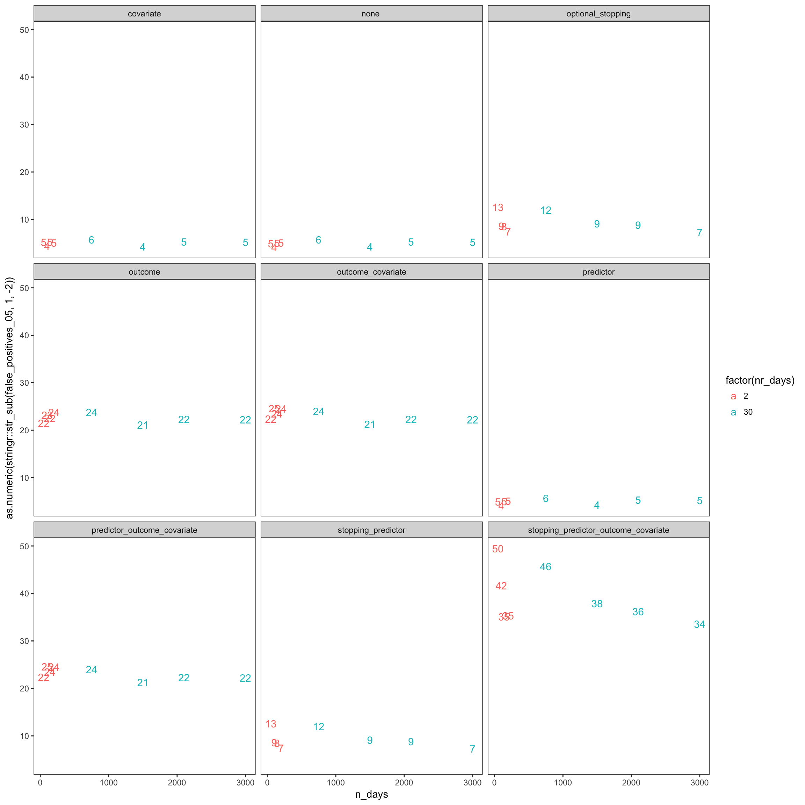
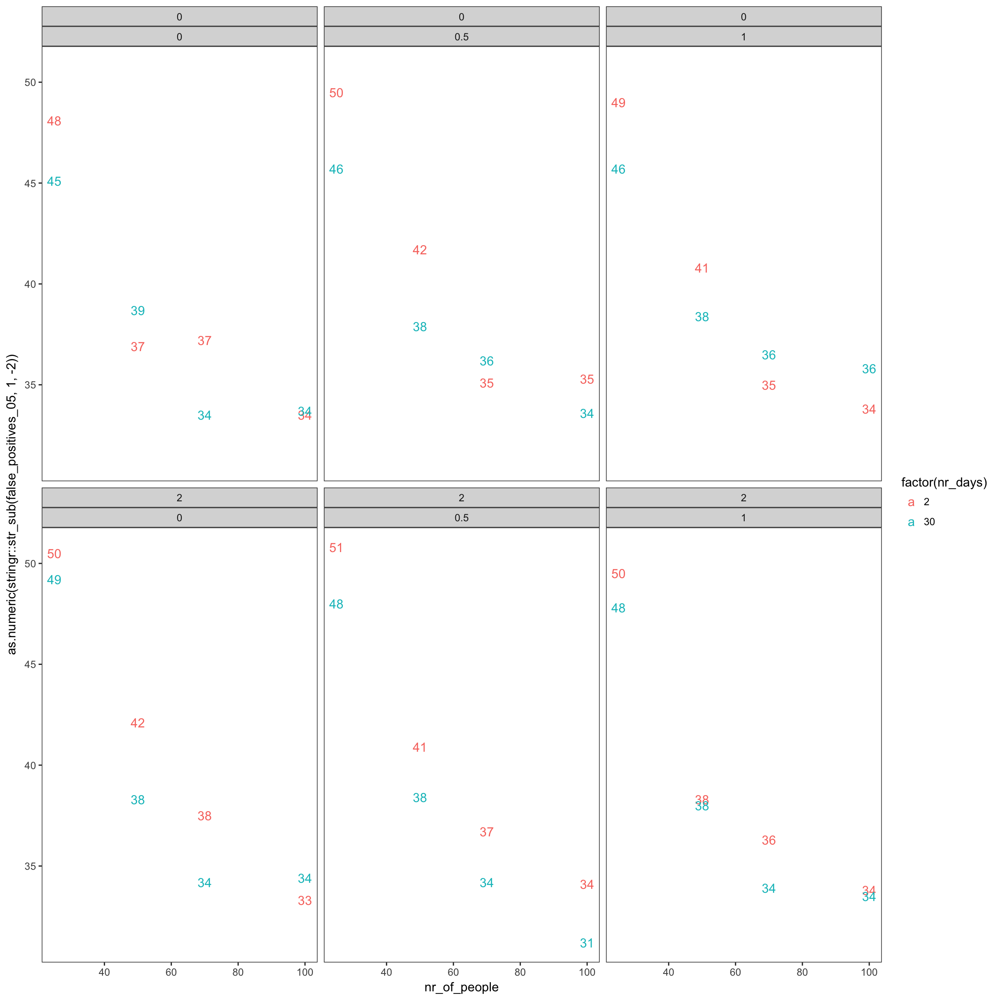
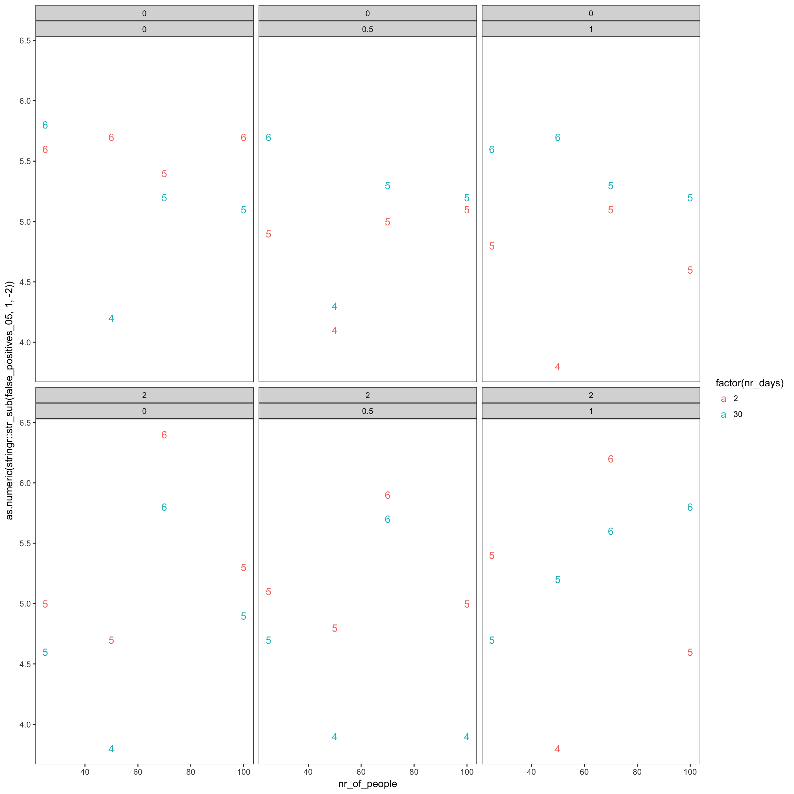

The smaller the sample size (participants * days), the worse is the effect of researcher degrees of freedoms on false positives, but even at large sample sizes, choosing among many outcomes is detrimental, showing the value of pre-registration.
We tested the following four researcher degrees of freedom and their combinations:
Combinations are modelled in this order: at each step the researcher first tries with and without a covariate, then with one of five outcomes, then with different predictors and last, increasing sample size.
Among the researcher degrees of freedom that we modelled, predictor choice and irrelevant covariates didn’t matter much.
We modelled non-severe optional stopping with only two increases in sample size by 10 participants. This may underestimate the effects of more severe optional stopping (e.g. testing after each new participant). Nevertheless, ill effects of optional stopping were detected, especially when sample size was small and when only two days were sampled per participant.
Surprisingly, choosing among five highly correlated outcomes was one of the worst researcher degrees of freedom.
Combinations of these strategies in effect multiplied the number of tests, so that in the worst case 3 * 2 * 5 * 3 = 90 tests were performed.
The annotated simulation script and the annotated helper functions provide the detail that this summary leaves out.
library(knitr)
opts_chunk$set(fig.width = 12, fig.height = 12, cache = T, warning = F, message = F, cache = F)library(formr); library(data.table); library(stringr); library(ggplot2); library(plyr); library(dplyr);library(car); library(psych); library(lme4);library(lmerTest); library(sjPlot)
source("0_helpers.R")
loadRDS("rdf_sims.rds")rdf = rdf_sims
rdf %>%
pap(glimpse(.)) %>%
select(-fertility_effect) ->
rdf## Observations: 648,000
## Variables: 16
## $ nr_of_people <dbl> 25, 25, 25, 25, 25, 25, 25, 25, 25, 25, 25, 25, 25, 25, 25, 25, 25, 25, 25, 25, ...
## $ nr_days <dbl> 2, 2, 2, 2, 2, 2, 2, 2, 2, 2, 2, 2, 2, 2, 2, 2, 2, 2, 2, 2, 2, 2, 2, 2, 2, 2, 2,...
## $ dayspan <chr> "1:38", "1:38", "1:38", "1:38", "1:38", "1:38", "1:38", "1:38", "1:38", "1:38", ...
## $ miss_window <dbl> 0, 0, 0, 0, 0, 0, 0, 0, 0, 0, 0, 0, 0, 0, 0, 0, 0, 0, 0, 0, 0, 0, 0, 0, 0, 0, 0,...
## $ trait_effect <dbl> 0, 0, 0, 0, 0, 0, 0, 0, 0, 0, 0, 0, 0, 0, 0, 0, 0, 0, 0, 0, 0, 0, 0, 0, 0, 0, 0,...
## $ fertility_effect <dbl> 0, 0, 0, 0, 0, 0, 0, 0, 0, 0, 0, 0, 0, 0, 0, 0, 0, 0, 0, 0, 0, 0, 0, 0, 0, 0, 0,...
## $ rdf <chr> "rdf_none ", "rdf_optional_stopping", "rdf_covariate", "rdf_outcome", "rdf_predi...
## $ estimate <dbl> 0.15681, 0.15681, 0.17542, -0.17872, 0.15681, -0.13730, -0.13730, -2.28055, 0.15...
## $ std.error <dbl> 0.3614, 0.3614, 0.3834, 0.3391, 0.3614, 0.3554, 0.3554, 0.5056, 0.3614, 0.4540, ...
## $ statistic <dbl> 0.43389, 0.43389, 0.45758, -0.52703, 0.43389, -0.38638, -0.38638, -4.51032, 0.43...
## $ p.value <dbl> 0.678850, 0.678850, 0.662736, 0.615026, 0.678850, 0.712066, 0.712066, 0.009534, ...
## $ usable_days <dbl> NA, NA, NA, NA, NA, NA, NA, NA, NA, NA, NA, NA, NA, NA, NA, NA, NA, NA, NA, NA, ...
## $ covariate_used <dbl> NA, NA, 1, NA, NA, 1, 1, 0, NA, NA, NA, 1, NA, NA, 1, 1, 1, NA, NA, NA, 1, NA, N...
## $ outcome <dbl> NA, NA, NA, 5, NA, 5, 5, 3, NA, NA, NA, NA, 5, NA, 5, 5, 5, NA, NA, NA, NA, 5, N...
## $ predictor <chr> NA, NA, NA, NA, "fertile_broad_m", NA, "fertile_broad_m", "prc_stirn_b_m", "fert...
## $ stopping.n <dbl> NA, 25, NA, NA, NA, NA, NA, 5, 25, NA, 25, NA, NA, NA, NA, NA, 25, 25, NA, 5, NA...
## nr_of_people nr_days dayspan miss_window trait_effect fertility_effect
## 1 25 2 1:38 0 0.0 0
## 2 25 2 1:38 0 0.0 0
## 3 25 2 1:38 0 0.0 0
## 4 25 2 1:38 0 0.0 0
## 5 25 2 1:38 0 0.0 0
## 6 25 2 1:38 0 0.0 0
## 7 25 2 1:38 0 0.0 0
## 8 25 2 1:38 0 0.0 0
## 9 25 2 1:38 0 0.0 0
## 10 25 2 1:38 0 0.0 0
## 11 25 2 1:38 0 0.0 0
## 12 25 2 1:38 0 0.0 0
## 13 25 2 1:38 0 0.0 0
## 14 25 2 1:38 0 0.0 0
## 15 25 2 1:38 0 0.0 0
## 16 25 2 1:38 0 0.0 0
## 17 25 2 1:38 0 0.0 0
## 18 25 2 1:38 0 0.0 0
## 19 25 2 1:38 0 0.0 0
## 20 25 2 1:38 0 0.0 0
## 21 25 2 1:38 0 0.0 0
## 22 25 2 1:38 0 0.0 0
## 23 25 2 1:38 0 0.0 0
## 24 25 2 1:38 0 0.0 0
## 25 25 2 1:38 0 0.0 0
## 26 25 2 1:38 0 0.0 0
## 27 25 2 1:38 0 0.0 0
## 28 25 2 1:38 0 0.0 0
## 29 25 2 1:38 0 0.0 0
## 30 25 2 1:38 0 0.0 0
## 31 25 2 1:38 0 0.0 0
## 32 25 2 1:38 0 0.0 0
## 33 25 2 1:38 0 0.0 0
## 34 25 2 1:38 0 0.0 0
## 35 25 2 1:38 0 0.0 0
## 36 25 2 1:38 0 0.0 0
## 37 25 2 1:38 0 0.0 0
## 38 25 2 1:38 0 0.0 0
## 39 25 2 1:38 0 0.0 0
## 40 25 2 1:38 0 0.0 0
## 41 25 2 1:38 0 0.0 0
## 42 25 2 1:38 0 0.0 0
## 43 25 2 1:38 0 0.0 0
## 44 25 2 1:38 0 0.0 0
## 45 25 2 1:38 0 0.0 0
## 46 25 2 1:38 0 0.0 0
## 47 25 2 1:38 0 0.0 0
## 48 25 2 1:38 0 0.0 0
## 49 25 2 1:38 0 0.0 0
## 50 25 2 1:38 0 0.0 0
## 51 25 2 1:38 0 0.0 0
## 52 25 2 1:38 0 0.0 0
## 53 25 2 1:38 0 0.0 0
## 54 25 2 1:38 0 0.0 0
## 55 25 2 1:38 0 0.0 0
## 56 25 2 1:38 0 0.0 0
## 57 25 2 1:38 0 0.0 0
## 58 25 2 1:38 0 0.0 0
## 59 25 2 1:38 0 0.0 0
## 60 25 2 1:38 0 0.0 0
## 61 25 2 1:38 0 0.0 0
## 62 25 2 1:38 0 0.0 0
## 63 25 2 1:38 0 0.0 0
## 64 25 2 1:38 0 0.0 0
## 65 25 2 1:38 0 0.0 0
## 66 25 2 1:38 0 0.0 0
## 67 25 2 1:38 0 0.0 0
## 68 25 2 1:38 0 0.0 0
## 69 25 2 1:38 0 0.0 0
## 70 25 2 1:38 0 0.0 0
## 71 25 2 1:38 0 0.0 0
## 72 25 2 1:38 0 0.0 0
## 73 25 2 1:38 0 0.0 0
## 74 25 2 1:38 0 0.0 0
## 75 25 2 1:38 0 0.0 0
## 76 25 2 1:38 0 0.0 0
## 77 25 2 1:38 0 0.0 0
## 78 25 2 1:38 0 0.0 0
## 79 25 2 1:38 0 0.0 0
## 80 25 2 1:38 0 0.0 0
## 81 25 2 1:38 0 0.0 0
## 82 25 2 1:38 0 0.0 0
## 83 25 2 1:38 0 0.0 0
## 84 25 2 1:38 0 0.0 0
## 85 25 2 1:38 0 0.0 0
## 86 25 2 1:38 0 0.0 0
## 87 25 2 1:38 0 0.0 0
## 88 25 2 1:38 0 0.0 0
## 89 25 2 1:38 0 0.0 0
## 90 25 2 1:38 0 0.0 0
## 91 25 2 1:38 0 0.0 0
## 92 25 2 1:38 0 0.0 0
## 93 25 2 1:38 0 0.0 0
## 94 25 2 1:38 0 0.0 0
## 95 25 2 1:38 0 0.0 0
## 96 25 2 1:38 0 0.0 0
## 97 25 2 1:38 0 0.0 0
## 98 25 2 1:38 0 0.0 0
## 99 25 2 1:38 0 0.0 0
## 100 25 2 1:38 0 0.0 0
## 101 25 2 1:38 0 0.0 0
## 102 25 2 1:38 0 0.0 0
## 103 25 2 1:38 0 0.0 0
## 104 25 2 1:38 0 0.0 0
## 105 25 2 1:38 0 0.0 0
## 106 25 2 1:38 0 0.0 0
## 107 25 2 1:38 0 0.0 0
## 108 25 2 1:38 0 0.0 0
## 109 25 2 1:38 0 0.0 0
## 110 25 2 1:38 0 0.0 0
## 111 25 2 1:38 0 0.0 0
## 112 25 2 1:38 0 0.0 0
## 113 25 2 1:38 0 0.0 0
## 114 25 2 1:38 0 0.0 0
## 115 25 2 1:38 0 0.0 0
## 116 25 2 1:38 0 0.0 0
## 117 25 2 1:38 0 0.0 0
## 118 25 2 1:38 0 0.0 0
## 119 25 2 1:38 0 0.0 0
## 120 25 2 1:38 0 0.0 0
## 121 25 2 1:38 0 0.0 0
## 122 25 2 1:38 0 0.0 0
## 123 25 2 1:38 0 0.0 0
## 124 25 2 1:38 0 0.0 0
## 125 25 2 1:38 0 0.0 0
## 126 25 2 1:38 0 0.0 0
## 127 25 2 1:38 0 0.0 0
## 128 25 2 1:38 0 0.0 0
## 129 25 2 1:38 0 0.0 0
## 130 25 2 1:38 0 0.0 0
## 131 25 2 1:38 0 0.0 0
## 132 25 2 1:38 0 0.0 0
## 133 25 2 1:38 0 0.0 0
## 134 25 2 1:38 0 0.0 0
## 135 25 2 1:38 0 0.0 0
## 136 25 2 1:38 0 0.0 0
## 137 25 2 1:38 0 0.0 0
## 138 25 2 1:38 0 0.0 0
## 139 25 2 1:38 0 0.0 0
## 140 25 2 1:38 0 0.0 0
## 141 25 2 1:38 0 0.0 0
## 142 25 2 1:38 0 0.0 0
## 143 25 2 1:38 0 0.0 0
## 144 25 2 1:38 0 0.0 0
## 145 25 2 1:38 0 0.0 0
## 146 25 2 1:38 0 0.0 0
## 147 25 2 1:38 0 0.0 0
## 148 25 2 1:38 0 0.0 0
## 149 25 2 1:38 0 0.0 0
## 150 25 2 1:38 0 0.0 0
## 151 25 2 1:38 0 0.0 0
## 152 25 2 1:38 0 0.0 0
## 153 25 2 1:38 0 0.0 0
## 154 25 2 1:38 0 0.0 0
## 155 25 2 1:38 0 0.0 0
## 156 25 2 1:38 0 0.0 0
## 157 25 2 1:38 0 0.0 0
## 158 25 2 1:38 0 0.0 0
## 159 25 2 1:38 0 0.0 0
## 160 25 2 1:38 0 0.0 0
## 161 25 2 1:38 0 0.0 0
## 162 25 2 1:38 0 0.0 0
## 163 25 2 1:38 0 0.0 0
## 164 25 2 1:38 0 0.0 0
## 165 25 2 1:38 0 0.0 0
## 166 25 2 1:38 0 0.0 0
## 167 25 2 1:38 0 0.0 0
## 168 25 2 1:38 0 0.0 0
## 169 25 2 1:38 0 0.0 0
## 170 25 2 1:38 0 0.0 0
## 171 25 2 1:38 0 0.0 0
## 172 25 2 1:38 0 0.0 0
## 173 25 2 1:38 0 0.0 0
## 174 25 2 1:38 0 0.0 0
## 175 25 2 1:38 0 0.0 0
## 176 25 2 1:38 0 0.0 0
## 177 25 2 1:38 0 0.0 0
## 178 25 2 1:38 0 0.0 0
## 179 25 2 1:38 0 0.0 0
## 180 25 2 1:38 0 0.0 0
## 181 25 2 1:38 0 0.0 0
## 182 25 2 1:38 0 0.0 0
## 183 25 2 1:38 0 0.0 0
## 184 25 2 1:38 0 0.0 0
## 185 25 2 1:38 0 0.0 0
## 186 25 2 1:38 0 0.0 0
## 187 25 2 1:38 0 0.0 0
## 188 25 2 1:38 0 0.0 0
## 189 25 2 1:38 0 0.0 0
## 190 25 2 1:38 0 0.0 0
## 191 25 2 1:38 0 0.0 0
## 192 25 2 1:38 0 0.0 0
## 193 25 2 1:38 0 0.0 0
## 194 25 2 1:38 0 0.0 0
## 195 25 2 1:38 0 0.0 0
## 196 25 2 1:38 0 0.0 0
## 197 25 2 1:38 0 0.0 0
## 198 25 2 1:38 0 0.0 0
## 199 25 2 1:38 0 0.0 0
## 200 25 2 1:38 0 0.0 0
## 201 25 2 1:38 0 0.0 0
## 202 25 2 1:38 0 0.0 0
## 203 25 2 1:38 0 0.0 0
## 204 25 2 1:38 0 0.0 0
## 205 25 2 1:38 0 0.0 0
## 206 25 2 1:38 0 0.0 0
## 207 25 2 1:38 0 0.0 0
## 208 25 2 1:38 0 0.0 0
## 209 25 2 1:38 0 0.0 0
## 210 25 2 1:38 0 0.0 0
## 211 25 2 1:38 0 0.0 0
## 212 25 2 1:38 0 0.0 0
## 213 25 2 1:38 0 0.0 0
## 214 25 2 1:38 0 0.0 0
## 215 25 2 1:38 0 0.0 0
## 216 25 2 1:38 0 0.0 0
## 217 25 2 1:38 0 0.0 0
## 218 25 2 1:38 0 0.0 0
## 219 25 2 1:38 0 0.0 0
## 220 25 2 1:38 0 0.0 0
## 221 25 2 1:38 0 0.0 0
## 222 25 2 1:38 0 0.0 0
## 223 25 2 1:38 0 0.0 0
## 224 25 2 1:38 0 0.0 0
## 225 25 2 1:38 0 0.0 0
## 226 25 2 1:38 0 0.0 0
## 227 25 2 1:38 0 0.0 0
## 228 25 2 1:38 0 0.0 0
## 229 25 2 1:38 0 0.0 0
## 230 25 2 1:38 0 0.0 0
## 231 25 2 1:38 0 0.0 0
## 232 25 2 1:38 0 0.0 0
## 233 25 2 1:38 0 0.0 0
## 234 25 2 1:38 0 0.0 0
## 235 25 2 1:38 0 0.0 0
## 236 25 2 1:38 0 0.0 0
## 237 25 2 1:38 0 0.0 0
## 238 25 2 1:38 0 0.0 0
## 239 25 2 1:38 0 0.0 0
## 240 25 2 1:38 0 0.0 0
## 241 25 2 1:38 0 0.0 0
## 242 25 2 1:38 0 0.0 0
## 243 25 2 1:38 0 0.0 0
## 244 25 2 1:38 0 0.0 0
## 245 25 2 1:38 0 0.0 0
## 246 25 2 1:38 0 0.0 0
## 247 25 2 1:38 0 0.0 0
## 248 25 2 1:38 0 0.0 0
## 249 25 2 1:38 0 0.0 0
## 250 25 2 1:38 0 0.0 0
## 251 25 2 1:38 0 0.0 0
## 252 25 2 1:38 0 0.0 0
## 253 25 2 1:38 0 0.0 0
## 254 25 2 1:38 0 0.0 0
## 255 25 2 1:38 0 0.0 0
## 256 25 2 1:38 0 0.0 0
## 257 25 2 1:38 0 0.0 0
## 258 25 2 1:38 0 0.0 0
## 259 25 2 1:38 0 0.0 0
## 260 25 2 1:38 0 0.0 0
## 261 25 2 1:38 0 0.0 0
## 262 25 2 1:38 0 0.0 0
## 263 25 2 1:38 0 0.0 0
## 264 25 2 1:38 0 0.0 0
## 265 25 2 1:38 0 0.0 0
## 266 25 2 1:38 0 0.0 0
## 267 25 2 1:38 0 0.0 0
## 268 25 2 1:38 0 0.0 0
## 269 25 2 1:38 0 0.0 0
## 270 25 2 1:38 0 0.0 0
## 271 25 2 1:38 0 0.0 0
## 272 25 2 1:38 0 0.0 0
## 273 25 2 1:38 0 0.0 0
## 274 25 2 1:38 0 0.0 0
## 275 25 2 1:38 0 0.0 0
## 276 25 2 1:38 0 0.0 0
## 277 25 2 1:38 0 0.0 0
## 278 25 2 1:38 0 0.0 0
## 279 25 2 1:38 0 0.0 0
## 280 25 2 1:38 0 0.0 0
## 281 25 2 1:38 0 0.0 0
## 282 25 2 1:38 0 0.0 0
## 283 25 2 1:38 0 0.0 0
## 284 25 2 1:38 0 0.0 0
## 285 25 2 1:38 0 0.0 0
## 286 25 2 1:38 0 0.0 0
## 287 25 2 1:38 0 0.0 0
## 288 25 2 1:38 0 0.0 0
## 289 25 2 1:38 0 0.0 0
## 290 25 2 1:38 0 0.0 0
## 291 25 2 1:38 0 0.0 0
## 292 25 2 1:38 0 0.0 0
## 293 25 2 1:38 0 0.0 0
## 294 25 2 1:38 0 0.0 0
## 295 25 2 1:38 0 0.0 0
## 296 25 2 1:38 0 0.0 0
## 297 25 2 1:38 0 0.0 0
## 298 25 2 1:38 0 0.0 0
## 299 25 2 1:38 0 0.0 0
## 300 25 2 1:38 0 0.0 0
## 301 25 2 1:38 0 0.0 0
## 302 25 2 1:38 0 0.0 0
## 303 25 2 1:38 0 0.0 0
## 304 25 2 1:38 0 0.0 0
## 305 25 2 1:38 0 0.0 0
## 306 25 2 1:38 0 0.0 0
## 307 25 2 1:38 0 0.0 0
## 308 25 2 1:38 0 0.0 0
## 309 25 2 1:38 0 0.0 0
## 310 25 2 1:38 0 0.0 0
## 311 25 2 1:38 0 0.0 0
## 312 25 2 1:38 0 0.0 0
## 313 25 2 1:38 0 0.0 0
## 314 25 2 1:38 0 0.0 0
## 315 25 2 1:38 0 0.0 0
## 316 25 2 1:38 0 0.0 0
## 317 25 2 1:38 0 0.0 0
## 318 25 2 1:38 0 0.0 0
## 319 25 2 1:38 0 0.0 0
## 320 25 2 1:38 0 0.0 0
## 321 25 2 1:38 0 0.0 0
## 322 25 2 1:38 0 0.0 0
## 323 25 2 1:38 0 0.0 0
## 324 25 2 1:38 0 0.0 0
## 325 25 2 1:38 0 0.0 0
## 326 25 2 1:38 0 0.0 0
## 327 25 2 1:38 0 0.0 0
## 328 25 2 1:38 0 0.0 0
## 329 25 2 1:38 0 0.0 0
## 330 25 2 1:38 0 0.0 0
## 331 25 2 1:38 0 0.0 0
## 332 25 2 1:38 0 0.0 0
## 333 25 2 1:38 0 0.0 0
## 334 25 2 1:38 0 0.0 0
## 335 25 2 1:38 0 0.0 0
## 336 25 2 1:38 0 0.0 0
## 337 25 2 1:38 0 0.0 0
## 338 25 2 1:38 0 0.0 0
## 339 25 2 1:38 0 0.0 0
## 340 25 2 1:38 0 0.0 0
## 341 25 2 1:38 0 0.0 0
## 342 25 2 1:38 0 0.0 0
## 343 25 2 1:38 0 0.0 0
## 344 25 2 1:38 0 0.0 0
## 345 25 2 1:38 0 0.0 0
## 346 25 2 1:38 0 0.0 0
## 347 25 2 1:38 0 0.0 0
## 348 25 2 1:38 0 0.0 0
## 349 25 2 1:38 0 0.0 0
## 350 25 2 1:38 0 0.0 0
## 351 25 2 1:38 0 0.0 0
## 352 25 2 1:38 0 0.0 0
## 353 25 2 1:38 0 0.0 0
## 354 25 2 1:38 0 0.0 0
## 355 25 2 1:38 0 0.0 0
## 356 25 2 1:38 0 0.0 0
## 357 25 2 1:38 0 0.0 0
## 358 25 2 1:38 0 0.0 0
## 359 25 2 1:38 0 0.0 0
## 360 25 2 1:38 0 0.0 0
## 361 25 2 1:38 0 0.0 0
## 362 25 2 1:38 0 0.0 0
## 363 25 2 1:38 0 0.0 0
## 364 25 2 1:38 0 0.0 0
## 365 25 2 1:38 0 0.0 0
## 366 25 2 1:38 0 0.0 0
## 367 25 2 1:38 0 0.0 0
## 368 25 2 1:38 0 0.0 0
## 369 25 2 1:38 0 0.0 0
## 370 25 2 1:38 0 0.0 0
## 371 25 2 1:38 0 0.0 0
## 372 25 2 1:38 0 0.0 0
## 373 25 2 1:38 0 0.0 0
## 374 25 2 1:38 0 0.0 0
## 375 25 2 1:38 0 0.0 0
## 376 25 2 1:38 0 0.0 0
## 377 25 2 1:38 0 0.0 0
## 378 25 2 1:38 0 0.0 0
## 379 25 2 1:38 0 0.0 0
## 380 25 2 1:38 0 0.0 0
## 381 25 2 1:38 0 0.0 0
## 382 25 2 1:38 0 0.0 0
## 383 25 2 1:38 0 0.0 0
## 384 25 2 1:38 0 0.0 0
## 385 25 2 1:38 0 0.0 0
## 386 25 2 1:38 0 0.0 0
## 387 25 2 1:38 0 0.0 0
## 388 25 2 1:38 0 0.0 0
## 389 25 2 1:38 0 0.0 0
## 390 25 2 1:38 0 0.0 0
## 391 25 2 1:38 0 0.0 0
## 392 25 2 1:38 0 0.0 0
## 393 25 2 1:38 0 0.0 0
## 394 25 2 1:38 0 0.0 0
## 395 25 2 1:38 0 0.0 0
## 396 25 2 1:38 0 0.0 0
## 397 25 2 1:38 0 0.0 0
## 398 25 2 1:38 0 0.0 0
## 399 25 2 1:38 0 0.0 0
## 400 25 2 1:38 0 0.0 0
## 401 25 2 1:38 0 0.0 0
## 402 25 2 1:38 0 0.0 0
## 403 25 2 1:38 0 0.0 0
## 404 25 2 1:38 0 0.0 0
## 405 25 2 1:38 0 0.0 0
## 406 25 2 1:38 0 0.0 0
## 407 25 2 1:38 0 0.0 0
## 408 25 2 1:38 0 0.0 0
## 409 25 2 1:38 0 0.0 0
## 410 25 2 1:38 0 0.0 0
## 411 25 2 1:38 0 0.0 0
## 412 25 2 1:38 0 0.0 0
## 413 25 2 1:38 0 0.0 0
## 414 25 2 1:38 0 0.0 0
## 415 25 2 1:38 0 0.0 0
## 416 25 2 1:38 0 0.0 0
## 417 25 2 1:38 0 0.0 0
## 418 25 2 1:38 0 0.0 0
## 419 25 2 1:38 0 0.0 0
## 420 25 2 1:38 0 0.0 0
## 421 25 2 1:38 0 0.0 0
## 422 25 2 1:38 0 0.0 0
## 423 25 2 1:38 0 0.0 0
## 424 25 2 1:38 0 0.0 0
## 425 25 2 1:38 0 0.0 0
## 426 25 2 1:38 0 0.0 0
## 427 25 2 1:38 0 0.0 0
## 428 25 2 1:38 0 0.0 0
## 429 25 2 1:38 0 0.0 0
## 430 25 2 1:38 0 0.0 0
## 431 25 2 1:38 0 0.0 0
## 432 25 2 1:38 0 0.0 0
## 433 25 2 1:38 0 0.0 0
## 434 25 2 1:38 0 0.0 0
## 435 25 2 1:38 0 0.0 0
## 436 25 2 1:38 0 0.0 0
## 437 25 2 1:38 0 0.0 0
## 438 25 2 1:38 0 0.0 0
## 439 25 2 1:38 0 0.0 0
## 440 25 2 1:38 0 0.0 0
## 441 25 2 1:38 0 0.0 0
## 442 25 2 1:38 0 0.0 0
## 443 25 2 1:38 0 0.0 0
## 444 25 2 1:38 0 0.0 0
## 445 25 2 1:38 0 0.0 0
## 446 25 2 1:38 0 0.0 0
## 447 25 2 1:38 0 0.0 0
## 448 25 2 1:38 0 0.0 0
## 449 25 2 1:38 0 0.0 0
## 450 25 2 1:38 0 0.0 0
## 451 25 2 1:38 0 0.0 0
## 452 25 2 1:38 0 0.0 0
## 453 25 2 1:38 0 0.0 0
## 454 25 2 1:38 0 0.0 0
## 455 25 2 1:38 0 0.0 0
## 456 25 2 1:38 0 0.0 0
## 457 25 2 1:38 0 0.0 0
## 458 25 2 1:38 0 0.0 0
## 459 25 2 1:38 0 0.0 0
## 460 25 2 1:38 0 0.0 0
## 461 25 2 1:38 0 0.0 0
## 462 25 2 1:38 0 0.0 0
## 463 25 2 1:38 0 0.0 0
## 464 25 2 1:38 0 0.0 0
## 465 25 2 1:38 0 0.0 0
## 466 25 2 1:38 0 0.0 0
## 467 25 2 1:38 0 0.0 0
## 468 25 2 1:38 0 0.0 0
## 469 25 2 1:38 0 0.0 0
## 470 25 2 1:38 0 0.0 0
## 471 25 2 1:38 0 0.0 0
## 472 25 2 1:38 0 0.0 0
## 473 25 2 1:38 0 0.0 0
## 474 25 2 1:38 0 0.0 0
## 475 25 2 1:38 0 0.0 0
## 476 25 2 1:38 0 0.0 0
## 477 25 2 1:38 0 0.0 0
## 478 25 2 1:38 0 0.0 0
## 479 25 2 1:38 0 0.0 0
## 480 25 2 1:38 0 0.0 0
## 481 25 2 1:38 0 0.0 0
## 482 25 2 1:38 0 0.0 0
## 483 25 2 1:38 0 0.0 0
## 484 25 2 1:38 0 0.0 0
## 485 25 2 1:38 0 0.0 0
## 486 25 2 1:38 0 0.0 0
## 487 25 2 1:38 0 0.0 0
## 488 25 2 1:38 0 0.0 0
## 489 25 2 1:38 0 0.0 0
## 490 25 2 1:38 0 0.0 0
## 491 25 2 1:38 0 0.0 0
## 492 25 2 1:38 0 0.0 0
## 493 25 2 1:38 0 0.0 0
## 494 25 2 1:38 0 0.0 0
## 495 25 2 1:38 0 0.0 0
## 496 25 2 1:38 0 0.0 0
## 497 25 2 1:38 0 0.0 0
## 498 25 2 1:38 0 0.0 0
## 499 25 2 1:38 0 0.0 0
## 500 25 2 1:38 0 0.0 0
## 501 25 2 1:38 0 0.0 0
## 502 25 2 1:38 0 0.0 0
## 503 25 2 1:38 0 0.0 0
## 504 25 2 1:38 0 0.0 0
## 505 25 2 1:38 0 0.0 0
## 506 25 2 1:38 0 0.0 0
## 507 25 2 1:38 0 0.0 0
## 508 25 2 1:38 0 0.0 0
## 509 25 2 1:38 0 0.0 0
## 510 25 2 1:38 0 0.0 0
## 511 25 2 1:38 0 0.0 0
## 512 25 2 1:38 0 0.0 0
## 513 25 2 1:38 0 0.0 0
## 514 25 2 1:38 0 0.0 0
## 515 25 2 1:38 0 0.0 0
## 516 25 2 1:38 0 0.0 0
## 517 25 2 1:38 0 0.0 0
## 518 25 2 1:38 0 0.0 0
## 519 25 2 1:38 0 0.0 0
## 520 25 2 1:38 0 0.0 0
## 521 25 2 1:38 0 0.0 0
## 522 25 2 1:38 0 0.0 0
## 523 25 2 1:38 0 0.0 0
## 524 25 2 1:38 0 0.0 0
## 525 25 2 1:38 0 0.0 0
## 526 25 2 1:38 0 0.0 0
## 527 25 2 1:38 0 0.0 0
## 528 25 2 1:38 0 0.0 0
## 529 25 2 1:38 0 0.0 0
## 530 25 2 1:38 0 0.0 0
## 531 25 2 1:38 0 0.0 0
## 532 25 2 1:38 0 0.0 0
## 533 25 2 1:38 0 0.0 0
## 534 25 2 1:38 0 0.0 0
## 535 25 2 1:38 0 0.0 0
## 536 25 2 1:38 0 0.0 0
## 537 25 2 1:38 0 0.0 0
## 538 25 2 1:38 0 0.0 0
## 539 25 2 1:38 0 0.0 0
## 540 25 2 1:38 0 0.0 0
## 541 25 2 1:38 0 0.0 0
## 542 25 2 1:38 0 0.0 0
## 543 25 2 1:38 0 0.0 0
## 544 25 2 1:38 0 0.0 0
## 545 25 2 1:38 0 0.0 0
## 546 25 2 1:38 0 0.0 0
## 547 25 2 1:38 0 0.0 0
## 548 25 2 1:38 0 0.0 0
## 549 25 2 1:38 0 0.0 0
## 550 25 2 1:38 0 0.0 0
## 551 25 2 1:38 0 0.0 0
## 552 25 2 1:38 0 0.0 0
## 553 25 2 1:38 0 0.0 0
## 554 25 2 1:38 0 0.0 0
## 555 25 2 1:38 0 0.0 0
## 556 25 2 1:38 0 0.0 0
## 557 25 2 1:38 0 0.0 0
## 558 25 2 1:38 0 0.0 0
## 559 25 2 1:38 0 0.0 0
## 560 25 2 1:38 0 0.0 0
## 561 25 2 1:38 0 0.0 0
## 562 25 2 1:38 0 0.0 0
## 563 25 2 1:38 0 0.0 0
## 564 25 2 1:38 0 0.0 0
## 565 25 2 1:38 0 0.0 0
## 566 25 2 1:38 0 0.0 0
## 567 25 2 1:38 0 0.0 0
## 568 25 2 1:38 0 0.0 0
## 569 25 2 1:38 0 0.0 0
## 570 25 2 1:38 0 0.0 0
## 571 25 2 1:38 0 0.0 0
## 572 25 2 1:38 0 0.0 0
## 573 25 2 1:38 0 0.0 0
## 574 25 2 1:38 0 0.0 0
## 575 25 2 1:38 0 0.0 0
## 576 25 2 1:38 0 0.0 0
## 577 25 2 1:38 0 0.0 0
## 578 25 2 1:38 0 0.0 0
## 579 25 2 1:38 0 0.0 0
## 580 25 2 1:38 0 0.0 0
## 581 25 2 1:38 0 0.0 0
## 582 25 2 1:38 0 0.0 0
## 583 25 2 1:38 0 0.0 0
## 584 25 2 1:38 0 0.0 0
## 585 25 2 1:38 0 0.0 0
## 586 25 2 1:38 0 0.0 0
## 587 25 2 1:38 0 0.0 0
## 588 25 2 1:38 0 0.0 0
## 589 25 2 1:38 0 0.0 0
## 590 25 2 1:38 0 0.0 0
## 591 25 2 1:38 0 0.0 0
## 592 25 2 1:38 0 0.0 0
## 593 25 2 1:38 0 0.0 0
## 594 25 2 1:38 0 0.0 0
## 595 25 2 1:38 0 0.0 0
## 596 25 2 1:38 0 0.0 0
## 597 25 2 1:38 0 0.0 0
## 598 25 2 1:38 0 0.0 0
## 599 25 2 1:38 0 0.0 0
## 600 25 2 1:38 0 0.0 0
## 601 25 2 1:38 0 0.0 0
## 602 25 2 1:38 0 0.0 0
## 603 25 2 1:38 0 0.0 0
## 604 25 2 1:38 0 0.0 0
## 605 25 2 1:38 0 0.0 0
## 606 25 2 1:38 0 0.0 0
## 607 25 2 1:38 0 0.0 0
## 608 25 2 1:38 0 0.0 0
## 609 25 2 1:38 0 0.0 0
## 610 25 2 1:38 0 0.0 0
## 611 25 2 1:38 0 0.0 0
## 612 25 2 1:38 0 0.0 0
## 613 25 2 1:38 0 0.0 0
## 614 25 2 1:38 0 0.0 0
## 615 25 2 1:38 0 0.0 0
## 616 25 2 1:38 0 0.0 0
## 617 25 2 1:38 0 0.0 0
## 618 25 2 1:38 0 0.0 0
## 619 25 2 1:38 0 0.0 0
## 620 25 2 1:38 0 0.0 0
## 621 25 2 1:38 0 0.0 0
## 622 25 2 1:38 0 0.0 0
## 623 25 2 1:38 0 0.0 0
## 624 25 2 1:38 0 0.0 0
## 625 25 2 1:38 0 0.0 0
## 626 25 2 1:38 0 0.0 0
## 627 25 2 1:38 0 0.0 0
## 628 25 2 1:38 0 0.0 0
## 629 25 2 1:38 0 0.0 0
## 630 25 2 1:38 0 0.0 0
## 631 25 2 1:38 0 0.0 0
## 632 25 2 1:38 0 0.0 0
## 633 25 2 1:38 0 0.0 0
## 634 25 2 1:38 0 0.0 0
## 635 25 2 1:38 0 0.0 0
## 636 25 2 1:38 0 0.0 0
## 637 25 2 1:38 0 0.0 0
## 638 25 2 1:38 0 0.0 0
## 639 25 2 1:38 0 0.0 0
## 640 25 2 1:38 0 0.0 0
## 641 25 2 1:38 0 0.0 0
## 642 25 2 1:38 0 0.0 0
## 643 25 2 1:38 0 0.0 0
## 644 25 2 1:38 0 0.0 0
## 645 25 2 1:38 0 0.0 0
## 646 25 2 1:38 0 0.0 0
## 647 25 2 1:38 0 0.0 0
## 648 25 2 1:38 0 0.0 0
## 649 25 2 1:38 0 0.0 0
## 650 25 2 1:38 0 0.0 0
## 651 25 2 1:38 0 0.0 0
## 652 25 2 1:38 0 0.0 0
## 653 25 2 1:38 0 0.0 0
## 654 25 2 1:38 0 0.0 0
## 655 25 2 1:38 0 0.0 0
## 656 25 2 1:38 0 0.0 0
## 657 25 2 1:38 0 0.0 0
## 658 25 2 1:38 0 0.0 0
## 659 25 2 1:38 0 0.0 0
## 660 25 2 1:38 0 0.0 0
## 661 25 2 1:38 0 0.0 0
## 662 25 2 1:38 0 0.0 0
## 663 25 2 1:38 0 0.0 0
## 664 25 2 1:38 0 0.0 0
## 665 25 2 1:38 0 0.0 0
## 666 25 2 1:38 0 0.0 0
## 667 25 2 1:38 0 0.0 0
## 668 25 2 1:38 0 0.0 0
## 669 25 2 1:38 0 0.0 0
## 670 25 2 1:38 0 0.0 0
## 671 25 2 1:38 0 0.0 0
## 672 25 2 1:38 0 0.0 0
## 673 25 2 1:38 0 0.0 0
## 674 25 2 1:38 0 0.0 0
## 675 25 2 1:38 0 0.0 0
## 676 25 2 1:38 0 0.0 0
## 677 25 2 1:38 0 0.0 0
## 678 25 2 1:38 0 0.0 0
## 679 25 2 1:38 0 0.0 0
## 680 25 2 1:38 0 0.0 0
## 681 25 2 1:38 0 0.0 0
## 682 25 2 1:38 0 0.0 0
## 683 25 2 1:38 0 0.0 0
## 684 25 2 1:38 0 0.0 0
## 685 25 2 1:38 0 0.0 0
## 686 25 2 1:38 0 0.0 0
## 687 25 2 1:38 0 0.0 0
## 688 25 2 1:38 0 0.0 0
## 689 25 2 1:38 0 0.0 0
## 690 25 2 1:38 0 0.0 0
## 691 25 2 1:38 0 0.0 0
## 692 25 2 1:38 0 0.0 0
## 693 25 2 1:38 0 0.0 0
## 694 25 2 1:38 0 0.0 0
## 695 25 2 1:38 0 0.0 0
## 696 25 2 1:38 0 0.0 0
## 697 25 2 1:38 0 0.0 0
## 698 25 2 1:38 0 0.0 0
## 699 25 2 1:38 0 0.0 0
## 700 25 2 1:38 0 0.0 0
## 701 25 2 1:38 0 0.0 0
## 702 25 2 1:38 0 0.0 0
## 703 25 2 1:38 0 0.0 0
## 704 25 2 1:38 0 0.0 0
## 705 25 2 1:38 0 0.0 0
## 706 25 2 1:38 0 0.0 0
## 707 25 2 1:38 0 0.0 0
## 708 25 2 1:38 0 0.0 0
## 709 25 2 1:38 0 0.0 0
## 710 25 2 1:38 0 0.0 0
## 711 25 2 1:38 0 0.0 0
## 712 25 2 1:38 0 0.0 0
## 713 25 2 1:38 0 0.0 0
## 714 25 2 1:38 0 0.0 0
## 715 25 2 1:38 0 0.0 0
## 716 25 2 1:38 0 0.0 0
## 717 25 2 1:38 0 0.0 0
## 718 25 2 1:38 0 0.0 0
## 719 25 2 1:38 0 0.0 0
## 720 25 2 1:38 0 0.0 0
## 721 25 2 1:38 0 0.0 0
## 722 25 2 1:38 0 0.0 0
## 723 25 2 1:38 0 0.0 0
## 724 25 2 1:38 0 0.0 0
## 725 25 2 1:38 0 0.0 0
## 726 25 2 1:38 0 0.0 0
## 727 25 2 1:38 0 0.0 0
## 728 25 2 1:38 0 0.0 0
## 729 25 2 1:38 0 0.0 0
## 730 25 2 1:38 0 0.0 0
## 731 25 2 1:38 0 0.0 0
## 732 25 2 1:38 0 0.0 0
## 733 25 2 1:38 0 0.0 0
## 734 25 2 1:38 0 0.0 0
## 735 25 2 1:38 0 0.0 0
## 736 25 2 1:38 0 0.0 0
## 737 25 2 1:38 0 0.0 0
## 738 25 2 1:38 0 0.0 0
## 739 25 2 1:38 0 0.0 0
## 740 25 2 1:38 0 0.0 0
## 741 25 2 1:38 0 0.0 0
## 742 25 2 1:38 0 0.0 0
## 743 25 2 1:38 0 0.0 0
## 744 25 2 1:38 0 0.0 0
## 745 25 2 1:38 0 0.0 0
## 746 25 2 1:38 0 0.0 0
## 747 25 2 1:38 0 0.0 0
## 748 25 2 1:38 0 0.0 0
## 749 25 2 1:38 0 0.0 0
## 750 25 2 1:38 0 0.0 0
## 751 25 2 1:38 0 0.0 0
## 752 25 2 1:38 0 0.0 0
## 753 25 2 1:38 0 0.0 0
## 754 25 2 1:38 0 0.0 0
## 755 25 2 1:38 0 0.0 0
## 756 25 2 1:38 0 0.0 0
## 757 25 2 1:38 0 0.0 0
## 758 25 2 1:38 0 0.0 0
## 759 25 2 1:38 0 0.0 0
## 760 25 2 1:38 0 0.0 0
## 761 25 2 1:38 0 0.0 0
## 762 25 2 1:38 0 0.0 0
## 763 25 2 1:38 0 0.0 0
## 764 25 2 1:38 0 0.0 0
## 765 25 2 1:38 0 0.0 0
## 766 25 2 1:38 0 0.0 0
## 767 25 2 1:38 0 0.0 0
## 768 25 2 1:38 0 0.0 0
## 769 25 2 1:38 0 0.0 0
## 770 25 2 1:38 0 0.0 0
## 771 25 2 1:38 0 0.0 0
## 772 25 2 1:38 0 0.0 0
## 773 25 2 1:38 0 0.0 0
## 774 25 2 1:38 0 0.0 0
## 775 25 2 1:38 0 0.0 0
## 776 25 2 1:38 0 0.0 0
## 777 25 2 1:38 0 0.0 0
## 778 25 2 1:38 0 0.0 0
## 779 25 2 1:38 0 0.0 0
## 780 25 2 1:38 0 0.0 0
## 781 25 2 1:38 0 0.0 0
## 782 25 2 1:38 0 0.0 0
## 783 25 2 1:38 0 0.0 0
## 784 25 2 1:38 0 0.0 0
## 785 25 2 1:38 0 0.0 0
## 786 25 2 1:38 0 0.0 0
## 787 25 2 1:38 0 0.0 0
## 788 25 2 1:38 0 0.0 0
## 789 25 2 1:38 0 0.0 0
## 790 25 2 1:38 0 0.0 0
## 791 25 2 1:38 0 0.0 0
## 792 25 2 1:38 0 0.0 0
## 793 25 2 1:38 0 0.0 0
## 794 25 2 1:38 0 0.0 0
## 795 25 2 1:38 0 0.0 0
## 796 25 2 1:38 0 0.0 0
## 797 25 2 1:38 0 0.0 0
## 798 25 2 1:38 0 0.0 0
## 799 25 2 1:38 0 0.0 0
## 800 25 2 1:38 0 0.0 0
## 801 25 2 1:38 0 0.0 0
## 802 25 2 1:38 0 0.0 0
## 803 25 2 1:38 0 0.0 0
## 804 25 2 1:38 0 0.0 0
## 805 25 2 1:38 0 0.0 0
## 806 25 2 1:38 0 0.0 0
## 807 25 2 1:38 0 0.0 0
## 808 25 2 1:38 0 0.0 0
## 809 25 2 1:38 0 0.0 0
## 810 25 2 1:38 0 0.0 0
## 811 25 2 1:38 0 0.0 0
## 812 25 2 1:38 0 0.0 0
## 813 25 2 1:38 0 0.0 0
## 814 25 2 1:38 0 0.0 0
## 815 25 2 1:38 0 0.0 0
## 816 25 2 1:38 0 0.0 0
## 817 25 2 1:38 0 0.0 0
## 818 25 2 1:38 0 0.0 0
## 819 25 2 1:38 0 0.0 0
## 820 25 2 1:38 0 0.0 0
## 821 25 2 1:38 0 0.0 0
## 822 25 2 1:38 0 0.0 0
## 823 25 2 1:38 0 0.0 0
## 824 25 2 1:38 0 0.0 0
## 825 25 2 1:38 0 0.0 0
## 826 25 2 1:38 0 0.0 0
## 827 25 2 1:38 0 0.0 0
## 828 25 2 1:38 0 0.0 0
## 829 25 2 1:38 0 0.0 0
## 830 25 2 1:38 0 0.0 0
## 831 25 2 1:38 0 0.0 0
## 832 25 2 1:38 0 0.0 0
## 833 25 2 1:38 0 0.0 0
## 834 25 2 1:38 0 0.0 0
## 835 25 2 1:38 0 0.0 0
## 836 25 2 1:38 0 0.0 0
## 837 25 2 1:38 0 0.0 0
## 838 25 2 1:38 0 0.0 0
## 839 25 2 1:38 0 0.0 0
## 840 25 2 1:38 0 0.0 0
## 841 25 2 1:38 0 0.0 0
## 842 25 2 1:38 0 0.0 0
## 843 25 2 1:38 0 0.0 0
## 844 25 2 1:38 0 0.0 0
## 845 25 2 1:38 0 0.0 0
## 846 25 2 1:38 0 0.0 0
## 847 25 2 1:38 0 0.0 0
## 848 25 2 1:38 0 0.0 0
## 849 25 2 1:38 0 0.0 0
## 850 25 2 1:38 0 0.0 0
## 851 25 2 1:38 0 0.0 0
## 852 25 2 1:38 0 0.0 0
## 853 25 2 1:38 0 0.0 0
## 854 25 2 1:38 0 0.0 0
## 855 25 2 1:38 0 0.0 0
## 856 25 2 1:38 0 0.0 0
## 857 25 2 1:38 0 0.0 0
## 858 25 2 1:38 0 0.0 0
## 859 25 2 1:38 0 0.0 0
## 860 25 2 1:38 0 0.0 0
## 861 25 2 1:38 0 0.0 0
## 862 25 2 1:38 0 0.0 0
## 863 25 2 1:38 0 0.0 0
## 864 25 2 1:38 0 0.0 0
## 865 25 2 1:38 0 0.0 0
## 866 25 2 1:38 0 0.0 0
## 867 25 2 1:38 0 0.0 0
## 868 25 2 1:38 0 0.0 0
## 869 25 2 1:38 0 0.0 0
## 870 25 2 1:38 0 0.0 0
## 871 25 2 1:38 0 0.0 0
## 872 25 2 1:38 0 0.0 0
## 873 25 2 1:38 0 0.0 0
## 874 25 2 1:38 0 0.0 0
## 875 25 2 1:38 0 0.0 0
## 876 25 2 1:38 0 0.0 0
## 877 25 2 1:38 0 0.0 0
## 878 25 2 1:38 0 0.0 0
## 879 25 2 1:38 0 0.0 0
## 880 25 2 1:38 0 0.0 0
## 881 25 2 1:38 0 0.0 0
## 882 25 2 1:38 0 0.0 0
## 883 25 2 1:38 0 0.0 0
## 884 25 2 1:38 0 0.0 0
## 885 25 2 1:38 0 0.0 0
## 886 25 2 1:38 0 0.0 0
## 887 25 2 1:38 0 0.0 0
## 888 25 2 1:38 0 0.0 0
## 889 25 2 1:38 0 0.0 0
## 890 25 2 1:38 0 0.0 0
## 891 25 2 1:38 0 0.0 0
## 892 25 2 1:38 0 0.0 0
## 893 25 2 1:38 0 0.0 0
## 894 25 2 1:38 0 0.0 0
## 895 25 2 1:38 0 0.0 0
## 896 25 2 1:38 0 0.0 0
## 897 25 2 1:38 0 0.0 0
## 898 25 2 1:38 0 0.0 0
## 899 25 2 1:38 0 0.0 0
## 900 25 2 1:38 0 0.0 0
## 901 25 2 1:38 0 0.0 0
## 902 25 2 1:38 0 0.0 0
## 903 25 2 1:38 0 0.0 0
## 904 25 2 1:38 0 0.0 0
## 905 25 2 1:38 0 0.0 0
## 906 25 2 1:38 0 0.0 0
## 907 25 2 1:38 0 0.0 0
## 908 25 2 1:38 0 0.0 0
## 909 25 2 1:38 0 0.0 0
## 910 25 2 1:38 0 0.0 0
## 911 25 2 1:38 0 0.0 0
## 912 25 2 1:38 0 0.0 0
## 913 25 2 1:38 0 0.0 0
## 914 25 2 1:38 0 0.0 0
## 915 25 2 1:38 0 0.0 0
## 916 25 2 1:38 0 0.0 0
## 917 25 2 1:38 0 0.0 0
## 918 25 2 1:38 0 0.0 0
## 919 25 2 1:38 0 0.0 0
## 920 25 2 1:38 0 0.0 0
## 921 25 2 1:38 0 0.0 0
## 922 25 2 1:38 0 0.0 0
## 923 25 2 1:38 0 0.0 0
## 924 25 2 1:38 0 0.0 0
## 925 25 2 1:38 0 0.0 0
## 926 25 2 1:38 0 0.0 0
## 927 25 2 1:38 0 0.0 0
## 928 25 2 1:38 0 0.0 0
## 929 25 2 1:38 0 0.0 0
## 930 25 2 1:38 0 0.0 0
## 931 25 2 1:38 0 0.0 0
## 932 25 2 1:38 0 0.0 0
## 933 25 2 1:38 0 0.0 0
## 934 25 2 1:38 0 0.0 0
## 935 25 2 1:38 0 0.0 0
## 936 25 2 1:38 0 0.0 0
## 937 25 2 1:38 0 0.0 0
## 938 25 2 1:38 0 0.0 0
## 939 25 2 1:38 0 0.0 0
## 940 25 2 1:38 0 0.0 0
## 941 25 2 1:38 0 0.0 0
## 942 25 2 1:38 0 0.0 0
## 943 25 2 1:38 0 0.0 0
## 944 25 2 1:38 0 0.0 0
## 945 25 2 1:38 0 0.0 0
## 946 25 2 1:38 0 0.0 0
## 947 25 2 1:38 0 0.0 0
## 948 25 2 1:38 0 0.0 0
## 949 25 2 1:38 0 0.0 0
## 950 25 2 1:38 0 0.0 0
## 951 25 2 1:38 0 0.0 0
## 952 25 2 1:38 0 0.0 0
## 953 25 2 1:38 0 0.0 0
## 954 25 2 1:38 0 0.0 0
## 955 25 2 1:38 0 0.0 0
## 956 25 2 1:38 0 0.0 0
## 957 25 2 1:38 0 0.0 0
## 958 25 2 1:38 0 0.0 0
## 959 25 2 1:38 0 0.0 0
## 960 25 2 1:38 0 0.0 0
## 961 25 2 1:38 0 0.0 0
## 962 25 2 1:38 0 0.0 0
## 963 25 2 1:38 0 0.0 0
## 964 25 2 1:38 0 0.0 0
## 965 25 2 1:38 0 0.0 0
## 966 25 2 1:38 0 0.0 0
## 967 25 2 1:38 0 0.0 0
## 968 25 2 1:38 0 0.0 0
## 969 25 2 1:38 0 0.0 0
## 970 25 2 1:38 0 0.0 0
## 971 25 2 1:38 0 0.0 0
## 972 25 2 1:38 0 0.0 0
## 973 25 2 1:38 0 0.0 0
## 974 25 2 1:38 0 0.0 0
## 975 25 2 1:38 0 0.0 0
## 976 25 2 1:38 0 0.0 0
## 977 25 2 1:38 0 0.0 0
## 978 25 2 1:38 0 0.0 0
## 979 25 2 1:38 0 0.0 0
## 980 25 2 1:38 0 0.0 0
## 981 25 2 1:38 0 0.0 0
## 982 25 2 1:38 0 0.0 0
## 983 25 2 1:38 0 0.0 0
## 984 25 2 1:38 0 0.0 0
## 985 25 2 1:38 0 0.0 0
## 986 25 2 1:38 0 0.0 0
## 987 25 2 1:38 0 0.0 0
## 988 25 2 1:38 0 0.0 0
## 989 25 2 1:38 0 0.0 0
## 990 25 2 1:38 0 0.0 0
## 991 25 2 1:38 0 0.0 0
## 992 25 2 1:38 0 0.0 0
## 993 25 2 1:38 0 0.0 0
## 994 25 2 1:38 0 0.0 0
## 995 25 2 1:38 0 0.0 0
## 996 25 2 1:38 0 0.0 0
## 997 25 2 1:38 0 0.0 0
## 998 25 2 1:38 0 0.0 0
## 999 25 2 1:38 0 0.0 0
## 1000 25 2 1:38 0 0.0 0
## 1001 25 2 1:38 0 0.0 0
## 1002 25 2 1:38 0 0.0 0
## 1003 25 2 1:38 0 0.0 0
## 1004 25 2 1:38 0 0.0 0
## 1005 25 2 1:38 0 0.0 0
## 1006 25 2 1:38 0 0.0 0
## 1007 25 2 1:38 0 0.0 0
## 1008 25 2 1:38 0 0.0 0
## 1009 25 2 1:38 0 0.0 0
## 1010 25 2 1:38 0 0.0 0
## 1011 25 2 1:38 0 0.0 0
## 1012 25 2 1:38 0 0.0 0
## 1013 25 2 1:38 0 0.0 0
## 1014 25 2 1:38 0 0.0 0
## 1015 25 2 1:38 0 0.0 0
## 1016 25 2 1:38 0 0.0 0
## 1017 25 2 1:38 0 0.0 0
## 1018 25 2 1:38 0 0.0 0
## 1019 25 2 1:38 0 0.0 0
## 1020 25 2 1:38 0 0.0 0
## 1021 25 2 1:38 0 0.0 0
## 1022 25 2 1:38 0 0.0 0
## 1023 25 2 1:38 0 0.0 0
## 1024 25 2 1:38 0 0.0 0
## 1025 25 2 1:38 0 0.0 0
## 1026 25 2 1:38 0 0.0 0
## 1027 25 2 1:38 0 0.0 0
## 1028 25 2 1:38 0 0.0 0
## 1029 25 2 1:38 0 0.0 0
## 1030 25 2 1:38 0 0.0 0
## 1031 25 2 1:38 0 0.0 0
## 1032 25 2 1:38 0 0.0 0
## 1033 25 2 1:38 0 0.0 0
## 1034 25 2 1:38 0 0.0 0
## 1035 25 2 1:38 0 0.0 0
## 1036 25 2 1:38 0 0.0 0
## 1037 25 2 1:38 0 0.0 0
## 1038 25 2 1:38 0 0.0 0
## 1039 25 2 1:38 0 0.0 0
## 1040 25 2 1:38 0 0.0 0
## 1041 25 2 1:38 0 0.0 0
## 1042 25 2 1:38 0 0.0 0
## 1043 25 2 1:38 0 0.0 0
## 1044 25 2 1:38 0 0.0 0
## 1045 25 2 1:38 0 0.0 0
## 1046 25 2 1:38 0 0.0 0
## 1047 25 2 1:38 0 0.0 0
## 1048 25 2 1:38 0 0.0 0
## 1049 25 2 1:38 0 0.0 0
## 1050 25 2 1:38 0 0.0 0
## 1051 25 2 1:38 0 0.0 0
## 1052 25 2 1:38 0 0.0 0
## 1053 25 2 1:38 0 0.0 0
## 1054 25 2 1:38 0 0.0 0
## 1055 25 2 1:38 0 0.0 0
## 1056 25 2 1:38 0 0.0 0
## 1057 25 2 1:38 0 0.0 0
## 1058 25 2 1:38 0 0.0 0
## 1059 25 2 1:38 0 0.0 0
## 1060 25 2 1:38 0 0.0 0
## 1061 25 2 1:38 0 0.0 0
## 1062 25 2 1:38 0 0.0 0
## 1063 25 2 1:38 0 0.0 0
## 1064 25 2 1:38 0 0.0 0
## 1065 25 2 1:38 0 0.0 0
## 1066 25 2 1:38 0 0.0 0
## 1067 25 2 1:38 0 0.0 0
## 1068 25 2 1:38 0 0.0 0
## 1069 25 2 1:38 0 0.0 0
## 1070 25 2 1:38 0 0.0 0
## 1071 25 2 1:38 0 0.0 0
## 1072 25 2 1:38 0 0.0 0
## 1073 25 2 1:38 0 0.0 0
## 1074 25 2 1:38 0 0.0 0
## 1075 25 2 1:38 0 0.0 0
## 1076 25 2 1:38 0 0.0 0
## 1077 25 2 1:38 0 0.0 0
## 1078 25 2 1:38 0 0.0 0
## 1079 25 2 1:38 0 0.0 0
## 1080 25 2 1:38 0 0.0 0
## 1081 25 2 1:38 0 0.0 0
## 1082 25 2 1:38 0 0.0 0
## 1083 25 2 1:38 0 0.0 0
## 1084 25 2 1:38 0 0.0 0
## 1085 25 2 1:38 0 0.0 0
## 1086 25 2 1:38 0 0.0 0
## 1087 25 2 1:38 0 0.0 0
## 1088 25 2 1:38 0 0.0 0
## 1089 25 2 1:38 0 0.0 0
## 1090 25 2 1:38 0 0.0 0
## 1091 25 2 1:38 0 0.0 0
## 1092 25 2 1:38 0 0.0 0
## 1093 25 2 1:38 0 0.0 0
## 1094 25 2 1:38 0 0.0 0
## 1095 25 2 1:38 0 0.0 0
## 1096 25 2 1:38 0 0.0 0
## 1097 25 2 1:38 0 0.0 0
## 1098 25 2 1:38 0 0.0 0
## 1099 25 2 1:38 0 0.0 0
## 1100 25 2 1:38 0 0.0 0
## 1101 25 2 1:38 0 0.0 0
## 1102 25 2 1:38 0 0.0 0
## 1103 25 2 1:38 0 0.0 0
## 1104 25 2 1:38 0 0.0 0
## 1105 25 2 1:38 0 0.0 0
## 1106 25 2 1:38 0 0.0 0
## 1107 25 2 1:38 0 0.0 0
## 1108 25 2 1:38 0 0.0 0
## 1109 25 2 1:38 0 0.0 0
## 1110 25 2 1:38 0 0.0 0
## 1111 25 2 1:38 0 0.0 0
## 1112 25 2 1:38 0 0.0 0
## 1113 25 2 1:38 0 0.0 0
## 1114 25 2 1:38 0 0.0 0
## 1115 25 2 1:38 0 0.0 0
## 1116 25 2 1:38 0 0.0 0
## 1117 25 2 1:38 0 0.0 0
## 1118 25 2 1:38 0 0.0 0
## 1119 25 2 1:38 0 0.0 0
## 1120 25 2 1:38 0 0.0 0
## 1121 25 2 1:38 0 0.0 0
## 1122 25 2 1:38 0 0.0 0
## 1123 25 2 1:38 0 0.0 0
## 1124 25 2 1:38 0 0.0 0
## 1125 25 2 1:38 0 0.0 0
## 1126 25 2 1:38 0 0.0 0
## 1127 25 2 1:38 0 0.0 0
## 1128 25 2 1:38 0 0.0 0
## 1129 25 2 1:38 0 0.0 0
## 1130 25 2 1:38 0 0.0 0
## 1131 25 2 1:38 0 0.0 0
## 1132 25 2 1:38 0 0.0 0
## 1133 25 2 1:38 0 0.0 0
## 1134 25 2 1:38 0 0.0 0
## 1135 25 2 1:38 0 0.0 0
## 1136 25 2 1:38 0 0.0 0
## 1137 25 2 1:38 0 0.0 0
## 1138 25 2 1:38 0 0.0 0
## 1139 25 2 1:38 0 0.0 0
## 1140 25 2 1:38 0 0.0 0
## 1141 25 2 1:38 0 0.0 0
## 1142 25 2 1:38 0 0.0 0
## 1143 25 2 1:38 0 0.0 0
## 1144 25 2 1:38 0 0.0 0
## 1145 25 2 1:38 0 0.0 0
## 1146 25 2 1:38 0 0.0 0
## 1147 25 2 1:38 0 0.0 0
## 1148 25 2 1:38 0 0.0 0
## 1149 25 2 1:38 0 0.0 0
## 1150 25 2 1:38 0 0.0 0
## 1151 25 2 1:38 0 0.0 0
## 1152 25 2 1:38 0 0.0 0
## 1153 25 2 1:38 0 0.0 0
## 1154 25 2 1:38 0 0.0 0
## 1155 25 2 1:38 0 0.0 0
## 1156 25 2 1:38 0 0.0 0
## 1157 25 2 1:38 0 0.0 0
## 1158 25 2 1:38 0 0.0 0
## 1159 25 2 1:38 0 0.0 0
## 1160 25 2 1:38 0 0.0 0
## 1161 25 2 1:38 0 0.0 0
## 1162 25 2 1:38 0 0.0 0
## 1163 25 2 1:38 0 0.0 0
## 1164 25 2 1:38 0 0.0 0
## 1165 25 2 1:38 0 0.0 0
## 1166 25 2 1:38 0 0.0 0
## 1167 25 2 1:38 0 0.0 0
## 1168 25 2 1:38 0 0.0 0
## 1169 25 2 1:38 0 0.0 0
## 1170 25 2 1:38 0 0.0 0
## 1171 25 2 1:38 0 0.0 0
## 1172 25 2 1:38 0 0.0 0
## 1173 25 2 1:38 0 0.0 0
## 1174 25 2 1:38 0 0.0 0
## 1175 25 2 1:38 0 0.0 0
## 1176 25 2 1:38 0 0.0 0
## 1177 25 2 1:38 0 0.0 0
## 1178 25 2 1:38 0 0.0 0
## 1179 25 2 1:38 0 0.0 0
## 1180 25 2 1:38 0 0.0 0
## 1181 25 2 1:38 0 0.0 0
## 1182 25 2 1:38 0 0.0 0
## 1183 25 2 1:38 0 0.0 0
## 1184 25 2 1:38 0 0.0 0
## 1185 25 2 1:38 0 0.0 0
## 1186 25 2 1:38 0 0.0 0
## 1187 25 2 1:38 0 0.0 0
## 1188 25 2 1:38 0 0.0 0
## 1189 25 2 1:38 0 0.0 0
## 1190 25 2 1:38 0 0.0 0
## 1191 25 2 1:38 0 0.0 0
## 1192 25 2 1:38 0 0.0 0
## 1193 25 2 1:38 0 0.0 0
## 1194 25 2 1:38 0 0.0 0
## 1195 25 2 1:38 0 0.0 0
## 1196 25 2 1:38 0 0.0 0
## 1197 25 2 1:38 0 0.0 0
## 1198 25 2 1:38 0 0.0 0
## 1199 25 2 1:38 0 0.0 0
## 1200 25 2 1:38 0 0.0 0
## 1201 25 2 1:38 0 0.0 0
## 1202 25 2 1:38 0 0.0 0
## 1203 25 2 1:38 0 0.0 0
## 1204 25 2 1:38 0 0.0 0
## 1205 25 2 1:38 0 0.0 0
## 1206 25 2 1:38 0 0.0 0
## 1207 25 2 1:38 0 0.0 0
## 1208 25 2 1:38 0 0.0 0
## 1209 25 2 1:38 0 0.0 0
## 1210 25 2 1:38 0 0.0 0
## 1211 25 2 1:38 0 0.0 0
## 1212 25 2 1:38 0 0.0 0
## 1213 25 2 1:38 0 0.0 0
## 1214 25 2 1:38 0 0.0 0
## 1215 25 2 1:38 0 0.0 0
## 1216 25 2 1:38 0 0.0 0
## 1217 25 2 1:38 0 0.0 0
## 1218 25 2 1:38 0 0.0 0
## 1219 25 2 1:38 0 0.0 0
## 1220 25 2 1:38 0 0.0 0
## 1221 25 2 1:38 0 0.0 0
## 1222 25 2 1:38 0 0.0 0
## 1223 25 2 1:38 0 0.0 0
## 1224 25 2 1:38 0 0.0 0
## 1225 25 2 1:38 0 0.0 0
## 1226 25 2 1:38 0 0.0 0
## 1227 25 2 1:38 0 0.0 0
## 1228 25 2 1:38 0 0.0 0
## 1229 25 2 1:38 0 0.0 0
## 1230 25 2 1:38 0 0.0 0
## 1231 25 2 1:38 0 0.0 0
## 1232 25 2 1:38 0 0.0 0
## 1233 25 2 1:38 0 0.0 0
## 1234 25 2 1:38 0 0.0 0
## 1235 25 2 1:38 0 0.0 0
## 1236 25 2 1:38 0 0.0 0
## 1237 25 2 1:38 0 0.0 0
## 1238 25 2 1:38 0 0.0 0
## 1239 25 2 1:38 0 0.0 0
## 1240 25 2 1:38 0 0.0 0
## 1241 25 2 1:38 0 0.0 0
## 1242 25 2 1:38 0 0.0 0
## 1243 25 2 1:38 0 0.0 0
## 1244 25 2 1:38 0 0.0 0
## 1245 25 2 1:38 0 0.0 0
## 1246 25 2 1:38 0 0.0 0
## 1247 25 2 1:38 0 0.0 0
## 1248 25 2 1:38 0 0.0 0
## 1249 25 2 1:38 0 0.0 0
## 1250 25 2 1:38 0 0.0 0
## 1251 25 2 1:38 0 0.0 0
## 1252 25 2 1:38 0 0.0 0
## 1253 25 2 1:38 0 0.0 0
## 1254 25 2 1:38 0 0.0 0
## 1255 25 2 1:38 0 0.0 0
## 1256 25 2 1:38 0 0.0 0
## 1257 25 2 1:38 0 0.0 0
## 1258 25 2 1:38 0 0.0 0
## 1259 25 2 1:38 0 0.0 0
## 1260 25 2 1:38 0 0.0 0
## 1261 25 2 1:38 0 0.0 0
## 1262 25 2 1:38 0 0.0 0
## 1263 25 2 1:38 0 0.0 0
## 1264 25 2 1:38 0 0.0 0
## 1265 25 2 1:38 0 0.0 0
## 1266 25 2 1:38 0 0.0 0
## 1267 25 2 1:38 0 0.0 0
## 1268 25 2 1:38 0 0.0 0
## 1269 25 2 1:38 0 0.0 0
## 1270 25 2 1:38 0 0.0 0
## 1271 25 2 1:38 0 0.0 0
## 1272 25 2 1:38 0 0.0 0
## 1273 25 2 1:38 0 0.0 0
## 1274 25 2 1:38 0 0.0 0
## 1275 25 2 1:38 0 0.0 0
## 1276 25 2 1:38 0 0.0 0
## 1277 25 2 1:38 0 0.0 0
## 1278 25 2 1:38 0 0.0 0
## 1279 25 2 1:38 0 0.0 0
## 1280 25 2 1:38 0 0.0 0
## 1281 25 2 1:38 0 0.0 0
## 1282 25 2 1:38 0 0.0 0
## 1283 25 2 1:38 0 0.0 0
## 1284 25 2 1:38 0 0.0 0
## 1285 25 2 1:38 0 0.0 0
## 1286 25 2 1:38 0 0.0 0
## 1287 25 2 1:38 0 0.0 0
## 1288 25 2 1:38 0 0.0 0
## 1289 25 2 1:38 0 0.0 0
## 1290 25 2 1:38 0 0.0 0
## 1291 25 2 1:38 0 0.0 0
## 1292 25 2 1:38 0 0.0 0
## 1293 25 2 1:38 0 0.0 0
## 1294 25 2 1:38 0 0.0 0
## 1295 25 2 1:38 0 0.0 0
## 1296 25 2 1:38 0 0.0 0
## 1297 25 2 1:38 0 0.0 0
## 1298 25 2 1:38 0 0.0 0
## 1299 25 2 1:38 0 0.0 0
## 1300 25 2 1:38 0 0.0 0
## 1301 25 2 1:38 0 0.0 0
## 1302 25 2 1:38 0 0.0 0
## 1303 25 2 1:38 0 0.0 0
## 1304 25 2 1:38 0 0.0 0
## 1305 25 2 1:38 0 0.0 0
## 1306 25 2 1:38 0 0.0 0
## 1307 25 2 1:38 0 0.0 0
## 1308 25 2 1:38 0 0.0 0
## 1309 25 2 1:38 0 0.0 0
## 1310 25 2 1:38 0 0.0 0
## 1311 25 2 1:38 0 0.0 0
## 1312 25 2 1:38 0 0.0 0
## 1313 25 2 1:38 0 0.0 0
## 1314 25 2 1:38 0 0.0 0
## 1315 25 2 1:38 0 0.0 0
## 1316 25 2 1:38 0 0.0 0
## 1317 25 2 1:38 0 0.0 0
## 1318 25 2 1:38 0 0.0 0
## 1319 25 2 1:38 0 0.0 0
## 1320 25 2 1:38 0 0.0 0
## 1321 25 2 1:38 0 0.0 0
## 1322 25 2 1:38 0 0.0 0
## 1323 25 2 1:38 0 0.0 0
## 1324 25 2 1:38 0 0.0 0
## 1325 25 2 1:38 0 0.0 0
## 1326 25 2 1:38 0 0.0 0
## 1327 25 2 1:38 0 0.0 0
## 1328 25 2 1:38 0 0.0 0
## 1329 25 2 1:38 0 0.0 0
## 1330 25 2 1:38 0 0.0 0
## 1331 25 2 1:38 0 0.0 0
## 1332 25 2 1:38 0 0.0 0
## 1333 25 2 1:38 0 0.0 0
## 1334 25 2 1:38 0 0.0 0
## 1335 25 2 1:38 0 0.0 0
## 1336 25 2 1:38 0 0.0 0
## 1337 25 2 1:38 0 0.0 0
## 1338 25 2 1:38 0 0.0 0
## 1339 25 2 1:38 0 0.0 0
## 1340 25 2 1:38 0 0.0 0
## 1341 25 2 1:38 0 0.0 0
## 1342 25 2 1:38 0 0.0 0
## 1343 25 2 1:38 0 0.0 0
## 1344 25 2 1:38 0 0.0 0
## 1345 25 2 1:38 0 0.0 0
## 1346 25 2 1:38 0 0.0 0
## 1347 25 2 1:38 0 0.0 0
## 1348 25 2 1:38 0 0.0 0
## 1349 25 2 1:38 0 0.0 0
## 1350 25 2 1:38 0 0.0 0
## 1351 25 2 1:38 0 0.0 0
## 1352 25 2 1:38 0 0.0 0
## 1353 25 2 1:38 0 0.0 0
## 1354 25 2 1:38 0 0.0 0
## 1355 25 2 1:38 0 0.0 0
## 1356 25 2 1:38 0 0.0 0
## 1357 25 2 1:38 0 0.0 0
## 1358 25 2 1:38 0 0.0 0
## 1359 25 2 1:38 0 0.0 0
## 1360 25 2 1:38 0 0.0 0
## 1361 25 2 1:38 0 0.0 0
## 1362 25 2 1:38 0 0.0 0
## 1363 25 2 1:38 0 0.0 0
## 1364 25 2 1:38 0 0.0 0
## 1365 25 2 1:38 0 0.0 0
## 1366 25 2 1:38 0 0.0 0
## 1367 25 2 1:38 0 0.0 0
## 1368 25 2 1:38 0 0.0 0
## 1369 25 2 1:38 0 0.0 0
## 1370 25 2 1:38 0 0.0 0
## 1371 25 2 1:38 0 0.0 0
## 1372 25 2 1:38 0 0.0 0
## 1373 25 2 1:38 0 0.0 0
## 1374 25 2 1:38 0 0.0 0
## 1375 25 2 1:38 0 0.0 0
## 1376 25 2 1:38 0 0.0 0
## 1377 25 2 1:38 0 0.0 0
## 1378 25 2 1:38 0 0.0 0
## 1379 25 2 1:38 0 0.0 0
## 1380 25 2 1:38 0 0.0 0
## 1381 25 2 1:38 0 0.0 0
## 1382 25 2 1:38 0 0.0 0
## 1383 25 2 1:38 0 0.0 0
## 1384 25 2 1:38 0 0.0 0
## 1385 25 2 1:38 0 0.0 0
## 1386 25 2 1:38 0 0.0 0
## 1387 25 2 1:38 0 0.0 0
## 1388 25 2 1:38 0 0.0 0
## 1389 25 2 1:38 0 0.0 0
## 1390 25 2 1:38 0 0.0 0
## 1391 25 2 1:38 0 0.0 0
## 1392 25 2 1:38 0 0.0 0
## 1393 25 2 1:38 0 0.0 0
## 1394 25 2 1:38 0 0.0 0
## 1395 25 2 1:38 0 0.0 0
## 1396 25 2 1:38 0 0.0 0
## 1397 25 2 1:38 0 0.0 0
## 1398 25 2 1:38 0 0.0 0
## 1399 25 2 1:38 0 0.0 0
## 1400 25 2 1:38 0 0.0 0
## 1401 25 2 1:38 0 0.0 0
## 1402 25 2 1:38 0 0.0 0
## 1403 25 2 1:38 0 0.0 0
## 1404 25 2 1:38 0 0.0 0
## 1405 25 2 1:38 0 0.0 0
## 1406 25 2 1:38 0 0.0 0
## 1407 25 2 1:38 0 0.0 0
## 1408 25 2 1:38 0 0.0 0
## 1409 25 2 1:38 0 0.0 0
## 1410 25 2 1:38 0 0.0 0
## 1411 25 2 1:38 0 0.0 0
## 1412 25 2 1:38 0 0.0 0
## 1413 25 2 1:38 0 0.0 0
## 1414 25 2 1:38 0 0.0 0
## 1415 25 2 1:38 0 0.0 0
## 1416 25 2 1:38 0 0.0 0
## 1417 25 2 1:38 0 0.0 0
## 1418 25 2 1:38 0 0.0 0
## 1419 25 2 1:38 0 0.0 0
## 1420 25 2 1:38 0 0.0 0
## 1421 25 2 1:38 0 0.0 0
## 1422 25 2 1:38 0 0.0 0
## 1423 25 2 1:38 0 0.0 0
## 1424 25 2 1:38 0 0.0 0
## 1425 25 2 1:38 0 0.0 0
## 1426 25 2 1:38 0 0.0 0
## 1427 25 2 1:38 0 0.0 0
## 1428 25 2 1:38 0 0.0 0
## 1429 25 2 1:38 0 0.0 0
## 1430 25 2 1:38 0 0.0 0
## 1431 25 2 1:38 0 0.0 0
## 1432 25 2 1:38 0 0.0 0
## 1433 25 2 1:38 0 0.0 0
## 1434 25 2 1:38 0 0.0 0
## 1435 25 2 1:38 0 0.0 0
## 1436 25 2 1:38 0 0.0 0
## 1437 25 2 1:38 0 0.0 0
## 1438 25 2 1:38 0 0.0 0
## 1439 25 2 1:38 0 0.0 0
## 1440 25 2 1:38 0 0.0 0
## 1441 25 2 1:38 0 0.0 0
## 1442 25 2 1:38 0 0.0 0
## 1443 25 2 1:38 0 0.0 0
## 1444 25 2 1:38 0 0.0 0
## 1445 25 2 1:38 0 0.0 0
## 1446 25 2 1:38 0 0.0 0
## 1447 25 2 1:38 0 0.0 0
## 1448 25 2 1:38 0 0.0 0
## 1449 25 2 1:38 0 0.0 0
## 1450 25 2 1:38 0 0.0 0
## 1451 25 2 1:38 0 0.0 0
## 1452 25 2 1:38 0 0.0 0
## 1453 25 2 1:38 0 0.0 0
## 1454 25 2 1:38 0 0.0 0
## 1455 25 2 1:38 0 0.0 0
## 1456 25 2 1:38 0 0.0 0
## 1457 25 2 1:38 0 0.0 0
## 1458 25 2 1:38 0 0.0 0
## 1459 25 2 1:38 0 0.0 0
## 1460 25 2 1:38 0 0.0 0
## 1461 25 2 1:38 0 0.0 0
## 1462 25 2 1:38 0 0.0 0
## 1463 25 2 1:38 0 0.0 0
## 1464 25 2 1:38 0 0.0 0
## 1465 25 2 1:38 0 0.0 0
## 1466 25 2 1:38 0 0.0 0
## 1467 25 2 1:38 0 0.0 0
## 1468 25 2 1:38 0 0.0 0
## 1469 25 2 1:38 0 0.0 0
## 1470 25 2 1:38 0 0.0 0
## 1471 25 2 1:38 0 0.0 0
## 1472 25 2 1:38 0 0.0 0
## 1473 25 2 1:38 0 0.0 0
## 1474 25 2 1:38 0 0.0 0
## 1475 25 2 1:38 0 0.0 0
## 1476 25 2 1:38 0 0.0 0
## 1477 25 2 1:38 0 0.0 0
## 1478 25 2 1:38 0 0.0 0
## 1479 25 2 1:38 0 0.0 0
## 1480 25 2 1:38 0 0.0 0
## 1481 25 2 1:38 0 0.0 0
## 1482 25 2 1:38 0 0.0 0
## 1483 25 2 1:38 0 0.0 0
## 1484 25 2 1:38 0 0.0 0
## 1485 25 2 1:38 0 0.0 0
## 1486 25 2 1:38 0 0.0 0
## 1487 25 2 1:38 0 0.0 0
## 1488 25 2 1:38 0 0.0 0
## 1489 25 2 1:38 0 0.0 0
## 1490 25 2 1:38 0 0.0 0
## 1491 25 2 1:38 0 0.0 0
## 1492 25 2 1:38 0 0.0 0
## 1493 25 2 1:38 0 0.0 0
## 1494 25 2 1:38 0 0.0 0
## 1495 25 2 1:38 0 0.0 0
## 1496 25 2 1:38 0 0.0 0
## 1497 25 2 1:38 0 0.0 0
## 1498 25 2 1:38 0 0.0 0
## 1499 25 2 1:38 0 0.0 0
## 1500 25 2 1:38 0 0.0 0
## 1501 25 2 1:38 0 0.0 0
## 1502 25 2 1:38 0 0.0 0
## 1503 25 2 1:38 0 0.0 0
## 1504 25 2 1:38 0 0.0 0
## 1505 25 2 1:38 0 0.0 0
## 1506 25 2 1:38 0 0.0 0
## 1507 25 2 1:38 0 0.0 0
## 1508 25 2 1:38 0 0.0 0
## 1509 25 2 1:38 0 0.0 0
## 1510 25 2 1:38 0 0.0 0
## 1511 25 2 1:38 0 0.0 0
## 1512 25 2 1:38 0 0.0 0
## 1513 25 2 1:38 0 0.0 0
## 1514 25 2 1:38 0 0.0 0
## 1515 25 2 1:38 0 0.0 0
## 1516 25 2 1:38 0 0.0 0
## 1517 25 2 1:38 0 0.0 0
## 1518 25 2 1:38 0 0.0 0
## 1519 25 2 1:38 0 0.0 0
## 1520 25 2 1:38 0 0.0 0
## 1521 25 2 1:38 0 0.0 0
## 1522 25 2 1:38 0 0.0 0
## 1523 25 2 1:38 0 0.0 0
## 1524 25 2 1:38 0 0.0 0
## 1525 25 2 1:38 0 0.0 0
## 1526 25 2 1:38 0 0.0 0
## 1527 25 2 1:38 0 0.0 0
## 1528 25 2 1:38 0 0.0 0
## 1529 25 2 1:38 0 0.0 0
## 1530 25 2 1:38 0 0.0 0
## 1531 25 2 1:38 0 0.0 0
## 1532 25 2 1:38 0 0.0 0
## 1533 25 2 1:38 0 0.0 0
## 1534 25 2 1:38 0 0.0 0
## 1535 25 2 1:38 0 0.0 0
## 1536 25 2 1:38 0 0.0 0
## 1537 25 2 1:38 0 0.0 0
## 1538 25 2 1:38 0 0.0 0
## 1539 25 2 1:38 0 0.0 0
## 1540 25 2 1:38 0 0.0 0
## 1541 25 2 1:38 0 0.0 0
## 1542 25 2 1:38 0 0.0 0
## 1543 25 2 1:38 0 0.0 0
## 1544 25 2 1:38 0 0.0 0
## 1545 25 2 1:38 0 0.0 0
## 1546 25 2 1:38 0 0.0 0
## 1547 25 2 1:38 0 0.0 0
## 1548 25 2 1:38 0 0.0 0
## 1549 25 2 1:38 0 0.0 0
## 1550 25 2 1:38 0 0.0 0
## 1551 25 2 1:38 0 0.0 0
## 1552 25 2 1:38 0 0.0 0
## 1553 25 2 1:38 0 0.0 0
## 1554 25 2 1:38 0 0.0 0
## 1555 25 2 1:38 0 0.0 0
## 1556 25 2 1:38 0 0.0 0
## 1557 25 2 1:38 0 0.0 0
## 1558 25 2 1:38 0 0.0 0
## 1559 25 2 1:38 0 0.0 0
## 1560 25 2 1:38 0 0.0 0
## 1561 25 2 1:38 0 0.0 0
## 1562 25 2 1:38 0 0.0 0
## 1563 25 2 1:38 0 0.0 0
## 1564 25 2 1:38 0 0.0 0
## 1565 25 2 1:38 0 0.0 0
## 1566 25 2 1:38 0 0.0 0
## 1567 25 2 1:38 0 0.0 0
## 1568 25 2 1:38 0 0.0 0
## 1569 25 2 1:38 0 0.0 0
## 1570 25 2 1:38 0 0.0 0
## 1571 25 2 1:38 0 0.0 0
## 1572 25 2 1:38 0 0.0 0
## 1573 25 2 1:38 0 0.0 0
## 1574 25 2 1:38 0 0.0 0
## 1575 25 2 1:38 0 0.0 0
## 1576 25 2 1:38 0 0.0 0
## 1577 25 2 1:38 0 0.0 0
## 1578 25 2 1:38 0 0.0 0
## 1579 25 2 1:38 0 0.0 0
## 1580 25 2 1:38 0 0.0 0
## 1581 25 2 1:38 0 0.0 0
## 1582 25 2 1:38 0 0.0 0
## 1583 25 2 1:38 0 0.0 0
## 1584 25 2 1:38 0 0.0 0
## 1585 25 2 1:38 0 0.0 0
## 1586 25 2 1:38 0 0.0 0
## 1587 25 2 1:38 0 0.0 0
## 1588 25 2 1:38 0 0.0 0
## 1589 25 2 1:38 0 0.0 0
## 1590 25 2 1:38 0 0.0 0
## 1591 25 2 1:38 0 0.0 0
## 1592 25 2 1:38 0 0.0 0
## 1593 25 2 1:38 0 0.0 0
## 1594 25 2 1:38 0 0.0 0
## 1595 25 2 1:38 0 0.0 0
## 1596 25 2 1:38 0 0.0 0
## 1597 25 2 1:38 0 0.0 0
## 1598 25 2 1:38 0 0.0 0
## 1599 25 2 1:38 0 0.0 0
## 1600 25 2 1:38 0 0.0 0
## 1601 25 2 1:38 0 0.0 0
## 1602 25 2 1:38 0 0.0 0
## 1603 25 2 1:38 0 0.0 0
## 1604 25 2 1:38 0 0.0 0
## 1605 25 2 1:38 0 0.0 0
## 1606 25 2 1:38 0 0.0 0
## 1607 25 2 1:38 0 0.0 0
## 1608 25 2 1:38 0 0.0 0
## 1609 25 2 1:38 0 0.0 0
## 1610 25 2 1:38 0 0.0 0
## 1611 25 2 1:38 0 0.0 0
## 1612 25 2 1:38 0 0.0 0
## 1613 25 2 1:38 0 0.0 0
## 1614 25 2 1:38 0 0.0 0
## 1615 25 2 1:38 0 0.0 0
## 1616 25 2 1:38 0 0.0 0
## 1617 25 2 1:38 0 0.0 0
## 1618 25 2 1:38 0 0.0 0
## 1619 25 2 1:38 0 0.0 0
## 1620 25 2 1:38 0 0.0 0
## 1621 25 2 1:38 0 0.0 0
## 1622 25 2 1:38 0 0.0 0
## 1623 25 2 1:38 0 0.0 0
## 1624 25 2 1:38 0 0.0 0
## 1625 25 2 1:38 0 0.0 0
## 1626 25 2 1:38 0 0.0 0
## 1627 25 2 1:38 0 0.0 0
## 1628 25 2 1:38 0 0.0 0
## 1629 25 2 1:38 0 0.0 0
## 1630 25 2 1:38 0 0.0 0
## 1631 25 2 1:38 0 0.0 0
## 1632 25 2 1:38 0 0.0 0
## 1633 25 2 1:38 0 0.0 0
## 1634 25 2 1:38 0 0.0 0
## 1635 25 2 1:38 0 0.0 0
## 1636 25 2 1:38 0 0.0 0
## 1637 25 2 1:38 0 0.0 0
## 1638 25 2 1:38 0 0.0 0
## 1639 25 2 1:38 0 0.0 0
## 1640 25 2 1:38 0 0.0 0
## 1641 25 2 1:38 0 0.0 0
## 1642 25 2 1:38 0 0.0 0
## 1643 25 2 1:38 0 0.0 0
## 1644 25 2 1:38 0 0.0 0
## 1645 25 2 1:38 0 0.0 0
## 1646 25 2 1:38 0 0.0 0
## 1647 25 2 1:38 0 0.0 0
## 1648 25 2 1:38 0 0.0 0
## 1649 25 2 1:38 0 0.0 0
## 1650 25 2 1:38 0 0.0 0
## 1651 25 2 1:38 0 0.0 0
## 1652 25 2 1:38 0 0.0 0
## 1653 25 2 1:38 0 0.0 0
## 1654 25 2 1:38 0 0.0 0
## 1655 25 2 1:38 0 0.0 0
## 1656 25 2 1:38 0 0.0 0
## 1657 25 2 1:38 0 0.0 0
## 1658 25 2 1:38 0 0.0 0
## 1659 25 2 1:38 0 0.0 0
## 1660 25 2 1:38 0 0.0 0
## 1661 25 2 1:38 0 0.0 0
## 1662 25 2 1:38 0 0.0 0
## 1663 25 2 1:38 0 0.0 0
## 1664 25 2 1:38 0 0.0 0
## 1665 25 2 1:38 0 0.0 0
## 1666 25 2 1:38 0 0.0 0
## 1667 25 2 1:38 0 0.0 0
## 1668 25 2 1:38 0 0.0 0
## 1669 25 2 1:38 0 0.0 0
## 1670 25 2 1:38 0 0.0 0
## 1671 25 2 1:38 0 0.0 0
## 1672 25 2 1:38 0 0.0 0
## 1673 25 2 1:38 0 0.0 0
## 1674 25 2 1:38 0 0.0 0
## 1675 25 2 1:38 0 0.0 0
## 1676 25 2 1:38 0 0.0 0
## 1677 25 2 1:38 0 0.0 0
## 1678 25 2 1:38 0 0.0 0
## 1679 25 2 1:38 0 0.0 0
## 1680 25 2 1:38 0 0.0 0
## 1681 25 2 1:38 0 0.0 0
## 1682 25 2 1:38 0 0.0 0
## 1683 25 2 1:38 0 0.0 0
## 1684 25 2 1:38 0 0.0 0
## 1685 25 2 1:38 0 0.0 0
## 1686 25 2 1:38 0 0.0 0
## 1687 25 2 1:38 0 0.0 0
## 1688 25 2 1:38 0 0.0 0
## 1689 25 2 1:38 0 0.0 0
## 1690 25 2 1:38 0 0.0 0
## 1691 25 2 1:38 0 0.0 0
## 1692 25 2 1:38 0 0.0 0
## 1693 25 2 1:38 0 0.0 0
## 1694 25 2 1:38 0 0.0 0
## 1695 25 2 1:38 0 0.0 0
## 1696 25 2 1:38 0 0.0 0
## 1697 25 2 1:38 0 0.0 0
## 1698 25 2 1:38 0 0.0 0
## 1699 25 2 1:38 0 0.0 0
## 1700 25 2 1:38 0 0.0 0
## 1701 25 2 1:38 0 0.0 0
## 1702 25 2 1:38 0 0.0 0
## 1703 25 2 1:38 0 0.0 0
## 1704 25 2 1:38 0 0.0 0
## 1705 25 2 1:38 0 0.0 0
## 1706 25 2 1:38 0 0.0 0
## 1707 25 2 1:38 0 0.0 0
## 1708 25 2 1:38 0 0.0 0
## 1709 25 2 1:38 0 0.0 0
## 1710 25 2 1:38 0 0.0 0
## 1711 25 2 1:38 0 0.0 0
## 1712 25 2 1:38 0 0.0 0
## 1713 25 2 1:38 0 0.0 0
## 1714 25 2 1:38 0 0.0 0
## 1715 25 2 1:38 0 0.0 0
## 1716 25 2 1:38 0 0.0 0
## 1717 25 2 1:38 0 0.0 0
## 1718 25 2 1:38 0 0.0 0
## 1719 25 2 1:38 0 0.0 0
## 1720 25 2 1:38 0 0.0 0
## 1721 25 2 1:38 0 0.0 0
## 1722 25 2 1:38 0 0.0 0
## 1723 25 2 1:38 0 0.0 0
## 1724 25 2 1:38 0 0.0 0
## 1725 25 2 1:38 0 0.0 0
## 1726 25 2 1:38 0 0.0 0
## 1727 25 2 1:38 0 0.0 0
## 1728 25 2 1:38 0 0.0 0
## 1729 25 2 1:38 0 0.0 0
## 1730 25 2 1:38 0 0.0 0
## 1731 25 2 1:38 0 0.0 0
## 1732 25 2 1:38 0 0.0 0
## 1733 25 2 1:38 0 0.0 0
## 1734 25 2 1:38 0 0.0 0
## 1735 25 2 1:38 0 0.0 0
## 1736 25 2 1:38 0 0.0 0
## 1737 25 2 1:38 0 0.0 0
## 1738 25 2 1:38 0 0.0 0
## 1739 25 2 1:38 0 0.0 0
## 1740 25 2 1:38 0 0.0 0
## 1741 25 2 1:38 0 0.0 0
## 1742 25 2 1:38 0 0.0 0
## 1743 25 2 1:38 0 0.0 0
## 1744 25 2 1:38 0 0.0 0
## 1745 25 2 1:38 0 0.0 0
## 1746 25 2 1:38 0 0.0 0
## 1747 25 2 1:38 0 0.0 0
## 1748 25 2 1:38 0 0.0 0
## 1749 25 2 1:38 0 0.0 0
## 1750 25 2 1:38 0 0.0 0
## 1751 25 2 1:38 0 0.0 0
## 1752 25 2 1:38 0 0.0 0
## 1753 25 2 1:38 0 0.0 0
## 1754 25 2 1:38 0 0.0 0
## 1755 25 2 1:38 0 0.0 0
## 1756 25 2 1:38 0 0.0 0
## 1757 25 2 1:38 0 0.0 0
## 1758 25 2 1:38 0 0.0 0
## 1759 25 2 1:38 0 0.0 0
## 1760 25 2 1:38 0 0.0 0
## 1761 25 2 1:38 0 0.0 0
## 1762 25 2 1:38 0 0.0 0
## 1763 25 2 1:38 0 0.0 0
## 1764 25 2 1:38 0 0.0 0
## 1765 25 2 1:38 0 0.0 0
## 1766 25 2 1:38 0 0.0 0
## 1767 25 2 1:38 0 0.0 0
## 1768 25 2 1:38 0 0.0 0
## 1769 25 2 1:38 0 0.0 0
## 1770 25 2 1:38 0 0.0 0
## 1771 25 2 1:38 0 0.0 0
## 1772 25 2 1:38 0 0.0 0
## 1773 25 2 1:38 0 0.0 0
## 1774 25 2 1:38 0 0.0 0
## 1775 25 2 1:38 0 0.0 0
## 1776 25 2 1:38 0 0.0 0
## 1777 25 2 1:38 0 0.0 0
## 1778 25 2 1:38 0 0.0 0
## 1779 25 2 1:38 0 0.0 0
## 1780 25 2 1:38 0 0.0 0
## 1781 25 2 1:38 0 0.0 0
## 1782 25 2 1:38 0 0.0 0
## 1783 25 2 1:38 0 0.0 0
## 1784 25 2 1:38 0 0.0 0
## 1785 25 2 1:38 0 0.0 0
## 1786 25 2 1:38 0 0.0 0
## 1787 25 2 1:38 0 0.0 0
## 1788 25 2 1:38 0 0.0 0
## 1789 25 2 1:38 0 0.0 0
## 1790 25 2 1:38 0 0.0 0
## 1791 25 2 1:38 0 0.0 0
## 1792 25 2 1:38 0 0.0 0
## 1793 25 2 1:38 0 0.0 0
## 1794 25 2 1:38 0 0.0 0
## 1795 25 2 1:38 0 0.0 0
## 1796 25 2 1:38 0 0.0 0
## 1797 25 2 1:38 0 0.0 0
## 1798 25 2 1:38 0 0.0 0
## 1799 25 2 1:38 0 0.0 0
## 1800 25 2 1:38 0 0.0 0
## 1801 25 2 1:38 0 0.0 0
## 1802 25 2 1:38 0 0.0 0
## 1803 25 2 1:38 0 0.0 0
## 1804 25 2 1:38 0 0.0 0
## 1805 25 2 1:38 0 0.0 0
## 1806 25 2 1:38 0 0.0 0
## 1807 25 2 1:38 0 0.0 0
## 1808 25 2 1:38 0 0.0 0
## 1809 25 2 1:38 0 0.0 0
## 1810 25 2 1:38 0 0.0 0
## 1811 25 2 1:38 0 0.0 0
## 1812 25 2 1:38 0 0.0 0
## 1813 25 2 1:38 0 0.0 0
## 1814 25 2 1:38 0 0.0 0
## 1815 25 2 1:38 0 0.0 0
## 1816 25 2 1:38 0 0.0 0
## 1817 25 2 1:38 0 0.0 0
## 1818 25 2 1:38 0 0.0 0
## 1819 25 2 1:38 0 0.0 0
## 1820 25 2 1:38 0 0.0 0
## 1821 25 2 1:38 0 0.0 0
## 1822 25 2 1:38 0 0.0 0
## 1823 25 2 1:38 0 0.0 0
## 1824 25 2 1:38 0 0.0 0
## 1825 25 2 1:38 0 0.0 0
## 1826 25 2 1:38 0 0.0 0
## 1827 25 2 1:38 0 0.0 0
## 1828 25 2 1:38 0 0.0 0
## 1829 25 2 1:38 0 0.0 0
## 1830 25 2 1:38 0 0.0 0
## 1831 25 2 1:38 0 0.0 0
## 1832 25 2 1:38 0 0.0 0
## 1833 25 2 1:38 0 0.0 0
## 1834 25 2 1:38 0 0.0 0
## 1835 25 2 1:38 0 0.0 0
## 1836 25 2 1:38 0 0.0 0
## 1837 25 2 1:38 0 0.0 0
## 1838 25 2 1:38 0 0.0 0
## 1839 25 2 1:38 0 0.0 0
## 1840 25 2 1:38 0 0.0 0
## 1841 25 2 1:38 0 0.0 0
## 1842 25 2 1:38 0 0.0 0
## 1843 25 2 1:38 0 0.0 0
## 1844 25 2 1:38 0 0.0 0
## 1845 25 2 1:38 0 0.0 0
## 1846 25 2 1:38 0 0.0 0
## 1847 25 2 1:38 0 0.0 0
## 1848 25 2 1:38 0 0.0 0
## 1849 25 2 1:38 0 0.0 0
## 1850 25 2 1:38 0 0.0 0
## 1851 25 2 1:38 0 0.0 0
## 1852 25 2 1:38 0 0.0 0
## 1853 25 2 1:38 0 0.0 0
## 1854 25 2 1:38 0 0.0 0
## 1855 25 2 1:38 0 0.0 0
## 1856 25 2 1:38 0 0.0 0
## 1857 25 2 1:38 0 0.0 0
## 1858 25 2 1:38 0 0.0 0
## 1859 25 2 1:38 0 0.0 0
## 1860 25 2 1:38 0 0.0 0
## 1861 25 2 1:38 0 0.0 0
## 1862 25 2 1:38 0 0.0 0
## 1863 25 2 1:38 0 0.0 0
## 1864 25 2 1:38 0 0.0 0
## 1865 25 2 1:38 0 0.0 0
## 1866 25 2 1:38 0 0.0 0
## 1867 25 2 1:38 0 0.0 0
## 1868 25 2 1:38 0 0.0 0
## 1869 25 2 1:38 0 0.0 0
## 1870 25 2 1:38 0 0.0 0
## 1871 25 2 1:38 0 0.0 0
## 1872 25 2 1:38 0 0.0 0
## 1873 25 2 1:38 0 0.0 0
## 1874 25 2 1:38 0 0.0 0
## 1875 25 2 1:38 0 0.0 0
## 1876 25 2 1:38 0 0.0 0
## 1877 25 2 1:38 0 0.0 0
## 1878 25 2 1:38 0 0.0 0
## 1879 25 2 1:38 0 0.0 0
## 1880 25 2 1:38 0 0.0 0
## 1881 25 2 1:38 0 0.0 0
## 1882 25 2 1:38 0 0.0 0
## 1883 25 2 1:38 0 0.0 0
## 1884 25 2 1:38 0 0.0 0
## 1885 25 2 1:38 0 0.0 0
## 1886 25 2 1:38 0 0.0 0
## 1887 25 2 1:38 0 0.0 0
## 1888 25 2 1:38 0 0.0 0
## 1889 25 2 1:38 0 0.0 0
## 1890 25 2 1:38 0 0.0 0
## 1891 25 2 1:38 0 0.0 0
## 1892 25 2 1:38 0 0.0 0
## 1893 25 2 1:38 0 0.0 0
## 1894 25 2 1:38 0 0.0 0
## 1895 25 2 1:38 0 0.0 0
## 1896 25 2 1:38 0 0.0 0
## 1897 25 2 1:38 0 0.0 0
## 1898 25 2 1:38 0 0.0 0
## 1899 25 2 1:38 0 0.0 0
## 1900 25 2 1:38 0 0.0 0
## 1901 25 2 1:38 0 0.0 0
## 1902 25 2 1:38 0 0.0 0
## 1903 25 2 1:38 0 0.0 0
## 1904 25 2 1:38 0 0.0 0
## 1905 25 2 1:38 0 0.0 0
## 1906 25 2 1:38 0 0.0 0
## 1907 25 2 1:38 0 0.0 0
## 1908 25 2 1:38 0 0.0 0
## 1909 25 2 1:38 0 0.0 0
## 1910 25 2 1:38 0 0.0 0
## 1911 25 2 1:38 0 0.0 0
## 1912 25 2 1:38 0 0.0 0
## 1913 25 2 1:38 0 0.0 0
## 1914 25 2 1:38 0 0.0 0
## 1915 25 2 1:38 0 0.0 0
## 1916 25 2 1:38 0 0.0 0
## 1917 25 2 1:38 0 0.0 0
## 1918 25 2 1:38 0 0.0 0
## 1919 25 2 1:38 0 0.0 0
## 1920 25 2 1:38 0 0.0 0
## 1921 25 2 1:38 0 0.0 0
## 1922 25 2 1:38 0 0.0 0
## 1923 25 2 1:38 0 0.0 0
## 1924 25 2 1:38 0 0.0 0
## 1925 25 2 1:38 0 0.0 0
## 1926 25 2 1:38 0 0.0 0
## 1927 25 2 1:38 0 0.0 0
## 1928 25 2 1:38 0 0.0 0
## 1929 25 2 1:38 0 0.0 0
## 1930 25 2 1:38 0 0.0 0
## 1931 25 2 1:38 0 0.0 0
## 1932 25 2 1:38 0 0.0 0
## 1933 25 2 1:38 0 0.0 0
## 1934 25 2 1:38 0 0.0 0
## 1935 25 2 1:38 0 0.0 0
## 1936 25 2 1:38 0 0.0 0
## 1937 25 2 1:38 0 0.0 0
## 1938 25 2 1:38 0 0.0 0
## 1939 25 2 1:38 0 0.0 0
## 1940 25 2 1:38 0 0.0 0
## 1941 25 2 1:38 0 0.0 0
## 1942 25 2 1:38 0 0.0 0
## 1943 25 2 1:38 0 0.0 0
## 1944 25 2 1:38 0 0.0 0
## 1945 25 2 1:38 0 0.0 0
## 1946 25 2 1:38 0 0.0 0
## 1947 25 2 1:38 0 0.0 0
## 1948 25 2 1:38 0 0.0 0
## 1949 25 2 1:38 0 0.0 0
## 1950 25 2 1:38 0 0.0 0
## 1951 25 2 1:38 0 0.0 0
## 1952 25 2 1:38 0 0.0 0
## 1953 25 2 1:38 0 0.0 0
## 1954 25 2 1:38 0 0.0 0
## 1955 25 2 1:38 0 0.0 0
## 1956 25 2 1:38 0 0.0 0
## 1957 25 2 1:38 0 0.0 0
## 1958 25 2 1:38 0 0.0 0
## 1959 25 2 1:38 0 0.0 0
## 1960 25 2 1:38 0 0.0 0
## 1961 25 2 1:38 0 0.0 0
## 1962 25 2 1:38 0 0.0 0
## 1963 25 2 1:38 0 0.0 0
## 1964 25 2 1:38 0 0.0 0
## 1965 25 2 1:38 0 0.0 0
## 1966 25 2 1:38 0 0.0 0
## 1967 25 2 1:38 0 0.0 0
## 1968 25 2 1:38 0 0.0 0
## 1969 25 2 1:38 0 0.0 0
## 1970 25 2 1:38 0 0.0 0
## 1971 25 2 1:38 0 0.0 0
## 1972 25 2 1:38 0 0.0 0
## 1973 25 2 1:38 0 0.0 0
## 1974 25 2 1:38 0 0.0 0
## 1975 25 2 1:38 0 0.0 0
## 1976 25 2 1:38 0 0.0 0
## 1977 25 2 1:38 0 0.0 0
## 1978 25 2 1:38 0 0.0 0
## 1979 25 2 1:38 0 0.0 0
## 1980 25 2 1:38 0 0.0 0
## 1981 25 2 1:38 0 0.0 0
## 1982 25 2 1:38 0 0.0 0
## 1983 25 2 1:38 0 0.0 0
## 1984 25 2 1:38 0 0.0 0
## 1985 25 2 1:38 0 0.0 0
## 1986 25 2 1:38 0 0.0 0
## 1987 25 2 1:38 0 0.0 0
## 1988 25 2 1:38 0 0.0 0
## 1989 25 2 1:38 0 0.0 0
## 1990 25 2 1:38 0 0.0 0
## 1991 25 2 1:38 0 0.0 0
## 1992 25 2 1:38 0 0.0 0
## 1993 25 2 1:38 0 0.0 0
## 1994 25 2 1:38 0 0.0 0
## 1995 25 2 1:38 0 0.0 0
## 1996 25 2 1:38 0 0.0 0
## 1997 25 2 1:38 0 0.0 0
## 1998 25 2 1:38 0 0.0 0
## 1999 25 2 1:38 0 0.0 0
## 2000 25 2 1:38 0 0.0 0
## 2001 25 2 1:38 0 0.0 0
## 2002 25 2 1:38 0 0.0 0
## 2003 25 2 1:38 0 0.0 0
## 2004 25 2 1:38 0 0.0 0
## 2005 25 2 1:38 0 0.0 0
## 2006 25 2 1:38 0 0.0 0
## 2007 25 2 1:38 0 0.0 0
## 2008 25 2 1:38 0 0.0 0
## 2009 25 2 1:38 0 0.0 0
## 2010 25 2 1:38 0 0.0 0
## 2011 25 2 1:38 0 0.0 0
## 2012 25 2 1:38 0 0.0 0
## 2013 25 2 1:38 0 0.0 0
## 2014 25 2 1:38 0 0.0 0
## 2015 25 2 1:38 0 0.0 0
## 2016 25 2 1:38 0 0.0 0
## 2017 25 2 1:38 0 0.0 0
## 2018 25 2 1:38 0 0.0 0
## 2019 25 2 1:38 0 0.0 0
## 2020 25 2 1:38 0 0.0 0
## 2021 25 2 1:38 0 0.0 0
## 2022 25 2 1:38 0 0.0 0
## 2023 25 2 1:38 0 0.0 0
## 2024 25 2 1:38 0 0.0 0
## 2025 25 2 1:38 0 0.0 0
## 2026 25 2 1:38 0 0.0 0
## 2027 25 2 1:38 0 0.0 0
## 2028 25 2 1:38 0 0.0 0
## 2029 25 2 1:38 0 0.0 0
## 2030 25 2 1:38 0 0.0 0
## 2031 25 2 1:38 0 0.0 0
## 2032 25 2 1:38 0 0.0 0
## 2033 25 2 1:38 0 0.0 0
## 2034 25 2 1:38 0 0.0 0
## 2035 25 2 1:38 0 0.0 0
## 2036 25 2 1:38 0 0.0 0
## 2037 25 2 1:38 0 0.0 0
## 2038 25 2 1:38 0 0.0 0
## 2039 25 2 1:38 0 0.0 0
## 2040 25 2 1:38 0 0.0 0
## 2041 25 2 1:38 0 0.0 0
## 2042 25 2 1:38 0 0.0 0
## 2043 25 2 1:38 0 0.0 0
## 2044 25 2 1:38 0 0.0 0
## 2045 25 2 1:38 0 0.0 0
## 2046 25 2 1:38 0 0.0 0
## 2047 25 2 1:38 0 0.0 0
## 2048 25 2 1:38 0 0.0 0
## 2049 25 2 1:38 0 0.0 0
## 2050 25 2 1:38 0 0.0 0
## 2051 25 2 1:38 0 0.0 0
## 2052 25 2 1:38 0 0.0 0
## 2053 25 2 1:38 0 0.0 0
## 2054 25 2 1:38 0 0.0 0
## 2055 25 2 1:38 0 0.0 0
## 2056 25 2 1:38 0 0.0 0
## 2057 25 2 1:38 0 0.0 0
## 2058 25 2 1:38 0 0.0 0
## 2059 25 2 1:38 0 0.0 0
## 2060 25 2 1:38 0 0.0 0
## 2061 25 2 1:38 0 0.0 0
## 2062 25 2 1:38 0 0.0 0
## 2063 25 2 1:38 0 0.0 0
## 2064 25 2 1:38 0 0.0 0
## 2065 25 2 1:38 0 0.0 0
## 2066 25 2 1:38 0 0.0 0
## 2067 25 2 1:38 0 0.0 0
## 2068 25 2 1:38 0 0.0 0
## 2069 25 2 1:38 0 0.0 0
## 2070 25 2 1:38 0 0.0 0
## 2071 25 2 1:38 0 0.0 0
## 2072 25 2 1:38 0 0.0 0
## 2073 25 2 1:38 0 0.0 0
## 2074 25 2 1:38 0 0.0 0
## 2075 25 2 1:38 0 0.0 0
## 2076 25 2 1:38 0 0.0 0
## 2077 25 2 1:38 0 0.0 0
## 2078 25 2 1:38 0 0.0 0
## 2079 25 2 1:38 0 0.0 0
## 2080 25 2 1:38 0 0.0 0
## 2081 25 2 1:38 0 0.0 0
## 2082 25 2 1:38 0 0.0 0
## 2083 25 2 1:38 0 0.0 0
## 2084 25 2 1:38 0 0.0 0
## 2085 25 2 1:38 0 0.0 0
## 2086 25 2 1:38 0 0.0 0
## 2087 25 2 1:38 0 0.0 0
## 2088 25 2 1:38 0 0.0 0
## 2089 25 2 1:38 0 0.0 0
## 2090 25 2 1:38 0 0.0 0
## 2091 25 2 1:38 0 0.0 0
## 2092 25 2 1:38 0 0.0 0
## 2093 25 2 1:38 0 0.0 0
## 2094 25 2 1:38 0 0.0 0
## 2095 25 2 1:38 0 0.0 0
## 2096 25 2 1:38 0 0.0 0
## 2097 25 2 1:38 0 0.0 0
## 2098 25 2 1:38 0 0.0 0
## 2099 25 2 1:38 0 0.0 0
## 2100 25 2 1:38 0 0.0 0
## 2101 25 2 1:38 0 0.0 0
## 2102 25 2 1:38 0 0.0 0
## 2103 25 2 1:38 0 0.0 0
## 2104 25 2 1:38 0 0.0 0
## 2105 25 2 1:38 0 0.0 0
## 2106 25 2 1:38 0 0.0 0
## 2107 25 2 1:38 0 0.0 0
## 2108 25 2 1:38 0 0.0 0
## 2109 25 2 1:38 0 0.0 0
## 2110 25 2 1:38 0 0.0 0
## 2111 25 2 1:38 0 0.0 0
## 2112 25 2 1:38 0 0.0 0
## 2113 25 2 1:38 0 0.0 0
## 2114 25 2 1:38 0 0.0 0
## 2115 25 2 1:38 0 0.0 0
## 2116 25 2 1:38 0 0.0 0
## 2117 25 2 1:38 0 0.0 0
## 2118 25 2 1:38 0 0.0 0
## 2119 25 2 1:38 0 0.0 0
## 2120 25 2 1:38 0 0.0 0
## 2121 25 2 1:38 0 0.0 0
## 2122 25 2 1:38 0 0.0 0
## 2123 25 2 1:38 0 0.0 0
## 2124 25 2 1:38 0 0.0 0
## 2125 25 2 1:38 0 0.0 0
## 2126 25 2 1:38 0 0.0 0
## 2127 25 2 1:38 0 0.0 0
## 2128 25 2 1:38 0 0.0 0
## 2129 25 2 1:38 0 0.0 0
## 2130 25 2 1:38 0 0.0 0
## 2131 25 2 1:38 0 0.0 0
## 2132 25 2 1:38 0 0.0 0
## 2133 25 2 1:38 0 0.0 0
## 2134 25 2 1:38 0 0.0 0
## 2135 25 2 1:38 0 0.0 0
## 2136 25 2 1:38 0 0.0 0
## 2137 25 2 1:38 0 0.0 0
## 2138 25 2 1:38 0 0.0 0
## 2139 25 2 1:38 0 0.0 0
## 2140 25 2 1:38 0 0.0 0
## 2141 25 2 1:38 0 0.0 0
## 2142 25 2 1:38 0 0.0 0
## 2143 25 2 1:38 0 0.0 0
## 2144 25 2 1:38 0 0.0 0
## 2145 25 2 1:38 0 0.0 0
## 2146 25 2 1:38 0 0.0 0
## 2147 25 2 1:38 0 0.0 0
## 2148 25 2 1:38 0 0.0 0
## 2149 25 2 1:38 0 0.0 0
## 2150 25 2 1:38 0 0.0 0
## 2151 25 2 1:38 0 0.0 0
## 2152 25 2 1:38 0 0.0 0
## 2153 25 2 1:38 0 0.0 0
## 2154 25 2 1:38 0 0.0 0
## 2155 25 2 1:38 0 0.0 0
## 2156 25 2 1:38 0 0.0 0
## 2157 25 2 1:38 0 0.0 0
## 2158 25 2 1:38 0 0.0 0
## 2159 25 2 1:38 0 0.0 0
## 2160 25 2 1:38 0 0.0 0
## 2161 25 2 1:38 0 0.0 0
## 2162 25 2 1:38 0 0.0 0
## 2163 25 2 1:38 0 0.0 0
## 2164 25 2 1:38 0 0.0 0
## 2165 25 2 1:38 0 0.0 0
## 2166 25 2 1:38 0 0.0 0
## 2167 25 2 1:38 0 0.0 0
## 2168 25 2 1:38 0 0.0 0
## 2169 25 2 1:38 0 0.0 0
## 2170 25 2 1:38 0 0.0 0
## 2171 25 2 1:38 0 0.0 0
## 2172 25 2 1:38 0 0.0 0
## 2173 25 2 1:38 0 0.0 0
## 2174 25 2 1:38 0 0.0 0
## 2175 25 2 1:38 0 0.0 0
## 2176 25 2 1:38 0 0.0 0
## 2177 25 2 1:38 0 0.0 0
## 2178 25 2 1:38 0 0.0 0
## 2179 25 2 1:38 0 0.0 0
## 2180 25 2 1:38 0 0.0 0
## 2181 25 2 1:38 0 0.0 0
## 2182 25 2 1:38 0 0.0 0
## 2183 25 2 1:38 0 0.0 0
## 2184 25 2 1:38 0 0.0 0
## 2185 25 2 1:38 0 0.0 0
## 2186 25 2 1:38 0 0.0 0
## 2187 25 2 1:38 0 0.0 0
## 2188 25 2 1:38 0 0.0 0
## 2189 25 2 1:38 0 0.0 0
## 2190 25 2 1:38 0 0.0 0
## 2191 25 2 1:38 0 0.0 0
## 2192 25 2 1:38 0 0.0 0
## 2193 25 2 1:38 0 0.0 0
## 2194 25 2 1:38 0 0.0 0
## 2195 25 2 1:38 0 0.0 0
## 2196 25 2 1:38 0 0.0 0
## 2197 25 2 1:38 0 0.0 0
## 2198 25 2 1:38 0 0.0 0
## 2199 25 2 1:38 0 0.0 0
## 2200 25 2 1:38 0 0.0 0
## 2201 25 2 1:38 0 0.0 0
## 2202 25 2 1:38 0 0.0 0
## 2203 25 2 1:38 0 0.0 0
## 2204 25 2 1:38 0 0.0 0
## 2205 25 2 1:38 0 0.0 0
## 2206 25 2 1:38 0 0.0 0
## 2207 25 2 1:38 0 0.0 0
## 2208 25 2 1:38 0 0.0 0
## 2209 25 2 1:38 0 0.0 0
## 2210 25 2 1:38 0 0.0 0
## 2211 25 2 1:38 0 0.0 0
## 2212 25 2 1:38 0 0.0 0
## 2213 25 2 1:38 0 0.0 0
## 2214 25 2 1:38 0 0.0 0
## 2215 25 2 1:38 0 0.0 0
## 2216 25 2 1:38 0 0.0 0
## 2217 25 2 1:38 0 0.0 0
## 2218 25 2 1:38 0 0.0 0
## 2219 25 2 1:38 0 0.0 0
## 2220 25 2 1:38 0 0.0 0
## 2221 25 2 1:38 0 0.0 0
## 2222 25 2 1:38 0 0.0 0
## 2223 25 2 1:38 0 0.0 0
## 2224 25 2 1:38 0 0.0 0
## 2225 25 2 1:38 0 0.0 0
## 2226 25 2 1:38 0 0.0 0
## 2227 25 2 1:38 0 0.0 0
## 2228 25 2 1:38 0 0.0 0
## 2229 25 2 1:38 0 0.0 0
## 2230 25 2 1:38 0 0.0 0
## 2231 25 2 1:38 0 0.0 0
## 2232 25 2 1:38 0 0.0 0
## 2233 25 2 1:38 0 0.0 0
## 2234 25 2 1:38 0 0.0 0
## 2235 25 2 1:38 0 0.0 0
## 2236 25 2 1:38 0 0.0 0
## 2237 25 2 1:38 0 0.0 0
## 2238 25 2 1:38 0 0.0 0
## 2239 25 2 1:38 0 0.0 0
## 2240 25 2 1:38 0 0.0 0
## 2241 25 2 1:38 0 0.0 0
## 2242 25 2 1:38 0 0.0 0
## 2243 25 2 1:38 0 0.0 0
## 2244 25 2 1:38 0 0.0 0
## 2245 25 2 1:38 0 0.0 0
## 2246 25 2 1:38 0 0.0 0
## 2247 25 2 1:38 0 0.0 0
## 2248 25 2 1:38 0 0.0 0
## 2249 25 2 1:38 0 0.0 0
## 2250 25 2 1:38 0 0.0 0
## 2251 25 2 1:38 0 0.0 0
## 2252 25 2 1:38 0 0.0 0
## 2253 25 2 1:38 0 0.0 0
## 2254 25 2 1:38 0 0.0 0
## 2255 25 2 1:38 0 0.0 0
## 2256 25 2 1:38 0 0.0 0
## 2257 25 2 1:38 0 0.0 0
## 2258 25 2 1:38 0 0.0 0
## 2259 25 2 1:38 0 0.0 0
## 2260 25 2 1:38 0 0.0 0
## 2261 25 2 1:38 0 0.0 0
## 2262 25 2 1:38 0 0.0 0
## 2263 25 2 1:38 0 0.0 0
## 2264 25 2 1:38 0 0.0 0
## 2265 25 2 1:38 0 0.0 0
## 2266 25 2 1:38 0 0.0 0
## 2267 25 2 1:38 0 0.0 0
## 2268 25 2 1:38 0 0.0 0
## 2269 25 2 1:38 0 0.0 0
## 2270 25 2 1:38 0 0.0 0
## 2271 25 2 1:38 0 0.0 0
## 2272 25 2 1:38 0 0.0 0
## 2273 25 2 1:38 0 0.0 0
## 2274 25 2 1:38 0 0.0 0
## 2275 25 2 1:38 0 0.0 0
## 2276 25 2 1:38 0 0.0 0
## 2277 25 2 1:38 0 0.0 0
## 2278 25 2 1:38 0 0.0 0
## 2279 25 2 1:38 0 0.0 0
## 2280 25 2 1:38 0 0.0 0
## 2281 25 2 1:38 0 0.0 0
## 2282 25 2 1:38 0 0.0 0
## 2283 25 2 1:38 0 0.0 0
## 2284 25 2 1:38 0 0.0 0
## 2285 25 2 1:38 0 0.0 0
## 2286 25 2 1:38 0 0.0 0
## 2287 25 2 1:38 0 0.0 0
## 2288 25 2 1:38 0 0.0 0
## 2289 25 2 1:38 0 0.0 0
## 2290 25 2 1:38 0 0.0 0
## 2291 25 2 1:38 0 0.0 0
## 2292 25 2 1:38 0 0.0 0
## 2293 25 2 1:38 0 0.0 0
## 2294 25 2 1:38 0 0.0 0
## 2295 25 2 1:38 0 0.0 0
## 2296 25 2 1:38 0 0.0 0
## 2297 25 2 1:38 0 0.0 0
## 2298 25 2 1:38 0 0.0 0
## 2299 25 2 1:38 0 0.0 0
## 2300 25 2 1:38 0 0.0 0
## 2301 25 2 1:38 0 0.0 0
## 2302 25 2 1:38 0 0.0 0
## 2303 25 2 1:38 0 0.0 0
## 2304 25 2 1:38 0 0.0 0
## 2305 25 2 1:38 0 0.0 0
## 2306 25 2 1:38 0 0.0 0
## 2307 25 2 1:38 0 0.0 0
## 2308 25 2 1:38 0 0.0 0
## 2309 25 2 1:38 0 0.0 0
## 2310 25 2 1:38 0 0.0 0
## 2311 25 2 1:38 0 0.0 0
## 2312 25 2 1:38 0 0.0 0
## 2313 25 2 1:38 0 0.0 0
## 2314 25 2 1:38 0 0.0 0
## 2315 25 2 1:38 0 0.0 0
## 2316 25 2 1:38 0 0.0 0
## 2317 25 2 1:38 0 0.0 0
## 2318 25 2 1:38 0 0.0 0
## 2319 25 2 1:38 0 0.0 0
## 2320 25 2 1:38 0 0.0 0
## 2321 25 2 1:38 0 0.0 0
## 2322 25 2 1:38 0 0.0 0
## 2323 25 2 1:38 0 0.0 0
## 2324 25 2 1:38 0 0.0 0
## 2325 25 2 1:38 0 0.0 0
## 2326 25 2 1:38 0 0.0 0
## 2327 25 2 1:38 0 0.0 0
## 2328 25 2 1:38 0 0.0 0
## 2329 25 2 1:38 0 0.0 0
## 2330 25 2 1:38 0 0.0 0
## 2331 25 2 1:38 0 0.0 0
## 2332 25 2 1:38 0 0.0 0
## 2333 25 2 1:38 0 0.0 0
## 2334 25 2 1:38 0 0.0 0
## 2335 25 2 1:38 0 0.0 0
## 2336 25 2 1:38 0 0.0 0
## 2337 25 2 1:38 0 0.0 0
## 2338 25 2 1:38 0 0.0 0
## 2339 25 2 1:38 0 0.0 0
## 2340 25 2 1:38 0 0.0 0
## 2341 25 2 1:38 0 0.0 0
## 2342 25 2 1:38 0 0.0 0
## 2343 25 2 1:38 0 0.0 0
## 2344 25 2 1:38 0 0.0 0
## 2345 25 2 1:38 0 0.0 0
## 2346 25 2 1:38 0 0.0 0
## 2347 25 2 1:38 0 0.0 0
## 2348 25 2 1:38 0 0.0 0
## 2349 25 2 1:38 0 0.0 0
## 2350 25 2 1:38 0 0.0 0
## 2351 25 2 1:38 0 0.0 0
## 2352 25 2 1:38 0 0.0 0
## 2353 25 2 1:38 0 0.0 0
## 2354 25 2 1:38 0 0.0 0
## 2355 25 2 1:38 0 0.0 0
## 2356 25 2 1:38 0 0.0 0
## 2357 25 2 1:38 0 0.0 0
## 2358 25 2 1:38 0 0.0 0
## 2359 25 2 1:38 0 0.0 0
## 2360 25 2 1:38 0 0.0 0
## 2361 25 2 1:38 0 0.0 0
## 2362 25 2 1:38 0 0.0 0
## 2363 25 2 1:38 0 0.0 0
## 2364 25 2 1:38 0 0.0 0
## 2365 25 2 1:38 0 0.0 0
## 2366 25 2 1:38 0 0.0 0
## 2367 25 2 1:38 0 0.0 0
## 2368 25 2 1:38 0 0.0 0
## 2369 25 2 1:38 0 0.0 0
## 2370 25 2 1:38 0 0.0 0
## 2371 25 2 1:38 0 0.0 0
## 2372 25 2 1:38 0 0.0 0
## 2373 25 2 1:38 0 0.0 0
## 2374 25 2 1:38 0 0.0 0
## 2375 25 2 1:38 0 0.0 0
## 2376 25 2 1:38 0 0.0 0
## 2377 25 2 1:38 0 0.0 0
## 2378 25 2 1:38 0 0.0 0
## 2379 25 2 1:38 0 0.0 0
## 2380 25 2 1:38 0 0.0 0
## 2381 25 2 1:38 0 0.0 0
## 2382 25 2 1:38 0 0.0 0
## 2383 25 2 1:38 0 0.0 0
## 2384 25 2 1:38 0 0.0 0
## 2385 25 2 1:38 0 0.0 0
## 2386 25 2 1:38 0 0.0 0
## 2387 25 2 1:38 0 0.0 0
## 2388 25 2 1:38 0 0.0 0
## 2389 25 2 1:38 0 0.0 0
## 2390 25 2 1:38 0 0.0 0
## 2391 25 2 1:38 0 0.0 0
## 2392 25 2 1:38 0 0.0 0
## 2393 25 2 1:38 0 0.0 0
## 2394 25 2 1:38 0 0.0 0
## 2395 25 2 1:38 0 0.0 0
## 2396 25 2 1:38 0 0.0 0
## 2397 25 2 1:38 0 0.0 0
## 2398 25 2 1:38 0 0.0 0
## 2399 25 2 1:38 0 0.0 0
## 2400 25 2 1:38 0 0.0 0
## 2401 25 2 1:38 0 0.0 0
## 2402 25 2 1:38 0 0.0 0
## 2403 25 2 1:38 0 0.0 0
## 2404 25 2 1:38 0 0.0 0
## 2405 25 2 1:38 0 0.0 0
## 2406 25 2 1:38 0 0.0 0
## 2407 25 2 1:38 0 0.0 0
## 2408 25 2 1:38 0 0.0 0
## 2409 25 2 1:38 0 0.0 0
## 2410 25 2 1:38 0 0.0 0
## 2411 25 2 1:38 0 0.0 0
## 2412 25 2 1:38 0 0.0 0
## 2413 25 2 1:38 0 0.0 0
## 2414 25 2 1:38 0 0.0 0
## 2415 25 2 1:38 0 0.0 0
## 2416 25 2 1:38 0 0.0 0
## 2417 25 2 1:38 0 0.0 0
## 2418 25 2 1:38 0 0.0 0
## 2419 25 2 1:38 0 0.0 0
## 2420 25 2 1:38 0 0.0 0
## 2421 25 2 1:38 0 0.0 0
## 2422 25 2 1:38 0 0.0 0
## 2423 25 2 1:38 0 0.0 0
## 2424 25 2 1:38 0 0.0 0
## 2425 25 2 1:38 0 0.0 0
## 2426 25 2 1:38 0 0.0 0
## 2427 25 2 1:38 0 0.0 0
## 2428 25 2 1:38 0 0.0 0
## 2429 25 2 1:38 0 0.0 0
## 2430 25 2 1:38 0 0.0 0
## 2431 25 2 1:38 0 0.0 0
## 2432 25 2 1:38 0 0.0 0
## 2433 25 2 1:38 0 0.0 0
## 2434 25 2 1:38 0 0.0 0
## 2435 25 2 1:38 0 0.0 0
## 2436 25 2 1:38 0 0.0 0
## 2437 25 2 1:38 0 0.0 0
## 2438 25 2 1:38 0 0.0 0
## 2439 25 2 1:38 0 0.0 0
## 2440 25 2 1:38 0 0.0 0
## 2441 25 2 1:38 0 0.0 0
## 2442 25 2 1:38 0 0.0 0
## 2443 25 2 1:38 0 0.0 0
## 2444 25 2 1:38 0 0.0 0
## 2445 25 2 1:38 0 0.0 0
## 2446 25 2 1:38 0 0.0 0
## 2447 25 2 1:38 0 0.0 0
## 2448 25 2 1:38 0 0.0 0
## 2449 25 2 1:38 0 0.0 0
## 2450 25 2 1:38 0 0.0 0
## 2451 25 2 1:38 0 0.0 0
## 2452 25 2 1:38 0 0.0 0
## 2453 25 2 1:38 0 0.0 0
## 2454 25 2 1:38 0 0.0 0
## 2455 25 2 1:38 0 0.0 0
## 2456 25 2 1:38 0 0.0 0
## 2457 25 2 1:38 0 0.0 0
## 2458 25 2 1:38 0 0.0 0
## 2459 25 2 1:38 0 0.0 0
## 2460 25 2 1:38 0 0.0 0
## 2461 25 2 1:38 0 0.0 0
## 2462 25 2 1:38 0 0.0 0
## 2463 25 2 1:38 0 0.0 0
## 2464 25 2 1:38 0 0.0 0
## 2465 25 2 1:38 0 0.0 0
## 2466 25 2 1:38 0 0.0 0
## 2467 25 2 1:38 0 0.0 0
## 2468 25 2 1:38 0 0.0 0
## 2469 25 2 1:38 0 0.0 0
## 2470 25 2 1:38 0 0.0 0
## 2471 25 2 1:38 0 0.0 0
## 2472 25 2 1:38 0 0.0 0
## 2473 25 2 1:38 0 0.0 0
## 2474 25 2 1:38 0 0.0 0
## 2475 25 2 1:38 0 0.0 0
## 2476 25 2 1:38 0 0.0 0
## 2477 25 2 1:38 0 0.0 0
## 2478 25 2 1:38 0 0.0 0
## 2479 25 2 1:38 0 0.0 0
## 2480 25 2 1:38 0 0.0 0
## 2481 25 2 1:38 0 0.0 0
## 2482 25 2 1:38 0 0.0 0
## 2483 25 2 1:38 0 0.0 0
## 2484 25 2 1:38 0 0.0 0
## 2485 25 2 1:38 0 0.0 0
## 2486 25 2 1:38 0 0.0 0
## 2487 25 2 1:38 0 0.0 0
## 2488 25 2 1:38 0 0.0 0
## 2489 25 2 1:38 0 0.0 0
## 2490 25 2 1:38 0 0.0 0
## 2491 25 2 1:38 0 0.0 0
## 2492 25 2 1:38 0 0.0 0
## 2493 25 2 1:38 0 0.0 0
## 2494 25 2 1:38 0 0.0 0
## 2495 25 2 1:38 0 0.0 0
## 2496 25 2 1:38 0 0.0 0
## 2497 25 2 1:38 0 0.0 0
## 2498 25 2 1:38 0 0.0 0
## 2499 25 2 1:38 0 0.0 0
## 2500 25 2 1:38 0 0.0 0
## 2501 25 2 1:38 0 0.0 0
## 2502 25 2 1:38 0 0.0 0
## 2503 25 2 1:38 0 0.0 0
## 2504 25 2 1:38 0 0.0 0
## 2505 25 2 1:38 0 0.0 0
## 2506 25 2 1:38 0 0.0 0
## 2507 25 2 1:38 0 0.0 0
## 2508 25 2 1:38 0 0.0 0
## 2509 25 2 1:38 0 0.0 0
## 2510 25 2 1:38 0 0.0 0
## 2511 25 2 1:38 0 0.0 0
## 2512 25 2 1:38 0 0.0 0
## 2513 25 2 1:38 0 0.0 0
## 2514 25 2 1:38 0 0.0 0
## 2515 25 2 1:38 0 0.0 0
## 2516 25 2 1:38 0 0.0 0
## 2517 25 2 1:38 0 0.0 0
## 2518 25 2 1:38 0 0.0 0
## 2519 25 2 1:38 0 0.0 0
## 2520 25 2 1:38 0 0.0 0
## 2521 25 2 1:38 0 0.0 0
## 2522 25 2 1:38 0 0.0 0
## 2523 25 2 1:38 0 0.0 0
## 2524 25 2 1:38 0 0.0 0
## 2525 25 2 1:38 0 0.0 0
## 2526 25 2 1:38 0 0.0 0
## 2527 25 2 1:38 0 0.0 0
## 2528 25 2 1:38 0 0.0 0
## 2529 25 2 1:38 0 0.0 0
## 2530 25 2 1:38 0 0.0 0
## 2531 25 2 1:38 0 0.0 0
## 2532 25 2 1:38 0 0.0 0
## 2533 25 2 1:38 0 0.0 0
## 2534 25 2 1:38 0 0.0 0
## 2535 25 2 1:38 0 0.0 0
## 2536 25 2 1:38 0 0.0 0
## 2537 25 2 1:38 0 0.0 0
## 2538 25 2 1:38 0 0.0 0
## 2539 25 2 1:38 0 0.0 0
## 2540 25 2 1:38 0 0.0 0
## 2541 25 2 1:38 0 0.0 0
## 2542 25 2 1:38 0 0.0 0
## 2543 25 2 1:38 0 0.0 0
## 2544 25 2 1:38 0 0.0 0
## 2545 25 2 1:38 0 0.0 0
## 2546 25 2 1:38 0 0.0 0
## 2547 25 2 1:38 0 0.0 0
## 2548 25 2 1:38 0 0.0 0
## 2549 25 2 1:38 0 0.0 0
## 2550 25 2 1:38 0 0.0 0
## 2551 25 2 1:38 0 0.0 0
## 2552 25 2 1:38 0 0.0 0
## 2553 25 2 1:38 0 0.0 0
## 2554 25 2 1:38 0 0.0 0
## 2555 25 2 1:38 0 0.0 0
## 2556 25 2 1:38 0 0.0 0
## 2557 25 2 1:38 0 0.0 0
## 2558 25 2 1:38 0 0.0 0
## 2559 25 2 1:38 0 0.0 0
## 2560 25 2 1:38 0 0.0 0
## 2561 25 2 1:38 0 0.0 0
## 2562 25 2 1:38 0 0.0 0
## 2563 25 2 1:38 0 0.0 0
## 2564 25 2 1:38 0 0.0 0
## 2565 25 2 1:38 0 0.0 0
## 2566 25 2 1:38 0 0.0 0
## 2567 25 2 1:38 0 0.0 0
## 2568 25 2 1:38 0 0.0 0
## 2569 25 2 1:38 0 0.0 0
## 2570 25 2 1:38 0 0.0 0
## 2571 25 2 1:38 0 0.0 0
## 2572 25 2 1:38 0 0.0 0
## 2573 25 2 1:38 0 0.0 0
## 2574 25 2 1:38 0 0.0 0
## 2575 25 2 1:38 0 0.0 0
## 2576 25 2 1:38 0 0.0 0
## 2577 25 2 1:38 0 0.0 0
## 2578 25 2 1:38 0 0.0 0
## 2579 25 2 1:38 0 0.0 0
## 2580 25 2 1:38 0 0.0 0
## 2581 25 2 1:38 0 0.0 0
## 2582 25 2 1:38 0 0.0 0
## 2583 25 2 1:38 0 0.0 0
## 2584 25 2 1:38 0 0.0 0
## 2585 25 2 1:38 0 0.0 0
## 2586 25 2 1:38 0 0.0 0
## 2587 25 2 1:38 0 0.0 0
## 2588 25 2 1:38 0 0.0 0
## 2589 25 2 1:38 0 0.0 0
## 2590 25 2 1:38 0 0.0 0
## 2591 25 2 1:38 0 0.0 0
## 2592 25 2 1:38 0 0.0 0
## 2593 25 2 1:38 0 0.0 0
## 2594 25 2 1:38 0 0.0 0
## 2595 25 2 1:38 0 0.0 0
## 2596 25 2 1:38 0 0.0 0
## 2597 25 2 1:38 0 0.0 0
## 2598 25 2 1:38 0 0.0 0
## 2599 25 2 1:38 0 0.0 0
## 2600 25 2 1:38 0 0.0 0
## 2601 25 2 1:38 0 0.0 0
## 2602 25 2 1:38 0 0.0 0
## 2603 25 2 1:38 0 0.0 0
## 2604 25 2 1:38 0 0.0 0
## 2605 25 2 1:38 0 0.0 0
## 2606 25 2 1:38 0 0.0 0
## 2607 25 2 1:38 0 0.0 0
## 2608 25 2 1:38 0 0.0 0
## 2609 25 2 1:38 0 0.0 0
## 2610 25 2 1:38 0 0.0 0
## 2611 25 2 1:38 0 0.0 0
## 2612 25 2 1:38 0 0.0 0
## 2613 25 2 1:38 0 0.0 0
## 2614 25 2 1:38 0 0.0 0
## 2615 25 2 1:38 0 0.0 0
## 2616 25 2 1:38 0 0.0 0
## 2617 25 2 1:38 0 0.0 0
## 2618 25 2 1:38 0 0.0 0
## 2619 25 2 1:38 0 0.0 0
## 2620 25 2 1:38 0 0.0 0
## 2621 25 2 1:38 0 0.0 0
## 2622 25 2 1:38 0 0.0 0
## 2623 25 2 1:38 0 0.0 0
## 2624 25 2 1:38 0 0.0 0
## 2625 25 2 1:38 0 0.0 0
## 2626 25 2 1:38 0 0.0 0
## 2627 25 2 1:38 0 0.0 0
## 2628 25 2 1:38 0 0.0 0
## 2629 25 2 1:38 0 0.0 0
## 2630 25 2 1:38 0 0.0 0
## 2631 25 2 1:38 0 0.0 0
## 2632 25 2 1:38 0 0.0 0
## 2633 25 2 1:38 0 0.0 0
## 2634 25 2 1:38 0 0.0 0
## 2635 25 2 1:38 0 0.0 0
## 2636 25 2 1:38 0 0.0 0
## 2637 25 2 1:38 0 0.0 0
## 2638 25 2 1:38 0 0.0 0
## 2639 25 2 1:38 0 0.0 0
## 2640 25 2 1:38 0 0.0 0
## 2641 25 2 1:38 0 0.0 0
## 2642 25 2 1:38 0 0.0 0
## 2643 25 2 1:38 0 0.0 0
## 2644 25 2 1:38 0 0.0 0
## 2645 25 2 1:38 0 0.0 0
## 2646 25 2 1:38 0 0.0 0
## 2647 25 2 1:38 0 0.0 0
## 2648 25 2 1:38 0 0.0 0
## 2649 25 2 1:38 0 0.0 0
## 2650 25 2 1:38 0 0.0 0
## 2651 25 2 1:38 0 0.0 0
## 2652 25 2 1:38 0 0.0 0
## 2653 25 2 1:38 0 0.0 0
## 2654 25 2 1:38 0 0.0 0
## 2655 25 2 1:38 0 0.0 0
## 2656 25 2 1:38 0 0.0 0
## 2657 25 2 1:38 0 0.0 0
## 2658 25 2 1:38 0 0.0 0
## 2659 25 2 1:38 0 0.0 0
## 2660 25 2 1:38 0 0.0 0
## 2661 25 2 1:38 0 0.0 0
## 2662 25 2 1:38 0 0.0 0
## 2663 25 2 1:38 0 0.0 0
## 2664 25 2 1:38 0 0.0 0
## 2665 25 2 1:38 0 0.0 0
## 2666 25 2 1:38 0 0.0 0
## 2667 25 2 1:38 0 0.0 0
## 2668 25 2 1:38 0 0.0 0
## 2669 25 2 1:38 0 0.0 0
## 2670 25 2 1:38 0 0.0 0
## 2671 25 2 1:38 0 0.0 0
## 2672 25 2 1:38 0 0.0 0
## 2673 25 2 1:38 0 0.0 0
## 2674 25 2 1:38 0 0.0 0
## 2675 25 2 1:38 0 0.0 0
## 2676 25 2 1:38 0 0.0 0
## 2677 25 2 1:38 0 0.0 0
## 2678 25 2 1:38 0 0.0 0
## 2679 25 2 1:38 0 0.0 0
## 2680 25 2 1:38 0 0.0 0
## 2681 25 2 1:38 0 0.0 0
## 2682 25 2 1:38 0 0.0 0
## 2683 25 2 1:38 0 0.0 0
## 2684 25 2 1:38 0 0.0 0
## 2685 25 2 1:38 0 0.0 0
## 2686 25 2 1:38 0 0.0 0
## 2687 25 2 1:38 0 0.0 0
## 2688 25 2 1:38 0 0.0 0
## 2689 25 2 1:38 0 0.0 0
## 2690 25 2 1:38 0 0.0 0
## 2691 25 2 1:38 0 0.0 0
## 2692 25 2 1:38 0 0.0 0
## 2693 25 2 1:38 0 0.0 0
## 2694 25 2 1:38 0 0.0 0
## 2695 25 2 1:38 0 0.0 0
## 2696 25 2 1:38 0 0.0 0
## 2697 25 2 1:38 0 0.0 0
## 2698 25 2 1:38 0 0.0 0
## 2699 25 2 1:38 0 0.0 0
## 2700 25 2 1:38 0 0.0 0
## 2701 25 2 1:38 0 0.0 0
## 2702 25 2 1:38 0 0.0 0
## 2703 25 2 1:38 0 0.0 0
## 2704 25 2 1:38 0 0.0 0
## 2705 25 2 1:38 0 0.0 0
## 2706 25 2 1:38 0 0.0 0
## 2707 25 2 1:38 0 0.0 0
## 2708 25 2 1:38 0 0.0 0
## 2709 25 2 1:38 0 0.0 0
## 2710 25 2 1:38 0 0.0 0
## 2711 25 2 1:38 0 0.0 0
## 2712 25 2 1:38 0 0.0 0
## 2713 25 2 1:38 0 0.0 0
## 2714 25 2 1:38 0 0.0 0
## 2715 25 2 1:38 0 0.0 0
## 2716 25 2 1:38 0 0.0 0
## 2717 25 2 1:38 0 0.0 0
## 2718 25 2 1:38 0 0.0 0
## 2719 25 2 1:38 0 0.0 0
## 2720 25 2 1:38 0 0.0 0
## 2721 25 2 1:38 0 0.0 0
## 2722 25 2 1:38 0 0.0 0
## 2723 25 2 1:38 0 0.0 0
## 2724 25 2 1:38 0 0.0 0
## 2725 25 2 1:38 0 0.0 0
## 2726 25 2 1:38 0 0.0 0
## 2727 25 2 1:38 0 0.0 0
## 2728 25 2 1:38 0 0.0 0
## 2729 25 2 1:38 0 0.0 0
## 2730 25 2 1:38 0 0.0 0
## 2731 25 2 1:38 0 0.0 0
## 2732 25 2 1:38 0 0.0 0
## 2733 25 2 1:38 0 0.0 0
## 2734 25 2 1:38 0 0.0 0
## 2735 25 2 1:38 0 0.0 0
## 2736 25 2 1:38 0 0.0 0
## 2737 25 2 1:38 0 0.0 0
## 2738 25 2 1:38 0 0.0 0
## 2739 25 2 1:38 0 0.0 0
## 2740 25 2 1:38 0 0.0 0
## 2741 25 2 1:38 0 0.0 0
## 2742 25 2 1:38 0 0.0 0
## 2743 25 2 1:38 0 0.0 0
## 2744 25 2 1:38 0 0.0 0
## 2745 25 2 1:38 0 0.0 0
## 2746 25 2 1:38 0 0.0 0
## 2747 25 2 1:38 0 0.0 0
## 2748 25 2 1:38 0 0.0 0
## 2749 25 2 1:38 0 0.0 0
## 2750 25 2 1:38 0 0.0 0
## 2751 25 2 1:38 0 0.0 0
## 2752 25 2 1:38 0 0.0 0
## 2753 25 2 1:38 0 0.0 0
## 2754 25 2 1:38 0 0.0 0
## 2755 25 2 1:38 0 0.0 0
## 2756 25 2 1:38 0 0.0 0
## 2757 25 2 1:38 0 0.0 0
## 2758 25 2 1:38 0 0.0 0
## 2759 25 2 1:38 0 0.0 0
## 2760 25 2 1:38 0 0.0 0
## 2761 25 2 1:38 0 0.0 0
## 2762 25 2 1:38 0 0.0 0
## 2763 25 2 1:38 0 0.0 0
## 2764 25 2 1:38 0 0.0 0
## 2765 25 2 1:38 0 0.0 0
## 2766 25 2 1:38 0 0.0 0
## 2767 25 2 1:38 0 0.0 0
## 2768 25 2 1:38 0 0.0 0
## 2769 25 2 1:38 0 0.0 0
## 2770 25 2 1:38 0 0.0 0
## 2771 25 2 1:38 0 0.0 0
## 2772 25 2 1:38 0 0.0 0
## 2773 25 2 1:38 0 0.0 0
## 2774 25 2 1:38 0 0.0 0
## 2775 25 2 1:38 0 0.0 0
## 2776 25 2 1:38 0 0.0 0
## 2777 25 2 1:38 0 0.0 0
## 2778 25 2 1:38 0 0.0 0
## 2779 25 2 1:38 0 0.0 0
## 2780 25 2 1:38 0 0.0 0
## 2781 25 2 1:38 0 0.0 0
## 2782 25 2 1:38 0 0.0 0
## 2783 25 2 1:38 0 0.0 0
## 2784 25 2 1:38 0 0.0 0
## 2785 25 2 1:38 0 0.0 0
## 2786 25 2 1:38 0 0.0 0
## 2787 25 2 1:38 0 0.0 0
## 2788 25 2 1:38 0 0.0 0
## 2789 25 2 1:38 0 0.0 0
## 2790 25 2 1:38 0 0.0 0
## 2791 25 2 1:38 0 0.0 0
## 2792 25 2 1:38 0 0.0 0
## 2793 25 2 1:38 0 0.0 0
## 2794 25 2 1:38 0 0.0 0
## 2795 25 2 1:38 0 0.0 0
## 2796 25 2 1:38 0 0.0 0
## 2797 25 2 1:38 0 0.0 0
## 2798 25 2 1:38 0 0.0 0
## 2799 25 2 1:38 0 0.0 0
## 2800 25 2 1:38 0 0.0 0
## 2801 25 2 1:38 0 0.0 0
## 2802 25 2 1:38 0 0.0 0
## 2803 25 2 1:38 0 0.0 0
## 2804 25 2 1:38 0 0.0 0
## 2805 25 2 1:38 0 0.0 0
## 2806 25 2 1:38 0 0.0 0
## 2807 25 2 1:38 0 0.0 0
## 2808 25 2 1:38 0 0.0 0
## 2809 25 2 1:38 0 0.0 0
## 2810 25 2 1:38 0 0.0 0
## 2811 25 2 1:38 0 0.0 0
## 2812 25 2 1:38 0 0.0 0
## 2813 25 2 1:38 0 0.0 0
## 2814 25 2 1:38 0 0.0 0
## 2815 25 2 1:38 0 0.0 0
## 2816 25 2 1:38 0 0.0 0
## 2817 25 2 1:38 0 0.0 0
## 2818 25 2 1:38 0 0.0 0
## 2819 25 2 1:38 0 0.0 0
## 2820 25 2 1:38 0 0.0 0
## 2821 25 2 1:38 0 0.0 0
## 2822 25 2 1:38 0 0.0 0
## 2823 25 2 1:38 0 0.0 0
## 2824 25 2 1:38 0 0.0 0
## 2825 25 2 1:38 0 0.0 0
## 2826 25 2 1:38 0 0.0 0
## 2827 25 2 1:38 0 0.0 0
## 2828 25 2 1:38 0 0.0 0
## 2829 25 2 1:38 0 0.0 0
## 2830 25 2 1:38 0 0.0 0
## 2831 25 2 1:38 0 0.0 0
## 2832 25 2 1:38 0 0.0 0
## 2833 25 2 1:38 0 0.0 0
## 2834 25 2 1:38 0 0.0 0
## 2835 25 2 1:38 0 0.0 0
## 2836 25 2 1:38 0 0.0 0
## 2837 25 2 1:38 0 0.0 0
## 2838 25 2 1:38 0 0.0 0
## 2839 25 2 1:38 0 0.0 0
## 2840 25 2 1:38 0 0.0 0
## 2841 25 2 1:38 0 0.0 0
## 2842 25 2 1:38 0 0.0 0
## 2843 25 2 1:38 0 0.0 0
## 2844 25 2 1:38 0 0.0 0
## 2845 25 2 1:38 0 0.0 0
## 2846 25 2 1:38 0 0.0 0
## 2847 25 2 1:38 0 0.0 0
## 2848 25 2 1:38 0 0.0 0
## 2849 25 2 1:38 0 0.0 0
## 2850 25 2 1:38 0 0.0 0
## 2851 25 2 1:38 0 0.0 0
## 2852 25 2 1:38 0 0.0 0
## 2853 25 2 1:38 0 0.0 0
## 2854 25 2 1:38 0 0.0 0
## 2855 25 2 1:38 0 0.0 0
## 2856 25 2 1:38 0 0.0 0
## 2857 25 2 1:38 0 0.0 0
## 2858 25 2 1:38 0 0.0 0
## 2859 25 2 1:38 0 0.0 0
## 2860 25 2 1:38 0 0.0 0
## 2861 25 2 1:38 0 0.0 0
## 2862 25 2 1:38 0 0.0 0
## 2863 25 2 1:38 0 0.0 0
## 2864 25 2 1:38 0 0.0 0
## 2865 25 2 1:38 0 0.0 0
## 2866 25 2 1:38 0 0.0 0
## 2867 25 2 1:38 0 0.0 0
## 2868 25 2 1:38 0 0.0 0
## 2869 25 2 1:38 0 0.0 0
## 2870 25 2 1:38 0 0.0 0
## 2871 25 2 1:38 0 0.0 0
## 2872 25 2 1:38 0 0.0 0
## 2873 25 2 1:38 0 0.0 0
## 2874 25 2 1:38 0 0.0 0
## 2875 25 2 1:38 0 0.0 0
## 2876 25 2 1:38 0 0.0 0
## 2877 25 2 1:38 0 0.0 0
## 2878 25 2 1:38 0 0.0 0
## 2879 25 2 1:38 0 0.0 0
## 2880 25 2 1:38 0 0.0 0
## 2881 25 2 1:38 0 0.0 0
## 2882 25 2 1:38 0 0.0 0
## 2883 25 2 1:38 0 0.0 0
## 2884 25 2 1:38 0 0.0 0
## 2885 25 2 1:38 0 0.0 0
## 2886 25 2 1:38 0 0.0 0
## 2887 25 2 1:38 0 0.0 0
## 2888 25 2 1:38 0 0.0 0
## 2889 25 2 1:38 0 0.0 0
## 2890 25 2 1:38 0 0.0 0
## 2891 25 2 1:38 0 0.0 0
## 2892 25 2 1:38 0 0.0 0
## 2893 25 2 1:38 0 0.0 0
## 2894 25 2 1:38 0 0.0 0
## 2895 25 2 1:38 0 0.0 0
## 2896 25 2 1:38 0 0.0 0
## 2897 25 2 1:38 0 0.0 0
## 2898 25 2 1:38 0 0.0 0
## 2899 25 2 1:38 0 0.0 0
## 2900 25 2 1:38 0 0.0 0
## 2901 25 2 1:38 0 0.0 0
## 2902 25 2 1:38 0 0.0 0
## 2903 25 2 1:38 0 0.0 0
## 2904 25 2 1:38 0 0.0 0
## 2905 25 2 1:38 0 0.0 0
## 2906 25 2 1:38 0 0.0 0
## 2907 25 2 1:38 0 0.0 0
## 2908 25 2 1:38 0 0.0 0
## 2909 25 2 1:38 0 0.0 0
## 2910 25 2 1:38 0 0.0 0
## 2911 25 2 1:38 0 0.0 0
## 2912 25 2 1:38 0 0.0 0
## 2913 25 2 1:38 0 0.0 0
## 2914 25 2 1:38 0 0.0 0
## 2915 25 2 1:38 0 0.0 0
## 2916 25 2 1:38 0 0.0 0
## 2917 25 2 1:38 0 0.0 0
## 2918 25 2 1:38 0 0.0 0
## 2919 25 2 1:38 0 0.0 0
## 2920 25 2 1:38 0 0.0 0
## 2921 25 2 1:38 0 0.0 0
## 2922 25 2 1:38 0 0.0 0
## 2923 25 2 1:38 0 0.0 0
## 2924 25 2 1:38 0 0.0 0
## 2925 25 2 1:38 0 0.0 0
## 2926 25 2 1:38 0 0.0 0
## 2927 25 2 1:38 0 0.0 0
## 2928 25 2 1:38 0 0.0 0
## 2929 25 2 1:38 0 0.0 0
## 2930 25 2 1:38 0 0.0 0
## 2931 25 2 1:38 0 0.0 0
## 2932 25 2 1:38 0 0.0 0
## 2933 25 2 1:38 0 0.0 0
## 2934 25 2 1:38 0 0.0 0
## 2935 25 2 1:38 0 0.0 0
## 2936 25 2 1:38 0 0.0 0
## 2937 25 2 1:38 0 0.0 0
## 2938 25 2 1:38 0 0.0 0
## 2939 25 2 1:38 0 0.0 0
## 2940 25 2 1:38 0 0.0 0
## 2941 25 2 1:38 0 0.0 0
## 2942 25 2 1:38 0 0.0 0
## 2943 25 2 1:38 0 0.0 0
## 2944 25 2 1:38 0 0.0 0
## 2945 25 2 1:38 0 0.0 0
## 2946 25 2 1:38 0 0.0 0
## 2947 25 2 1:38 0 0.0 0
## 2948 25 2 1:38 0 0.0 0
## 2949 25 2 1:38 0 0.0 0
## 2950 25 2 1:38 0 0.0 0
## 2951 25 2 1:38 0 0.0 0
## 2952 25 2 1:38 0 0.0 0
## 2953 25 2 1:38 0 0.0 0
## 2954 25 2 1:38 0 0.0 0
## 2955 25 2 1:38 0 0.0 0
## 2956 25 2 1:38 0 0.0 0
## 2957 25 2 1:38 0 0.0 0
## 2958 25 2 1:38 0 0.0 0
## 2959 25 2 1:38 0 0.0 0
## 2960 25 2 1:38 0 0.0 0
## 2961 25 2 1:38 0 0.0 0
## 2962 25 2 1:38 0 0.0 0
## 2963 25 2 1:38 0 0.0 0
## 2964 25 2 1:38 0 0.0 0
## 2965 25 2 1:38 0 0.0 0
## 2966 25 2 1:38 0 0.0 0
## 2967 25 2 1:38 0 0.0 0
## 2968 25 2 1:38 0 0.0 0
## 2969 25 2 1:38 0 0.0 0
## 2970 25 2 1:38 0 0.0 0
## 2971 25 2 1:38 0 0.0 0
## 2972 25 2 1:38 0 0.0 0
## 2973 25 2 1:38 0 0.0 0
## 2974 25 2 1:38 0 0.0 0
## 2975 25 2 1:38 0 0.0 0
## 2976 25 2 1:38 0 0.0 0
## 2977 25 2 1:38 0 0.0 0
## 2978 25 2 1:38 0 0.0 0
## 2979 25 2 1:38 0 0.0 0
## 2980 25 2 1:38 0 0.0 0
## 2981 25 2 1:38 0 0.0 0
## 2982 25 2 1:38 0 0.0 0
## 2983 25 2 1:38 0 0.0 0
## 2984 25 2 1:38 0 0.0 0
## 2985 25 2 1:38 0 0.0 0
## 2986 25 2 1:38 0 0.0 0
## 2987 25 2 1:38 0 0.0 0
## 2988 25 2 1:38 0 0.0 0
## 2989 25 2 1:38 0 0.0 0
## 2990 25 2 1:38 0 0.0 0
## 2991 25 2 1:38 0 0.0 0
## 2992 25 2 1:38 0 0.0 0
## 2993 25 2 1:38 0 0.0 0
## 2994 25 2 1:38 0 0.0 0
## 2995 25 2 1:38 0 0.0 0
## 2996 25 2 1:38 0 0.0 0
## 2997 25 2 1:38 0 0.0 0
## 2998 25 2 1:38 0 0.0 0
## 2999 25 2 1:38 0 0.0 0
## 3000 25 2 1:38 0 0.0 0
## 3001 25 2 1:38 0 0.0 0
## 3002 25 2 1:38 0 0.0 0
## 3003 25 2 1:38 0 0.0 0
## 3004 25 2 1:38 0 0.0 0
## 3005 25 2 1:38 0 0.0 0
## 3006 25 2 1:38 0 0.0 0
## 3007 25 2 1:38 0 0.0 0
## 3008 25 2 1:38 0 0.0 0
## 3009 25 2 1:38 0 0.0 0
## 3010 25 2 1:38 0 0.0 0
## 3011 25 2 1:38 0 0.0 0
## 3012 25 2 1:38 0 0.0 0
## 3013 25 2 1:38 0 0.0 0
## 3014 25 2 1:38 0 0.0 0
## 3015 25 2 1:38 0 0.0 0
## 3016 25 2 1:38 0 0.0 0
## 3017 25 2 1:38 0 0.0 0
## 3018 25 2 1:38 0 0.0 0
## 3019 25 2 1:38 0 0.0 0
## 3020 25 2 1:38 0 0.0 0
## 3021 25 2 1:38 0 0.0 0
## 3022 25 2 1:38 0 0.0 0
## 3023 25 2 1:38 0 0.0 0
## 3024 25 2 1:38 0 0.0 0
## 3025 25 2 1:38 0 0.0 0
## 3026 25 2 1:38 0 0.0 0
## 3027 25 2 1:38 0 0.0 0
## 3028 25 2 1:38 0 0.0 0
## 3029 25 2 1:38 0 0.0 0
## 3030 25 2 1:38 0 0.0 0
## 3031 25 2 1:38 0 0.0 0
## 3032 25 2 1:38 0 0.0 0
## 3033 25 2 1:38 0 0.0 0
## 3034 25 2 1:38 0 0.0 0
## 3035 25 2 1:38 0 0.0 0
## 3036 25 2 1:38 0 0.0 0
## 3037 25 2 1:38 0 0.0 0
## 3038 25 2 1:38 0 0.0 0
## 3039 25 2 1:38 0 0.0 0
## 3040 25 2 1:38 0 0.0 0
## 3041 25 2 1:38 0 0.0 0
## 3042 25 2 1:38 0 0.0 0
## 3043 25 2 1:38 0 0.0 0
## 3044 25 2 1:38 0 0.0 0
## 3045 25 2 1:38 0 0.0 0
## 3046 25 2 1:38 0 0.0 0
## 3047 25 2 1:38 0 0.0 0
## 3048 25 2 1:38 0 0.0 0
## 3049 25 2 1:38 0 0.0 0
## 3050 25 2 1:38 0 0.0 0
## 3051 25 2 1:38 0 0.0 0
## 3052 25 2 1:38 0 0.0 0
## 3053 25 2 1:38 0 0.0 0
## 3054 25 2 1:38 0 0.0 0
## 3055 25 2 1:38 0 0.0 0
## 3056 25 2 1:38 0 0.0 0
## 3057 25 2 1:38 0 0.0 0
## 3058 25 2 1:38 0 0.0 0
## 3059 25 2 1:38 0 0.0 0
## 3060 25 2 1:38 0 0.0 0
## 3061 25 2 1:38 0 0.0 0
## 3062 25 2 1:38 0 0.0 0
## 3063 25 2 1:38 0 0.0 0
## 3064 25 2 1:38 0 0.0 0
## 3065 25 2 1:38 0 0.0 0
## 3066 25 2 1:38 0 0.0 0
## 3067 25 2 1:38 0 0.0 0
## 3068 25 2 1:38 0 0.0 0
## 3069 25 2 1:38 0 0.0 0
## 3070 25 2 1:38 0 0.0 0
## 3071 25 2 1:38 0 0.0 0
## 3072 25 2 1:38 0 0.0 0
## 3073 25 2 1:38 0 0.0 0
## 3074 25 2 1:38 0 0.0 0
## 3075 25 2 1:38 0 0.0 0
## 3076 25 2 1:38 0 0.0 0
## 3077 25 2 1:38 0 0.0 0
## 3078 25 2 1:38 0 0.0 0
## 3079 25 2 1:38 0 0.0 0
## 3080 25 2 1:38 0 0.0 0
## 3081 25 2 1:38 0 0.0 0
## 3082 25 2 1:38 0 0.0 0
## 3083 25 2 1:38 0 0.0 0
## 3084 25 2 1:38 0 0.0 0
## 3085 25 2 1:38 0 0.0 0
## 3086 25 2 1:38 0 0.0 0
## 3087 25 2 1:38 0 0.0 0
## 3088 25 2 1:38 0 0.0 0
## 3089 25 2 1:38 0 0.0 0
## 3090 25 2 1:38 0 0.0 0
## 3091 25 2 1:38 0 0.0 0
## 3092 25 2 1:38 0 0.0 0
## 3093 25 2 1:38 0 0.0 0
## 3094 25 2 1:38 0 0.0 0
## 3095 25 2 1:38 0 0.0 0
## 3096 25 2 1:38 0 0.0 0
## 3097 25 2 1:38 0 0.0 0
## 3098 25 2 1:38 0 0.0 0
## 3099 25 2 1:38 0 0.0 0
## 3100 25 2 1:38 0 0.0 0
## 3101 25 2 1:38 0 0.0 0
## 3102 25 2 1:38 0 0.0 0
## 3103 25 2 1:38 0 0.0 0
## 3104 25 2 1:38 0 0.0 0
## 3105 25 2 1:38 0 0.0 0
## 3106 25 2 1:38 0 0.0 0
## 3107 25 2 1:38 0 0.0 0
## 3108 25 2 1:38 0 0.0 0
## 3109 25 2 1:38 0 0.0 0
## 3110 25 2 1:38 0 0.0 0
## 3111 25 2 1:38 0 0.0 0
## 3112 25 2 1:38 0 0.0 0
## 3113 25 2 1:38 0 0.0 0
## 3114 25 2 1:38 0 0.0 0
## 3115 25 2 1:38 0 0.0 0
## 3116 25 2 1:38 0 0.0 0
## 3117 25 2 1:38 0 0.0 0
## 3118 25 2 1:38 0 0.0 0
## 3119 25 2 1:38 0 0.0 0
## 3120 25 2 1:38 0 0.0 0
## 3121 25 2 1:38 0 0.0 0
## 3122 25 2 1:38 0 0.0 0
## 3123 25 2 1:38 0 0.0 0
## 3124 25 2 1:38 0 0.0 0
## 3125 25 2 1:38 0 0.0 0
## 3126 25 2 1:38 0 0.0 0
## 3127 25 2 1:38 0 0.0 0
## 3128 25 2 1:38 0 0.0 0
## 3129 25 2 1:38 0 0.0 0
## 3130 25 2 1:38 0 0.0 0
## 3131 25 2 1:38 0 0.0 0
## 3132 25 2 1:38 0 0.0 0
## 3133 25 2 1:38 0 0.0 0
## 3134 25 2 1:38 0 0.0 0
## 3135 25 2 1:38 0 0.0 0
## 3136 25 2 1:38 0 0.0 0
## 3137 25 2 1:38 0 0.0 0
## 3138 25 2 1:38 0 0.0 0
## 3139 25 2 1:38 0 0.0 0
## 3140 25 2 1:38 0 0.0 0
## 3141 25 2 1:38 0 0.0 0
## 3142 25 2 1:38 0 0.0 0
## 3143 25 2 1:38 0 0.0 0
## 3144 25 2 1:38 0 0.0 0
## 3145 25 2 1:38 0 0.0 0
## 3146 25 2 1:38 0 0.0 0
## 3147 25 2 1:38 0 0.0 0
## 3148 25 2 1:38 0 0.0 0
## 3149 25 2 1:38 0 0.0 0
## 3150 25 2 1:38 0 0.0 0
## 3151 25 2 1:38 0 0.0 0
## 3152 25 2 1:38 0 0.0 0
## 3153 25 2 1:38 0 0.0 0
## 3154 25 2 1:38 0 0.0 0
## 3155 25 2 1:38 0 0.0 0
## 3156 25 2 1:38 0 0.0 0
## 3157 25 2 1:38 0 0.0 0
## 3158 25 2 1:38 0 0.0 0
## 3159 25 2 1:38 0 0.0 0
## 3160 25 2 1:38 0 0.0 0
## 3161 25 2 1:38 0 0.0 0
## 3162 25 2 1:38 0 0.0 0
## 3163 25 2 1:38 0 0.0 0
## 3164 25 2 1:38 0 0.0 0
## 3165 25 2 1:38 0 0.0 0
## 3166 25 2 1:38 0 0.0 0
## 3167 25 2 1:38 0 0.0 0
## 3168 25 2 1:38 0 0.0 0
## 3169 25 2 1:38 0 0.0 0
## 3170 25 2 1:38 0 0.0 0
## 3171 25 2 1:38 0 0.0 0
## 3172 25 2 1:38 0 0.0 0
## 3173 25 2 1:38 0 0.0 0
## 3174 25 2 1:38 0 0.0 0
## 3175 25 2 1:38 0 0.0 0
## 3176 25 2 1:38 0 0.0 0
## 3177 25 2 1:38 0 0.0 0
## 3178 25 2 1:38 0 0.0 0
## 3179 25 2 1:38 0 0.0 0
## 3180 25 2 1:38 0 0.0 0
## 3181 25 2 1:38 0 0.0 0
## 3182 25 2 1:38 0 0.0 0
## 3183 25 2 1:38 0 0.0 0
## 3184 25 2 1:38 0 0.0 0
## 3185 25 2 1:38 0 0.0 0
## 3186 25 2 1:38 0 0.0 0
## 3187 25 2 1:38 0 0.0 0
## 3188 25 2 1:38 0 0.0 0
## 3189 25 2 1:38 0 0.0 0
## 3190 25 2 1:38 0 0.0 0
## 3191 25 2 1:38 0 0.0 0
## 3192 25 2 1:38 0 0.0 0
## 3193 25 2 1:38 0 0.0 0
## 3194 25 2 1:38 0 0.0 0
## 3195 25 2 1:38 0 0.0 0
## 3196 25 2 1:38 0 0.0 0
## 3197 25 2 1:38 0 0.0 0
## 3198 25 2 1:38 0 0.0 0
## 3199 25 2 1:38 0 0.0 0
## 3200 25 2 1:38 0 0.0 0
## 3201 25 2 1:38 0 0.0 0
## 3202 25 2 1:38 0 0.0 0
## 3203 25 2 1:38 0 0.0 0
## 3204 25 2 1:38 0 0.0 0
## 3205 25 2 1:38 0 0.0 0
## 3206 25 2 1:38 0 0.0 0
## 3207 25 2 1:38 0 0.0 0
## 3208 25 2 1:38 0 0.0 0
## 3209 25 2 1:38 0 0.0 0
## 3210 25 2 1:38 0 0.0 0
## 3211 25 2 1:38 0 0.0 0
## 3212 25 2 1:38 0 0.0 0
## 3213 25 2 1:38 0 0.0 0
## 3214 25 2 1:38 0 0.0 0
## 3215 25 2 1:38 0 0.0 0
## 3216 25 2 1:38 0 0.0 0
## 3217 25 2 1:38 0 0.0 0
## 3218 25 2 1:38 0 0.0 0
## 3219 25 2 1:38 0 0.0 0
## 3220 25 2 1:38 0 0.0 0
## 3221 25 2 1:38 0 0.0 0
## 3222 25 2 1:38 0 0.0 0
## 3223 25 2 1:38 0 0.0 0
## 3224 25 2 1:38 0 0.0 0
## 3225 25 2 1:38 0 0.0 0
## 3226 25 2 1:38 0 0.0 0
## 3227 25 2 1:38 0 0.0 0
## 3228 25 2 1:38 0 0.0 0
## 3229 25 2 1:38 0 0.0 0
## 3230 25 2 1:38 0 0.0 0
## 3231 25 2 1:38 0 0.0 0
## 3232 25 2 1:38 0 0.0 0
## 3233 25 2 1:38 0 0.0 0
## 3234 25 2 1:38 0 0.0 0
## 3235 25 2 1:38 0 0.0 0
## 3236 25 2 1:38 0 0.0 0
## 3237 25 2 1:38 0 0.0 0
## 3238 25 2 1:38 0 0.0 0
## 3239 25 2 1:38 0 0.0 0
## 3240 25 2 1:38 0 0.0 0
## 3241 25 2 1:38 0 0.0 0
## 3242 25 2 1:38 0 0.0 0
## 3243 25 2 1:38 0 0.0 0
## 3244 25 2 1:38 0 0.0 0
## 3245 25 2 1:38 0 0.0 0
## 3246 25 2 1:38 0 0.0 0
## 3247 25 2 1:38 0 0.0 0
## 3248 25 2 1:38 0 0.0 0
## 3249 25 2 1:38 0 0.0 0
## 3250 25 2 1:38 0 0.0 0
## 3251 25 2 1:38 0 0.0 0
## 3252 25 2 1:38 0 0.0 0
## 3253 25 2 1:38 0 0.0 0
## 3254 25 2 1:38 0 0.0 0
## 3255 25 2 1:38 0 0.0 0
## 3256 25 2 1:38 0 0.0 0
## 3257 25 2 1:38 0 0.0 0
## 3258 25 2 1:38 0 0.0 0
## 3259 25 2 1:38 0 0.0 0
## 3260 25 2 1:38 0 0.0 0
## 3261 25 2 1:38 0 0.0 0
## 3262 25 2 1:38 0 0.0 0
## 3263 25 2 1:38 0 0.0 0
## 3264 25 2 1:38 0 0.0 0
## 3265 25 2 1:38 0 0.0 0
## 3266 25 2 1:38 0 0.0 0
## 3267 25 2 1:38 0 0.0 0
## 3268 25 2 1:38 0 0.0 0
## 3269 25 2 1:38 0 0.0 0
## 3270 25 2 1:38 0 0.0 0
## 3271 25 2 1:38 0 0.0 0
## 3272 25 2 1:38 0 0.0 0
## 3273 25 2 1:38 0 0.0 0
## 3274 25 2 1:38 0 0.0 0
## 3275 25 2 1:38 0 0.0 0
## 3276 25 2 1:38 0 0.0 0
## 3277 25 2 1:38 0 0.0 0
## 3278 25 2 1:38 0 0.0 0
## 3279 25 2 1:38 0 0.0 0
## 3280 25 2 1:38 0 0.0 0
## 3281 25 2 1:38 0 0.0 0
## 3282 25 2 1:38 0 0.0 0
## 3283 25 2 1:38 0 0.0 0
## 3284 25 2 1:38 0 0.0 0
## 3285 25 2 1:38 0 0.0 0
## 3286 25 2 1:38 0 0.0 0
## 3287 25 2 1:38 0 0.0 0
## 3288 25 2 1:38 0 0.0 0
## 3289 25 2 1:38 0 0.0 0
## 3290 25 2 1:38 0 0.0 0
## 3291 25 2 1:38 0 0.0 0
## 3292 25 2 1:38 0 0.0 0
## 3293 25 2 1:38 0 0.0 0
## 3294 25 2 1:38 0 0.0 0
## 3295 25 2 1:38 0 0.0 0
## 3296 25 2 1:38 0 0.0 0
## 3297 25 2 1:38 0 0.0 0
## 3298 25 2 1:38 0 0.0 0
## 3299 25 2 1:38 0 0.0 0
## 3300 25 2 1:38 0 0.0 0
## 3301 25 2 1:38 0 0.0 0
## 3302 25 2 1:38 0 0.0 0
## 3303 25 2 1:38 0 0.0 0
## 3304 25 2 1:38 0 0.0 0
## 3305 25 2 1:38 0 0.0 0
## 3306 25 2 1:38 0 0.0 0
## 3307 25 2 1:38 0 0.0 0
## 3308 25 2 1:38 0 0.0 0
## 3309 25 2 1:38 0 0.0 0
## 3310 25 2 1:38 0 0.0 0
## 3311 25 2 1:38 0 0.0 0
## 3312 25 2 1:38 0 0.0 0
## 3313 25 2 1:38 0 0.0 0
## 3314 25 2 1:38 0 0.0 0
## 3315 25 2 1:38 0 0.0 0
## 3316 25 2 1:38 0 0.0 0
## 3317 25 2 1:38 0 0.0 0
## 3318 25 2 1:38 0 0.0 0
## 3319 25 2 1:38 0 0.0 0
## 3320 25 2 1:38 0 0.0 0
## 3321 25 2 1:38 0 0.0 0
## 3322 25 2 1:38 0 0.0 0
## 3323 25 2 1:38 0 0.0 0
## 3324 25 2 1:38 0 0.0 0
## 3325 25 2 1:38 0 0.0 0
## 3326 25 2 1:38 0 0.0 0
## 3327 25 2 1:38 0 0.0 0
## 3328 25 2 1:38 0 0.0 0
## 3329 25 2 1:38 0 0.0 0
## 3330 25 2 1:38 0 0.0 0
## 3331 25 2 1:38 0 0.0 0
## 3332 25 2 1:38 0 0.0 0
## 3333 25 2 1:38 0 0.0 0
## 3334 25 2 1:38 0 0.0 0
## 3335 25 2 1:38 0 0.0 0
## 3336 25 2 1:38 0 0.0 0
## 3337 25 2 1:38 0 0.0 0
## 3338 25 2 1:38 0 0.0 0
## 3339 25 2 1:38 0 0.0 0
## 3340 25 2 1:38 0 0.0 0
## 3341 25 2 1:38 0 0.0 0
## 3342 25 2 1:38 0 0.0 0
## 3343 25 2 1:38 0 0.0 0
## 3344 25 2 1:38 0 0.0 0
## 3345 25 2 1:38 0 0.0 0
## 3346 25 2 1:38 0 0.0 0
## 3347 25 2 1:38 0 0.0 0
## 3348 25 2 1:38 0 0.0 0
## 3349 25 2 1:38 0 0.0 0
## 3350 25 2 1:38 0 0.0 0
## 3351 25 2 1:38 0 0.0 0
## 3352 25 2 1:38 0 0.0 0
## 3353 25 2 1:38 0 0.0 0
## 3354 25 2 1:38 0 0.0 0
## 3355 25 2 1:38 0 0.0 0
## 3356 25 2 1:38 0 0.0 0
## 3357 25 2 1:38 0 0.0 0
## 3358 25 2 1:38 0 0.0 0
## 3359 25 2 1:38 0 0.0 0
## 3360 25 2 1:38 0 0.0 0
## 3361 25 2 1:38 0 0.0 0
## 3362 25 2 1:38 0 0.0 0
## 3363 25 2 1:38 0 0.0 0
## 3364 25 2 1:38 0 0.0 0
## 3365 25 2 1:38 0 0.0 0
## 3366 25 2 1:38 0 0.0 0
## 3367 25 2 1:38 0 0.0 0
## 3368 25 2 1:38 0 0.0 0
## 3369 25 2 1:38 0 0.0 0
## 3370 25 2 1:38 0 0.0 0
## 3371 25 2 1:38 0 0.0 0
## 3372 25 2 1:38 0 0.0 0
## 3373 25 2 1:38 0 0.0 0
## 3374 25 2 1:38 0 0.0 0
## 3375 25 2 1:38 0 0.0 0
## 3376 25 2 1:38 0 0.0 0
## 3377 25 2 1:38 0 0.0 0
## 3378 25 2 1:38 0 0.0 0
## 3379 25 2 1:38 0 0.0 0
## 3380 25 2 1:38 0 0.0 0
## 3381 25 2 1:38 0 0.0 0
## 3382 25 2 1:38 0 0.0 0
## 3383 25 2 1:38 0 0.0 0
## 3384 25 2 1:38 0 0.0 0
## 3385 25 2 1:38 0 0.0 0
## 3386 25 2 1:38 0 0.0 0
## 3387 25 2 1:38 0 0.0 0
## 3388 25 2 1:38 0 0.0 0
## 3389 25 2 1:38 0 0.0 0
## 3390 25 2 1:38 0 0.0 0
## 3391 25 2 1:38 0 0.0 0
## 3392 25 2 1:38 0 0.0 0
## 3393 25 2 1:38 0 0.0 0
## 3394 25 2 1:38 0 0.0 0
## 3395 25 2 1:38 0 0.0 0
## 3396 25 2 1:38 0 0.0 0
## 3397 25 2 1:38 0 0.0 0
## 3398 25 2 1:38 0 0.0 0
## 3399 25 2 1:38 0 0.0 0
## 3400 25 2 1:38 0 0.0 0
## 3401 25 2 1:38 0 0.0 0
## 3402 25 2 1:38 0 0.0 0
## 3403 25 2 1:38 0 0.0 0
## 3404 25 2 1:38 0 0.0 0
## 3405 25 2 1:38 0 0.0 0
## 3406 25 2 1:38 0 0.0 0
## 3407 25 2 1:38 0 0.0 0
## 3408 25 2 1:38 0 0.0 0
## 3409 25 2 1:38 0 0.0 0
## 3410 25 2 1:38 0 0.0 0
## 3411 25 2 1:38 0 0.0 0
## 3412 25 2 1:38 0 0.0 0
## 3413 25 2 1:38 0 0.0 0
## 3414 25 2 1:38 0 0.0 0
## 3415 25 2 1:38 0 0.0 0
## 3416 25 2 1:38 0 0.0 0
## 3417 25 2 1:38 0 0.0 0
## 3418 25 2 1:38 0 0.0 0
## 3419 25 2 1:38 0 0.0 0
## 3420 25 2 1:38 0 0.0 0
## 3421 25 2 1:38 0 0.0 0
## 3422 25 2 1:38 0 0.0 0
## 3423 25 2 1:38 0 0.0 0
## 3424 25 2 1:38 0 0.0 0
## 3425 25 2 1:38 0 0.0 0
## 3426 25 2 1:38 0 0.0 0
## 3427 25 2 1:38 0 0.0 0
## 3428 25 2 1:38 0 0.0 0
## 3429 25 2 1:38 0 0.0 0
## 3430 25 2 1:38 0 0.0 0
## 3431 25 2 1:38 0 0.0 0
## 3432 25 2 1:38 0 0.0 0
## 3433 25 2 1:38 0 0.0 0
## 3434 25 2 1:38 0 0.0 0
## 3435 25 2 1:38 0 0.0 0
## 3436 25 2 1:38 0 0.0 0
## 3437 25 2 1:38 0 0.0 0
## 3438 25 2 1:38 0 0.0 0
## 3439 25 2 1:38 0 0.0 0
## 3440 25 2 1:38 0 0.0 0
## 3441 25 2 1:38 0 0.0 0
## 3442 25 2 1:38 0 0.0 0
## 3443 25 2 1:38 0 0.0 0
## 3444 25 2 1:38 0 0.0 0
## 3445 25 2 1:38 0 0.0 0
## 3446 25 2 1:38 0 0.0 0
## 3447 25 2 1:38 0 0.0 0
## 3448 25 2 1:38 0 0.0 0
## 3449 25 2 1:38 0 0.0 0
## 3450 25 2 1:38 0 0.0 0
## 3451 25 2 1:38 0 0.0 0
## 3452 25 2 1:38 0 0.0 0
## 3453 25 2 1:38 0 0.0 0
## 3454 25 2 1:38 0 0.0 0
## 3455 25 2 1:38 0 0.0 0
## 3456 25 2 1:38 0 0.0 0
## 3457 25 2 1:38 0 0.0 0
## 3458 25 2 1:38 0 0.0 0
## 3459 25 2 1:38 0 0.0 0
## 3460 25 2 1:38 0 0.0 0
## 3461 25 2 1:38 0 0.0 0
## 3462 25 2 1:38 0 0.0 0
## 3463 25 2 1:38 0 0.0 0
## 3464 25 2 1:38 0 0.0 0
## 3465 25 2 1:38 0 0.0 0
## 3466 25 2 1:38 0 0.0 0
## 3467 25 2 1:38 0 0.0 0
## 3468 25 2 1:38 0 0.0 0
## 3469 25 2 1:38 0 0.0 0
## 3470 25 2 1:38 0 0.0 0
## 3471 25 2 1:38 0 0.0 0
## 3472 25 2 1:38 0 0.0 0
## 3473 25 2 1:38 0 0.0 0
## 3474 25 2 1:38 0 0.0 0
## 3475 25 2 1:38 0 0.0 0
## 3476 25 2 1:38 0 0.0 0
## 3477 25 2 1:38 0 0.0 0
## 3478 25 2 1:38 0 0.0 0
## 3479 25 2 1:38 0 0.0 0
## 3480 25 2 1:38 0 0.0 0
## 3481 25 2 1:38 0 0.0 0
## 3482 25 2 1:38 0 0.0 0
## 3483 25 2 1:38 0 0.0 0
## 3484 25 2 1:38 0 0.0 0
## 3485 25 2 1:38 0 0.0 0
## 3486 25 2 1:38 0 0.0 0
## 3487 25 2 1:38 0 0.0 0
## 3488 25 2 1:38 0 0.0 0
## 3489 25 2 1:38 0 0.0 0
## 3490 25 2 1:38 0 0.0 0
## 3491 25 2 1:38 0 0.0 0
## 3492 25 2 1:38 0 0.0 0
## 3493 25 2 1:38 0 0.0 0
## 3494 25 2 1:38 0 0.0 0
## 3495 25 2 1:38 0 0.0 0
## 3496 25 2 1:38 0 0.0 0
## 3497 25 2 1:38 0 0.0 0
## 3498 25 2 1:38 0 0.0 0
## 3499 25 2 1:38 0 0.0 0
## 3500 25 2 1:38 0 0.0 0
## 3501 25 2 1:38 0 0.0 0
## 3502 25 2 1:38 0 0.0 0
## 3503 25 2 1:38 0 0.0 0
## 3504 25 2 1:38 0 0.0 0
## 3505 25 2 1:38 0 0.0 0
## 3506 25 2 1:38 0 0.0 0
## 3507 25 2 1:38 0 0.0 0
## 3508 25 2 1:38 0 0.0 0
## 3509 25 2 1:38 0 0.0 0
## 3510 25 2 1:38 0 0.0 0
## 3511 25 2 1:38 0 0.0 0
## 3512 25 2 1:38 0 0.0 0
## 3513 25 2 1:38 0 0.0 0
## 3514 25 2 1:38 0 0.0 0
## 3515 25 2 1:38 0 0.0 0
## 3516 25 2 1:38 0 0.0 0
## 3517 25 2 1:38 0 0.0 0
## 3518 25 2 1:38 0 0.0 0
## 3519 25 2 1:38 0 0.0 0
## 3520 25 2 1:38 0 0.0 0
## 3521 25 2 1:38 0 0.0 0
## 3522 25 2 1:38 0 0.0 0
## 3523 25 2 1:38 0 0.0 0
## 3524 25 2 1:38 0 0.0 0
## 3525 25 2 1:38 0 0.0 0
## 3526 25 2 1:38 0 0.0 0
## 3527 25 2 1:38 0 0.0 0
## 3528 25 2 1:38 0 0.0 0
## 3529 25 2 1:38 0 0.0 0
## 3530 25 2 1:38 0 0.0 0
## 3531 25 2 1:38 0 0.0 0
## 3532 25 2 1:38 0 0.0 0
## 3533 25 2 1:38 0 0.0 0
## 3534 25 2 1:38 0 0.0 0
## 3535 25 2 1:38 0 0.0 0
## 3536 25 2 1:38 0 0.0 0
## 3537 25 2 1:38 0 0.0 0
## 3538 25 2 1:38 0 0.0 0
## 3539 25 2 1:38 0 0.0 0
## 3540 25 2 1:38 0 0.0 0
## 3541 25 2 1:38 0 0.0 0
## 3542 25 2 1:38 0 0.0 0
## 3543 25 2 1:38 0 0.0 0
## 3544 25 2 1:38 0 0.0 0
## 3545 25 2 1:38 0 0.0 0
## 3546 25 2 1:38 0 0.0 0
## 3547 25 2 1:38 0 0.0 0
## 3548 25 2 1:38 0 0.0 0
## 3549 25 2 1:38 0 0.0 0
## 3550 25 2 1:38 0 0.0 0
## 3551 25 2 1:38 0 0.0 0
## 3552 25 2 1:38 0 0.0 0
## 3553 25 2 1:38 0 0.0 0
## 3554 25 2 1:38 0 0.0 0
## 3555 25 2 1:38 0 0.0 0
## 3556 25 2 1:38 0 0.0 0
## 3557 25 2 1:38 0 0.0 0
## 3558 25 2 1:38 0 0.0 0
## 3559 25 2 1:38 0 0.0 0
## 3560 25 2 1:38 0 0.0 0
## 3561 25 2 1:38 0 0.0 0
## 3562 25 2 1:38 0 0.0 0
## 3563 25 2 1:38 0 0.0 0
## 3564 25 2 1:38 0 0.0 0
## 3565 25 2 1:38 0 0.0 0
## 3566 25 2 1:38 0 0.0 0
## 3567 25 2 1:38 0 0.0 0
## 3568 25 2 1:38 0 0.0 0
## 3569 25 2 1:38 0 0.0 0
## 3570 25 2 1:38 0 0.0 0
## 3571 25 2 1:38 0 0.0 0
## 3572 25 2 1:38 0 0.0 0
## 3573 25 2 1:38 0 0.0 0
## 3574 25 2 1:38 0 0.0 0
## 3575 25 2 1:38 0 0.0 0
## 3576 25 2 1:38 0 0.0 0
## 3577 25 2 1:38 0 0.0 0
## 3578 25 2 1:38 0 0.0 0
## 3579 25 2 1:38 0 0.0 0
## 3580 25 2 1:38 0 0.0 0
## 3581 25 2 1:38 0 0.0 0
## 3582 25 2 1:38 0 0.0 0
## 3583 25 2 1:38 0 0.0 0
## 3584 25 2 1:38 0 0.0 0
## 3585 25 2 1:38 0 0.0 0
## 3586 25 2 1:38 0 0.0 0
## 3587 25 2 1:38 0 0.0 0
## 3588 25 2 1:38 0 0.0 0
## 3589 25 2 1:38 0 0.0 0
## 3590 25 2 1:38 0 0.0 0
## 3591 25 2 1:38 0 0.0 0
## 3592 25 2 1:38 0 0.0 0
## 3593 25 2 1:38 0 0.0 0
## 3594 25 2 1:38 0 0.0 0
## 3595 25 2 1:38 0 0.0 0
## 3596 25 2 1:38 0 0.0 0
## 3597 25 2 1:38 0 0.0 0
## 3598 25 2 1:38 0 0.0 0
## 3599 25 2 1:38 0 0.0 0
## 3600 25 2 1:38 0 0.0 0
## 3601 25 2 1:38 0 0.0 0
## 3602 25 2 1:38 0 0.0 0
## 3603 25 2 1:38 0 0.0 0
## 3604 25 2 1:38 0 0.0 0
## 3605 25 2 1:38 0 0.0 0
## 3606 25 2 1:38 0 0.0 0
## 3607 25 2 1:38 0 0.0 0
## 3608 25 2 1:38 0 0.0 0
## 3609 25 2 1:38 0 0.0 0
## 3610 25 2 1:38 0 0.0 0
## 3611 25 2 1:38 0 0.0 0
## 3612 25 2 1:38 0 0.0 0
## 3613 25 2 1:38 0 0.0 0
## 3614 25 2 1:38 0 0.0 0
## 3615 25 2 1:38 0 0.0 0
## 3616 25 2 1:38 0 0.0 0
## 3617 25 2 1:38 0 0.0 0
## 3618 25 2 1:38 0 0.0 0
## 3619 25 2 1:38 0 0.0 0
## 3620 25 2 1:38 0 0.0 0
## 3621 25 2 1:38 0 0.0 0
## 3622 25 2 1:38 0 0.0 0
## 3623 25 2 1:38 0 0.0 0
## 3624 25 2 1:38 0 0.0 0
## 3625 25 2 1:38 0 0.0 0
## 3626 25 2 1:38 0 0.0 0
## 3627 25 2 1:38 0 0.0 0
## 3628 25 2 1:38 0 0.0 0
## 3629 25 2 1:38 0 0.0 0
## 3630 25 2 1:38 0 0.0 0
## 3631 25 2 1:38 0 0.0 0
## 3632 25 2 1:38 0 0.0 0
## 3633 25 2 1:38 0 0.0 0
## 3634 25 2 1:38 0 0.0 0
## 3635 25 2 1:38 0 0.0 0
## 3636 25 2 1:38 0 0.0 0
## 3637 25 2 1:38 0 0.0 0
## 3638 25 2 1:38 0 0.0 0
## 3639 25 2 1:38 0 0.0 0
## 3640 25 2 1:38 0 0.0 0
## 3641 25 2 1:38 0 0.0 0
## 3642 25 2 1:38 0 0.0 0
## 3643 25 2 1:38 0 0.0 0
## 3644 25 2 1:38 0 0.0 0
## 3645 25 2 1:38 0 0.0 0
## 3646 25 2 1:38 0 0.0 0
## 3647 25 2 1:38 0 0.0 0
## 3648 25 2 1:38 0 0.0 0
## 3649 25 2 1:38 0 0.0 0
## 3650 25 2 1:38 0 0.0 0
## 3651 25 2 1:38 0 0.0 0
## 3652 25 2 1:38 0 0.0 0
## 3653 25 2 1:38 0 0.0 0
## 3654 25 2 1:38 0 0.0 0
## 3655 25 2 1:38 0 0.0 0
## 3656 25 2 1:38 0 0.0 0
## 3657 25 2 1:38 0 0.0 0
## 3658 25 2 1:38 0 0.0 0
## 3659 25 2 1:38 0 0.0 0
## 3660 25 2 1:38 0 0.0 0
## 3661 25 2 1:38 0 0.0 0
## 3662 25 2 1:38 0 0.0 0
## 3663 25 2 1:38 0 0.0 0
## 3664 25 2 1:38 0 0.0 0
## 3665 25 2 1:38 0 0.0 0
## 3666 25 2 1:38 0 0.0 0
## 3667 25 2 1:38 0 0.0 0
## 3668 25 2 1:38 0 0.0 0
## 3669 25 2 1:38 0 0.0 0
## 3670 25 2 1:38 0 0.0 0
## 3671 25 2 1:38 0 0.0 0
## 3672 25 2 1:38 0 0.0 0
## 3673 25 2 1:38 0 0.0 0
## 3674 25 2 1:38 0 0.0 0
## 3675 25 2 1:38 0 0.0 0
## 3676 25 2 1:38 0 0.0 0
## 3677 25 2 1:38 0 0.0 0
## 3678 25 2 1:38 0 0.0 0
## 3679 25 2 1:38 0 0.0 0
## 3680 25 2 1:38 0 0.0 0
## 3681 25 2 1:38 0 0.0 0
## 3682 25 2 1:38 0 0.0 0
## 3683 25 2 1:38 0 0.0 0
## 3684 25 2 1:38 0 0.0 0
## 3685 25 2 1:38 0 0.0 0
## 3686 25 2 1:38 0 0.0 0
## 3687 25 2 1:38 0 0.0 0
## 3688 25 2 1:38 0 0.0 0
## 3689 25 2 1:38 0 0.0 0
## 3690 25 2 1:38 0 0.0 0
## 3691 25 2 1:38 0 0.0 0
## 3692 25 2 1:38 0 0.0 0
## 3693 25 2 1:38 0 0.0 0
## 3694 25 2 1:38 0 0.0 0
## 3695 25 2 1:38 0 0.0 0
## 3696 25 2 1:38 0 0.0 0
## 3697 25 2 1:38 0 0.0 0
## 3698 25 2 1:38 0 0.0 0
## 3699 25 2 1:38 0 0.0 0
## 3700 25 2 1:38 0 0.0 0
## 3701 25 2 1:38 0 0.0 0
## 3702 25 2 1:38 0 0.0 0
## 3703 25 2 1:38 0 0.0 0
## 3704 25 2 1:38 0 0.0 0
## 3705 25 2 1:38 0 0.0 0
## 3706 25 2 1:38 0 0.0 0
## 3707 25 2 1:38 0 0.0 0
## 3708 25 2 1:38 0 0.0 0
## 3709 25 2 1:38 0 0.0 0
## 3710 25 2 1:38 0 0.0 0
## 3711 25 2 1:38 0 0.0 0
## 3712 25 2 1:38 0 0.0 0
## 3713 25 2 1:38 0 0.0 0
## 3714 25 2 1:38 0 0.0 0
## 3715 25 2 1:38 0 0.0 0
## 3716 25 2 1:38 0 0.0 0
## 3717 25 2 1:38 0 0.0 0
## 3718 25 2 1:38 0 0.0 0
## 3719 25 2 1:38 0 0.0 0
## 3720 25 2 1:38 0 0.0 0
## 3721 25 2 1:38 0 0.0 0
## 3722 25 2 1:38 0 0.0 0
## 3723 25 2 1:38 0 0.0 0
## 3724 25 2 1:38 0 0.0 0
## 3725 25 2 1:38 0 0.0 0
## 3726 25 2 1:38 0 0.0 0
## 3727 25 2 1:38 0 0.0 0
## 3728 25 2 1:38 0 0.0 0
## 3729 25 2 1:38 0 0.0 0
## 3730 25 2 1:38 0 0.0 0
## 3731 25 2 1:38 0 0.0 0
## 3732 25 2 1:38 0 0.0 0
## 3733 25 2 1:38 0 0.0 0
## 3734 25 2 1:38 0 0.0 0
## 3735 25 2 1:38 0 0.0 0
## 3736 25 2 1:38 0 0.0 0
## 3737 25 2 1:38 0 0.0 0
## 3738 25 2 1:38 0 0.0 0
## 3739 25 2 1:38 0 0.0 0
## 3740 25 2 1:38 0 0.0 0
## 3741 25 2 1:38 0 0.0 0
## 3742 25 2 1:38 0 0.0 0
## 3743 25 2 1:38 0 0.0 0
## 3744 25 2 1:38 0 0.0 0
## 3745 25 2 1:38 0 0.0 0
## 3746 25 2 1:38 0 0.0 0
## 3747 25 2 1:38 0 0.0 0
## 3748 25 2 1:38 0 0.0 0
## 3749 25 2 1:38 0 0.0 0
## 3750 25 2 1:38 0 0.0 0
## 3751 25 2 1:38 0 0.0 0
## 3752 25 2 1:38 0 0.0 0
## 3753 25 2 1:38 0 0.0 0
## 3754 25 2 1:38 0 0.0 0
## 3755 25 2 1:38 0 0.0 0
## 3756 25 2 1:38 0 0.0 0
## 3757 25 2 1:38 0 0.0 0
## 3758 25 2 1:38 0 0.0 0
## 3759 25 2 1:38 0 0.0 0
## 3760 25 2 1:38 0 0.0 0
## 3761 25 2 1:38 0 0.0 0
## 3762 25 2 1:38 0 0.0 0
## 3763 25 2 1:38 0 0.0 0
## 3764 25 2 1:38 0 0.0 0
## 3765 25 2 1:38 0 0.0 0
## 3766 25 2 1:38 0 0.0 0
## 3767 25 2 1:38 0 0.0 0
## 3768 25 2 1:38 0 0.0 0
## 3769 25 2 1:38 0 0.0 0
## 3770 25 2 1:38 0 0.0 0
## 3771 25 2 1:38 0 0.0 0
## 3772 25 2 1:38 0 0.0 0
## 3773 25 2 1:38 0 0.0 0
## 3774 25 2 1:38 0 0.0 0
## 3775 25 2 1:38 0 0.0 0
## 3776 25 2 1:38 0 0.0 0
## 3777 25 2 1:38 0 0.0 0
## 3778 25 2 1:38 0 0.0 0
## 3779 25 2 1:38 0 0.0 0
## 3780 25 2 1:38 0 0.0 0
## 3781 25 2 1:38 0 0.0 0
## 3782 25 2 1:38 0 0.0 0
## 3783 25 2 1:38 0 0.0 0
## 3784 25 2 1:38 0 0.0 0
## 3785 25 2 1:38 0 0.0 0
## 3786 25 2 1:38 0 0.0 0
## 3787 25 2 1:38 0 0.0 0
## 3788 25 2 1:38 0 0.0 0
## 3789 25 2 1:38 0 0.0 0
## 3790 25 2 1:38 0 0.0 0
## 3791 25 2 1:38 0 0.0 0
## 3792 25 2 1:38 0 0.0 0
## 3793 25 2 1:38 0 0.0 0
## 3794 25 2 1:38 0 0.0 0
## 3795 25 2 1:38 0 0.0 0
## 3796 25 2 1:38 0 0.0 0
## 3797 25 2 1:38 0 0.0 0
## 3798 25 2 1:38 0 0.0 0
## 3799 25 2 1:38 0 0.0 0
## 3800 25 2 1:38 0 0.0 0
## 3801 25 2 1:38 0 0.0 0
## 3802 25 2 1:38 0 0.0 0
## 3803 25 2 1:38 0 0.0 0
## 3804 25 2 1:38 0 0.0 0
## 3805 25 2 1:38 0 0.0 0
## 3806 25 2 1:38 0 0.0 0
## 3807 25 2 1:38 0 0.0 0
## 3808 25 2 1:38 0 0.0 0
## 3809 25 2 1:38 0 0.0 0
## 3810 25 2 1:38 0 0.0 0
## 3811 25 2 1:38 0 0.0 0
## 3812 25 2 1:38 0 0.0 0
## 3813 25 2 1:38 0 0.0 0
## 3814 25 2 1:38 0 0.0 0
## 3815 25 2 1:38 0 0.0 0
## 3816 25 2 1:38 0 0.0 0
## 3817 25 2 1:38 0 0.0 0
## 3818 25 2 1:38 0 0.0 0
## 3819 25 2 1:38 0 0.0 0
## 3820 25 2 1:38 0 0.0 0
## 3821 25 2 1:38 0 0.0 0
## 3822 25 2 1:38 0 0.0 0
## 3823 25 2 1:38 0 0.0 0
## 3824 25 2 1:38 0 0.0 0
## 3825 25 2 1:38 0 0.0 0
## 3826 25 2 1:38 0 0.0 0
## 3827 25 2 1:38 0 0.0 0
## 3828 25 2 1:38 0 0.0 0
## 3829 25 2 1:38 0 0.0 0
## 3830 25 2 1:38 0 0.0 0
## 3831 25 2 1:38 0 0.0 0
## 3832 25 2 1:38 0 0.0 0
## 3833 25 2 1:38 0 0.0 0
## 3834 25 2 1:38 0 0.0 0
## 3835 25 2 1:38 0 0.0 0
## 3836 25 2 1:38 0 0.0 0
## 3837 25 2 1:38 0 0.0 0
## 3838 25 2 1:38 0 0.0 0
## 3839 25 2 1:38 0 0.0 0
## 3840 25 2 1:38 0 0.0 0
## 3841 25 2 1:38 0 0.0 0
## 3842 25 2 1:38 0 0.0 0
## 3843 25 2 1:38 0 0.0 0
## 3844 25 2 1:38 0 0.0 0
## 3845 25 2 1:38 0 0.0 0
## 3846 25 2 1:38 0 0.0 0
## 3847 25 2 1:38 0 0.0 0
## 3848 25 2 1:38 0 0.0 0
## 3849 25 2 1:38 0 0.0 0
## 3850 25 2 1:38 0 0.0 0
## 3851 25 2 1:38 0 0.0 0
## 3852 25 2 1:38 0 0.0 0
## 3853 25 2 1:38 0 0.0 0
## 3854 25 2 1:38 0 0.0 0
## 3855 25 2 1:38 0 0.0 0
## 3856 25 2 1:38 0 0.0 0
## 3857 25 2 1:38 0 0.0 0
## 3858 25 2 1:38 0 0.0 0
## 3859 25 2 1:38 0 0.0 0
## 3860 25 2 1:38 0 0.0 0
## 3861 25 2 1:38 0 0.0 0
## 3862 25 2 1:38 0 0.0 0
## 3863 25 2 1:38 0 0.0 0
## 3864 25 2 1:38 0 0.0 0
## 3865 25 2 1:38 0 0.0 0
## 3866 25 2 1:38 0 0.0 0
## 3867 25 2 1:38 0 0.0 0
## 3868 25 2 1:38 0 0.0 0
## 3869 25 2 1:38 0 0.0 0
## 3870 25 2 1:38 0 0.0 0
## 3871 25 2 1:38 0 0.0 0
## 3872 25 2 1:38 0 0.0 0
## 3873 25 2 1:38 0 0.0 0
## 3874 25 2 1:38 0 0.0 0
## 3875 25 2 1:38 0 0.0 0
## 3876 25 2 1:38 0 0.0 0
## 3877 25 2 1:38 0 0.0 0
## 3878 25 2 1:38 0 0.0 0
## 3879 25 2 1:38 0 0.0 0
## 3880 25 2 1:38 0 0.0 0
## 3881 25 2 1:38 0 0.0 0
## 3882 25 2 1:38 0 0.0 0
## 3883 25 2 1:38 0 0.0 0
## 3884 25 2 1:38 0 0.0 0
## 3885 25 2 1:38 0 0.0 0
## 3886 25 2 1:38 0 0.0 0
## 3887 25 2 1:38 0 0.0 0
## 3888 25 2 1:38 0 0.0 0
## 3889 25 2 1:38 0 0.0 0
## 3890 25 2 1:38 0 0.0 0
## 3891 25 2 1:38 0 0.0 0
## 3892 25 2 1:38 0 0.0 0
## 3893 25 2 1:38 0 0.0 0
## 3894 25 2 1:38 0 0.0 0
## 3895 25 2 1:38 0 0.0 0
## 3896 25 2 1:38 0 0.0 0
## 3897 25 2 1:38 0 0.0 0
## 3898 25 2 1:38 0 0.0 0
## 3899 25 2 1:38 0 0.0 0
## 3900 25 2 1:38 0 0.0 0
## 3901 25 2 1:38 0 0.0 0
## 3902 25 2 1:38 0 0.0 0
## 3903 25 2 1:38 0 0.0 0
## 3904 25 2 1:38 0 0.0 0
## 3905 25 2 1:38 0 0.0 0
## 3906 25 2 1:38 0 0.0 0
## 3907 25 2 1:38 0 0.0 0
## 3908 25 2 1:38 0 0.0 0
## 3909 25 2 1:38 0 0.0 0
## 3910 25 2 1:38 0 0.0 0
## 3911 25 2 1:38 0 0.0 0
## 3912 25 2 1:38 0 0.0 0
## 3913 25 2 1:38 0 0.0 0
## 3914 25 2 1:38 0 0.0 0
## 3915 25 2 1:38 0 0.0 0
## 3916 25 2 1:38 0 0.0 0
## 3917 25 2 1:38 0 0.0 0
## 3918 25 2 1:38 0 0.0 0
## 3919 25 2 1:38 0 0.0 0
## 3920 25 2 1:38 0 0.0 0
## 3921 25 2 1:38 0 0.0 0
## 3922 25 2 1:38 0 0.0 0
## 3923 25 2 1:38 0 0.0 0
## 3924 25 2 1:38 0 0.0 0
## 3925 25 2 1:38 0 0.0 0
## 3926 25 2 1:38 0 0.0 0
## 3927 25 2 1:38 0 0.0 0
## 3928 25 2 1:38 0 0.0 0
## 3929 25 2 1:38 0 0.0 0
## 3930 25 2 1:38 0 0.0 0
## 3931 25 2 1:38 0 0.0 0
## 3932 25 2 1:38 0 0.0 0
## 3933 25 2 1:38 0 0.0 0
## 3934 25 2 1:38 0 0.0 0
## 3935 25 2 1:38 0 0.0 0
## 3936 25 2 1:38 0 0.0 0
## 3937 25 2 1:38 0 0.0 0
## 3938 25 2 1:38 0 0.0 0
## 3939 25 2 1:38 0 0.0 0
## 3940 25 2 1:38 0 0.0 0
## 3941 25 2 1:38 0 0.0 0
## 3942 25 2 1:38 0 0.0 0
## 3943 25 2 1:38 0 0.0 0
## 3944 25 2 1:38 0 0.0 0
## 3945 25 2 1:38 0 0.0 0
## 3946 25 2 1:38 0 0.0 0
## 3947 25 2 1:38 0 0.0 0
## 3948 25 2 1:38 0 0.0 0
## 3949 25 2 1:38 0 0.0 0
## 3950 25 2 1:38 0 0.0 0
## 3951 25 2 1:38 0 0.0 0
## 3952 25 2 1:38 0 0.0 0
## 3953 25 2 1:38 0 0.0 0
## 3954 25 2 1:38 0 0.0 0
## 3955 25 2 1:38 0 0.0 0
## 3956 25 2 1:38 0 0.0 0
## 3957 25 2 1:38 0 0.0 0
## 3958 25 2 1:38 0 0.0 0
## 3959 25 2 1:38 0 0.0 0
## 3960 25 2 1:38 0 0.0 0
## 3961 25 2 1:38 0 0.0 0
## 3962 25 2 1:38 0 0.0 0
## 3963 25 2 1:38 0 0.0 0
## 3964 25 2 1:38 0 0.0 0
## 3965 25 2 1:38 0 0.0 0
## 3966 25 2 1:38 0 0.0 0
## 3967 25 2 1:38 0 0.0 0
## 3968 25 2 1:38 0 0.0 0
## 3969 25 2 1:38 0 0.0 0
## 3970 25 2 1:38 0 0.0 0
## 3971 25 2 1:38 0 0.0 0
## 3972 25 2 1:38 0 0.0 0
## 3973 25 2 1:38 0 0.0 0
## 3974 25 2 1:38 0 0.0 0
## 3975 25 2 1:38 0 0.0 0
## 3976 25 2 1:38 0 0.0 0
## 3977 25 2 1:38 0 0.0 0
## 3978 25 2 1:38 0 0.0 0
## 3979 25 2 1:38 0 0.0 0
## 3980 25 2 1:38 0 0.0 0
## 3981 25 2 1:38 0 0.0 0
## 3982 25 2 1:38 0 0.0 0
## 3983 25 2 1:38 0 0.0 0
## 3984 25 2 1:38 0 0.0 0
## 3985 25 2 1:38 0 0.0 0
## 3986 25 2 1:38 0 0.0 0
## 3987 25 2 1:38 0 0.0 0
## 3988 25 2 1:38 0 0.0 0
## 3989 25 2 1:38 0 0.0 0
## 3990 25 2 1:38 0 0.0 0
## 3991 25 2 1:38 0 0.0 0
## 3992 25 2 1:38 0 0.0 0
## 3993 25 2 1:38 0 0.0 0
## 3994 25 2 1:38 0 0.0 0
## 3995 25 2 1:38 0 0.0 0
## 3996 25 2 1:38 0 0.0 0
## 3997 25 2 1:38 0 0.0 0
## 3998 25 2 1:38 0 0.0 0
## 3999 25 2 1:38 0 0.0 0
## 4000 25 2 1:38 0 0.0 0
## 4001 25 2 1:38 0 0.0 0
## 4002 25 2 1:38 0 0.0 0
## 4003 25 2 1:38 0 0.0 0
## 4004 25 2 1:38 0 0.0 0
## 4005 25 2 1:38 0 0.0 0
## 4006 25 2 1:38 0 0.0 0
## 4007 25 2 1:38 0 0.0 0
## 4008 25 2 1:38 0 0.0 0
## 4009 25 2 1:38 0 0.0 0
## 4010 25 2 1:38 0 0.0 0
## 4011 25 2 1:38 0 0.0 0
## 4012 25 2 1:38 0 0.0 0
## 4013 25 2 1:38 0 0.0 0
## 4014 25 2 1:38 0 0.0 0
## 4015 25 2 1:38 0 0.0 0
## 4016 25 2 1:38 0 0.0 0
## 4017 25 2 1:38 0 0.0 0
## 4018 25 2 1:38 0 0.0 0
## 4019 25 2 1:38 0 0.0 0
## 4020 25 2 1:38 0 0.0 0
## 4021 25 2 1:38 0 0.0 0
## 4022 25 2 1:38 0 0.0 0
## 4023 25 2 1:38 0 0.0 0
## 4024 25 2 1:38 0 0.0 0
## 4025 25 2 1:38 0 0.0 0
## 4026 25 2 1:38 0 0.0 0
## 4027 25 2 1:38 0 0.0 0
## 4028 25 2 1:38 0 0.0 0
## 4029 25 2 1:38 0 0.0 0
## 4030 25 2 1:38 0 0.0 0
## 4031 25 2 1:38 0 0.0 0
## 4032 25 2 1:38 0 0.0 0
## 4033 25 2 1:38 0 0.0 0
## 4034 25 2 1:38 0 0.0 0
## 4035 25 2 1:38 0 0.0 0
## 4036 25 2 1:38 0 0.0 0
## 4037 25 2 1:38 0 0.0 0
## 4038 25 2 1:38 0 0.0 0
## 4039 25 2 1:38 0 0.0 0
## 4040 25 2 1:38 0 0.0 0
## 4041 25 2 1:38 0 0.0 0
## 4042 25 2 1:38 0 0.0 0
## 4043 25 2 1:38 0 0.0 0
## 4044 25 2 1:38 0 0.0 0
## 4045 25 2 1:38 0 0.0 0
## 4046 25 2 1:38 0 0.0 0
## 4047 25 2 1:38 0 0.0 0
## 4048 25 2 1:38 0 0.0 0
## 4049 25 2 1:38 0 0.0 0
## 4050 25 2 1:38 0 0.0 0
## 4051 25 2 1:38 0 0.0 0
## 4052 25 2 1:38 0 0.0 0
## 4053 25 2 1:38 0 0.0 0
## 4054 25 2 1:38 0 0.0 0
## 4055 25 2 1:38 0 0.0 0
## 4056 25 2 1:38 0 0.0 0
## 4057 25 2 1:38 0 0.0 0
## 4058 25 2 1:38 0 0.0 0
## 4059 25 2 1:38 0 0.0 0
## 4060 25 2 1:38 0 0.0 0
## 4061 25 2 1:38 0 0.0 0
## 4062 25 2 1:38 0 0.0 0
## 4063 25 2 1:38 0 0.0 0
## 4064 25 2 1:38 0 0.0 0
## 4065 25 2 1:38 0 0.0 0
## 4066 25 2 1:38 0 0.0 0
## 4067 25 2 1:38 0 0.0 0
## 4068 25 2 1:38 0 0.0 0
## 4069 25 2 1:38 0 0.0 0
## 4070 25 2 1:38 0 0.0 0
## 4071 25 2 1:38 0 0.0 0
## 4072 25 2 1:38 0 0.0 0
## 4073 25 2 1:38 0 0.0 0
## 4074 25 2 1:38 0 0.0 0
## 4075 25 2 1:38 0 0.0 0
## 4076 25 2 1:38 0 0.0 0
## 4077 25 2 1:38 0 0.0 0
## 4078 25 2 1:38 0 0.0 0
## 4079 25 2 1:38 0 0.0 0
## 4080 25 2 1:38 0 0.0 0
## 4081 25 2 1:38 0 0.0 0
## 4082 25 2 1:38 0 0.0 0
## 4083 25 2 1:38 0 0.0 0
## 4084 25 2 1:38 0 0.0 0
## 4085 25 2 1:38 0 0.0 0
## 4086 25 2 1:38 0 0.0 0
## 4087 25 2 1:38 0 0.0 0
## 4088 25 2 1:38 0 0.0 0
## 4089 25 2 1:38 0 0.0 0
## 4090 25 2 1:38 0 0.0 0
## 4091 25 2 1:38 0 0.0 0
## 4092 25 2 1:38 0 0.0 0
## 4093 25 2 1:38 0 0.0 0
## 4094 25 2 1:38 0 0.0 0
## 4095 25 2 1:38 0 0.0 0
## 4096 25 2 1:38 0 0.0 0
## 4097 25 2 1:38 0 0.0 0
## 4098 25 2 1:38 0 0.0 0
## 4099 25 2 1:38 0 0.0 0
## 4100 25 2 1:38 0 0.0 0
## 4101 25 2 1:38 0 0.0 0
## 4102 25 2 1:38 0 0.0 0
## 4103 25 2 1:38 0 0.0 0
## 4104 25 2 1:38 0 0.0 0
## 4105 25 2 1:38 0 0.0 0
## 4106 25 2 1:38 0 0.0 0
## 4107 25 2 1:38 0 0.0 0
## 4108 25 2 1:38 0 0.0 0
## 4109 25 2 1:38 0 0.0 0
## 4110 25 2 1:38 0 0.0 0
## 4111 25 2 1:38 0 0.0 0
## 4112 25 2 1:38 0 0.0 0
## 4113 25 2 1:38 0 0.0 0
## 4114 25 2 1:38 0 0.0 0
## 4115 25 2 1:38 0 0.0 0
## 4116 25 2 1:38 0 0.0 0
## 4117 25 2 1:38 0 0.0 0
## 4118 25 2 1:38 0 0.0 0
## 4119 25 2 1:38 0 0.0 0
## 4120 25 2 1:38 0 0.0 0
## 4121 25 2 1:38 0 0.0 0
## 4122 25 2 1:38 0 0.0 0
## 4123 25 2 1:38 0 0.0 0
## 4124 25 2 1:38 0 0.0 0
## 4125 25 2 1:38 0 0.0 0
## 4126 25 2 1:38 0 0.0 0
## 4127 25 2 1:38 0 0.0 0
## 4128 25 2 1:38 0 0.0 0
## 4129 25 2 1:38 0 0.0 0
## 4130 25 2 1:38 0 0.0 0
## 4131 25 2 1:38 0 0.0 0
## 4132 25 2 1:38 0 0.0 0
## 4133 25 2 1:38 0 0.0 0
## 4134 25 2 1:38 0 0.0 0
## 4135 25 2 1:38 0 0.0 0
## 4136 25 2 1:38 0 0.0 0
## 4137 25 2 1:38 0 0.0 0
## 4138 25 2 1:38 0 0.0 0
## 4139 25 2 1:38 0 0.0 0
## 4140 25 2 1:38 0 0.0 0
## 4141 25 2 1:38 0 0.0 0
## 4142 25 2 1:38 0 0.0 0
## 4143 25 2 1:38 0 0.0 0
## 4144 25 2 1:38 0 0.0 0
## 4145 25 2 1:38 0 0.0 0
## 4146 25 2 1:38 0 0.0 0
## 4147 25 2 1:38 0 0.0 0
## 4148 25 2 1:38 0 0.0 0
## 4149 25 2 1:38 0 0.0 0
## 4150 25 2 1:38 0 0.0 0
## 4151 25 2 1:38 0 0.0 0
## 4152 25 2 1:38 0 0.0 0
## 4153 25 2 1:38 0 0.0 0
## 4154 25 2 1:38 0 0.0 0
## 4155 25 2 1:38 0 0.0 0
## 4156 25 2 1:38 0 0.0 0
## 4157 25 2 1:38 0 0.0 0
## 4158 25 2 1:38 0 0.0 0
## 4159 25 2 1:38 0 0.0 0
## 4160 25 2 1:38 0 0.0 0
## 4161 25 2 1:38 0 0.0 0
## 4162 25 2 1:38 0 0.0 0
## 4163 25 2 1:38 0 0.0 0
## 4164 25 2 1:38 0 0.0 0
## 4165 25 2 1:38 0 0.0 0
## 4166 25 2 1:38 0 0.0 0
## 4167 25 2 1:38 0 0.0 0
## 4168 25 2 1:38 0 0.0 0
## 4169 25 2 1:38 0 0.0 0
## 4170 25 2 1:38 0 0.0 0
## 4171 25 2 1:38 0 0.0 0
## 4172 25 2 1:38 0 0.0 0
## 4173 25 2 1:38 0 0.0 0
## 4174 25 2 1:38 0 0.0 0
## 4175 25 2 1:38 0 0.0 0
## 4176 25 2 1:38 0 0.0 0
## 4177 25 2 1:38 0 0.0 0
## 4178 25 2 1:38 0 0.0 0
## 4179 25 2 1:38 0 0.0 0
## 4180 25 2 1:38 0 0.0 0
## 4181 25 2 1:38 0 0.0 0
## 4182 25 2 1:38 0 0.0 0
## 4183 25 2 1:38 0 0.0 0
## 4184 25 2 1:38 0 0.0 0
## 4185 25 2 1:38 0 0.0 0
## 4186 25 2 1:38 0 0.0 0
## 4187 25 2 1:38 0 0.0 0
## 4188 25 2 1:38 0 0.0 0
## 4189 25 2 1:38 0 0.0 0
## 4190 25 2 1:38 0 0.0 0
## 4191 25 2 1:38 0 0.0 0
## 4192 25 2 1:38 0 0.0 0
## 4193 25 2 1:38 0 0.0 0
## 4194 25 2 1:38 0 0.0 0
## 4195 25 2 1:38 0 0.0 0
## 4196 25 2 1:38 0 0.0 0
## 4197 25 2 1:38 0 0.0 0
## 4198 25 2 1:38 0 0.0 0
## 4199 25 2 1:38 0 0.0 0
## 4200 25 2 1:38 0 0.0 0
## 4201 25 2 1:38 0 0.0 0
## 4202 25 2 1:38 0 0.0 0
## 4203 25 2 1:38 0 0.0 0
## 4204 25 2 1:38 0 0.0 0
## 4205 25 2 1:38 0 0.0 0
## 4206 25 2 1:38 0 0.0 0
## 4207 25 2 1:38 0 0.0 0
## 4208 25 2 1:38 0 0.0 0
## 4209 25 2 1:38 0 0.0 0
## 4210 25 2 1:38 0 0.0 0
## 4211 25 2 1:38 0 0.0 0
## 4212 25 2 1:38 0 0.0 0
## 4213 25 2 1:38 0 0.0 0
## 4214 25 2 1:38 0 0.0 0
## 4215 25 2 1:38 0 0.0 0
## 4216 25 2 1:38 0 0.0 0
## 4217 25 2 1:38 0 0.0 0
## 4218 25 2 1:38 0 0.0 0
## 4219 25 2 1:38 0 0.0 0
## 4220 25 2 1:38 0 0.0 0
## 4221 25 2 1:38 0 0.0 0
## 4222 25 2 1:38 0 0.0 0
## 4223 25 2 1:38 0 0.0 0
## 4224 25 2 1:38 0 0.0 0
## 4225 25 2 1:38 0 0.0 0
## 4226 25 2 1:38 0 0.0 0
## 4227 25 2 1:38 0 0.0 0
## 4228 25 2 1:38 0 0.0 0
## 4229 25 2 1:38 0 0.0 0
## 4230 25 2 1:38 0 0.0 0
## 4231 25 2 1:38 0 0.0 0
## 4232 25 2 1:38 0 0.0 0
## 4233 25 2 1:38 0 0.0 0
## 4234 25 2 1:38 0 0.0 0
## 4235 25 2 1:38 0 0.0 0
## 4236 25 2 1:38 0 0.0 0
## 4237 25 2 1:38 0 0.0 0
## 4238 25 2 1:38 0 0.0 0
## 4239 25 2 1:38 0 0.0 0
## 4240 25 2 1:38 0 0.0 0
## 4241 25 2 1:38 0 0.0 0
## 4242 25 2 1:38 0 0.0 0
## 4243 25 2 1:38 0 0.0 0
## 4244 25 2 1:38 0 0.0 0
## 4245 25 2 1:38 0 0.0 0
## 4246 25 2 1:38 0 0.0 0
## 4247 25 2 1:38 0 0.0 0
## 4248 25 2 1:38 0 0.0 0
## 4249 25 2 1:38 0 0.0 0
## 4250 25 2 1:38 0 0.0 0
## 4251 25 2 1:38 0 0.0 0
## 4252 25 2 1:38 0 0.0 0
## 4253 25 2 1:38 0 0.0 0
## 4254 25 2 1:38 0 0.0 0
## 4255 25 2 1:38 0 0.0 0
## 4256 25 2 1:38 0 0.0 0
## 4257 25 2 1:38 0 0.0 0
## 4258 25 2 1:38 0 0.0 0
## 4259 25 2 1:38 0 0.0 0
## 4260 25 2 1:38 0 0.0 0
## 4261 25 2 1:38 0 0.0 0
## 4262 25 2 1:38 0 0.0 0
## 4263 25 2 1:38 0 0.0 0
## 4264 25 2 1:38 0 0.0 0
## 4265 25 2 1:38 0 0.0 0
## 4266 25 2 1:38 0 0.0 0
## 4267 25 2 1:38 0 0.0 0
## 4268 25 2 1:38 0 0.0 0
## 4269 25 2 1:38 0 0.0 0
## 4270 25 2 1:38 0 0.0 0
## 4271 25 2 1:38 0 0.0 0
## 4272 25 2 1:38 0 0.0 0
## 4273 25 2 1:38 0 0.0 0
## 4274 25 2 1:38 0 0.0 0
## 4275 25 2 1:38 0 0.0 0
## 4276 25 2 1:38 0 0.0 0
## 4277 25 2 1:38 0 0.0 0
## 4278 25 2 1:38 0 0.0 0
## 4279 25 2 1:38 0 0.0 0
## 4280 25 2 1:38 0 0.0 0
## 4281 25 2 1:38 0 0.0 0
## 4282 25 2 1:38 0 0.0 0
## 4283 25 2 1:38 0 0.0 0
## 4284 25 2 1:38 0 0.0 0
## 4285 25 2 1:38 0 0.0 0
## 4286 25 2 1:38 0 0.0 0
## 4287 25 2 1:38 0 0.0 0
## 4288 25 2 1:38 0 0.0 0
## 4289 25 2 1:38 0 0.0 0
## 4290 25 2 1:38 0 0.0 0
## 4291 25 2 1:38 0 0.0 0
## 4292 25 2 1:38 0 0.0 0
## 4293 25 2 1:38 0 0.0 0
## 4294 25 2 1:38 0 0.0 0
## 4295 25 2 1:38 0 0.0 0
## 4296 25 2 1:38 0 0.0 0
## 4297 25 2 1:38 0 0.0 0
## 4298 25 2 1:38 0 0.0 0
## 4299 25 2 1:38 0 0.0 0
## 4300 25 2 1:38 0 0.0 0
## 4301 25 2 1:38 0 0.0 0
## 4302 25 2 1:38 0 0.0 0
## 4303 25 2 1:38 0 0.0 0
## 4304 25 2 1:38 0 0.0 0
## 4305 25 2 1:38 0 0.0 0
## 4306 25 2 1:38 0 0.0 0
## 4307 25 2 1:38 0 0.0 0
## 4308 25 2 1:38 0 0.0 0
## 4309 25 2 1:38 0 0.0 0
## 4310 25 2 1:38 0 0.0 0
## 4311 25 2 1:38 0 0.0 0
## 4312 25 2 1:38 0 0.0 0
## 4313 25 2 1:38 0 0.0 0
## 4314 25 2 1:38 0 0.0 0
## 4315 25 2 1:38 0 0.0 0
## 4316 25 2 1:38 0 0.0 0
## 4317 25 2 1:38 0 0.0 0
## 4318 25 2 1:38 0 0.0 0
## 4319 25 2 1:38 0 0.0 0
## 4320 25 2 1:38 0 0.0 0
## 4321 25 2 1:38 0 0.0 0
## 4322 25 2 1:38 0 0.0 0
## 4323 25 2 1:38 0 0.0 0
## 4324 25 2 1:38 0 0.0 0
## 4325 25 2 1:38 0 0.0 0
## 4326 25 2 1:38 0 0.0 0
## 4327 25 2 1:38 0 0.0 0
## 4328 25 2 1:38 0 0.0 0
## 4329 25 2 1:38 0 0.0 0
## 4330 25 2 1:38 0 0.0 0
## 4331 25 2 1:38 0 0.0 0
## 4332 25 2 1:38 0 0.0 0
## 4333 25 2 1:38 0 0.0 0
## 4334 25 2 1:38 0 0.0 0
## 4335 25 2 1:38 0 0.0 0
## 4336 25 2 1:38 0 0.0 0
## 4337 25 2 1:38 0 0.0 0
## 4338 25 2 1:38 0 0.0 0
## 4339 25 2 1:38 0 0.0 0
## 4340 25 2 1:38 0 0.0 0
## 4341 25 2 1:38 0 0.0 0
## 4342 25 2 1:38 0 0.0 0
## 4343 25 2 1:38 0 0.0 0
## 4344 25 2 1:38 0 0.0 0
## 4345 25 2 1:38 0 0.0 0
## 4346 25 2 1:38 0 0.0 0
## 4347 25 2 1:38 0 0.0 0
## 4348 25 2 1:38 0 0.0 0
## 4349 25 2 1:38 0 0.0 0
## 4350 25 2 1:38 0 0.0 0
## 4351 25 2 1:38 0 0.0 0
## 4352 25 2 1:38 0 0.0 0
## 4353 25 2 1:38 0 0.0 0
## 4354 25 2 1:38 0 0.0 0
## 4355 25 2 1:38 0 0.0 0
## 4356 25 2 1:38 0 0.0 0
## 4357 25 2 1:38 0 0.0 0
## 4358 25 2 1:38 0 0.0 0
## 4359 25 2 1:38 0 0.0 0
## 4360 25 2 1:38 0 0.0 0
## 4361 25 2 1:38 0 0.0 0
## 4362 25 2 1:38 0 0.0 0
## 4363 25 2 1:38 0 0.0 0
## 4364 25 2 1:38 0 0.0 0
## 4365 25 2 1:38 0 0.0 0
## 4366 25 2 1:38 0 0.0 0
## 4367 25 2 1:38 0 0.0 0
## 4368 25 2 1:38 0 0.0 0
## 4369 25 2 1:38 0 0.0 0
## 4370 25 2 1:38 0 0.0 0
## 4371 25 2 1:38 0 0.0 0
## 4372 25 2 1:38 0 0.0 0
## 4373 25 2 1:38 0 0.0 0
## 4374 25 2 1:38 0 0.0 0
## 4375 25 2 1:38 0 0.0 0
## 4376 25 2 1:38 0 0.0 0
## 4377 25 2 1:38 0 0.0 0
## 4378 25 2 1:38 0 0.0 0
## 4379 25 2 1:38 0 0.0 0
## 4380 25 2 1:38 0 0.0 0
## 4381 25 2 1:38 0 0.0 0
## 4382 25 2 1:38 0 0.0 0
## 4383 25 2 1:38 0 0.0 0
## 4384 25 2 1:38 0 0.0 0
## 4385 25 2 1:38 0 0.0 0
## 4386 25 2 1:38 0 0.0 0
## 4387 25 2 1:38 0 0.0 0
## 4388 25 2 1:38 0 0.0 0
## 4389 25 2 1:38 0 0.0 0
## 4390 25 2 1:38 0 0.0 0
## 4391 25 2 1:38 0 0.0 0
## 4392 25 2 1:38 0 0.0 0
## 4393 25 2 1:38 0 0.0 0
## 4394 25 2 1:38 0 0.0 0
## 4395 25 2 1:38 0 0.0 0
## 4396 25 2 1:38 0 0.0 0
## 4397 25 2 1:38 0 0.0 0
## 4398 25 2 1:38 0 0.0 0
## 4399 25 2 1:38 0 0.0 0
## 4400 25 2 1:38 0 0.0 0
## 4401 25 2 1:38 0 0.0 0
## 4402 25 2 1:38 0 0.0 0
## 4403 25 2 1:38 0 0.0 0
## 4404 25 2 1:38 0 0.0 0
## 4405 25 2 1:38 0 0.0 0
## 4406 25 2 1:38 0 0.0 0
## 4407 25 2 1:38 0 0.0 0
## 4408 25 2 1:38 0 0.0 0
## 4409 25 2 1:38 0 0.0 0
## 4410 25 2 1:38 0 0.0 0
## 4411 25 2 1:38 0 0.0 0
## 4412 25 2 1:38 0 0.0 0
## 4413 25 2 1:38 0 0.0 0
## 4414 25 2 1:38 0 0.0 0
## 4415 25 2 1:38 0 0.0 0
## 4416 25 2 1:38 0 0.0 0
## 4417 25 2 1:38 0 0.0 0
## 4418 25 2 1:38 0 0.0 0
## 4419 25 2 1:38 0 0.0 0
## 4420 25 2 1:38 0 0.0 0
## 4421 25 2 1:38 0 0.0 0
## 4422 25 2 1:38 0 0.0 0
## 4423 25 2 1:38 0 0.0 0
## 4424 25 2 1:38 0 0.0 0
## 4425 25 2 1:38 0 0.0 0
## 4426 25 2 1:38 0 0.0 0
## 4427 25 2 1:38 0 0.0 0
## 4428 25 2 1:38 0 0.0 0
## 4429 25 2 1:38 0 0.0 0
## 4430 25 2 1:38 0 0.0 0
## 4431 25 2 1:38 0 0.0 0
## 4432 25 2 1:38 0 0.0 0
## 4433 25 2 1:38 0 0.0 0
## 4434 25 2 1:38 0 0.0 0
## 4435 25 2 1:38 0 0.0 0
## 4436 25 2 1:38 0 0.0 0
## 4437 25 2 1:38 0 0.0 0
## 4438 25 2 1:38 0 0.0 0
## 4439 25 2 1:38 0 0.0 0
## 4440 25 2 1:38 0 0.0 0
## 4441 25 2 1:38 0 0.0 0
## 4442 25 2 1:38 0 0.0 0
## 4443 25 2 1:38 0 0.0 0
## 4444 25 2 1:38 0 0.0 0
## 4445 25 2 1:38 0 0.0 0
## 4446 25 2 1:38 0 0.0 0
## 4447 25 2 1:38 0 0.0 0
## 4448 25 2 1:38 0 0.0 0
## 4449 25 2 1:38 0 0.0 0
## 4450 25 2 1:38 0 0.0 0
## 4451 25 2 1:38 0 0.0 0
## 4452 25 2 1:38 0 0.0 0
## 4453 25 2 1:38 0 0.0 0
## 4454 25 2 1:38 0 0.0 0
## 4455 25 2 1:38 0 0.0 0
## 4456 25 2 1:38 0 0.0 0
## 4457 25 2 1:38 0 0.0 0
## 4458 25 2 1:38 0 0.0 0
## 4459 25 2 1:38 0 0.0 0
## 4460 25 2 1:38 0 0.0 0
## 4461 25 2 1:38 0 0.0 0
## 4462 25 2 1:38 0 0.0 0
## 4463 25 2 1:38 0 0.0 0
## 4464 25 2 1:38 0 0.0 0
## 4465 25 2 1:38 0 0.0 0
## 4466 25 2 1:38 0 0.0 0
## 4467 25 2 1:38 0 0.0 0
## 4468 25 2 1:38 0 0.0 0
## 4469 25 2 1:38 0 0.0 0
## 4470 25 2 1:38 0 0.0 0
## 4471 25 2 1:38 0 0.0 0
## 4472 25 2 1:38 0 0.0 0
## 4473 25 2 1:38 0 0.0 0
## 4474 25 2 1:38 0 0.0 0
## 4475 25 2 1:38 0 0.0 0
## 4476 25 2 1:38 0 0.0 0
## 4477 25 2 1:38 0 0.0 0
## 4478 25 2 1:38 0 0.0 0
## 4479 25 2 1:38 0 0.0 0
## 4480 25 2 1:38 0 0.0 0
## 4481 25 2 1:38 0 0.0 0
## 4482 25 2 1:38 0 0.0 0
## 4483 25 2 1:38 0 0.0 0
## 4484 25 2 1:38 0 0.0 0
## 4485 25 2 1:38 0 0.0 0
## 4486 25 2 1:38 0 0.0 0
## 4487 25 2 1:38 0 0.0 0
## 4488 25 2 1:38 0 0.0 0
## 4489 25 2 1:38 0 0.0 0
## 4490 25 2 1:38 0 0.0 0
## 4491 25 2 1:38 0 0.0 0
## 4492 25 2 1:38 0 0.0 0
## 4493 25 2 1:38 0 0.0 0
## 4494 25 2 1:38 0 0.0 0
## 4495 25 2 1:38 0 0.0 0
## 4496 25 2 1:38 0 0.0 0
## 4497 25 2 1:38 0 0.0 0
## 4498 25 2 1:38 0 0.0 0
## 4499 25 2 1:38 0 0.0 0
## 4500 25 2 1:38 0 0.0 0
## 4501 25 2 1:38 0 0.0 0
## 4502 25 2 1:38 0 0.0 0
## 4503 25 2 1:38 0 0.0 0
## 4504 25 2 1:38 0 0.0 0
## 4505 25 2 1:38 0 0.0 0
## 4506 25 2 1:38 0 0.0 0
## 4507 25 2 1:38 0 0.0 0
## 4508 25 2 1:38 0 0.0 0
## 4509 25 2 1:38 0 0.0 0
## 4510 25 2 1:38 0 0.0 0
## 4511 25 2 1:38 0 0.0 0
## 4512 25 2 1:38 0 0.0 0
## 4513 25 2 1:38 0 0.0 0
## 4514 25 2 1:38 0 0.0 0
## 4515 25 2 1:38 0 0.0 0
## 4516 25 2 1:38 0 0.0 0
## 4517 25 2 1:38 0 0.0 0
## 4518 25 2 1:38 0 0.0 0
## 4519 25 2 1:38 0 0.0 0
## 4520 25 2 1:38 0 0.0 0
## 4521 25 2 1:38 0 0.0 0
## 4522 25 2 1:38 0 0.0 0
## 4523 25 2 1:38 0 0.0 0
## 4524 25 2 1:38 0 0.0 0
## 4525 25 2 1:38 0 0.0 0
## 4526 25 2 1:38 0 0.0 0
## 4527 25 2 1:38 0 0.0 0
## 4528 25 2 1:38 0 0.0 0
## 4529 25 2 1:38 0 0.0 0
## 4530 25 2 1:38 0 0.0 0
## 4531 25 2 1:38 0 0.0 0
## 4532 25 2 1:38 0 0.0 0
## 4533 25 2 1:38 0 0.0 0
## 4534 25 2 1:38 0 0.0 0
## 4535 25 2 1:38 0 0.0 0
## 4536 25 2 1:38 0 0.0 0
## 4537 25 2 1:38 0 0.0 0
## 4538 25 2 1:38 0 0.0 0
## 4539 25 2 1:38 0 0.0 0
## 4540 25 2 1:38 0 0.0 0
## 4541 25 2 1:38 0 0.0 0
## 4542 25 2 1:38 0 0.0 0
## 4543 25 2 1:38 0 0.0 0
## 4544 25 2 1:38 0 0.0 0
## 4545 25 2 1:38 0 0.0 0
## 4546 25 2 1:38 0 0.0 0
## 4547 25 2 1:38 0 0.0 0
## 4548 25 2 1:38 0 0.0 0
## 4549 25 2 1:38 0 0.0 0
## 4550 25 2 1:38 0 0.0 0
## 4551 25 2 1:38 0 0.0 0
## 4552 25 2 1:38 0 0.0 0
## 4553 25 2 1:38 0 0.0 0
## 4554 25 2 1:38 0 0.0 0
## 4555 25 2 1:38 0 0.0 0
## 4556 25 2 1:38 0 0.0 0
## 4557 25 2 1:38 0 0.0 0
## 4558 25 2 1:38 0 0.0 0
## 4559 25 2 1:38 0 0.0 0
## 4560 25 2 1:38 0 0.0 0
## 4561 25 2 1:38 0 0.0 0
## 4562 25 2 1:38 0 0.0 0
## 4563 25 2 1:38 0 0.0 0
## 4564 25 2 1:38 0 0.0 0
## 4565 25 2 1:38 0 0.0 0
## 4566 25 2 1:38 0 0.0 0
## 4567 25 2 1:38 0 0.0 0
## 4568 25 2 1:38 0 0.0 0
## 4569 25 2 1:38 0 0.0 0
## 4570 25 2 1:38 0 0.0 0
## 4571 25 2 1:38 0 0.0 0
## 4572 25 2 1:38 0 0.0 0
## 4573 25 2 1:38 0 0.0 0
## 4574 25 2 1:38 0 0.0 0
## 4575 25 2 1:38 0 0.0 0
## 4576 25 2 1:38 0 0.0 0
## 4577 25 2 1:38 0 0.0 0
## 4578 25 2 1:38 0 0.0 0
## 4579 25 2 1:38 0 0.0 0
## 4580 25 2 1:38 0 0.0 0
## 4581 25 2 1:38 0 0.0 0
## 4582 25 2 1:38 0 0.0 0
## 4583 25 2 1:38 0 0.0 0
## 4584 25 2 1:38 0 0.0 0
## 4585 25 2 1:38 0 0.0 0
## 4586 25 2 1:38 0 0.0 0
## 4587 25 2 1:38 0 0.0 0
## 4588 25 2 1:38 0 0.0 0
## 4589 25 2 1:38 0 0.0 0
## 4590 25 2 1:38 0 0.0 0
## 4591 25 2 1:38 0 0.0 0
## 4592 25 2 1:38 0 0.0 0
## 4593 25 2 1:38 0 0.0 0
## 4594 25 2 1:38 0 0.0 0
## 4595 25 2 1:38 0 0.0 0
## 4596 25 2 1:38 0 0.0 0
## 4597 25 2 1:38 0 0.0 0
## 4598 25 2 1:38 0 0.0 0
## 4599 25 2 1:38 0 0.0 0
## 4600 25 2 1:38 0 0.0 0
## 4601 25 2 1:38 0 0.0 0
## 4602 25 2 1:38 0 0.0 0
## 4603 25 2 1:38 0 0.0 0
## 4604 25 2 1:38 0 0.0 0
## 4605 25 2 1:38 0 0.0 0
## 4606 25 2 1:38 0 0.0 0
## 4607 25 2 1:38 0 0.0 0
## 4608 25 2 1:38 0 0.0 0
## 4609 25 2 1:38 0 0.0 0
## 4610 25 2 1:38 0 0.0 0
## 4611 25 2 1:38 0 0.0 0
## 4612 25 2 1:38 0 0.0 0
## 4613 25 2 1:38 0 0.0 0
## 4614 25 2 1:38 0 0.0 0
## 4615 25 2 1:38 0 0.0 0
## 4616 25 2 1:38 0 0.0 0
## 4617 25 2 1:38 0 0.0 0
## 4618 25 2 1:38 0 0.0 0
## 4619 25 2 1:38 0 0.0 0
## 4620 25 2 1:38 0 0.0 0
## 4621 25 2 1:38 0 0.0 0
## 4622 25 2 1:38 0 0.0 0
## 4623 25 2 1:38 0 0.0 0
## 4624 25 2 1:38 0 0.0 0
## 4625 25 2 1:38 0 0.0 0
## 4626 25 2 1:38 0 0.0 0
## 4627 25 2 1:38 0 0.0 0
## 4628 25 2 1:38 0 0.0 0
## 4629 25 2 1:38 0 0.0 0
## 4630 25 2 1:38 0 0.0 0
## 4631 25 2 1:38 0 0.0 0
## 4632 25 2 1:38 0 0.0 0
## 4633 25 2 1:38 0 0.0 0
## 4634 25 2 1:38 0 0.0 0
## 4635 25 2 1:38 0 0.0 0
## 4636 25 2 1:38 0 0.0 0
## 4637 25 2 1:38 0 0.0 0
## 4638 25 2 1:38 0 0.0 0
## 4639 25 2 1:38 0 0.0 0
## 4640 25 2 1:38 0 0.0 0
## 4641 25 2 1:38 0 0.0 0
## 4642 25 2 1:38 0 0.0 0
## 4643 25 2 1:38 0 0.0 0
## 4644 25 2 1:38 0 0.0 0
## 4645 25 2 1:38 0 0.0 0
## 4646 25 2 1:38 0 0.0 0
## 4647 25 2 1:38 0 0.0 0
## 4648 25 2 1:38 0 0.0 0
## 4649 25 2 1:38 0 0.0 0
## 4650 25 2 1:38 0 0.0 0
## 4651 25 2 1:38 0 0.0 0
## 4652 25 2 1:38 0 0.0 0
## 4653 25 2 1:38 0 0.0 0
## 4654 25 2 1:38 0 0.0 0
## 4655 25 2 1:38 0 0.0 0
## 4656 25 2 1:38 0 0.0 0
## 4657 25 2 1:38 0 0.0 0
## 4658 25 2 1:38 0 0.0 0
## 4659 25 2 1:38 0 0.0 0
## 4660 25 2 1:38 0 0.0 0
## 4661 25 2 1:38 0 0.0 0
## 4662 25 2 1:38 0 0.0 0
## 4663 25 2 1:38 0 0.0 0
## 4664 25 2 1:38 0 0.0 0
## 4665 25 2 1:38 0 0.0 0
## 4666 25 2 1:38 0 0.0 0
## 4667 25 2 1:38 0 0.0 0
## 4668 25 2 1:38 0 0.0 0
## 4669 25 2 1:38 0 0.0 0
## 4670 25 2 1:38 0 0.0 0
## 4671 25 2 1:38 0 0.0 0
## 4672 25 2 1:38 0 0.0 0
## 4673 25 2 1:38 0 0.0 0
## 4674 25 2 1:38 0 0.0 0
## 4675 25 2 1:38 0 0.0 0
## 4676 25 2 1:38 0 0.0 0
## 4677 25 2 1:38 0 0.0 0
## 4678 25 2 1:38 0 0.0 0
## 4679 25 2 1:38 0 0.0 0
## 4680 25 2 1:38 0 0.0 0
## 4681 25 2 1:38 0 0.0 0
## 4682 25 2 1:38 0 0.0 0
## 4683 25 2 1:38 0 0.0 0
## 4684 25 2 1:38 0 0.0 0
## 4685 25 2 1:38 0 0.0 0
## 4686 25 2 1:38 0 0.0 0
## 4687 25 2 1:38 0 0.0 0
## 4688 25 2 1:38 0 0.0 0
## 4689 25 2 1:38 0 0.0 0
## 4690 25 2 1:38 0 0.0 0
## 4691 25 2 1:38 0 0.0 0
## 4692 25 2 1:38 0 0.0 0
## 4693 25 2 1:38 0 0.0 0
## 4694 25 2 1:38 0 0.0 0
## 4695 25 2 1:38 0 0.0 0
## 4696 25 2 1:38 0 0.0 0
## 4697 25 2 1:38 0 0.0 0
## 4698 25 2 1:38 0 0.0 0
## 4699 25 2 1:38 0 0.0 0
## 4700 25 2 1:38 0 0.0 0
## 4701 25 2 1:38 0 0.0 0
## 4702 25 2 1:38 0 0.0 0
## 4703 25 2 1:38 0 0.0 0
## 4704 25 2 1:38 0 0.0 0
## 4705 25 2 1:38 0 0.0 0
## 4706 25 2 1:38 0 0.0 0
## 4707 25 2 1:38 0 0.0 0
## 4708 25 2 1:38 0 0.0 0
## 4709 25 2 1:38 0 0.0 0
## 4710 25 2 1:38 0 0.0 0
## 4711 25 2 1:38 0 0.0 0
## 4712 25 2 1:38 0 0.0 0
## 4713 25 2 1:38 0 0.0 0
## 4714 25 2 1:38 0 0.0 0
## 4715 25 2 1:38 0 0.0 0
## 4716 25 2 1:38 0 0.0 0
## 4717 25 2 1:38 0 0.0 0
## 4718 25 2 1:38 0 0.0 0
## 4719 25 2 1:38 0 0.0 0
## 4720 25 2 1:38 0 0.0 0
## 4721 25 2 1:38 0 0.0 0
## 4722 25 2 1:38 0 0.0 0
## 4723 25 2 1:38 0 0.0 0
## 4724 25 2 1:38 0 0.0 0
## 4725 25 2 1:38 0 0.0 0
## 4726 25 2 1:38 0 0.0 0
## 4727 25 2 1:38 0 0.0 0
## 4728 25 2 1:38 0 0.0 0
## 4729 25 2 1:38 0 0.0 0
## 4730 25 2 1:38 0 0.0 0
## 4731 25 2 1:38 0 0.0 0
## 4732 25 2 1:38 0 0.0 0
## 4733 25 2 1:38 0 0.0 0
## 4734 25 2 1:38 0 0.0 0
## 4735 25 2 1:38 0 0.0 0
## 4736 25 2 1:38 0 0.0 0
## 4737 25 2 1:38 0 0.0 0
## 4738 25 2 1:38 0 0.0 0
## 4739 25 2 1:38 0 0.0 0
## 4740 25 2 1:38 0 0.0 0
## 4741 25 2 1:38 0 0.0 0
## 4742 25 2 1:38 0 0.0 0
## 4743 25 2 1:38 0 0.0 0
## 4744 25 2 1:38 0 0.0 0
## 4745 25 2 1:38 0 0.0 0
## 4746 25 2 1:38 0 0.0 0
## 4747 25 2 1:38 0 0.0 0
## 4748 25 2 1:38 0 0.0 0
## 4749 25 2 1:38 0 0.0 0
## 4750 25 2 1:38 0 0.0 0
## 4751 25 2 1:38 0 0.0 0
## 4752 25 2 1:38 0 0.0 0
## 4753 25 2 1:38 0 0.0 0
## 4754 25 2 1:38 0 0.0 0
## 4755 25 2 1:38 0 0.0 0
## 4756 25 2 1:38 0 0.0 0
## 4757 25 2 1:38 0 0.0 0
## 4758 25 2 1:38 0 0.0 0
## 4759 25 2 1:38 0 0.0 0
## 4760 25 2 1:38 0 0.0 0
## 4761 25 2 1:38 0 0.0 0
## 4762 25 2 1:38 0 0.0 0
## 4763 25 2 1:38 0 0.0 0
## 4764 25 2 1:38 0 0.0 0
## 4765 25 2 1:38 0 0.0 0
## 4766 25 2 1:38 0 0.0 0
## 4767 25 2 1:38 0 0.0 0
## 4768 25 2 1:38 0 0.0 0
## 4769 25 2 1:38 0 0.0 0
## 4770 25 2 1:38 0 0.0 0
## 4771 25 2 1:38 0 0.0 0
## 4772 25 2 1:38 0 0.0 0
## 4773 25 2 1:38 0 0.0 0
## 4774 25 2 1:38 0 0.0 0
## 4775 25 2 1:38 0 0.0 0
## 4776 25 2 1:38 0 0.0 0
## 4777 25 2 1:38 0 0.0 0
## 4778 25 2 1:38 0 0.0 0
## 4779 25 2 1:38 0 0.0 0
## 4780 25 2 1:38 0 0.0 0
## 4781 25 2 1:38 0 0.0 0
## 4782 25 2 1:38 0 0.0 0
## 4783 25 2 1:38 0 0.0 0
## 4784 25 2 1:38 0 0.0 0
## 4785 25 2 1:38 0 0.0 0
## 4786 25 2 1:38 0 0.0 0
## 4787 25 2 1:38 0 0.0 0
## 4788 25 2 1:38 0 0.0 0
## 4789 25 2 1:38 0 0.0 0
## 4790 25 2 1:38 0 0.0 0
## 4791 25 2 1:38 0 0.0 0
## 4792 25 2 1:38 0 0.0 0
## 4793 25 2 1:38 0 0.0 0
## 4794 25 2 1:38 0 0.0 0
## 4795 25 2 1:38 0 0.0 0
## 4796 25 2 1:38 0 0.0 0
## 4797 25 2 1:38 0 0.0 0
## 4798 25 2 1:38 0 0.0 0
## 4799 25 2 1:38 0 0.0 0
## 4800 25 2 1:38 0 0.0 0
## 4801 25 2 1:38 0 0.0 0
## 4802 25 2 1:38 0 0.0 0
## 4803 25 2 1:38 0 0.0 0
## 4804 25 2 1:38 0 0.0 0
## 4805 25 2 1:38 0 0.0 0
## 4806 25 2 1:38 0 0.0 0
## 4807 25 2 1:38 0 0.0 0
## 4808 25 2 1:38 0 0.0 0
## 4809 25 2 1:38 0 0.0 0
## 4810 25 2 1:38 0 0.0 0
## 4811 25 2 1:38 0 0.0 0
## 4812 25 2 1:38 0 0.0 0
## 4813 25 2 1:38 0 0.0 0
## 4814 25 2 1:38 0 0.0 0
## 4815 25 2 1:38 0 0.0 0
## 4816 25 2 1:38 0 0.0 0
## 4817 25 2 1:38 0 0.0 0
## 4818 25 2 1:38 0 0.0 0
## 4819 25 2 1:38 0 0.0 0
## 4820 25 2 1:38 0 0.0 0
## 4821 25 2 1:38 0 0.0 0
## 4822 25 2 1:38 0 0.0 0
## 4823 25 2 1:38 0 0.0 0
## 4824 25 2 1:38 0 0.0 0
## 4825 25 2 1:38 0 0.0 0
## 4826 25 2 1:38 0 0.0 0
## 4827 25 2 1:38 0 0.0 0
## 4828 25 2 1:38 0 0.0 0
## 4829 25 2 1:38 0 0.0 0
## 4830 25 2 1:38 0 0.0 0
## 4831 25 2 1:38 0 0.0 0
## 4832 25 2 1:38 0 0.0 0
## 4833 25 2 1:38 0 0.0 0
## 4834 25 2 1:38 0 0.0 0
## 4835 25 2 1:38 0 0.0 0
## 4836 25 2 1:38 0 0.0 0
## 4837 25 2 1:38 0 0.0 0
## 4838 25 2 1:38 0 0.0 0
## 4839 25 2 1:38 0 0.0 0
## 4840 25 2 1:38 0 0.0 0
## 4841 25 2 1:38 0 0.0 0
## 4842 25 2 1:38 0 0.0 0
## 4843 25 2 1:38 0 0.0 0
## 4844 25 2 1:38 0 0.0 0
## 4845 25 2 1:38 0 0.0 0
## 4846 25 2 1:38 0 0.0 0
## 4847 25 2 1:38 0 0.0 0
## 4848 25 2 1:38 0 0.0 0
## 4849 25 2 1:38 0 0.0 0
## 4850 25 2 1:38 0 0.0 0
## 4851 25 2 1:38 0 0.0 0
## 4852 25 2 1:38 0 0.0 0
## 4853 25 2 1:38 0 0.0 0
## 4854 25 2 1:38 0 0.0 0
## 4855 25 2 1:38 0 0.0 0
## 4856 25 2 1:38 0 0.0 0
## 4857 25 2 1:38 0 0.0 0
## 4858 25 2 1:38 0 0.0 0
## 4859 25 2 1:38 0 0.0 0
## 4860 25 2 1:38 0 0.0 0
## 4861 25 2 1:38 0 0.0 0
## 4862 25 2 1:38 0 0.0 0
## 4863 25 2 1:38 0 0.0 0
## 4864 25 2 1:38 0 0.0 0
## 4865 25 2 1:38 0 0.0 0
## 4866 25 2 1:38 0 0.0 0
## 4867 25 2 1:38 0 0.0 0
## 4868 25 2 1:38 0 0.0 0
## 4869 25 2 1:38 0 0.0 0
## 4870 25 2 1:38 0 0.0 0
## 4871 25 2 1:38 0 0.0 0
## 4872 25 2 1:38 0 0.0 0
## 4873 25 2 1:38 0 0.0 0
## 4874 25 2 1:38 0 0.0 0
## 4875 25 2 1:38 0 0.0 0
## 4876 25 2 1:38 0 0.0 0
## 4877 25 2 1:38 0 0.0 0
## 4878 25 2 1:38 0 0.0 0
## 4879 25 2 1:38 0 0.0 0
## 4880 25 2 1:38 0 0.0 0
## 4881 25 2 1:38 0 0.0 0
## 4882 25 2 1:38 0 0.0 0
## 4883 25 2 1:38 0 0.0 0
## 4884 25 2 1:38 0 0.0 0
## 4885 25 2 1:38 0 0.0 0
## 4886 25 2 1:38 0 0.0 0
## 4887 25 2 1:38 0 0.0 0
## 4888 25 2 1:38 0 0.0 0
## 4889 25 2 1:38 0 0.0 0
## 4890 25 2 1:38 0 0.0 0
## 4891 25 2 1:38 0 0.0 0
## 4892 25 2 1:38 0 0.0 0
## 4893 25 2 1:38 0 0.0 0
## 4894 25 2 1:38 0 0.0 0
## 4895 25 2 1:38 0 0.0 0
## 4896 25 2 1:38 0 0.0 0
## 4897 25 2 1:38 0 0.0 0
## 4898 25 2 1:38 0 0.0 0
## 4899 25 2 1:38 0 0.0 0
## 4900 25 2 1:38 0 0.0 0
## 4901 25 2 1:38 0 0.0 0
## 4902 25 2 1:38 0 0.0 0
## 4903 25 2 1:38 0 0.0 0
## 4904 25 2 1:38 0 0.0 0
## 4905 25 2 1:38 0 0.0 0
## 4906 25 2 1:38 0 0.0 0
## 4907 25 2 1:38 0 0.0 0
## 4908 25 2 1:38 0 0.0 0
## 4909 25 2 1:38 0 0.0 0
## 4910 25 2 1:38 0 0.0 0
## 4911 25 2 1:38 0 0.0 0
## 4912 25 2 1:38 0 0.0 0
## 4913 25 2 1:38 0 0.0 0
## 4914 25 2 1:38 0 0.0 0
## 4915 25 2 1:38 0 0.0 0
## 4916 25 2 1:38 0 0.0 0
## 4917 25 2 1:38 0 0.0 0
## 4918 25 2 1:38 0 0.0 0
## 4919 25 2 1:38 0 0.0 0
## 4920 25 2 1:38 0 0.0 0
## 4921 25 2 1:38 0 0.0 0
## 4922 25 2 1:38 0 0.0 0
## 4923 25 2 1:38 0 0.0 0
## 4924 25 2 1:38 0 0.0 0
## 4925 25 2 1:38 0 0.0 0
## 4926 25 2 1:38 0 0.0 0
## 4927 25 2 1:38 0 0.0 0
## 4928 25 2 1:38 0 0.0 0
## 4929 25 2 1:38 0 0.0 0
## 4930 25 2 1:38 0 0.0 0
## 4931 25 2 1:38 0 0.0 0
## 4932 25 2 1:38 0 0.0 0
## 4933 25 2 1:38 0 0.0 0
## 4934 25 2 1:38 0 0.0 0
## 4935 25 2 1:38 0 0.0 0
## 4936 25 2 1:38 0 0.0 0
## 4937 25 2 1:38 0 0.0 0
## 4938 25 2 1:38 0 0.0 0
## 4939 25 2 1:38 0 0.0 0
## 4940 25 2 1:38 0 0.0 0
## 4941 25 2 1:38 0 0.0 0
## 4942 25 2 1:38 0 0.0 0
## 4943 25 2 1:38 0 0.0 0
## 4944 25 2 1:38 0 0.0 0
## 4945 25 2 1:38 0 0.0 0
## 4946 25 2 1:38 0 0.0 0
## 4947 25 2 1:38 0 0.0 0
## 4948 25 2 1:38 0 0.0 0
## 4949 25 2 1:38 0 0.0 0
## 4950 25 2 1:38 0 0.0 0
## 4951 25 2 1:38 0 0.0 0
## 4952 25 2 1:38 0 0.0 0
## 4953 25 2 1:38 0 0.0 0
## 4954 25 2 1:38 0 0.0 0
## 4955 25 2 1:38 0 0.0 0
## 4956 25 2 1:38 0 0.0 0
## 4957 25 2 1:38 0 0.0 0
## 4958 25 2 1:38 0 0.0 0
## 4959 25 2 1:38 0 0.0 0
## 4960 25 2 1:38 0 0.0 0
## 4961 25 2 1:38 0 0.0 0
## 4962 25 2 1:38 0 0.0 0
## 4963 25 2 1:38 0 0.0 0
## 4964 25 2 1:38 0 0.0 0
## 4965 25 2 1:38 0 0.0 0
## 4966 25 2 1:38 0 0.0 0
## 4967 25 2 1:38 0 0.0 0
## 4968 25 2 1:38 0 0.0 0
## 4969 25 2 1:38 0 0.0 0
## 4970 25 2 1:38 0 0.0 0
## 4971 25 2 1:38 0 0.0 0
## 4972 25 2 1:38 0 0.0 0
## 4973 25 2 1:38 0 0.0 0
## 4974 25 2 1:38 0 0.0 0
## 4975 25 2 1:38 0 0.0 0
## 4976 25 2 1:38 0 0.0 0
## 4977 25 2 1:38 0 0.0 0
## 4978 25 2 1:38 0 0.0 0
## 4979 25 2 1:38 0 0.0 0
## 4980 25 2 1:38 0 0.0 0
## 4981 25 2 1:38 0 0.0 0
## 4982 25 2 1:38 0 0.0 0
## 4983 25 2 1:38 0 0.0 0
## 4984 25 2 1:38 0 0.0 0
## 4985 25 2 1:38 0 0.0 0
## 4986 25 2 1:38 0 0.0 0
## 4987 25 2 1:38 0 0.0 0
## 4988 25 2 1:38 0 0.0 0
## 4989 25 2 1:38 0 0.0 0
## 4990 25 2 1:38 0 0.0 0
## 4991 25 2 1:38 0 0.0 0
## 4992 25 2 1:38 0 0.0 0
## 4993 25 2 1:38 0 0.0 0
## 4994 25 2 1:38 0 0.0 0
## 4995 25 2 1:38 0 0.0 0
## 4996 25 2 1:38 0 0.0 0
## 4997 25 2 1:38 0 0.0 0
## 4998 25 2 1:38 0 0.0 0
## 4999 25 2 1:38 0 0.0 0
## 5000 25 2 1:38 0 0.0 0
## 5001 25 2 1:38 0 0.0 0
## 5002 25 2 1:38 0 0.0 0
## 5003 25 2 1:38 0 0.0 0
## 5004 25 2 1:38 0 0.0 0
## 5005 25 2 1:38 0 0.0 0
## 5006 25 2 1:38 0 0.0 0
## 5007 25 2 1:38 0 0.0 0
## 5008 25 2 1:38 0 0.0 0
## 5009 25 2 1:38 0 0.0 0
## 5010 25 2 1:38 0 0.0 0
## 5011 25 2 1:38 0 0.0 0
## 5012 25 2 1:38 0 0.0 0
## 5013 25 2 1:38 0 0.0 0
## 5014 25 2 1:38 0 0.0 0
## 5015 25 2 1:38 0 0.0 0
## 5016 25 2 1:38 0 0.0 0
## 5017 25 2 1:38 0 0.0 0
## 5018 25 2 1:38 0 0.0 0
## 5019 25 2 1:38 0 0.0 0
## 5020 25 2 1:38 0 0.0 0
## 5021 25 2 1:38 0 0.0 0
## 5022 25 2 1:38 0 0.0 0
## 5023 25 2 1:38 0 0.0 0
## 5024 25 2 1:38 0 0.0 0
## 5025 25 2 1:38 0 0.0 0
## 5026 25 2 1:38 0 0.0 0
## 5027 25 2 1:38 0 0.0 0
## 5028 25 2 1:38 0 0.0 0
## 5029 25 2 1:38 0 0.0 0
## 5030 25 2 1:38 0 0.0 0
## 5031 25 2 1:38 0 0.0 0
## 5032 25 2 1:38 0 0.0 0
## 5033 25 2 1:38 0 0.0 0
## 5034 25 2 1:38 0 0.0 0
## 5035 25 2 1:38 0 0.0 0
## 5036 25 2 1:38 0 0.0 0
## 5037 25 2 1:38 0 0.0 0
## 5038 25 2 1:38 0 0.0 0
## 5039 25 2 1:38 0 0.0 0
## 5040 25 2 1:38 0 0.0 0
## 5041 25 2 1:38 0 0.0 0
## 5042 25 2 1:38 0 0.0 0
## 5043 25 2 1:38 0 0.0 0
## 5044 25 2 1:38 0 0.0 0
## 5045 25 2 1:38 0 0.0 0
## 5046 25 2 1:38 0 0.0 0
## 5047 25 2 1:38 0 0.0 0
## 5048 25 2 1:38 0 0.0 0
## 5049 25 2 1:38 0 0.0 0
## 5050 25 2 1:38 0 0.0 0
## 5051 25 2 1:38 0 0.0 0
## 5052 25 2 1:38 0 0.0 0
## 5053 25 2 1:38 0 0.0 0
## 5054 25 2 1:38 0 0.0 0
## 5055 25 2 1:38 0 0.0 0
## 5056 25 2 1:38 0 0.0 0
## 5057 25 2 1:38 0 0.0 0
## 5058 25 2 1:38 0 0.0 0
## 5059 25 2 1:38 0 0.0 0
## 5060 25 2 1:38 0 0.0 0
## 5061 25 2 1:38 0 0.0 0
## 5062 25 2 1:38 0 0.0 0
## 5063 25 2 1:38 0 0.0 0
## 5064 25 2 1:38 0 0.0 0
## 5065 25 2 1:38 0 0.0 0
## 5066 25 2 1:38 0 0.0 0
## 5067 25 2 1:38 0 0.0 0
## 5068 25 2 1:38 0 0.0 0
## 5069 25 2 1:38 0 0.0 0
## 5070 25 2 1:38 0 0.0 0
## 5071 25 2 1:38 0 0.0 0
## 5072 25 2 1:38 0 0.0 0
## 5073 25 2 1:38 0 0.0 0
## 5074 25 2 1:38 0 0.0 0
## 5075 25 2 1:38 0 0.0 0
## 5076 25 2 1:38 0 0.0 0
## 5077 25 2 1:38 0 0.0 0
## 5078 25 2 1:38 0 0.0 0
## 5079 25 2 1:38 0 0.0 0
## 5080 25 2 1:38 0 0.0 0
## 5081 25 2 1:38 0 0.0 0
## 5082 25 2 1:38 0 0.0 0
## 5083 25 2 1:38 0 0.0 0
## 5084 25 2 1:38 0 0.0 0
## 5085 25 2 1:38 0 0.0 0
## 5086 25 2 1:38 0 0.0 0
## 5087 25 2 1:38 0 0.0 0
## 5088 25 2 1:38 0 0.0 0
## 5089 25 2 1:38 0 0.0 0
## 5090 25 2 1:38 0 0.0 0
## 5091 25 2 1:38 0 0.0 0
## 5092 25 2 1:38 0 0.0 0
## 5093 25 2 1:38 0 0.0 0
## 5094 25 2 1:38 0 0.0 0
## 5095 25 2 1:38 0 0.0 0
## 5096 25 2 1:38 0 0.0 0
## 5097 25 2 1:38 0 0.0 0
## 5098 25 2 1:38 0 0.0 0
## 5099 25 2 1:38 0 0.0 0
## 5100 25 2 1:38 0 0.0 0
## 5101 25 2 1:38 0 0.0 0
## 5102 25 2 1:38 0 0.0 0
## 5103 25 2 1:38 0 0.0 0
## 5104 25 2 1:38 0 0.0 0
## 5105 25 2 1:38 0 0.0 0
## 5106 25 2 1:38 0 0.0 0
## 5107 25 2 1:38 0 0.0 0
## 5108 25 2 1:38 0 0.0 0
## 5109 25 2 1:38 0 0.0 0
## 5110 25 2 1:38 0 0.0 0
## 5111 25 2 1:38 0 0.0 0
## 5112 25 2 1:38 0 0.0 0
## 5113 25 2 1:38 0 0.0 0
## 5114 25 2 1:38 0 0.0 0
## 5115 25 2 1:38 0 0.0 0
## 5116 25 2 1:38 0 0.0 0
## 5117 25 2 1:38 0 0.0 0
## 5118 25 2 1:38 0 0.0 0
## 5119 25 2 1:38 0 0.0 0
## 5120 25 2 1:38 0 0.0 0
## 5121 25 2 1:38 0 0.0 0
## 5122 25 2 1:38 0 0.0 0
## 5123 25 2 1:38 0 0.0 0
## 5124 25 2 1:38 0 0.0 0
## 5125 25 2 1:38 0 0.0 0
## 5126 25 2 1:38 0 0.0 0
## 5127 25 2 1:38 0 0.0 0
## 5128 25 2 1:38 0 0.0 0
## 5129 25 2 1:38 0 0.0 0
## 5130 25 2 1:38 0 0.0 0
## 5131 25 2 1:38 0 0.0 0
## 5132 25 2 1:38 0 0.0 0
## 5133 25 2 1:38 0 0.0 0
## 5134 25 2 1:38 0 0.0 0
## 5135 25 2 1:38 0 0.0 0
## 5136 25 2 1:38 0 0.0 0
## 5137 25 2 1:38 0 0.0 0
## 5138 25 2 1:38 0 0.0 0
## 5139 25 2 1:38 0 0.0 0
## 5140 25 2 1:38 0 0.0 0
## 5141 25 2 1:38 0 0.0 0
## 5142 25 2 1:38 0 0.0 0
## 5143 25 2 1:38 0 0.0 0
## 5144 25 2 1:38 0 0.0 0
## 5145 25 2 1:38 0 0.0 0
## 5146 25 2 1:38 0 0.0 0
## 5147 25 2 1:38 0 0.0 0
## 5148 25 2 1:38 0 0.0 0
## 5149 25 2 1:38 0 0.0 0
## 5150 25 2 1:38 0 0.0 0
## 5151 25 2 1:38 0 0.0 0
## 5152 25 2 1:38 0 0.0 0
## 5153 25 2 1:38 0 0.0 0
## 5154 25 2 1:38 0 0.0 0
## 5155 25 2 1:38 0 0.0 0
## 5156 25 2 1:38 0 0.0 0
## 5157 25 2 1:38 0 0.0 0
## 5158 25 2 1:38 0 0.0 0
## 5159 25 2 1:38 0 0.0 0
## 5160 25 2 1:38 0 0.0 0
## 5161 25 2 1:38 0 0.0 0
## 5162 25 2 1:38 0 0.0 0
## 5163 25 2 1:38 0 0.0 0
## 5164 25 2 1:38 0 0.0 0
## 5165 25 2 1:38 0 0.0 0
## 5166 25 2 1:38 0 0.0 0
## 5167 25 2 1:38 0 0.0 0
## 5168 25 2 1:38 0 0.0 0
## 5169 25 2 1:38 0 0.0 0
## 5170 25 2 1:38 0 0.0 0
## 5171 25 2 1:38 0 0.0 0
## 5172 25 2 1:38 0 0.0 0
## 5173 25 2 1:38 0 0.0 0
## 5174 25 2 1:38 0 0.0 0
## 5175 25 2 1:38 0 0.0 0
## 5176 25 2 1:38 0 0.0 0
## 5177 25 2 1:38 0 0.0 0
## 5178 25 2 1:38 0 0.0 0
## 5179 25 2 1:38 0 0.0 0
## 5180 25 2 1:38 0 0.0 0
## 5181 25 2 1:38 0 0.0 0
## 5182 25 2 1:38 0 0.0 0
## 5183 25 2 1:38 0 0.0 0
## 5184 25 2 1:38 0 0.0 0
## 5185 25 2 1:38 0 0.0 0
## 5186 25 2 1:38 0 0.0 0
## 5187 25 2 1:38 0 0.0 0
## 5188 25 2 1:38 0 0.0 0
## 5189 25 2 1:38 0 0.0 0
## 5190 25 2 1:38 0 0.0 0
## 5191 25 2 1:38 0 0.0 0
## 5192 25 2 1:38 0 0.0 0
## 5193 25 2 1:38 0 0.0 0
## 5194 25 2 1:38 0 0.0 0
## 5195 25 2 1:38 0 0.0 0
## 5196 25 2 1:38 0 0.0 0
## 5197 25 2 1:38 0 0.0 0
## 5198 25 2 1:38 0 0.0 0
## 5199 25 2 1:38 0 0.0 0
## 5200 25 2 1:38 0 0.0 0
## 5201 25 2 1:38 0 0.0 0
## 5202 25 2 1:38 0 0.0 0
## 5203 25 2 1:38 0 0.0 0
## 5204 25 2 1:38 0 0.0 0
## 5205 25 2 1:38 0 0.0 0
## 5206 25 2 1:38 0 0.0 0
## 5207 25 2 1:38 0 0.0 0
## 5208 25 2 1:38 0 0.0 0
## 5209 25 2 1:38 0 0.0 0
## 5210 25 2 1:38 0 0.0 0
## 5211 25 2 1:38 0 0.0 0
## 5212 25 2 1:38 0 0.0 0
## 5213 25 2 1:38 0 0.0 0
## 5214 25 2 1:38 0 0.0 0
## 5215 25 2 1:38 0 0.0 0
## 5216 25 2 1:38 0 0.0 0
## 5217 25 2 1:38 0 0.0 0
## 5218 25 2 1:38 0 0.0 0
## 5219 25 2 1:38 0 0.0 0
## 5220 25 2 1:38 0 0.0 0
## 5221 25 2 1:38 0 0.0 0
## 5222 25 2 1:38 0 0.0 0
## 5223 25 2 1:38 0 0.0 0
## 5224 25 2 1:38 0 0.0 0
## 5225 25 2 1:38 0 0.0 0
## 5226 25 2 1:38 0 0.0 0
## 5227 25 2 1:38 0 0.0 0
## 5228 25 2 1:38 0 0.0 0
## 5229 25 2 1:38 0 0.0 0
## 5230 25 2 1:38 0 0.0 0
## 5231 25 2 1:38 0 0.0 0
## 5232 25 2 1:38 0 0.0 0
## 5233 25 2 1:38 0 0.0 0
## 5234 25 2 1:38 0 0.0 0
## 5235 25 2 1:38 0 0.0 0
## 5236 25 2 1:38 0 0.0 0
## 5237 25 2 1:38 0 0.0 0
## 5238 25 2 1:38 0 0.0 0
## 5239 25 2 1:38 0 0.0 0
## 5240 25 2 1:38 0 0.0 0
## 5241 25 2 1:38 0 0.0 0
## 5242 25 2 1:38 0 0.0 0
## 5243 25 2 1:38 0 0.0 0
## 5244 25 2 1:38 0 0.0 0
## 5245 25 2 1:38 0 0.0 0
## 5246 25 2 1:38 0 0.0 0
## 5247 25 2 1:38 0 0.0 0
## 5248 25 2 1:38 0 0.0 0
## 5249 25 2 1:38 0 0.0 0
## 5250 25 2 1:38 0 0.0 0
## 5251 25 2 1:38 0 0.0 0
## 5252 25 2 1:38 0 0.0 0
## 5253 25 2 1:38 0 0.0 0
## 5254 25 2 1:38 0 0.0 0
## 5255 25 2 1:38 0 0.0 0
## 5256 25 2 1:38 0 0.0 0
## 5257 25 2 1:38 0 0.0 0
## 5258 25 2 1:38 0 0.0 0
## 5259 25 2 1:38 0 0.0 0
## 5260 25 2 1:38 0 0.0 0
## 5261 25 2 1:38 0 0.0 0
## 5262 25 2 1:38 0 0.0 0
## 5263 25 2 1:38 0 0.0 0
## 5264 25 2 1:38 0 0.0 0
## 5265 25 2 1:38 0 0.0 0
## 5266 25 2 1:38 0 0.0 0
## 5267 25 2 1:38 0 0.0 0
## 5268 25 2 1:38 0 0.0 0
## 5269 25 2 1:38 0 0.0 0
## 5270 25 2 1:38 0 0.0 0
## 5271 25 2 1:38 0 0.0 0
## 5272 25 2 1:38 0 0.0 0
## 5273 25 2 1:38 0 0.0 0
## 5274 25 2 1:38 0 0.0 0
## 5275 25 2 1:38 0 0.0 0
## 5276 25 2 1:38 0 0.0 0
## 5277 25 2 1:38 0 0.0 0
## 5278 25 2 1:38 0 0.0 0
## 5279 25 2 1:38 0 0.0 0
## 5280 25 2 1:38 0 0.0 0
## 5281 25 2 1:38 0 0.0 0
## 5282 25 2 1:38 0 0.0 0
## 5283 25 2 1:38 0 0.0 0
## 5284 25 2 1:38 0 0.0 0
## 5285 25 2 1:38 0 0.0 0
## 5286 25 2 1:38 0 0.0 0
## 5287 25 2 1:38 0 0.0 0
## 5288 25 2 1:38 0 0.0 0
## 5289 25 2 1:38 0 0.0 0
## 5290 25 2 1:38 0 0.0 0
## 5291 25 2 1:38 0 0.0 0
## 5292 25 2 1:38 0 0.0 0
## 5293 25 2 1:38 0 0.0 0
## 5294 25 2 1:38 0 0.0 0
## 5295 25 2 1:38 0 0.0 0
## 5296 25 2 1:38 0 0.0 0
## 5297 25 2 1:38 0 0.0 0
## 5298 25 2 1:38 0 0.0 0
## 5299 25 2 1:38 0 0.0 0
## 5300 25 2 1:38 0 0.0 0
## 5301 25 2 1:38 0 0.0 0
## 5302 25 2 1:38 0 0.0 0
## 5303 25 2 1:38 0 0.0 0
## 5304 25 2 1:38 0 0.0 0
## 5305 25 2 1:38 0 0.0 0
## 5306 25 2 1:38 0 0.0 0
## 5307 25 2 1:38 0 0.0 0
## 5308 25 2 1:38 0 0.0 0
## 5309 25 2 1:38 0 0.0 0
## 5310 25 2 1:38 0 0.0 0
## 5311 25 2 1:38 0 0.0 0
## 5312 25 2 1:38 0 0.0 0
## 5313 25 2 1:38 0 0.0 0
## 5314 25 2 1:38 0 0.0 0
## 5315 25 2 1:38 0 0.0 0
## 5316 25 2 1:38 0 0.0 0
## 5317 25 2 1:38 0 0.0 0
## 5318 25 2 1:38 0 0.0 0
## 5319 25 2 1:38 0 0.0 0
## 5320 25 2 1:38 0 0.0 0
## 5321 25 2 1:38 0 0.0 0
## 5322 25 2 1:38 0 0.0 0
## 5323 25 2 1:38 0 0.0 0
## 5324 25 2 1:38 0 0.0 0
## 5325 25 2 1:38 0 0.0 0
## 5326 25 2 1:38 0 0.0 0
## 5327 25 2 1:38 0 0.0 0
## 5328 25 2 1:38 0 0.0 0
## 5329 25 2 1:38 0 0.0 0
## 5330 25 2 1:38 0 0.0 0
## 5331 25 2 1:38 0 0.0 0
## 5332 25 2 1:38 0 0.0 0
## 5333 25 2 1:38 0 0.0 0
## 5334 25 2 1:38 0 0.0 0
## 5335 25 2 1:38 0 0.0 0
## 5336 25 2 1:38 0 0.0 0
## 5337 25 2 1:38 0 0.0 0
## 5338 25 2 1:38 0 0.0 0
## 5339 25 2 1:38 0 0.0 0
## 5340 25 2 1:38 0 0.0 0
## 5341 25 2 1:38 0 0.0 0
## 5342 25 2 1:38 0 0.0 0
## 5343 25 2 1:38 0 0.0 0
## 5344 25 2 1:38 0 0.0 0
## 5345 25 2 1:38 0 0.0 0
## 5346 25 2 1:38 0 0.0 0
## 5347 25 2 1:38 0 0.0 0
## 5348 25 2 1:38 0 0.0 0
## 5349 25 2 1:38 0 0.0 0
## 5350 25 2 1:38 0 0.0 0
## 5351 25 2 1:38 0 0.0 0
## 5352 25 2 1:38 0 0.0 0
## 5353 25 2 1:38 0 0.0 0
## 5354 25 2 1:38 0 0.0 0
## 5355 25 2 1:38 0 0.0 0
## 5356 25 2 1:38 0 0.0 0
## 5357 25 2 1:38 0 0.0 0
## 5358 25 2 1:38 0 0.0 0
## 5359 25 2 1:38 0 0.0 0
## 5360 25 2 1:38 0 0.0 0
## 5361 25 2 1:38 0 0.0 0
## 5362 25 2 1:38 0 0.0 0
## 5363 25 2 1:38 0 0.0 0
## 5364 25 2 1:38 0 0.0 0
## 5365 25 2 1:38 0 0.0 0
## 5366 25 2 1:38 0 0.0 0
## 5367 25 2 1:38 0 0.0 0
## 5368 25 2 1:38 0 0.0 0
## 5369 25 2 1:38 0 0.0 0
## 5370 25 2 1:38 0 0.0 0
## 5371 25 2 1:38 0 0.0 0
## 5372 25 2 1:38 0 0.0 0
## 5373 25 2 1:38 0 0.0 0
## 5374 25 2 1:38 0 0.0 0
## 5375 25 2 1:38 0 0.0 0
## 5376 25 2 1:38 0 0.0 0
## 5377 25 2 1:38 0 0.0 0
## 5378 25 2 1:38 0 0.0 0
## 5379 25 2 1:38 0 0.0 0
## 5380 25 2 1:38 0 0.0 0
## 5381 25 2 1:38 0 0.0 0
## 5382 25 2 1:38 0 0.0 0
## 5383 25 2 1:38 0 0.0 0
## 5384 25 2 1:38 0 0.0 0
## 5385 25 2 1:38 0 0.0 0
## 5386 25 2 1:38 0 0.0 0
## 5387 25 2 1:38 0 0.0 0
## 5388 25 2 1:38 0 0.0 0
## 5389 25 2 1:38 0 0.0 0
## 5390 25 2 1:38 0 0.0 0
## 5391 25 2 1:38 0 0.0 0
## 5392 25 2 1:38 0 0.0 0
## 5393 25 2 1:38 0 0.0 0
## 5394 25 2 1:38 0 0.0 0
## 5395 25 2 1:38 0 0.0 0
## 5396 25 2 1:38 0 0.0 0
## 5397 25 2 1:38 0 0.0 0
## 5398 25 2 1:38 0 0.0 0
## 5399 25 2 1:38 0 0.0 0
## 5400 25 2 1:38 0 0.0 0
## 5401 25 2 1:38 0 0.0 0
## 5402 25 2 1:38 0 0.0 0
## 5403 25 2 1:38 0 0.0 0
## 5404 25 2 1:38 0 0.0 0
## 5405 25 2 1:38 0 0.0 0
## 5406 25 2 1:38 0 0.0 0
## 5407 25 2 1:38 0 0.0 0
## 5408 25 2 1:38 0 0.0 0
## 5409 25 2 1:38 0 0.0 0
## 5410 25 2 1:38 0 0.0 0
## 5411 25 2 1:38 0 0.0 0
## 5412 25 2 1:38 0 0.0 0
## 5413 25 2 1:38 0 0.0 0
## 5414 25 2 1:38 0 0.0 0
## 5415 25 2 1:38 0 0.0 0
## 5416 25 2 1:38 0 0.0 0
## 5417 25 2 1:38 0 0.0 0
## 5418 25 2 1:38 0 0.0 0
## 5419 25 2 1:38 0 0.0 0
## 5420 25 2 1:38 0 0.0 0
## 5421 25 2 1:38 0 0.0 0
## 5422 25 2 1:38 0 0.0 0
## 5423 25 2 1:38 0 0.0 0
## 5424 25 2 1:38 0 0.0 0
## 5425 25 2 1:38 0 0.0 0
## 5426 25 2 1:38 0 0.0 0
## 5427 25 2 1:38 0 0.0 0
## 5428 25 2 1:38 0 0.0 0
## 5429 25 2 1:38 0 0.0 0
## 5430 25 2 1:38 0 0.0 0
## 5431 25 2 1:38 0 0.0 0
## 5432 25 2 1:38 0 0.0 0
## 5433 25 2 1:38 0 0.0 0
## 5434 25 2 1:38 0 0.0 0
## 5435 25 2 1:38 0 0.0 0
## 5436 25 2 1:38 0 0.0 0
## 5437 25 2 1:38 0 0.0 0
## 5438 25 2 1:38 0 0.0 0
## 5439 25 2 1:38 0 0.0 0
## 5440 25 2 1:38 0 0.0 0
## 5441 25 2 1:38 0 0.0 0
## 5442 25 2 1:38 0 0.0 0
## 5443 25 2 1:38 0 0.0 0
## 5444 25 2 1:38 0 0.0 0
## 5445 25 2 1:38 0 0.0 0
## 5446 25 2 1:38 0 0.0 0
## 5447 25 2 1:38 0 0.0 0
## 5448 25 2 1:38 0 0.0 0
## 5449 25 2 1:38 0 0.0 0
## 5450 25 2 1:38 0 0.0 0
## 5451 25 2 1:38 0 0.0 0
## 5452 25 2 1:38 0 0.0 0
## 5453 25 2 1:38 0 0.0 0
## 5454 25 2 1:38 0 0.0 0
## 5455 25 2 1:38 0 0.0 0
## 5456 25 2 1:38 0 0.0 0
## 5457 25 2 1:38 0 0.0 0
## 5458 25 2 1:38 0 0.0 0
## 5459 25 2 1:38 0 0.0 0
## 5460 25 2 1:38 0 0.0 0
## 5461 25 2 1:38 0 0.0 0
## 5462 25 2 1:38 0 0.0 0
## 5463 25 2 1:38 0 0.0 0
## 5464 25 2 1:38 0 0.0 0
## 5465 25 2 1:38 0 0.0 0
## 5466 25 2 1:38 0 0.0 0
## 5467 25 2 1:38 0 0.0 0
## 5468 25 2 1:38 0 0.0 0
## 5469 25 2 1:38 0 0.0 0
## 5470 25 2 1:38 0 0.0 0
## 5471 25 2 1:38 0 0.0 0
## 5472 25 2 1:38 0 0.0 0
## 5473 25 2 1:38 0 0.0 0
## 5474 25 2 1:38 0 0.0 0
## 5475 25 2 1:38 0 0.0 0
## 5476 25 2 1:38 0 0.0 0
## 5477 25 2 1:38 0 0.0 0
## 5478 25 2 1:38 0 0.0 0
## 5479 25 2 1:38 0 0.0 0
## 5480 25 2 1:38 0 0.0 0
## 5481 25 2 1:38 0 0.0 0
## 5482 25 2 1:38 0 0.0 0
## 5483 25 2 1:38 0 0.0 0
## 5484 25 2 1:38 0 0.0 0
## 5485 25 2 1:38 0 0.0 0
## 5486 25 2 1:38 0 0.0 0
## 5487 25 2 1:38 0 0.0 0
## 5488 25 2 1:38 0 0.0 0
## 5489 25 2 1:38 0 0.0 0
## 5490 25 2 1:38 0 0.0 0
## 5491 25 2 1:38 0 0.0 0
## 5492 25 2 1:38 0 0.0 0
## 5493 25 2 1:38 0 0.0 0
## 5494 25 2 1:38 0 0.0 0
## 5495 25 2 1:38 0 0.0 0
## 5496 25 2 1:38 0 0.0 0
## 5497 25 2 1:38 0 0.0 0
## 5498 25 2 1:38 0 0.0 0
## 5499 25 2 1:38 0 0.0 0
## 5500 25 2 1:38 0 0.0 0
## 5501 25 2 1:38 0 0.0 0
## 5502 25 2 1:38 0 0.0 0
## 5503 25 2 1:38 0 0.0 0
## 5504 25 2 1:38 0 0.0 0
## 5505 25 2 1:38 0 0.0 0
## 5506 25 2 1:38 0 0.0 0
## 5507 25 2 1:38 0 0.0 0
## 5508 25 2 1:38 0 0.0 0
## 5509 25 2 1:38 0 0.0 0
## 5510 25 2 1:38 0 0.0 0
## 5511 25 2 1:38 0 0.0 0
## 5512 25 2 1:38 0 0.0 0
## 5513 25 2 1:38 0 0.0 0
## 5514 25 2 1:38 0 0.0 0
## 5515 25 2 1:38 0 0.0 0
## 5516 25 2 1:38 0 0.0 0
## 5517 25 2 1:38 0 0.0 0
## 5518 25 2 1:38 0 0.0 0
## 5519 25 2 1:38 0 0.0 0
## 5520 25 2 1:38 0 0.0 0
## 5521 25 2 1:38 0 0.0 0
## 5522 25 2 1:38 0 0.0 0
## 5523 25 2 1:38 0 0.0 0
## 5524 25 2 1:38 0 0.0 0
## 5525 25 2 1:38 0 0.0 0
## 5526 25 2 1:38 0 0.0 0
## 5527 25 2 1:38 0 0.0 0
## 5528 25 2 1:38 0 0.0 0
## 5529 25 2 1:38 0 0.0 0
## 5530 25 2 1:38 0 0.0 0
## 5531 25 2 1:38 0 0.0 0
## 5532 25 2 1:38 0 0.0 0
## 5533 25 2 1:38 0 0.0 0
## 5534 25 2 1:38 0 0.0 0
## 5535 25 2 1:38 0 0.0 0
## 5536 25 2 1:38 0 0.0 0
## 5537 25 2 1:38 0 0.0 0
## 5538 25 2 1:38 0 0.0 0
## 5539 25 2 1:38 0 0.0 0
## 5540 25 2 1:38 0 0.0 0
## 5541 25 2 1:38 0 0.0 0
## 5542 25 2 1:38 0 0.0 0
## 5543 25 2 1:38 0 0.0 0
## 5544 25 2 1:38 0 0.0 0
## 5545 25 2 1:38 0 0.0 0
## 5546 25 2 1:38 0 0.0 0
## 5547 25 2 1:38 0 0.0 0
## 5548 25 2 1:38 0 0.0 0
## 5549 25 2 1:38 0 0.0 0
## 5550 25 2 1:38 0 0.0 0
## 5551 25 2 1:38 0 0.0 0
## 5552 25 2 1:38 0 0.0 0
## 5553 25 2 1:38 0 0.0 0
## 5554 25 2 1:38 0 0.0 0
## 5555 25 2 1:38 0 0.0 0
## 5556 25 2 1:38 0 0.0 0
## 5557 25 2 1:38 0 0.0 0
## 5558 25 2 1:38 0 0.0 0
## 5559 25 2 1:38 0 0.0 0
## 5560 25 2 1:38 0 0.0 0
## 5561 25 2 1:38 0 0.0 0
## 5562 25 2 1:38 0 0.0 0
## 5563 25 2 1:38 0 0.0 0
## 5564 25 2 1:38 0 0.0 0
## 5565 25 2 1:38 0 0.0 0
## 5566 25 2 1:38 0 0.0 0
## 5567 25 2 1:38 0 0.0 0
## 5568 25 2 1:38 0 0.0 0
## 5569 25 2 1:38 0 0.0 0
## 5570 25 2 1:38 0 0.0 0
## 5571 25 2 1:38 0 0.0 0
## 5572 25 2 1:38 0 0.0 0
## 5573 25 2 1:38 0 0.0 0
## 5574 25 2 1:38 0 0.0 0
## 5575 25 2 1:38 0 0.0 0
## 5576 25 2 1:38 0 0.0 0
## 5577 25 2 1:38 0 0.0 0
## 5578 25 2 1:38 0 0.0 0
## 5579 25 2 1:38 0 0.0 0
## 5580 25 2 1:38 0 0.0 0
## 5581 25 2 1:38 0 0.0 0
## 5582 25 2 1:38 0 0.0 0
## 5583 25 2 1:38 0 0.0 0
## 5584 25 2 1:38 0 0.0 0
## 5585 25 2 1:38 0 0.0 0
## 5586 25 2 1:38 0 0.0 0
## 5587 25 2 1:38 0 0.0 0
## 5588 25 2 1:38 0 0.0 0
## 5589 25 2 1:38 0 0.0 0
## 5590 25 2 1:38 0 0.0 0
## 5591 25 2 1:38 0 0.0 0
## 5592 25 2 1:38 0 0.0 0
## 5593 25 2 1:38 0 0.0 0
## 5594 25 2 1:38 0 0.0 0
## 5595 25 2 1:38 0 0.0 0
## 5596 25 2 1:38 0 0.0 0
## 5597 25 2 1:38 0 0.0 0
## 5598 25 2 1:38 0 0.0 0
## 5599 25 2 1:38 0 0.0 0
## 5600 25 2 1:38 0 0.0 0
## 5601 25 2 1:38 0 0.0 0
## 5602 25 2 1:38 0 0.0 0
## 5603 25 2 1:38 0 0.0 0
## 5604 25 2 1:38 0 0.0 0
## 5605 25 2 1:38 0 0.0 0
## 5606 25 2 1:38 0 0.0 0
## 5607 25 2 1:38 0 0.0 0
## 5608 25 2 1:38 0 0.0 0
## 5609 25 2 1:38 0 0.0 0
## 5610 25 2 1:38 0 0.0 0
## 5611 25 2 1:38 0 0.0 0
## 5612 25 2 1:38 0 0.0 0
## 5613 25 2 1:38 0 0.0 0
## 5614 25 2 1:38 0 0.0 0
## 5615 25 2 1:38 0 0.0 0
## 5616 25 2 1:38 0 0.0 0
## 5617 25 2 1:38 0 0.0 0
## 5618 25 2 1:38 0 0.0 0
## 5619 25 2 1:38 0 0.0 0
## 5620 25 2 1:38 0 0.0 0
## 5621 25 2 1:38 0 0.0 0
## 5622 25 2 1:38 0 0.0 0
## 5623 25 2 1:38 0 0.0 0
## 5624 25 2 1:38 0 0.0 0
## 5625 25 2 1:38 0 0.0 0
## 5626 25 2 1:38 0 0.0 0
## 5627 25 2 1:38 0 0.0 0
## 5628 25 2 1:38 0 0.0 0
## 5629 25 2 1:38 0 0.0 0
## 5630 25 2 1:38 0 0.0 0
## 5631 25 2 1:38 0 0.0 0
## 5632 25 2 1:38 0 0.0 0
## 5633 25 2 1:38 0 0.0 0
## 5634 25 2 1:38 0 0.0 0
## 5635 25 2 1:38 0 0.0 0
## 5636 25 2 1:38 0 0.0 0
## 5637 25 2 1:38 0 0.0 0
## 5638 25 2 1:38 0 0.0 0
## 5639 25 2 1:38 0 0.0 0
## 5640 25 2 1:38 0 0.0 0
## 5641 25 2 1:38 0 0.0 0
## 5642 25 2 1:38 0 0.0 0
## 5643 25 2 1:38 0 0.0 0
## 5644 25 2 1:38 0 0.0 0
## 5645 25 2 1:38 0 0.0 0
## 5646 25 2 1:38 0 0.0 0
## 5647 25 2 1:38 0 0.0 0
## 5648 25 2 1:38 0 0.0 0
## 5649 25 2 1:38 0 0.0 0
## 5650 25 2 1:38 0 0.0 0
## 5651 25 2 1:38 0 0.0 0
## 5652 25 2 1:38 0 0.0 0
## 5653 25 2 1:38 0 0.0 0
## 5654 25 2 1:38 0 0.0 0
## 5655 25 2 1:38 0 0.0 0
## 5656 25 2 1:38 0 0.0 0
## 5657 25 2 1:38 0 0.0 0
## 5658 25 2 1:38 0 0.0 0
## 5659 25 2 1:38 0 0.0 0
## 5660 25 2 1:38 0 0.0 0
## 5661 25 2 1:38 0 0.0 0
## 5662 25 2 1:38 0 0.0 0
## 5663 25 2 1:38 0 0.0 0
## 5664 25 2 1:38 0 0.0 0
## 5665 25 2 1:38 0 0.0 0
## 5666 25 2 1:38 0 0.0 0
## 5667 25 2 1:38 0 0.0 0
## 5668 25 2 1:38 0 0.0 0
## 5669 25 2 1:38 0 0.0 0
## 5670 25 2 1:38 0 0.0 0
## 5671 25 2 1:38 0 0.0 0
## 5672 25 2 1:38 0 0.0 0
## 5673 25 2 1:38 0 0.0 0
## 5674 25 2 1:38 0 0.0 0
## 5675 25 2 1:38 0 0.0 0
## 5676 25 2 1:38 0 0.0 0
## 5677 25 2 1:38 0 0.0 0
## 5678 25 2 1:38 0 0.0 0
## 5679 25 2 1:38 0 0.0 0
## 5680 25 2 1:38 0 0.0 0
## 5681 25 2 1:38 0 0.0 0
## 5682 25 2 1:38 0 0.0 0
## 5683 25 2 1:38 0 0.0 0
## 5684 25 2 1:38 0 0.0 0
## 5685 25 2 1:38 0 0.0 0
## 5686 25 2 1:38 0 0.0 0
## 5687 25 2 1:38 0 0.0 0
## 5688 25 2 1:38 0 0.0 0
## 5689 25 2 1:38 0 0.0 0
## 5690 25 2 1:38 0 0.0 0
## 5691 25 2 1:38 0 0.0 0
## 5692 25 2 1:38 0 0.0 0
## 5693 25 2 1:38 0 0.0 0
## 5694 25 2 1:38 0 0.0 0
## 5695 25 2 1:38 0 0.0 0
## 5696 25 2 1:38 0 0.0 0
## 5697 25 2 1:38 0 0.0 0
## 5698 25 2 1:38 0 0.0 0
## 5699 25 2 1:38 0 0.0 0
## 5700 25 2 1:38 0 0.0 0
## 5701 25 2 1:38 0 0.0 0
## 5702 25 2 1:38 0 0.0 0
## 5703 25 2 1:38 0 0.0 0
## 5704 25 2 1:38 0 0.0 0
## 5705 25 2 1:38 0 0.0 0
## 5706 25 2 1:38 0 0.0 0
## 5707 25 2 1:38 0 0.0 0
## 5708 25 2 1:38 0 0.0 0
## 5709 25 2 1:38 0 0.0 0
## 5710 25 2 1:38 0 0.0 0
## 5711 25 2 1:38 0 0.0 0
## 5712 25 2 1:38 0 0.0 0
## 5713 25 2 1:38 0 0.0 0
## 5714 25 2 1:38 0 0.0 0
## 5715 25 2 1:38 0 0.0 0
## 5716 25 2 1:38 0 0.0 0
## 5717 25 2 1:38 0 0.0 0
## 5718 25 2 1:38 0 0.0 0
## 5719 25 2 1:38 0 0.0 0
## 5720 25 2 1:38 0 0.0 0
## 5721 25 2 1:38 0 0.0 0
## 5722 25 2 1:38 0 0.0 0
## 5723 25 2 1:38 0 0.0 0
## 5724 25 2 1:38 0 0.0 0
## 5725 25 2 1:38 0 0.0 0
## 5726 25 2 1:38 0 0.0 0
## 5727 25 2 1:38 0 0.0 0
## 5728 25 2 1:38 0 0.0 0
## 5729 25 2 1:38 0 0.0 0
## 5730 25 2 1:38 0 0.0 0
## 5731 25 2 1:38 0 0.0 0
## 5732 25 2 1:38 0 0.0 0
## 5733 25 2 1:38 0 0.0 0
## 5734 25 2 1:38 0 0.0 0
## 5735 25 2 1:38 0 0.0 0
## 5736 25 2 1:38 0 0.0 0
## 5737 25 2 1:38 0 0.0 0
## 5738 25 2 1:38 0 0.0 0
## 5739 25 2 1:38 0 0.0 0
## 5740 25 2 1:38 0 0.0 0
## 5741 25 2 1:38 0 0.0 0
## 5742 25 2 1:38 0 0.0 0
## 5743 25 2 1:38 0 0.0 0
## 5744 25 2 1:38 0 0.0 0
## 5745 25 2 1:38 0 0.0 0
## 5746 25 2 1:38 0 0.0 0
## 5747 25 2 1:38 0 0.0 0
## 5748 25 2 1:38 0 0.0 0
## 5749 25 2 1:38 0 0.0 0
## 5750 25 2 1:38 0 0.0 0
## 5751 25 2 1:38 0 0.0 0
## 5752 25 2 1:38 0 0.0 0
## 5753 25 2 1:38 0 0.0 0
## 5754 25 2 1:38 0 0.0 0
## 5755 25 2 1:38 0 0.0 0
## 5756 25 2 1:38 0 0.0 0
## 5757 25 2 1:38 0 0.0 0
## 5758 25 2 1:38 0 0.0 0
## 5759 25 2 1:38 0 0.0 0
## 5760 25 2 1:38 0 0.0 0
## 5761 25 2 1:38 0 0.0 0
## 5762 25 2 1:38 0 0.0 0
## 5763 25 2 1:38 0 0.0 0
## 5764 25 2 1:38 0 0.0 0
## 5765 25 2 1:38 0 0.0 0
## 5766 25 2 1:38 0 0.0 0
## 5767 25 2 1:38 0 0.0 0
## 5768 25 2 1:38 0 0.0 0
## 5769 25 2 1:38 0 0.0 0
## 5770 25 2 1:38 0 0.0 0
## 5771 25 2 1:38 0 0.0 0
## 5772 25 2 1:38 0 0.0 0
## 5773 25 2 1:38 0 0.0 0
## 5774 25 2 1:38 0 0.0 0
## 5775 25 2 1:38 0 0.0 0
## 5776 25 2 1:38 0 0.0 0
## 5777 25 2 1:38 0 0.0 0
## 5778 25 2 1:38 0 0.0 0
## 5779 25 2 1:38 0 0.0 0
## 5780 25 2 1:38 0 0.0 0
## 5781 25 2 1:38 0 0.0 0
## 5782 25 2 1:38 0 0.0 0
## 5783 25 2 1:38 0 0.0 0
## 5784 25 2 1:38 0 0.0 0
## 5785 25 2 1:38 0 0.0 0
## 5786 25 2 1:38 0 0.0 0
## 5787 25 2 1:38 0 0.0 0
## 5788 25 2 1:38 0 0.0 0
## 5789 25 2 1:38 0 0.0 0
## 5790 25 2 1:38 0 0.0 0
## 5791 25 2 1:38 0 0.0 0
## 5792 25 2 1:38 0 0.0 0
## 5793 25 2 1:38 0 0.0 0
## 5794 25 2 1:38 0 0.0 0
## 5795 25 2 1:38 0 0.0 0
## 5796 25 2 1:38 0 0.0 0
## 5797 25 2 1:38 0 0.0 0
## 5798 25 2 1:38 0 0.0 0
## 5799 25 2 1:38 0 0.0 0
## 5800 25 2 1:38 0 0.0 0
## 5801 25 2 1:38 0 0.0 0
## 5802 25 2 1:38 0 0.0 0
## 5803 25 2 1:38 0 0.0 0
## 5804 25 2 1:38 0 0.0 0
## 5805 25 2 1:38 0 0.0 0
## 5806 25 2 1:38 0 0.0 0
## 5807 25 2 1:38 0 0.0 0
## 5808 25 2 1:38 0 0.0 0
## 5809 25 2 1:38 0 0.0 0
## 5810 25 2 1:38 0 0.0 0
## 5811 25 2 1:38 0 0.0 0
## 5812 25 2 1:38 0 0.0 0
## 5813 25 2 1:38 0 0.0 0
## 5814 25 2 1:38 0 0.0 0
## 5815 25 2 1:38 0 0.0 0
## 5816 25 2 1:38 0 0.0 0
## 5817 25 2 1:38 0 0.0 0
## 5818 25 2 1:38 0 0.0 0
## 5819 25 2 1:38 0 0.0 0
## 5820 25 2 1:38 0 0.0 0
## 5821 25 2 1:38 0 0.0 0
## 5822 25 2 1:38 0 0.0 0
## 5823 25 2 1:38 0 0.0 0
## 5824 25 2 1:38 0 0.0 0
## 5825 25 2 1:38 0 0.0 0
## 5826 25 2 1:38 0 0.0 0
## 5827 25 2 1:38 0 0.0 0
## 5828 25 2 1:38 0 0.0 0
## 5829 25 2 1:38 0 0.0 0
## 5830 25 2 1:38 0 0.0 0
## 5831 25 2 1:38 0 0.0 0
## 5832 25 2 1:38 0 0.0 0
## 5833 25 2 1:38 0 0.0 0
## 5834 25 2 1:38 0 0.0 0
## 5835 25 2 1:38 0 0.0 0
## 5836 25 2 1:38 0 0.0 0
## 5837 25 2 1:38 0 0.0 0
## 5838 25 2 1:38 0 0.0 0
## 5839 25 2 1:38 0 0.0 0
## 5840 25 2 1:38 0 0.0 0
## 5841 25 2 1:38 0 0.0 0
## 5842 25 2 1:38 0 0.0 0
## 5843 25 2 1:38 0 0.0 0
## 5844 25 2 1:38 0 0.0 0
## 5845 25 2 1:38 0 0.0 0
## 5846 25 2 1:38 0 0.0 0
## 5847 25 2 1:38 0 0.0 0
## 5848 25 2 1:38 0 0.0 0
## 5849 25 2 1:38 0 0.0 0
## 5850 25 2 1:38 0 0.0 0
## 5851 25 2 1:38 0 0.0 0
## 5852 25 2 1:38 0 0.0 0
## 5853 25 2 1:38 0 0.0 0
## 5854 25 2 1:38 0 0.0 0
## 5855 25 2 1:38 0 0.0 0
## 5856 25 2 1:38 0 0.0 0
## 5857 25 2 1:38 0 0.0 0
## 5858 25 2 1:38 0 0.0 0
## 5859 25 2 1:38 0 0.0 0
## 5860 25 2 1:38 0 0.0 0
## 5861 25 2 1:38 0 0.0 0
## 5862 25 2 1:38 0 0.0 0
## 5863 25 2 1:38 0 0.0 0
## 5864 25 2 1:38 0 0.0 0
## 5865 25 2 1:38 0 0.0 0
## 5866 25 2 1:38 0 0.0 0
## 5867 25 2 1:38 0 0.0 0
## 5868 25 2 1:38 0 0.0 0
## 5869 25 2 1:38 0 0.0 0
## 5870 25 2 1:38 0 0.0 0
## 5871 25 2 1:38 0 0.0 0
## 5872 25 2 1:38 0 0.0 0
## 5873 25 2 1:38 0 0.0 0
## 5874 25 2 1:38 0 0.0 0
## 5875 25 2 1:38 0 0.0 0
## 5876 25 2 1:38 0 0.0 0
## 5877 25 2 1:38 0 0.0 0
## 5878 25 2 1:38 0 0.0 0
## 5879 25 2 1:38 0 0.0 0
## 5880 25 2 1:38 0 0.0 0
## 5881 25 2 1:38 0 0.0 0
## 5882 25 2 1:38 0 0.0 0
## 5883 25 2 1:38 0 0.0 0
## 5884 25 2 1:38 0 0.0 0
## 5885 25 2 1:38 0 0.0 0
## 5886 25 2 1:38 0 0.0 0
## 5887 25 2 1:38 0 0.0 0
## 5888 25 2 1:38 0 0.0 0
## 5889 25 2 1:38 0 0.0 0
## 5890 25 2 1:38 0 0.0 0
## 5891 25 2 1:38 0 0.0 0
## 5892 25 2 1:38 0 0.0 0
## 5893 25 2 1:38 0 0.0 0
## 5894 25 2 1:38 0 0.0 0
## 5895 25 2 1:38 0 0.0 0
## 5896 25 2 1:38 0 0.0 0
## 5897 25 2 1:38 0 0.0 0
## 5898 25 2 1:38 0 0.0 0
## 5899 25 2 1:38 0 0.0 0
## 5900 25 2 1:38 0 0.0 0
## 5901 25 2 1:38 0 0.0 0
## 5902 25 2 1:38 0 0.0 0
## 5903 25 2 1:38 0 0.0 0
## 5904 25 2 1:38 0 0.0 0
## 5905 25 2 1:38 0 0.0 0
## 5906 25 2 1:38 0 0.0 0
## 5907 25 2 1:38 0 0.0 0
## 5908 25 2 1:38 0 0.0 0
## 5909 25 2 1:38 0 0.0 0
## 5910 25 2 1:38 0 0.0 0
## 5911 25 2 1:38 0 0.0 0
## 5912 25 2 1:38 0 0.0 0
## 5913 25 2 1:38 0 0.0 0
## 5914 25 2 1:38 0 0.0 0
## 5915 25 2 1:38 0 0.0 0
## 5916 25 2 1:38 0 0.0 0
## 5917 25 2 1:38 0 0.0 0
## 5918 25 2 1:38 0 0.0 0
## 5919 25 2 1:38 0 0.0 0
## 5920 25 2 1:38 0 0.0 0
## 5921 25 2 1:38 0 0.0 0
## 5922 25 2 1:38 0 0.0 0
## 5923 25 2 1:38 0 0.0 0
## 5924 25 2 1:38 0 0.0 0
## 5925 25 2 1:38 0 0.0 0
## 5926 25 2 1:38 0 0.0 0
## 5927 25 2 1:38 0 0.0 0
## 5928 25 2 1:38 0 0.0 0
## 5929 25 2 1:38 0 0.0 0
## 5930 25 2 1:38 0 0.0 0
## 5931 25 2 1:38 0 0.0 0
## 5932 25 2 1:38 0 0.0 0
## 5933 25 2 1:38 0 0.0 0
## 5934 25 2 1:38 0 0.0 0
## 5935 25 2 1:38 0 0.0 0
## 5936 25 2 1:38 0 0.0 0
## 5937 25 2 1:38 0 0.0 0
## 5938 25 2 1:38 0 0.0 0
## 5939 25 2 1:38 0 0.0 0
## 5940 25 2 1:38 0 0.0 0
## 5941 25 2 1:38 0 0.0 0
## 5942 25 2 1:38 0 0.0 0
## 5943 25 2 1:38 0 0.0 0
## 5944 25 2 1:38 0 0.0 0
## 5945 25 2 1:38 0 0.0 0
## 5946 25 2 1:38 0 0.0 0
## 5947 25 2 1:38 0 0.0 0
## 5948 25 2 1:38 0 0.0 0
## 5949 25 2 1:38 0 0.0 0
## 5950 25 2 1:38 0 0.0 0
## 5951 25 2 1:38 0 0.0 0
## 5952 25 2 1:38 0 0.0 0
## 5953 25 2 1:38 0 0.0 0
## 5954 25 2 1:38 0 0.0 0
## 5955 25 2 1:38 0 0.0 0
## 5956 25 2 1:38 0 0.0 0
## 5957 25 2 1:38 0 0.0 0
## 5958 25 2 1:38 0 0.0 0
## 5959 25 2 1:38 0 0.0 0
## 5960 25 2 1:38 0 0.0 0
## 5961 25 2 1:38 0 0.0 0
## 5962 25 2 1:38 0 0.0 0
## 5963 25 2 1:38 0 0.0 0
## 5964 25 2 1:38 0 0.0 0
## 5965 25 2 1:38 0 0.0 0
## 5966 25 2 1:38 0 0.0 0
## 5967 25 2 1:38 0 0.0 0
## 5968 25 2 1:38 0 0.0 0
## 5969 25 2 1:38 0 0.0 0
## 5970 25 2 1:38 0 0.0 0
## 5971 25 2 1:38 0 0.0 0
## 5972 25 2 1:38 0 0.0 0
## 5973 25 2 1:38 0 0.0 0
## 5974 25 2 1:38 0 0.0 0
## 5975 25 2 1:38 0 0.0 0
## 5976 25 2 1:38 0 0.0 0
## 5977 25 2 1:38 0 0.0 0
## 5978 25 2 1:38 0 0.0 0
## 5979 25 2 1:38 0 0.0 0
## 5980 25 2 1:38 0 0.0 0
## 5981 25 2 1:38 0 0.0 0
## 5982 25 2 1:38 0 0.0 0
## 5983 25 2 1:38 0 0.0 0
## 5984 25 2 1:38 0 0.0 0
## 5985 25 2 1:38 0 0.0 0
## 5986 25 2 1:38 0 0.0 0
## 5987 25 2 1:38 0 0.0 0
## 5988 25 2 1:38 0 0.0 0
## 5989 25 2 1:38 0 0.0 0
## 5990 25 2 1:38 0 0.0 0
## 5991 25 2 1:38 0 0.0 0
## 5992 25 2 1:38 0 0.0 0
## 5993 25 2 1:38 0 0.0 0
## 5994 25 2 1:38 0 0.0 0
## 5995 25 2 1:38 0 0.0 0
## 5996 25 2 1:38 0 0.0 0
## 5997 25 2 1:38 0 0.0 0
## 5998 25 2 1:38 0 0.0 0
## 5999 25 2 1:38 0 0.0 0
## 6000 25 2 1:38 0 0.0 0
## 6001 25 2 1:38 0 0.0 0
## 6002 25 2 1:38 0 0.0 0
## 6003 25 2 1:38 0 0.0 0
## 6004 25 2 1:38 0 0.0 0
## 6005 25 2 1:38 0 0.0 0
## 6006 25 2 1:38 0 0.0 0
## 6007 25 2 1:38 0 0.0 0
## 6008 25 2 1:38 0 0.0 0
## 6009 25 2 1:38 0 0.0 0
## 6010 25 2 1:38 0 0.0 0
## 6011 25 2 1:38 0 0.0 0
## 6012 25 2 1:38 0 0.0 0
## 6013 25 2 1:38 0 0.0 0
## 6014 25 2 1:38 0 0.0 0
## 6015 25 2 1:38 0 0.0 0
## 6016 25 2 1:38 0 0.0 0
## 6017 25 2 1:38 0 0.0 0
## 6018 25 2 1:38 0 0.0 0
## 6019 25 2 1:38 0 0.0 0
## 6020 25 2 1:38 0 0.0 0
## 6021 25 2 1:38 0 0.0 0
## 6022 25 2 1:38 0 0.0 0
## 6023 25 2 1:38 0 0.0 0
## 6024 25 2 1:38 0 0.0 0
## 6025 25 2 1:38 0 0.0 0
## 6026 25 2 1:38 0 0.0 0
## 6027 25 2 1:38 0 0.0 0
## 6028 25 2 1:38 0 0.0 0
## 6029 25 2 1:38 0 0.0 0
## 6030 25 2 1:38 0 0.0 0
## 6031 25 2 1:38 0 0.0 0
## 6032 25 2 1:38 0 0.0 0
## 6033 25 2 1:38 0 0.0 0
## 6034 25 2 1:38 0 0.0 0
## 6035 25 2 1:38 0 0.0 0
## 6036 25 2 1:38 0 0.0 0
## 6037 25 2 1:38 0 0.0 0
## 6038 25 2 1:38 0 0.0 0
## 6039 25 2 1:38 0 0.0 0
## 6040 25 2 1:38 0 0.0 0
## 6041 25 2 1:38 0 0.0 0
## 6042 25 2 1:38 0 0.0 0
## 6043 25 2 1:38 0 0.0 0
## 6044 25 2 1:38 0 0.0 0
## 6045 25 2 1:38 0 0.0 0
## 6046 25 2 1:38 0 0.0 0
## 6047 25 2 1:38 0 0.0 0
## 6048 25 2 1:38 0 0.0 0
## 6049 25 2 1:38 0 0.0 0
## 6050 25 2 1:38 0 0.0 0
## 6051 25 2 1:38 0 0.0 0
## 6052 25 2 1:38 0 0.0 0
## 6053 25 2 1:38 0 0.0 0
## 6054 25 2 1:38 0 0.0 0
## 6055 25 2 1:38 0 0.0 0
## 6056 25 2 1:38 0 0.0 0
## 6057 25 2 1:38 0 0.0 0
## 6058 25 2 1:38 0 0.0 0
## 6059 25 2 1:38 0 0.0 0
## 6060 25 2 1:38 0 0.0 0
## 6061 25 2 1:38 0 0.0 0
## 6062 25 2 1:38 0 0.0 0
## 6063 25 2 1:38 0 0.0 0
## 6064 25 2 1:38 0 0.0 0
## 6065 25 2 1:38 0 0.0 0
## 6066 25 2 1:38 0 0.0 0
## 6067 25 2 1:38 0 0.0 0
## 6068 25 2 1:38 0 0.0 0
## 6069 25 2 1:38 0 0.0 0
## 6070 25 2 1:38 0 0.0 0
## 6071 25 2 1:38 0 0.0 0
## 6072 25 2 1:38 0 0.0 0
## 6073 25 2 1:38 0 0.0 0
## 6074 25 2 1:38 0 0.0 0
## 6075 25 2 1:38 0 0.0 0
## 6076 25 2 1:38 0 0.0 0
## 6077 25 2 1:38 0 0.0 0
## 6078 25 2 1:38 0 0.0 0
## 6079 25 2 1:38 0 0.0 0
## 6080 25 2 1:38 0 0.0 0
## 6081 25 2 1:38 0 0.0 0
## 6082 25 2 1:38 0 0.0 0
## 6083 25 2 1:38 0 0.0 0
## 6084 25 2 1:38 0 0.0 0
## 6085 25 2 1:38 0 0.0 0
## 6086 25 2 1:38 0 0.0 0
## 6087 25 2 1:38 0 0.0 0
## 6088 25 2 1:38 0 0.0 0
## 6089 25 2 1:38 0 0.0 0
## 6090 25 2 1:38 0 0.0 0
## 6091 25 2 1:38 0 0.0 0
## 6092 25 2 1:38 0 0.0 0
## 6093 25 2 1:38 0 0.0 0
## 6094 25 2 1:38 0 0.0 0
## 6095 25 2 1:38 0 0.0 0
## 6096 25 2 1:38 0 0.0 0
## 6097 25 2 1:38 0 0.0 0
## 6098 25 2 1:38 0 0.0 0
## 6099 25 2 1:38 0 0.0 0
## 6100 25 2 1:38 0 0.0 0
## 6101 25 2 1:38 0 0.0 0
## 6102 25 2 1:38 0 0.0 0
## 6103 25 2 1:38 0 0.0 0
## 6104 25 2 1:38 0 0.0 0
## 6105 25 2 1:38 0 0.0 0
## 6106 25 2 1:38 0 0.0 0
## 6107 25 2 1:38 0 0.0 0
## 6108 25 2 1:38 0 0.0 0
## 6109 25 2 1:38 0 0.0 0
## 6110 25 2 1:38 0 0.0 0
## 6111 25 2 1:38 0 0.0 0
## 6112 25 2 1:38 0 0.0 0
## 6113 25 2 1:38 0 0.0 0
## 6114 25 2 1:38 0 0.0 0
## 6115 25 2 1:38 0 0.0 0
## 6116 25 2 1:38 0 0.0 0
## 6117 25 2 1:38 0 0.0 0
## 6118 25 2 1:38 0 0.0 0
## 6119 25 2 1:38 0 0.0 0
## 6120 25 2 1:38 0 0.0 0
## 6121 25 2 1:38 0 0.0 0
## 6122 25 2 1:38 0 0.0 0
## 6123 25 2 1:38 0 0.0 0
## 6124 25 2 1:38 0 0.0 0
## 6125 25 2 1:38 0 0.0 0
## 6126 25 2 1:38 0 0.0 0
## 6127 25 2 1:38 0 0.0 0
## 6128 25 2 1:38 0 0.0 0
## 6129 25 2 1:38 0 0.0 0
## 6130 25 2 1:38 0 0.0 0
## 6131 25 2 1:38 0 0.0 0
## 6132 25 2 1:38 0 0.0 0
## 6133 25 2 1:38 0 0.0 0
## 6134 25 2 1:38 0 0.0 0
## 6135 25 2 1:38 0 0.0 0
## 6136 25 2 1:38 0 0.0 0
## 6137 25 2 1:38 0 0.0 0
## 6138 25 2 1:38 0 0.0 0
## 6139 25 2 1:38 0 0.0 0
## 6140 25 2 1:38 0 0.0 0
## 6141 25 2 1:38 0 0.0 0
## 6142 25 2 1:38 0 0.0 0
## 6143 25 2 1:38 0 0.0 0
## 6144 25 2 1:38 0 0.0 0
## 6145 25 2 1:38 0 0.0 0
## 6146 25 2 1:38 0 0.0 0
## 6147 25 2 1:38 0 0.0 0
## 6148 25 2 1:38 0 0.0 0
## 6149 25 2 1:38 0 0.0 0
## 6150 25 2 1:38 0 0.0 0
## 6151 25 2 1:38 0 0.0 0
## 6152 25 2 1:38 0 0.0 0
## 6153 25 2 1:38 0 0.0 0
## 6154 25 2 1:38 0 0.0 0
## 6155 25 2 1:38 0 0.0 0
## 6156 25 2 1:38 0 0.0 0
## 6157 25 2 1:38 0 0.0 0
## 6158 25 2 1:38 0 0.0 0
## 6159 25 2 1:38 0 0.0 0
## 6160 25 2 1:38 0 0.0 0
## 6161 25 2 1:38 0 0.0 0
## 6162 25 2 1:38 0 0.0 0
## 6163 25 2 1:38 0 0.0 0
## 6164 25 2 1:38 0 0.0 0
## 6165 25 2 1:38 0 0.0 0
## 6166 25 2 1:38 0 0.0 0
## 6167 25 2 1:38 0 0.0 0
## 6168 25 2 1:38 0 0.0 0
## 6169 25 2 1:38 0 0.0 0
## 6170 25 2 1:38 0 0.0 0
## 6171 25 2 1:38 0 0.0 0
## 6172 25 2 1:38 0 0.0 0
## 6173 25 2 1:38 0 0.0 0
## 6174 25 2 1:38 0 0.0 0
## 6175 25 2 1:38 0 0.0 0
## 6176 25 2 1:38 0 0.0 0
## 6177 25 2 1:38 0 0.0 0
## 6178 25 2 1:38 0 0.0 0
## 6179 25 2 1:38 0 0.0 0
## 6180 25 2 1:38 0 0.0 0
## 6181 25 2 1:38 0 0.0 0
## 6182 25 2 1:38 0 0.0 0
## 6183 25 2 1:38 0 0.0 0
## 6184 25 2 1:38 0 0.0 0
## 6185 25 2 1:38 0 0.0 0
## 6186 25 2 1:38 0 0.0 0
## 6187 25 2 1:38 0 0.0 0
## 6188 25 2 1:38 0 0.0 0
## 6189 25 2 1:38 0 0.0 0
## 6190 25 2 1:38 0 0.0 0
## 6191 25 2 1:38 0 0.0 0
## 6192 25 2 1:38 0 0.0 0
## 6193 25 2 1:38 0 0.0 0
## 6194 25 2 1:38 0 0.0 0
## 6195 25 2 1:38 0 0.0 0
## 6196 25 2 1:38 0 0.0 0
## 6197 25 2 1:38 0 0.0 0
## 6198 25 2 1:38 0 0.0 0
## 6199 25 2 1:38 0 0.0 0
## 6200 25 2 1:38 0 0.0 0
## 6201 25 2 1:38 0 0.0 0
## 6202 25 2 1:38 0 0.0 0
## 6203 25 2 1:38 0 0.0 0
## 6204 25 2 1:38 0 0.0 0
## 6205 25 2 1:38 0 0.0 0
## 6206 25 2 1:38 0 0.0 0
## 6207 25 2 1:38 0 0.0 0
## 6208 25 2 1:38 0 0.0 0
## 6209 25 2 1:38 0 0.0 0
## 6210 25 2 1:38 0 0.0 0
## 6211 25 2 1:38 0 0.0 0
## 6212 25 2 1:38 0 0.0 0
## 6213 25 2 1:38 0 0.0 0
## 6214 25 2 1:38 0 0.0 0
## 6215 25 2 1:38 0 0.0 0
## 6216 25 2 1:38 0 0.0 0
## 6217 25 2 1:38 0 0.0 0
## 6218 25 2 1:38 0 0.0 0
## 6219 25 2 1:38 0 0.0 0
## 6220 25 2 1:38 0 0.0 0
## 6221 25 2 1:38 0 0.0 0
## 6222 25 2 1:38 0 0.0 0
## 6223 25 2 1:38 0 0.0 0
## 6224 25 2 1:38 0 0.0 0
## 6225 25 2 1:38 0 0.0 0
## 6226 25 2 1:38 0 0.0 0
## 6227 25 2 1:38 0 0.0 0
## 6228 25 2 1:38 0 0.0 0
## 6229 25 2 1:38 0 0.0 0
## 6230 25 2 1:38 0 0.0 0
## 6231 25 2 1:38 0 0.0 0
## 6232 25 2 1:38 0 0.0 0
## 6233 25 2 1:38 0 0.0 0
## 6234 25 2 1:38 0 0.0 0
## 6235 25 2 1:38 0 0.0 0
## 6236 25 2 1:38 0 0.0 0
## 6237 25 2 1:38 0 0.0 0
## 6238 25 2 1:38 0 0.0 0
## 6239 25 2 1:38 0 0.0 0
## 6240 25 2 1:38 0 0.0 0
## 6241 25 2 1:38 0 0.0 0
## 6242 25 2 1:38 0 0.0 0
## 6243 25 2 1:38 0 0.0 0
## 6244 25 2 1:38 0 0.0 0
## 6245 25 2 1:38 0 0.0 0
## 6246 25 2 1:38 0 0.0 0
## 6247 25 2 1:38 0 0.0 0
## 6248 25 2 1:38 0 0.0 0
## 6249 25 2 1:38 0 0.0 0
## rdf estimate std.error statistic p.value usable_days
## 1 rdf_none 0.1568056394 0.36139 0.43388998 0.678850317 NA
## 2 rdf_optional_stopping 0.1568056394 0.36139 0.43388998 0.678850317 NA
## 3 rdf_covariate 0.1754230553 0.38337 0.45758262 0.662735611 NA
## 4 rdf_outcome -0.1787151087 0.33910 -0.52703232 0.615025818 NA
## 5 rdf_predictor 0.1568056394 0.36139 0.43388998 0.678850317 NA
## 6 rdf_outcome_covariate -0.1373019048 0.35536 -0.38637873 0.712065993 NA
## 7 rdf_predictor_outcome_covariate -0.1373019048 0.35536 -0.38637873 0.712065993 NA
## 8 rdf_stopping_predictor_outcome_covariate -2.2805528935 0.50563 -4.51031688 0.009533642 NA
## 9 rdf_stopping_predictor 0.1568056394 0.36139 0.43388998 0.678850317 NA
## 10 rdf_none -0.0232204400 0.45404 -0.05114221 0.960928052 NA
## 11 rdf_optional_stopping -0.0232204400 0.45404 -0.05114221 0.960928052 NA
## 12 rdf_covariate -0.0395030344 0.45650 -0.08653489 0.933975609 NA
## 13 rdf_outcome -0.0989744528 0.40289 -0.24565887 0.814049271 NA
## 14 rdf_predictor -0.0232204400 0.45404 -0.05114221 0.960928052 NA
## 15 rdf_outcome_covariate -0.0710851232 0.39526 -0.17984312 0.863382201 NA
## 16 rdf_predictor_outcome_covariate -0.0710851232 0.39526 -0.17984312 0.863382201 NA
## 17 rdf_stopping_predictor_outcome_covariate -0.0710851232 0.39526 -0.17984312 0.863382201 NA
## 18 rdf_stopping_predictor -0.0232204400 0.45404 -0.05114221 0.960928052 NA
## 19 rdf_none -0.8044498946 0.43073 -1.86763860 0.079158205 NA
## 20 rdf_optional_stopping -2.0251441658 0.63776 -3.17538411 0.034024282 NA
## 21 rdf_covariate -0.8001579593 0.42250 -1.89387011 0.075520587 NA
## 22 rdf_outcome 0.2130861015 0.37352 0.57048634 0.586205731 NA
## 23 rdf_predictor -0.8044498946 0.43073 -1.86763860 0.079158205 NA
## 24 rdf_outcome_covariate 0.2103753129 0.37163 0.56608835 0.589456988 NA
## 25 rdf_predictor_outcome_covariate 0.2103753129 0.37163 0.56608835 0.589456988 NA
## 26 rdf_stopping_predictor_outcome_covariate 0.2103753129 0.37163 0.56608835 0.589456988 NA
## 27 rdf_stopping_predictor -2.0251441658 0.63776 -3.17538411 0.034024282 NA
## 28 rdf_none 0.4629347554 0.48260 0.95924719 0.361732345 NA
## 29 rdf_optional_stopping 0.4629347554 0.48260 0.95924719 0.361732345 NA
## 30 rdf_covariate 0.4810360981 0.49011 0.98148421 0.351358208 NA
## 31 rdf_outcome 0.9286044164 0.41588 2.23285011 0.037179286 NA
## 32 rdf_predictor 0.4629347554 0.48260 0.95924719 0.361732345 NA
## 33 rdf_outcome_covariate 0.9286044164 0.41588 2.23285011 0.037179286 NA
## 34 rdf_predictor_outcome_covariate 0.9286044164 0.41588 2.23285011 0.037179286 NA
## 35 rdf_stopping_predictor_outcome_covariate 0.9286044164 0.41588 2.23285011 0.037179286 NA
## 36 rdf_stopping_predictor 0.4629347554 0.48260 0.95924719 0.361732345 NA
## 37 rdf_none 0.1149545955 0.46408 0.24770622 0.812909508 NA
## 38 rdf_optional_stopping 0.1149545955 0.46408 0.24770622 0.812909508 NA
## 39 rdf_covariate 0.1354435344 0.46379 0.29203553 0.780457284 NA
## 40 rdf_outcome -1.1395407663 0.47300 -2.40919079 0.025047393 NA
## 41 rdf_predictor 0.1149545955 0.46408 0.24770622 0.812909508 NA
## 42 rdf_outcome_covariate -1.1395407663 0.47300 -2.40919079 0.025047393 NA
## 43 rdf_predictor_outcome_covariate -1.1395407663 0.47300 -2.40919079 0.025047393 NA
## 44 rdf_stopping_predictor_outcome_covariate -1.3608120896 0.59234 -2.29733109 0.040500354 NA
## 45 rdf_stopping_predictor 0.1149545955 0.46408 0.24770622 0.812909508 NA
## 46 rdf_none -0.0812170166 0.37088 -0.21898253 0.834384268 NA
## 47 rdf_optional_stopping -0.0812170166 0.37088 -0.21898253 0.834384268 NA
## 48 rdf_covariate -0.0851518802 0.37541 -0.22682502 0.828723141 NA
## 49 rdf_outcome -0.1758777321 0.43325 -0.40594771 0.698393024 NA
## 50 rdf_predictor -0.0812170166 0.37088 -0.21898253 0.834384268 NA
## 51 rdf_outcome_covariate -0.1719818870 0.43803 -0.39262963 0.708038598 NA
## 52 rdf_predictor_outcome_covariate -0.1719818870 0.43803 -0.39262963 0.708038598 NA
## 53 rdf_stopping_predictor_outcome_covariate -0.1719818870 0.43803 -0.39262963 0.708038598 NA
## 54 rdf_stopping_predictor -0.0812170166 0.37088 -0.21898253 0.834384268 NA
## 55 rdf_none -0.1532398197 0.44473 -0.34456761 0.741989409 NA
## 56 rdf_optional_stopping -0.1532398197 0.44473 -0.34456761 0.741989409 NA
## 57 rdf_covariate -0.2536613316 0.42912 -0.59111374 0.573288118 NA
## 58 rdf_outcome 0.2083546201 0.41056 0.50748531 0.628192432 NA
## 59 rdf_predictor -0.1532398197 0.44473 -0.34456761 0.741989409 NA
## 60 rdf_outcome_covariate 0.2410927579 0.41736 0.57765690 0.581860173 NA
## 61 rdf_predictor_outcome_covariate 0.2410927579 0.41736 0.57765690 0.581860173 NA
## 62 rdf_stopping_predictor_outcome_covariate 0.2410927579 0.41736 0.57765690 0.581860173 NA
## 63 rdf_stopping_predictor -0.1532398197 0.44473 -0.34456761 0.741989409 NA
## 64 rdf_none 1.0044433549 0.33204 3.02508658 0.005586863 NA
## 65 rdf_optional_stopping 1.1545622451 0.43869 2.63183628 0.020405771 NA
## 66 rdf_covariate 1.0044433549 0.33204 3.02508658 0.005586863 NA
## 67 rdf_outcome 0.7645910145 0.31680 2.41348024 0.024711496 NA
## 68 rdf_predictor 1.0044433549 0.33204 3.02508658 0.005586863 NA
## 69 rdf_outcome_covariate 0.7645910145 0.31680 2.41348024 0.024711496 NA
## 70 rdf_predictor_outcome_covariate 0.7645910145 0.31680 2.41348024 0.024711496 NA
## 71 rdf_stopping_predictor_outcome_covariate 0.7645910145 0.31680 2.41348024 0.024711496 NA
## 72 rdf_stopping_predictor 1.1545622451 0.43869 2.63183628 0.020405771 NA
## 73 rdf_none 0.1793562379 0.35401 0.50664000 0.628927687 NA
## 74 rdf_optional_stopping -0.5530656729 0.17477 -3.16461808 0.034417236 NA
## 75 rdf_covariate 0.1436129373 0.36076 0.39808164 0.704323536 NA
## 76 rdf_outcome 0.0880725435 0.29149 0.30214390 0.773029214 NA
## 77 rdf_predictor 0.1793562379 0.35401 0.50664000 0.628927687 NA
## 78 rdf_outcome_covariate 0.0796666356 0.29820 0.26716061 0.798883741 NA
## 79 rdf_predictor_outcome_covariate 0.0796666356 0.29820 0.26716061 0.798883741 NA
## 80 rdf_stopping_predictor_outcome_covariate 0.0796666356 0.29820 0.26716061 0.798883741 NA
## 81 rdf_stopping_predictor -0.5530656729 0.17477 -3.16461808 0.034417236 NA
## 82 rdf_none 0.3042252486 0.33326 0.91287522 0.384175207 NA
## 83 rdf_optional_stopping 1.1923490090 0.51146 2.33127121 0.037119407 NA
## 84 rdf_covariate 0.3495231998 0.33546 1.04191382 0.321566405 NA
## 85 rdf_outcome 0.4904526756 0.34381 1.42653107 0.175515236 NA
## 86 rdf_predictor 0.3042252486 0.33326 0.91287522 0.384175207 NA
## 87 rdf_outcome_covariate 0.5279035490 0.34590 1.52616046 0.148076758 NA
## 88 rdf_predictor_outcome_covariate 0.5279035490 0.34590 1.52616046 0.148076758 NA
## 89 rdf_stopping_predictor_outcome_covariate 0.5279035490 0.34590 1.52616046 0.148076758 NA
## 90 rdf_stopping_predictor 1.1923490090 0.51146 2.33127121 0.037119407 NA
## 91 rdf_none 0.0939233318 0.34790 0.26997183 0.796398644 NA
## 92 rdf_optional_stopping 0.0939233318 0.34790 0.26997183 0.796398644 NA
## 93 rdf_covariate 0.1192691671 0.34526 0.34544659 0.741653601 NA
## 94 rdf_outcome -0.3640381677 0.38338 -0.94954604 0.365668739 NA
## 95 rdf_predictor 0.0939233318 0.34790 0.26997183 0.796398644 NA
## 96 rdf_outcome_covariate -0.3569383130 0.38691 -0.92254761 0.379910426 NA
## 97 rdf_predictor_outcome_covariate -0.3569383130 0.38691 -0.92254761 0.379910426 NA
## 98 rdf_stopping_predictor_outcome_covariate 2.0256894579 0.55187 3.67061527 0.018759292 NA
## 99 rdf_stopping_predictor 0.0939233318 0.34790 0.26997183 0.796398644 NA
## 100 rdf_none 0.3068951127 0.46006 0.66708066 0.523549267 NA
## 101 rdf_optional_stopping 0.3068951127 0.46006 0.66708066 0.523549267 NA
## 102 rdf_covariate 0.3152030376 0.46502 0.67782306 0.517249158 NA
## 103 rdf_outcome 0.1450895419 0.45835 0.31654902 0.761291577 NA
## 104 rdf_predictor 0.3068951127 0.46006 0.66708066 0.523549267 NA
## 105 rdf_outcome_covariate 0.1638468465 0.44854 0.36528865 0.726556701 NA
## 106 rdf_predictor_outcome_covariate 0.1638468465 0.44854 0.36528865 0.726556701 NA
## 107 rdf_stopping_predictor_outcome_covariate 0.1638468465 0.44854 0.36528865 0.726556701 NA
## 108 rdf_stopping_predictor 0.3068951127 0.46006 0.66708066 0.523549267 NA
## 109 rdf_none 0.0554318427 0.47888 0.11575229 0.911949505 NA
## 110 rdf_optional_stopping 0.0554318427 0.47888 0.11575229 0.911949505 NA
## 111 rdf_covariate 0.1332507604 0.48556 0.27442486 0.793402442 NA
## 112 rdf_outcome 0.8865438968 0.54287 1.63308303 0.123403912 NA
## 113 rdf_predictor 0.0554318427 0.47888 0.11575229 0.911949505 NA
## 114 rdf_outcome_covariate 0.8236428907 0.55321 1.48884596 0.159666487 NA
## 115 rdf_predictor_outcome_covariate 0.8236428907 0.55321 1.48884596 0.159666487 NA
## 116 rdf_stopping_predictor_outcome_covariate 0.8236428907 0.55321 1.48884596 0.159666487 NA
## 117 rdf_stopping_predictor 0.0554318427 0.47888 0.11575229 0.911949505 NA
## 118 rdf_none 0.1222412900 0.37757 0.32375603 0.757246767 NA
## 119 rdf_optional_stopping 0.1222412900 0.37757 0.32375603 0.757246767 NA
## 120 rdf_covariate 0.1230109760 0.38080 0.32303384 0.757978515 NA
## 121 rdf_outcome -0.6184318912 0.28304 -2.18497277 0.041238547 NA
## 122 rdf_predictor 0.1222412900 0.37757 0.32375603 0.757246767 NA
## 123 rdf_outcome_covariate -0.6184318912 0.28304 -2.18497277 0.041238547 NA
## 124 rdf_predictor_outcome_covariate -0.6184318912 0.28304 -2.18497277 0.041238547 NA
## 125 rdf_stopping_predictor_outcome_covariate 1.8507550749 0.58571 3.15984416 0.035212232 NA
## 126 rdf_stopping_predictor 0.1222412900 0.37757 0.32375603 0.757246767 NA
## 127 rdf_none 0.8214014599 0.38455 2.13598229 0.045442646 NA
## 128 rdf_optional_stopping 0.8214014599 0.38455 2.13598229 0.045442646 NA
## 129 rdf_covariate 0.8214014599 0.38455 2.13598229 0.045442646 NA
## 130 rdf_outcome -0.2883012039 0.32672 -0.88240208 0.395441545 NA
## 131 rdf_predictor 0.8214014599 0.38455 2.13598229 0.045442646 NA
## 132 rdf_outcome_covariate -0.2461183099 0.32809 -0.75015893 0.469489690 NA
## 133 rdf_predictor_outcome_covariate -0.2461183099 0.32809 -0.75015893 0.469489690 NA
## 134 rdf_stopping_predictor_outcome_covariate -0.2461183099 0.32809 -0.75015893 0.469489690 NA
## 135 rdf_stopping_predictor 0.8214014599 0.38455 2.13598229 0.045442646 NA
## 136 rdf_none 0.4500921995 0.37735 1.19278500 0.256679181 NA
## 137 rdf_optional_stopping 0.4500921995 0.37735 1.19278500 0.256679181 NA
## 138 rdf_covariate 0.4458974113 0.38140 1.16910336 0.266536157 NA
## 139 rdf_outcome -0.7763404429 0.37087 -2.09331347 0.049808507 NA
## 140 rdf_predictor 0.4500921995 0.37735 1.19278500 0.256679181 NA
## 141 rdf_outcome_covariate -0.7763404429 0.37087 -2.09331347 0.049808507 NA
## 142 rdf_predictor_outcome_covariate -0.7763404429 0.37087 -2.09331347 0.049808507 NA
## 143 rdf_stopping_predictor_outcome_covariate -0.7763404429 0.37087 -2.09331347 0.049808507 NA
## 144 rdf_stopping_predictor 0.4500921995 0.37735 1.19278500 0.256679181 NA
## 145 rdf_none -0.4561897234 0.30289 -1.50611593 0.154587476 NA
## 146 rdf_optional_stopping -0.4561897234 0.30289 -1.50611593 0.154587476 NA
## 147 rdf_covariate -0.4521529597 0.30645 -1.47543339 0.163455936 NA
## 148 rdf_outcome 0.4531362298 0.38185 1.18667660 0.259831797 NA
## 149 rdf_predictor -0.4561897234 0.30289 -1.50611593 0.154587476 NA
## 150 rdf_outcome_covariate 0.4571030248 0.38574 1.18500053 0.260861192 NA
## 151 rdf_predictor_outcome_covariate 0.4571030248 0.38574 1.18500053 0.260861192 NA
## 152 rdf_stopping_predictor_outcome_covariate 0.4571030248 0.38574 1.18500053 0.260861192 NA
## 153 rdf_stopping_predictor -0.4561897234 0.30289 -1.50611593 0.154587476 NA
## 154 rdf_none 0.4847666223 0.36969 1.31128614 0.210467237 NA
## 155 rdf_optional_stopping 0.4847666223 0.36969 1.31128614 0.210467237 NA
## 156 rdf_covariate 0.5295384677 0.36978 1.43203589 0.172510897 NA
## 157 rdf_outcome 0.0386394236 0.33604 0.11498327 0.912165845 NA
## 158 rdf_predictor 0.4847666223 0.36969 1.31128614 0.210467237 NA
## 159 rdf_outcome_covariate 0.0347623818 0.34095 0.10195689 0.922076034 NA
## 160 rdf_predictor_outcome_covariate 0.0347623818 0.34095 0.10195689 0.922076034 NA
## 161 rdf_stopping_predictor_outcome_covariate -1.6031801231 0.54037 -2.96682066 0.009880481 NA
## 162 rdf_stopping_predictor 0.4847666223 0.36969 1.31128614 0.210467237 NA
## 163 rdf_none -0.0348997882 0.38716 -0.09014319 0.931398543 NA
## 164 rdf_optional_stopping -0.0348997882 0.38716 -0.09014319 0.931398543 NA
## 165 rdf_covariate 0.1413985515 0.36315 0.38936546 0.710479335 NA
## 166 rdf_outcome 0.1574031411 0.32754 0.48056780 0.646644307 NA
## 167 rdf_predictor -0.0348997882 0.38716 -0.09014319 0.931398543 NA
## 168 rdf_outcome_covariate 0.1567436587 0.33512 0.46772149 0.655743427 NA
## 169 rdf_predictor_outcome_covariate 0.1567436587 0.33512 0.46772149 0.655743427 NA
## 170 rdf_stopping_predictor_outcome_covariate 0.1567436587 0.33512 0.46772149 0.655743427 NA
## 171 rdf_stopping_predictor -0.0348997882 0.38716 -0.09014319 0.931398543 NA
## 172 rdf_none -0.8575518922 0.39509 -2.17049590 0.042235129 NA
## 173 rdf_optional_stopping -0.9366372418 0.41488 -2.25758721 0.043754573 NA
## 174 rdf_covariate -0.8575518922 0.39509 -2.17049590 0.042235129 NA
## 175 rdf_outcome -0.4618173163 0.42192 -1.09455559 0.296155786 NA
## 176 rdf_predictor -0.8575518922 0.39509 -2.17049590 0.042235129 NA
## 177 rdf_outcome_covariate -0.3389719313 0.42979 -0.78869566 0.450925940 NA
## 178 rdf_predictor_outcome_covariate -0.3389719313 0.42979 -0.78869566 0.450925940 NA
## 179 rdf_stopping_predictor_outcome_covariate -0.3389719313 0.42979 -0.78869566 0.450925940 NA
## 180 rdf_stopping_predictor -0.9366372418 0.41488 -2.25758721 0.043754573 NA
## 181 rdf_none -0.2384338772 0.33115 -0.72002752 0.492638119 NA
## 182 rdf_optional_stopping -0.2384338772 0.33115 -0.72002752 0.492638119 NA
## 183 rdf_covariate -0.2044966284 0.33565 -0.60924991 0.561604765 NA
## 184 rdf_outcome 1.1714171409 0.33864 3.45917054 0.001721209 NA
## 185 rdf_predictor -0.2384338772 0.33115 -0.72002752 0.492638119 NA
## 186 rdf_outcome_covariate 1.1714171409 0.33864 3.45917054 0.001721209 NA
## 187 rdf_predictor_outcome_covariate 1.1714171409 0.33864 3.45917054 0.001721209 NA
## 188 rdf_stopping_predictor_outcome_covariate 1.1714171409 0.33864 3.45917054 0.001721209 NA
## 189 rdf_stopping_predictor -0.2384338772 0.33115 -0.72002752 0.492638119 NA
## 190 rdf_none -0.4090118003 0.40230 -1.01667947 0.333720606 NA
## 191 rdf_optional_stopping -0.4090118003 0.40230 -1.01667947 0.333720606 NA
## 192 rdf_covariate -0.2779160651 0.43378 -0.64068957 0.541867134 NA
## 193 rdf_outcome 0.9051178557 0.41834 2.16357445 0.043172789 NA
## 194 rdf_predictor -0.4090118003 0.40230 -1.01667947 0.333720606 NA
## 195 rdf_outcome_covariate 0.9051178557 0.41834 2.16357445 0.043172789 NA
## 196 rdf_predictor_outcome_covariate 0.9051178557 0.41834 2.16357445 0.043172789 NA
## 197 rdf_stopping_predictor_outcome_covariate 0.9051178557 0.41834 2.16357445 0.043172789 NA
## 198 rdf_stopping_predictor -0.4090118003 0.40230 -1.01667947 0.333720606 NA
## 199 rdf_none 0.6185682821 0.39175 1.57898798 0.136086565 NA
## 200 rdf_optional_stopping 0.6185682821 0.39175 1.57898798 0.136086565 NA
## 201 rdf_covariate 0.6090777815 0.39513 1.54145030 0.145907598 NA
## 202 rdf_outcome 0.7923605665 0.32546 2.43458591 0.023529384 NA
## 203 rdf_predictor 0.6185682821 0.39175 1.57898798 0.136086565 NA
## 204 rdf_outcome_covariate 0.7923605665 0.32546 2.43458591 0.023529384 NA
## 205 rdf_predictor_outcome_covariate 0.7923605665 0.32546 2.43458591 0.023529384 NA
## 206 rdf_stopping_predictor_outcome_covariate 1.1773787724 0.45055 2.61317535 0.020945438 NA
## 207 rdf_stopping_predictor 0.6185682821 0.39175 1.57898798 0.136086565 NA
## 208 rdf_none -0.0120979562 0.43662 -0.02770828 0.978888016 NA
## 209 rdf_optional_stopping -0.0120979562 0.43662 -0.02770828 0.978888016 NA
## 210 rdf_covariate -0.0462048590 0.42953 -0.10757020 0.918265790 NA
## 211 rdf_outcome 0.7986315961 0.42746 1.86830107 0.079193603 NA
## 212 rdf_predictor -0.0120979562 0.43662 -0.02770828 0.978888016 NA
## 213 rdf_outcome_covariate 0.7694433141 0.43083 1.78595390 0.093348922 NA
## 214 rdf_predictor_outcome_covariate 0.7694433141 0.43083 1.78595390 0.093348922 NA
## 215 rdf_stopping_predictor_outcome_covariate 1.2290388484 0.35979 3.41603460 0.026750112 NA
## 216 rdf_stopping_predictor -0.0120979562 0.43662 -0.02770828 0.978888016 NA
## 217 rdf_none 0.7141337143 0.45969 1.55350867 0.142122628 NA
## 218 rdf_optional_stopping 0.7141337143 0.45969 1.55350867 0.142122628 NA
## 219 rdf_covariate 0.5718532331 0.46477 1.23039919 0.243331420 NA
## 220 rdf_outcome -0.9932355475 0.34312 -2.89469409 0.007758057 NA
## 221 rdf_predictor 0.7141337143 0.45969 1.55350867 0.142122628 NA
## 222 rdf_outcome_covariate -0.8204100005 0.38064 -2.15534651 0.043976053 NA
## 223 rdf_predictor_outcome_covariate -0.8204100005 0.38064 -2.15534651 0.043976053 NA
## 224 rdf_stopping_predictor_outcome_covariate -1.7329571637 0.56311 -3.07747441 0.037959308 NA
## 225 rdf_stopping_predictor 0.7141337143 0.45969 1.55350867 0.142122628 NA
## 226 rdf_none 0.5599467320 0.44563 1.25653552 0.233391474 NA
## 227 rdf_optional_stopping 0.5599467320 0.44563 1.25653552 0.233391474 NA
## 228 rdf_covariate 0.6157491070 0.45620 1.34973730 0.201330736 NA
## 229 rdf_outcome 0.8592658847 0.36091 2.38082074 0.026752638 NA
## 230 rdf_predictor 0.5599467320 0.44563 1.25653552 0.233391474 NA
## 231 rdf_outcome_covariate 0.8592658847 0.36091 2.38082074 0.026752638 NA
## 232 rdf_predictor_outcome_covariate 0.8592658847 0.36091 2.38082074 0.026752638 NA
## 233 rdf_stopping_predictor_outcome_covariate 0.8592658847 0.36091 2.38082074 0.026752638 NA
## 234 rdf_stopping_predictor 0.5599467320 0.44563 1.25653552 0.233391474 NA
## 235 rdf_none -0.8347719843 0.36945 -2.25952597 0.034995608 NA
## 236 rdf_optional_stopping -0.8347719843 0.36945 -2.25952597 0.034995608 NA
## 237 rdf_covariate -0.8347719843 0.36945 -2.25952597 0.034995608 NA
## 238 rdf_outcome -0.0401628073 0.49009 -0.08195050 0.937592381 NA
## 239 rdf_predictor -0.8347719843 0.36945 -2.25952597 0.034995608 NA
## 240 rdf_outcome_covariate 0.0515012380 0.49200 0.10467782 0.920398088 NA
## 241 rdf_predictor_outcome_covariate 0.0515012380 0.49200 0.10467782 0.920398088 NA
## 242 rdf_stopping_predictor_outcome_covariate 2.2576470169 0.58266 3.87470863 0.014671551 NA
## 243 rdf_stopping_predictor -0.8347719843 0.36945 -2.25952597 0.034995608 NA
## 244 rdf_none 0.5642791094 0.33625 1.67814197 0.113117078 NA
## 245 rdf_optional_stopping 1.0932387328 0.44262 2.46991995 0.028364247 NA
## 246 rdf_covariate 0.5114585623 0.33169 1.54197365 0.144959625 NA
## 247 rdf_outcome -0.0092403499 0.34364 -0.02688999 0.979460260 NA
## 248 rdf_predictor 0.5642791094 0.33625 1.67814197 0.113117078 NA
## 249 rdf_outcome_covariate -0.0229290213 0.34835 -0.06582225 0.949783426 NA
## 250 rdf_predictor_outcome_covariate -0.0229290213 0.34835 -0.06582225 0.949783426 NA
## 251 rdf_stopping_predictor_outcome_covariate 1.2296089516 0.53239 2.30959125 0.039176274 NA
## 252 rdf_stopping_predictor 1.0932387328 0.44262 2.46991995 0.028364247 NA
## 253 rdf_none 0.3864022465 0.36819 1.04945799 0.317793078 NA
## 254 rdf_optional_stopping 0.3864022465 0.36819 1.04945799 0.317793078 NA
## 255 rdf_covariate 0.3664617813 0.37391 0.98008095 0.351147913 NA
## 256 rdf_outcome 0.4142716479 0.37153 1.11505582 0.289188858 NA
## 257 rdf_predictor 0.3864022465 0.36819 1.04945799 0.317793078 NA
## 258 rdf_outcome_covariate 0.4221426489 0.37888 1.11418602 0.290318152 NA
## 259 rdf_predictor_outcome_covariate 0.4221426489 0.37888 1.11418602 0.290318152 NA
## 260 rdf_stopping_predictor_outcome_covariate 0.4221426489 0.37888 1.11418602 0.290318152 NA
## 261 rdf_stopping_predictor 0.3864022465 0.36819 1.04945799 0.317793078 NA
## 262 rdf_none -0.5516102096 0.39684 -1.39000039 0.188386793 NA
## 263 rdf_optional_stopping -1.7223396741 0.46696 -3.68837571 0.019574754 NA
## 264 rdf_covariate -0.5603122760 0.39964 -1.40204476 0.185179587 NA
## 265 rdf_outcome 0.7586133689 0.30523 2.48536297 0.020972847 NA
## 266 rdf_predictor -0.5516102096 0.39684 -1.39000039 0.188386793 NA
## 267 rdf_outcome_covariate 0.7586133689 0.30523 2.48536297 0.020972847 NA
## 268 rdf_predictor_outcome_covariate 0.7586133689 0.30523 2.48536297 0.020972847 NA
## 269 rdf_stopping_predictor_outcome_covariate 1.6740949508 0.58574 2.85806293 0.049778481 NA
## 270 rdf_stopping_predictor -1.7223396741 0.46696 -3.68837571 0.019574754 NA
## 271 rdf_none 0.1861024338 0.43478 0.42803983 0.682971726 NA
## 272 rdf_optional_stopping 0.1861024338 0.43478 0.42803983 0.682971726 NA
## 273 rdf_covariate 0.1991978934 0.43903 0.45372063 0.665438425 NA
## 274 rdf_outcome -1.0372437415 0.46116 -2.24919126 0.035867286 NA
## 275 rdf_predictor 0.1861024338 0.43478 0.42803983 0.682971726 NA
## 276 rdf_outcome_covariate -1.0372437415 0.46116 -2.24919126 0.035867286 NA
## 277 rdf_predictor_outcome_covariate -1.0372437415 0.46116 -2.24919126 0.035867286 NA
## 278 rdf_stopping_predictor_outcome_covariate -0.9946383031 0.44438 -2.23826698 0.046886426 NA
## 279 rdf_stopping_predictor 0.1861024338 0.43478 0.42803983 0.682971726 NA
## 280 rdf_none 0.3433255919 0.48011 0.71510221 0.495508882 NA
## 281 rdf_optional_stopping 0.3433255919 0.48011 0.71510221 0.495508882 NA
## 282 rdf_covariate 0.3313381173 0.48354 0.68522720 0.514029974 NA
## 283 rdf_outcome -0.2473026551 0.41776 -0.59197528 0.571792981 NA
## 284 rdf_predictor 0.3433255919 0.48011 0.71510221 0.495508882 NA
## 285 rdf_outcome_covariate -0.2443607587 0.42149 -0.57975274 0.579947216 NA
## 286 rdf_predictor_outcome_covariate -0.2443607587 0.42149 -0.57975274 0.579947216 NA
## 287 rdf_stopping_predictor_outcome_covariate -0.2443607587 0.42149 -0.57975274 0.579947216 NA
## 288 rdf_stopping_predictor 0.3433255919 0.48011 0.71510221 0.495508882 NA
## 289 rdf_none 0.0716048282 0.33968 0.21080014 0.840100915 NA
## 290 rdf_optional_stopping 0.0716048282 0.33968 0.21080014 0.840100915 NA
## 291 rdf_covariate 0.0621088569 0.34704 0.17896922 0.864162921 NA
## 292 rdf_outcome -0.9805455015 0.44960 -2.18092450 0.041512940 NA
## 293 rdf_predictor 0.0716048282 0.33968 0.21080014 0.840100915 NA
## 294 rdf_outcome_covariate -0.9805455015 0.44960 -2.18092450 0.041512940 NA
## 295 rdf_predictor_outcome_covariate -0.9805455015 0.44960 -2.18092450 0.041512940 NA
## 296 rdf_stopping_predictor_outcome_covariate -0.9805455015 0.44960 -2.18092450 0.041512940 NA
## 297 rdf_stopping_predictor 0.0716048282 0.33968 0.21080014 0.840100915 NA
## 298 rdf_none -0.0869458660 0.34555 -0.25161542 0.810121620 NA
## 299 rdf_optional_stopping -0.0869458660 0.34555 -0.25161542 0.810121620 NA
## 300 rdf_covariate -0.1238094621 0.35105 -0.35268367 0.736573428 NA
## 301 rdf_outcome -0.0147679974 0.34220 -0.04315616 0.966852080 NA
## 302 rdf_predictor -0.0869458660 0.34555 -0.25161542 0.810121620 NA
## 303 rdf_outcome_covariate 0.0372498450 0.34324 0.10852338 0.916823385 NA
## 304 rdf_predictor_outcome_covariate 0.0372498450 0.34324 0.10852338 0.916823385 NA
## 305 rdf_stopping_predictor_outcome_covariate 0.0372498450 0.34324 0.10852338 0.916823385 NA
## 306 rdf_stopping_predictor -0.0869458660 0.34555 -0.25161542 0.810121620 NA
## 307 rdf_none -0.5012765541 0.52662 -0.95186667 0.364553932 NA
## 308 rdf_optional_stopping -0.5012765541 0.52662 -0.95186667 0.364553932 NA
## 309 rdf_covariate -0.3749743180 0.51841 -0.72331017 0.490239100 NA
## 310 rdf_outcome -0.6011121503 0.52452 -1.14602656 0.275947315 NA
## 311 rdf_predictor -0.5012765541 0.52662 -0.95186667 0.364553932 NA
## 312 rdf_outcome_covariate -0.6924029856 0.52513 -1.31853023 0.211312695 NA
## 313 rdf_predictor_outcome_covariate -0.6924029856 0.52513 -1.31853023 0.211312695 NA
## 314 rdf_stopping_predictor_outcome_covariate -0.6924029856 0.52513 -1.31853023 0.211312695 NA
## 315 rdf_stopping_predictor -0.5012765541 0.52662 -0.95186667 0.364553932 NA
## 316 rdf_none 0.2318177008 0.43884 0.52825608 0.614368118 NA
## 317 rdf_optional_stopping 0.2318177008 0.43884 0.52825608 0.614368118 NA
## 318 rdf_covariate 0.2615918950 0.44388 0.58933426 0.574605451 NA
## 319 rdf_outcome 1.0203631334 0.35155 2.90244956 0.007712707 NA
## 320 rdf_predictor 0.2318177008 0.43884 0.52825608 0.614368118 NA
## 321 rdf_outcome_covariate 1.0203631334 0.35155 2.90244956 0.007712707 NA
## 322 rdf_predictor_outcome_covariate 1.0203631334 0.35155 2.90244956 0.007712707 NA
## 323 rdf_stopping_predictor_outcome_covariate 1.0203631334 0.35155 2.90244956 0.007712707 NA
## 324 rdf_stopping_predictor 0.2318177008 0.43884 0.52825608 0.614368118 NA
## 325 rdf_none 0.9806657432 0.37058 2.64628317 0.014285271 NA
## 326 rdf_optional_stopping 3.1795916090 0.42793 7.43015746 0.001311451 NA
## 327 rdf_covariate 0.9806657432 0.37058 2.64628317 0.014285271 NA
## 328 rdf_outcome -0.4622148035 0.41898 -1.10320000 0.291878416 NA
## 329 rdf_predictor 0.9806657432 0.37058 2.64628317 0.014285271 NA
## 330 rdf_outcome_covariate -0.4530014421 0.42844 -1.05732678 0.311999230 NA
## 331 rdf_predictor_outcome_covariate -0.4530014421 0.42844 -1.05732678 0.311999230 NA
## 332 rdf_stopping_predictor_outcome_covariate -0.4530014421 0.42844 -1.05732678 0.311999230 NA
## 333 rdf_stopping_predictor 3.1795916090 0.42793 7.43015746 0.001311451 NA
## 334 rdf_none 0.1677214407 0.40790 0.41118468 0.694764446 NA
## 335 rdf_optional_stopping 0.1677214407 0.40790 0.41118468 0.694764446 NA
## 336 rdf_covariate 0.1689723073 0.40966 0.41246719 0.694178031 NA
## 337 rdf_outcome 0.4076976331 0.37130 1.09802477 0.297119182 NA
## 338 rdf_predictor 0.1677214407 0.40790 0.41118468 0.694764446 NA
## 339 rdf_outcome_covariate 0.4071233005 0.37291 1.09176045 0.300388334 NA
## 340 rdf_predictor_outcome_covariate 0.4071233005 0.37291 1.09176045 0.300388334 NA
## 341 rdf_stopping_predictor_outcome_covariate 0.4071233005 0.37291 1.09176045 0.300388334 NA
## 342 rdf_stopping_predictor 0.1677214407 0.40790 0.41118468 0.694764446 NA
## 343 rdf_none -0.0699901679 0.29819 -0.23471595 0.822231792 NA
## 344 rdf_optional_stopping -0.0699901679 0.29819 -0.23471595 0.822231792 NA
## 345 rdf_covariate -0.0585642386 0.30156 -0.19420289 0.852560880 NA
## 346 rdf_outcome -0.0317465983 0.41061 -0.07731560 0.940683709 NA
## 347 rdf_predictor -0.0699901679 0.29819 -0.23471595 0.822231792 NA
## 348 rdf_outcome_covariate -0.0624996499 0.41270 -0.15144167 0.884166709 NA
## 349 rdf_predictor_outcome_covariate -0.0624996499 0.41270 -0.15144167 0.884166709 NA
## 350 rdf_stopping_predictor_outcome_covariate -0.0624996499 0.41270 -0.15144167 0.884166709 NA
## 351 rdf_stopping_predictor -0.0699901679 0.29819 -0.23471595 0.822231792 NA
## 352 rdf_none 0.0026484635 0.34325 0.00771594 0.994103333 NA
## 353 rdf_optional_stopping 0.0026484635 0.34325 0.00771594 0.994103333 NA
## 354 rdf_covariate 0.0056146200 0.34661 0.01619852 0.987634250 NA
## 355 rdf_outcome 0.6642269552 0.40865 1.62542437 0.124651211 NA
## 356 rdf_predictor 0.0026484635 0.34325 0.00771594 0.994103333 NA
## 357 rdf_outcome_covariate 0.6633007795 0.41309 1.60572231 0.129732029 NA
## 358 rdf_predictor_outcome_covariate 0.6633007795 0.41309 1.60572231 0.129732029 NA
## 359 rdf_stopping_predictor_outcome_covariate 1.2785925489 0.55104 2.32032741 0.039036346 NA
## 360 rdf_stopping_predictor 0.0026484635 0.34325 0.00771594 0.994103333 NA
## 361 rdf_none -0.1511168115 0.32216 -0.46907898 0.653283724 NA
## 362 rdf_optional_stopping -0.1511168115 0.32216 -0.46907898 0.653283724 NA
## 363 rdf_covariate -0.1506946883 0.32467 -0.46415250 0.656799993 NA
## 364 rdf_outcome -0.5229153828 0.39501 -1.32378792 0.208857489 NA
## 365 rdf_predictor -0.1511168115 0.32216 -0.46907898 0.653283724 NA
## 366 rdf_outcome_covariate -0.5370908482 0.39779 -1.35017089 0.200371575 NA
## 367 rdf_predictor_outcome_covariate -0.5370908482 0.39779 -1.35017089 0.200371575 NA
## 368 rdf_stopping_predictor_outcome_covariate -0.5370908482 0.39779 -1.35017089 0.200371575 NA
## 369 rdf_stopping_predictor -0.1511168115 0.32216 -0.46907898 0.653283724 NA
## 370 rdf_none 0.1476189215 0.41139 0.35882845 0.731983808 NA
## 371 rdf_optional_stopping 0.1476189215 0.41139 0.35882845 0.731983808 NA
## 372 rdf_covariate 0.0716674918 0.41108 0.17434120 0.867915105 NA
## 373 rdf_outcome 0.0410883881 0.40606 0.10118913 0.922746504 NA
## 374 rdf_predictor 0.1476189215 0.41139 0.35882845 0.731983808 NA
## 375 rdf_outcome_covariate 0.1985771324 0.38664 0.51359734 0.623546432 NA
## 376 rdf_predictor_outcome_covariate 0.1985771324 0.38664 0.51359734 0.623546432 NA
## 377 rdf_stopping_predictor_outcome_covariate 0.1985771324 0.38664 0.51359734 0.623546432 NA
## 378 rdf_stopping_predictor 0.1476189215 0.41139 0.35882845 0.731983808 NA
## 379 rdf_none 0.4014391075 0.33914 1.18369951 0.261453619 NA
## 380 rdf_optional_stopping 0.4014391075 0.33914 1.18369951 0.261453619 NA
## 381 rdf_covariate 0.3867339171 0.32537 1.18858738 0.260087260 NA
## 382 rdf_outcome 0.5083433912 0.34895 1.45676528 0.168148974 NA
## 383 rdf_predictor 0.4014391075 0.33914 1.18369951 0.261453619 NA
## 384 rdf_outcome_covariate 0.5115330133 0.35116 1.45669749 0.168584657 NA
## 385 rdf_predictor_outcome_covariate 0.5115330133 0.35116 1.45669749 0.168584657 NA
## 386 rdf_stopping_predictor_outcome_covariate -1.9003965267 0.58346 -3.25711132 0.031292969 NA
## 387 rdf_stopping_predictor 0.4014391075 0.33914 1.18369951 0.261453619 NA
## 388 rdf_none -0.6342159284 0.52836 -1.20033712 0.252980645 NA
## 389 rdf_optional_stopping -0.6342159284 0.52836 -1.20033712 0.252980645 NA
## 390 rdf_covariate -0.6468561608 0.53198 -1.21594054 0.247313495 NA
## 391 rdf_outcome 0.2787397526 0.51826 0.53783721 0.606262071 NA
## 392 rdf_predictor -0.6342159284 0.52836 -1.20033712 0.252980645 NA
## 393 rdf_outcome_covariate 0.2711040541 0.52357 0.51780132 0.619966079 NA
## 394 rdf_predictor_outcome_covariate 0.2711040541 0.52357 0.51780132 0.619966079 NA
## 395 rdf_stopping_predictor_outcome_covariate 0.2711040541 0.52357 0.51780132 0.619966079 NA
## 396 rdf_stopping_predictor -0.6342159284 0.52836 -1.20033712 0.252980645 NA
## 397 rdf_none 0.1536610009 0.41884 0.36687285 0.726175576 NA
## 398 rdf_optional_stopping 0.1536610009 0.41884 0.36687285 0.726175576 NA
## 399 rdf_covariate 0.1136106925 0.42399 0.26795555 0.798281386 NA
## 400 rdf_outcome 0.8967410937 0.40265 2.22707993 0.037649733 NA
## 401 rdf_predictor 0.1536610009 0.41884 0.36687285 0.726175576 NA
## 402 rdf_outcome_covariate 0.8967410937 0.40265 2.22707993 0.037649733 NA
## 403 rdf_predictor_outcome_covariate 0.8967410937 0.40265 2.22707993 0.037649733 NA
## 404 rdf_stopping_predictor_outcome_covariate -1.4487544087 0.43110 -3.36063212 0.004252567 NA
## 405 rdf_stopping_predictor 0.1536610009 0.41884 0.36687285 0.726175576 NA
## 406 rdf_none 0.1993305793 0.35257 0.56537031 0.589676143 NA
## 407 rdf_optional_stopping 0.1993305793 0.35257 0.56537031 0.589676143 NA
## 408 rdf_covariate 0.2297077075 0.35133 0.65382068 0.533479935 NA
## 409 rdf_outcome -0.2328777219 0.36573 -0.63674417 0.543758985 NA
## 410 rdf_predictor 0.1993305793 0.35257 0.56537031 0.589676143 NA
## 411 rdf_outcome_covariate -0.2436858958 0.36794 -0.66230042 0.528160593 NA
## 412 rdf_predictor_outcome_covariate -0.2436858958 0.36794 -0.66230042 0.528160593 NA
## 413 rdf_stopping_predictor_outcome_covariate -0.2436858958 0.36794 -0.66230042 0.528160593 NA
## 414 rdf_stopping_predictor 0.1993305793 0.35257 0.56537031 0.589676143 NA
## 415 rdf_none -0.1544066705 0.38240 -0.40378306 0.699724577 NA
## 416 rdf_optional_stopping -0.1544066705 0.38240 -0.40378306 0.699724577 NA
## 417 rdf_covariate -0.1540344155 0.38907 -0.39590684 0.705414659 NA
## 418 rdf_outcome 0.5361922430 0.36029 1.48821156 0.156672463 NA
## 419 rdf_predictor -0.1544066705 0.38240 -0.40378306 0.699724577 NA
## 420 rdf_outcome_covariate 0.5781433757 0.35920 1.60953916 0.126658706 NA
## 421 rdf_predictor_outcome_covariate 0.5781433757 0.35920 1.60953916 0.126658706 NA
## 422 rdf_stopping_predictor_outcome_covariate 1.1462846075 0.38369 2.98752270 0.009630680 NA
## 423 rdf_stopping_predictor -0.1544066705 0.38240 -0.40378306 0.699724577 NA
## 424 rdf_none 0.3309082357 0.42312 0.78206380 0.456360024 NA
## 425 rdf_optional_stopping 0.3309082357 0.42312 0.78206380 0.456360024 NA
## 426 rdf_covariate 0.3606111397 0.41218 0.87488173 0.405503376 NA
## 427 rdf_outcome -0.5431630967 0.38556 -1.40877775 0.182467720 NA
## 428 rdf_predictor 0.3309082357 0.42312 0.78206380 0.456360024 NA
## 429 rdf_outcome_covariate -0.5098321953 0.37477 -1.36037176 0.198253689 NA
## 430 rdf_predictor_outcome_covariate -0.5098321953 0.37477 -1.36037176 0.198253689 NA
## 431 rdf_stopping_predictor_outcome_covariate -0.5098321953 0.37477 -1.36037176 0.198253689 NA
## 432 rdf_stopping_predictor 0.3309082357 0.42312 0.78206380 0.456360024 NA
## 433 rdf_none -0.2138225421 0.42871 -0.49875918 0.632889046 NA
## 434 rdf_optional_stopping -0.2138225421 0.42871 -0.49875918 0.632889046 NA
## 435 rdf_covariate -0.2688286853 0.43315 -0.62063519 0.553100241 NA
## 436 rdf_outcome -1.1165161233 0.39875 -2.80004944 0.009918079 NA
## 437 rdf_predictor -0.2138225421 0.42871 -0.49875918 0.632889046 NA
## 438 rdf_outcome_covariate -1.1165161233 0.39875 -2.80004944 0.009918079 NA
## 439 rdf_predictor_outcome_covariate -1.1165161233 0.39875 -2.80004944 0.009918079 NA
## 440 rdf_stopping_predictor_outcome_covariate -1.5388814825 0.52720 -2.91898114 0.010946690 NA
## 441 rdf_stopping_predictor -0.2138225421 0.42871 -0.49875918 0.632889046 NA
## 442 rdf_none -0.5386752688 0.37435 -1.43894727 0.173522147 NA
## 443 rdf_optional_stopping -0.5386752688 0.37435 -1.43894727 0.173522147 NA
## 444 rdf_covariate -0.6818987286 0.37367 -1.82488881 0.086487865 NA
## 445 rdf_outcome 0.9207437011 0.41391 2.22449811 0.037837619 NA
## 446 rdf_predictor -0.5386752688 0.37435 -1.43894727 0.173522147 NA
## 447 rdf_outcome_covariate 0.9207437011 0.41391 2.22449811 0.037837619 NA
## 448 rdf_predictor_outcome_covariate 0.9207437011 0.41391 2.22449811 0.037837619 NA
## 449 rdf_stopping_predictor_outcome_covariate 1.3274093981 0.41271 3.21633630 0.005622086 NA
## 450 rdf_stopping_predictor -0.5386752688 0.37435 -1.43894727 0.173522147 NA
## 451 rdf_none 0.6129729606 0.41098 1.49150044 0.158669533 NA
## 452 rdf_optional_stopping 0.6129729606 0.41098 1.49150044 0.158669533 NA
## 453 rdf_covariate 0.5405231322 0.43931 1.23039896 0.243815913 NA
## 454 rdf_outcome 0.9808890225 0.42583 2.30349209 0.031583898 NA
## 455 rdf_predictor 0.6129729606 0.41098 1.49150044 0.158669533 NA
## 456 rdf_outcome_covariate 0.9808890225 0.42583 2.30349209 0.031583898 NA
## 457 rdf_predictor_outcome_covariate 0.9808890225 0.42583 2.30349209 0.031583898 NA
## 458 rdf_stopping_predictor_outcome_covariate 0.9808890225 0.42583 2.30349209 0.031583898 NA
## 459 rdf_stopping_predictor 0.6129729606 0.41098 1.49150044 0.158669533 NA
## 460 rdf_none 0.1939164141 0.37657 0.51495035 0.623291049 NA
## 461 rdf_optional_stopping 0.1939164141 0.37657 0.51495035 0.623291049 NA
## 462 rdf_covariate 0.1883299231 0.38269 0.49212728 0.639038834 NA
## 463 rdf_outcome 0.1107324893 0.43775 0.25295845 0.809121802 NA
## 464 rdf_predictor 0.1939164141 0.37657 0.51495035 0.623291049 NA
## 465 rdf_outcome_covariate 0.1930862346 0.43156 0.44741754 0.669749783 NA
## 466 rdf_predictor_outcome_covariate 0.1930862346 0.43156 0.44741754 0.669749783 NA
## 467 rdf_stopping_predictor_outcome_covariate 0.1930862346 0.43156 0.44741754 0.669749783 NA
## 468 rdf_stopping_predictor 0.1939164141 0.37657 0.51495035 0.623291049 NA
## 469 rdf_none -0.4807082651 0.38271 -1.25607812 0.233353382 NA
## 470 rdf_optional_stopping -0.4807082651 0.38271 -1.25607812 0.233353382 NA
## 471 rdf_covariate -0.4261512914 0.39503 -1.07877337 0.305184034 NA
## 472 rdf_outcome -0.1338884269 0.47124 -0.28411927 0.785971655 NA
## 473 rdf_predictor -0.4807082651 0.38271 -1.25607812 0.233353382 NA
## 474 rdf_outcome_covariate -0.0568224972 0.48579 -0.11697014 0.910957369 NA
## 475 rdf_predictor_outcome_covariate -0.0568224972 0.48579 -0.11697014 0.910957369 NA
## 476 rdf_stopping_predictor_outcome_covariate -0.0568224972 0.48579 -0.11697014 0.910957369 NA
## 477 rdf_stopping_predictor -0.4807082651 0.38271 -1.25607812 0.233353382 NA
## 478 rdf_none 0.2392340468 0.37799 0.63290736 0.545972275 NA
## 479 rdf_optional_stopping 0.2392340468 0.37799 0.63290736 0.545972275 NA
## 480 rdf_covariate 0.2694906154 0.37953 0.71006414 0.498746475 NA
## 481 rdf_outcome -0.7916338629 0.37802 -2.09418470 0.049919514 NA
## 482 rdf_predictor 0.2392340468 0.37799 0.63290736 0.545972275 NA
## 483 rdf_outcome_covariate -0.7916338629 0.37802 -2.09418470 0.049919514 NA
## 484 rdf_predictor_outcome_covariate -0.7916338629 0.37802 -2.09418470 0.049919514 NA
## 485 rdf_stopping_predictor_outcome_covariate -0.7916338629 0.37802 -2.09418470 0.049919514 NA
## 486 rdf_stopping_predictor 0.2392340468 0.37799 0.63290736 0.545972275 NA
## 487 rdf_none 0.3527177151 0.36162 0.97537110 0.353121086 NA
## 488 rdf_optional_stopping 0.3527177151 0.36162 0.97537110 0.353121086 NA
## 489 rdf_covariate 0.3492981052 0.36287 0.96259075 0.359879267 NA
## 490 rdf_outcome -0.1036424400 0.35555 -0.29150254 0.780472767 NA
## 491 rdf_predictor 0.3527177151 0.36162 0.97537110 0.353121086 NA
## 492 rdf_outcome_covariate -0.1051602374 0.35865 -0.29320818 0.779408269 NA
## 493 rdf_predictor_outcome_covariate -0.1051602374 0.35865 -0.29320818 0.779408269 NA
## 494 rdf_stopping_predictor_outcome_covariate -0.1051602374 0.35865 -0.29320818 0.779408269 NA
## 495 rdf_stopping_predictor 0.3527177151 0.36162 0.97537110 0.353121086 NA
## 496 rdf_none -0.4511774401 0.33627 -1.34169557 0.203899020 NA
## 497 rdf_optional_stopping -0.4511774401 0.33627 -1.34169557 0.203899020 NA
## 498 rdf_covariate -0.3836871535 0.33174 -1.15660446 0.272928981 NA
## 499 rdf_outcome 0.1506204705 0.38807 0.38812414 0.711083488 NA
## 500 rdf_predictor -0.4511774401 0.33627 -1.34169557 0.203899020 NA
## 501 rdf_outcome_covariate 0.1560961181 0.39676 0.39342784 0.707626047 NA
## 502 rdf_predictor_outcome_covariate 0.1560961181 0.39676 0.39342784 0.707626047 NA
## 503 rdf_stopping_predictor_outcome_covariate 0.1560961181 0.39676 0.39342784 0.707626047 NA
## 504 rdf_stopping_predictor -0.4511774401 0.33627 -1.34169557 0.203899020 NA
## 505 rdf_none 0.1012078778 0.35615 0.28416843 0.786141552 NA
## 506 rdf_optional_stopping 0.1012078778 0.35615 0.28416843 0.786141552 NA
## 507 rdf_covariate 0.0838196478 0.34598 0.24226593 0.817264347 NA
## 508 rdf_outcome -0.3001982140 0.31029 -0.96747942 0.357570889 NA
## 509 rdf_predictor 0.1012078778 0.35615 0.28416843 0.786141552 NA
## 510 rdf_outcome_covariate -0.2455651808 0.30247 -0.81185740 0.440074776 NA
## 511 rdf_predictor_outcome_covariate -0.2455651808 0.30247 -0.81185740 0.440074776 NA
## 512 rdf_stopping_predictor_outcome_covariate -4.6781455043 1.38004 -3.38986622 0.029583072 NA
## 513 rdf_stopping_predictor 0.1012078778 0.35615 0.28416843 0.786141552 NA
## 514 rdf_none -0.2398925711 0.44134 -0.54355172 0.603901512 NA
## 515 rdf_optional_stopping -0.2398925711 0.44134 -0.54355172 0.603901512 NA
## 516 rdf_covariate -0.1812147558 0.42297 -0.42843500 0.682710283 NA
## 517 rdf_outcome 0.2259377251 0.43582 0.51841912 0.619160030 NA
## 518 rdf_predictor -0.2398925711 0.44134 -0.54355172 0.603901512 NA
## 519 rdf_outcome_covariate 0.2059463852 0.43693 0.47135183 0.651469184 NA
## 520 rdf_predictor_outcome_covariate 0.2059463852 0.43693 0.47135183 0.651469184 NA
## 521 rdf_stopping_predictor_outcome_covariate 0.2059463852 0.43693 0.47135183 0.651469184 NA
## 522 rdf_stopping_predictor -0.2398925711 0.44134 -0.54355172 0.603901512 NA
## 523 rdf_none -0.3150821244 0.40756 -0.77308785 0.459517279 NA
## 524 rdf_optional_stopping -0.3150821244 0.40756 -0.77308785 0.459517279 NA
## 525 rdf_covariate -0.3755027634 0.39391 -0.95328139 0.362881424 NA
## 526 rdf_outcome 0.1292476170 0.38876 0.33246050 0.749757898 NA
## 527 rdf_predictor -0.3150821244 0.40756 -0.77308785 0.459517279 NA
## 528 rdf_outcome_covariate 0.0770974326 0.37854 0.20367039 0.845132200 NA
## 529 rdf_predictor_outcome_covariate 0.0770974326 0.37854 0.20367039 0.845132200 NA
## 530 rdf_stopping_predictor_outcome_covariate 0.0770974326 0.37854 0.20367039 0.845132200 NA
## 531 rdf_stopping_predictor -0.3150821244 0.40756 -0.77308785 0.459517279 NA
## 532 rdf_none -0.1270207228 0.34827 -0.36472234 0.727396715 NA
## 533 rdf_optional_stopping -0.1270207228 0.34827 -0.36472234 0.727396715 NA
## 534 rdf_covariate -0.0870224058 0.34540 -0.25194933 0.809795387 NA
## 535 rdf_outcome 0.7674531069 0.28501 2.69271137 0.012790195 NA
## 536 rdf_predictor -0.1270207228 0.34827 -0.36472234 0.727396715 NA
## 537 rdf_outcome_covariate 0.7674531069 0.28501 2.69271137 0.012790195 NA
## 538 rdf_predictor_outcome_covariate 0.7674531069 0.28501 2.69271137 0.012790195 NA
## 539 rdf_stopping_predictor_outcome_covariate 0.7674531069 0.28501 2.69271137 0.012790195 NA
## 540 rdf_stopping_predictor -0.1270207228 0.34827 -0.36472234 0.727396715 NA
## 541 rdf_none -0.1173539529 0.39342 -0.29829208 0.775542673 NA
## 542 rdf_optional_stopping -0.1173539529 0.39342 -0.29829208 0.775542673 NA
## 543 rdf_covariate -0.0738681110 0.38060 -0.19408392 0.853038980 NA
## 544 rdf_outcome -0.5298360610 0.41646 -1.27223934 0.227788342 NA
## 545 rdf_predictor -0.1173539529 0.39342 -0.29829208 0.775542673 NA
## 546 rdf_outcome_covariate -0.5389262133 0.42342 -1.27278985 0.228200328 NA
## 547 rdf_predictor_outcome_covariate -0.5389262133 0.42342 -1.27278985 0.228200328 NA
## 548 rdf_stopping_predictor_outcome_covariate -0.5389262133 0.42342 -1.27278985 0.228200328 NA
## 549 rdf_stopping_predictor -0.1173539529 0.39342 -0.29829208 0.775542673 NA
## 550 rdf_none -0.0201567980 0.33217 -0.06068195 0.953270683 NA
## 551 rdf_optional_stopping -0.0201567980 0.33217 -0.06068195 0.953270683 NA
## 552 rdf_covariate -0.0277882823 0.33554 -0.08281691 0.936212558 NA
## 553 rdf_outcome 0.0405694589 0.29112 0.13935636 0.893769312 NA
## 554 rdf_predictor -0.0201567980 0.33217 -0.06068195 0.953270683 NA
## 555 rdf_outcome_covariate 0.0496224308 0.29578 0.16776596 0.872269767 NA
## 556 rdf_predictor_outcome_covariate 0.0496224308 0.29578 0.16776596 0.872269767 NA
## 557 rdf_stopping_predictor_outcome_covariate 0.0496224308 0.29578 0.16776596 0.872269767 NA
## 558 rdf_stopping_predictor -0.0201567980 0.33217 -0.06068195 0.953270683 NA
## 559 rdf_none 0.2963709064 0.29534 1.00350332 0.340006502 NA
## 560 rdf_optional_stopping 0.2963709064 0.29534 1.00350332 0.340006502 NA
## 561 rdf_covariate 0.3900844931 0.30568 1.27610217 0.226554108 NA
## 562 rdf_outcome -0.4905480561 0.23309 -2.10450568 0.048877414 NA
## 563 rdf_predictor 0.2963709064 0.29534 1.00350332 0.340006502 NA
## 564 rdf_outcome_covariate -0.4905480561 0.23309 -2.10450568 0.048877414 NA
## 565 rdf_predictor_outcome_covariate -0.4905480561 0.23309 -2.10450568 0.048877414 NA
## 566 rdf_stopping_predictor_outcome_covariate -0.4905480561 0.23309 -2.10450568 0.048877414 NA
## 567 rdf_stopping_predictor 0.2963709064 0.29534 1.00350332 0.340006502 NA
## 568 rdf_none 0.1104716189 0.37401 0.29536938 0.777926099 NA
## 569 rdf_optional_stopping 0.1104716189 0.37401 0.29536938 0.777926099 NA
## 570 rdf_covariate 0.0922120491 0.37455 0.24619551 0.814324648 NA
## 571 rdf_outcome 0.4339524969 0.34585 1.25475260 0.234263227 NA
## 572 rdf_predictor 0.1104716189 0.37401 0.29536938 0.777926099 NA
## 573 rdf_outcome_covariate 0.4412365960 0.34942 1.26277636 0.231827476 NA
## 574 rdf_predictor_outcome_covariate 0.4412365960 0.34942 1.26277636 0.231827476 NA
## 575 rdf_stopping_predictor_outcome_covariate -0.9363701550 0.42016 -2.22860689 0.046881417 NA
## 576 rdf_stopping_predictor 0.1104716189 0.37401 0.29536938 0.777926099 NA
## 577 rdf_none -0.2220347249 0.36582 -0.60695382 0.562672126 NA
## 578 rdf_optional_stopping -0.2220347249 0.36582 -0.60695382 0.562672126 NA
## 579 rdf_covariate -0.2256371365 0.37055 -0.60892420 0.561786623 NA
## 580 rdf_outcome 0.7812598281 0.35904 2.17596127 0.041937079 NA
## 581 rdf_predictor -0.2220347249 0.36582 -0.60695382 0.562672126 NA
## 582 rdf_outcome_covariate 0.7812598281 0.35904 2.17596127 0.041937079 NA
## 583 rdf_predictor_outcome_covariate 0.7812598281 0.35904 2.17596127 0.041937079 NA
## 584 rdf_stopping_predictor_outcome_covariate 1.0259045702 0.42825 2.39554925 0.033562843 NA
## 585 rdf_stopping_predictor -0.2220347249 0.36582 -0.60695382 0.562672126 NA
## 586 rdf_none 0.1477353135 0.27456 0.53807915 0.607340546 NA
## 587 rdf_optional_stopping 0.1477353135 0.27456 0.53807915 0.607340546 NA
## 588 rdf_covariate 0.1471472505 0.27612 0.53290626 0.611129915 NA
## 589 rdf_outcome -0.3096491675 0.32129 -0.96376462 0.358873248 NA
## 590 rdf_predictor 0.1477353135 0.27456 0.53807915 0.607340546 NA
## 591 rdf_outcome_covariate -0.3086600951 0.32143 -0.96026417 0.361082003 NA
## 592 rdf_predictor_outcome_covariate -0.3086600951 0.32143 -0.96026417 0.361082003 NA
## 593 rdf_stopping_predictor_outcome_covariate -0.3086600951 0.32143 -0.96026417 0.361082003 NA
## 594 rdf_stopping_predictor 0.1477353135 0.27456 0.53807915 0.607340546 NA
## 595 rdf_none 0.0744173301 0.39027 0.19067927 0.855528155 NA
## 596 rdf_optional_stopping 0.0744173301 0.39027 0.19067927 0.855528155 NA
## 597 rdf_covariate 0.1268908150 0.38713 0.32777162 0.754621237 NA
## 598 rdf_outcome -0.0186814151 0.45909 -0.04069253 0.968986706 NA
## 599 rdf_predictor 0.0744173301 0.39027 0.19067927 0.855528155 NA
## 600 rdf_outcome_covariate -0.0078568795 0.46451 -0.01691447 0.987115664 NA
## 601 rdf_predictor_outcome_covariate -0.0078568795 0.46451 -0.01691447 0.987115664 NA
## 602 rdf_stopping_predictor_outcome_covariate 1.2502524913 0.30717 4.07019585 0.014857591 NA
## 603 rdf_stopping_predictor 0.0744173301 0.39027 0.19067927 0.855528155 NA
## 604 rdf_none 0.0262719112 0.34744 0.07561668 0.942189927 NA
## 605 rdf_optional_stopping 0.0262719112 0.34744 0.07561668 0.942189927 NA
## 606 rdf_covariate -0.0037524946 0.34507 -0.01087465 0.991689029 NA
## 607 rdf_outcome 0.7456513155 0.34710 2.14825455 0.043511937 NA
## 608 rdf_predictor 0.0262719112 0.34744 0.07561668 0.942189927 NA
## 609 rdf_outcome_covariate 0.7456513155 0.34710 2.14825455 0.043511937 NA
## 610 rdf_predictor_outcome_covariate 0.7456513155 0.34710 2.14825455 0.043511937 NA
## 611 rdf_stopping_predictor_outcome_covariate 0.9324435187 0.41550 2.24413699 0.045064815 NA
## 612 rdf_stopping_predictor 0.0262719112 0.34744 0.07561668 0.942189927 NA
## 613 rdf_none 0.5889024372 0.38071 1.54685723 0.144069246 NA
## 614 rdf_optional_stopping 0.5889024372 0.38071 1.54685723 0.144069246 NA
## 615 rdf_covariate 0.6152319020 0.37838 1.62594259 0.125604069 NA
## 616 rdf_outcome -0.3558565674 0.49776 -0.71492296 0.494814070 NA
## 617 rdf_predictor 0.5889024372 0.38071 1.54685723 0.144069246 NA
## 618 rdf_outcome_covariate -0.3542584489 0.50375 -0.70323607 0.502357464 NA
## 619 rdf_predictor_outcome_covariate -0.3542584489 0.50375 -0.70323607 0.502357464 NA
## 620 rdf_stopping_predictor_outcome_covariate -0.3542584489 0.50375 -0.70323607 0.502357464 NA
## 621 rdf_stopping_predictor 0.5889024372 0.38071 1.54685723 0.144069246 NA
## 622 rdf_none -0.5033411679 0.36989 -1.36078417 0.196246102 NA
## 623 rdf_optional_stopping -0.5033411679 0.36989 -1.36078417 0.196246102 NA
## 624 rdf_covariate -0.5127820898 0.37151 -1.38024932 0.190343258 NA
## 625 rdf_outcome -0.7704633361 0.33431 -2.30461245 0.031472669 NA
## 626 rdf_predictor -0.5033411679 0.36989 -1.36078417 0.196246102 NA
## 627 rdf_outcome_covariate -0.7704633361 0.33431 -2.30461245 0.031472669 NA
## 628 rdf_predictor_outcome_covariate -0.7704633361 0.33431 -2.30461245 0.031472669 NA
## 629 rdf_stopping_predictor_outcome_covariate -1.3009230923 0.49041 -2.65273939 0.019569286 NA
## 630 rdf_stopping_predictor -0.5033411679 0.36989 -1.36078417 0.196246102 NA
## 631 rdf_none -0.0020160781 0.37939 -0.00531401 0.995950518 NA
## 632 rdf_optional_stopping -0.0020160781 0.37939 -0.00531401 0.995950518 NA
## 633 rdf_covariate -0.0115556865 0.38287 -0.03018145 0.977026684 NA
## 634 rdf_outcome 0.3134443654 0.35500 0.88294607 0.400320721 NA
## 635 rdf_predictor -0.0020160781 0.37939 -0.00531401 0.995950518 NA
## 636 rdf_outcome_covariate 0.2930593082 0.35105 0.83480703 0.426905806 NA
## 637 rdf_predictor_outcome_covariate 0.2930593082 0.35105 0.83480703 0.426905806 NA
## 638 rdf_stopping_predictor_outcome_covariate 0.2930593082 0.35105 0.83480703 0.426905806 NA
## 639 rdf_stopping_predictor -0.0020160781 0.37939 -0.00531401 0.995950518 NA
## 640 rdf_none 0.6368707908 0.51338 1.24054325 0.239506598 NA
## 641 rdf_optional_stopping 0.6368707908 0.51338 1.24054325 0.239506598 NA
## 642 rdf_covariate 0.6783460047 0.51772 1.31024687 0.214998498 NA
## 643 rdf_outcome -0.0646756113 0.44453 -0.14549344 0.889460766 NA
## 644 rdf_predictor 0.6368707908 0.51338 1.24054325 0.239506598 NA
## 645 rdf_outcome_covariate -0.1134159027 0.44544 -0.25461564 0.808046310 NA
## 646 rdf_predictor_outcome_covariate -0.1134159027 0.44544 -0.25461564 0.808046310 NA
## 647 rdf_stopping_predictor_outcome_covariate -0.1134159027 0.44544 -0.25461564 0.808046310 NA
## 648 rdf_stopping_predictor 0.6368707908 0.51338 1.24054325 0.239506598 NA
## 649 rdf_none 0.7312088513 0.33956 2.15339166 0.043966157 NA
## 650 rdf_optional_stopping 0.7312088513 0.33956 2.15339166 0.043966157 NA
## 651 rdf_covariate 0.7312088513 0.33956 2.15339166 0.043966157 NA
## 652 rdf_outcome -0.3378085313 0.37790 -0.89390473 0.394955546 NA
## 653 rdf_predictor 0.7312088513 0.33956 2.15339166 0.043966157 NA
## 654 rdf_outcome_covariate -0.3627708230 0.37974 -0.95530126 0.364053538 NA
## 655 rdf_predictor_outcome_covariate -0.3627708230 0.37974 -0.95530126 0.364053538 NA
## 656 rdf_stopping_predictor_outcome_covariate -0.3627708230 0.37974 -0.95530126 0.364053538 NA
## 657 rdf_stopping_predictor 0.7312088513 0.33956 2.15339166 0.043966157 NA
## 658 rdf_none 0.1692359551 0.41372 0.40906039 0.696142528 NA
## 659 rdf_optional_stopping 0.1692359551 0.41372 0.40906039 0.696142528 NA
## 660 rdf_covariate 0.1969844512 0.42158 0.46724739 0.655863502 NA
## 661 rdf_outcome -0.8903837163 0.39301 -2.26555260 0.033817329 NA
## 662 rdf_predictor 0.1692359551 0.41372 0.40906039 0.696142528 NA
## 663 rdf_outcome_covariate -0.8903837163 0.39301 -2.26555260 0.033817329 NA
## 664 rdf_predictor_outcome_covariate -0.8903837163 0.39301 -2.26555260 0.033817329 NA
## 665 rdf_stopping_predictor_outcome_covariate 1.8982827835 0.62531 3.03575440 0.039357996 NA
## 666 rdf_stopping_predictor 0.1692359551 0.41372 0.40906039 0.696142528 NA
## 667 rdf_none -0.1259852909 0.44590 -0.28254446 0.787097182 NA
## 668 rdf_optional_stopping -0.1259852909 0.44590 -0.28254446 0.787097182 NA
## 669 rdf_covariate -0.1609796760 0.45199 -0.35616027 0.733892361 NA
## 670 rdf_outcome 0.0882999870 0.38383 0.23005197 0.826152022 NA
## 671 rdf_predictor -0.1259852909 0.44590 -0.28254446 0.787097182 NA
## 672 rdf_outcome_covariate 0.1061565131 0.38920 0.27275659 0.794772736 NA
## 673 rdf_predictor_outcome_covariate 0.1061565131 0.38920 0.27275659 0.794772736 NA
## 674 rdf_stopping_predictor_outcome_covariate 0.1061565131 0.38920 0.27275659 0.794772736 NA
## 675 rdf_stopping_predictor -0.1259852909 0.44590 -0.28254446 0.787097182 NA
## 676 rdf_none -0.2175031387 0.36092 -0.60264129 0.564659631 NA
## 677 rdf_optional_stopping -0.2175031387 0.36092 -0.60264129 0.564659631 NA
## 678 rdf_covariate -0.1532514546 0.34873 -0.43945308 0.674749693 NA
## 679 rdf_outcome -0.0697325538 0.40136 -0.17374192 0.867878006 NA
## 680 rdf_predictor -0.2175031387 0.36092 -0.60264129 0.564659631 NA
## 681 rdf_outcome_covariate -0.0999717341 0.40395 -0.24748337 0.812797394 NA
## 682 rdf_predictor_outcome_covariate -0.0999717341 0.40395 -0.24748337 0.812797394 NA
## 683 rdf_stopping_predictor_outcome_covariate -0.0999717341 0.40395 -0.24748337 0.812797394 NA
## 684 rdf_stopping_predictor -0.2175031387 0.36092 -0.60264129 0.564659631 NA
## 685 rdf_none 0.2300195064 0.49498 0.46470044 0.657459195 NA
## 686 rdf_optional_stopping 0.2300195064 0.49498 0.46470044 0.657459195 NA
## 687 rdf_covariate 0.3158433149 0.50897 0.62055580 0.554323834 NA
## 688 rdf_outcome -0.8053306971 0.46505 -1.73171685 0.102891052 NA
## 689 rdf_predictor 0.2300195064 0.49498 0.46470044 0.657459195 NA
## 690 rdf_outcome_covariate -0.8003414245 0.48128 -1.66295831 0.117230623 NA
## 691 rdf_predictor_outcome_covariate -0.8003414245 0.48128 -1.66295831 0.117230623 NA
## 692 rdf_stopping_predictor_outcome_covariate -1.1796480567 0.53537 -2.20342420 0.049323103 NA
## 693 rdf_stopping_predictor 0.2300195064 0.49498 0.46470044 0.657459195 NA
## 694 rdf_none -0.7849939160 0.40445 -1.94089096 0.068025878 NA
## 695 rdf_optional_stopping -0.7849939160 0.40445 -1.94089096 0.068025878 NA
## 696 rdf_covariate -0.8111075674 0.40238 -2.01576500 0.058675332 NA
## 697 rdf_outcome 0.1738316433 0.42930 0.40491757 0.697101085 NA
## 698 rdf_predictor -0.7849939160 0.40445 -1.94089096 0.068025878 NA
## 699 rdf_outcome_covariate 0.1943945161 0.42945 0.45266175 0.663763695 NA
## 700 rdf_predictor_outcome_covariate 0.1943945161 0.42945 0.45266175 0.663763695 NA
## 701 rdf_stopping_predictor_outcome_covariate 0.1943945161 0.42945 0.45266175 0.663763695 NA
## 702 rdf_stopping_predictor -0.7849939160 0.40445 -1.94089096 0.068025878 NA
## 703 rdf_none -0.2544236800 0.32929 -0.77263811 0.461548292 NA
## 704 rdf_optional_stopping -0.2544236800 0.32929 -0.77263811 0.461548292 NA
## 705 rdf_covariate -0.2598581075 0.33333 -0.77958314 0.457871785 NA
## 706 rdf_outcome 0.1617329075 0.29660 0.54528272 0.602958300 NA
## 707 rdf_predictor -0.2544236800 0.32929 -0.77263811 0.461548292 NA
## 708 rdf_outcome_covariate 0.1298145805 0.29631 0.43810173 0.676147980 NA
## 709 rdf_predictor_outcome_covariate 0.1298145805 0.29631 0.43810173 0.676147980 NA
## 710 rdf_stopping_predictor_outcome_covariate 0.1298145805 0.29631 0.43810173 0.676147980 NA
## 711 rdf_stopping_predictor -0.2544236800 0.32929 -0.77263811 0.461548292 NA
## 712 rdf_none 0.5967848570 0.42967 1.38894257 0.188214832 NA
## 713 rdf_optional_stopping 0.5967848570 0.42967 1.38894257 0.188214832 NA
## 714 rdf_covariate 0.6072445301 0.43739 1.38833950 0.189051025 NA
## 715 rdf_outcome -0.9387690892 0.37783 -2.48465157 0.021086256 NA
## 716 rdf_predictor 0.5967848570 0.42967 1.38894257 0.188214832 NA
## 717 rdf_outcome_covariate -0.9387690892 0.37783 -2.48465157 0.021086256 NA
## 718 rdf_predictor_outcome_covariate -0.9387690892 0.37783 -2.48465157 0.021086256 NA
## 719 rdf_stopping_predictor_outcome_covariate -1.5215105868 0.30254 -5.02907533 0.014000159 NA
## 720 rdf_stopping_predictor 0.5967848570 0.42967 1.38894257 0.188214832 NA
## 721 rdf_none -0.1748203463 0.27204 -0.64263758 0.539922071 NA
## 722 rdf_optional_stopping -0.1748203463 0.27204 -0.64263758 0.539922071 NA
## 723 rdf_covariate -0.1847466227 0.28030 -0.65909234 0.530211704 NA
## 724 rdf_outcome -0.0312096435 0.28407 -0.10986440 0.916381027 NA
## 725 rdf_predictor -0.1748203463 0.27204 -0.64263758 0.539922071 NA
## 726 rdf_outcome_covariate 0.0315962402 0.28909 0.10929630 0.916924838 NA
## 727 rdf_predictor_outcome_covariate 0.0315962402 0.28909 0.10929630 0.916924838 NA
## 728 rdf_stopping_predictor_outcome_covariate 0.0315962402 0.28909 0.10929630 0.916924838 NA
## 729 rdf_stopping_predictor -0.1748203463 0.27204 -0.64263758 0.539922071 NA
## 730 rdf_none -0.3816518827 0.34326 -1.11183104 0.286356511 NA
## 731 rdf_optional_stopping -0.3816518827 0.34326 -1.11183104 0.286356511 NA
## 732 rdf_covariate -0.3669621407 0.34614 -1.06016691 0.308864404 NA
## 733 rdf_outcome 1.2772181418 0.34395 3.71339456 0.000864179 NA
## 734 rdf_predictor -0.3816518827 0.34326 -1.11183104 0.286356511 NA
## 735 rdf_outcome_covariate 1.2772181418 0.34395 3.71339456 0.000864179 NA
## 736 rdf_predictor_outcome_covariate 1.2772181418 0.34395 3.71339456 0.000864179 NA
## 737 rdf_stopping_predictor_outcome_covariate 3.6853012601 0.79849 4.61536620 0.006138638 NA
## 738 rdf_stopping_predictor -0.3816518827 0.34326 -1.11183104 0.286356511 NA
## 739 rdf_none 0.2638701508 0.32121 0.82148799 0.433987067 NA
## 740 rdf_optional_stopping 0.2638701508 0.32121 0.82148799 0.433987067 NA
## 741 rdf_covariate 0.3419871544 0.32402 1.05545011 0.316410425 NA
## 742 rdf_outcome 0.4857911039 0.33491 1.45049996 0.170019724 NA
## 743 rdf_predictor 0.2638701508 0.32121 0.82148799 0.433987067 NA
## 744 rdf_outcome_covariate 0.4532369679 0.34122 1.32827209 0.208505482 NA
## 745 rdf_predictor_outcome_covariate 0.4532369679 0.34122 1.32827209 0.208505482 NA
## 746 rdf_stopping_predictor_outcome_covariate -4.3801310614 1.00230 -4.37009445 0.011084020 NA
## 747 rdf_stopping_predictor 0.2638701508 0.32121 0.82148799 0.433987067 NA
## 748 rdf_none -0.4353418234 0.40273 -1.08097934 0.303378313 NA
## 749 rdf_optional_stopping -0.4353418234 0.40273 -1.08097934 0.303378313 NA
## 750 rdf_covariate -0.3495845664 0.37294 -0.93737549 0.371796164 NA
## 751 rdf_outcome 0.2697867563 0.38732 0.69654217 0.505721192 NA
## 752 rdf_predictor -0.4353418234 0.40273 -1.08097934 0.303378313 NA
## 753 rdf_outcome_covariate 0.2616153995 0.39222 0.66700910 0.524157107 NA
## 754 rdf_predictor_outcome_covariate 0.2616153995 0.39222 0.66700910 0.524157107 NA
## 755 rdf_stopping_predictor_outcome_covariate 0.2616153995 0.39222 0.66700910 0.524157107 NA
## 756 rdf_stopping_predictor -0.4353418234 0.40273 -1.08097934 0.303378313 NA
## 757 rdf_none -0.0661581527 0.38273 -0.17286052 0.868279054 NA
## 758 rdf_optional_stopping -0.0661581527 0.38273 -0.17286052 0.868279054 NA
## 759 rdf_covariate -0.0675824105 0.38528 -0.17541297 0.866397892 NA
## 760 rdf_outcome -0.7959064409 0.27066 -2.94058303 0.006997438 NA
## 761 rdf_predictor -0.0661581527 0.38273 -0.17286052 0.868279054 NA
## 762 rdf_outcome_covariate -0.7959064409 0.27066 -2.94058303 0.006997438 NA
## 763 rdf_predictor_outcome_covariate -0.7959064409 0.27066 -2.94058303 0.006997438 NA
## 764 rdf_stopping_predictor_outcome_covariate -1.0850932435 0.38629 -2.80900710 0.013936233 NA
## 765 rdf_stopping_predictor -0.0661581527 0.38273 -0.17286052 0.868279054 NA
## 766 rdf_none 0.0322830424 0.33169 0.09732899 0.925710090 NA
## 767 rdf_optional_stopping 0.0322830424 0.33169 0.09732899 0.925710090 NA
## 768 rdf_covariate 0.0225233880 0.33195 0.06785244 0.948211639 NA
## 769 rdf_outcome -0.7271717488 0.35873 -2.02706557 0.057538753 NA
## 770 rdf_predictor 0.0322830424 0.33169 0.09732899 0.925710090 NA
## 771 rdf_outcome_covariate -0.7307009012 0.36248 -2.01586153 0.059241992 NA
## 772 rdf_predictor_outcome_covariate -0.7307009012 0.36248 -2.01586153 0.059241992 NA
## 773 rdf_stopping_predictor_outcome_covariate -0.7307009012 0.36248 -2.01586153 0.059241992 NA
## 774 rdf_stopping_predictor 0.0322830424 0.33169 0.09732899 0.925710090 NA
## 775 rdf_none -0.2206357419 0.39599 -0.55717156 0.595195146 NA
## 776 rdf_optional_stopping -0.2206357419 0.39599 -0.55717156 0.595195146 NA
## 777 rdf_covariate -0.2428426705 0.39309 -0.61777410 0.556347376 NA
## 778 rdf_outcome 0.6247581993 0.37949 1.64632432 0.120581002 NA
## 779 rdf_predictor -0.2206357419 0.39599 -0.55717156 0.595195146 NA
## 780 rdf_outcome_covariate 0.6359954172 0.38187 1.66548754 0.116912963 NA
## 781 rdf_predictor_outcome_covariate 0.6359954172 0.38187 1.66548754 0.116912963 NA
## 782 rdf_stopping_predictor_outcome_covariate 0.6359954172 0.38187 1.66548754 0.116912963 NA
## 783 rdf_stopping_predictor -0.2206357419 0.39599 -0.55717156 0.595195146 NA
## 784 rdf_none -0.8125116261 0.30475 -2.66615839 0.013666241 NA
## 785 rdf_optional_stopping -0.8125116261 0.30475 -2.66615839 0.013666241 NA
## 786 rdf_covariate -0.8125116261 0.30475 -2.66615839 0.013666241 NA
## 787 rdf_outcome -0.1487331432 0.31817 -0.46746354 0.655260492 NA
## 788 rdf_predictor -0.8125116261 0.30475 -2.66615839 0.013666241 NA
## 789 rdf_outcome_covariate -0.1523330033 0.32263 -0.47216087 0.652307586 NA
## 790 rdf_predictor_outcome_covariate -0.1523330033 0.32263 -0.47216087 0.652307586 NA
## 791 rdf_stopping_predictor_outcome_covariate -0.1523330033 0.32263 -0.47216087 0.652307586 NA
## 792 rdf_stopping_predictor -0.8125116261 0.30475 -2.66615839 0.013666241 NA
## 793 rdf_none 0.6490266728 0.38078 1.70448620 0.107951304 NA
## 794 rdf_optional_stopping 0.6490266728 0.38078 1.70448620 0.107951304 NA
## 795 rdf_covariate 0.6237212103 0.38585 1.61648850 0.127125309 NA
## 796 rdf_outcome -0.1181758265 0.34623 -0.34131955 0.744385461 NA
## 797 rdf_predictor 0.6490266728 0.38078 1.70448620 0.107951304 NA
## 798 rdf_outcome_covariate -0.0646961583 0.34713 -0.18637631 0.858740408 NA
## 799 rdf_predictor_outcome_covariate -0.0646961583 0.34713 -0.18637631 0.858740408 NA
## 800 rdf_stopping_predictor_outcome_covariate -0.0646961583 0.34713 -0.18637631 0.858740408 NA
## 801 rdf_stopping_predictor 0.6490266728 0.38078 1.70448620 0.107951304 NA
## 802 rdf_none 0.2668823419 0.36300 0.73521714 0.483454714 NA
## 803 rdf_optional_stopping 0.2668823419 0.36300 0.73521714 0.483454714 NA
## 804 rdf_covariate 0.2987123309 0.36459 0.81930612 0.435703492 NA
## 805 rdf_outcome 0.8635148525 0.49697 1.73756942 0.101769643 NA
## 806 rdf_predictor 0.2668823419 0.36300 0.73521714 0.483454714 NA
## 807 rdf_outcome_covariate 0.7914838263 0.48640 1.62721224 0.125255924 NA
## 808 rdf_predictor_outcome_covariate 0.7914838263 0.48640 1.62721224 0.125255924 NA
## 809 rdf_stopping_predictor_outcome_covariate -1.0011867171 0.44839 -2.23287169 0.046462377 NA
## 810 rdf_stopping_predictor 0.2668823419 0.36300 0.73521714 0.483454714 NA
## 811 rdf_none 0.6402154798 0.41659 1.53679373 0.145510261 NA
## 812 rdf_optional_stopping 0.6402154798 0.41659 1.53679373 0.145510261 NA
## 813 rdf_covariate 0.6241164023 0.42012 1.48556124 0.159303773 NA
## 814 rdf_outcome 0.3519056223 0.35392 0.99429728 0.344197568 NA
## 815 rdf_predictor 0.6402154798 0.41659 1.53679373 0.145510261 NA
## 816 rdf_outcome_covariate 0.3709882899 0.35803 1.03619912 0.324889277 NA
## 817 rdf_predictor_outcome_covariate 0.3709882899 0.35803 1.03619912 0.324889277 NA
## 818 rdf_stopping_predictor_outcome_covariate 0.3709882899 0.35803 1.03619912 0.324889277 NA
## 819 rdf_stopping_predictor 0.6402154798 0.41659 1.53679373 0.145510261 NA
## 820 rdf_none 0.1816823460 0.32809 0.55375652 0.596317377 NA
## 821 rdf_optional_stopping 0.1816823460 0.32809 0.55375652 0.596317377 NA
## 822 rdf_covariate 0.1566391090 0.33303 0.47034827 0.652758017 NA
## 823 rdf_outcome -0.2914481464 0.34730 -0.83918029 0.422521591 NA
## 824 rdf_predictor 0.1816823460 0.32809 0.55375652 0.596317377 NA
## 825 rdf_outcome_covariate -0.2941114639 0.35223 -0.83498986 0.424779367 NA
## 826 rdf_predictor_outcome_covariate -0.2941114639 0.35223 -0.83498986 0.424779367 NA
## 827 rdf_stopping_predictor_outcome_covariate -0.2941114639 0.35223 -0.83498986 0.424779367 NA
## 828 rdf_stopping_predictor 0.1816823460 0.32809 0.55375652 0.596317377 NA
## 829 rdf_none -0.4740602132 0.39419 -1.20261840 0.254023739 NA
## 830 rdf_optional_stopping -0.4740602132 0.39419 -1.20261840 0.254023739 NA
## 831 rdf_covariate -0.4331310215 0.40080 -1.08066252 0.305269078 NA
## 832 rdf_outcome 0.4033766400 0.36727 1.09831441 0.297005327 NA
## 833 rdf_predictor -0.4740602132 0.39419 -1.20261840 0.254023739 NA
## 834 rdf_outcome_covariate 0.4225423762 0.37463 1.12790753 0.284865653 NA
## 835 rdf_predictor_outcome_covariate 0.4225423762 0.37463 1.12790753 0.284865653 NA
## 836 rdf_stopping_predictor_outcome_covariate 0.4225423762 0.37463 1.12790753 0.284865653 NA
## 837 rdf_stopping_predictor -0.4740602132 0.39419 -1.20261840 0.254023739 NA
## 838 rdf_none 0.0463268286 0.34213 0.13540679 0.896972855 NA
## 839 rdf_optional_stopping 0.0463268286 0.34213 0.13540679 0.896972855 NA
## 840 rdf_covariate 0.1319014971 0.34143 0.38631860 0.712114333 NA
## 841 rdf_outcome -0.2994665631 0.36483 -0.82083848 0.433974653 NA
## 842 rdf_predictor 0.0463268286 0.34213 0.13540679 0.896972855 NA
## 843 rdf_outcome_covariate -0.4311874311 0.35361 -1.21938712 0.247283286 NA
## 844 rdf_predictor_outcome_covariate -0.4311874311 0.35361 -1.21938712 0.247283286 NA
## 845 rdf_stopping_predictor_outcome_covariate -0.4311874311 0.35361 -1.21938712 0.247283286 NA
## 846 rdf_stopping_predictor 0.0463268286 0.34213 0.13540679 0.896972855 NA
## 847 rdf_none 0.0909710696 0.31685 0.28710745 0.783966739 NA
## 848 rdf_optional_stopping -0.8624462294 0.17341 -4.97354027 0.007350052 NA
## 849 rdf_covariate 0.0858122805 0.31973 0.26839386 0.797890274 NA
## 850 rdf_outcome -0.4180093885 0.39949 -1.04634469 0.320113337 NA
## 851 rdf_predictor 0.0909710696 0.31685 0.28710745 0.783966739 NA
## 852 rdf_outcome_covariate -0.4186016909 0.40338 -1.03774470 0.324594586 NA
## 853 rdf_predictor_outcome_covariate -0.4186016909 0.40338 -1.03774470 0.324594586 NA
## 854 rdf_stopping_predictor_outcome_covariate -0.4186016909 0.40338 -1.03774470 0.324594586 NA
## 855 rdf_stopping_predictor -0.8624462294 0.17341 -4.97354027 0.007350052 NA
## 856 rdf_none 0.1866251145 0.36256 0.51474286 0.620469408 NA
## 857 rdf_optional_stopping 0.1866251145 0.36256 0.51474286 0.620469408 NA
## 858 rdf_covariate 0.2046752830 0.35351 0.57897437 0.578847722 NA
## 859 rdf_outcome -0.5000216998 0.38305 -1.30535553 0.214355459 NA
## 860 rdf_predictor 0.1866251145 0.36256 0.51474286 0.620469408 NA
## 861 rdf_outcome_covariate -0.4955304937 0.38515 -1.28660021 0.221137020 NA
## 862 rdf_predictor_outcome_covariate -0.4955304937 0.38515 -1.28660021 0.221137020 NA
## 863 rdf_stopping_predictor_outcome_covariate -0.4955304937 0.38515 -1.28660021 0.221137020 NA
## 864 rdf_stopping_predictor 0.1866251145 0.36256 0.51474286 0.620469408 NA
## 865 rdf_none -0.2430520319 0.27308 -0.89004421 0.396587500 NA
## 866 rdf_optional_stopping -0.2430520319 0.27308 -0.89004421 0.396587500 NA
## 867 rdf_covariate -0.2766938430 0.27460 -1.00764007 0.338089496 NA
## 868 rdf_outcome -0.2396377226 0.41135 -0.58256925 0.578594033 NA
## 869 rdf_predictor -0.2430520319 0.27308 -0.89004421 0.396587500 NA
## 870 rdf_outcome_covariate -0.1672834692 0.41107 -0.40694219 0.698083098 NA
## 871 rdf_predictor_outcome_covariate -0.1672834692 0.41107 -0.40694219 0.698083098 NA
## 872 rdf_stopping_predictor_outcome_covariate -1.1102172535 0.35825 -3.09903934 0.037003961 NA
## 873 rdf_stopping_predictor -0.2430520319 0.27308 -0.89004421 0.396587500 NA
## 874 rdf_none 0.0498695102 0.38753 0.12868561 0.902190115 NA
## 875 rdf_optional_stopping 0.0498695102 0.38753 0.12868561 0.902190115 NA
## 876 rdf_covariate 0.0950631802 0.38595 0.24630931 0.814267668 NA
## 877 rdf_outcome 0.6461875504 0.41373 1.56186353 0.140325281 NA
## 878 rdf_predictor 0.0498695102 0.38753 0.12868561 0.902190115 NA
## 879 rdf_outcome_covariate 0.6058008583 0.41436 1.46201568 0.167439194 NA
## 880 rdf_predictor_outcome_covariate 0.6058008583 0.41436 1.46201568 0.167439194 NA
## 881 rdf_stopping_predictor_outcome_covariate 0.6058008583 0.41436 1.46201568 0.167439194 NA
## 882 rdf_stopping_predictor 0.0498695102 0.38753 0.12868561 0.902190115 NA
## 883 rdf_none -0.6255386348 0.38311 -1.63277392 0.121667741 NA
## 884 rdf_optional_stopping -1.2975705710 0.45461 -2.85422811 0.047758445 NA
## 885 rdf_covariate -0.5191435947 0.38418 -1.35130770 0.198190073 NA
## 886 rdf_outcome 0.7750449023 0.27932 2.77473923 0.010487099 NA
## 887 rdf_predictor -0.6255386348 0.38311 -1.63277392 0.121667741 NA
## 888 rdf_outcome_covariate 0.7750449023 0.27932 2.77473923 0.010487099 NA
## 889 rdf_predictor_outcome_covariate 0.7750449023 0.27932 2.77473923 0.010487099 NA
## 890 rdf_stopping_predictor_outcome_covariate 1.5656669205 0.31024 5.04665670 0.006943619 NA
## 891 rdf_stopping_predictor -1.2975705710 0.45461 -2.85422811 0.047758445 NA
## 892 rdf_none 0.1255462479 0.37450 0.33524128 0.747405067 NA
## 893 rdf_optional_stopping 0.1255462479 0.37450 0.33524128 0.747405067 NA
## 894 rdf_covariate 0.1255152266 0.37453 0.33512595 0.747674380 NA
## 895 rdf_outcome 0.3516883813 0.38962 0.90263979 0.390380720 NA
## 896 rdf_predictor 0.1255462479 0.37450 0.33524128 0.747405067 NA
## 897 rdf_outcome_covariate 0.3516476145 0.39143 0.89836554 0.393111540 NA
## 898 rdf_predictor_outcome_covariate 0.3516476145 0.39143 0.89836554 0.393111540 NA
## 899 rdf_stopping_predictor_outcome_covariate 0.9770572767 0.34611 2.82292808 0.048064685 NA
## 900 rdf_stopping_predictor 0.1255462479 0.37450 0.33524128 0.747405067 NA
## 901 rdf_none 0.4295075740 0.47727 0.89992315 0.390380347 NA
## 902 rdf_optional_stopping 0.4295075740 0.47727 0.89992315 0.390380347 NA
## 903 rdf_covariate 0.3787208158 0.49696 0.76207549 0.467340773 NA
## 904 rdf_outcome 0.1626363191 0.48094 0.33816513 0.746648271 NA
## 905 rdf_predictor 0.4295075740 0.47727 0.89992315 0.390380347 NA
## 906 rdf_outcome_covariate 0.3975856014 0.47769 0.83230687 0.428298882 NA
## 907 rdf_predictor_outcome_covariate 0.3975856014 0.47769 0.83230687 0.428298882 NA
## 908 rdf_stopping_predictor_outcome_covariate 1.4927196618 0.63457 2.35232829 0.036682130 NA
## 909 rdf_stopping_predictor 0.4295075740 0.47727 0.89992315 0.390380347 NA
## 910 rdf_none 0.3917584660 0.36777 1.06522732 0.311608638 NA
## 911 rdf_optional_stopping 0.3917584660 0.36777 1.06522732 0.311608638 NA
## 912 rdf_covariate 0.3855765582 0.36714 1.05022875 0.318938093 NA
## 913 rdf_outcome 0.0772321946 0.36934 0.20910984 0.841729039 NA
## 914 rdf_predictor 0.3917584660 0.36777 1.06522732 0.311608638 NA
## 915 rdf_outcome_covariate 0.0737175917 0.37310 0.19758240 0.850476164 NA
## 916 rdf_predictor_outcome_covariate 0.0737175917 0.37310 0.19758240 0.850476164 NA
## 917 rdf_stopping_predictor_outcome_covariate 0.0737175917 0.37310 0.19758240 0.850476164 NA
## 918 rdf_stopping_predictor 0.3917584660 0.36777 1.06522732 0.311608638 NA
## 919 rdf_none 0.1584908628 0.41647 0.38055674 0.716368965 NA
## 920 rdf_optional_stopping 0.1584908628 0.41647 0.38055674 0.716368965 NA
## 921 rdf_covariate 0.1028634796 0.41414 0.24837713 0.812653906 NA
## 922 rdf_outcome -0.2105064525 0.35203 -0.59797448 0.568474606 NA
## 923 rdf_predictor 0.1584908628 0.41647 0.38055674 0.716368965 NA
## 924 rdf_outcome_covariate -0.2463427973 0.35315 -0.69755685 0.506541754 NA
## 925 rdf_predictor_outcome_covariate -0.2463427973 0.35315 -0.69755685 0.506541754 NA
## 926 rdf_stopping_predictor_outcome_covariate -0.2463427973 0.35315 -0.69755685 0.506541754 NA
## 927 rdf_stopping_predictor 0.1584908628 0.41647 0.38055674 0.716368965 NA
## 928 rdf_none -0.0539518746 0.44986 -0.11993114 0.908527982 NA
## 929 rdf_optional_stopping -0.0539518746 0.44986 -0.11993114 0.908527982 NA
## 930 rdf_covariate 0.0086292603 0.45608 0.01892054 0.985537082 NA
## 931 rdf_outcome 0.4248695980 0.45865 0.92634564 0.378206701 NA
## 932 rdf_predictor -0.0539518746 0.44986 -0.11993114 0.908527982 NA
## 933 rdf_outcome_covariate 0.3898769675 0.46985 0.82979412 0.429851377 NA
## 934 rdf_predictor_outcome_covariate 0.3898769675 0.46985 0.82979412 0.429851377 NA
## 935 rdf_stopping_predictor_outcome_covariate -2.5837376587 0.78356 -3.29744164 0.035052146 NA
## 936 rdf_stopping_predictor -0.0539518746 0.44986 -0.11993114 0.908527982 NA
## 937 rdf_none 0.2100901749 0.43960 0.47791151 0.648283934 NA
## 938 rdf_optional_stopping 0.2100901749 0.43960 0.47791151 0.648283934 NA
## 939 rdf_covariate 0.2104433196 0.44351 0.47449432 0.650950657 NA
## 940 rdf_outcome -0.6573670742 0.38962 -1.68721267 0.111714113 NA
## 941 rdf_predictor 0.2100901749 0.43960 0.47791151 0.648283934 NA
## 942 rdf_outcome_covariate -0.6586938265 0.38174 -1.72550566 0.104436213 NA
## 943 rdf_predictor_outcome_covariate -0.6586938265 0.38174 -1.72550566 0.104436213 NA
## 944 rdf_stopping_predictor_outcome_covariate -0.6586938265 0.38174 -1.72550566 0.104436213 NA
## 945 rdf_stopping_predictor 0.2100901749 0.43960 0.47791151 0.648283934 NA
## 946 rdf_none 0.6246888023 0.32771 1.90622653 0.073457785 NA
## 947 rdf_optional_stopping 1.0174046590 0.42305 2.40492865 0.032662215 NA
## 948 rdf_covariate 0.6293348855 0.33122 1.90003501 0.074795085 NA
## 949 rdf_outcome 0.4348641578 0.42809 1.01583100 0.334235198 NA
## 950 rdf_predictor 0.6246888023 0.32771 1.90622653 0.073457785 NA
## 951 rdf_outcome_covariate 0.4301204331 0.43284 0.99372246 0.345328739 NA
## 952 rdf_predictor_outcome_covariate 0.4301204331 0.43284 0.99372246 0.345328739 NA
## 953 rdf_stopping_predictor_outcome_covariate 0.4301204331 0.43284 0.99372246 0.345328739 NA
## 954 rdf_stopping_predictor 1.0174046590 0.42305 2.40492865 0.032662215 NA
## 955 rdf_none 0.5409096096 0.39449 1.37116937 0.193728040 NA
## 956 rdf_optional_stopping 0.5409096096 0.39449 1.37116937 0.193728040 NA
## 957 rdf_covariate 0.5673305459 0.39200 1.44726463 0.171120379 NA
## 958 rdf_outcome 0.8761773231 0.34157 2.56512093 0.017412123 NA
## 959 rdf_predictor 0.5409096096 0.39449 1.37116937 0.193728040 NA
## 960 rdf_outcome_covariate 0.8761773231 0.34157 2.56512093 0.017412123 NA
## 961 rdf_predictor_outcome_covariate 0.8761773231 0.34157 2.56512093 0.017412123 NA
## 962 rdf_stopping_predictor_outcome_covariate 0.8761773231 0.34157 2.56512093 0.017412123 NA
## 963 rdf_stopping_predictor 0.5409096096 0.39449 1.37116937 0.193728040 NA
## 964 rdf_none 0.3232039317 0.40052 0.80695645 0.442045772 NA
## 965 rdf_optional_stopping 0.3232039317 0.40052 0.80695645 0.442045772 NA
## 966 rdf_covariate 0.3004025938 0.40178 0.74767747 0.476607685 NA
## 967 rdf_outcome -0.1246361850 0.49100 -0.25384005 0.808445994 NA
## 968 rdf_predictor 0.3232039317 0.40052 0.80695645 0.442045772 NA
## 969 rdf_outcome_covariate -0.0936310410 0.49094 -0.19071678 0.855601258 NA
## 970 rdf_predictor_outcome_covariate -0.0936310410 0.49094 -0.19071678 0.855601258 NA
## 971 rdf_stopping_predictor_outcome_covariate 2.6840073371 0.80389 3.33877176 0.031814377 NA
## 972 rdf_stopping_predictor 0.3232039317 0.40052 0.80695645 0.442045772 NA
## 973 rdf_none -0.3198626898 0.35360 -0.90458145 0.387713275 NA
## 974 rdf_optional_stopping -0.3198626898 0.35360 -0.90458145 0.387713275 NA
## 975 rdf_covariate -0.2999366930 0.35389 -0.84754396 0.418450747 NA
## 976 rdf_outcome -0.1518671357 0.32690 -0.46457045 0.653661027 NA
## 977 rdf_predictor -0.3198626898 0.35360 -0.90458145 0.387713275 NA
## 978 rdf_outcome_covariate -0.1379465105 0.32772 -0.42092859 0.684316644 NA
## 979 rdf_predictor_outcome_covariate -0.1379465105 0.32772 -0.42092859 0.684316644 NA
## 980 rdf_stopping_predictor_outcome_covariate -0.1379465105 0.32772 -0.42092859 0.684316644 NA
## 981 rdf_stopping_predictor -0.3198626898 0.35360 -0.90458145 0.387713275 NA
## 982 rdf_none -0.1563896549 0.33027 -0.47352481 0.651386132 NA
## 983 rdf_optional_stopping -0.1563896549 0.33027 -0.47352481 0.651386132 NA
## 984 rdf_covariate -0.0794920602 0.33958 -0.23408827 0.823319586 NA
## 985 rdf_outcome -0.0789416938 0.31537 -0.25031134 0.811005375 NA
## 986 rdf_predictor -0.1563896549 0.33027 -0.47352481 0.651386132 NA
## 987 rdf_outcome_covariate -0.0590678143 0.32742 -0.18040409 0.863340909 NA
## 988 rdf_predictor_outcome_covariate -0.0590678143 0.32742 -0.18040409 0.863340909 NA
## 989 rdf_stopping_predictor_outcome_covariate -0.0590678143 0.32742 -0.18040409 0.863340909 NA
## 990 rdf_stopping_predictor -0.1563896549 0.33027 -0.47352481 0.651386132 NA
## 991 rdf_none 0.8631018794 0.57845 1.49209183 0.157572882 NA
## 992 rdf_optional_stopping 0.8631018794 0.57845 1.49209183 0.157572882 NA
## 993 rdf_covariate 0.7965182444 0.58615 1.35890906 0.197434673 NA
## 994 rdf_outcome -1.5922338085 0.66834 -2.38235492 0.026604856 NA
## 995 rdf_predictor 0.8631018794 0.57845 1.49209183 0.157572882 NA
## 996 rdf_outcome_covariate -1.5922338085 0.66834 -2.38235492 0.026604856 NA
## 997 rdf_predictor_outcome_covariate -1.5922338085 0.66834 -2.38235492 0.026604856 NA
## 998 rdf_stopping_predictor_outcome_covariate 1.8478237902 0.55179 3.34876669 0.027534234 NA
## 999 rdf_stopping_predictor 0.8631018794 0.57845 1.49209183 0.157572882 NA
## 1000 rdf_none 0.2379289184 0.43348 0.54888497 0.600025018 NA
## 1001 rdf_optional_stopping 0.2379289184 0.43348 0.54888497 0.600025018 NA
## 1002 rdf_covariate 0.2299358014 0.44023 0.52231091 0.617998580 NA
## 1003 rdf_outcome 0.3094311338 0.45415 0.68134027 0.515451793 NA
## 1004 rdf_predictor 0.2379289184 0.43348 0.54888497 0.600025018 NA
## 1005 rdf_outcome_covariate 0.3381069384 0.45956 0.73571320 0.483002298 NA
## 1006 rdf_predictor_outcome_covariate 0.3381069384 0.45956 0.73571320 0.483002298 NA
## 1007 rdf_stopping_predictor_outcome_covariate 0.3381069384 0.45956 0.73571320 0.483002298 NA
## 1008 rdf_stopping_predictor 0.2379289184 0.43348 0.54888497 0.600025018 NA
## 1009 rdf_none 0.4481962301 0.38279 1.17087708 0.266345650 NA
## 1010 rdf_optional_stopping 1.5936347811 0.46263 3.44475369 0.003393541 NA
## 1011 rdf_covariate 0.4465645629 0.38705 1.15376918 0.273709464 NA
## 1012 rdf_outcome -0.1967014159 0.39097 -0.50311177 0.631311726 NA
## 1013 rdf_predictor 0.4481962301 0.38279 1.17087708 0.266345650 NA
## 1014 rdf_outcome_covariate -0.2060675770 0.39480 -0.52195492 0.618989786 NA
## 1015 rdf_predictor_outcome_covariate -0.2060675770 0.39480 -0.52195492 0.618989786 NA
## 1016 rdf_stopping_predictor_outcome_covariate -1.7576924767 0.39750 -4.42187235 0.020248568 NA
## 1017 rdf_stopping_predictor 1.5936347811 0.46263 3.44475369 0.003393541 NA
## 1018 rdf_none 0.6955530342 0.46313 1.50185914 0.155772213 NA
## 1019 rdf_optional_stopping 0.6955530342 0.46313 1.50185914 0.155772213 NA
## 1020 rdf_covariate 0.8312418229 0.45293 1.83525859 0.084758432 NA
## 1021 rdf_outcome -0.2498358712 0.40721 -0.61352546 0.558534677 NA
## 1022 rdf_predictor 0.6955530342 0.46313 1.50185914 0.155772213 NA
## 1023 rdf_outcome_covariate -0.1897497119 0.41151 -0.46110512 0.660184472 NA
## 1024 rdf_predictor_outcome_covariate -0.1897497119 0.41151 -0.46110512 0.660184472 NA
## 1025 rdf_stopping_predictor_outcome_covariate -0.1897497119 0.41151 -0.46110512 0.660184472 NA
## 1026 rdf_stopping_predictor 0.6955530342 0.46313 1.50185914 0.155772213 NA
## 1027 rdf_none -0.1330188373 0.34801 -0.38222878 0.713733786 NA
## 1028 rdf_optional_stopping -0.1330188373 0.34801 -0.38222878 0.713733786 NA
## 1029 rdf_covariate -0.1454187638 0.34997 -0.41551207 0.690156599 NA
## 1030 rdf_outcome -0.5714231261 0.34388 -1.66168674 0.116035158 NA
## 1031 rdf_predictor -0.1330188373 0.34801 -0.38222878 0.713733786 NA
## 1032 rdf_outcome_covariate -0.5819261646 0.34416 -1.69085529 0.110263403 NA
## 1033 rdf_predictor_outcome_covariate -0.5819261646 0.34416 -1.69085529 0.110263403 NA
## 1034 rdf_stopping_predictor_outcome_covariate -1.9793531460 0.67033 -2.95282328 0.044671603 NA
## 1035 rdf_stopping_predictor -0.1330188373 0.34801 -0.38222878 0.713733786 NA
## 1036 rdf_none 0.4106703364 0.32423 1.26662091 0.227832713 NA
## 1037 rdf_optional_stopping 0.4106703364 0.32423 1.26662091 0.227832713 NA
## 1038 rdf_covariate 0.4349838019 0.32524 1.33742972 0.203561773 NA
## 1039 rdf_outcome -0.0088507493 0.40429 -0.02189204 0.983312260 NA
## 1040 rdf_predictor 0.4106703364 0.32423 1.26662091 0.227832713 NA
## 1041 rdf_outcome_covariate -0.0534375793 0.40455 -0.13209008 0.899684412 NA
## 1042 rdf_predictor_outcome_covariate -0.0534375793 0.40455 -0.13209008 0.899684412 NA
## 1043 rdf_stopping_predictor_outcome_covariate -0.0534375793 0.40455 -0.13209008 0.899684412 NA
## 1044 rdf_stopping_predictor 0.4106703364 0.32423 1.26662091 0.227832713 NA
## 1045 rdf_none 0.1704046885 0.31683 0.53783451 0.608002919 NA
## 1046 rdf_optional_stopping 0.1704046885 0.31683 0.53783451 0.608002919 NA
## 1047 rdf_covariate 0.1334590850 0.32805 0.40682823 0.698057101 NA
## 1048 rdf_outcome 0.1557075686 0.33560 0.46396260 0.657525979 NA
## 1049 rdf_predictor 0.1704046885 0.31683 0.53783451 0.608002919 NA
## 1050 rdf_outcome_covariate 0.1352074106 0.35096 0.38525318 0.713182180 NA
## 1051 rdf_predictor_outcome_covariate 0.1352074106 0.35096 0.38525318 0.713182180 NA
## 1052 rdf_stopping_predictor_outcome_covariate -12.3742423527 3.67402 -3.36803837 0.027688607 NA
## 1053 rdf_stopping_predictor 0.1704046885 0.31683 0.53783451 0.608002919 NA
## 1054 rdf_none 0.1016074602 0.32725 0.31048458 0.765627910 NA
## 1055 rdf_optional_stopping 0.1016074602 0.32725 0.31048458 0.765627910 NA
## 1056 rdf_covariate 0.0733344461 0.33232 0.22067104 0.832066830 NA
## 1057 rdf_outcome 0.4731059459 0.38034 1.24391860 0.233922734 NA
## 1058 rdf_predictor 0.1016074602 0.32725 0.31048458 0.765627910 NA
## 1059 rdf_outcome_covariate 0.3933078936 0.38156 1.03078898 0.322684087 NA
## 1060 rdf_predictor_outcome_covariate 0.3933078936 0.38156 1.03078898 0.322684087 NA
## 1061 rdf_stopping_predictor_outcome_covariate 2.1129678941 0.51267 4.12149744 0.014389866 NA
## 1062 rdf_stopping_predictor 0.1016074602 0.32725 0.31048458 0.765627910 NA
## 1063 rdf_none -0.7108173330 0.43265 -1.64291974 0.119599637 NA
## 1064 rdf_optional_stopping -0.7108173330 0.43265 -1.64291974 0.119599637 NA
## 1065 rdf_covariate -0.7184123423 0.43462 -1.65298487 0.117600854 NA
## 1066 rdf_outcome -0.4376786051 0.40421 -1.08278928 0.303537261 NA
## 1067 rdf_predictor -0.7108173330 0.43265 -1.64291974 0.119599637 NA
## 1068 rdf_outcome_covariate -0.4256572083 0.40159 -1.05992678 0.314256160 NA
## 1069 rdf_predictor_outcome_covariate -0.4256572083 0.40159 -1.05992678 0.314256160 NA
## 1070 rdf_stopping_predictor_outcome_covariate -2.7731385919 0.67813 -4.08938497 0.012807846 NA
## 1071 rdf_stopping_predictor -0.7108173330 0.43265 -1.64291974 0.119599637 NA
## 1072 rdf_none -0.3532866695 0.39052 -0.90464570 0.389194293 NA
## 1073 rdf_optional_stopping -0.3532866695 0.39052 -0.90464570 0.389194293 NA
## 1074 rdf_covariate -0.3453293347 0.39574 -0.87261385 0.406410684 NA
## 1075 rdf_outcome -1.2398044052 0.55238 -2.24446780 0.036020324 NA
## 1076 rdf_predictor -0.3532866695 0.39052 -0.90464570 0.389194293 NA
## 1077 rdf_outcome_covariate -1.2398044052 0.55238 -2.24446780 0.036020324 NA
## 1078 rdf_predictor_outcome_covariate -1.2398044052 0.55238 -2.24446780 0.036020324 NA
## 1079 rdf_stopping_predictor_outcome_covariate -3.8817549311 0.29057 -13.35932326 0.000169801 NA
## 1080 rdf_stopping_predictor -0.3532866695 0.39052 -0.90464570 0.389194293 NA
## 1081 rdf_none 0.3748999284 0.44999 0.83313515 0.427473747 NA
## 1082 rdf_optional_stopping 0.3748999284 0.44999 0.83313515 0.427473747 NA
## 1083 rdf_covariate 0.3728762693 0.46034 0.81000927 0.440526837 NA
## 1084 rdf_outcome 0.2626366218 0.48516 0.54134576 0.605663809 NA
## 1085 rdf_predictor 0.3748999284 0.44999 0.83313515 0.427473747 NA
## 1086 rdf_outcome_covariate 0.2468140585 0.49849 0.49512222 0.637080368 NA
## 1087 rdf_predictor_outcome_covariate 0.2468140585 0.49849 0.49512222 0.637080368 NA
## 1088 rdf_stopping_predictor_outcome_covariate 0.2468140585 0.49849 0.49512222 0.637080368 NA
## 1089 rdf_stopping_predictor 0.3748999284 0.44999 0.83313515 0.427473747 NA
## 1090 rdf_none -0.4313563302 0.47366 -0.91068410 0.386246745 NA
## 1091 rdf_optional_stopping -0.4313563302 0.47366 -0.91068410 0.386246745 NA
## 1092 rdf_covariate -0.4533989478 0.47764 -0.94925702 0.367070253 NA
## 1093 rdf_outcome -0.1954601316 0.40716 -0.48006251 0.646986147 NA
## 1094 rdf_predictor -0.4313563302 0.47366 -0.91068410 0.386246745 NA
## 1095 rdf_outcome_covariate -0.1899112639 0.41210 -0.46084156 0.660515327 NA
## 1096 rdf_predictor_outcome_covariate -0.1899112639 0.41210 -0.46084156 0.660515327 NA
## 1097 rdf_stopping_predictor_outcome_covariate -1.1108987924 0.42890 -2.59012712 0.022436796 NA
## 1098 rdf_stopping_predictor -0.4313563302 0.47366 -0.91068410 0.386246745 NA
## 1099 rdf_none -0.7076361328 0.40820 -1.73353776 0.102343732 NA
## 1100 rdf_optional_stopping -0.7076361328 0.40820 -1.73353776 0.102343732 NA
## 1101 rdf_covariate -0.7379342933 0.41208 -1.79077443 0.092096427 NA
## 1102 rdf_outcome -0.2277592107 0.33092 -0.68826276 0.511752251 NA
## 1103 rdf_predictor -0.7076361328 0.40820 -1.73353776 0.102343732 NA
## 1104 rdf_outcome_covariate -0.2285328312 0.33458 -0.68304434 0.515275788 NA
## 1105 rdf_predictor_outcome_covariate -0.2285328312 0.33458 -0.68304434 0.515275788 NA
## 1106 rdf_stopping_predictor_outcome_covariate -0.9329618506 0.25304 -3.68699097 0.020774459 NA
## 1107 rdf_stopping_predictor -0.7076361328 0.40820 -1.73353776 0.102343732 NA
## 1108 rdf_none 0.3502654286 0.32978 1.06210692 0.312596514 NA
## 1109 rdf_optional_stopping 0.3502654286 0.32978 1.06210692 0.312596514 NA
## 1110 rdf_covariate 0.3275698106 0.33460 0.97898391 0.351857973 NA
## 1111 rdf_outcome 0.4803847898 0.36681 1.30961650 0.214632999 NA
## 1112 rdf_predictor 0.3502654286 0.32978 1.06210692 0.312596514 NA
## 1113 rdf_outcome_covariate 0.4907721356 0.37358 1.31370813 0.213679131 NA
## 1114 rdf_predictor_outcome_covariate 0.4907721356 0.37358 1.31370813 0.213679131 NA
## 1115 rdf_stopping_predictor_outcome_covariate -3.1842476889 0.97140 -3.27800766 0.030883390 NA
## 1116 rdf_stopping_predictor 0.3502654286 0.32978 1.06210692 0.312596514 NA
## 1117 rdf_none 0.0582294202 0.39099 0.14892981 0.886914493 NA
## 1118 rdf_optional_stopping 0.0582294202 0.39099 0.14892981 0.886914493 NA
## 1119 rdf_covariate 0.0411916078 0.39472 0.10435575 0.920700456 NA
## 1120 rdf_outcome -0.5296493763 0.39851 -1.32906906 0.208145219 NA
## 1121 rdf_predictor 0.0582294202 0.39099 0.14892981 0.886914493 NA
## 1122 rdf_outcome_covariate -0.5594107637 0.39970 -1.39956583 0.185961506 NA
## 1123 rdf_predictor_outcome_covariate -0.5594107637 0.39970 -1.39956583 0.185961506 NA
## 1124 rdf_stopping_predictor_outcome_covariate -0.5594107637 0.39970 -1.39956583 0.185961506 NA
## 1125 rdf_stopping_predictor 0.0582294202 0.39099 0.14892981 0.886914493 NA
## 1126 rdf_none 0.5805995989 0.36907 1.57313449 0.137387836 NA
## 1127 rdf_optional_stopping 0.9177020358 0.35726 2.56872083 0.023364312 NA
## 1128 rdf_covariate 0.6941173529 0.36935 1.87931965 0.077778993 NA
## 1129 rdf_outcome 0.5666283325 0.40048 1.41486790 0.180514551 NA
## 1130 rdf_predictor 0.5805995989 0.36907 1.57313449 0.137387836 NA
## 1131 rdf_outcome_covariate 0.4114910828 0.38201 1.07717137 0.306749181 NA
## 1132 rdf_predictor_outcome_covariate 0.4114910828 0.38201 1.07717137 0.306749181 NA
## 1133 rdf_stopping_predictor_outcome_covariate 0.4114910828 0.38201 1.07717137 0.306749181 NA
## 1134 rdf_stopping_predictor 0.9177020358 0.35726 2.56872083 0.023364312 NA
## 1135 rdf_none -0.2254648580 0.34672 -0.65028505 0.534550861 NA
## 1136 rdf_optional_stopping -0.2254648580 0.34672 -0.65028505 0.534550861 NA
## 1137 rdf_covariate -0.1977693466 0.35885 -0.55111931 0.598110674 NA
## 1138 rdf_outcome -0.0718311452 0.30272 -0.23728902 0.819965472 NA
## 1139 rdf_predictor -0.2254648580 0.34672 -0.65028505 0.534550861 NA
## 1140 rdf_outcome_covariate -0.0123052793 0.31039 -0.03964504 0.969625608 NA
## 1141 rdf_predictor_outcome_covariate -0.0123052793 0.31039 -0.03964504 0.969625608 NA
## 1142 rdf_stopping_predictor_outcome_covariate -0.0123052793 0.31039 -0.03964504 0.969625608 NA
## 1143 rdf_stopping_predictor -0.2254648580 0.34672 -0.65028505 0.534550861 NA
## 1144 rdf_none 0.2171466162 0.34330 0.63253623 0.544990227 NA
## 1145 rdf_optional_stopping 0.2171466162 0.34330 0.63253623 0.544990227 NA
## 1146 rdf_covariate 0.2721572804 0.34530 0.78816862 0.451372318 NA
## 1147 rdf_outcome -0.3434109934 0.34043 -1.00875924 0.335978528 NA
## 1148 rdf_predictor 0.2171466162 0.34330 0.63253623 0.544990227 NA
## 1149 rdf_outcome_covariate -0.3634339933 0.34665 -1.04840577 0.317694357 NA
## 1150 rdf_predictor_outcome_covariate -0.3634339933 0.34665 -1.04840577 0.317694357 NA
## 1151 rdf_stopping_predictor_outcome_covariate -0.3634339933 0.34665 -1.04840577 0.317694357 NA
## 1152 rdf_stopping_predictor 0.2171466162 0.34330 0.63253623 0.544990227 NA
## 1153 rdf_none -0.1956886475 0.36730 -0.53277871 0.609604389 NA
## 1154 rdf_optional_stopping -0.1956886475 0.36730 -0.53277871 0.609604389 NA
## 1155 rdf_covariate -0.1891783327 0.36969 -0.51172150 0.623877826 NA
## 1156 rdf_outcome 0.2862824702 0.37188 0.76982815 0.461366733 NA
## 1157 rdf_predictor -0.1956886475 0.36730 -0.53277871 0.609604389 NA
## 1158 rdf_outcome_covariate 0.2914405379 0.36870 0.79046260 0.450152984 NA
## 1159 rdf_predictor_outcome_covariate 0.2914405379 0.36870 0.79046260 0.450152984 NA
## 1160 rdf_stopping_predictor_outcome_covariate -2.9310034811 0.73978 -3.96196758 0.013314521 NA
## 1161 rdf_stopping_predictor -0.1956886475 0.36730 -0.53277871 0.609604389 NA
## 1162 rdf_none 0.2439016875 0.28991 0.84129425 0.421430960 NA
## 1163 rdf_optional_stopping 2.1603533279 0.56485 3.82464100 0.016787077 NA
## 1164 rdf_covariate 0.2541355442 0.29231 0.86939895 0.406562884 NA
## 1165 rdf_outcome 0.4142135381 0.39807 1.04055464 0.321017310 NA
## 1166 rdf_predictor 0.2439016875 0.28991 0.84129425 0.421430960 NA
## 1167 rdf_outcome_covariate 0.4422104219 0.39663 1.11493263 0.288430267 NA
## 1168 rdf_predictor_outcome_covariate 0.4422104219 0.39663 1.11493263 0.288430267 NA
## 1169 rdf_stopping_predictor_outcome_covariate 0.4422104219 0.39663 1.11493263 0.288430267 NA
## 1170 rdf_stopping_predictor 2.1603533279 0.56485 3.82464100 0.016787077 NA
## 1171 rdf_none -0.2461069791 0.35701 -0.68934640 0.510874992 NA
## 1172 rdf_optional_stopping -0.2461069791 0.35701 -0.68934640 0.510874992 NA
## 1173 rdf_covariate -0.2360995376 0.36043 -0.65504179 0.532326298 NA
## 1174 rdf_outcome -0.8761052924 0.35884 -2.44151029 0.023283199 NA
## 1175 rdf_predictor -0.2461069791 0.35701 -0.68934640 0.510874992 NA
## 1176 rdf_outcome_covariate -0.8761052924 0.35884 -2.44151029 0.023283199 NA
## 1177 rdf_predictor_outcome_covariate -0.8761052924 0.35884 -2.44151029 0.023283199 NA
## 1178 rdf_stopping_predictor_outcome_covariate -0.9783110110 0.41264 -2.37088398 0.034806793 NA
## 1179 rdf_stopping_predictor -0.2461069791 0.35701 -0.68934640 0.510874992 NA
## 1180 rdf_none -0.3058908218 0.33651 -0.90901406 0.386731488 NA
## 1181 rdf_optional_stopping -0.3058908218 0.33651 -0.90901406 0.386731488 NA
## 1182 rdf_covariate -0.3005396484 0.35178 -0.85432814 0.415588059 NA
## 1183 rdf_outcome 0.3164131230 0.34067 0.92880808 0.375758223 NA
## 1184 rdf_predictor -0.3058908218 0.33651 -0.90901406 0.386731488 NA
## 1185 rdf_outcome_covariate 0.3229708243 0.35328 0.91420485 0.382692657 NA
## 1186 rdf_predictor_outcome_covariate 0.3229708243 0.35328 0.91420485 0.382692657 NA
## 1187 rdf_stopping_predictor_outcome_covariate 0.3229708243 0.35328 0.91420485 0.382692657 NA
## 1188 rdf_stopping_predictor -0.3058908218 0.33651 -0.90901406 0.386731488 NA
## 1189 rdf_none 0.2887090774 0.38410 0.75164170 0.472800451 NA
## 1190 rdf_optional_stopping 0.2887090774 0.38410 0.75164170 0.472800451 NA
## 1191 rdf_covariate 0.2834829693 0.37810 0.74975017 0.474306792 NA
## 1192 rdf_outcome 0.4874755715 0.41995 1.16078150 0.266729737 NA
## 1193 rdf_predictor 0.2887090774 0.38410 0.75164170 0.472800451 NA
## 1194 rdf_outcome_covariate 0.4898410429 0.41974 1.16702097 0.264552476 NA
## 1195 rdf_predictor_outcome_covariate 0.4898410429 0.41974 1.16702097 0.264552476 NA
## 1196 rdf_stopping_predictor_outcome_covariate 1.6847413039 0.58394 2.88515047 0.046121549 NA
## 1197 rdf_stopping_predictor 0.2887090774 0.38410 0.75164170 0.472800451 NA
## 1198 rdf_none -0.2737339940 0.38259 -0.71547974 0.495054068 NA
## 1199 rdf_optional_stopping -0.2737339940 0.38259 -0.71547974 0.495054068 NA
## 1200 rdf_covariate -0.2661360788 0.38653 -0.68853034 0.511765096 NA
## 1201 rdf_outcome 0.5590538405 0.45330 1.23328470 0.241861057 NA
## 1202 rdf_predictor -0.2737339940 0.38259 -0.71547974 0.495054068 NA
## 1203 rdf_outcome_covariate 0.5254798500 0.44851 1.17160792 0.266357627 NA
## 1204 rdf_predictor_outcome_covariate 0.5254798500 0.44851 1.17160792 0.266357627 NA
## 1205 rdf_stopping_predictor_outcome_covariate 1.4529571371 0.55606 2.61294885 0.021365464 NA
## 1206 rdf_stopping_predictor -0.2737339940 0.38259 -0.71547974 0.495054068 NA
## 1207 rdf_none -0.1215324386 0.49617 -0.24494190 0.814505408 NA
## 1208 rdf_optional_stopping -0.1215324386 0.49617 -0.24494190 0.814505408 NA
## 1209 rdf_covariate -0.1406801733 0.50199 -0.28024240 0.788417779 NA
## 1210 rdf_outcome -0.6565784890 0.59573 -1.10214833 0.294829618 NA
## 1211 rdf_predictor -0.1215324386 0.49617 -0.24494190 0.814505408 NA
## 1212 rdf_outcome_covariate -0.6262574677 0.60406 -1.03674713 0.324497839 NA
## 1213 rdf_predictor_outcome_covariate -0.6262574677 0.60406 -1.03674713 0.324497839 NA
## 1214 rdf_stopping_predictor_outcome_covariate -0.6262574677 0.60406 -1.03674713 0.324497839 NA
## 1215 rdf_stopping_predictor -0.1215324386 0.49617 -0.24494190 0.814505408 NA
## 1216 rdf_none 0.2861443957 0.35555 0.80479267 0.442817304 NA
## 1217 rdf_optional_stopping 0.2861443957 0.35555 0.80479267 0.442817304 NA
## 1218 rdf_covariate 0.2738710301 0.36576 0.74878157 0.475683342 NA
## 1219 rdf_outcome -0.1059735544 0.31516 -0.33624792 0.747998418 NA
## 1220 rdf_predictor 0.2861443957 0.35555 0.80479267 0.442817304 NA
## 1221 rdf_outcome_covariate -0.0478919621 0.32075 -0.14931322 0.886655445 NA
## 1222 rdf_predictor_outcome_covariate -0.0478919621 0.32075 -0.14931322 0.886655445 NA
## 1223 rdf_stopping_predictor_outcome_covariate -0.0478919621 0.32075 -0.14931322 0.886655445 NA
## 1224 rdf_stopping_predictor 0.2861443957 0.35555 0.80479267 0.442817304 NA
## 1225 rdf_none 0.2478585091 0.51639 0.47998223 0.645747277 NA
## 1226 rdf_optional_stopping 0.2478585091 0.51639 0.47998223 0.645747277 NA
## 1227 rdf_covariate 0.2457365472 0.51873 0.47373086 0.650319195 NA
## 1228 rdf_outcome -0.7684414293 0.41785 -1.83905749 0.083153150 NA
## 1229 rdf_predictor 0.2478585091 0.51639 0.47998223 0.645747277 NA
## 1230 rdf_outcome_covariate -0.7650941728 0.41254 -1.85458169 0.080965945 NA
## 1231 rdf_predictor_outcome_covariate -0.7650941728 0.41254 -1.85458169 0.080965945 NA
## 1232 rdf_stopping_predictor_outcome_covariate -0.7650941728 0.41254 -1.85458169 0.080965945 NA
## 1233 rdf_stopping_predictor 0.2478585091 0.51639 0.47998223 0.645747277 NA
## 1234 rdf_none -0.2951936046 0.31332 -0.94214842 0.370286625 NA
## 1235 rdf_optional_stopping -0.2951936046 0.31332 -0.94214842 0.370286625 NA
## 1236 rdf_covariate -0.2885080409 0.31669 -0.91100152 0.386714117 NA
## 1237 rdf_outcome -0.7964309335 0.36729 -2.16839952 0.042594031 NA
## 1238 rdf_predictor -0.2951936046 0.31332 -0.94214842 0.370286625 NA
## 1239 rdf_outcome_covariate -0.7964309335 0.36729 -2.16839952 0.042594031 NA
## 1240 rdf_predictor_outcome_covariate -0.7964309335 0.36729 -2.16839952 0.042594031 NA
## 1241 rdf_stopping_predictor_outcome_covariate -0.7964309335 0.36729 -2.16839952 0.042594031 NA
## 1242 rdf_stopping_predictor -0.2951936046 0.31332 -0.94214842 0.370286625 NA
## 1243 rdf_none -0.1330489427 0.36867 -0.36088998 0.729882331 NA
## 1244 rdf_optional_stopping -0.1330489427 0.36867 -0.36088998 0.729882331 NA
## 1245 rdf_covariate -0.0301081477 0.35705 -0.08432401 0.935688490 NA
## 1246 rdf_outcome 0.8244831148 0.32448 2.54097361 0.018228301 NA
## 1247 rdf_predictor -0.1330489427 0.36867 -0.36088998 0.729882331 NA
## 1248 rdf_outcome_covariate 0.8244831148 0.32448 2.54097361 0.018228301 NA
## 1249 rdf_predictor_outcome_covariate 0.8244831148 0.32448 2.54097361 0.018228301 NA
## 1250 rdf_stopping_predictor_outcome_covariate -1.7695746455 0.48533 -3.64609366 0.019208623 NA
## 1251 rdf_stopping_predictor -0.1330489427 0.36867 -0.36088998 0.729882331 NA
## 1252 rdf_none -0.3904117543 0.39290 -0.99365759 0.342167186 NA
## 1253 rdf_optional_stopping -0.3904117543 0.39290 -0.99365759 0.342167186 NA
## 1254 rdf_covariate -0.3980388387 0.39798 -1.00015329 0.339325633 NA
## 1255 rdf_outcome 0.2512777272 0.42075 0.59721369 0.566674970 NA
## 1256 rdf_predictor -0.3904117543 0.39290 -0.99365759 0.342167186 NA
## 1257 rdf_outcome_covariate 0.2645427155 0.42460 0.62303474 0.550101956 NA
## 1258 rdf_predictor_outcome_covariate 0.2645427155 0.42460 0.62303474 0.550101956 NA
## 1259 rdf_stopping_predictor_outcome_covariate 0.2645427155 0.42460 0.62303474 0.550101956 NA
## 1260 rdf_stopping_predictor -0.3904117543 0.39290 -0.99365759 0.342167186 NA
## 1261 rdf_none -0.4929621093 0.44358 -1.11133712 0.291166464 NA
## 1262 rdf_optional_stopping -0.4929621093 0.44358 -1.11133712 0.291166464 NA
## 1263 rdf_covariate -0.5292194660 0.44919 -1.17816799 0.263925889 NA
## 1264 rdf_outcome 0.4841025211 0.50025 0.96772965 0.357325691 NA
## 1265 rdf_predictor -0.4929621093 0.44358 -1.11133712 0.291166464 NA
## 1266 rdf_outcome_covariate 0.4406906797 0.50625 0.87049253 0.407702546 NA
## 1267 rdf_predictor_outcome_covariate 0.4406906797 0.50625 0.87049253 0.407702546 NA
## 1268 rdf_stopping_predictor_outcome_covariate 0.4406906797 0.50625 0.87049253 0.407702546 NA
## 1269 rdf_stopping_predictor -0.4929621093 0.44358 -1.11133712 0.291166464 NA
## 1270 rdf_none 0.3210136201 0.37101 0.86525231 0.407630920 NA
## 1271 rdf_optional_stopping 1.2372244643 0.51687 2.39367284 0.032800367 NA
## 1272 rdf_covariate 0.3365619853 0.37383 0.90031076 0.389165657 NA
## 1273 rdf_outcome 0.8593598465 0.36577 2.34947078 0.028667006 NA
## 1274 rdf_predictor 0.3210136201 0.37101 0.86525231 0.407630920 NA
## 1275 rdf_outcome_covariate 0.8593598465 0.36577 2.34947078 0.028667006 NA
## 1276 rdf_predictor_outcome_covariate 0.8593598465 0.36577 2.34947078 0.028667006 NA
## 1277 rdf_stopping_predictor_outcome_covariate 0.8593598465 0.36577 2.34947078 0.028667006 NA
## 1278 rdf_stopping_predictor 1.2372244643 0.51687 2.39367284 0.032800367 NA
## 1279 rdf_none 0.8125255450 0.40359 2.01324815 0.059004262 NA
## 1280 rdf_optional_stopping 0.8125255450 0.40359 2.01324815 0.059004262 NA
## 1281 rdf_covariate 0.8049608150 0.41093 1.95885816 0.066185875 NA
## 1282 rdf_outcome -0.2475457325 0.44602 -0.55500484 0.595870092 NA
## 1283 rdf_predictor 0.8125255450 0.40359 2.01324815 0.059004262 NA
## 1284 rdf_outcome_covariate -0.1860090701 0.44801 -0.41519169 0.691554008 NA
## 1285 rdf_predictor_outcome_covariate -0.1860090701 0.44801 -0.41519169 0.691554008 NA
## 1286 rdf_stopping_predictor_outcome_covariate -1.0252932540 0.44715 -2.29293534 0.041128223 NA
## 1287 rdf_stopping_predictor 0.8125255450 0.40359 2.01324815 0.059004262 NA
## 1288 rdf_none 0.4246323447 0.32355 1.31240615 0.212911418 NA
## 1289 rdf_optional_stopping 0.4246323447 0.32355 1.31240615 0.212911418 NA
## 1290 rdf_covariate 0.4309815772 0.32400 1.33018443 0.207503722 NA
## 1291 rdf_outcome 0.0686342702 0.25739 0.26665644 0.799059675 NA
## 1292 rdf_predictor 0.4246323447 0.32355 1.31240615 0.212911418 NA
## 1293 rdf_outcome_covariate 0.0557089112 0.25797 0.21594952 0.836814460 NA
## 1294 rdf_predictor_outcome_covariate 0.0557089112 0.25797 0.21594952 0.836814460 NA
## 1295 rdf_stopping_predictor_outcome_covariate 0.0557089112 0.25797 0.21594952 0.836814460 NA
## 1296 rdf_stopping_predictor 0.4246323447 0.32355 1.31240615 0.212911418 NA
## 1297 rdf_none -0.1566151434 0.32992 -0.47470223 0.649488703 NA
## 1298 rdf_optional_stopping -0.1566151434 0.32992 -0.47470223 0.649488703 NA
## 1299 rdf_covariate -0.1492358668 0.31929 -0.46739546 0.654902817 NA
## 1300 rdf_outcome -0.5024273061 0.36710 -1.36863461 0.194010045 NA
## 1301 rdf_predictor -0.1566151434 0.32992 -0.47470223 0.649488703 NA
## 1302 rdf_outcome_covariate -0.5005668010 0.36973 -1.35387272 0.199193674 NA
## 1303 rdf_predictor_outcome_covariate -0.5005668010 0.36973 -1.35387272 0.199193674 NA
## 1304 rdf_stopping_predictor_outcome_covariate -0.5005668010 0.36973 -1.35387272 0.199193674 NA
## 1305 rdf_stopping_predictor -0.1566151434 0.32992 -0.47470223 0.649488703 NA
## 1306 rdf_none -0.4066768500 0.32413 -1.25465657 0.234173607 NA
## 1307 rdf_optional_stopping -0.4066768500 0.32413 -1.25465657 0.234173607 NA
## 1308 rdf_covariate -0.4959867322 0.35437 -1.39962252 0.185904781 NA
## 1309 rdf_outcome -0.0700945556 0.38069 -0.18412317 0.860447005 NA
## 1310 rdf_predictor -0.4066768500 0.32413 -1.25465657 0.234173607 NA
## 1311 rdf_outcome_covariate 0.0942059761 0.40957 0.23001436 0.826233514 NA
## 1312 rdf_predictor_outcome_covariate 0.0942059761 0.40957 0.23001436 0.826233514 NA
## 1313 rdf_stopping_predictor_outcome_covariate 0.0942059761 0.40957 0.23001436 0.826233514 NA
## 1314 rdf_stopping_predictor -0.4066768500 0.32413 -1.25465657 0.234173607 NA
## 1315 rdf_none -0.0262524582 0.54717 -0.04797883 0.963373838 NA
## 1316 rdf_optional_stopping -0.0262524582 0.54717 -0.04797883 0.963373838 NA
## 1317 rdf_covariate -0.0112181989 0.55520 -0.02020577 0.984581205 NA
## 1318 rdf_outcome -0.9819777628 0.49006 -2.00379418 0.059893108 NA
## 1319 rdf_predictor -0.0262524582 0.54717 -0.04797883 0.963373838 NA
## 1320 rdf_outcome_covariate -0.9882315226 0.49567 -1.99374304 0.061302335 NA
## 1321 rdf_predictor_outcome_covariate -0.9882315226 0.49567 -1.99374304 0.061302335 NA
## 1322 rdf_stopping_predictor_outcome_covariate -1.4927491967 0.61412 -2.43071476 0.030439547 NA
## 1323 rdf_stopping_predictor -0.0262524582 0.54717 -0.04797883 0.963373838 NA
## 1324 rdf_none -0.5341954631 0.34370 -1.55424460 0.142172046 NA
## 1325 rdf_optional_stopping -0.5341954631 0.34370 -1.55424460 0.142172046 NA
## 1326 rdf_covariate -0.6226971092 0.34336 -1.81354449 0.088407564 NA
## 1327 rdf_outcome 0.0308669790 0.32540 0.09485991 0.927499222 NA
## 1328 rdf_predictor -0.5341954631 0.34370 -1.55424460 0.142172046 NA
## 1329 rdf_outcome_covariate 0.0121429277 0.33041 0.03675146 0.971867624 NA
## 1330 rdf_predictor_outcome_covariate 0.0121429277 0.33041 0.03675146 0.971867624 NA
## 1331 rdf_stopping_predictor_outcome_covariate 0.0121429277 0.33041 0.03675146 0.971867624 NA
## 1332 rdf_stopping_predictor -0.5341954631 0.34370 -1.55424460 0.142172046 NA
## 1333 rdf_none 0.3351437385 0.43239 0.77509702 0.460451622 NA
## 1334 rdf_optional_stopping 1.0528259087 0.46545 2.26195960 0.043802928 NA
## 1335 rdf_covariate 0.3341186776 0.43689 0.76476901 0.466894092 NA
## 1336 rdf_outcome 0.0628782047 0.39173 0.16051543 0.878182191 NA
## 1337 rdf_predictor 0.3351437385 0.43239 0.77509702 0.460451622 NA
## 1338 rdf_outcome_covariate 0.0649648980 0.39535 0.16432107 0.875444364 NA
## 1339 rdf_predictor_outcome_covariate 0.0649648980 0.39535 0.16432107 0.875444364 NA
## 1340 rdf_stopping_predictor_outcome_covariate 0.0649648980 0.39535 0.16432107 0.875444364 NA
## 1341 rdf_stopping_predictor 1.0528259087 0.46545 2.26195960 0.043802928 NA
## 1342 rdf_none -0.1167618636 0.44556 -0.26205762 0.802246285 NA
## 1343 rdf_optional_stopping -0.1167618636 0.44556 -0.26205762 0.802246285 NA
## 1344 rdf_covariate -0.1212138384 0.44917 -0.26986005 0.796631104 NA
## 1345 rdf_outcome 0.2115534511 0.39687 0.53305040 0.611196847 NA
## 1346 rdf_predictor -0.1167618636 0.44556 -0.26205762 0.802246285 NA
## 1347 rdf_outcome_covariate 0.2049271605 0.39804 0.51483734 0.623765946 NA
## 1348 rdf_predictor_outcome_covariate 0.2049271605 0.39804 0.51483734 0.623765946 NA
## 1349 rdf_stopping_predictor_outcome_covariate 0.2049271605 0.39804 0.51483734 0.623765946 NA
## 1350 rdf_stopping_predictor -0.1167618636 0.44556 -0.26205762 0.802246285 NA
## 1351 rdf_none 0.1782772158 0.37048 0.48120067 0.646052593 NA
## 1352 rdf_optional_stopping 0.1782772158 0.37048 0.48120067 0.646052593 NA
## 1353 rdf_covariate 0.1818607969 0.37361 0.48676483 0.642584534 NA
## 1354 rdf_outcome -0.0133863017 0.46300 -0.02891200 0.977961953 NA
## 1355 rdf_predictor 0.1782772158 0.37048 0.48120067 0.646052593 NA
## 1356 rdf_outcome_covariate -0.0063257144 0.46529 -0.01359532 0.989646107 NA
## 1357 rdf_predictor_outcome_covariate -0.0063257144 0.46529 -0.01359532 0.989646107 NA
## 1358 rdf_stopping_predictor_outcome_covariate -0.0063257144 0.46529 -0.01359532 0.989646107 NA
## 1359 rdf_stopping_predictor 0.1782772158 0.37048 0.48120067 0.646052593 NA
## 1360 rdf_none 0.0764163475 0.35994 0.21230416 0.839246489 NA
## 1361 rdf_optional_stopping 0.0764163475 0.35994 0.21230416 0.839246489 NA
## 1362 rdf_covariate 0.0577668478 0.36304 0.15911928 0.879252226 NA
## 1363 rdf_outcome 0.0445238286 0.39936 0.11148752 0.915031400 NA
## 1364 rdf_predictor 0.0764163475 0.35994 0.21230416 0.839246489 NA
## 1365 rdf_outcome_covariate -0.0089449842 0.39184 -0.02282811 0.982598013 NA
## 1366 rdf_predictor_outcome_covariate -0.0089449842 0.39184 -0.02282811 0.982598013 NA
## 1367 rdf_stopping_predictor_outcome_covariate 1.6066469038 0.35580 4.51560738 0.009073737 NA
## 1368 rdf_stopping_predictor 0.0764163475 0.35994 0.21230416 0.839246489 NA
## 1369 rdf_none 0.2242622543 0.56897 0.39415338 0.705900495 NA
## 1370 rdf_optional_stopping 0.2242622543 0.56897 0.39415338 0.705900495 NA
## 1371 rdf_covariate 0.2038931889 0.57408 0.35516638 0.733886128 NA
## 1372 rdf_outcome -0.3054755040 0.38433 -0.79483267 0.447372733 NA
## 1373 rdf_predictor 0.2242622543 0.56897 0.39415338 0.705900495 NA
## 1374 rdf_outcome_covariate -0.2863761194 0.38710 -0.73980186 0.479453445 NA
## 1375 rdf_predictor_outcome_covariate -0.2863761194 0.38710 -0.73980186 0.479453445 NA
## 1376 rdf_stopping_predictor_outcome_covariate -0.2863761194 0.38710 -0.73980186 0.479453445 NA
## 1377 rdf_stopping_predictor 0.2242622543 0.56897 0.39415338 0.705900495 NA
## 1378 rdf_none -0.5641616094 0.39241 -1.43767430 0.173575198 NA
## 1379 rdf_optional_stopping -0.5641616094 0.39241 -1.43767430 0.173575198 NA
## 1380 rdf_covariate -0.5481737019 0.40082 -1.36761923 0.195292436 NA
## 1381 rdf_outcome 0.8275308286 0.39251 2.10828609 0.048556049 NA
## 1382 rdf_predictor -0.5641616094 0.39241 -1.43767430 0.173575198 NA
## 1383 rdf_outcome_covariate 0.8275308286 0.39251 2.10828609 0.048556049 NA
## 1384 rdf_predictor_outcome_covariate 0.8275308286 0.39251 2.10828609 0.048556049 NA
## 1385 rdf_stopping_predictor_outcome_covariate 0.8275308286 0.39251 2.10828609 0.048556049 NA
## 1386 rdf_stopping_predictor -0.5641616094 0.39241 -1.43767430 0.173575198 NA
## 1387 rdf_none 0.8620938179 0.36314 2.37400199 0.027133185 NA
## 1388 rdf_optional_stopping 0.8620938179 0.36314 2.37400199 0.027133185 NA
## 1389 rdf_covariate 0.8620938179 0.36314 2.37400199 0.027133185 NA
## 1390 rdf_outcome 0.0433998546 0.39283 0.11048115 0.915813715 NA
## 1391 rdf_predictor 0.8620938179 0.36314 2.37400199 0.027133185 NA
## 1392 rdf_outcome_covariate 0.1040642506 0.39573 0.26296644 0.801512701 NA
## 1393 rdf_predictor_outcome_covariate 0.1040642506 0.39573 0.26296644 0.801512701 NA
## 1394 rdf_stopping_predictor_outcome_covariate 0.8260932916 0.06966 11.85822169 0.000284599 NA
## 1395 rdf_stopping_predictor 0.8620938179 0.36314 2.37400199 0.027133185 NA
## 1396 rdf_none -0.4433303757 0.52635 -0.84226549 0.421937374 NA
## 1397 rdf_optional_stopping -0.4433303757 0.52635 -0.84226549 0.421937374 NA
## 1398 rdf_covariate -0.3343064482 0.53383 -0.62624521 0.549988973 NA
## 1399 rdf_outcome -0.0988795466 0.41679 -0.23724221 0.819068352 NA
## 1400 rdf_predictor -0.4433303757 0.52635 -0.84226549 0.421937374 NA
## 1401 rdf_outcome_covariate -0.0782073318 0.42258 -0.18507139 0.858225879 NA
## 1402 rdf_predictor_outcome_covariate -0.0782073318 0.42258 -0.18507139 0.858225879 NA
## 1403 rdf_stopping_predictor_outcome_covariate -0.0782073318 0.42258 -0.18507139 0.858225879 NA
## 1404 rdf_stopping_predictor -0.4433303757 0.52635 -0.84226549 0.421937374 NA
## 1405 rdf_none -0.4631198391 0.37213 -1.24450707 0.237913463 NA
## 1406 rdf_optional_stopping -0.4631198391 0.37213 -1.24450707 0.237913463 NA
## 1407 rdf_covariate -0.3706862892 0.34910 -1.06184042 0.313563042 NA
## 1408 rdf_outcome -0.3330706110 0.30186 -1.10338390 0.294547176 NA
## 1409 rdf_predictor -0.4631198391 0.37213 -1.24450707 0.237913463 NA
## 1410 rdf_outcome_covariate -0.3611894077 0.30076 -1.20092929 0.254952264 NA
## 1411 rdf_predictor_outcome_covariate -0.3611894077 0.30076 -1.20092929 0.254952264 NA
## 1412 rdf_stopping_predictor_outcome_covariate -0.3611894077 0.30076 -1.20092929 0.254952264 NA
## 1413 rdf_stopping_predictor -0.4631198391 0.37213 -1.24450707 0.237913463 NA
## 1414 rdf_none 0.6106961980 0.37574 1.62529848 0.123411541 NA
## 1415 rdf_optional_stopping 0.6106961980 0.37574 1.62529848 0.123411541 NA
## 1416 rdf_covariate 0.6257221700 0.37603 1.66401400 0.115231411 NA
## 1417 rdf_outcome 0.5996029889 0.45839 1.30807580 0.214479380 NA
## 1418 rdf_predictor 0.6106961980 0.37574 1.62529848 0.123411541 NA
## 1419 rdf_outcome_covariate 0.6162471193 0.46040 1.33851023 0.204619637 NA
## 1420 rdf_predictor_outcome_covariate 0.6162471193 0.46040 1.33851023 0.204619637 NA
## 1421 rdf_stopping_predictor_outcome_covariate 0.6162471193 0.46040 1.33851023 0.204619637 NA
## 1422 rdf_stopping_predictor 0.6106961980 0.37574 1.62529848 0.123411541 NA
## 1423 rdf_none -0.2987633858 0.55309 -0.54017133 0.606141005 NA
## 1424 rdf_optional_stopping -0.2987633858 0.55309 -0.54017133 0.606141005 NA
## 1425 rdf_covariate -0.2762372855 0.57140 -0.48344174 0.644448337 NA
## 1426 rdf_outcome -0.5491726285 0.50469 -1.08812914 0.301073075 NA
## 1427 rdf_predictor -0.2987633858 0.55309 -0.54017133 0.606141005 NA
## 1428 rdf_outcome_covariate -0.5625201072 0.52174 -1.07815916 0.305666566 NA
## 1429 rdf_predictor_outcome_covariate -0.5625201072 0.52174 -1.07815916 0.305666566 NA
## 1430 rdf_stopping_predictor_outcome_covariate -1.8785386697 0.76321 -2.46136286 0.029244529 NA
## 1431 rdf_stopping_predictor -0.2987633858 0.55309 -0.54017133 0.606141005 NA
## 1432 rdf_none -0.2537198959 0.44112 -0.57516638 0.582396270 NA
## 1433 rdf_optional_stopping -0.2537198959 0.44112 -0.57516638 0.582396270 NA
## 1434 rdf_covariate -0.2640100708 0.44534 -0.59283321 0.571229425 NA
## 1435 rdf_outcome 0.2659423191 0.30818 0.86294120 0.408091631 NA
## 1436 rdf_predictor -0.2537198959 0.44112 -0.57516638 0.582396270 NA
## 1437 rdf_outcome_covariate 0.2524580116 0.30848 0.81839841 0.432769637 NA
## 1438 rdf_predictor_outcome_covariate 0.2524580116 0.30848 0.81839841 0.432769637 NA
## 1439 rdf_stopping_predictor_outcome_covariate 7.1643049629 2.42135 2.95880896 0.045580426 NA
## 1440 rdf_stopping_predictor -0.2537198959 0.44112 -0.57516638 0.582396270 NA
## 1441 rdf_none -0.2743921393 0.38618 -0.71053143 0.497055777 NA
## 1442 rdf_optional_stopping -0.2743921393 0.38618 -0.71053143 0.497055777 NA
## 1443 rdf_covariate -0.1206110312 0.37690 -0.32000499 0.759462279 NA
## 1444 rdf_outcome 0.2155583883 0.38697 0.55703579 0.594331776 NA
## 1445 rdf_predictor -0.2743921393 0.38618 -0.71053143 0.497055777 NA
## 1446 rdf_outcome_covariate 0.2610154550 0.39673 0.65791036 0.529439848 NA
## 1447 rdf_predictor_outcome_covariate 0.2610154550 0.39673 0.65791036 0.529439848 NA
## 1448 rdf_stopping_predictor_outcome_covariate 0.8956782091 0.30587 2.92827141 0.043568609 NA
## 1449 rdf_stopping_predictor -0.2743921393 0.38618 -0.71053143 0.497055777 NA
## 1450 rdf_none -0.3225834435 0.37478 -0.86072534 0.411509116 NA
## 1451 rdf_optional_stopping -0.3225834435 0.37478 -0.86072534 0.411509116 NA
## 1452 rdf_covariate -0.3589486274 0.37148 -0.96626445 0.357427217 NA
## 1453 rdf_outcome 0.0353648379 0.39020 0.09063243 0.930828949 NA
## 1454 rdf_predictor -0.3225834435 0.37478 -0.86072534 0.411509116 NA
## 1455 rdf_outcome_covariate 0.0524152222 0.39354 0.13319033 0.898577944 NA
## 1456 rdf_predictor_outcome_covariate 0.0524152222 0.39354 0.13319033 0.898577944 NA
## 1457 rdf_stopping_predictor_outcome_covariate 0.0524152222 0.39354 0.13319033 0.898577944 NA
## 1458 rdf_stopping_predictor -0.3225834435 0.37478 -0.86072534 0.411509116 NA
## 1459 rdf_none 0.0731173714 0.35578 0.20551221 0.844296296 NA
## 1460 rdf_optional_stopping 0.0731173714 0.35578 0.20551221 0.844296296 NA
## 1461 rdf_covariate 0.0759653489 0.35889 0.21166699 0.839889158 NA
## 1462 rdf_outcome 0.2203723078 0.34588 0.63713463 0.543211302 NA
## 1463 rdf_predictor 0.0731173714 0.35578 0.20551221 0.844296296 NA
## 1464 rdf_outcome_covariate 0.2115907573 0.34666 0.61037060 0.560652544 NA
## 1465 rdf_predictor_outcome_covariate 0.2115907573 0.34666 0.61037060 0.560652544 NA
## 1466 rdf_stopping_predictor_outcome_covariate 0.2115907573 0.34666 0.61037060 0.560652544 NA
## 1467 rdf_stopping_predictor 0.0731173714 0.35578 0.20551221 0.844296296 NA
## 1468 rdf_none -0.1762140694 0.50605 -0.34821346 0.739374961 NA
## 1469 rdf_optional_stopping -0.1762140694 0.50605 -0.34821346 0.739374961 NA
## 1470 rdf_covariate -0.0925359560 0.52187 -0.17731596 0.865374604 NA
## 1471 rdf_outcome -0.8105807231 0.37465 -2.16358850 0.043143814 NA
## 1472 rdf_predictor -0.1762140694 0.50605 -0.34821346 0.739374961 NA
## 1473 rdf_outcome_covariate -0.8105807231 0.37465 -2.16358850 0.043143814 NA
## 1474 rdf_predictor_outcome_covariate -0.8105807231 0.37465 -2.16358850 0.043143814 NA
## 1475 rdf_stopping_predictor_outcome_covariate -1.4447508894 0.37948 -3.80721283 0.001372453 NA
## 1476 rdf_stopping_predictor -0.1762140694 0.50605 -0.34821346 0.739374961 NA
## 1477 rdf_none 0.1809767050 0.32271 0.56079626 0.592584642 NA
## 1478 rdf_optional_stopping 0.1809767050 0.32271 0.56079626 0.592584642 NA
## 1479 rdf_covariate 0.1858942387 0.32622 0.56984738 0.587007921 NA
## 1480 rdf_outcome 0.7920101904 0.40615 1.95003366 0.066581245 NA
## 1481 rdf_predictor 0.1809767050 0.32271 0.56079626 0.592584642 NA
## 1482 rdf_outcome_covariate 0.8037644289 0.40825 1.96882510 0.064278091 NA
## 1483 rdf_predictor_outcome_covariate 0.8037644289 0.40825 1.96882510 0.064278091 NA
## 1484 rdf_stopping_predictor_outcome_covariate 0.8037644289 0.40825 1.96882510 0.064278091 NA
## 1485 rdf_stopping_predictor 0.1809767050 0.32271 0.56079626 0.592584642 NA
## 1486 rdf_none -0.0805489372 0.33723 -0.23885381 0.819221136 NA
## 1487 rdf_optional_stopping -0.0805489372 0.33723 -0.23885381 0.819221136 NA
## 1488 rdf_covariate -0.0759173079 0.34124 -0.22247475 0.831479660 NA
## 1489 rdf_outcome -0.0736449520 0.35822 -0.20558456 0.844373364 NA
## 1490 rdf_predictor -0.0805489372 0.33723 -0.23885381 0.819221136 NA
## 1491 rdf_outcome_covariate -0.1032502597 0.36297 -0.28445837 0.786185945 NA
## 1492 rdf_predictor_outcome_covariate -0.1032502597 0.36297 -0.28445837 0.786185945 NA
## 1493 rdf_stopping_predictor_outcome_covariate -0.1032502597 0.36297 -0.28445837 0.786185945 NA
## 1494 rdf_stopping_predictor -0.0805489372 0.33723 -0.23885381 0.819221136 NA
## 1495 rdf_none -0.6268198870 0.39078 -1.60400543 0.130158148 NA
## 1496 rdf_optional_stopping -0.6268198870 0.39078 -1.60400543 0.130158148 NA
## 1497 rdf_covariate -0.6493381380 0.40343 -1.60953531 0.129269691 NA
## 1498 rdf_outcome 0.2048747942 0.45343 0.45183027 0.666168347 NA
## 1499 rdf_predictor -0.6268198870 0.39078 -1.60400543 0.130158148 NA
## 1500 rdf_outcome_covariate 0.0949341231 0.46272 0.20516624 0.844670860 NA
## 1501 rdf_predictor_outcome_covariate 0.0949341231 0.46272 0.20516624 0.844670860 NA
## 1502 rdf_stopping_predictor_outcome_covariate 0.0949341231 0.46272 0.20516624 0.844670860 NA
## 1503 rdf_stopping_predictor -0.6268198870 0.39078 -1.60400543 0.130158148 NA
## 1504 rdf_none -0.2774317770 0.50560 -0.54872305 0.597905735 NA
## 1505 rdf_optional_stopping -0.2774317770 0.50560 -0.54872305 0.597905735 NA
## 1506 rdf_covariate -0.2747614471 0.50388 -0.54528962 0.600534797 NA
## 1507 rdf_outcome 0.3090591865 0.41460 0.74544709 0.474099122 NA
## 1508 rdf_predictor -0.2774317770 0.50560 -0.54872305 0.597905735 NA
## 1509 rdf_outcome_covariate 0.3122758712 0.41543 0.75168864 0.470926016 NA
## 1510 rdf_predictor_outcome_covariate 0.3122758712 0.41543 0.75168864 0.470926016 NA
## 1511 rdf_stopping_predictor_outcome_covariate 0.3122758712 0.41543 0.75168864 0.470926016 NA
## 1512 rdf_stopping_predictor -0.2774317770 0.50560 -0.54872305 0.597905735 NA
## 1513 rdf_none -0.0604195736 0.39788 -0.15185439 0.884704726 NA
## 1514 rdf_optional_stopping -0.0604195736 0.39788 -0.15185439 0.884704726 NA
## 1515 rdf_covariate -0.1173074888 0.39618 -0.29610014 0.777658954 NA
## 1516 rdf_outcome -0.1000054187 0.44998 -0.22224442 0.831576920 NA
## 1517 rdf_predictor -0.0604195736 0.39788 -0.15185439 0.884704726 NA
## 1518 rdf_outcome_covariate -0.1558834020 0.45402 -0.34333883 0.742888133 NA
## 1519 rdf_predictor_outcome_covariate -0.1558834020 0.45402 -0.34333883 0.742888133 NA
## 1520 rdf_stopping_predictor_outcome_covariate -0.1558834020 0.45402 -0.34333883 0.742888133 NA
## 1521 rdf_stopping_predictor -0.0604195736 0.39788 -0.15185439 0.884704726 NA
## 1522 rdf_none -0.1209437081 0.33364 -0.36249383 0.729321844 NA
## 1523 rdf_optional_stopping -0.1209437081 0.33364 -0.36249383 0.729321844 NA
## 1524 rdf_covariate -0.2184889733 0.33214 -0.65781535 0.531101528 NA
## 1525 rdf_outcome 0.6842252200 0.37453 1.82687890 0.085864077 NA
## 1526 rdf_predictor -0.1209437081 0.33364 -0.36249383 0.729321844 NA
## 1527 rdf_outcome_covariate 0.8165155187 0.36611 2.23027607 0.037671630 NA
## 1528 rdf_predictor_outcome_covariate 0.8165155187 0.36611 2.23027607 0.037671630 NA
## 1529 rdf_stopping_predictor_outcome_covariate 0.8792416952 0.38421 2.28842331 0.041466933 NA
## 1530 rdf_stopping_predictor -0.1209437081 0.33364 -0.36249383 0.729321844 NA
## 1531 rdf_none -0.0879641268 0.44763 -0.19651021 0.851167999 NA
## 1532 rdf_optional_stopping -0.0879641268 0.44763 -0.19651021 0.851167999 NA
## 1533 rdf_covariate -0.0776873661 0.45135 -0.17212145 0.869588957 NA
## 1534 rdf_outcome -1.0720684965 0.38487 -2.78550728 0.010228762 NA
## 1535 rdf_predictor -0.0879641268 0.44763 -0.19651021 0.851167999 NA
## 1536 rdf_outcome_covariate -1.0720684965 0.38487 -2.78550728 0.010228762 NA
## 1537 rdf_predictor_outcome_covariate -1.0720684965 0.38487 -2.78550728 0.010228762 NA
## 1538 rdf_stopping_predictor_outcome_covariate -1.0720684965 0.38487 -2.78550728 0.010228762 NA
## 1539 rdf_stopping_predictor -0.0879641268 0.44763 -0.19651021 0.851167999 NA
## 1540 rdf_none 0.4037144066 0.34275 1.17786573 0.262126264 NA
## 1541 rdf_optional_stopping 0.4037144066 0.34275 1.17786573 0.262126264 NA
## 1542 rdf_covariate 0.4083613001 0.34015 1.20051631 0.253804547 NA
## 1543 rdf_outcome 0.0048519949 0.38929 0.01246376 0.990477741 NA
## 1544 rdf_predictor 0.4037144066 0.34275 1.17786573 0.262126264 NA
## 1545 rdf_outcome_covariate 0.0029086961 0.39232 0.00741413 0.994340587 NA
## 1546 rdf_predictor_outcome_covariate 0.0029086961 0.39232 0.00741413 0.994340587 NA
## 1547 rdf_stopping_predictor_outcome_covariate 0.0029086961 0.39232 0.00741413 0.994340587 NA
## 1548 rdf_stopping_predictor 0.4037144066 0.34275 1.17786573 0.262126264 NA
## 1549 rdf_none 0.9769262540 0.35962 2.71653281 0.012094460 NA
## 1550 rdf_optional_stopping 0.9769262540 0.35962 2.71653281 0.012094460 NA
## 1551 rdf_covariate 0.9769262540 0.35962 2.71653281 0.012094460 NA
## 1552 rdf_outcome 0.2057297515 0.41672 0.49368667 0.636489623 NA
## 1553 rdf_predictor 0.9769262540 0.35962 2.71653281 0.012094460 NA
## 1554 rdf_outcome_covariate 0.2139957444 0.42048 0.50892712 0.626260902 NA
## 1555 rdf_predictor_outcome_covariate 0.2139957444 0.42048 0.50892712 0.626260902 NA
## 1556 rdf_stopping_predictor_outcome_covariate -1.6095436332 0.68078 -2.36427088 0.035629056 NA
## 1557 rdf_stopping_predictor 0.9769262540 0.35962 2.71653281 0.012094460 NA
## 1558 rdf_none -0.2933107458 0.24430 -1.20062478 0.250353556 NA
## 1559 rdf_optional_stopping -0.2933107458 0.24430 -1.20062478 0.250353556 NA
## 1560 rdf_covariate -0.3050794792 0.24485 -1.24597729 0.233529454 NA
## 1561 rdf_outcome -0.0509276909 0.36835 -0.13825756 0.894851013 NA
## 1562 rdf_predictor -0.2933107458 0.24430 -1.20062478 0.250353556 NA
## 1563 rdf_outcome_covariate -0.0289785321 0.36903 -0.07852595 0.940207864 NA
## 1564 rdf_predictor_outcome_covariate -0.0289785321 0.36903 -0.07852595 0.940207864 NA
## 1565 rdf_stopping_predictor_outcome_covariate 0.8291571984 0.26265 3.15688612 0.034617795 NA
## 1566 rdf_stopping_predictor -0.2933107458 0.24430 -1.20062478 0.250353556 NA
## 1567 rdf_none 0.0034973733 0.37068 0.00943499 0.992807404 NA
## 1568 rdf_optional_stopping 0.0034973733 0.37068 0.00943499 0.992807404 NA
## 1569 rdf_covariate 0.0073445162 0.37440 0.01961660 0.985064042 NA
## 1570 rdf_outcome 0.4183180974 0.34175 1.22406247 0.245060757 NA
## 1571 rdf_predictor 0.0034973733 0.37068 0.00943499 0.992807404 NA
## 1572 rdf_outcome_covariate 0.4181805328 0.34469 1.21322186 0.249841315 NA
## 1573 rdf_predictor_outcome_covariate 0.4181805328 0.34469 1.21322186 0.249841315 NA
## 1574 rdf_stopping_predictor_outcome_covariate -1.2024351448 0.38961 -3.08623002 0.038443852 NA
## 1575 rdf_stopping_predictor 0.0034973733 0.37068 0.00943499 0.992807404 NA
## 1576 rdf_none 0.3243184433 0.60120 0.53945446 0.605797263 NA
## 1577 rdf_optional_stopping 0.3243184433 0.60120 0.53945446 0.605797263 NA
## 1578 rdf_covariate 0.3264396608 0.60561 0.53903010 0.606474620 NA
## 1579 rdf_outcome -0.0477594377 0.51537 -0.09267070 0.929248284 NA
## 1580 rdf_predictor 0.3243184433 0.60120 0.53945446 0.605797263 NA
## 1581 rdf_outcome_covariate -0.0415378284 0.50075 -0.08295129 0.936717667 NA
## 1582 rdf_predictor_outcome_covariate -0.0415378284 0.50075 -0.08295129 0.936717667 NA
## 1583 rdf_stopping_predictor_outcome_covariate -0.0415378284 0.50075 -0.08295129 0.936717667 NA
## 1584 rdf_stopping_predictor 0.3243184433 0.60120 0.53945446 0.605797263 NA
## 1585 rdf_none 0.3801180271 0.37800 1.00561293 0.338378763 NA
## 1586 rdf_optional_stopping 0.3801180271 0.37800 1.00561293 0.338378763 NA
## 1587 rdf_covariate 0.3687263275 0.38069 0.96857967 0.356877787 NA
## 1588 rdf_outcome -0.5850207982 0.47981 -1.21927071 0.246871746 NA
## 1589 rdf_predictor 0.3801180271 0.37800 1.00561293 0.338378763 NA
## 1590 rdf_outcome_covariate -0.6253335232 0.46824 -1.33550263 0.205959077 NA
## 1591 rdf_predictor_outcome_covariate -0.6253335232 0.46824 -1.33550263 0.205959077 NA
## 1592 rdf_stopping_predictor_outcome_covariate -0.6253335232 0.46824 -1.33550263 0.205959077 NA
## 1593 rdf_stopping_predictor 0.3801180271 0.37800 1.00561293 0.338378763 NA
## 1594 rdf_none -0.3202009981 0.33208 -0.96422905 0.359266851 NA
## 1595 rdf_optional_stopping -0.3202009981 0.33208 -0.96422905 0.359266851 NA
## 1596 rdf_covariate -0.2176580423 0.31713 -0.68633376 0.513436378 NA
## 1597 rdf_outcome 0.0296540656 0.35784 0.08287000 0.936827262 NA
## 1598 rdf_predictor -0.3202009981 0.33208 -0.96422905 0.359266851 NA
## 1599 rdf_outcome_covariate 0.0876134784 0.35746 0.24509962 0.814933265 NA
## 1600 rdf_predictor_outcome_covariate 0.0876134784 0.35746 0.24509962 0.814933265 NA
## 1601 rdf_stopping_predictor_outcome_covariate 0.0876134784 0.35746 0.24509962 0.814933265 NA
## 1602 rdf_stopping_predictor -0.3202009981 0.33208 -0.96422905 0.359266851 NA
## 1603 rdf_none 0.4574558885 0.39090 1.17027109 0.266331340 NA
## 1604 rdf_optional_stopping 0.4574558885 0.39090 1.17027109 0.266331340 NA
## 1605 rdf_covariate 0.4826465062 0.39273 1.22896657 0.243841411 NA
## 1606 rdf_outcome 0.3198747330 0.38916 0.82196113 0.433920096 NA
## 1607 rdf_predictor 0.4574558885 0.39090 1.17027109 0.266331340 NA
## 1608 rdf_outcome_covariate 0.3126644456 0.39431 0.79293535 0.450697807 NA
## 1609 rdf_predictor_outcome_covariate 0.3126644456 0.39431 0.79293535 0.450697807 NA
## 1610 rdf_stopping_predictor_outcome_covariate 0.3126644456 0.39431 0.79293535 0.450697807 NA
## 1611 rdf_stopping_predictor 0.4574558885 0.39090 1.17027109 0.266331340 NA
## 1612 rdf_none 0.2429903063 0.31080 0.78181408 0.453756532 NA
## 1613 rdf_optional_stopping 0.2429903063 0.31080 0.78181408 0.453756532 NA
## 1614 rdf_covariate 0.2555016803 0.31362 0.81469692 0.435116023 NA
## 1615 rdf_outcome -0.2724731159 0.30736 -0.88648600 0.398975287 NA
## 1616 rdf_predictor 0.2429903063 0.31080 0.78181408 0.453756532 NA
## 1617 rdf_outcome_covariate -0.2652101272 0.31261 -0.84837404 0.419891523 NA
## 1618 rdf_predictor_outcome_covariate -0.2652101272 0.31261 -0.84837404 0.419891523 NA
## 1619 rdf_stopping_predictor_outcome_covariate -0.2652101272 0.31261 -0.84837404 0.419891523 NA
## 1620 rdf_stopping_predictor 0.2429903063 0.31080 0.78181408 0.453756532 NA
## 1621 rdf_none -0.1342865488 0.41618 -0.32266445 0.757616169 NA
## 1622 rdf_optional_stopping -0.1342865488 0.41618 -0.32266445 0.757616169 NA
## 1623 rdf_covariate -0.0902160530 0.42576 -0.21189656 0.839574748 NA
## 1624 rdf_outcome 0.1664933909 0.40258 0.41356535 0.692534434 NA
## 1625 rdf_predictor -0.1342865488 0.41618 -0.32266445 0.757616169 NA
## 1626 rdf_outcome_covariate 0.1692657259 0.41334 0.40950983 0.695814727 NA
## 1627 rdf_predictor_outcome_covariate 0.1692657259 0.41334 0.40950983 0.695814727 NA
## 1628 rdf_stopping_predictor_outcome_covariate 0.8229495793 0.36573 2.25013124 0.044943267 NA
## 1629 rdf_stopping_predictor -0.1342865488 0.41618 -0.32266445 0.757616169 NA
## 1630 rdf_none -0.1903166439 0.37773 -0.50384261 0.628845292 NA
## 1631 rdf_optional_stopping -0.1903166439 0.37773 -0.50384261 0.628845292 NA
## 1632 rdf_covariate -0.1721198410 0.37594 -0.45784062 0.660653721 NA
## 1633 rdf_outcome -1.3463967260 0.39740 -3.38799694 0.002145698 NA
## 1634 rdf_predictor -0.1903166439 0.37773 -0.50384261 0.628845292 NA
## 1635 rdf_outcome_covariate -1.3463967260 0.39740 -3.38799694 0.002145698 NA
## 1636 rdf_predictor_outcome_covariate -1.3463967260 0.39740 -3.38799694 0.002145698 NA
## 1637 rdf_stopping_predictor_outcome_covariate -1.3463967260 0.39740 -3.38799694 0.002145698 NA
## 1638 rdf_stopping_predictor -0.1903166439 0.37773 -0.50384261 0.628845292 NA
## 1639 rdf_none 0.1481084142 0.45507 0.32546582 0.755496794 NA
## 1640 rdf_optional_stopping 0.1481084142 0.45507 0.32546582 0.755496794 NA
## 1641 rdf_covariate 0.1519438557 0.45769 0.33198060 0.750986402 NA
## 1642 rdf_outcome -0.6389817824 0.33397 -1.91331165 0.071741565 NA
## 1643 rdf_predictor 0.1481084142 0.45507 0.32546582 0.755496794 NA
## 1644 rdf_outcome_covariate -0.6515159786 0.33576 -1.94042063 0.068146043 NA
## 1645 rdf_predictor_outcome_covariate -0.6515159786 0.33576 -1.94042063 0.068146043 NA
## 1646 rdf_stopping_predictor_outcome_covariate -1.7564080577 0.58071 -3.02456806 0.039665342 NA
## 1647 rdf_stopping_predictor 0.1481084142 0.45507 0.32546582 0.755496794 NA
## 1648 rdf_none 0.9784937524 0.48105 2.03406562 0.056459571 NA
## 1649 rdf_optional_stopping 0.9784937524 0.48105 2.03406562 0.056459571 NA
## 1650 rdf_covariate 0.9324079106 0.51969 1.79417121 0.090600872 NA
## 1651 rdf_outcome 0.5233723642 0.47349 1.10536050 0.293121176 NA
## 1652 rdf_predictor 0.9784937524 0.48105 2.03406562 0.056459571 NA
## 1653 rdf_outcome_covariate 0.6051638428 0.51075 1.18485955 0.259035346 NA
## 1654 rdf_predictor_outcome_covariate 0.6051638428 0.51075 1.18485955 0.259035346 NA
## 1655 rdf_stopping_predictor_outcome_covariate 0.6051638428 0.51075 1.18485955 0.259035346 NA
## 1656 rdf_stopping_predictor 0.9784937524 0.48105 2.03406562 0.056459571 NA
## 1657 rdf_none -0.1309646856 0.49423 -0.26498759 0.800166709 NA
## 1658 rdf_optional_stopping -0.1309646856 0.49423 -0.26498759 0.800166709 NA
## 1659 rdf_covariate -0.1393931464 0.49647 -0.28076853 0.788729956 NA
## 1660 rdf_outcome -0.2414126783 0.49136 -0.49132012 0.639310442 NA
## 1661 rdf_predictor -0.1309646856 0.49423 -0.26498759 0.800166709 NA
## 1662 rdf_outcome_covariate -0.2464990129 0.49460 -0.49838085 0.634873121 NA
## 1663 rdf_predictor_outcome_covariate -0.2464990129 0.49460 -0.49838085 0.634873121 NA
## 1664 rdf_stopping_predictor_outcome_covariate -0.2464990129 0.49460 -0.49838085 0.634873121 NA
## 1665 rdf_stopping_predictor -0.1309646856 0.49423 -0.26498759 0.800166709 NA
## 1666 rdf_none -0.1420583063 0.34480 -0.41200216 0.693804344 NA
## 1667 rdf_optional_stopping -0.1420583063 0.34480 -0.41200216 0.693804344 NA
## 1668 rdf_covariate -0.1249582167 0.34488 -0.36231897 0.729362275 NA
## 1669 rdf_outcome -0.7591870599 0.33152 -2.28998658 0.032681833 NA
## 1670 rdf_predictor -0.1420583063 0.34480 -0.41200216 0.693804344 NA
## 1671 rdf_outcome_covariate -0.7591870599 0.33152 -2.28998658 0.032681833 NA
## 1672 rdf_predictor_outcome_covariate -0.7591870599 0.33152 -2.28998658 0.032681833 NA
## 1673 rdf_stopping_predictor_outcome_covariate -0.7591870599 0.33152 -2.28998658 0.032681833 NA
## 1674 rdf_stopping_predictor -0.1420583063 0.34480 -0.41200216 0.693804344 NA
## 1675 rdf_none -0.0163066623 0.38282 -0.04259622 0.967517324 NA
## 1676 rdf_optional_stopping -0.0163066623 0.38282 -0.04259622 0.967517324 NA
## 1677 rdf_covariate 0.0343588443 0.40655 0.08451309 0.935726089 NA
## 1678 rdf_outcome -0.2643494549 0.49752 -0.53132944 0.611984702 NA
## 1679 rdf_predictor -0.0163066623 0.38282 -0.04259622 0.967517324 NA
## 1680 rdf_outcome_covariate -0.1511066936 0.52661 -0.28694175 0.784316336 NA
## 1681 rdf_predictor_outcome_covariate -0.1511066936 0.52661 -0.28694175 0.784316336 NA
## 1682 rdf_stopping_predictor_outcome_covariate -0.1511066936 0.52661 -0.28694175 0.784316336 NA
## 1683 rdf_stopping_predictor -0.0163066623 0.38282 -0.04259622 0.967517324 NA
## 1684 rdf_none -0.0021640047 0.36241 -0.00597110 0.995436411 NA
## 1685 rdf_optional_stopping -0.0021640047 0.36241 -0.00597110 0.995436411 NA
## 1686 rdf_covariate 0.0282435505 0.37026 0.07627951 0.941733493 NA
## 1687 rdf_outcome 1.1575557586 0.39181 2.95434493 0.006666340 NA
## 1688 rdf_predictor -0.0021640047 0.36241 -0.00597110 0.995436411 NA
## 1689 rdf_outcome_covariate 1.1575557586 0.39181 2.95434493 0.006666340 NA
## 1690 rdf_predictor_outcome_covariate 1.1575557586 0.39181 2.95434493 0.006666340 NA
## 1691 rdf_stopping_predictor_outcome_covariate 1.5709090020 0.37484 4.19085753 0.013572424 NA
## 1692 rdf_stopping_predictor -0.0021640047 0.36241 -0.00597110 0.995436411 NA
## 1693 rdf_none 0.5943639782 0.39211 1.51579752 0.151260156 NA
## 1694 rdf_optional_stopping 0.5943639782 0.39211 1.51579752 0.151260156 NA
## 1695 rdf_covariate 0.5955383054 0.39441 1.50993919 0.153405166 NA
## 1696 rdf_outcome -0.2114219703 0.41334 -0.51149690 0.625572430 NA
## 1697 rdf_predictor 0.5943639782 0.39211 1.51579752 0.151260156 NA
## 1698 rdf_outcome_covariate -0.2041115832 0.41024 -0.49754366 0.635383855 NA
## 1699 rdf_predictor_outcome_covariate -0.2041115832 0.41024 -0.49754366 0.635383855 NA
## 1700 rdf_stopping_predictor_outcome_covariate -2.6068519314 0.44159 -5.90337721 0.002989656 NA
## 1701 rdf_stopping_predictor 0.5943639782 0.39211 1.51579752 0.151260156 NA
## 1702 rdf_none 0.2502231099 0.28650 0.87337096 0.400077978 NA
## 1703 rdf_optional_stopping 0.2502231099 0.28650 0.87337096 0.400077978 NA
## 1704 rdf_covariate 0.2585146385 0.28905 0.89435074 0.388670174 NA
## 1705 rdf_outcome 0.3335943239 0.35558 0.93817417 0.372009070 NA
## 1706 rdf_predictor 0.2502231099 0.28650 0.87337096 0.400077978 NA
## 1707 rdf_outcome_covariate 0.2829463575 0.36082 0.78417157 0.455313668 NA
## 1708 rdf_predictor_outcome_covariate 0.2829463575 0.36082 0.78417157 0.455313668 NA
## 1709 rdf_stopping_predictor_outcome_covariate 0.2829463575 0.36082 0.78417157 0.455313668 NA
## 1710 rdf_stopping_predictor 0.2502231099 0.28650 0.87337096 0.400077978 NA
## 1711 rdf_none -0.3977547192 0.29519 -1.34746922 0.198320623 NA
## 1712 rdf_optional_stopping -0.3977547192 0.29519 -1.34746922 0.198320623 NA
## 1713 rdf_covariate -0.4245868238 0.29559 -1.43641804 0.171096317 NA
## 1714 rdf_outcome 0.1790213778 0.36399 0.49182908 0.637625602 NA
## 1715 rdf_predictor -0.3977547192 0.29519 -1.34746922 0.198320623 NA
## 1716 rdf_outcome_covariate 0.1805029651 0.36843 0.48992861 0.638939832 NA
## 1717 rdf_predictor_outcome_covariate 0.1805029651 0.36843 0.48992861 0.638939832 NA
## 1718 rdf_stopping_predictor_outcome_covariate 1.5976592842 0.50497 3.16384423 0.034277565 NA
## 1719 rdf_stopping_predictor -0.3977547192 0.29519 -1.34746922 0.198320623 NA
## 1720 rdf_none -0.0227873343 0.31557 -0.07221102 0.945013930 NA
## 1721 rdf_optional_stopping -0.0227873343 0.31557 -0.07221102 0.945013930 NA
## 1722 rdf_covariate -0.0297870719 0.31705 -0.09394982 0.928572472 NA
## 1723 rdf_outcome 0.0708136333 0.34751 0.20377287 0.845712709 NA
## 1724 rdf_predictor -0.0227873343 0.31557 -0.07221102 0.945013930 NA
## 1725 rdf_outcome_covariate 0.0656171795 0.35034 0.18729362 0.858188246 NA
## 1726 rdf_predictor_outcome_covariate 0.0656171795 0.35034 0.18729362 0.858188246 NA
## 1727 rdf_stopping_predictor_outcome_covariate 1.1473159199 0.50340 2.27915425 0.041971034 NA
## 1728 rdf_stopping_predictor -0.0227873343 0.31557 -0.07221102 0.945013930 NA
## 1729 rdf_none 0.1869628897 0.28924 0.64639981 0.537842173 NA
## 1730 rdf_optional_stopping 0.1869628897 0.28924 0.64639981 0.537842173 NA
## 1731 rdf_covariate 0.1837462811 0.29092 0.63161096 0.547572445 NA
## 1732 rdf_outcome 0.9307987062 0.33943 2.74224769 0.011367111 NA
## 1733 rdf_predictor 0.1869628897 0.28924 0.64639981 0.537842173 NA
## 1734 rdf_outcome_covariate 0.9307987062 0.33943 2.74224769 0.011367111 NA
## 1735 rdf_predictor_outcome_covariate 0.9307987062 0.33943 2.74224769 0.011367111 NA
## 1736 rdf_stopping_predictor_outcome_covariate 1.5451892550 0.48988 3.15421306 0.006444909 NA
## 1737 rdf_stopping_predictor 0.1869628897 0.28924 0.64639981 0.537842173 NA
## 1738 rdf_none 0.3009782745 0.31778 0.94712325 0.365936693 NA
## 1739 rdf_optional_stopping 0.3009782745 0.31778 0.94712325 0.365936693 NA
## 1740 rdf_covariate 0.3076369349 0.32121 0.95773508 0.360744925 NA
## 1741 rdf_outcome -0.1615708071 0.34059 -0.47438386 0.650840429 NA
## 1742 rdf_predictor 0.3009782745 0.31778 0.94712325 0.365936693 NA
## 1743 rdf_outcome_covariate -0.1867046441 0.34490 -0.54133002 0.605994206 NA
## 1744 rdf_predictor_outcome_covariate -0.1867046441 0.34490 -0.54133002 0.605994206 NA
## 1745 rdf_stopping_predictor_outcome_covariate -0.1867046441 0.34490 -0.54133002 0.605994206 NA
## 1746 rdf_stopping_predictor 0.3009782745 0.31778 0.94712325 0.365936693 NA
## 1747 rdf_none -0.1188823131 0.40520 -0.29339198 0.778712691 NA
## 1748 rdf_optional_stopping -0.1188823131 0.40520 -0.29339198 0.778712691 NA
## 1749 rdf_covariate -0.2118420517 0.40499 -0.52307496 0.617106441 NA
## 1750 rdf_outcome 0.2919826231 0.43303 0.67427412 0.520512251 NA
## 1751 rdf_predictor -0.1188823131 0.40520 -0.29339198 0.778712691 NA
## 1752 rdf_outcome_covariate 0.3383037659 0.44084 0.76741497 0.465279642 NA
## 1753 rdf_predictor_outcome_covariate 0.3383037659 0.44084 0.76741497 0.465279642 NA
## 1754 rdf_stopping_predictor_outcome_covariate 0.3383037659 0.44084 0.76741497 0.465279642 NA
## 1755 rdf_stopping_predictor -0.1188823131 0.40520 -0.29339198 0.778712691 NA
## 1756 rdf_none 0.6109102714 0.33464 1.82555999 0.085367312 NA
## 1757 rdf_optional_stopping 0.6109102714 0.33464 1.82555999 0.085367312 NA
## 1758 rdf_covariate 0.6187008761 0.33570 1.84304285 0.082775063 NA
## 1759 rdf_outcome 0.1108506202 0.40173 0.27593505 0.792226624 NA
## 1760 rdf_predictor 0.6109102714 0.33464 1.82555999 0.085367312 NA
## 1761 rdf_outcome_covariate 0.1099850294 0.40612 0.27082132 0.796196569 NA
## 1762 rdf_predictor_outcome_covariate 0.1099850294 0.40612 0.27082132 0.796196569 NA
## 1763 rdf_stopping_predictor_outcome_covariate 0.9709788886 0.36187 2.68319166 0.018408924 NA
## 1764 rdf_stopping_predictor 0.6109102714 0.33464 1.82555999 0.085367312 NA
## 1765 rdf_none 0.1582338565 0.34947 0.45278369 0.665754013 NA
## 1766 rdf_optional_stopping 0.1582338565 0.34947 0.45278369 0.665754013 NA
## 1767 rdf_covariate 0.2429980521 0.33528 0.72476119 0.490401689 NA
## 1768 rdf_outcome -0.3450051627 0.45842 -0.75259651 0.473459030 NA
## 1769 rdf_predictor 0.1582338565 0.34947 0.45278369 0.665754013 NA
## 1770 rdf_outcome_covariate -0.3140125286 0.46402 -0.67672460 0.519352605 NA
## 1771 rdf_predictor_outcome_covariate -0.3140125286 0.46402 -0.67672460 0.519352605 NA
## 1772 rdf_stopping_predictor_outcome_covariate -0.3140125286 0.46402 -0.67672460 0.519352605 NA
## 1773 rdf_stopping_predictor 0.1582338565 0.34947 0.45278369 0.665754013 NA
## 1774 rdf_none -0.8927360144 0.48452 -1.84252621 0.082638604 NA
## 1775 rdf_optional_stopping -2.0446467545 0.54430 -3.75644080 0.017616005 NA
## 1776 rdf_covariate -0.8898384170 0.48836 -1.82210358 0.086201904 NA
## 1777 rdf_outcome -0.2676980687 0.38951 -0.68726771 0.512103303 NA
## 1778 rdf_predictor -0.8927360144 0.48452 -1.84252621 0.082638604 NA
## 1779 rdf_outcome_covariate -0.2672963671 0.39468 -0.67724316 0.518625282 NA
## 1780 rdf_predictor_outcome_covariate -0.2672963671 0.39468 -0.67724316 0.518625282 NA
## 1781 rdf_stopping_predictor_outcome_covariate -0.2672963671 0.39468 -0.67724316 0.518625282 NA
## 1782 rdf_stopping_predictor -2.0446467545 0.54430 -3.75644080 0.017616005 NA
## 1783 rdf_none -0.3344961041 0.41539 -0.80526189 0.443210739 NA
## 1784 rdf_optional_stopping -0.3344961041 0.41539 -0.80526189 0.443210739 NA
## 1785 rdf_covariate -0.3452143139 0.41954 -0.82284506 0.433831659 NA
## 1786 rdf_outcome -0.7631141972 0.32782 -2.32786159 0.030109699 NA
## 1787 rdf_predictor -0.3344961041 0.41539 -0.80526189 0.443210739 NA
## 1788 rdf_outcome_covariate -0.7631141972 0.32782 -2.32786159 0.030109699 NA
## 1789 rdf_predictor_outcome_covariate -0.7631141972 0.32782 -2.32786159 0.030109699 NA
## 1790 rdf_stopping_predictor_outcome_covariate 1.3443764933 0.59631 2.25448922 0.044316103 NA
## 1791 rdf_stopping_predictor -0.3344961041 0.41539 -0.80526189 0.443210739 NA
## 1792 rdf_none 0.6495737491 0.41362 1.57044330 0.137543464 NA
## 1793 rdf_optional_stopping 0.6495737491 0.41362 1.57044330 0.137543464 NA
## 1794 rdf_covariate 0.6527220554 0.41897 1.55793268 0.140997657 NA
## 1795 rdf_outcome -0.1825852798 0.41757 -0.43725559 0.675794653 NA
## 1796 rdf_predictor 0.6495737491 0.41362 1.57044330 0.137543464 NA
## 1797 rdf_outcome_covariate -0.1304138372 0.40866 -0.31912833 0.760269634 NA
## 1798 rdf_predictor_outcome_covariate -0.1304138372 0.40866 -0.31912833 0.760269634 NA
## 1799 rdf_stopping_predictor_outcome_covariate -0.1304138372 0.40866 -0.31912833 0.760269634 NA
## 1800 rdf_stopping_predictor 0.6495737491 0.41362 1.57044330 0.137543464 NA
## 1801 rdf_none 0.5605503896 0.45057 1.24408956 0.237813793 NA
## 1802 rdf_optional_stopping 0.5605503896 0.45057 1.24408956 0.237813793 NA
## 1803 rdf_covariate 0.4976034778 0.45748 1.08769862 0.301856967 NA
## 1804 rdf_outcome 0.3780456972 0.35742 1.05770223 0.314540338 NA
## 1805 rdf_predictor 0.5605503896 0.45057 1.24408956 0.237813793 NA
## 1806 rdf_outcome_covariate 0.3732043409 0.36579 1.02028268 0.332464303 NA
## 1807 rdf_predictor_outcome_covariate 0.3732043409 0.36579 1.02028268 0.332464303 NA
## 1808 rdf_stopping_predictor_outcome_covariate 2.5269106405 0.85539 2.95409927 0.044047862 NA
## 1809 rdf_stopping_predictor 0.5605503896 0.45057 1.24408956 0.237813793 NA
## 1810 rdf_none -0.1494088217 0.39989 -0.37362797 0.719043103 NA
## 1811 rdf_optional_stopping -0.1494088217 0.39989 -0.37362797 0.719043103 NA
## 1812 rdf_covariate -0.1579999201 0.40111 -0.39390243 0.704631736 NA
## 1813 rdf_outcome -0.0947148104 0.35255 -0.26865298 0.797394269 NA
## 1814 rdf_predictor -0.1494088217 0.39989 -0.37362797 0.719043103 NA
## 1815 rdf_outcome_covariate -0.0669549478 0.34414 -0.19455678 0.852622678 NA
## 1816 rdf_predictor_outcome_covariate -0.0669549478 0.34414 -0.19455678 0.852622678 NA
## 1817 rdf_stopping_predictor_outcome_covariate -0.0669549478 0.34414 -0.19455678 0.852622678 NA
## 1818 rdf_stopping_predictor -0.1494088217 0.39989 -0.37362797 0.719043103 NA
## 1819 rdf_none 0.4097305909 0.36681 1.11700008 0.285439288 NA
## 1820 rdf_optional_stopping 0.4097305909 0.36681 1.11700008 0.285439288 NA
## 1821 rdf_covariate 0.4689589077 0.37609 1.24692903 0.233006143 NA
## 1822 rdf_outcome 0.2901730584 0.38893 0.74608937 0.476687649 NA
## 1823 rdf_predictor 0.4097305909 0.36681 1.11700008 0.285439288 NA
## 1824 rdf_outcome_covariate 0.4628610964 0.39822 1.16233142 0.269199188 NA
## 1825 rdf_predictor_outcome_covariate 0.4628610964 0.39822 1.16233142 0.269199188 NA
## 1826 rdf_stopping_predictor_outcome_covariate 0.4628610964 0.39822 1.16233142 0.269199188 NA
## 1827 rdf_stopping_predictor 0.4097305909 0.36681 1.11700008 0.285439288 NA
## 1828 rdf_none -0.2595360903 0.33913 -0.76529533 0.465963545 NA
## 1829 rdf_optional_stopping -0.2595360903 0.33913 -0.76529533 0.465963545 NA
## 1830 rdf_covariate -0.2554955859 0.34574 -0.73898501 0.481882152 NA
## 1831 rdf_outcome -0.1886528304 0.46267 -0.40774966 0.697100936 NA
## 1832 rdf_predictor -0.2595360903 0.33913 -0.76529533 0.465963545 NA
## 1833 rdf_outcome_covariate -0.2573647199 0.46561 -0.55274535 0.598426301 NA
## 1834 rdf_predictor_outcome_covariate -0.2573647199 0.46561 -0.55274535 0.598426301 NA
## 1835 rdf_stopping_predictor_outcome_covariate -1.0592755517 0.24397 -4.34191293 0.011699273 NA
## 1836 rdf_stopping_predictor -0.2595360903 0.33913 -0.76529533 0.465963545 NA
## 1837 rdf_none 0.0434935731 0.33273 0.13071618 0.900620802 NA
## 1838 rdf_optional_stopping 0.0434935731 0.33273 0.13071618 0.900620802 NA
## 1839 rdf_covariate -0.0060575548 0.33610 -0.01802285 0.986270584 NA
## 1840 rdf_outcome -0.1924467098 0.36388 -0.52887055 0.613821297 NA
## 1841 rdf_predictor 0.0434935731 0.33273 0.13071618 0.900620802 NA
## 1842 rdf_outcome_covariate -0.1682276880 0.37159 -0.45272344 0.666059480 NA
## 1843 rdf_predictor_outcome_covariate -0.1682276880 0.37159 -0.45272344 0.666059480 NA
## 1844 rdf_stopping_predictor_outcome_covariate -0.1682276880 0.37159 -0.45272344 0.666059480 NA
## 1845 rdf_stopping_predictor 0.0434935731 0.33273 0.13071618 0.900620802 NA
## 1846 rdf_none 0.1587459506 0.45378 0.34982998 0.738441620 NA
## 1847 rdf_optional_stopping 0.1587459506 0.45378 0.34982998 0.738441620 NA
## 1848 rdf_covariate 0.1113442595 0.45596 0.24419606 0.815814018 NA
## 1849 rdf_outcome -0.3734361286 0.49984 -0.74710762 0.476689206 NA
## 1850 rdf_predictor 0.1587459506 0.45378 0.34982998 0.738441620 NA
## 1851 rdf_outcome_covariate -0.4609590053 0.49211 -0.93670694 0.373488862 NA
## 1852 rdf_predictor_outcome_covariate -0.4609590053 0.49211 -0.93670694 0.373488862 NA
## 1853 rdf_stopping_predictor_outcome_covariate -0.4609590053 0.49211 -0.93670694 0.373488862 NA
## 1854 rdf_stopping_predictor 0.1587459506 0.45378 0.34982998 0.738441620 NA
## 1855 rdf_none 0.3419736819 0.41678 0.82050674 0.434478963 NA
## 1856 rdf_optional_stopping 0.3419736819 0.41678 0.82050674 0.434478963 NA
## 1857 rdf_covariate 0.3463428748 0.42020 0.82422872 0.432797939 NA
## 1858 rdf_outcome 0.6779975926 0.29223 2.32007337 0.030346763 NA
## 1859 rdf_predictor 0.3419736819 0.41678 0.82050674 0.434478963 NA
## 1860 rdf_outcome_covariate 0.6779975926 0.29223 2.32007337 0.030346763 NA
## 1861 rdf_predictor_outcome_covariate 0.6779975926 0.29223 2.32007337 0.030346763 NA
## 1862 rdf_stopping_predictor_outcome_covariate 1.7850370465 0.26521 6.73054896 0.002303640 NA
## 1863 rdf_stopping_predictor 0.3419736819 0.41678 0.82050674 0.434478963 NA
## 1864 rdf_none -0.0211459710 0.36449 -0.05801569 0.955797330 NA
## 1865 rdf_optional_stopping -0.0211459710 0.36449 -0.05801569 0.955797330 NA
## 1866 rdf_covariate 0.0692779020 0.36349 0.19059318 0.855706055 NA
## 1867 rdf_outcome -0.8229316191 0.34250 -2.40275190 0.025451726 NA
## 1868 rdf_predictor -0.0211459710 0.36449 -0.05801569 0.955797330 NA
## 1869 rdf_outcome_covariate -0.8229316191 0.34250 -2.40275190 0.025451726 NA
## 1870 rdf_predictor_outcome_covariate -0.8229316191 0.34250 -2.40275190 0.025451726 NA
## 1871 rdf_stopping_predictor_outcome_covariate -0.8229316191 0.34250 -2.40275190 0.025451726 NA
## 1872 rdf_stopping_predictor -0.0211459710 0.36449 -0.05801569 0.955797330 NA
## 1873 rdf_none 0.5021326157 0.52038 0.96493534 0.357283308 NA
## 1874 rdf_optional_stopping 0.5021326157 0.52038 0.96493534 0.357283308 NA
## 1875 rdf_covariate 0.4007118720 0.51714 0.77485716 0.459621638 NA
## 1876 rdf_outcome 0.6130225020 0.48734 1.25788245 0.232165274 NA
## 1877 rdf_predictor 0.5021326157 0.52038 0.96493534 0.357283308 NA
## 1878 rdf_outcome_covariate 0.5215163425 0.48827 1.06809061 0.309824438 NA
## 1879 rdf_predictor_outcome_covariate 0.5215163425 0.48827 1.06809061 0.309824438 NA
## 1880 rdf_stopping_predictor_outcome_covariate 4.0563500468 1.29079 3.14254124 0.038677413 NA
## 1881 rdf_stopping_predictor 0.5021326157 0.52038 0.96493534 0.357283308 NA
## 1882 rdf_none -0.5347413182 0.34131 -1.56674883 0.138144413 NA
## 1883 rdf_optional_stopping -0.5347413182 0.34131 -1.56674883 0.138144413 NA
## 1884 rdf_covariate -0.5212585494 0.34985 -1.48993091 0.157933299 NA
## 1885 rdf_outcome 0.4105831043 0.31479 1.30432454 0.216527850 NA
## 1886 rdf_predictor -0.5347413182 0.34131 -1.56674883 0.138144413 NA
## 1887 rdf_outcome_covariate 0.4142952804 0.32585 1.27142001 0.228451710 NA
## 1888 rdf_predictor_outcome_covariate 0.4142952804 0.32585 1.27142001 0.228451710 NA
## 1889 rdf_stopping_predictor_outcome_covariate 0.4142952804 0.32585 1.27142001 0.228451710 NA
## 1890 rdf_stopping_predictor -0.5347413182 0.34131 -1.56674883 0.138144413 NA
## 1891 rdf_none 0.7303964830 0.35833 2.03831370 0.055728198 NA
## 1892 rdf_optional_stopping 0.7303964830 0.35833 2.03831370 0.055728198 NA
## 1893 rdf_covariate 0.7285731716 0.35968 2.02560040 0.057421384 NA
## 1894 rdf_outcome 1.2435184402 0.41099 3.02567020 0.005542736 NA
## 1895 rdf_predictor 0.7303964830 0.35833 2.03831370 0.055728198 NA
## 1896 rdf_outcome_covariate 1.2435184402 0.41099 3.02567020 0.005542736 NA
## 1897 rdf_predictor_outcome_covariate 1.2435184402 0.41099 3.02567020 0.005542736 NA
## 1898 rdf_stopping_predictor_outcome_covariate 1.6798572724 0.48483 3.46480585 0.003312057 NA
## 1899 rdf_stopping_predictor 0.7303964830 0.35833 2.03831370 0.055728198 NA
## 1900 rdf_none -0.1433933336 0.33491 -0.42815027 0.679924202 NA
## 1901 rdf_optional_stopping -0.1433933336 0.33491 -0.42815027 0.679924202 NA
## 1902 rdf_covariate -0.1545636166 0.33028 -0.46797512 0.652795075 NA
## 1903 rdf_outcome 0.8854465327 0.31636 2.79888100 0.009868254 NA
## 1904 rdf_predictor -0.1433933336 0.33491 -0.42815027 0.679924202 NA
## 1905 rdf_outcome_covariate 0.8854465327 0.31636 2.79888100 0.009868254 NA
## 1906 rdf_predictor_outcome_covariate 0.8854465327 0.31636 2.79888100 0.009868254 NA
## 1907 rdf_stopping_predictor_outcome_covariate 1.0843103557 0.45536 2.38121763 0.034133725 NA
## 1908 rdf_stopping_predictor -0.1433933336 0.33491 -0.42815027 0.679924202 NA
## 1909 rdf_none 0.0995402582 0.31602 0.31497781 0.763630175 NA
## 1910 rdf_optional_stopping 0.0995402582 0.31602 0.31497781 0.763630175 NA
## 1911 rdf_covariate 0.0615663053 0.32004 0.19236920 0.854362130 NA
## 1912 rdf_outcome -0.2811301441 0.37230 -0.75512575 0.471946744 NA
## 1913 rdf_predictor 0.0995402582 0.31602 0.31497781 0.763630175 NA
## 1914 rdf_outcome_covariate -0.2949206023 0.37966 -0.77680346 0.459804837 NA
## 1915 rdf_predictor_outcome_covariate -0.2949206023 0.37966 -0.77680346 0.459804837 NA
## 1916 rdf_stopping_predictor_outcome_covariate -0.2949206023 0.37966 -0.77680346 0.459804837 NA
## 1917 rdf_stopping_predictor 0.0995402582 0.31602 0.31497781 0.763630175 NA
## 1918 rdf_none -0.4677838978 0.35028 -1.33547057 0.203000010 NA
## 1919 rdf_optional_stopping -0.4677838978 0.35028 -1.33547057 0.203000010 NA
## 1920 rdf_covariate -0.4810615829 0.34934 -1.37706130 0.190023577 NA
## 1921 rdf_outcome 0.0555426117 0.40579 0.13687540 0.895624122 NA
## 1922 rdf_predictor -0.4677838978 0.35028 -1.33547057 0.203000010 NA
## 1923 rdf_outcome_covariate 0.0578885725 0.40978 0.14126596 0.892387273 NA
## 1924 rdf_predictor_outcome_covariate 0.0578885725 0.40978 0.14126596 0.892387273 NA
## 1925 rdf_stopping_predictor_outcome_covariate 0.0578885725 0.40978 0.14126596 0.892387273 NA
## 1926 rdf_stopping_predictor -0.4677838978 0.35028 -1.33547057 0.203000010 NA
## 1927 rdf_none -0.1727723028 0.38529 -0.44841887 0.668532283 NA
## 1928 rdf_optional_stopping -0.1727723028 0.38529 -0.44841887 0.668532283 NA
## 1929 rdf_covariate -0.1758162637 0.38858 -0.45245759 0.665969748 NA
## 1930 rdf_outcome -0.2132556788 0.33808 -0.63078271 0.547582142 NA
## 1931 rdf_predictor -0.1727723028 0.38529 -0.44841887 0.668532283 NA
## 1932 rdf_outcome_covariate -0.2078837986 0.34116 -0.60934631 0.561573711 NA
## 1933 rdf_predictor_outcome_covariate -0.2078837986 0.34116 -0.60934631 0.561573711 NA
## 1934 rdf_stopping_predictor_outcome_covariate -0.2078837986 0.34116 -0.60934631 0.561573711 NA
## 1935 rdf_stopping_predictor -0.1727723028 0.38529 -0.44841887 0.668532283 NA
## 1936 rdf_none -0.0906668939 0.38749 -0.23398500 0.823186996 NA
## 1937 rdf_optional_stopping -0.0906668939 0.38749 -0.23398500 0.823186996 NA
## 1938 rdf_covariate -0.0947976600 0.39175 -0.24198287 0.817442583 NA
## 1939 rdf_outcome 0.6245111780 0.38398 1.62643702 0.124983768 NA
## 1940 rdf_predictor -0.0906668939 0.38749 -0.23398500 0.823186996 NA
## 1941 rdf_outcome_covariate 0.6284230361 0.38822 1.61873100 0.127252024 NA
## 1942 rdf_predictor_outcome_covariate 0.6284230361 0.38822 1.61873100 0.127252024 NA
## 1943 rdf_stopping_predictor_outcome_covariate 0.6284230361 0.38822 1.61873100 0.127252024 NA
## 1944 rdf_stopping_predictor -0.0906668939 0.38749 -0.23398500 0.823186996 NA
## 1945 rdf_none -0.0625456259 0.36049 -0.17350227 0.868392198 NA
## 1946 rdf_optional_stopping -0.0625456259 0.36049 -0.17350227 0.868392198 NA
## 1947 rdf_covariate -0.0232238909 0.35918 -0.06465854 0.950802923 NA
## 1948 rdf_outcome 0.6494519121 0.30234 2.14810050 0.044606957 NA
## 1949 rdf_predictor -0.0625456259 0.36049 -0.17350227 0.868392198 NA
## 1950 rdf_outcome_covariate 0.6494519121 0.30234 2.14810050 0.044606957 NA
## 1951 rdf_predictor_outcome_covariate 0.6494519121 0.30234 2.14810050 0.044606957 NA
## 1952 rdf_stopping_predictor_outcome_covariate 1.1327372952 0.37959 2.98412125 0.009468082 NA
## 1953 rdf_stopping_predictor -0.0625456259 0.36049 -0.17350227 0.868392198 NA
## 1954 rdf_none -0.2707633467 0.34685 -0.78063464 0.455535730 NA
## 1955 rdf_optional_stopping -0.2707633467 0.34685 -0.78063464 0.455535730 NA
## 1956 rdf_covariate -0.2743199451 0.34764 -0.78908194 0.451024713 NA
## 1957 rdf_outcome -0.8675515272 0.38481 -2.25450944 0.035297875 NA
## 1958 rdf_predictor -0.2707633467 0.34685 -0.78063464 0.455535730 NA
## 1959 rdf_outcome_covariate -0.8675515272 0.38481 -2.25450944 0.035297875 NA
## 1960 rdf_predictor_outcome_covariate -0.8675515272 0.38481 -2.25450944 0.035297875 NA
## 1961 rdf_stopping_predictor_outcome_covariate -1.1129129778 0.48132 -2.31222360 0.039130446 NA
## 1962 rdf_stopping_predictor -0.2707633467 0.34685 -0.78063464 0.455535730 NA
## 1963 rdf_none -0.0176917176 0.40291 -0.04391034 0.966551880 NA
## 1964 rdf_optional_stopping -0.0176917176 0.40291 -0.04391034 0.966551880 NA
## 1965 rdf_covariate -0.0213459430 0.40742 -0.05239309 0.960136077 NA
## 1966 rdf_outcome -0.9769305458 0.38648 -2.52775789 0.019047754 NA
## 1967 rdf_predictor -0.0176917176 0.40291 -0.04391034 0.966551880 NA
## 1968 rdf_outcome_covariate -0.9769305458 0.38648 -2.52775789 0.019047754 NA
## 1969 rdf_predictor_outcome_covariate -0.9769305458 0.38648 -2.52775789 0.019047754 NA
## 1970 rdf_stopping_predictor_outcome_covariate -0.9769305458 0.38648 -2.52775789 0.019047754 NA
## 1971 rdf_stopping_predictor -0.0176917176 0.40291 -0.04391034 0.966551880 NA
## 1972 rdf_none 0.6542630149 0.42269 1.54786672 0.143791285 NA
## 1973 rdf_optional_stopping 0.6542630149 0.42269 1.54786672 0.143791285 NA
## 1974 rdf_covariate 0.6378856712 0.42492 1.50117749 0.156487128 NA
## 1975 rdf_outcome -0.5178326146 0.40391 -1.28204132 0.224226194 NA
## 1976 rdf_predictor 0.6542630149 0.42269 1.54786672 0.143791285 NA
## 1977 rdf_outcome_covariate -0.5016895463 0.40814 -1.22920164 0.244025319 NA
## 1978 rdf_predictor_outcome_covariate -0.5016895463 0.40814 -1.22920164 0.244025319 NA
## 1979 rdf_stopping_predictor_outcome_covariate -0.5016895463 0.40814 -1.22920164 0.244025319 NA
## 1980 rdf_stopping_predictor 0.6542630149 0.42269 1.54786672 0.143791285 NA
## 1981 rdf_none 0.0800709174 0.34975 0.22893783 0.826532459 NA
## 1982 rdf_optional_stopping 0.0800709174 0.34975 0.22893783 0.826532459 NA
## 1983 rdf_covariate 0.0847662627 0.35242 0.24052595 0.817996867 NA
## 1984 rdf_outcome 0.9631894150 0.43297 2.22460990 0.037796444 NA
## 1985 rdf_predictor 0.0800709174 0.34975 0.22893783 0.826532459 NA
## 1986 rdf_outcome_covariate 0.9631894150 0.43297 2.22460990 0.037796444 NA
## 1987 rdf_predictor_outcome_covariate 0.9631894150 0.43297 2.22460990 0.037796444 NA
## 1988 rdf_stopping_predictor_outcome_covariate 1.5388652922 0.68428 2.24888503 0.044766269 NA
## 1989 rdf_stopping_predictor 0.0800709174 0.34975 0.22893783 0.826532459 NA
## 1990 rdf_none 0.7157023516 0.33382 2.14398199 0.044993205 NA
## 1991 rdf_optional_stopping 0.7157023516 0.33382 2.14398199 0.044993205 NA
## 1992 rdf_covariate 0.7157023516 0.33382 2.14398199 0.044993205 NA
## 1993 rdf_outcome 0.0584176806 0.30814 0.18958061 0.856044004 NA
## 1994 rdf_predictor 0.7157023516 0.33382 2.14398199 0.044993205 NA
## 1995 rdf_outcome_covariate 0.0186066216 0.31649 0.05879047 0.955199158 NA
## 1996 rdf_predictor_outcome_covariate 0.0186066216 0.31649 0.05879047 0.955199158 NA
## 1997 rdf_stopping_predictor_outcome_covariate 0.0186066216 0.31649 0.05879047 0.955199158 NA
## 1998 rdf_stopping_predictor 0.7157023516 0.33382 2.14398199 0.044993205 NA
## 1999 rdf_none -0.8924698907 0.40418 -2.20807888 0.039237382 NA
## 2000 rdf_optional_stopping -0.8924698907 0.40418 -2.20807888 0.039237382 NA
## 2001 rdf_covariate -0.8924698907 0.40418 -2.20807888 0.039237382 NA
## 2002 rdf_outcome -0.3141753025 0.32188 -0.97607023 0.353450687 NA
## 2003 rdf_predictor -0.8924698907 0.40418 -2.20807888 0.039237382 NA
## 2004 rdf_outcome_covariate -0.3122841634 0.32539 -0.95973637 0.362034632 NA
## 2005 rdf_predictor_outcome_covariate -0.3122841634 0.32539 -0.95973637 0.362034632 NA
## 2006 rdf_stopping_predictor_outcome_covariate -0.3122841634 0.32539 -0.95973637 0.362034632 NA
## 2007 rdf_stopping_predictor -0.8924698907 0.40418 -2.20807888 0.039237382 NA
## 2008 rdf_none 0.4540250558 0.37540 1.20944273 0.251376493 NA
## 2009 rdf_optional_stopping 0.4540250558 0.37540 1.20944273 0.251376493 NA
## 2010 rdf_covariate 0.4540070318 0.37937 1.19673360 0.256880002 NA
## 2011 rdf_outcome -0.4660388124 0.39745 -1.17257649 0.265833142 NA
## 2012 rdf_predictor 0.4540250558 0.37540 1.20944273 0.251376493 NA
## 2013 rdf_outcome_covariate -0.4648782854 0.38445 -1.20920701 0.252018557 NA
## 2014 rdf_predictor_outcome_covariate -0.4648782854 0.38445 -1.20920701 0.252018557 NA
## 2015 rdf_stopping_predictor_outcome_covariate -0.4648782854 0.38445 -1.20920701 0.252018557 NA
## 2016 rdf_stopping_predictor 0.4540250558 0.37540 1.20944273 0.251376493 NA
## 2017 rdf_none 0.5265815250 0.44988 1.17048412 0.265666785 NA
## 2018 rdf_optional_stopping 0.5265815250 0.44988 1.17048412 0.265666785 NA
## 2019 rdf_covariate 0.5323778065 0.45383 1.17308468 0.264892897 NA
## 2020 rdf_outcome 0.4283858707 0.35777 1.19738934 0.253661995 NA
## 2021 rdf_predictor 0.5265815250 0.44988 1.17048412 0.265666785 NA
## 2022 rdf_outcome_covariate 0.4398373037 0.35948 1.22352489 0.243835741 NA
## 2023 rdf_predictor_outcome_covariate 0.4398373037 0.35948 1.22352489 0.243835741 NA
## 2024 rdf_stopping_predictor_outcome_covariate 0.4398373037 0.35948 1.22352489 0.243835741 NA
## 2025 rdf_stopping_predictor 0.5265815250 0.44988 1.17048412 0.265666785 NA
## 2026 rdf_none 0.0454769566 0.31627 0.14379362 0.890247612 NA
## 2027 rdf_optional_stopping 0.0454769566 0.31627 0.14379362 0.890247612 NA
## 2028 rdf_covariate 0.0482520549 0.32045 0.15057574 0.885083284 NA
## 2029 rdf_outcome -0.2456702388 0.32052 -0.76646428 0.465060021 NA
## 2030 rdf_predictor 0.0454769566 0.31627 0.14379362 0.890247612 NA
## 2031 rdf_outcome_covariate -0.1951567313 0.32218 -0.60574016 0.563585648 NA
## 2032 rdf_predictor_outcome_covariate -0.1951567313 0.32218 -0.60574016 0.563585648 NA
## 2033 rdf_stopping_predictor_outcome_covariate -0.1951567313 0.32218 -0.60574016 0.563585648 NA
## 2034 rdf_stopping_predictor 0.0454769566 0.31627 0.14379362 0.890247612 NA
## 2035 rdf_none 0.1781039085 0.33584 0.53033127 0.612913347 NA
## 2036 rdf_optional_stopping 0.1781039085 0.33584 0.53033127 0.612913347 NA
## 2037 rdf_covariate 0.1521766164 0.34260 0.44418277 0.672010952 NA
## 2038 rdf_outcome -0.1712926622 0.30646 -0.55893766 0.594039714 NA
## 2039 rdf_predictor 0.1781039085 0.33584 0.53033127 0.612913347 NA
## 2040 rdf_outcome_covariate -0.1501909253 0.31247 -0.48065913 0.646930435 NA
## 2041 rdf_predictor_outcome_covariate -0.1501909253 0.31247 -0.48065913 0.646930435 NA
## 2042 rdf_stopping_predictor_outcome_covariate 1.1340250241 0.36966 3.06777561 0.038558412 NA
## 2043 rdf_stopping_predictor 0.1781039085 0.33584 0.53033127 0.612913347 NA
## 2044 rdf_none -0.0781865373 0.47526 -0.16451280 0.875126883 NA
## 2045 rdf_optional_stopping 1.5546408687 0.68797 2.25976271 0.044038953 NA
## 2046 rdf_covariate -0.0857531785 0.47921 -0.17894527 0.864432607 NA
## 2047 rdf_outcome -0.6815005152 0.47248 -1.44238304 0.172300595 NA
## 2048 rdf_predictor -0.0781865373 0.47526 -0.16451280 0.875126883 NA
## 2049 rdf_outcome_covariate -0.6472870327 0.44065 -1.46892294 0.165476615 NA
## 2050 rdf_predictor_outcome_covariate -0.6472870327 0.44065 -1.46892294 0.165476615 NA
## 2051 rdf_stopping_predictor_outcome_covariate -0.6472870327 0.44065 -1.46892294 0.165476615 NA
## 2052 rdf_stopping_predictor 1.5546408687 0.68797 2.25976271 0.044038953 NA
## 2053 rdf_none 0.3020771763 0.47408 0.63718550 0.542660293 NA
## 2054 rdf_optional_stopping 0.3020771763 0.47408 0.63718550 0.542660293 NA
## 2055 rdf_covariate 0.2559445942 0.46537 0.54998438 0.599469188 NA
## 2056 rdf_outcome -0.4635728940 0.46172 -1.00400783 0.339701193 NA
## 2057 rdf_predictor 0.3020771763 0.47408 0.63718550 0.542660293 NA
## 2058 rdf_outcome_covariate -0.4210673669 0.46022 -0.91492191 0.384389457 NA
## 2059 rdf_predictor_outcome_covariate -0.4210673669 0.46022 -0.91492191 0.384389457 NA
## 2060 rdf_stopping_predictor_outcome_covariate -0.4210673669 0.46022 -0.91492191 0.384389457 NA
## 2061 rdf_stopping_predictor 0.3020771763 0.47408 0.63718550 0.542660293 NA
## 2062 rdf_none 0.2100376757 0.35446 0.59254897 0.572106965 NA
## 2063 rdf_optional_stopping 0.2100376757 0.35446 0.59254897 0.572106965 NA
## 2064 rdf_covariate 0.2190491501 0.35830 0.61135293 0.560453393 NA
## 2065 rdf_outcome -0.0460561844 0.35945 -0.12812841 0.902567961 NA
## 2066 rdf_predictor 0.2100376757 0.35446 0.59254897 0.572106965 NA
## 2067 rdf_outcome_covariate -0.0433963772 0.36307 -0.11952464 0.909175898 NA
## 2068 rdf_predictor_outcome_covariate -0.0433963772 0.36307 -0.11952464 0.909175898 NA
## 2069 rdf_stopping_predictor_outcome_covariate -2.4496178845 0.75466 -3.24599926 0.039530972 NA
## 2070 rdf_stopping_predictor 0.2100376757 0.35446 0.59254897 0.572106965 NA
## 2071 rdf_none 0.1758829377 0.37534 0.46859661 0.654853057 NA
## 2072 rdf_optional_stopping 0.1758829377 0.37534 0.46859661 0.654853057 NA
## 2073 rdf_covariate 0.1719427642 0.38488 0.44674729 0.670246722 NA
## 2074 rdf_outcome -0.1169801591 0.34069 -0.34336044 0.743126031 NA
## 2075 rdf_predictor 0.1758829377 0.37534 0.46859661 0.654853057 NA
## 2076 rdf_outcome_covariate -0.1062648105 0.34912 -0.30438091 0.771607024 NA
## 2077 rdf_predictor_outcome_covariate -0.1062648105 0.34912 -0.30438091 0.771607024 NA
## 2078 rdf_stopping_predictor_outcome_covariate -0.1062648105 0.34912 -0.30438091 0.771607024 NA
## 2079 rdf_stopping_predictor 0.1758829377 0.37534 0.46859661 0.654853057 NA
## 2080 rdf_none 0.5429164172 0.60610 0.89574936 0.392915750 NA
## 2081 rdf_optional_stopping 0.5429164172 0.60610 0.89574936 0.392915750 NA
## 2082 rdf_covariate 0.6074680402 0.61449 0.98856954 0.346884358 NA
## 2083 rdf_outcome -1.0780691377 0.51411 -2.09696737 0.049573657 NA
## 2084 rdf_predictor 0.5429164172 0.60610 0.89574936 0.392915750 NA
## 2085 rdf_outcome_covariate -1.0780691377 0.51411 -2.09696737 0.049573657 NA
## 2086 rdf_predictor_outcome_covariate -1.0780691377 0.51411 -2.09696737 0.049573657 NA
## 2087 rdf_stopping_predictor_outcome_covariate -1.0780691377 0.51411 -2.09696737 0.049573657 NA
## 2088 rdf_stopping_predictor 0.5429164172 0.60610 0.89574936 0.392915750 NA
## 2089 rdf_none 0.2048362784 0.37033 0.55311757 0.597776494 NA
## 2090 rdf_optional_stopping 0.2048362784 0.37033 0.55311757 0.597776494 NA
## 2091 rdf_covariate 0.1218996750 0.37140 0.32821430 0.754264672 NA
## 2092 rdf_outcome -0.5780557447 0.42709 -1.35348588 0.199662307 NA
## 2093 rdf_predictor 0.2048362784 0.37033 0.55311757 0.597776494 NA
## 2094 rdf_outcome_covariate -0.5627134662 0.43477 -1.29426730 0.219985446 NA
## 2095 rdf_predictor_outcome_covariate -0.5627134662 0.43477 -1.29426730 0.219985446 NA
## 2096 rdf_stopping_predictor_outcome_covariate -1.2128404324 0.48954 -2.47750490 0.027812762 NA
## 2097 rdf_stopping_predictor 0.2048362784 0.37033 0.55311757 0.597776494 NA
## 2098 rdf_none 0.7958944839 0.35988 2.21158540 0.038805481 NA
## 2099 rdf_optional_stopping 0.7958944839 0.35988 2.21158540 0.038805481 NA
## 2100 rdf_covariate 0.7958944839 0.35988 2.21158540 0.038805481 NA
## 2101 rdf_outcome -0.4377260541 0.40236 -1.08790677 0.298932554 NA
## 2102 rdf_predictor 0.7958944839 0.35988 2.21158540 0.038805481 NA
## 2103 rdf_outcome_covariate -0.4201384973 0.40177 -1.04573011 0.318259599 NA
## 2104 rdf_predictor_outcome_covariate -0.4201384973 0.40177 -1.04573011 0.318259599 NA
## 2105 rdf_stopping_predictor_outcome_covariate -0.4201384973 0.40177 -1.04573011 0.318259599 NA
## 2106 rdf_stopping_predictor 0.7958944839 0.35988 2.21158540 0.038805481 NA
## 2107 rdf_none -0.3186618680 0.35765 -0.89098410 0.396547944 NA
## 2108 rdf_optional_stopping -0.3186618680 0.35765 -0.89098410 0.396547944 NA
## 2109 rdf_covariate -0.2288104537 0.36245 -0.63128174 0.547597813 NA
## 2110 rdf_outcome 0.2126062808 0.33349 0.63752004 0.540702291 NA
## 2111 rdf_predictor -0.3186618680 0.35765 -0.89098410 0.396547944 NA
## 2112 rdf_outcome_covariate 0.1462606491 0.33647 0.43468539 0.676231579 NA
## 2113 rdf_predictor_outcome_covariate 0.1462606491 0.33647 0.43468539 0.676231579 NA
## 2114 rdf_stopping_predictor_outcome_covariate 0.1462606491 0.33647 0.43468539 0.676231579 NA
## 2115 rdf_stopping_predictor -0.3186618680 0.35765 -0.89098410 0.396547944 NA
## 2116 rdf_none 0.3775387512 0.30409 1.24151609 0.237140393 NA
## 2117 rdf_optional_stopping 0.3775387512 0.30409 1.24151609 0.237140393 NA
## 2118 rdf_covariate 0.3843363359 0.30530 1.25886887 0.231023396 NA
## 2119 rdf_outcome 0.4306570461 0.40626 1.06005023 0.313713365 NA
## 2120 rdf_predictor 0.3775387512 0.30409 1.24151609 0.237140393 NA
## 2121 rdf_outcome_covariate 0.4352916713 0.40851 1.06554879 0.311697388 NA
## 2122 rdf_predictor_outcome_covariate 0.4352916713 0.40851 1.06554879 0.311697388 NA
## 2123 rdf_stopping_predictor_outcome_covariate 0.4352916713 0.40851 1.06554879 0.311697388 NA
## 2124 rdf_stopping_predictor 0.3775387512 0.30409 1.24151609 0.237140393 NA
## 2125 rdf_none -0.3679804096 0.32782 -1.12250512 0.286612060 NA
## 2126 rdf_optional_stopping -0.3679804096 0.32782 -1.12250512 0.286612060 NA
## 2127 rdf_covariate -0.4313109735 0.33684 -1.28047735 0.225460482 NA
## 2128 rdf_outcome 0.1439366756 0.34121 0.42184602 0.687306827 NA
## 2129 rdf_predictor -0.3679804096 0.32782 -1.12250512 0.286612060 NA
## 2130 rdf_outcome_covariate 0.1337772705 0.35319 0.37876815 0.717977616 NA
## 2131 rdf_predictor_outcome_covariate 0.1337772705 0.35319 0.37876815 0.717977616 NA
## 2132 rdf_stopping_predictor_outcome_covariate 0.8740291417 0.37344 2.34048120 0.038321107 NA
## 2133 rdf_stopping_predictor -0.3679804096 0.32782 -1.12250512 0.286612060 NA
## 2134 rdf_none -0.5958399845 0.34260 -1.73918552 0.098979201 NA
## 2135 rdf_optional_stopping -0.5958399845 0.34260 -1.73918552 0.098979201 NA
## 2136 rdf_covariate -0.6040759124 0.34396 -1.75624559 0.095940953 NA
## 2137 rdf_outcome 0.4721221240 0.29762 1.58633395 0.129704074 NA
## 2138 rdf_predictor -0.5958399845 0.34260 -1.73918552 0.098979201 NA
## 2139 rdf_outcome_covariate 0.4515277857 0.29759 1.51730607 0.146865097 NA
## 2140 rdf_predictor_outcome_covariate 0.4515277857 0.29759 1.51730607 0.146865097 NA
## 2141 rdf_stopping_predictor_outcome_covariate 0.9900186386 0.34405 2.87751439 0.045362115 NA
## 2142 rdf_stopping_predictor -0.5958399845 0.34260 -1.73918552 0.098979201 NA
## 2143 rdf_none 0.3130957899 0.40821 0.76699072 0.464888166 NA
## 2144 rdf_optional_stopping 0.3130957899 0.40821 0.76699072 0.464888166 NA
## 2145 rdf_covariate 0.2686757448 0.40928 0.65645821 0.531787322 NA
## 2146 rdf_outcome 0.3017298714 0.45141 0.66840924 0.524134701 NA
## 2147 rdf_predictor 0.3130957899 0.40821 0.76699072 0.464888166 NA
## 2148 rdf_outcome_covariate 0.2369227439 0.44466 0.53281275 0.611692626 NA
## 2149 rdf_predictor_outcome_covariate 0.2369227439 0.44466 0.53281275 0.611692626 NA
## 2150 rdf_stopping_predictor_outcome_covariate -0.8133458430 0.36304 -2.24039217 0.045567336 NA
## 2151 rdf_stopping_predictor 0.3130957899 0.40821 0.76699072 0.464888166 NA
## 2152 rdf_none -0.2197067338 0.36696 -0.59872107 0.567482311 NA
## 2153 rdf_optional_stopping -0.2197067338 0.36696 -0.59872107 0.567482311 NA
## 2154 rdf_covariate -0.1912341649 0.36337 -0.52627944 0.615568583 NA
## 2155 rdf_outcome -0.2459196943 0.38464 -0.63934257 0.541720287 NA
## 2156 rdf_predictor -0.2197067338 0.36696 -0.59872107 0.567482311 NA
## 2157 rdf_outcome_covariate -0.2535072931 0.38761 -0.65403240 0.532801644 NA
## 2158 rdf_predictor_outcome_covariate -0.2535072931 0.38761 -0.65403240 0.532801644 NA
## 2159 rdf_stopping_predictor_outcome_covariate 1.6951284503 0.58859 2.87996052 0.047058523 NA
## 2160 rdf_stopping_predictor -0.2197067338 0.36696 -0.59872107 0.567482311 NA
## 2161 rdf_none -0.2212024234 0.40694 -0.54357078 0.600360467 NA
## 2162 rdf_optional_stopping -0.2212024234 0.40694 -0.54357078 0.600360467 NA
## 2163 rdf_covariate -0.2201541543 0.40691 -0.54104345 0.602287231 NA
## 2164 rdf_outcome -0.8087155607 0.48588 -1.66441859 0.114303508 NA
## 2165 rdf_predictor -0.2212024234 0.40694 -0.54357078 0.600360467 NA
## 2166 rdf_outcome_covariate -0.7914620018 0.48024 -1.64803877 0.118358539 NA
## 2167 rdf_predictor_outcome_covariate -0.7914620018 0.48024 -1.64803877 0.118358539 NA
## 2168 rdf_stopping_predictor_outcome_covariate -0.7914620018 0.48024 -1.64803877 0.118358539 NA
## 2169 rdf_stopping_predictor -0.2212024234 0.40694 -0.54357078 0.600360467 NA
## 2170 rdf_none -0.1300477255 0.35482 -0.36652087 0.725835193 NA
## 2171 rdf_optional_stopping -0.1300477255 0.35482 -0.36652087 0.725835193 NA
## 2172 rdf_covariate -0.1077641344 0.35491 -0.30363422 0.771564343 NA
## 2173 rdf_outcome 0.6083856616 0.38918 1.56324769 0.139300498 NA
## 2174 rdf_predictor -0.1300477255 0.35482 -0.36652087 0.725835193 NA
## 2175 rdf_outcome_covariate 0.6028123657 0.39374 1.53099823 0.147828563 NA
## 2176 rdf_predictor_outcome_covariate 0.6028123657 0.39374 1.53099823 0.147828563 NA
## 2177 rdf_stopping_predictor_outcome_covariate 0.6028123657 0.39374 1.53099823 0.147828563 NA
## 2178 rdf_stopping_predictor -0.1300477255 0.35482 -0.36652087 0.725835193 NA
## 2179 rdf_none 0.0180431650 0.50524 0.03571226 0.972777569 NA
## 2180 rdf_optional_stopping 0.0180431650 0.50524 0.03571226 0.972777569 NA
## 2181 rdf_covariate -0.1197062161 0.50892 -0.23521468 0.822401726 NA
## 2182 rdf_outcome 0.2812745413 0.42707 0.65861804 0.529890199 NA
## 2183 rdf_predictor 0.0180431650 0.50524 0.03571226 0.972777569 NA
## 2184 rdf_outcome_covariate 0.2666957948 0.43792 0.60900799 0.561741129 NA
## 2185 rdf_predictor_outcome_covariate 0.2666957948 0.43792 0.60900799 0.561741129 NA
## 2186 rdf_stopping_predictor_outcome_covariate 0.2666957948 0.43792 0.60900799 0.561741129 NA
## 2187 rdf_stopping_predictor 0.0180431650 0.50524 0.03571226 0.972777569 NA
## 2188 rdf_none 0.2437888135 0.35176 0.69305012 0.508733047 NA
## 2189 rdf_optional_stopping 0.2437888135 0.35176 0.69305012 0.508733047 NA
## 2190 rdf_covariate 0.2459593566 0.36050 0.68227771 0.515579105 NA
## 2191 rdf_outcome 0.8081895568 0.37826 2.13659801 0.045655539 NA
## 2192 rdf_predictor 0.2437888135 0.35176 0.69305012 0.508733047 NA
## 2193 rdf_outcome_covariate 0.8081895568 0.37826 2.13659801 0.045655539 NA
## 2194 rdf_predictor_outcome_covariate 0.8081895568 0.37826 2.13659801 0.045655539 NA
## 2195 rdf_stopping_predictor_outcome_covariate 0.8081895568 0.37826 2.13659801 0.045655539 NA
## 2196 rdf_stopping_predictor 0.2437888135 0.35176 0.69305012 0.508733047 NA
## 2197 rdf_none -0.1938051655 0.34103 -0.56828666 0.587448514 NA
## 2198 rdf_optional_stopping -0.1938051655 0.34103 -0.56828666 0.587448514 NA
## 2199 rdf_covariate -0.2072793350 0.34410 -0.60238827 0.565551565 NA
## 2200 rdf_outcome 0.7036857047 0.33304 2.11291465 0.048082269 NA
## 2201 rdf_predictor -0.1938051655 0.34103 -0.56828666 0.587448514 NA
## 2202 rdf_outcome_covariate 0.7036857047 0.33304 2.11291465 0.048082269 NA
## 2203 rdf_predictor_outcome_covariate 0.7036857047 0.33304 2.11291465 0.048082269 NA
## 2204 rdf_stopping_predictor_outcome_covariate -2.2156664189 0.78766 -2.81297377 0.049640468 NA
## 2205 rdf_stopping_predictor -0.1938051655 0.34103 -0.56828666 0.587448514 NA
## 2206 rdf_none 0.2615087347 0.45583 0.57369549 0.580846192 NA
## 2207 rdf_optional_stopping 0.2615087347 0.45583 0.57369549 0.580846192 NA
## 2208 rdf_covariate 0.2337793401 0.45591 0.51277312 0.621802976 NA
## 2209 rdf_outcome 0.3135106849 0.49559 0.63260447 0.545002350 NA
## 2210 rdf_predictor 0.2615087347 0.45583 0.57369549 0.580846192 NA
## 2211 rdf_outcome_covariate 0.3278377942 0.49950 0.65633191 0.530417722 NA
## 2212 rdf_predictor_outcome_covariate 0.3278377942 0.49950 0.65633191 0.530417722 NA
## 2213 rdf_stopping_predictor_outcome_covariate -18.9751442715 4.96464 -3.82205481 0.015587998 NA
## 2214 rdf_stopping_predictor 0.2615087347 0.45583 0.57369549 0.580846192 NA
## 2215 rdf_none 0.3820905133 0.42442 0.90026796 0.391749554 NA
## 2216 rdf_optional_stopping 1.8161409444 0.70113 2.59029733 0.022467423 NA
## 2217 rdf_covariate 0.4085726275 0.43090 0.94819296 0.367786025 NA
## 2218 rdf_outcome -0.8811065453 0.34418 -2.55998403 0.017628745 NA
## 2219 rdf_predictor 0.3820905133 0.42442 0.90026796 0.391749554 NA
## 2220 rdf_outcome_covariate -0.8811065453 0.34418 -2.55998403 0.017628745 NA
## 2221 rdf_predictor_outcome_covariate -0.8811065453 0.34418 -2.55998403 0.017628745 NA
## 2222 rdf_stopping_predictor_outcome_covariate -0.8811065453 0.34418 -2.55998403 0.017628745 NA
## 2223 rdf_stopping_predictor 1.8161409444 0.70113 2.59029733 0.022467423 NA
## 2224 rdf_none 0.0367860802 0.42141 0.08729203 0.933425832 NA
## 2225 rdf_optional_stopping 0.0367860802 0.42141 0.08729203 0.933425832 NA
## 2226 rdf_covariate 0.0344358687 0.42571 0.08089003 0.938363094 NA
## 2227 rdf_outcome -0.0862460544 0.38101 -0.22636163 0.828542633 NA
## 2228 rdf_predictor 0.0367860802 0.42141 0.08729203 0.933425832 NA
## 2229 rdf_outcome_covariate -0.0863479280 0.38514 -0.22419891 0.830333090 NA
## 2230 rdf_predictor_outcome_covariate -0.0863479280 0.38514 -0.22419891 0.830333090 NA
## 2231 rdf_stopping_predictor_outcome_covariate -0.0863479280 0.38514 -0.22419891 0.830333090 NA
## 2232 rdf_stopping_predictor 0.0367860802 0.42141 0.08729203 0.933425832 NA
## 2233 rdf_none 0.2368453834 0.39933 0.59311024 0.571191976 NA
## 2234 rdf_optional_stopping 0.2368453834 0.39933 0.59311024 0.571191976 NA
## 2235 rdf_covariate 0.2417748750 0.40465 0.59748981 0.568691496 NA
## 2236 rdf_outcome -1.0849965108 0.38143 -2.84456388 0.008803715 NA
## 2237 rdf_predictor 0.2368453834 0.39933 0.59311024 0.571191976 NA
## 2238 rdf_outcome_covariate -1.0849965108 0.38143 -2.84456388 0.008803715 NA
## 2239 rdf_predictor_outcome_covariate -1.0849965108 0.38143 -2.84456388 0.008803715 NA
## 2240 rdf_stopping_predictor_outcome_covariate -1.2519784881 0.39572 -3.16382710 0.006312197 NA
## 2241 rdf_stopping_predictor 0.2368453834 0.39933 0.59311024 0.571191976 NA
## 2242 rdf_none 0.4891917973 0.46034 1.06266356 0.310947035 NA
## 2243 rdf_optional_stopping 1.5619869951 0.59152 2.64062589 0.020031926 NA
## 2244 rdf_covariate 0.4764325216 0.46182 1.03164046 0.325444745 NA
## 2245 rdf_outcome 0.0689728568 0.36718 0.18784380 0.857446792 NA
## 2246 rdf_predictor 0.4891917973 0.46034 1.06266356 0.310947035 NA
## 2247 rdf_outcome_covariate 0.0835685834 0.36705 0.22767702 0.827820636 NA
## 2248 rdf_predictor_outcome_covariate 0.0835685834 0.36705 0.22767702 0.827820636 NA
## 2249 rdf_stopping_predictor_outcome_covariate 2.0170248697 0.75675 2.66538163 0.018981969 NA
## 2250 rdf_stopping_predictor 1.5619869951 0.59152 2.64062589 0.020031926 NA
## 2251 rdf_none -0.0682539623 0.26363 -0.25890233 0.804342076 NA
## 2252 rdf_optional_stopping -0.0682539623 0.26363 -0.25890233 0.804342076 NA
## 2253 rdf_covariate -0.0637783372 0.26752 -0.23840524 0.819668383 NA
## 2254 rdf_outcome 0.6020200485 0.25319 2.37775002 0.026552300 NA
## 2255 rdf_predictor -0.0682539623 0.26363 -0.25890233 0.804342076 NA
## 2256 rdf_outcome_covariate 0.6020200485 0.25319 2.37775002 0.026552300 NA
## 2257 rdf_predictor_outcome_covariate 0.6020200485 0.25319 2.37775002 0.026552300 NA
## 2258 rdf_stopping_predictor_outcome_covariate 0.6630892328 0.28436 2.33183400 0.036921352 NA
## 2259 rdf_stopping_predictor -0.0682539623 0.26363 -0.25890233 0.804342076 NA
## 2260 rdf_none 0.4820371828 0.29888 1.61278671 0.128135419 NA
## 2261 rdf_optional_stopping 0.4820371828 0.29888 1.61278671 0.128135419 NA
## 2262 rdf_covariate 0.5102669860 0.30775 1.65805641 0.118441058 NA
## 2263 rdf_outcome -0.3233881048 0.29784 -1.08578045 0.302450423 NA
## 2264 rdf_predictor 0.4820371828 0.29888 1.61278671 0.128135419 NA
## 2265 rdf_outcome_covariate -0.2511487735 0.30253 -0.83015565 0.429776878 NA
## 2266 rdf_predictor_outcome_covariate -0.2511487735 0.30253 -0.83015565 0.429776878 NA
## 2267 rdf_stopping_predictor_outcome_covariate -0.2511487735 0.30253 -0.83015565 0.429776878 NA
## 2268 rdf_stopping_predictor 0.4820371828 0.29888 1.61278671 0.128135419 NA
## 2269 rdf_none 0.5157795888 0.34395 1.49956206 0.156377757 NA
## 2270 rdf_optional_stopping 0.5157795888 0.34395 1.49956206 0.156377757 NA
## 2271 rdf_covariate 0.4848157197 0.35817 1.35357855 0.200557387 NA
## 2272 rdf_outcome 0.2916969767 0.29929 0.97464513 0.354149280 NA
## 2273 rdf_predictor 0.5157795888 0.34395 1.49956206 0.156377757 NA
## 2274 rdf_outcome_covariate 0.3501611697 0.30896 1.13335938 0.282535875 NA
## 2275 rdf_predictor_outcome_covariate 0.3501611697 0.30896 1.13335938 0.282535875 NA
## 2276 rdf_stopping_predictor_outcome_covariate 4.9667280346 1.33228 3.72800114 0.020803407 NA
## 2277 rdf_stopping_predictor 0.5157795888 0.34395 1.49956206 0.156377757 NA
## 2278 rdf_none 0.0452418787 0.31965 0.14153527 0.891739052 NA
## 2279 rdf_optional_stopping 0.0452418787 0.31965 0.14153527 0.891739052 NA
## 2280 rdf_covariate -0.0187814490 0.31687 -0.05927180 0.954633379 NA
## 2281 rdf_outcome -0.2107232907 0.32661 -0.64517658 0.536803801 NA
## 2282 rdf_predictor 0.0452418787 0.31965 0.14153527 0.891739052 NA
## 2283 rdf_outcome_covariate -0.1907359796 0.32906 -0.57964604 0.578856134 NA
## 2284 rdf_predictor_outcome_covariate -0.1907359796 0.32906 -0.57964604 0.578856134 NA
## 2285 rdf_stopping_predictor_outcome_covariate 0.8709086785 0.36474 2.38775211 0.033400247 NA
## 2286 rdf_stopping_predictor 0.0452418787 0.31965 0.14153527 0.891739052 NA
## 2287 rdf_none 0.6643828900 0.48178 1.37902015 0.191546646 NA
## 2288 rdf_optional_stopping 0.6643828900 0.48178 1.37902015 0.191546646 NA
## 2289 rdf_covariate 0.7822841526 0.48568 1.61068858 0.128725221 NA
## 2290 rdf_outcome 0.5560174538 0.42180 1.31821651 0.211823717 NA
## 2291 rdf_predictor 0.6643828900 0.48178 1.37902015 0.191546646 NA
## 2292 rdf_outcome_covariate 0.6722752777 0.42630 1.57699399 0.137081131 NA
## 2293 rdf_predictor_outcome_covariate 0.6722752777 0.42630 1.57699399 0.137081131 NA
## 2294 rdf_stopping_predictor_outcome_covariate 0.6722752777 0.42630 1.57699399 0.137081131 NA
## 2295 rdf_stopping_predictor 0.6643828900 0.48178 1.37902015 0.191546646 NA
## 2296 rdf_none 0.0317773692 0.32003 0.09929607 0.923886028 NA
## 2297 rdf_optional_stopping 0.0317773692 0.32003 0.09929607 0.923886028 NA
## 2298 rdf_covariate 0.0647199058 0.32562 0.19875644 0.848184615 NA
## 2299 rdf_outcome -0.2808088864 0.30126 -0.93212222 0.373477801 NA
## 2300 rdf_predictor 0.0317773692 0.32003 0.09929607 0.923886028 NA
## 2301 rdf_outcome_covariate -0.2789083802 0.30844 -0.90424649 0.387469652 NA
## 2302 rdf_predictor_outcome_covariate -0.2789083802 0.30844 -0.90424649 0.387469652 NA
## 2303 rdf_stopping_predictor_outcome_covariate -0.2789083802 0.30844 -0.90424649 0.387469652 NA
## 2304 rdf_stopping_predictor 0.0317773692 0.32003 0.09929607 0.923886028 NA
## 2305 rdf_none -0.0568186656 0.31931 -0.17794076 0.865058517 NA
## 2306 rdf_optional_stopping -0.0568186656 0.31931 -0.17794076 0.865058517 NA
## 2307 rdf_covariate -0.0568733055 0.32275 -0.17621425 0.866487674 NA
## 2308 rdf_outcome 0.3551934264 0.42729 0.83126777 0.428589943 NA
## 2309 rdf_predictor -0.0568186656 0.31931 -0.17794076 0.865058517 NA
## 2310 rdf_outcome_covariate 0.3466322625 0.42739 0.81105240 0.440296833 NA
## 2311 rdf_predictor_outcome_covariate 0.3466322625 0.42739 0.81105240 0.440296833 NA
## 2312 rdf_stopping_predictor_outcome_covariate 0.3466322625 0.42739 0.81105240 0.440296833 NA
## 2313 rdf_stopping_predictor -0.0568186656 0.31931 -0.17794076 0.865058517 NA
## 2314 rdf_none -0.5375095742 0.42561 -1.26292279 0.230781502 NA
## 2315 rdf_optional_stopping -0.5375095742 0.42561 -1.26292279 0.230781502 NA
## 2316 rdf_covariate -0.5306352574 0.42877 -1.23758121 0.240609560 NA
## 2317 rdf_outcome 0.0951765973 0.38853 0.24496655 0.814398814 NA
## 2318 rdf_predictor -0.5375095742 0.42561 -1.26292279 0.230781502 NA
## 2319 rdf_outcome_covariate -0.7486334075 0.35280 -2.12199502 0.046864554 NA
## 2320 rdf_predictor_outcome_covariate -0.7486334075 0.35280 -2.12199502 0.046864554 NA
## 2321 rdf_stopping_predictor_outcome_covariate -0.7486334075 0.35280 -2.12199502 0.046864554 NA
## 2322 rdf_stopping_predictor -0.5375095742 0.42561 -1.26292279 0.230781502 NA
## 2323 rdf_none -0.0289570431 0.42194 -0.06862861 0.947648397 NA
## 2324 rdf_optional_stopping -0.0289570431 0.42194 -0.06862861 0.947648397 NA
## 2325 rdf_covariate 0.0165626737 0.43303 0.03824873 0.970798421 NA
## 2326 rdf_outcome -0.0652306571 0.46085 -0.14154572 0.892305691 NA
## 2327 rdf_predictor -0.0289570431 0.42194 -0.06862861 0.947648397 NA
## 2328 rdf_outcome_covariate -0.1061225614 0.47446 -0.22367243 0.830624369 NA
## 2329 rdf_predictor_outcome_covariate -0.1061225614 0.47446 -0.22367243 0.830624369 NA
## 2330 rdf_stopping_predictor_outcome_covariate -0.1061225614 0.47446 -0.22367243 0.830624369 NA
## 2331 rdf_stopping_predictor -0.0289570431 0.42194 -0.06862861 0.947648397 NA
## 2332 rdf_none 0.1364591205 0.43942 0.31054693 0.766855299 NA
## 2333 rdf_optional_stopping 0.1364591205 0.43942 0.31054693 0.766855299 NA
## 2334 rdf_covariate 0.1369654766 0.44451 0.30812496 0.768843857 NA
## 2335 rdf_outcome 0.0285119654 0.40886 0.06973494 0.946891616 NA
## 2336 rdf_predictor 0.1364591205 0.43942 0.31054693 0.766855299 NA
## 2337 rdf_outcome_covariate 0.0051710197 0.40986 0.01261665 0.990393326 NA
## 2338 rdf_predictor_outcome_covariate 0.0051710197 0.40986 0.01261665 0.990393326 NA
## 2339 rdf_stopping_predictor_outcome_covariate 2.5373129737 0.73131 3.46953035 0.024975356 NA
## 2340 rdf_stopping_predictor 0.1364591205 0.43942 0.31054693 0.766855299 NA
## 2341 rdf_none 0.5578345869 0.31020 1.79829916 0.090567248 NA
## 2342 rdf_optional_stopping 0.5578345869 0.31020 1.79829916 0.090567248 NA
## 2343 rdf_covariate 0.5445466950 0.31223 1.74407320 0.100777184 NA
## 2344 rdf_outcome 0.4129638702 0.34415 1.19996759 0.253653234 NA
## 2345 rdf_predictor 0.5578345869 0.31020 1.79829916 0.090567248 NA
## 2346 rdf_outcome_covariate 0.3952538759 0.34536 1.14448036 0.276280241 NA
## 2347 rdf_predictor_outcome_covariate 0.3952538759 0.34536 1.14448036 0.276280241 NA
## 2348 rdf_stopping_predictor_outcome_covariate 0.3952538759 0.34536 1.14448036 0.276280241 NA
## 2349 rdf_stopping_predictor 0.5578345869 0.31020 1.79829916 0.090567248 NA
## 2350 rdf_none 0.1206770686 0.29364 0.41097197 0.694732884 NA
## 2351 rdf_optional_stopping 0.1206770686 0.29364 0.41097197 0.694732884 NA
## 2352 rdf_covariate -0.0618730013 0.32070 -0.19292891 0.853990969 NA
## 2353 rdf_outcome -0.0334087782 0.33362 -0.10013972 0.923756069 NA
## 2354 rdf_predictor 0.1206770686 0.29364 0.41097197 0.694732884 NA
## 2355 rdf_outcome_covariate -0.3195341686 0.34875 -0.91623685 0.383071632 NA
## 2356 rdf_predictor_outcome_covariate -0.3195341686 0.34875 -0.91623685 0.383071632 NA
## 2357 rdf_stopping_predictor_outcome_covariate -1.3672858186 0.39534 -3.45849066 0.024246270 NA
## 2358 rdf_stopping_predictor 0.1206770686 0.29364 0.41097197 0.694732884 NA
## 2359 rdf_none 0.5184991854 0.36744 1.41110202 0.181001269 NA
## 2360 rdf_optional_stopping 0.9327236859 0.40806 2.28574001 0.041533485 NA
## 2361 rdf_covariate 0.5057881429 0.36796 1.37455880 0.192759612 NA
## 2362 rdf_outcome 0.2613118602 0.35061 0.74530860 0.476670557 NA
## 2363 rdf_predictor 0.5184991854 0.36744 1.41110202 0.181001269 NA
## 2364 rdf_outcome_covariate 0.2588530775 0.35414 0.73093773 0.485496181 NA
## 2365 rdf_predictor_outcome_covariate 0.2588530775 0.35414 0.73093773 0.485496181 NA
## 2366 rdf_stopping_predictor_outcome_covariate 1.0230093390 0.44398 2.30418039 0.040036958 NA
## 2367 rdf_stopping_predictor 0.9327236859 0.40806 2.28574001 0.041533485 NA
## 2368 rdf_none -0.2374993987 0.31303 -0.75870950 0.468693052 NA
## 2369 rdf_optional_stopping -0.2374993987 0.31303 -0.75870950 0.468693052 NA
## 2370 rdf_covariate -0.2765649442 0.31902 -0.86692639 0.408053047 NA
## 2371 rdf_outcome 0.2990399380 0.36177 0.82659778 0.430733264 NA
## 2372 rdf_predictor -0.2374993987 0.31303 -0.75870950 0.468693052 NA
## 2373 rdf_outcome_covariate 0.3353497783 0.37081 0.90437763 0.389123480 NA
## 2374 rdf_predictor_outcome_covariate 0.3353497783 0.37081 0.90437763 0.389123480 NA
## 2375 rdf_stopping_predictor_outcome_covariate 0.3353497783 0.37081 0.90437763 0.389123480 NA
## 2376 rdf_stopping_predictor -0.2374993987 0.31303 -0.75870950 0.468693052 NA
## 2377 rdf_none -0.2366867314 0.37258 -0.63525710 0.544602767 NA
## 2378 rdf_optional_stopping -0.2366867314 0.37258 -0.63525710 0.544602767 NA
## 2379 rdf_covariate -0.2298440391 0.37793 -0.60816080 0.562340028 NA
## 2380 rdf_outcome -0.3943744194 0.46329 -0.85125350 0.417371453 NA
## 2381 rdf_predictor -0.2366867314 0.37258 -0.63525710 0.544602767 NA
## 2382 rdf_outcome_covariate -0.3765010354 0.46897 -0.80282563 0.444731814 NA
## 2383 rdf_predictor_outcome_covariate -0.3765010354 0.46897 -0.80282563 0.444731814 NA
## 2384 rdf_stopping_predictor_outcome_covariate -0.3765010354 0.46897 -0.80282563 0.444731814 NA
## 2385 rdf_stopping_predictor -0.2366867314 0.37258 -0.63525710 0.544602767 NA
## 2386 rdf_none -0.0866890877 0.50613 -0.17127888 0.869987541 NA
## 2387 rdf_optional_stopping -0.0866890877 0.50613 -0.17127888 0.869987541 NA
## 2388 rdf_covariate -0.0795321556 0.50933 -0.15615105 0.881492136 NA
## 2389 rdf_outcome -0.3307852154 0.46873 -0.70571159 0.501046622 NA
## 2390 rdf_predictor -0.0866890877 0.50613 -0.17127888 0.869987541 NA
## 2391 rdf_outcome_covariate -0.3348905911 0.47299 -0.70802954 0.500075897 NA
## 2392 rdf_predictor_outcome_covariate -0.3348905911 0.47299 -0.70802954 0.500075897 NA
## 2393 rdf_stopping_predictor_outcome_covariate -0.3348905911 0.47299 -0.70802954 0.500075897 NA
## 2394 rdf_stopping_predictor -0.0866890877 0.50613 -0.17127888 0.869987541 NA
## 2395 rdf_none -0.6407956328 0.46726 -1.37137946 0.193780934 NA
## 2396 rdf_optional_stopping -0.6407956328 0.46726 -1.37137946 0.193780934 NA
## 2397 rdf_covariate -0.6294920319 0.47017 -1.33884627 0.204840004 NA
## 2398 rdf_outcome 0.5040262704 0.35474 1.42081959 0.175217299 NA
## 2399 rdf_predictor -0.6407956328 0.46726 -1.37137946 0.193780934 NA
## 2400 rdf_outcome_covariate 0.5113246700 0.35571 1.43747136 0.170497206 NA
## 2401 rdf_predictor_outcome_covariate 0.5113246700 0.35571 1.43747136 0.170497206 NA
## 2402 rdf_stopping_predictor_outcome_covariate 0.5113246700 0.35571 1.43747136 0.170497206 NA
## 2403 rdf_stopping_predictor -0.6407956328 0.46726 -1.37137946 0.193780934 NA
## 2404 rdf_none 0.7915557033 0.39105 2.02417454 0.057857510 NA
## 2405 rdf_optional_stopping 0.7915557033 0.39105 2.02417454 0.057857510 NA
## 2406 rdf_covariate 0.7817851205 0.39033 2.00290313 0.060786435 NA
## 2407 rdf_outcome 0.5554248328 0.38453 1.44443161 0.171752846 NA
## 2408 rdf_predictor 0.7915557033 0.39105 2.02417454 0.057857510 NA
## 2409 rdf_outcome_covariate 0.5544863918 0.37439 1.48105346 0.161979735 NA
## 2410 rdf_predictor_outcome_covariate 0.5544863918 0.37439 1.48105346 0.161979735 NA
## 2411 rdf_stopping_predictor_outcome_covariate 0.5544863918 0.37439 1.48105346 0.161979735 NA
## 2412 rdf_stopping_predictor 0.7915557033 0.39105 2.02417454 0.057857510 NA
## 2413 rdf_none -0.3773050558 0.44928 -0.83979680 0.424005165 NA
## 2414 rdf_optional_stopping -0.3773050558 0.44928 -0.83979680 0.424005165 NA
## 2415 rdf_covariate -0.3221953480 0.45832 -0.70298805 0.503428441 NA
## 2416 rdf_outcome -1.1162444055 0.42767 -2.61008949 0.015685697 NA
## 2417 rdf_predictor -0.3773050558 0.44928 -0.83979680 0.424005165 NA
## 2418 rdf_outcome_covariate -1.1162444055 0.42767 -2.61008949 0.015685697 NA
## 2419 rdf_predictor_outcome_covariate -1.1162444055 0.42767 -2.61008949 0.015685697 NA
## 2420 rdf_stopping_predictor_outcome_covariate -1.4763347533 0.41725 -3.53827590 0.002626002 NA
## 2421 rdf_stopping_predictor -0.3773050558 0.44928 -0.83979680 0.424005165 NA
## 2422 rdf_none -0.0383382776 0.42015 -0.09124935 0.930531160 NA
## 2423 rdf_optional_stopping -0.0383382776 0.42015 -0.09124935 0.930531160 NA
## 2424 rdf_covariate -0.0134761297 0.43026 -0.03132071 0.976157087 NA
## 2425 rdf_outcome 0.2769178277 0.34201 0.80967731 0.440279470 NA
## 2426 rdf_predictor -0.0383382776 0.42015 -0.09124935 0.930531160 NA
## 2427 rdf_outcome_covariate 0.2467410261 0.34744 0.71016353 0.498369046 NA
## 2428 rdf_predictor_outcome_covariate 0.2467410261 0.34744 0.71016353 0.498369046 NA
## 2429 rdf_stopping_predictor_outcome_covariate 0.9843024654 0.34433 2.85860530 0.047675122 NA
## 2430 rdf_stopping_predictor -0.0383382776 0.42015 -0.09124935 0.930531160 NA
## 2431 rdf_none 0.2757237570 0.43009 0.64108980 0.541057862 NA
## 2432 rdf_optional_stopping 0.2757237570 0.43009 0.64108980 0.541057862 NA
## 2433 rdf_covariate 0.2933860085 0.42854 0.68461247 0.514490504 NA
## 2434 rdf_outcome -0.1194399838 0.33877 -0.35257343 0.736414000 NA
## 2435 rdf_predictor 0.2757237570 0.43009 0.64108980 0.541057862 NA
## 2436 rdf_outcome_covariate -0.1393803965 0.33219 -0.41958096 0.689098128 NA
## 2437 rdf_predictor_outcome_covariate -0.1393803965 0.33219 -0.41958096 0.689098128 NA
## 2438 rdf_stopping_predictor_outcome_covariate 1.1895937007 0.40880 2.90993120 0.044404129 NA
## 2439 rdf_stopping_predictor 0.2757237570 0.43009 0.64108980 0.541057862 NA
## 2440 rdf_none 0.0075952585 0.46845 0.01621355 0.987633405 NA
## 2441 rdf_optional_stopping 0.0075952585 0.46845 0.01621355 0.987633405 NA
## 2442 rdf_covariate 0.0163471463 0.47229 0.03461221 0.973628778 NA
## 2443 rdf_outcome -1.0742474548 0.44557 -2.41096359 0.024913031 NA
## 2444 rdf_predictor 0.0075952585 0.46845 0.01621355 0.987633405 NA
## 2445 rdf_outcome_covariate -1.0742474548 0.44557 -2.41096359 0.024913031 NA
## 2446 rdf_predictor_outcome_covariate -1.0742474548 0.44557 -2.41096359 0.024913031 NA
## 2447 rdf_stopping_predictor_outcome_covariate -1.0742474548 0.44557 -2.41096359 0.024913031 NA
## 2448 rdf_stopping_predictor 0.0075952585 0.46845 0.01621355 0.987633405 NA
## 2449 rdf_none 0.3697014975 0.45948 0.80460195 0.443028266 NA
## 2450 rdf_optional_stopping 0.3697014975 0.45948 0.80460195 0.443028266 NA
## 2451 rdf_covariate 0.3756146243 0.46682 0.80462613 0.443371725 NA
## 2452 rdf_outcome -0.1881015565 0.40366 -0.46598960 0.655674527 NA
## 2453 rdf_predictor 0.3697014975 0.45948 0.80460195 0.443028266 NA
## 2454 rdf_outcome_covariate -0.1435963975 0.40505 -0.35451830 0.734501314 NA
## 2455 rdf_predictor_outcome_covariate -0.1435963975 0.40505 -0.35451830 0.734501314 NA
## 2456 rdf_stopping_predictor_outcome_covariate -0.1435963975 0.40505 -0.35451830 0.734501314 NA
## 2457 rdf_stopping_predictor 0.3697014975 0.45948 0.80460195 0.443028266 NA
## 2458 rdf_none 0.1750213546 0.35678 0.49055380 0.639296199 NA
## 2459 rdf_optional_stopping 0.1750213546 0.35678 0.49055380 0.639296199 NA
## 2460 rdf_covariate 0.1548968561 0.35322 0.43852949 0.675437588 NA
## 2461 rdf_outcome -0.3586356089 0.34747 -1.03213541 0.326049595 NA
## 2462 rdf_predictor 0.1750213546 0.35678 0.49055380 0.639296199 NA
## 2463 rdf_outcome_covariate -0.3450601765 0.34788 -0.99189004 0.345537588 NA
## 2464 rdf_predictor_outcome_covariate -0.3450601765 0.34788 -0.99189004 0.345537588 NA
## 2465 rdf_stopping_predictor_outcome_covariate 2.3868994366 0.29039 8.21956191 0.001081139 NA
## 2466 rdf_stopping_predictor 0.1750213546 0.35678 0.49055380 0.639296199 NA
## 2467 rdf_none 0.1694331900 0.32766 0.51709642 0.621407683 NA
## 2468 rdf_optional_stopping 0.1694331900 0.32766 0.51709642 0.621407683 NA
## 2469 rdf_covariate 0.1582924551 0.32899 0.48114314 0.646108785 NA
## 2470 rdf_outcome 0.1743486767 0.39309 0.44352962 0.671487099 NA
## 2471 rdf_predictor 0.1694331900 0.32766 0.51709642 0.621407683 NA
## 2472 rdf_outcome_covariate 0.1789145522 0.39633 0.45142447 0.666170993 NA
## 2473 rdf_predictor_outcome_covariate 0.1789145522 0.39633 0.45142447 0.666170993 NA
## 2474 rdf_stopping_predictor_outcome_covariate 0.1789145522 0.39633 0.45142447 0.666170993 NA
## 2475 rdf_stopping_predictor 0.1694331900 0.32766 0.51709642 0.621407683 NA
## 2476 rdf_none -0.3419813657 0.34769 -0.98358707 0.348741330 NA
## 2477 rdf_optional_stopping -1.2857337659 0.41710 -3.08257844 0.007589096 NA
## 2478 rdf_covariate -0.3386029330 0.34263 -0.98826001 0.347206805 NA
## 2479 rdf_outcome 0.7463080481 0.34711 2.15005900 0.043798886 NA
## 2480 rdf_predictor -0.3419813657 0.34769 -0.98358707 0.348741330 NA
## 2481 rdf_outcome_covariate 0.7463080481 0.34711 2.15005900 0.043798886 NA
## 2482 rdf_predictor_outcome_covariate 0.7463080481 0.34711 2.15005900 0.043798886 NA
## 2483 rdf_stopping_predictor_outcome_covariate 0.7463080481 0.34711 2.15005900 0.043798886 NA
## 2484 rdf_stopping_predictor -1.2857337659 0.41710 -3.08257844 0.007589096 NA
## 2485 rdf_none 0.3186721975 0.31676 1.00605067 0.338941567 NA
## 2486 rdf_optional_stopping 1.5188690044 0.52363 2.90064378 0.048243195 NA
## 2487 rdf_covariate 0.3205162577 0.31972 1.00249179 0.341196691 NA
## 2488 rdf_outcome 0.7566691943 0.32964 2.29544906 0.032397520 NA
## 2489 rdf_predictor 0.3186721975 0.31676 1.00605067 0.338941567 NA
## 2490 rdf_outcome_covariate 0.7566691943 0.32964 2.29544906 0.032397520 NA
## 2491 rdf_predictor_outcome_covariate 0.7566691943 0.32964 2.29544906 0.032397520 NA
## 2492 rdf_stopping_predictor_outcome_covariate -1.3715552868 0.60334 -2.27326987 0.042776712 NA
## 2493 rdf_stopping_predictor 1.5188690044 0.52363 2.90064378 0.048243195 NA
## 2494 rdf_none -0.4388667828 0.42188 -1.04025648 0.321958792 NA
## 2495 rdf_optional_stopping -0.4388667828 0.42188 -1.04025648 0.321958792 NA
## 2496 rdf_covariate -0.4218715141 0.43773 -0.96376990 0.358007513 NA
## 2497 rdf_outcome -0.2832011327 0.46583 -0.60795176 0.561331142 NA
## 2498 rdf_predictor -0.4388667828 0.42188 -1.04025648 0.321958792 NA
## 2499 rdf_outcome_covariate -0.2376580867 0.48431 -0.49071929 0.638716116 NA
## 2500 rdf_predictor_outcome_covariate -0.2376580867 0.48431 -0.49071929 0.638716116 NA
## 2501 rdf_stopping_predictor_outcome_covariate -0.2376580867 0.48431 -0.49071929 0.638716116 NA
## 2502 rdf_stopping_predictor -0.4388667828 0.42188 -1.04025648 0.321958792 NA
## 2503 rdf_none -0.2187779863 0.39364 -0.55577736 0.595222375 NA
## 2504 rdf_optional_stopping -0.2187779863 0.39364 -0.55577736 0.595222375 NA
## 2505 rdf_covariate -0.2431648537 0.38736 -0.62774717 0.549056454 NA
## 2506 rdf_outcome -0.1698065139 0.35262 -0.48155399 0.645135893 NA
## 2507 rdf_predictor -0.2187779863 0.39364 -0.55577736 0.595222375 NA
## 2508 rdf_outcome_covariate -0.1833032020 0.35296 -0.51933433 0.619804379 NA
## 2509 rdf_predictor_outcome_covariate -0.1833032020 0.35296 -0.51933433 0.619804379 NA
## 2510 rdf_stopping_predictor_outcome_covariate -0.1833032020 0.35296 -0.51933433 0.619804379 NA
## 2511 rdf_stopping_predictor -0.2187779863 0.39364 -0.55577736 0.595222375 NA
## 2512 rdf_none 0.6889280851 0.37052 1.85935043 0.078882242 NA
## 2513 rdf_optional_stopping 0.6889280851 0.37052 1.85935043 0.078882242 NA
## 2514 rdf_covariate 0.6773423712 0.37750 1.79429838 0.089258976 NA
## 2515 rdf_outcome -0.4358696256 0.47124 -0.92493275 0.378111866 NA
## 2516 rdf_predictor 0.6889280851 0.37052 1.85935043 0.078882242 NA
## 2517 rdf_outcome_covariate -0.5747084081 0.47942 -1.19875634 0.254675391 NA
## 2518 rdf_predictor_outcome_covariate -0.5747084081 0.47942 -1.19875634 0.254675391 NA
## 2519 rdf_stopping_predictor_outcome_covariate -0.5747084081 0.47942 -1.19875634 0.254675391 NA
## 2520 rdf_stopping_predictor 0.6889280851 0.37052 1.85935043 0.078882242 NA
## 2521 rdf_none 0.1780394252 0.36296 0.49052391 0.639524622 NA
## 2522 rdf_optional_stopping 0.1780394252 0.36296 0.49052391 0.639524622 NA
## 2523 rdf_covariate 0.1307071116 0.36786 0.35531805 0.734359646 NA
## 2524 rdf_outcome 0.6852940242 0.28946 2.36750169 0.027569924 NA
## 2525 rdf_predictor 0.1780394252 0.36296 0.49052391 0.639524622 NA
## 2526 rdf_outcome_covariate 0.6852940242 0.28946 2.36750169 0.027569924 NA
## 2527 rdf_predictor_outcome_covariate 0.6852940242 0.28946 2.36750169 0.027569924 NA
## 2528 rdf_stopping_predictor_outcome_covariate -4.9248389483 1.71250 -2.87581169 0.048725567 NA
## 2529 rdf_stopping_predictor 0.1780394252 0.36296 0.49052391 0.639524622 NA
## 2530 rdf_none -0.7994696258 0.38360 -2.08414188 0.050827100 NA
## 2531 rdf_optional_stopping -1.1910787132 0.38986 -3.05517711 0.008088977 NA
## 2532 rdf_covariate -0.7175445949 0.38414 -1.86793434 0.079157447 NA
## 2533 rdf_outcome 0.4107805239 0.39053 1.05185837 0.316857041 NA
## 2534 rdf_predictor -0.7994696258 0.38360 -2.08414188 0.050827100 NA
## 2535 rdf_outcome_covariate 0.3820358775 0.39703 0.96224625 0.359705541 NA
## 2536 rdf_predictor_outcome_covariate 0.3820358775 0.39703 0.96224625 0.359705541 NA
## 2537 rdf_stopping_predictor_outcome_covariate 0.3820358775 0.39703 0.96224625 0.359705541 NA
## 2538 rdf_stopping_predictor -1.1910787132 0.38986 -3.05517711 0.008088977 NA
## 2539 rdf_none 0.1279286080 0.32728 0.39088660 0.709061247 NA
## 2540 rdf_optional_stopping 0.1279286080 0.32728 0.39088660 0.709061247 NA
## 2541 rdf_covariate 0.0832246548 0.32517 0.25594105 0.807122993 NA
## 2542 rdf_outcome -0.1280838453 0.31561 -0.40583354 0.698565931 NA
## 2543 rdf_predictor 0.1279286080 0.32728 0.39088660 0.709061247 NA
## 2544 rdf_outcome_covariate -0.1207661118 0.32001 -0.37737812 0.719018427 NA
## 2545 rdf_predictor_outcome_covariate -0.1207661118 0.32001 -0.37737812 0.719018427 NA
## 2546 rdf_stopping_predictor_outcome_covariate -0.1207661118 0.32001 -0.37737812 0.719018427 NA
## 2547 rdf_stopping_predictor 0.1279286080 0.32728 0.39088660 0.709061247 NA
## 2548 rdf_none 0.3084860375 0.43641 0.70687494 0.500596173 NA
## 2549 rdf_optional_stopping -4.5847639358 1.51882 -3.01864346 0.039990594 NA
## 2550 rdf_covariate 0.2897106578 0.44126 0.65655379 0.531852566 NA
## 2551 rdf_outcome 0.2556173490 0.40256 0.63497248 0.544845080 NA
## 2552 rdf_predictor 0.3084860375 0.43641 0.70687494 0.500596173 NA
## 2553 rdf_outcome_covariate 0.2800877679 0.40579 0.69023108 0.510921753 NA
## 2554 rdf_predictor_outcome_covariate 0.2800877679 0.40579 0.69023108 0.510921753 NA
## 2555 rdf_stopping_predictor_outcome_covariate 0.2800877679 0.40579 0.69023108 0.510921753 NA
## 2556 rdf_stopping_predictor -4.5847639358 1.51882 -3.01864346 0.039990594 NA
## 2557 rdf_none -0.0086961392 0.37021 -0.02349000 0.982078342 NA
## 2558 rdf_optional_stopping -0.0086961392 0.37021 -0.02349000 0.982078342 NA
## 2559 rdf_covariate -0.0122050125 0.37380 -0.03265146 0.975113767 NA
## 2560 rdf_outcome -1.2607119155 0.41315 -3.05144751 0.005207252 NA
## 2561 rdf_predictor -0.0086961392 0.37021 -0.02349000 0.982078342 NA
## 2562 rdf_outcome_covariate -1.2607119155 0.41315 -3.05144751 0.005207252 NA
## 2563 rdf_predictor_outcome_covariate -1.2607119155 0.41315 -3.05144751 0.005207252 NA
## 2564 rdf_stopping_predictor_outcome_covariate -1.2607119155 0.41315 -3.05144751 0.005207252 NA
## 2565 rdf_stopping_predictor -0.0086961392 0.37021 -0.02349000 0.982078342 NA
## 2566 rdf_none 0.0854166387 0.30165 0.28316489 0.786915794 NA
## 2567 rdf_optional_stopping 0.0854166387 0.30165 0.28316489 0.786915794 NA
## 2568 rdf_covariate 0.1638515554 0.31114 0.52662474 0.615853906 NA
## 2569 rdf_outcome 0.2929247398 0.34875 0.83991835 0.423919620 NA
## 2570 rdf_predictor 0.0854166387 0.30165 0.28316489 0.786915794 NA
## 2571 rdf_outcome_covariate 0.2244894298 0.35953 0.62439454 0.551812194 NA
## 2572 rdf_predictor_outcome_covariate 0.2244894298 0.35953 0.62439454 0.551812194 NA
## 2573 rdf_stopping_predictor_outcome_covariate 0.2244894298 0.35953 0.62439454 0.551812194 NA
## 2574 rdf_stopping_predictor 0.0854166387 0.30165 0.28316489 0.786915794 NA
## 2575 rdf_none -0.5997647594 0.36965 -1.62250723 0.125839238 NA
## 2576 rdf_optional_stopping -0.5997647594 0.36965 -1.62250723 0.125839238 NA
## 2577 rdf_covariate -0.6021740622 0.37364 -1.61163621 0.128791404 NA
## 2578 rdf_outcome -1.0828017405 0.38043 -2.84625394 0.008769773 NA
## 2579 rdf_predictor -0.5997647594 0.36965 -1.62250723 0.125839238 NA
## 2580 rdf_outcome_covariate -1.0828017405 0.38043 -2.84625394 0.008769773 NA
## 2581 rdf_predictor_outcome_covariate -1.0828017405 0.38043 -2.84625394 0.008769773 NA
## 2582 rdf_stopping_predictor_outcome_covariate -2.0377659894 0.38819 -5.24936774 0.003174331 NA
## 2583 rdf_stopping_predictor -0.5997647594 0.36965 -1.62250723 0.125839238 NA
## 2584 rdf_none 0.0851927115 0.29848 0.28542578 0.785229255 NA
## 2585 rdf_optional_stopping 0.0851927115 0.29848 0.28542578 0.785229255 NA
## 2586 rdf_covariate 0.0941873021 0.30327 0.31056742 0.767102315 NA
## 2587 rdf_outcome 0.1056524188 0.32410 0.32598425 0.755643774 NA
## 2588 rdf_predictor 0.0851927115 0.29848 0.28542578 0.785229255 NA
## 2589 rdf_outcome_covariate 0.1308401860 0.32730 0.39976211 0.703053188 NA
## 2590 rdf_predictor_outcome_covariate 0.1308401860 0.32730 0.39976211 0.703053188 NA
## 2591 rdf_stopping_predictor_outcome_covariate 0.1308401860 0.32730 0.39976211 0.703053188 NA
## 2592 rdf_stopping_predictor 0.0851927115 0.29848 0.28542578 0.785229255 NA
## 2593 rdf_none -0.2267446670 0.30559 -0.74199478 0.475636515 NA
## 2594 rdf_optional_stopping -0.2267446670 0.30559 -0.74199478 0.475636515 NA
## 2595 rdf_covariate -0.2403316780 0.30518 -0.78751087 0.449513003 NA
## 2596 rdf_outcome 0.0796506825 0.34012 0.23418465 0.822961694 NA
## 2597 rdf_predictor -0.2267446670 0.30559 -0.74199478 0.475636515 NA
## 2598 rdf_outcome_covariate 0.0819275585 0.34365 0.23840141 0.819957711 NA
## 2599 rdf_predictor_outcome_covariate 0.0819275585 0.34365 0.23840141 0.819957711 NA
## 2600 rdf_stopping_predictor_outcome_covariate -2.1705246598 0.39502 -5.49466170 0.003426909 NA
## 2601 rdf_stopping_predictor -0.2267446670 0.30559 -0.74199478 0.475636515 NA
## 2602 rdf_none -0.6757565761 0.32749 -2.06346123 0.053250077 NA
## 2603 rdf_optional_stopping -0.6757565761 0.32749 -2.06346123 0.053250077 NA
## 2604 rdf_covariate -0.6722346625 0.33051 -2.03394067 0.056917323 NA
## 2605 rdf_outcome 0.8283902427 0.31006 2.67172507 0.013451706 NA
## 2606 rdf_predictor -0.6757565761 0.32749 -2.06346123 0.053250077 NA
## 2607 rdf_outcome_covariate 0.8283902427 0.31006 2.67172507 0.013451706 NA
## 2608 rdf_predictor_outcome_covariate 0.8283902427 0.31006 2.67172507 0.013451706 NA
## 2609 rdf_stopping_predictor_outcome_covariate 0.9334507323 0.31702 2.94441649 0.043549946 NA
## 2610 rdf_stopping_predictor -0.6757565761 0.32749 -2.06346123 0.053250077 NA
## 2611 rdf_none -0.1555968487 0.37706 -0.41265582 0.692749894 NA
## 2612 rdf_optional_stopping -0.1555968487 0.37706 -0.41265582 0.692749894 NA
## 2613 rdf_covariate -0.1429184915 0.38121 -0.37490710 0.719623971 NA
## 2614 rdf_outcome -0.8542586176 0.36200 -2.35982739 0.027970123 NA
## 2615 rdf_predictor -0.1555968487 0.37706 -0.41265582 0.692749894 NA
## 2616 rdf_outcome_covariate -0.8542586176 0.36200 -2.35982739 0.027970123 NA
## 2617 rdf_predictor_outcome_covariate -0.8542586176 0.36200 -2.35982739 0.027970123 NA
## 2618 rdf_stopping_predictor_outcome_covariate -0.8542586176 0.36200 -2.35982739 0.027970123 NA
## 2619 rdf_stopping_predictor -0.1555968487 0.37706 -0.41265582 0.692749894 NA
## 2620 rdf_none -0.2565831755 0.41461 -0.61885462 0.555183057 NA
## 2621 rdf_optional_stopping -0.2565831755 0.41461 -0.61885462 0.555183057 NA
## 2622 rdf_covariate -0.2711752287 0.41841 -0.64810827 0.537092614 NA
## 2623 rdf_outcome -0.6077693803 0.41272 -1.47260616 0.161938139 NA
## 2624 rdf_predictor -0.2565831755 0.41461 -0.61885462 0.555183057 NA
## 2625 rdf_outcome_covariate -0.6062168722 0.41582 -1.45788988 0.166213496 NA
## 2626 rdf_predictor_outcome_covariate -0.6062168722 0.41582 -1.45788988 0.166213496 NA
## 2627 rdf_stopping_predictor_outcome_covariate -1.0576199659 0.42397 -2.49453918 0.026866150 NA
## 2628 rdf_stopping_predictor -0.2565831755 0.41461 -0.61885462 0.555183057 NA
## 2629 rdf_none 0.5951363505 0.45811 1.29909917 0.217466909 NA
## 2630 rdf_optional_stopping 0.5951363505 0.45811 1.29909917 0.217466909 NA
## 2631 rdf_covariate 0.5809414841 0.45966 1.26386018 0.230366543 NA
## 2632 rdf_outcome -0.9516618905 0.39457 -2.41190244 0.024920896 NA
## 2633 rdf_predictor 0.5951363505 0.45811 1.29909917 0.217466909 NA
## 2634 rdf_outcome_covariate -0.9516618905 0.39457 -2.41190244 0.024920896 NA
## 2635 rdf_predictor_outcome_covariate -0.9516618905 0.39457 -2.41190244 0.024920896 NA
## 2636 rdf_stopping_predictor_outcome_covariate -0.9516618905 0.39457 -2.41190244 0.024920896 NA
## 2637 rdf_stopping_predictor 0.5951363505 0.45811 1.29909917 0.217466909 NA
## 2638 rdf_none 0.1629573025 0.29898 0.54504872 0.603223444 NA
## 2639 rdf_optional_stopping 0.1629573025 0.29898 0.54504872 0.603223444 NA
## 2640 rdf_covariate 0.1487149036 0.30315 0.49056119 0.640178261 NA
## 2641 rdf_outcome 0.3427213291 0.29480 1.16255483 0.269974582 NA
## 2642 rdf_predictor 0.1629573025 0.29898 0.54504872 0.603223444 NA
## 2643 rdf_outcome_covariate 0.3168312612 0.29737 1.06544288 0.312080819 NA
## 2644 rdf_predictor_outcome_covariate 0.3168312612 0.29737 1.06544288 0.312080819 NA
## 2645 rdf_stopping_predictor_outcome_covariate 0.3168312612 0.29737 1.06544288 0.312080819 NA
## 2646 rdf_stopping_predictor 0.1629573025 0.29898 0.54504872 0.603223444 NA
## 2647 rdf_none 0.0363506556 0.42944 0.08464706 0.935408359 NA
## 2648 rdf_optional_stopping 0.0363506556 0.42944 0.08464706 0.935408359 NA
## 2649 rdf_covariate 0.0174673607 0.42942 0.04067660 0.968962894 NA
## 2650 rdf_outcome -0.5907938647 0.44600 -1.32466212 0.208815321 NA
## 2651 rdf_predictor 0.0363506556 0.42944 0.08464706 0.935408359 NA
## 2652 rdf_outcome_covariate -0.6029267819 0.44982 -1.34036607 0.203859949 NA
## 2653 rdf_predictor_outcome_covariate -0.6029267819 0.44982 -1.34036607 0.203859949 NA
## 2654 rdf_stopping_predictor_outcome_covariate -0.6029267819 0.44982 -1.34036607 0.203859949 NA
## 2655 rdf_stopping_predictor 0.0363506556 0.42944 0.08464706 0.935408359 NA
## 2656 rdf_none 0.2502658716 0.43244 0.57873511 0.580269739 NA
## 2657 rdf_optional_stopping 0.2502658716 0.43244 0.57873511 0.580269739 NA
## 2658 rdf_covariate 0.2524673732 0.43687 0.57789647 0.581162517 NA
## 2659 rdf_outcome -0.0976956803 0.39505 -0.24729950 0.812841427 NA
## 2660 rdf_predictor 0.2502658716 0.43244 0.57873511 0.580269739 NA
## 2661 rdf_outcome_covariate -0.0800324263 0.36949 -0.21660280 0.835944408 NA
## 2662 rdf_predictor_outcome_covariate -0.0800324263 0.36949 -0.21660280 0.835944408 NA
## 2663 rdf_stopping_predictor_outcome_covariate -0.0800324263 0.36949 -0.21660280 0.835944408 NA
## 2664 rdf_stopping_predictor 0.2502658716 0.43244 0.57873511 0.580269739 NA
## 2665 rdf_none -0.5321315049 0.41328 -1.28757247 0.221348741 NA
## 2666 rdf_optional_stopping -0.5321315049 0.41328 -1.28757247 0.221348741 NA
## 2667 rdf_covariate -0.5020409571 0.42107 -1.19229191 0.256935906 NA
## 2668 rdf_outcome 0.2184794815 0.36976 0.59086301 0.568845923 NA
## 2669 rdf_predictor -0.5321315049 0.41328 -1.28757247 0.221348741 NA
## 2670 rdf_outcome_covariate 0.2363437933 0.37401 0.63191565 0.542135552 NA
## 2671 rdf_predictor_outcome_covariate 0.2363437933 0.37401 0.63191565 0.542135552 NA
## 2672 rdf_stopping_predictor_outcome_covariate 0.2363437933 0.37401 0.63191565 0.542135552 NA
## 2673 rdf_stopping_predictor -0.5321315049 0.41328 -1.28757247 0.221348741 NA
## 2674 rdf_none -0.0024123682 0.56917 -0.00423840 0.996768364 NA
## 2675 rdf_optional_stopping -0.0024123682 0.56917 -0.00423840 0.996768364 NA
## 2676 rdf_covariate 0.0168066629 0.58445 0.02875622 0.978089100 NA
## 2677 rdf_outcome -1.0345615756 0.42889 -2.41219468 0.024821472 NA
## 2678 rdf_predictor -0.0024123682 0.56917 -0.00423840 0.996768364 NA
## 2679 rdf_outcome_covariate -1.0345615756 0.42889 -2.41219468 0.024821472 NA
## 2680 rdf_predictor_outcome_covariate -1.0345615756 0.42889 -2.41219468 0.024821472 NA
## 2681 rdf_stopping_predictor_outcome_covariate -2.6266129367 0.83859 -3.13219431 0.035794966 NA
## 2682 rdf_stopping_predictor -0.0024123682 0.56917 -0.00423840 0.996768364 NA
## 2683 rdf_none 0.4873172500 0.36465 1.33638906 0.205695482 NA
## 2684 rdf_optional_stopping 0.4873172500 0.36465 1.33638906 0.205695482 NA
## 2685 rdf_covariate 0.5316561932 0.37346 1.42357859 0.178614309 NA
## 2686 rdf_outcome -0.1236193421 0.42730 -0.28930492 0.782389188 NA
## 2687 rdf_predictor 0.4873172500 0.36465 1.33638906 0.205695482 NA
## 2688 rdf_outcome_covariate -0.1737670873 0.43787 -0.39684779 0.705202066 NA
## 2689 rdf_predictor_outcome_covariate -0.1737670873 0.43787 -0.39684779 0.705202066 NA
## 2690 rdf_stopping_predictor_outcome_covariate -0.1737670873 0.43787 -0.39684779 0.705202066 NA
## 2691 rdf_stopping_predictor 0.4873172500 0.36465 1.33638906 0.205695482 NA
## 2692 rdf_none -0.2221123622 0.52936 -0.41958981 0.688890202 NA
## 2693 rdf_optional_stopping -0.2221123622 0.52936 -0.41958981 0.688890202 NA
## 2694 rdf_covariate -0.2835348422 0.52964 -0.53533953 0.610048923 NA
## 2695 rdf_outcome 0.3311132099 0.40327 0.82107570 0.434222001 NA
## 2696 rdf_predictor -0.2221123622 0.52936 -0.41958981 0.688890202 NA
## 2697 rdf_outcome_covariate 0.3478566565 0.40795 0.85269766 0.417222714 NA
## 2698 rdf_predictor_outcome_covariate 0.3478566565 0.40795 0.85269766 0.417222714 NA
## 2699 rdf_stopping_predictor_outcome_covariate 0.3478566565 0.40795 0.85269766 0.417222714 NA
## 2700 rdf_stopping_predictor -0.2221123622 0.52936 -0.41958981 0.688890202 NA
## 2701 rdf_none 0.6926832417 0.46897 1.47701694 0.162343073 NA
## 2702 rdf_optional_stopping 0.6926832417 0.46897 1.47701694 0.162343073 NA
## 2703 rdf_covariate 0.6852953193 0.47370 1.44667442 0.171420887 NA
## 2704 rdf_outcome 0.9464482399 0.41404 2.28588911 0.032933357 NA
## 2705 rdf_predictor 0.6926832417 0.46897 1.47701694 0.162343073 NA
## 2706 rdf_outcome_covariate 0.9464482399 0.41404 2.28588911 0.032933357 NA
## 2707 rdf_predictor_outcome_covariate 0.9464482399 0.41404 2.28588911 0.032933357 NA
## 2708 rdf_stopping_predictor_outcome_covariate 1.2827857231 0.46261 2.77294366 0.015148697 NA
## 2709 rdf_stopping_predictor 0.6926832417 0.46897 1.47701694 0.162343073 NA
## 2710 rdf_none -0.3742783449 0.40213 -0.93074943 0.375961877 NA
## 2711 rdf_optional_stopping -0.3742783449 0.40213 -0.93074943 0.375961877 NA
## 2712 rdf_covariate -0.4519412040 0.41379 -1.09218748 0.299928491 NA
## 2713 rdf_outcome 0.0301731721 0.43552 0.06928104 0.947209574 NA
## 2714 rdf_predictor -0.3742783449 0.40213 -0.93074943 0.375961877 NA
## 2715 rdf_outcome_covariate -0.0446113016 0.44753 -0.09968250 0.924122372 NA
## 2716 rdf_predictor_outcome_covariate -0.0446113016 0.44753 -0.09968250 0.924122372 NA
## 2717 rdf_stopping_predictor_outcome_covariate -0.0446113016 0.44753 -0.09968250 0.924122372 NA
## 2718 rdf_stopping_predictor -0.3742783449 0.40213 -0.93074943 0.375961877 NA
## 2719 rdf_none 0.5926660112 0.45491 1.30282926 0.214137947 NA
## 2720 rdf_optional_stopping 0.5926660112 0.45491 1.30282926 0.214137947 NA
## 2721 rdf_covariate 0.5590783662 0.46401 1.20488114 0.250774167 NA
## 2722 rdf_outcome 0.2352345289 0.37304 0.63058721 0.544042000 NA
## 2723 rdf_predictor 0.5926660112 0.45491 1.30282926 0.214137947 NA
## 2724 rdf_outcome_covariate 0.2199641948 0.38200 0.57581985 0.580099869 NA
## 2725 rdf_predictor_outcome_covariate 0.2199641948 0.38200 0.57581985 0.580099869 NA
## 2726 rdf_stopping_predictor_outcome_covariate 0.2199641948 0.38200 0.57581985 0.580099869 NA
## 2727 rdf_stopping_predictor 0.5926660112 0.45491 1.30282926 0.214137947 NA
## 2728 rdf_none -0.5481561584 0.42695 -1.28388785 0.223622453 NA
## 2729 rdf_optional_stopping -0.5481561584 0.42695 -1.28388785 0.223622453 NA
## 2730 rdf_covariate -0.5195158716 0.43577 -1.19217879 0.258297784 NA
## 2731 rdf_outcome -0.4696407834 0.36770 -1.27724234 0.226142648 NA
## 2732 rdf_predictor -0.5481561584 0.42695 -1.28388785 0.223622453 NA
## 2733 rdf_outcome_covariate -0.4221713554 0.37427 -1.12798445 0.284838828 NA
## 2734 rdf_predictor_outcome_covariate -0.4221713554 0.37427 -1.12798445 0.284838828 NA
## 2735 rdf_stopping_predictor_outcome_covariate -0.4221713554 0.37427 -1.12798445 0.284838828 NA
## 2736 rdf_stopping_predictor -0.5481561584 0.42695 -1.28388785 0.223622453 NA
## 2737 rdf_none -0.2568748224 0.28657 -0.89637292 0.393140034 NA
## 2738 rdf_optional_stopping -0.2568748224 0.28657 -0.89637292 0.393140034 NA
## 2739 rdf_covariate -0.3340759885 0.29899 -1.11736345 0.289104379 NA
## 2740 rdf_outcome -0.4175646575 0.36206 -1.15330452 0.273164391 NA
## 2741 rdf_predictor -0.2568748224 0.28657 -0.89637292 0.393140034 NA
## 2742 rdf_outcome_covariate -0.3776979883 0.38058 -0.99243111 0.345782072 NA
## 2743 rdf_predictor_outcome_covariate -0.3776979883 0.38058 -0.99243111 0.345782072 NA
## 2744 rdf_stopping_predictor_outcome_covariate -2.3132980864 0.78868 -2.93314470 0.043913074 NA
## 2745 rdf_stopping_predictor -0.2568748224 0.28657 -0.89637292 0.393140034 NA
## 2746 rdf_none -0.3151465698 0.40375 -0.78055265 0.457331952 NA
## 2747 rdf_optional_stopping -0.3151465698 0.40375 -0.78055265 0.457331952 NA
## 2748 rdf_covariate -0.3264151334 0.40738 -0.80125493 0.446055811 NA
## 2749 rdf_outcome 0.1561091143 0.47989 0.32529940 0.756183173 NA
## 2750 rdf_predictor -0.3151465698 0.40375 -0.78055265 0.457331952 NA
## 2751 rdf_outcome_covariate 0.1445089794 0.48457 0.29822212 0.776119983 NA
## 2752 rdf_predictor_outcome_covariate 0.1445089794 0.48457 0.29822212 0.776119983 NA
## 2753 rdf_stopping_predictor_outcome_covariate 0.1445089794 0.48457 0.29822212 0.776119983 NA
## 2754 rdf_stopping_predictor -0.3151465698 0.40375 -0.78055265 0.457331952 NA
## 2755 rdf_none 0.3749657757 0.36785 1.01934973 0.332638841 NA
## 2756 rdf_optional_stopping 0.3749657757 0.36785 1.01934973 0.332638841 NA
## 2757 rdf_covariate 0.3828348878 0.37156 1.03034962 0.327969894 NA
## 2758 rdf_outcome -0.1909499754 0.44195 -0.43206003 0.680163243 NA
## 2759 rdf_predictor 0.3749657757 0.36785 1.01934973 0.332638841 NA
## 2760 rdf_outcome_covariate -0.1942100452 0.44372 -0.43768969 0.676556866 NA
## 2761 rdf_predictor_outcome_covariate -0.1942100452 0.44372 -0.43768969 0.676556866 NA
## 2762 rdf_stopping_predictor_outcome_covariate -0.1942100452 0.44372 -0.43768969 0.676556866 NA
## 2763 rdf_stopping_predictor 0.3749657757 0.36785 1.01934973 0.332638841 NA
## 2764 rdf_none 0.5215686044 0.36635 1.42368008 0.177532978 NA
## 2765 rdf_optional_stopping 0.5215686044 0.36635 1.42368008 0.177532978 NA
## 2766 rdf_covariate 0.5597700064 0.37629 1.48761034 0.159411486 NA
## 2767 rdf_outcome 0.3557285620 0.41641 0.85428449 0.415493014 NA
## 2768 rdf_predictor 0.5215686044 0.36635 1.42368008 0.177532978 NA
## 2769 rdf_outcome_covariate 0.3434214902 0.42885 0.80080561 0.445175878 NA
## 2770 rdf_predictor_outcome_covariate 0.3434214902 0.42885 0.80080561 0.445175878 NA
## 2771 rdf_stopping_predictor_outcome_covariate -1.5129218981 0.46899 -3.22594253 0.032292979 NA
## 2772 rdf_stopping_predictor 0.5215686044 0.36635 1.42368008 0.177532978 NA
## 2773 rdf_none 0.2183459035 0.31794 0.68675019 0.512404148 NA
## 2774 rdf_optional_stopping 0.2183459035 0.31794 0.68675019 0.512404148 NA
## 2775 rdf_covariate 0.2154961679 0.32138 0.67053173 0.522634761 NA
## 2776 rdf_outcome -0.4472775521 0.38029 -1.17615692 0.263759398 NA
## 2777 rdf_predictor 0.2183459035 0.31794 0.68675019 0.512404148 NA
## 2778 rdf_outcome_covariate -0.4075519208 0.37995 -1.07263393 0.308109057 NA
## 2779 rdf_predictor_outcome_covariate -0.4075519208 0.37995 -1.07263393 0.308109057 NA
## 2780 rdf_stopping_predictor_outcome_covariate -1.4567703877 0.48516 -3.00263072 0.044317701 NA
## 2781 rdf_stopping_predictor 0.2183459035 0.31794 0.68675019 0.512404148 NA
## 2782 rdf_none 0.1830977760 0.42634 0.42946708 0.681751652 NA
## 2783 rdf_optional_stopping 0.1830977760 0.42634 0.42946708 0.681751652 NA
## 2784 rdf_covariate 0.2022062716 0.42726 0.47325975 0.651710131 NA
## 2785 rdf_outcome -0.4329036275 0.39811 -1.08740329 0.301705980 NA
## 2786 rdf_predictor 0.1830977760 0.42634 0.42946708 0.681751652 NA
## 2787 rdf_outcome_covariate -0.4584271742 0.39491 -1.16082574 0.271140475 NA
## 2788 rdf_predictor_outcome_covariate -0.4584271742 0.39491 -1.16082574 0.271140475 NA
## 2789 rdf_stopping_predictor_outcome_covariate -0.8014879265 0.15288 -5.24266066 0.006167001 NA
## 2790 rdf_stopping_predictor 0.1830977760 0.42634 0.42946708 0.681751652 NA
## 2791 rdf_none -0.1166646911 0.36861 -0.31649673 0.762545874 NA
## 2792 rdf_optional_stopping -0.1166646911 0.36861 -0.31649673 0.762545874 NA
## 2793 rdf_covariate -0.2271031332 0.37349 -0.60805410 0.562390854 NA
## 2794 rdf_outcome -0.0665073831 0.29563 -0.22496607 0.829914038 NA
## 2795 rdf_predictor -0.1166646911 0.36861 -0.31649673 0.762545874 NA
## 2796 rdf_outcome_covariate -0.0805326297 0.30554 -0.26357254 0.801446861 NA
## 2797 rdf_predictor_outcome_covariate -0.0805326297 0.30554 -0.26357254 0.801446861 NA
## 2798 rdf_stopping_predictor_outcome_covariate -0.0805326297 0.30554 -0.26357254 0.801446861 NA
## 2799 rdf_stopping_predictor -0.1166646911 0.36861 -0.31649673 0.762545874 NA
## 2800 rdf_none -0.4734359217 0.32447 -1.45911049 0.167377861 NA
## 2801 rdf_optional_stopping -1.5806102801 0.52895 -2.98818150 0.044846146 NA
## 2802 rdf_covariate -0.4642780567 0.32659 -1.42161180 0.178924314 NA
## 2803 rdf_outcome 0.6905179298 0.37890 1.82241618 0.086433825 NA
## 2804 rdf_predictor -0.4734359217 0.32447 -1.45911049 0.167377861 NA
## 2805 rdf_outcome_covariate 0.7253540651 0.36296 1.99842643 0.061341103 NA
## 2806 rdf_predictor_outcome_covariate 0.7253540651 0.36296 1.99842643 0.061341103 NA
## 2807 rdf_stopping_predictor_outcome_covariate 0.7253540651 0.36296 1.99842643 0.061341103 NA
## 2808 rdf_stopping_predictor -1.5806102801 0.52895 -2.98818150 0.044846146 NA
## 2809 rdf_none -0.1809661817 0.46104 -0.39251938 0.707422638 NA
## 2810 rdf_optional_stopping -0.1809661817 0.46104 -0.39251938 0.707422638 NA
## 2811 rdf_covariate -0.1541520021 0.46835 -0.32913665 0.752985527 NA
## 2812 rdf_outcome -0.8210736958 0.38205 -2.14913082 0.044374286 NA
## 2813 rdf_predictor -0.1809661817 0.46104 -0.39251938 0.707422638 NA
## 2814 rdf_outcome_covariate -0.8210736958 0.38205 -2.14913082 0.044374286 NA
## 2815 rdf_predictor_outcome_covariate -0.8210736958 0.38205 -2.14913082 0.044374286 NA
## 2816 rdf_stopping_predictor_outcome_covariate -1.5857220382 0.42406 -3.73934833 0.019861097 NA
## 2817 rdf_stopping_predictor -0.1809661817 0.46104 -0.39251938 0.707422638 NA
## 2818 rdf_none 0.3512827791 0.35607 0.98656525 0.346934734 NA
## 2819 rdf_optional_stopping 0.3512827791 0.35607 0.98656525 0.346934734 NA
## 2820 rdf_covariate 0.3482850697 0.36954 0.94249527 0.368061781 NA
## 2821 rdf_outcome -0.7940949299 0.34911 -2.27462361 0.033925026 NA
## 2822 rdf_predictor 0.3512827791 0.35607 0.98656525 0.346934734 NA
## 2823 rdf_outcome_covariate -0.7940949299 0.34911 -2.27462361 0.033925026 NA
## 2824 rdf_predictor_outcome_covariate -0.7940949299 0.34911 -2.27462361 0.033925026 NA
## 2825 rdf_stopping_predictor_outcome_covariate 0.8439013501 0.29158 2.89427268 0.045620119 NA
## 2826 rdf_stopping_predictor 0.3512827791 0.35607 0.98656525 0.346934734 NA
## 2827 rdf_none -0.3793741254 0.37877 -1.00158229 0.335749607 NA
## 2828 rdf_optional_stopping -0.3793741254 0.37877 -1.00158229 0.335749607 NA
## 2829 rdf_covariate -0.3598576168 0.38086 -0.94484870 0.363435438 NA
## 2830 rdf_outcome -0.2133189153 0.39451 -0.54072528 0.604697694 NA
## 2831 rdf_predictor -0.3793741254 0.37877 -1.00158229 0.335749607 NA
## 2832 rdf_outcome_covariate -0.1889742488 0.39876 -0.47390260 0.649956921 NA
## 2833 rdf_predictor_outcome_covariate -0.1889742488 0.39876 -0.47390260 0.649956921 NA
## 2834 rdf_stopping_predictor_outcome_covariate -1.5769849912 0.43443 -3.62997799 0.021826725 NA
## 2835 rdf_stopping_predictor -0.3793741254 0.37877 -1.00158229 0.335749607 NA
## 2836 rdf_none -0.1045457983 0.27525 -0.37981809 0.716768153 NA
## 2837 rdf_optional_stopping -0.1045457983 0.27525 -0.37981809 0.716768153 NA
## 2838 rdf_covariate -0.1072964632 0.27764 -0.38645516 0.712310713 NA
## 2839 rdf_outcome -0.9810724051 0.28777 -3.40921554 0.002024555 NA
## 2840 rdf_predictor -0.1045457983 0.27525 -0.37981809 0.716768153 NA
## 2841 rdf_outcome_covariate -0.9810724051 0.28777 -3.40921554 0.002024555 NA
## 2842 rdf_predictor_outcome_covariate -0.9810724051 0.28777 -3.40921554 0.002024555 NA
## 2843 rdf_stopping_predictor_outcome_covariate -0.9810724051 0.28777 -3.40921554 0.002024555 NA
## 2844 rdf_stopping_predictor -0.1045457983 0.27525 -0.37981809 0.716768153 NA
## 2845 rdf_none 0.2982594683 0.33231 0.89752721 0.392711893 NA
## 2846 rdf_optional_stopping 0.2982594683 0.33231 0.89752721 0.392711893 NA
## 2847 rdf_covariate 0.2694588098 0.33288 0.80948527 0.440996165 NA
## 2848 rdf_outcome 0.3260910504 0.30583 1.06625959 0.310712859 NA
## 2849 rdf_predictor 0.2982594683 0.33231 0.89752721 0.392711893 NA
## 2850 rdf_outcome_covariate 0.3132658872 0.30921 1.01313320 0.335781636 NA
## 2851 rdf_predictor_outcome_covariate 0.3132658872 0.30921 1.01313320 0.335781636 NA
## 2852 rdf_stopping_predictor_outcome_covariate 0.3132658872 0.30921 1.01313320 0.335781636 NA
## 2853 rdf_stopping_predictor 0.2982594683 0.33231 0.89752721 0.392711893 NA
## 2854 rdf_none -0.0308428740 0.35966 -0.08575489 0.934722860 NA
## 2855 rdf_optional_stopping -0.0308428740 0.35966 -0.08575489 0.934722860 NA
## 2856 rdf_covariate 0.0509489614 0.36507 0.13955944 0.894090324 NA
## 2857 rdf_outcome -0.4112094070 0.29938 -1.37351431 0.193550611 NA
## 2858 rdf_predictor -0.0308428740 0.35966 -0.08575489 0.934722860 NA
## 2859 rdf_outcome_covariate -0.3531645987 0.30509 -1.15757728 0.272561345 NA
## 2860 rdf_predictor_outcome_covariate -0.3531645987 0.30509 -1.15757728 0.272561345 NA
## 2861 rdf_stopping_predictor_outcome_covariate -0.3531645987 0.30509 -1.15757728 0.272561345 NA
## 2862 rdf_stopping_predictor -0.0308428740 0.35966 -0.08575489 0.934722860 NA
## 2863 rdf_none 0.1100336236 0.38532 0.28556383 0.784737289 NA
## 2864 rdf_optional_stopping 0.1100336236 0.38532 0.28556383 0.784737289 NA
## 2865 rdf_covariate 0.1102358661 0.38910 0.28331313 0.786613086 NA
## 2866 rdf_outcome -0.3800951570 0.40153 -0.94662222 0.367220033 NA
## 2867 rdf_predictor 0.1100336236 0.38532 0.28556383 0.784737289 NA
## 2868 rdf_outcome_covariate -0.3785698620 0.38887 -0.97350906 0.354475329 NA
## 2869 rdf_predictor_outcome_covariate -0.3785698620 0.38887 -0.97350906 0.354475329 NA
## 2870 rdf_stopping_predictor_outcome_covariate -0.3785698620 0.38887 -0.97350906 0.354475329 NA
## 2871 rdf_stopping_predictor 0.1100336236 0.38532 0.28556383 0.784737289 NA
## 2872 rdf_none 0.1524495167 0.37236 0.40941040 0.694469831 NA
## 2873 rdf_optional_stopping 3.7259864752 1.03231 3.60937061 0.022261322 NA
## 2874 rdf_covariate 0.1216672777 0.36815 0.33048396 0.751481136 NA
## 2875 rdf_outcome 0.1023097646 0.38604 0.26502085 0.799620601 NA
## 2876 rdf_predictor 0.1524495167 0.37236 0.40941040 0.694469831 NA
## 2877 rdf_outcome_covariate 0.1202953457 0.38851 0.30963393 0.766942846 NA
## 2878 rdf_predictor_outcome_covariate 0.1202953457 0.38851 0.30963393 0.766942846 NA
## 2879 rdf_stopping_predictor_outcome_covariate 0.1202953457 0.38851 0.30963393 0.766942846 NA
## 2880 rdf_stopping_predictor 3.7259864752 1.03231 3.60937061 0.022261322 NA
## 2881 rdf_none -0.2719687009 0.41665 -0.65274877 0.533838110 NA
## 2882 rdf_optional_stopping 1.1714025713 0.40207 2.91343921 0.044200394 NA
## 2883 rdf_covariate -0.2641770378 0.41949 -0.62975133 0.548741506 NA
## 2884 rdf_outcome -0.5607508118 0.39832 -1.40779376 0.182755125 NA
## 2885 rdf_predictor -0.2719687009 0.41665 -0.65274877 0.533838110 NA
## 2886 rdf_outcome_covariate -0.5667715206 0.40320 -1.40566699 0.184017530 NA
## 2887 rdf_predictor_outcome_covariate -0.5667715206 0.40320 -1.40566699 0.184017530 NA
## 2888 rdf_stopping_predictor_outcome_covariate -0.5667715206 0.40320 -1.40566699 0.184017530 NA
## 2889 rdf_stopping_predictor 1.1714025713 0.40207 2.91343921 0.044200394 NA
## 2890 rdf_none 0.0168180207 0.41719 0.04031288 0.969290926 NA
## 2891 rdf_optional_stopping 0.0168180207 0.41719 0.04031288 0.969290926 NA
## 2892 rdf_covariate 0.0012527139 0.42260 0.00296429 0.997743645 NA
## 2893 rdf_outcome -0.5810787636 0.46316 -1.25460561 0.234308473 NA
## 2894 rdf_predictor 0.0168180207 0.41719 0.04031288 0.969290926 NA
## 2895 rdf_outcome_covariate -0.5231803870 0.45667 -1.14564702 0.277449559 NA
## 2896 rdf_predictor_outcome_covariate -0.5231803870 0.45667 -1.14564702 0.277449559 NA
## 2897 rdf_stopping_predictor_outcome_covariate -0.5231803870 0.45667 -1.14564702 0.277449559 NA
## 2898 rdf_stopping_predictor 0.0168180207 0.41719 0.04031288 0.969290926 NA
## 2899 rdf_none -0.2213235126 0.30887 -0.71656194 0.494319218 NA
## 2900 rdf_optional_stopping -0.7201808663 0.30351 -2.37285825 0.034393085 NA
## 2901 rdf_covariate -0.0466583803 0.32077 -0.14545665 0.889211098 NA
## 2902 rdf_outcome -0.2226889910 0.34063 -0.65376103 0.531372396 NA
## 2903 rdf_predictor -0.2213235126 0.30887 -0.71656194 0.494319218 NA
## 2904 rdf_outcome_covariate -0.3144501058 0.35555 -0.88440949 0.396702554 NA
## 2905 rdf_predictor_outcome_covariate -0.3144501058 0.35555 -0.88440949 0.396702554 NA
## 2906 rdf_stopping_predictor_outcome_covariate -0.3144501058 0.35555 -0.88440949 0.396702554 NA
## 2907 rdf_stopping_predictor -0.7201808663 0.30351 -2.37285825 0.034393085 NA
## 2908 rdf_none 0.3669437585 0.40622 0.90331754 0.390168850 NA
## 2909 rdf_optional_stopping 0.3669437585 0.40622 0.90331754 0.390168850 NA
## 2910 rdf_covariate 0.3831832040 0.40743 0.94049295 0.371643865 NA
## 2911 rdf_outcome 0.2656980850 0.34607 0.76776184 0.464388600 NA
## 2912 rdf_predictor 0.3669437585 0.40622 0.90331754 0.390168850 NA
## 2913 rdf_outcome_covariate 0.2697803785 0.34955 0.77179255 0.462404762 NA
## 2914 rdf_predictor_outcome_covariate 0.2697803785 0.34955 0.77179255 0.462404762 NA
## 2915 rdf_stopping_predictor_outcome_covariate 0.2697803785 0.34955 0.77179255 0.462404762 NA
## 2916 rdf_stopping_predictor 0.3669437585 0.40622 0.90331754 0.390168850 NA
## 2917 rdf_none -0.4515817577 0.36394 -1.24080548 0.239426220 NA
## 2918 rdf_optional_stopping -0.4515817577 0.36394 -1.24080548 0.239426220 NA
## 2919 rdf_covariate -0.5136748927 0.38032 -1.35064717 0.201270533 NA
## 2920 rdf_outcome -0.3029813232 0.26827 -1.12937119 0.282512262 NA
## 2921 rdf_predictor -0.4515817577 0.36394 -1.24080548 0.239426220 NA
## 2922 rdf_outcome_covariate -0.2446721138 0.27657 -0.88467400 0.398441637 NA
## 2923 rdf_predictor_outcome_covariate -0.2446721138 0.27657 -0.88467400 0.398441637 NA
## 2924 rdf_stopping_predictor_outcome_covariate -0.2446721138 0.27657 -0.88467400 0.398441637 NA
## 2925 rdf_stopping_predictor -0.4515817577 0.36394 -1.24080548 0.239426220 NA
## 2926 rdf_none 0.3285330239 0.29721 1.10540787 0.293224413 NA
## 2927 rdf_optional_stopping 0.3285330239 0.29721 1.10540787 0.293224413 NA
## 2928 rdf_covariate 0.2865958597 0.29278 0.97888839 0.352028466 NA
## 2929 rdf_outcome -0.6168592282 0.34260 -1.80050302 0.090164925 NA
## 2930 rdf_predictor 0.3285330239 0.29721 1.10540787 0.293224413 NA
## 2931 rdf_outcome_covariate -0.6388904015 0.34578 -1.84767274 0.082635513 NA
## 2932 rdf_predictor_outcome_covariate -0.6388904015 0.34578 -1.84767274 0.082635513 NA
## 2933 rdf_stopping_predictor_outcome_covariate -0.8477290389 0.37497 -2.26078174 0.043338284 NA
## 2934 rdf_stopping_predictor 0.3285330239 0.29721 1.10540787 0.293224413 NA
## 2935 rdf_none -0.1031775394 0.35319 -0.29213204 0.780186059 NA
## 2936 rdf_optional_stopping -0.1031775394 0.35319 -0.29213204 0.780186059 NA
## 2937 rdf_covariate -0.1122432261 0.35858 -0.31301825 0.765197792 NA
## 2938 rdf_outcome 0.1308909440 0.40193 0.32565727 0.755746122 NA
## 2939 rdf_predictor -0.1031775394 0.35319 -0.29213204 0.780186059 NA
## 2940 rdf_outcome_covariate 0.1633897081 0.40566 0.40277803 0.700841161 NA
## 2941 rdf_predictor_outcome_covariate 0.1633897081 0.40566 0.40277803 0.700841161 NA
## 2942 rdf_stopping_predictor_outcome_covariate 0.1633897081 0.40566 0.40277803 0.700841161 NA
## 2943 rdf_stopping_predictor -0.1031775394 0.35319 -0.29213204 0.780186059 NA
## 2944 rdf_none 0.3337871192 0.48593 0.68689753 0.512575834 NA
## 2945 rdf_optional_stopping 0.3337871192 0.48593 0.68689753 0.512575834 NA
## 2946 rdf_covariate 0.3327593595 0.49046 0.67846140 0.518169570 NA
## 2947 rdf_outcome -1.5089879914 0.53335 -2.82928732 0.009148826 NA
## 2948 rdf_predictor 0.3337871192 0.48593 0.68689753 0.512575834 NA
## 2949 rdf_outcome_covariate -1.5089879914 0.53335 -2.82928732 0.009148826 NA
## 2950 rdf_predictor_outcome_covariate -1.5089879914 0.53335 -2.82928732 0.009148826 NA
## 2951 rdf_stopping_predictor_outcome_covariate 1.5872276252 0.36568 4.34045019 0.011131975 NA
## 2952 rdf_stopping_predictor 0.3337871192 0.48593 0.68689753 0.512575834 NA
## 2953 rdf_none 0.2831726355 0.33473 0.84598057 0.419725689 NA
## 2954 rdf_optional_stopping 0.2831726355 0.33473 0.84598057 0.419725689 NA
## 2955 rdf_covariate 0.2492547249 0.33839 0.73660071 0.482508096 NA
## 2956 rdf_outcome -0.2672050947 0.42443 -0.62956280 0.548440875 NA
## 2957 rdf_predictor 0.2831726355 0.33473 0.84598057 0.419725689 NA
## 2958 rdf_outcome_covariate -0.2357578390 0.42931 -0.54915995 0.600886848 NA
## 2959 rdf_predictor_outcome_covariate -0.2357578390 0.42931 -0.54915995 0.600886848 NA
## 2960 rdf_stopping_predictor_outcome_covariate -0.2357578390 0.42931 -0.54915995 0.600886848 NA
## 2961 rdf_stopping_predictor 0.2831726355 0.33473 0.84598057 0.419725689 NA
## 2962 rdf_none 0.4044492402 0.40301 1.00356853 0.338550430 NA
## 2963 rdf_optional_stopping 0.4044492402 0.40301 1.00356853 0.338550430 NA
## 2964 rdf_covariate 0.3950285777 0.40591 0.97318160 0.353635116 NA
## 2965 rdf_outcome -0.0227987315 0.40822 -0.05584932 0.957299268 NA
## 2966 rdf_predictor 0.4044492402 0.40301 1.00356853 0.338550430 NA
## 2967 rdf_outcome_covariate -0.0107102783 0.41015 -0.02611330 0.980042909 NA
## 2968 rdf_predictor_outcome_covariate -0.0107102783 0.41015 -0.02611330 0.980042909 NA
## 2969 rdf_stopping_predictor_outcome_covariate 1.5138763992 0.44205 3.42470997 0.026637180 NA
## 2970 rdf_stopping_predictor 0.4044492402 0.40301 1.00356853 0.338550430 NA
## 2971 rdf_none 0.3527607466 0.40129 0.87906374 0.402927720 NA
## 2972 rdf_optional_stopping 0.3527607466 0.40129 0.87906374 0.402927720 NA
## 2973 rdf_covariate 0.4371614100 0.41757 1.04692283 0.320357590 NA
## 2974 rdf_outcome -1.0131168171 0.38696 -2.61813886 0.015267446 NA
## 2975 rdf_predictor 0.3527607466 0.40129 0.87906374 0.402927720 NA
## 2976 rdf_outcome_covariate -1.0131168171 0.38696 -2.61813886 0.015267446 NA
## 2977 rdf_predictor_outcome_covariate -1.0131168171 0.38696 -2.61813886 0.015267446 NA
## 2978 rdf_stopping_predictor_outcome_covariate -1.1379250743 0.33898 -3.35691064 0.028235327 NA
## 2979 rdf_stopping_predictor 0.3527607466 0.40129 0.87906374 0.402927720 NA
## 2980 rdf_none -0.2498855341 0.30887 -0.80904032 0.440614395 NA
## 2981 rdf_optional_stopping -0.2498855341 0.30887 -0.80904032 0.440614395 NA
## 2982 rdf_covariate -0.2430547229 0.31033 -0.78321876 0.455684611 NA
## 2983 rdf_outcome 0.0383571167 0.26884 0.14267833 0.890466987 NA
## 2984 rdf_predictor -0.2498855341 0.30887 -0.80904032 0.440614395 NA
## 2985 rdf_outcome_covariate 0.0321756632 0.26640 0.12077932 0.907356829 NA
## 2986 rdf_predictor_outcome_covariate 0.0321756632 0.26640 0.12077932 0.907356829 NA
## 2987 rdf_stopping_predictor_outcome_covariate 0.0321756632 0.26640 0.12077932 0.907356829 NA
## 2988 rdf_stopping_predictor -0.2498855341 0.30887 -0.80904032 0.440614395 NA
## 2989 rdf_none 0.4692908136 0.32002 1.46646082 0.164202518 NA
## 2990 rdf_optional_stopping 0.4692908136 0.32002 1.46646082 0.164202518 NA
## 2991 rdf_covariate 0.4712730387 0.32198 1.46366131 0.165230625 NA
## 2992 rdf_outcome -0.5759753513 0.31507 -1.82805940 0.085081702 NA
## 2993 rdf_predictor 0.4692908136 0.32002 1.46646082 0.164202518 NA
## 2994 rdf_outcome_covariate -0.5844859240 0.31742 -1.84135994 0.083139973 NA
## 2995 rdf_predictor_outcome_covariate -0.5844859240 0.31742 -1.84135994 0.083139973 NA
## 2996 rdf_stopping_predictor_outcome_covariate -0.5844859240 0.31742 -1.84135994 0.083139973 NA
## 2997 rdf_stopping_predictor 0.4692908136 0.32002 1.46646082 0.164202518 NA
## 2998 rdf_none 0.0609894872 0.34272 0.17795868 0.864975960 NA
## 2999 rdf_optional_stopping 0.0609894872 0.34272 0.17795868 0.864975960 NA
## 3000 rdf_covariate 0.1036957037 0.35675 0.29066441 0.781591044 NA
## 3001 rdf_outcome -0.4096566829 0.30925 -1.32467044 0.209564432 NA
## 3002 rdf_predictor 0.0609894872 0.34272 0.17795868 0.864975960 NA
## 3003 rdf_outcome_covariate -0.3556278124 0.31875 -1.11569770 0.289793666 NA
## 3004 rdf_predictor_outcome_covariate -0.3556278124 0.31875 -1.11569770 0.289793666 NA
## 3005 rdf_stopping_predictor_outcome_covariate -0.3556278124 0.31875 -1.11569770 0.289793666 NA
## 3006 rdf_stopping_predictor 0.0609894872 0.34272 0.17795868 0.864975960 NA
## 3007 rdf_none 0.0105735143 0.37245 0.02838880 0.978367926 NA
## 3008 rdf_optional_stopping 0.0105735143 0.37245 0.02838880 0.978367926 NA
## 3009 rdf_covariate 0.0147160352 0.36592 0.04021610 0.969394635 NA
## 3010 rdf_outcome -0.5749162374 0.36740 -1.56484276 0.138842814 NA
## 3011 rdf_predictor 0.0105735143 0.37245 0.02838880 0.978367926 NA
## 3012 rdf_outcome_covariate -0.5640205477 0.36019 -1.56587566 0.139231737 NA
## 3013 rdf_predictor_outcome_covariate -0.5640205477 0.36019 -1.56587566 0.139231737 NA
## 3014 rdf_stopping_predictor_outcome_covariate -0.5640205477 0.36019 -1.56587566 0.139231737 NA
## 3015 rdf_stopping_predictor 0.0105735143 0.37245 0.02838880 0.978367926 NA
## 3016 rdf_none -0.0680205139 0.29925 -0.22730048 0.827897588 NA
## 3017 rdf_optional_stopping -0.0680205139 0.29925 -0.22730048 0.827897588 NA
## 3018 rdf_covariate -0.0487750995 0.30556 -0.15962783 0.878688666 NA
## 3019 rdf_outcome -0.9271712391 0.38181 -2.42833895 0.023649194 NA
## 3020 rdf_predictor -0.0680205139 0.29925 -0.22730048 0.827897588 NA
## 3021 rdf_outcome_covariate -0.9271712391 0.38181 -2.42833895 0.023649194 NA
## 3022 rdf_predictor_outcome_covariate -0.9271712391 0.38181 -2.42833895 0.023649194 NA
## 3023 rdf_stopping_predictor_outcome_covariate 1.5037723033 0.50762 2.96241119 0.009958658 NA
## 3024 rdf_stopping_predictor -0.0680205139 0.29925 -0.22730048 0.827897588 NA
## 3025 rdf_none 0.1147955490 0.55080 0.20841609 0.842213901 NA
## 3026 rdf_optional_stopping 0.1147955490 0.55080 0.20841609 0.842213901 NA
## 3027 rdf_covariate 0.1061099559 0.55603 0.19083479 0.855483979 NA
## 3028 rdf_outcome -0.7059599299 0.42040 -1.67924722 0.113515937 NA
## 3029 rdf_predictor 0.1147955490 0.55080 0.20841609 0.842213901 NA
## 3030 rdf_outcome_covariate -0.6773628767 0.41270 -1.64131339 0.122164548 NA
## 3031 rdf_predictor_outcome_covariate -0.6773628767 0.41270 -1.64131339 0.122164548 NA
## 3032 rdf_stopping_predictor_outcome_covariate -1.8709075301 0.50224 -3.72514239 0.019970393 NA
## 3033 rdf_stopping_predictor 0.1147955490 0.55080 0.20841609 0.842213901 NA
## 3034 rdf_none -0.5428171724 0.41572 -1.30573097 0.216059046 NA
## 3035 rdf_optional_stopping 1.1570850612 0.38299 3.02117342 0.039727233 NA
## 3036 rdf_covariate -0.5128948920 0.41654 -1.23133411 0.243484362 NA
## 3037 rdf_outcome 0.0118413790 0.38170 0.03102309 0.976361202 NA
## 3038 rdf_predictor -0.5428171724 0.41572 -1.30573097 0.216059046 NA
## 3039 rdf_outcome_covariate -0.0213519681 0.38092 -0.05605307 0.957347566 NA
## 3040 rdf_predictor_outcome_covariate -0.0213519681 0.38092 -0.05605307 0.957347566 NA
## 3041 rdf_stopping_predictor_outcome_covariate -0.0213519681 0.38092 -0.05605307 0.957347566 NA
## 3042 rdf_stopping_predictor 1.1570850612 0.38299 3.02117342 0.039727233 NA
## 3043 rdf_none -0.3560294272 0.42157 -0.84453476 0.420930015 NA
## 3044 rdf_optional_stopping -0.3560294272 0.42157 -0.84453476 0.420930015 NA
## 3045 rdf_covariate -0.3391992933 0.42958 -0.78960509 0.452168837 NA
## 3046 rdf_outcome 0.7528690585 0.34824 2.16191706 0.043339894 NA
## 3047 rdf_predictor -0.3560294272 0.42157 -0.84453476 0.420930015 NA
## 3048 rdf_outcome_covariate 0.7528690585 0.34824 2.16191706 0.043339894 NA
## 3049 rdf_predictor_outcome_covariate 0.7528690585 0.34824 2.16191706 0.043339894 NA
## 3050 rdf_stopping_predictor_outcome_covariate 0.7528690585 0.34824 2.16191706 0.043339894 NA
## 3051 rdf_stopping_predictor -0.3560294272 0.42157 -0.84453476 0.420930015 NA
## 3052 rdf_none -0.1522484396 0.35096 -0.43381038 0.677750622 NA
## 3053 rdf_optional_stopping -0.1522484396 0.35096 -0.43381038 0.677750622 NA
## 3054 rdf_covariate -0.0963240886 0.35211 -0.27356380 0.793309677 NA
## 3055 rdf_outcome -0.1086492106 0.36359 -0.29882659 0.775294755 NA
## 3056 rdf_predictor -0.1522484396 0.35096 -0.43381038 0.677750622 NA
## 3057 rdf_outcome_covariate -0.0597576703 0.36727 -0.16270698 0.876532238 NA
## 3058 rdf_predictor_outcome_covariate -0.0597576703 0.36727 -0.16270698 0.876532238 NA
## 3059 rdf_stopping_predictor_outcome_covariate 1.1487521601 0.41103 2.79482489 0.014479670 NA
## 3060 rdf_stopping_predictor -0.1522484396 0.35096 -0.43381038 0.677750622 NA
## 3061 rdf_none 0.1021815442 0.39886 0.25618147 0.805274797 NA
## 3062 rdf_optional_stopping 0.1021815442 0.39886 0.25618147 0.805274797 NA
## 3063 rdf_covariate 0.1183056150 0.39871 0.29672259 0.775424488 NA
## 3064 rdf_outcome -0.7220221035 0.35655 -2.02504811 0.057031877 NA
## 3065 rdf_predictor 0.1021815442 0.39886 0.25618147 0.805274797 NA
## 3066 rdf_outcome_covariate -0.7245624718 0.36047 -2.01004526 0.059024965 NA
## 3067 rdf_predictor_outcome_covariate -0.7245624718 0.36047 -2.01004526 0.059024965 NA
## 3068 rdf_stopping_predictor_outcome_covariate -0.7245624718 0.36047 -2.01004526 0.059024965 NA
## 3069 rdf_stopping_predictor 0.1021815442 0.39886 0.25618147 0.805274797 NA
## 3070 rdf_none -0.1332790796 0.42167 -0.31607758 0.762731573 NA
## 3071 rdf_optional_stopping -0.1332790796 0.42167 -0.31607758 0.762731573 NA
## 3072 rdf_covariate -0.1280599221 0.42538 -0.30104517 0.773863256 NA
## 3073 rdf_outcome 0.1083266086 0.35335 0.30657207 0.769301601 NA
## 3074 rdf_predictor -0.1332790796 0.42167 -0.31607758 0.762731573 NA
## 3075 rdf_outcome_covariate 0.0906552777 0.35457 0.25567335 0.806886827 NA
## 3076 rdf_predictor_outcome_covariate 0.0906552777 0.35457 0.25567335 0.806886827 NA
## 3077 rdf_stopping_predictor_outcome_covariate 0.0906552777 0.35457 0.25567335 0.806886827 NA
## 3078 rdf_stopping_predictor -0.1332790796 0.42167 -0.31607758 0.762731573 NA
## 3079 rdf_none -0.2606759967 0.34441 -0.75688532 0.470433683 NA
## 3080 rdf_optional_stopping -0.2606759967 0.34441 -0.75688532 0.470433683 NA
## 3081 rdf_covariate -0.1882074907 0.35086 -0.53642097 0.608615139 NA
## 3082 rdf_outcome 0.6682637338 0.29374 2.27498430 0.033746429 NA
## 3083 rdf_predictor -0.2606759967 0.34441 -0.75688532 0.470433683 NA
## 3084 rdf_outcome_covariate 0.6682637338 0.29374 2.27498430 0.033746429 NA
## 3085 rdf_predictor_outcome_covariate 0.6682637338 0.29374 2.27498430 0.033746429 NA
## 3086 rdf_stopping_predictor_outcome_covariate 0.6682637338 0.29374 2.27498430 0.033746429 NA
## 3087 rdf_stopping_predictor -0.2606759967 0.34441 -0.75688532 0.470433683 NA
## 3088 rdf_none -0.7045826814 0.46071 -1.52935046 0.148278893 NA
## 3089 rdf_optional_stopping 3.0339852933 0.55746 5.44256216 0.005085263 NA
## 3090 rdf_covariate -0.8128515127 0.46058 -1.76485332 0.097052178 NA
## 3091 rdf_outcome -0.5472471347 0.45262 -1.20906887 0.251043419 NA
## 3092 rdf_predictor -0.7045826814 0.46071 -1.52935046 0.148278893 NA
## 3093 rdf_outcome_covariate -0.4882312190 0.45990 -1.06160788 0.313425226 NA
## 3094 rdf_predictor_outcome_covariate -0.4882312190 0.45990 -1.06160788 0.313425226 NA
## 3095 rdf_stopping_predictor_outcome_covariate 1.0710206248 0.45830 2.33695224 0.037659560 NA
## 3096 rdf_stopping_predictor 3.0339852933 0.55746 5.44256216 0.005085263 NA
## 3097 rdf_none -0.1117634348 0.36362 -0.30736627 0.768996871 NA
## 3098 rdf_optional_stopping -0.1117634348 0.36362 -0.30736627 0.768996871 NA
## 3099 rdf_covariate -0.0688977431 0.36991 -0.18625445 0.858763528 NA
## 3100 rdf_outcome -0.1384742414 0.48650 -0.28463132 0.785446049 NA
## 3101 rdf_predictor -0.1117634348 0.36362 -0.30736627 0.768996871 NA
## 3102 rdf_outcome_covariate -0.1047000365 0.49572 -0.21120881 0.839884288 NA
## 3103 rdf_predictor_outcome_covariate -0.1047000365 0.49572 -0.21120881 0.839884288 NA
## 3104 rdf_stopping_predictor_outcome_covariate -2.3069923453 0.74466 -3.09805552 0.037565144 NA
## 3105 rdf_stopping_predictor -0.1117634348 0.36362 -0.30736627 0.768996871 NA
## 3106 rdf_none 0.1054710002 0.46268 0.22795561 0.827709914 NA
## 3107 rdf_optional_stopping 0.1054710002 0.46268 0.22795561 0.827709914 NA
## 3108 rdf_covariate 0.0926680594 0.47010 0.19712331 0.850857215 NA
## 3109 rdf_outcome 0.9544982366 0.37708 2.53128570 0.018890649 NA
## 3110 rdf_predictor 0.1054710002 0.46268 0.22795561 0.827709914 NA
## 3111 rdf_outcome_covariate 0.9544982366 0.37708 2.53128570 0.018890649 NA
## 3112 rdf_predictor_outcome_covariate 0.9544982366 0.37708 2.53128570 0.018890649 NA
## 3113 rdf_stopping_predictor_outcome_covariate 2.4933400327 0.77306 3.22528580 0.035898259 NA
## 3114 rdf_stopping_predictor 0.1054710002 0.46268 0.22795561 0.827709914 NA
## 3115 rdf_none -0.5327908542 0.58743 -0.90698658 0.386536877 NA
## 3116 rdf_optional_stopping -0.5327908542 0.58743 -0.90698658 0.386536877 NA
## 3117 rdf_covariate -0.6142874293 0.59452 -1.03324680 0.325289094 NA
## 3118 rdf_outcome 0.6380261176 0.71879 0.88763955 0.396657902 NA
## 3119 rdf_predictor -0.5327908542 0.58743 -0.90698658 0.386536877 NA
## 3120 rdf_outcome_covariate 0.4701730990 0.71485 0.65772678 0.529747882 NA
## 3121 rdf_predictor_outcome_covariate 0.4701730990 0.71485 0.65772678 0.529747882 NA
## 3122 rdf_stopping_predictor_outcome_covariate 3.3819373884 1.10387 3.06372125 0.038415852 NA
## 3123 rdf_stopping_predictor -0.5327908542 0.58743 -0.90698658 0.386536877 NA
## 3124 rdf_none -0.2070495726 0.42863 -0.48305091 0.644664696 NA
## 3125 rdf_optional_stopping -0.2070495726 0.42863 -0.48305091 0.644664696 NA
## 3126 rdf_covariate -0.2112807835 0.43709 -0.48338064 0.644571042 NA
## 3127 rdf_outcome 0.0173036925 0.39221 0.04411865 0.966384439 NA
## 3128 rdf_predictor -0.2070495726 0.42863 -0.48305091 0.644664696 NA
## 3129 rdf_outcome_covariate -0.0139963470 0.39989 -0.03500043 0.973350424 NA
## 3130 rdf_predictor_outcome_covariate -0.0139963470 0.39989 -0.03500043 0.973350424 NA
## 3131 rdf_stopping_predictor_outcome_covariate -1.7761633463 0.56547 -3.14106376 0.035265273 NA
## 3132 rdf_stopping_predictor -0.2070495726 0.42863 -0.48305091 0.644664696 NA
## 3133 rdf_none 0.4024926264 0.39490 1.01921431 0.332368652 NA
## 3134 rdf_optional_stopping 0.4024926264 0.39490 1.01921431 0.332368652 NA
## 3135 rdf_covariate 0.4268041129 0.39554 1.07903153 0.305522693 NA
## 3136 rdf_outcome -0.0928868063 0.32957 -0.28184645 0.787476988 NA
## 3137 rdf_predictor 0.4024926264 0.39490 1.01921431 0.332368652 NA
## 3138 rdf_outcome_covariate -0.0953351233 0.33262 -0.28662000 0.784077676 NA
## 3139 rdf_predictor_outcome_covariate -0.0953351233 0.33262 -0.28662000 0.784077676 NA
## 3140 rdf_stopping_predictor_outcome_covariate -2.8164463573 0.76345 -3.68909005 0.020560375 NA
## 3141 rdf_stopping_predictor 0.4024926264 0.39490 1.01921431 0.332368652 NA
## 3142 rdf_none -0.3076759869 0.40634 -0.75719581 0.469799718 NA
## 3143 rdf_optional_stopping -0.3076759869 0.40634 -0.75719581 0.469799718 NA
## 3144 rdf_covariate -0.3151831797 0.40829 -0.77196126 0.461541187 NA
## 3145 rdf_outcome -0.8591314707 0.37594 -2.28531590 0.032786172 NA
## 3146 rdf_predictor -0.3076759869 0.40634 -0.75719581 0.469799718 NA
## 3147 rdf_outcome_covariate -0.8591314707 0.37594 -2.28531590 0.032786172 NA
## 3148 rdf_predictor_outcome_covariate -0.8591314707 0.37594 -2.28531590 0.032786172 NA
## 3149 rdf_stopping_predictor_outcome_covariate -1.3860354106 0.52977 -2.61629419 0.020976354 NA
## 3150 rdf_stopping_predictor -0.3076759869 0.40634 -0.75719581 0.469799718 NA
## 3151 rdf_none -1.3775956283 0.33341 -4.13189011 0.000249813 NA
## 3152 rdf_optional_stopping -3.2572700713 0.84399 -3.85936743 0.015107103 NA
## 3153 rdf_covariate -1.3775956283 0.33341 -4.13189011 0.000249813 NA
## 3154 rdf_outcome 0.2353261946 0.35529 0.66234524 0.527430468 NA
## 3155 rdf_predictor -1.3775956283 0.33341 -4.13189011 0.000249813 NA
## 3156 rdf_outcome_covariate 0.2514383689 0.36190 0.69477606 0.508053748 NA
## 3157 rdf_predictor_outcome_covariate 0.2514383689 0.36190 0.69477606 0.508053748 NA
## 3158 rdf_stopping_predictor_outcome_covariate 0.2514383689 0.36190 0.69477606 0.508053748 NA
## 3159 rdf_stopping_predictor -3.2572700713 0.84399 -3.85936743 0.015107103 NA
## 3160 rdf_none -0.0791117633 0.34691 -0.22804836 0.827029147 NA
## 3161 rdf_optional_stopping -0.0791117633 0.34691 -0.22804836 0.827029147 NA
## 3162 rdf_covariate -0.0303434526 0.35212 -0.08617277 0.934164052 NA
## 3163 rdf_outcome -0.4566980874 0.29366 -1.55520624 0.141222999 NA
## 3164 rdf_predictor -0.0791117633 0.34691 -0.22804836 0.827029147 NA
## 3165 rdf_outcome_covariate -0.4286029123 0.29991 -1.42911262 0.175749134 NA
## 3166 rdf_predictor_outcome_covariate -0.4286029123 0.29991 -1.42911262 0.175749134 NA
## 3167 rdf_stopping_predictor_outcome_covariate -0.4286029123 0.29991 -1.42911262 0.175749134 NA
## 3168 rdf_stopping_predictor -0.0791117633 0.34691 -0.22804836 0.827029147 NA
## 3169 rdf_none -0.6214332189 0.46105 -1.34786727 0.201834593 NA
## 3170 rdf_optional_stopping -1.2394631435 0.53558 -2.31422795 0.039586718 NA
## 3171 rdf_covariate -0.5995863368 0.46688 -1.28424433 0.224185783 NA
## 3172 rdf_outcome -0.4612713417 0.48619 -0.94873836 0.366591764 NA
## 3173 rdf_predictor -0.6214332189 0.46105 -1.34786727 0.201834593 NA
## 3174 rdf_outcome_covariate -0.5071639908 0.48267 -1.05073995 0.318422592 NA
## 3175 rdf_predictor_outcome_covariate -0.5071639908 0.48267 -1.05073995 0.318422592 NA
## 3176 rdf_stopping_predictor_outcome_covariate -0.5071639908 0.48267 -1.05073995 0.318422592 NA
## 3177 rdf_stopping_predictor -1.2394631435 0.53558 -2.31422795 0.039586718 NA
## 3178 rdf_none -0.5643744622 0.35480 -1.59070049 0.131998910 NA
## 3179 rdf_optional_stopping -8.5643332257 2.26152 -3.78698474 0.017851058 NA
## 3180 rdf_covariate -0.5847940749 0.34069 -1.71648624 0.105696612 NA
## 3181 rdf_outcome -0.3496748345 0.28321 -1.23468764 0.237846111 NA
## 3182 rdf_predictor -0.5643744622 0.35480 -1.59070049 0.131998910 NA
## 3183 rdf_outcome_covariate -0.3555134085 0.28448 -1.24967692 0.232400395 NA
## 3184 rdf_predictor_outcome_covariate -0.3555134085 0.28448 -1.24967692 0.232400395 NA
## 3185 rdf_stopping_predictor_outcome_covariate 1.3208445728 0.50724 2.60398184 0.021652609 NA
## 3186 rdf_stopping_predictor -8.5643332257 2.26152 -3.78698474 0.017851058 NA
## 3187 rdf_none -0.3892058284 0.40654 -0.95735021 0.359701243 NA
## 3188 rdf_optional_stopping -0.3892058284 0.40654 -0.95735021 0.359701243 NA
## 3189 rdf_covariate -0.3796227621 0.40862 -0.92903469 0.374111916 NA
## 3190 rdf_outcome 0.4246044834 0.38483 1.10335548 0.290494800 NA
## 3191 rdf_predictor -0.3892058284 0.40654 -0.95735021 0.359701243 NA
## 3192 rdf_outcome_covariate 0.4915888359 0.38169 1.28794143 0.219380748 NA
## 3193 rdf_predictor_outcome_covariate 0.4915888359 0.38169 1.28794143 0.219380748 NA
## 3194 rdf_stopping_predictor_outcome_covariate 0.4915888359 0.38169 1.28794143 0.219380748 NA
## 3195 rdf_stopping_predictor -0.3892058284 0.40654 -0.95735021 0.359701243 NA
## 3196 rdf_none 0.1100352730 0.45901 0.23972331 0.818702379 NA
## 3197 rdf_optional_stopping 0.1100352730 0.45901 0.23972331 0.818702379 NA
## 3198 rdf_covariate 0.0809712770 0.47510 0.17043056 0.870517500 NA
## 3199 rdf_outcome -0.1499617884 0.41816 -0.35862010 0.731765884 NA
## 3200 rdf_predictor 0.1100352730 0.45901 0.23972331 0.818702379 NA
## 3201 rdf_outcome_covariate -0.3211584824 0.41801 -0.76830959 0.463743984 NA
## 3202 rdf_predictor_outcome_covariate -0.3211584824 0.41801 -0.76830959 0.463743984 NA
## 3203 rdf_stopping_predictor_outcome_covariate -0.3211584824 0.41801 -0.76830959 0.463743984 NA
## 3204 rdf_stopping_predictor 0.1100352730 0.45901 0.23972331 0.818702379 NA
## 3205 rdf_none 0.1243271054 0.34749 0.35778539 0.732130372 NA
## 3206 rdf_optional_stopping 0.1243271054 0.34749 0.35778539 0.732130372 NA
## 3207 rdf_covariate 0.1066017538 0.34500 0.30898709 0.767777252 NA
## 3208 rdf_outcome -0.6492453853 0.32906 -1.97300996 0.063325232 NA
## 3209 rdf_predictor 0.1243271054 0.34749 0.35778539 0.732130372 NA
## 3210 rdf_outcome_covariate -0.6405395773 0.32947 -1.94418000 0.067315986 NA
## 3211 rdf_predictor_outcome_covariate -0.6405395773 0.32947 -1.94418000 0.067315986 NA
## 3212 rdf_stopping_predictor_outcome_covariate -1.0787420509 0.38304 -2.81627090 0.013708776 NA
## 3213 rdf_stopping_predictor 0.1243271054 0.34749 0.35778539 0.732130372 NA
## 3214 rdf_none -0.4033580876 0.45663 -0.88333906 0.400281267 NA
## 3215 rdf_optional_stopping -0.4033580876 0.45663 -0.88333906 0.400281267 NA
## 3216 rdf_covariate -0.4378271310 0.46168 -0.94833223 0.367410254 NA
## 3217 rdf_outcome -0.5061339080 0.38039 -1.33055810 0.207645084 NA
## 3218 rdf_predictor -0.4033580876 0.45663 -0.88333906 0.400281267 NA
## 3219 rdf_outcome_covariate -0.4876673994 0.38514 -1.26621846 0.230639919 NA
## 3220 rdf_predictor_outcome_covariate -0.4876673994 0.38514 -1.26621846 0.230639919 NA
## 3221 rdf_stopping_predictor_outcome_covariate -0.4876673994 0.38514 -1.26621846 0.230639919 NA
## 3222 rdf_stopping_predictor -0.4033580876 0.45663 -0.88333906 0.400281267 NA
## 3223 rdf_none 0.4625502542 0.45993 1.00568699 0.338997295 NA
## 3224 rdf_optional_stopping 0.4625502542 0.45993 1.00568699 0.338997295 NA
## 3225 rdf_covariate 0.4832718090 0.46151 1.04716180 0.320159362 NA
## 3226 rdf_outcome 0.2527338199 0.41018 0.61615156 0.556664674 NA
## 3227 rdf_predictor 0.4625502542 0.45993 1.00568699 0.338997295 NA
## 3228 rdf_outcome_covariate 0.2497878717 0.41388 0.60352310 0.565048795 NA
## 3229 rdf_predictor_outcome_covariate 0.2497878717 0.41388 0.60352310 0.565048795 NA
## 3230 rdf_stopping_predictor_outcome_covariate 0.9050771986 0.38195 2.36959363 0.034272462 NA
## 3231 rdf_stopping_predictor 0.4625502542 0.45993 1.00568699 0.338997295 NA
## 3232 rdf_none -0.2373793788 0.36552 -0.64943706 0.534059019 NA
## 3233 rdf_optional_stopping -2.1340712919 0.54365 -3.92545410 0.016687712 NA
## 3234 rdf_covariate -0.2091057941 0.37168 -0.56259226 0.589747849 NA
## 3235 rdf_outcome 0.9399570136 0.30095 3.12331413 0.004358522 NA
## 3236 rdf_predictor -0.2373793788 0.36552 -0.64943706 0.534059019 NA
## 3237 rdf_outcome_covariate 0.9399570136 0.30095 3.12331413 0.004358522 NA
## 3238 rdf_predictor_outcome_covariate 0.9399570136 0.30095 3.12331413 0.004358522 NA
## 3239 rdf_stopping_predictor_outcome_covariate 1.0176997295 0.35689 2.85154951 0.012698775 NA
## 3240 rdf_stopping_predictor -2.1340712919 0.54365 -3.92545410 0.016687712 NA
## 3241 rdf_none 0.6975825858 0.34686 2.01114591 0.059247854 NA
## 3242 rdf_optional_stopping 0.8559169931 0.37183 2.30192683 0.039078792 NA
## 3243 rdf_covariate 0.6893474035 0.34965 1.97151444 0.064497253 NA
## 3244 rdf_outcome 0.6387529154 0.40929 1.56064080 0.140583385 NA
## 3245 rdf_predictor 0.6975825858 0.34686 2.01114591 0.059247854 NA
## 3246 rdf_outcome_covariate 0.6283413471 0.40845 1.53834139 0.146698191 NA
## 3247 rdf_predictor_outcome_covariate 0.6283413471 0.40845 1.53834139 0.146698191 NA
## 3248 rdf_stopping_predictor_outcome_covariate 0.6283413471 0.40845 1.53834139 0.146698191 NA
## 3249 rdf_stopping_predictor 0.8559169931 0.37183 2.30192683 0.039078792 NA
## 3250 rdf_none 0.1275645277 0.41001 0.31112402 0.766051132 NA
## 3251 rdf_optional_stopping 0.1275645277 0.41001 0.31112402 0.766051132 NA
## 3252 rdf_covariate 0.1285910634 0.41354 0.31095347 0.766303448 NA
## 3253 rdf_outcome -0.3766834657 0.45949 -0.81978317 0.434273220 NA
## 3254 rdf_predictor 0.1275645277 0.41001 0.31112402 0.766051132 NA
## 3255 rdf_outcome_covariate -0.3726227990 0.46324 -0.80438982 0.443171472 NA
## 3256 rdf_predictor_outcome_covariate -0.3726227990 0.46324 -0.80438982 0.443171472 NA
## 3257 rdf_stopping_predictor_outcome_covariate -0.3726227990 0.46324 -0.80438982 0.443171472 NA
## 3258 rdf_stopping_predictor 0.1275645277 0.41001 0.31112402 0.766051132 NA
## 3259 rdf_none 0.9068573854 0.38588 2.35011435 0.028306378 NA
## 3260 rdf_optional_stopping 1.2267411901 0.52848 2.32128128 0.038136168 NA
## 3261 rdf_covariate 0.9068573854 0.38588 2.35011435 0.028306378 NA
## 3262 rdf_outcome 0.8196653025 0.37432 2.18972765 0.040696917 NA
## 3263 rdf_predictor 0.9068573854 0.38588 2.35011435 0.028306378 NA
## 3264 rdf_outcome_covariate 0.8196653025 0.37432 2.18972765 0.040696917 NA
## 3265 rdf_predictor_outcome_covariate 0.8196653025 0.37432 2.18972765 0.040696917 NA
## 3266 rdf_stopping_predictor_outcome_covariate 1.6078127078 0.53788 2.98914545 0.009362196 NA
## 3267 rdf_stopping_predictor 1.2267411901 0.52848 2.32128128 0.038136168 NA
## 3268 rdf_none -0.6841399502 0.32026 -2.13618248 0.045764682 NA
## 3269 rdf_optional_stopping -0.6841399502 0.32026 -2.13618248 0.045764682 NA
## 3270 rdf_covariate -0.6841399502 0.32026 -2.13618248 0.045764682 NA
## 3271 rdf_outcome -0.1311100180 0.30954 -0.42356994 0.685882741 NA
## 3272 rdf_predictor -0.6841399502 0.32026 -2.13618248 0.045764682 NA
## 3273 rdf_outcome_covariate -0.1371556167 0.31458 -0.43598992 0.677579699 NA
## 3274 rdf_predictor_outcome_covariate -0.1371556167 0.31458 -0.43598992 0.677579699 NA
## 3275 rdf_stopping_predictor_outcome_covariate 1.9386797817 0.60297 3.21521413 0.032400978 NA
## 3276 rdf_stopping_predictor -0.6841399502 0.32026 -2.13618248 0.045764682 NA
## 3277 rdf_none 0.6582110438 0.38230 1.72171033 0.104217041 NA
## 3278 rdf_optional_stopping 0.6582110438 0.38230 1.72171033 0.104217041 NA
## 3279 rdf_covariate 0.6521130753 0.38311 1.70217709 0.108411482 NA
## 3280 rdf_outcome 0.7397006176 0.37386 1.97855348 0.063490338 NA
## 3281 rdf_predictor 0.6582110438 0.38230 1.72171033 0.104217041 NA
## 3282 rdf_outcome_covariate 0.7484631334 0.37172 2.01351731 0.059446336 NA
## 3283 rdf_predictor_outcome_covariate 0.7484631334 0.37172 2.01351731 0.059446336 NA
## 3284 rdf_stopping_predictor_outcome_covariate 0.7484631334 0.37172 2.01351731 0.059446336 NA
## 3285 rdf_stopping_predictor 0.6582110438 0.38230 1.72171033 0.104217041 NA
## 3286 rdf_none -0.4134009422 0.35245 -1.17292136 0.264450023 NA
## 3287 rdf_optional_stopping -0.4134009422 0.35245 -1.17292136 0.264450023 NA
## 3288 rdf_covariate -0.3846643311 0.35373 -1.08745351 0.300726579 NA
## 3289 rdf_outcome -0.6802715427 0.30369 -2.24001819 0.036117497 NA
## 3290 rdf_predictor -0.4134009422 0.35245 -1.17292136 0.264450023 NA
## 3291 rdf_outcome_covariate -0.6802715427 0.30369 -2.24001819 0.036117497 NA
## 3292 rdf_predictor_outcome_covariate -0.6802715427 0.30369 -2.24001819 0.036117497 NA
## 3293 rdf_stopping_predictor_outcome_covariate -0.6802715427 0.30369 -2.24001819 0.036117497 NA
## 3294 rdf_stopping_predictor -0.4134009422 0.35245 -1.17292136 0.264450023 NA
## 3295 rdf_none 0.0267745864 0.39360 0.06802445 0.947910686 NA
## 3296 rdf_optional_stopping 0.0267745864 0.39360 0.06802445 0.947910686 NA
## 3297 rdf_covariate 0.0800186254 0.38334 0.20873848 0.841270863 NA
## 3298 rdf_outcome 0.1075142947 0.42320 0.25404950 0.806567834 NA
## 3299 rdf_predictor 0.0267745864 0.39360 0.06802445 0.947910686 NA
## 3300 rdf_outcome_covariate 0.1312611497 0.42472 0.30905673 0.765880017 NA
## 3301 rdf_predictor_outcome_covariate 0.1312611497 0.42472 0.30905673 0.765880017 NA
## 3302 rdf_stopping_predictor_outcome_covariate 0.1312611497 0.42472 0.30905673 0.765880017 NA
## 3303 rdf_stopping_predictor 0.0267745864 0.39360 0.06802445 0.947910686 NA
## 3304 rdf_none 0.5648539902 0.33216 1.70053166 0.104903533 NA
## 3305 rdf_optional_stopping 0.5648539902 0.33216 1.70053166 0.104903533 NA
## 3306 rdf_covariate 0.6033375564 0.33073 1.82428733 0.083136050 NA
## 3307 rdf_outcome -0.7382363876 0.45661 -1.61678337 0.124761632 NA
## 3308 rdf_predictor 0.5648539902 0.33216 1.70053166 0.104903533 NA
## 3309 rdf_outcome_covariate -0.7884526563 0.45852 -1.71957172 0.103358222 NA
## 3310 rdf_predictor_outcome_covariate -0.7884526563 0.45852 -1.71957172 0.103358222 NA
## 3311 rdf_stopping_predictor_outcome_covariate -0.7884526563 0.45852 -1.71957172 0.103358222 NA
## 3312 rdf_stopping_predictor 0.5648539902 0.33216 1.70053166 0.104903533 NA
## 3313 rdf_none -0.2822199304 0.34496 -0.81812240 0.436096361 NA
## 3314 rdf_optional_stopping -0.2822199304 0.34496 -0.81812240 0.436096361 NA
## 3315 rdf_covariate -0.3122646254 0.35567 -0.87796148 0.403992262 NA
## 3316 rdf_outcome 0.6134788629 0.38540 1.59179104 0.133056516 NA
## 3317 rdf_predictor -0.2822199304 0.34496 -0.81812240 0.436096361 NA
## 3318 rdf_outcome_covariate 0.4761854294 0.38709 1.23017478 0.244009360 NA
## 3319 rdf_predictor_outcome_covariate 0.4761854294 0.38709 1.23017478 0.244009360 NA
## 3320 rdf_stopping_predictor_outcome_covariate 0.4761854294 0.38709 1.23017478 0.244009360 NA
## 3321 rdf_stopping_predictor -0.2822199304 0.34496 -0.81812240 0.436096361 NA
## 3322 rdf_none 0.0405660749 0.45419 0.08931556 0.931859343 NA
## 3323 rdf_optional_stopping 0.0405660749 0.45419 0.08931556 0.931859343 NA
## 3324 rdf_covariate 0.0338659285 0.45844 0.07387187 0.943668110 NA
## 3325 rdf_outcome 0.1016984850 0.34428 0.29539227 0.777424269 NA
## 3326 rdf_predictor 0.0405660749 0.45419 0.08931556 0.931859343 NA
## 3327 rdf_outcome_covariate 0.0949840242 0.34703 0.27370481 0.793543908 NA
## 3328 rdf_predictor_outcome_covariate 0.0949840242 0.34703 0.27370481 0.793543908 NA
## 3329 rdf_stopping_predictor_outcome_covariate 0.0949840242 0.34703 0.27370481 0.793543908 NA
## 3330 rdf_stopping_predictor 0.0405660749 0.45419 0.08931556 0.931859343 NA
## 3331 rdf_none -0.0744477154 0.31414 -0.23698870 0.820151702 NA
## 3332 rdf_optional_stopping -0.0744477154 0.31414 -0.23698870 0.820151702 NA
## 3333 rdf_covariate -0.1260224371 0.31920 -0.39481103 0.704934813 NA
## 3334 rdf_outcome 0.6081952090 0.35544 1.71111523 0.104995068 NA
## 3335 rdf_predictor -0.0744477154 0.31414 -0.23698870 0.820151702 NA
## 3336 rdf_outcome_covariate 0.5783087085 0.36059 1.60380039 0.127675329 NA
## 3337 rdf_predictor_outcome_covariate 0.5783087085 0.36059 1.60380039 0.127675329 NA
## 3338 rdf_stopping_predictor_outcome_covariate -2.5951006334 0.64422 -4.02831203 0.015435818 NA
## 3339 rdf_stopping_predictor -0.0744477154 0.31414 -0.23698870 0.820151702 NA
## 3340 rdf_none -0.0130179271 0.34440 -0.03779873 0.971203878 NA
## 3341 rdf_optional_stopping -0.0130179271 0.34440 -0.03779873 0.971203878 NA
## 3342 rdf_covariate 0.0001642611 0.34897 0.00047071 0.999641647 NA
## 3343 rdf_outcome -0.0436749285 0.32848 -0.13295954 0.898957415 NA
## 3344 rdf_predictor -0.0130179271 0.34440 -0.03779873 0.971203878 NA
## 3345 rdf_outcome_covariate -0.1407316335 0.30492 -0.46154050 0.660044512 NA
## 3346 rdf_predictor_outcome_covariate -0.1407316335 0.30492 -0.46154050 0.660044512 NA
## 3347 rdf_stopping_predictor_outcome_covariate -0.1407316335 0.30492 -0.46154050 0.660044512 NA
## 3348 rdf_stopping_predictor -0.0130179271 0.34440 -0.03779873 0.971203878 NA
## 3349 rdf_none 0.0683147677 0.37727 0.18107785 0.862725420 NA
## 3350 rdf_optional_stopping 0.0683147677 0.37727 0.18107785 0.862725420 NA
## 3351 rdf_covariate 0.0510615419 0.38140 0.13387945 0.898376772 NA
## 3352 rdf_outcome 0.1141795507 0.41238 0.27687892 0.791527395 NA
## 3353 rdf_predictor 0.0683147677 0.37727 0.18107785 0.862725420 NA
## 3354 rdf_outcome_covariate 0.0952712701 0.41689 0.22852826 0.827457052 NA
## 3355 rdf_predictor_outcome_covariate 0.0952712701 0.41689 0.22852826 0.827457052 NA
## 3356 rdf_stopping_predictor_outcome_covariate 0.0952712701 0.41689 0.22852826 0.827457052 NA
## 3357 rdf_stopping_predictor 0.0683147677 0.37727 0.18107785 0.862725420 NA
## 3358 rdf_none 0.2709909236 0.28611 0.94714931 0.367314830 NA
## 3359 rdf_optional_stopping 0.2709909236 0.28611 0.94714931 0.367314830 NA
## 3360 rdf_covariate 0.2757525759 0.29139 0.94634525 0.368419053 NA
## 3361 rdf_outcome -0.2302739677 0.31314 -0.73535993 0.483158947 NA
## 3362 rdf_predictor 0.2709909236 0.28611 0.94714931 0.367314830 NA
## 3363 rdf_outcome_covariate -0.2501573809 0.31753 -0.78783258 0.453243355 NA
## 3364 rdf_predictor_outcome_covariate -0.2501573809 0.31753 -0.78783258 0.453243355 NA
## 3365 rdf_stopping_predictor_outcome_covariate -0.2501573809 0.31753 -0.78783258 0.453243355 NA
## 3366 rdf_stopping_predictor 0.2709909236 0.28611 0.94714931 0.367314830 NA
## 3367 rdf_none 0.3756354863 0.50913 0.73779297 0.481683696 NA
## 3368 rdf_optional_stopping 0.3756354863 0.50913 0.73779297 0.481683696 NA
## 3369 rdf_covariate 0.4139818791 0.51970 0.79657730 0.447920589 NA
## 3370 rdf_outcome -0.3665032868 0.42129 -0.86996028 0.406832988 NA
## 3371 rdf_predictor 0.3756354863 0.50913 0.73779297 0.481683696 NA
## 3372 rdf_outcome_covariate -0.2948625161 0.42501 -0.69377674 0.507867893 NA
## 3373 rdf_predictor_outcome_covariate -0.2948625161 0.42501 -0.69377674 0.507867893 NA
## 3374 rdf_stopping_predictor_outcome_covariate -0.2948625161 0.42501 -0.69377674 0.507867893 NA
## 3375 rdf_stopping_predictor 0.3756354863 0.50913 0.73779297 0.481683696 NA
## 3376 rdf_none -0.3847028235 0.32483 -1.18430252 0.260841329 NA
## 3377 rdf_optional_stopping -0.7680991804 0.34285 -2.24032291 0.045600108 NA
## 3378 rdf_covariate -0.2920079668 0.31259 -0.93414693 0.374721708 NA
## 3379 rdf_outcome -0.9800472851 0.35127 -2.79001402 0.010090282 NA
## 3380 rdf_predictor -0.3847028235 0.32483 -1.18430252 0.260841329 NA
## 3381 rdf_outcome_covariate -0.9800472851 0.35127 -2.79001402 0.010090282 NA
## 3382 rdf_predictor_outcome_covariate -0.9800472851 0.35127 -2.79001402 0.010090282 NA
## 3383 rdf_stopping_predictor_outcome_covariate -1.9596312093 0.46025 -4.25771498 0.009366736 NA
## 3384 rdf_stopping_predictor -0.7680991804 0.34285 -2.24032291 0.045600108 NA
## 3385 rdf_none 0.2128726716 0.32300 0.65904620 0.528640972 NA
## 3386 rdf_optional_stopping 0.2128726716 0.32300 0.65904620 0.528640972 NA
## 3387 rdf_covariate 0.1881428484 0.32410 0.58050805 0.578976053 NA
## 3388 rdf_outcome -0.0058023108 0.29745 -0.01950679 0.985135043 NA
## 3389 rdf_predictor 0.2128726716 0.32300 0.65904620 0.528640972 NA
## 3390 rdf_outcome_covariate 0.0094686711 0.30160 0.03139460 0.976097196 NA
## 3391 rdf_predictor_outcome_covariate 0.0094686711 0.30160 0.03139460 0.976097196 NA
## 3392 rdf_stopping_predictor_outcome_covariate 2.7775809967 0.90395 3.07272737 0.038306373 NA
## 3393 rdf_stopping_predictor 0.2128726716 0.32300 0.65904620 0.528640972 NA
## 3394 rdf_none -0.1331754121 0.45610 -0.29198688 0.780340094 NA
## 3395 rdf_optional_stopping -0.1331754121 0.45610 -0.29198688 0.780340094 NA
## 3396 rdf_covariate -0.1878808613 0.46432 -0.40463299 0.699436594 NA
## 3397 rdf_outcome -0.5887987444 0.42448 -1.38709540 0.189245879 NA
## 3398 rdf_predictor -0.1331754121 0.45610 -0.29198688 0.780340094 NA
## 3399 rdf_outcome_covariate -0.5591397075 0.43453 -1.28677287 0.223157104 NA
## 3400 rdf_predictor_outcome_covariate -0.5591397075 0.43453 -1.28677287 0.223157104 NA
## 3401 rdf_stopping_predictor_outcome_covariate -1.1316458422 0.36288 -3.11848502 0.007109029 NA
## 3402 rdf_stopping_predictor -0.1331754121 0.45610 -0.29198688 0.780340094 NA
## 3403 rdf_none 0.2161286545 0.38066 0.56776650 0.587989574 NA
## 3404 rdf_optional_stopping 0.2161286545 0.38066 0.56776650 0.587989574 NA
## 3405 rdf_covariate 0.2451071498 0.38391 0.63845167 0.542919301 NA
## 3406 rdf_outcome 0.1074262399 0.46247 0.23228741 0.823963468 NA
## 3407 rdf_predictor 0.2161286545 0.38066 0.56776650 0.587989574 NA
## 3408 rdf_outcome_covariate 0.0973576510 0.46752 0.20824065 0.841965117 NA
## 3409 rdf_predictor_outcome_covariate 0.0973576510 0.46752 0.20824065 0.841965117 NA
## 3410 rdf_stopping_predictor_outcome_covariate 0.0973576510 0.46752 0.20824065 0.841965117 NA
## 3411 rdf_stopping_predictor 0.2161286545 0.38066 0.56776650 0.587989574 NA
## 3412 rdf_none 0.0374503129 0.32651 0.11470017 0.912661493 NA
## 3413 rdf_optional_stopping 0.0374503129 0.32651 0.11470017 0.912661493 NA
## 3414 rdf_covariate 0.0479420974 0.32611 0.14701378 0.888307792 NA
## 3415 rdf_outcome -0.0553813721 0.33971 -0.16302681 0.875940198 NA
## 3416 rdf_predictor 0.0374503129 0.32651 0.11470017 0.912661493 NA
## 3417 rdf_outcome_covariate -0.0643961669 0.34031 -0.18922872 0.856322024 NA
## 3418 rdf_predictor_outcome_covariate -0.0643961669 0.34031 -0.18922872 0.856322024 NA
## 3419 rdf_stopping_predictor_outcome_covariate -1.6660214476 0.57861 -2.87935653 0.048197110 NA
## 3420 rdf_stopping_predictor 0.0374503129 0.32651 0.11470017 0.912661493 NA
## 3421 rdf_none 0.6936378418 0.34738 1.99679108 0.061156809 NA
## 3422 rdf_optional_stopping 0.6936378418 0.34738 1.99679108 0.061156809 NA
## 3423 rdf_covariate 0.6935902680 0.35009 1.98116738 0.063449163 NA
## 3424 rdf_outcome -0.1221960994 0.28199 -0.43333681 0.679273083 NA
## 3425 rdf_predictor 0.6936378418 0.34738 1.99679108 0.061156809 NA
## 3426 rdf_outcome_covariate -0.1311035848 0.28041 -0.46753766 0.655920226 NA
## 3427 rdf_predictor_outcome_covariate -0.1311035848 0.28041 -0.46753766 0.655920226 NA
## 3428 rdf_stopping_predictor_outcome_covariate -0.1311035848 0.28041 -0.46753766 0.655920226 NA
## 3429 rdf_stopping_predictor 0.6936378418 0.34738 1.99679108 0.061156809 NA
## 3430 rdf_none -0.2076968441 0.34249 -0.60643152 0.563001273 NA
## 3431 rdf_optional_stopping -0.2076968441 0.34249 -0.60643152 0.563001273 NA
## 3432 rdf_covariate -0.2030181625 0.34621 -0.58639940 0.576301121 NA
## 3433 rdf_outcome 0.1373316835 0.36243 0.37891508 0.717138735 NA
## 3434 rdf_predictor -0.2076968441 0.34249 -0.60643152 0.563001273 NA
## 3435 rdf_outcome_covariate 0.1327290303 0.36516 0.36348151 0.728340950 NA
## 3436 rdf_predictor_outcome_covariate 0.1327290303 0.36516 0.36348151 0.728340950 NA
## 3437 rdf_stopping_predictor_outcome_covariate -2.5392449121 0.82927 -3.06203714 0.039185074 NA
## 3438 rdf_stopping_predictor -0.2076968441 0.34249 -0.60643152 0.563001273 NA
## 3439 rdf_none 0.2482555241 0.32883 0.75497764 0.471009112 NA
## 3440 rdf_optional_stopping 0.2482555241 0.32883 0.75497764 0.471009112 NA
## 3441 rdf_covariate 0.3792123130 0.33995 1.11550256 0.287876113 NA
## 3442 rdf_outcome 0.1841433560 0.33796 0.54486882 0.601878662 NA
## 3443 rdf_predictor 0.2482555241 0.32883 0.75497764 0.471009112 NA
## 3444 rdf_outcome_covariate 0.1837858238 0.35325 0.52027526 0.617428590 NA
## 3445 rdf_predictor_outcome_covariate 0.1837858238 0.35325 0.52027526 0.617428590 NA
## 3446 rdf_stopping_predictor_outcome_covariate 0.1837858238 0.35325 0.52027526 0.617428590 NA
## 3447 rdf_stopping_predictor 0.2482555241 0.32883 0.75497764 0.471009112 NA
## 3448 rdf_none -0.1423545124 0.39251 -0.36267803 0.728044369 NA
## 3449 rdf_optional_stopping -0.1423545124 0.39251 -0.36267803 0.728044369 NA
## 3450 rdf_covariate -0.0785465589 0.39984 -0.19644677 0.850464142 NA
## 3451 rdf_outcome -0.6263138110 0.42028 -1.49022688 0.157667966 NA
## 3452 rdf_predictor -0.1423545124 0.39251 -0.36267803 0.728044369 NA
## 3453 rdf_outcome_covariate -0.5607140180 0.42841 -1.30883133 0.213353493 NA
## 3454 rdf_predictor_outcome_covariate -0.5607140180 0.42841 -1.30883133 0.213353493 NA
## 3455 rdf_stopping_predictor_outcome_covariate -2.4594891152 0.82378 -2.98561834 0.043665669 NA
## 3456 rdf_stopping_predictor -0.1423545124 0.39251 -0.36267803 0.728044369 NA
## 3457 rdf_none -0.2776945922 0.56863 -0.48835699 0.641232208 NA
## 3458 rdf_optional_stopping -0.2776945922 0.56863 -0.48835699 0.641232208 NA
## 3459 rdf_covariate -0.2911841632 0.57497 -0.50643506 0.629252405 NA
## 3460 rdf_outcome 0.6700379275 0.66909 1.00141429 0.341171060 NA
## 3461 rdf_predictor -0.2776945922 0.56863 -0.48835699 0.641232208 NA
## 3462 rdf_outcome_covariate 0.6417871595 0.67618 0.94913188 0.367253386 NA
## 3463 rdf_predictor_outcome_covariate 0.6417871595 0.67618 0.94913188 0.367253386 NA
## 3464 rdf_stopping_predictor_outcome_covariate 0.6417871595 0.67618 0.94913188 0.367253386 NA
## 3465 rdf_stopping_predictor -0.2776945922 0.56863 -0.48835699 0.641232208 NA
## 3466 rdf_none -0.3805994048 0.34925 -1.08975160 0.300704954 NA
## 3467 rdf_optional_stopping -0.3805994048 0.34925 -1.08975160 0.300704954 NA
## 3468 rdf_covariate -0.3976895371 0.35288 -1.12699258 0.285255067 NA
## 3469 rdf_outcome 0.6765401082 0.31773 2.12932484 0.046386613 NA
## 3470 rdf_predictor -0.3805994048 0.34925 -1.08975160 0.300704954 NA
## 3471 rdf_outcome_covariate 0.6765401082 0.31773 2.12932484 0.046386613 NA
## 3472 rdf_predictor_outcome_covariate 0.6765401082 0.31773 2.12932484 0.046386613 NA
## 3473 rdf_stopping_predictor_outcome_covariate -3.3502409241 1.11446 -3.00616162 0.042298529 NA
## 3474 rdf_stopping_predictor -0.3805994048 0.34925 -1.08975160 0.300704954 NA
## 3475 rdf_none 0.0877444064 0.34907 0.25136310 0.808712578 NA
## 3476 rdf_optional_stopping 0.0877444064 0.34907 0.25136310 0.808712578 NA
## 3477 rdf_covariate 0.0958371777 0.35184 0.27238913 0.793026972 NA
## 3478 rdf_outcome -0.0192511773 0.33280 -0.05784611 0.955913182 NA
## 3479 rdf_predictor 0.0877444064 0.34907 0.25136310 0.808712578 NA
## 3480 rdf_outcome_covariate 0.0392254840 0.32794 0.11961031 0.909072312 NA
## 3481 rdf_predictor_outcome_covariate 0.0392254840 0.32794 0.11961031 0.909072312 NA
## 3482 rdf_stopping_predictor_outcome_covariate 0.0392254840 0.32794 0.11961031 0.909072312 NA
## 3483 rdf_stopping_predictor 0.0877444064 0.34907 0.25136310 0.808712578 NA
## 3484 rdf_none 0.2098330513 0.37074 0.56598258 0.589077632 NA
## 3485 rdf_optional_stopping 0.2098330513 0.37074 0.56598258 0.589077632 NA
## 3486 rdf_covariate 0.1165339424 0.37774 0.30850380 0.768188198 NA
## 3487 rdf_outcome -0.5790518372 0.40130 -1.44295440 0.172159055 NA
## 3488 rdf_predictor 0.2098330513 0.37074 0.56598258 0.589077632 NA
## 3489 rdf_outcome_covariate -0.6160352158 0.41393 -1.48826636 0.159606712 NA
## 3490 rdf_predictor_outcome_covariate -0.6160352158 0.41393 -1.48826636 0.159606712 NA
## 3491 rdf_stopping_predictor_outcome_covariate -1.9952762574 0.70050 -2.84834429 0.047298112 NA
## 3492 rdf_stopping_predictor 0.2098330513 0.37074 0.56598258 0.589077632 NA
## 3493 rdf_none 0.0200933419 0.40861 0.04917500 0.962447127 NA
## 3494 rdf_optional_stopping -0.9187540755 0.21982 -4.17960416 0.013547685 NA
## 3495 rdf_covariate 0.0102916896 0.40852 0.02519272 0.980773077 NA
## 3496 rdf_outcome -0.8938010501 0.35979 -2.48421099 0.020982457 NA
## 3497 rdf_predictor 0.0200933419 0.40861 0.04917500 0.962447127 NA
## 3498 rdf_outcome_covariate -0.8938010501 0.35979 -2.48421099 0.020982457 NA
## 3499 rdf_predictor_outcome_covariate -0.8938010501 0.35979 -2.48421099 0.020982457 NA
## 3500 rdf_stopping_predictor_outcome_covariate -0.8938010501 0.35979 -2.48421099 0.020982457 NA
## 3501 rdf_stopping_predictor -0.9187540755 0.21982 -4.17960416 0.013547685 NA
## 3502 rdf_none -0.7132184606 0.31180 -2.28742597 0.032936796 NA
## 3503 rdf_optional_stopping -0.7132184606 0.31180 -2.28742597 0.032936796 NA
## 3504 rdf_covariate -0.7132184606 0.31180 -2.28742597 0.032936796 NA
## 3505 rdf_outcome 0.3900508544 0.32417 1.20324442 0.253706025 NA
## 3506 rdf_predictor -0.7132184606 0.31180 -2.28742597 0.032936796 NA
## 3507 rdf_outcome_covariate 0.4051980662 0.32805 1.23516687 0.242108044 NA
## 3508 rdf_predictor_outcome_covariate 0.4051980662 0.32805 1.23516687 0.242108044 NA
## 3509 rdf_stopping_predictor_outcome_covariate 0.4051980662 0.32805 1.23516687 0.242108044 NA
## 3510 rdf_stopping_predictor -0.7132184606 0.31180 -2.28742597 0.032936796 NA
## 3511 rdf_none -0.6252672894 0.39992 -1.56348912 0.138763210 NA
## 3512 rdf_optional_stopping -0.6252672894 0.39992 -1.56348912 0.138763210 NA
## 3513 rdf_covariate -0.5906397756 0.40349 -1.46382395 0.165214583 NA
## 3514 rdf_outcome -0.5598260620 0.48073 -1.16454251 0.267719123 NA
## 3515 rdf_predictor -0.6252672894 0.39992 -1.56348912 0.138763210 NA
## 3516 rdf_outcome_covariate -0.5076023196 0.48314 -1.05063349 0.317005634 NA
## 3517 rdf_predictor_outcome_covariate -0.5076023196 0.48314 -1.05063349 0.317005634 NA
## 3518 rdf_stopping_predictor_outcome_covariate -0.5076023196 0.48314 -1.05063349 0.317005634 NA
## 3519 rdf_stopping_predictor -0.6252672894 0.39992 -1.56348912 0.138763210 NA
## 3520 rdf_none 0.0206837834 0.31095 0.06651780 0.949285240 NA
## 3521 rdf_optional_stopping 0.0206837834 0.31095 0.06651780 0.949285240 NA
## 3522 rdf_covariate -0.0222886503 0.31319 -0.07116713 0.945781024 NA
## 3523 rdf_outcome -0.8547142892 0.34713 -2.46224636 0.022074256 NA
## 3524 rdf_predictor 0.0206837834 0.31095 0.06651780 0.949285240 NA
## 3525 rdf_outcome_covariate -0.8547142892 0.34713 -2.46224636 0.022074256 NA
## 3526 rdf_predictor_outcome_covariate -0.8547142892 0.34713 -2.46224636 0.022074256 NA
## 3527 rdf_stopping_predictor_outcome_covariate -0.8547142892 0.34713 -2.46224636 0.022074256 NA
## 3528 rdf_stopping_predictor 0.0206837834 0.31095 0.06651780 0.949285240 NA
## 3529 rdf_none -0.0386801006 0.35471 -0.10904772 0.917058441 NA
## 3530 rdf_optional_stopping -0.0386801006 0.35471 -0.10904772 0.917058441 NA
## 3531 rdf_covariate -0.1278194641 0.35757 -0.35746589 0.733241457 NA
## 3532 rdf_outcome 0.6455957309 0.38001 1.69887715 0.109149238 NA
## 3533 rdf_predictor -0.0386801006 0.35471 -0.10904772 0.917058441 NA
## 3534 rdf_outcome_covariate 0.6423465284 0.38801 1.65547166 0.118460502 NA
## 3535 rdf_predictor_outcome_covariate 0.6423465284 0.38801 1.65547166 0.118460502 NA
## 3536 rdf_stopping_predictor_outcome_covariate 0.7780090283 0.31433 2.47512846 0.027611482 NA
## 3537 rdf_stopping_predictor -0.0386801006 0.35471 -0.10904772 0.917058441 NA
## 3538 rdf_none 0.0760343776 0.38573 0.19711606 0.849743873 NA
## 3539 rdf_optional_stopping 0.0760343776 0.38573 0.19711606 0.849743873 NA
## 3540 rdf_covariate 0.0586616953 0.38759 0.15135096 0.884381174 NA
## 3541 rdf_outcome 0.0014939189 0.48459 0.00308287 0.997648281 NA
## 3542 rdf_predictor 0.0760343776 0.38573 0.19711606 0.849743873 NA
## 3543 rdf_outcome_covariate -0.0050040901 0.49102 -0.01019115 0.992232638 NA
## 3544 rdf_predictor_outcome_covariate -0.0050040901 0.49102 -0.01019115 0.992232638 NA
## 3545 rdf_stopping_predictor_outcome_covariate -0.0050040901 0.49102 -0.01019115 0.992232638 NA
## 3546 rdf_stopping_predictor 0.0760343776 0.38573 0.19711606 0.849743873 NA
## 3547 rdf_none -0.0351781753 0.44051 -0.07985773 0.939212049 NA
## 3548 rdf_optional_stopping -0.0351781753 0.44051 -0.07985773 0.939212049 NA
## 3549 rdf_covariate 0.0240458154 0.43699 0.05502664 0.958134726 NA
## 3550 rdf_outcome 0.8400390924 0.36523 2.30000845 0.032063407 NA
## 3551 rdf_predictor -0.0351781753 0.44051 -0.07985773 0.939212049 NA
## 3552 rdf_outcome_covariate 0.8400390924 0.36523 2.30000845 0.032063407 NA
## 3553 rdf_predictor_outcome_covariate 0.8400390924 0.36523 2.30000845 0.032063407 NA
## 3554 rdf_stopping_predictor_outcome_covariate 0.8400390924 0.36523 2.30000845 0.032063407 NA
## 3555 rdf_stopping_predictor -0.0351781753 0.44051 -0.07985773 0.939212049 NA
## 3556 rdf_none -0.0301549608 0.41748 -0.07223085 0.945007818 NA
## 3557 rdf_optional_stopping -0.0301549608 0.41748 -0.07223085 0.945007818 NA
## 3558 rdf_covariate 0.0092579347 0.43614 0.02122675 0.983840614 NA
## 3559 rdf_outcome -1.1002482850 0.34159 -3.22095358 0.003308438 NA
## 3560 rdf_predictor -0.0301549608 0.41748 -0.07223085 0.945007818 NA
## 3561 rdf_outcome_covariate -1.1002482850 0.34159 -3.22095358 0.003308438 NA
## 3562 rdf_predictor_outcome_covariate -1.1002482850 0.34159 -3.22095358 0.003308438 NA
## 3563 rdf_stopping_predictor_outcome_covariate -1.1002482850 0.34159 -3.22095358 0.003308438 NA
## 3564 rdf_stopping_predictor -0.0301549608 0.41748 -0.07223085 0.945007818 NA
## 3565 rdf_none 0.2302647651 0.44879 0.51307398 0.623741609 NA
## 3566 rdf_optional_stopping 0.2302647651 0.44879 0.51307398 0.623741609 NA
## 3567 rdf_covariate 0.1772792832 0.45422 0.39029469 0.708890928 NA
## 3568 rdf_outcome 0.3334176385 0.45211 0.73746984 0.482112014 NA
## 3569 rdf_predictor 0.2302647651 0.44879 0.51307398 0.623741609 NA
## 3570 rdf_outcome_covariate 0.3300098027 0.46148 0.71511036 0.495755345 NA
## 3571 rdf_predictor_outcome_covariate 0.3300098027 0.46148 0.71511036 0.495755345 NA
## 3572 rdf_stopping_predictor_outcome_covariate 0.3300098027 0.46148 0.71511036 0.495755345 NA
## 3573 rdf_stopping_predictor 0.2302647651 0.44879 0.51307398 0.623741609 NA
## 3574 rdf_none 0.6624967532 0.39670 1.67002618 0.114584520 NA
## 3575 rdf_optional_stopping 0.6624967532 0.39670 1.67002618 0.114584520 NA
## 3576 rdf_covariate 0.6517648959 0.39561 1.64751086 0.119817922 NA
## 3577 rdf_outcome -0.7108853334 0.35145 -2.02273438 0.057823740 NA
## 3578 rdf_predictor 0.6624967532 0.39670 1.67002618 0.114584520 NA
## 3579 rdf_outcome_covariate -0.7207116393 0.35422 -2.03465516 0.056658189 NA
## 3580 rdf_predictor_outcome_covariate -0.7207116393 0.35422 -2.03465516 0.056658189 NA
## 3581 rdf_stopping_predictor_outcome_covariate -1.0532466038 0.40292 -2.61400388 0.021193049 NA
## 3582 rdf_stopping_predictor 0.6624967532 0.39670 1.67002618 0.114584520 NA
## 3583 rdf_none -0.4850427178 0.38291 -1.26673362 0.227122065 NA
## 3584 rdf_optional_stopping -0.4850427178 0.38291 -1.26673362 0.227122065 NA
## 3585 rdf_covariate -0.4706959009 0.38021 -1.23800328 0.238269068 NA
## 3586 rdf_outcome 0.9206483629 0.38417 2.39643414 0.025699276 NA
## 3587 rdf_predictor -0.4850427178 0.38291 -1.26673362 0.227122065 NA
## 3588 rdf_outcome_covariate 0.9206483629 0.38417 2.39643414 0.025699276 NA
## 3589 rdf_predictor_outcome_covariate 0.9206483629 0.38417 2.39643414 0.025699276 NA
## 3590 rdf_stopping_predictor_outcome_covariate 1.3801951182 0.34298 4.02413160 0.015342041 NA
## 3591 rdf_stopping_predictor -0.4850427178 0.38291 -1.26673362 0.227122065 NA
## 3592 rdf_none -0.4863551878 0.37778 -1.28739741 0.221654927 NA
## 3593 rdf_optional_stopping -0.4863551878 0.37778 -1.28739741 0.221654927 NA
## 3594 rdf_covariate -0.5771568376 0.37884 -1.52349052 0.149642560 NA
## 3595 rdf_outcome 0.9636168624 0.35147 2.74163928 0.011360730 NA
## 3596 rdf_predictor -0.4863551878 0.37778 -1.28739741 0.221654927 NA
## 3597 rdf_outcome_covariate 0.9636168624 0.35147 2.74163928 0.011360730 NA
## 3598 rdf_predictor_outcome_covariate 0.9636168624 0.35147 2.74163928 0.011360730 NA
## 3599 rdf_stopping_predictor_outcome_covariate -4.7770310672 1.60848 -2.96990928 0.045121794 NA
## 3600 rdf_stopping_predictor -0.4863551878 0.37778 -1.28739741 0.221654927 NA
## 3601 rdf_none 0.4655104706 0.38910 1.19636747 0.256455792 NA
## 3602 rdf_optional_stopping 0.4655104706 0.38910 1.19636747 0.256455792 NA
## 3603 rdf_covariate 0.4529049776 0.39490 1.14688424 0.276960590 NA
## 3604 rdf_outcome -0.1972040916 0.35290 -0.55881036 0.594117525 NA
## 3605 rdf_predictor 0.4655104706 0.38910 1.19636747 0.256455792 NA
## 3606 rdf_outcome_covariate -0.2086737221 0.35816 -0.58263496 0.578950085 NA
## 3607 rdf_predictor_outcome_covariate -0.2086737221 0.35816 -0.58263496 0.578950085 NA
## 3608 rdf_stopping_predictor_outcome_covariate -0.2086737221 0.35816 -0.58263496 0.578950085 NA
## 3609 rdf_stopping_predictor 0.4655104706 0.38910 1.19636747 0.256455792 NA
## 3610 rdf_none -0.3217370369 0.35121 -0.91607277 0.383544918 NA
## 3611 rdf_optional_stopping -0.3217370369 0.35121 -0.91607277 0.383544918 NA
## 3612 rdf_covariate -0.3552832236 0.35588 -0.99832553 0.343167540 NA
## 3613 rdf_outcome 0.5582590392 0.29165 1.91411888 0.072220397 NA
## 3614 rdf_predictor -0.3217370369 0.35121 -0.91607277 0.383544918 NA
## 3615 rdf_outcome_covariate 0.5105127727 0.29035 1.75827506 0.098182747 NA
## 3616 rdf_predictor_outcome_covariate 0.5105127727 0.29035 1.75827506 0.098182747 NA
## 3617 rdf_stopping_predictor_outcome_covariate -1.0128633989 0.41261 -2.45479482 0.029741835 NA
## 3618 rdf_stopping_predictor -0.3217370369 0.35121 -0.91607277 0.383544918 NA
## 3619 rdf_none 0.5996685485 0.37118 1.61559240 0.124589013 NA
## 3620 rdf_optional_stopping 0.5996685485 0.37118 1.61559240 0.124589013 NA
## 3621 rdf_covariate 0.6317953646 0.37466 1.68631142 0.109371351 NA
## 3622 rdf_outcome -0.4458094515 0.33491 -1.33114259 0.205274420 NA
## 3623 rdf_predictor 0.5996685485 0.37118 1.61559240 0.124589013 NA
## 3624 rdf_outcome_covariate -0.4701374039 0.34105 -1.37849315 0.189983522 NA
## 3625 rdf_predictor_outcome_covariate -0.4701374039 0.34105 -1.37849315 0.189983522 NA
## 3626 rdf_stopping_predictor_outcome_covariate -1.5239516712 0.36129 -4.21808570 0.013195418 NA
## 3627 rdf_stopping_predictor 0.5996685485 0.37118 1.61559240 0.124589013 NA
## 3628 rdf_none -0.0616930577 0.33051 -0.18666108 0.857714988 NA
## 3629 rdf_optional_stopping -0.0616930577 0.33051 -0.18666108 0.857714988 NA
## 3630 rdf_covariate -0.1348149235 0.33013 -0.40836844 0.695523197 NA
## 3631 rdf_outcome -0.3743097566 0.37397 -1.00090834 0.339080782 NA
## 3632 rdf_predictor -0.0616930577 0.33051 -0.18666108 0.857714988 NA
## 3633 rdf_outcome_covariate -0.3489098294 0.38140 -0.91482340 0.382519390 NA
## 3634 rdf_predictor_outcome_covariate -0.3489098294 0.38140 -0.91482340 0.382519390 NA
## 3635 rdf_stopping_predictor_outcome_covariate 1.1131891666 0.47787 2.32948772 0.038180145 NA
## 3636 rdf_stopping_predictor -0.0616930577 0.33051 -0.18666108 0.857714988 NA
## 3637 rdf_none 0.0179559957 0.41253 0.04352600 0.966471968 NA
## 3638 rdf_optional_stopping 0.0179559957 0.41253 0.04352600 0.966471968 NA
## 3639 rdf_covariate 0.0303344661 0.41230 0.07357317 0.943412892 NA
## 3640 rdf_outcome 0.5168263916 0.44053 1.17318355 0.263124401 NA
## 3641 rdf_predictor 0.0179559957 0.41253 0.04352600 0.966471968 NA
## 3642 rdf_outcome_covariate 0.4957742980 0.43408 1.14211634 0.276199402 NA
## 3643 rdf_predictor_outcome_covariate 0.4957742980 0.43408 1.14211634 0.276199402 NA
## 3644 rdf_stopping_predictor_outcome_covariate 0.4957742980 0.43408 1.14211634 0.276199402 NA
## 3645 rdf_stopping_predictor 0.0179559957 0.41253 0.04352600 0.966471968 NA
## 3646 rdf_none 0.5138601339 0.36066 1.42476100 0.177764048 NA
## 3647 rdf_optional_stopping 0.5138601339 0.36066 1.42476100 0.177764048 NA
## 3648 rdf_covariate 0.5537567376 0.36274 1.52659969 0.149802099 NA
## 3649 rdf_outcome 0.4369921985 0.36232 1.20610047 0.251993724 NA
## 3650 rdf_predictor 0.5138601339 0.36066 1.42476100 0.177764048 NA
## 3651 rdf_outcome_covariate 0.4400498086 0.36691 1.19932965 0.254900356 NA
## 3652 rdf_predictor_outcome_covariate 0.4400498086 0.36691 1.19932965 0.254900356 NA
## 3653 rdf_stopping_predictor_outcome_covariate 0.8582007362 0.23012 3.72934015 0.019698825 NA
## 3654 rdf_stopping_predictor 0.5138601339 0.36066 1.42476100 0.177764048 NA
## 3655 rdf_none -0.3587591514 0.38963 -0.92075856 0.380770883 NA
## 3656 rdf_optional_stopping -2.2282146303 0.68370 -3.25907525 0.030757612 NA
## 3657 rdf_covariate -0.3591718092 0.39738 -0.90384737 0.389877564 NA
## 3658 rdf_outcome -0.3914996329 0.34354 -1.13960178 0.279055460 NA
## 3659 rdf_predictor -0.3587591514 0.38963 -0.92075856 0.380770883 NA
## 3660 rdf_outcome_covariate -0.3634720836 0.34905 -1.04130324 0.322515957 NA
## 3661 rdf_predictor_outcome_covariate -0.3634720836 0.34905 -1.04130324 0.322515957 NA
## 3662 rdf_stopping_predictor_outcome_covariate -0.3634720836 0.34905 -1.04130324 0.322515957 NA
## 3663 rdf_stopping_predictor -2.2282146303 0.68370 -3.25907525 0.030757612 NA
## 3664 rdf_none 0.3080009946 0.26187 1.17614336 0.260967724 NA
## 3665 rdf_optional_stopping 0.3080009946 0.26187 1.17614336 0.260967724 NA
## 3666 rdf_covariate 0.3234547574 0.26228 1.23324512 0.239186828 NA
## 3667 rdf_outcome -0.0566921109 0.29161 -0.19441017 0.852738785 NA
## 3668 rdf_predictor 0.3080009946 0.26187 1.17614336 0.260967724 NA
## 3669 rdf_outcome_covariate -0.0348202724 0.29324 -0.11874325 0.909814258 NA
## 3670 rdf_predictor_outcome_covariate -0.0348202724 0.29324 -0.11874325 0.909814258 NA
## 3671 rdf_stopping_predictor_outcome_covariate -0.0348202724 0.29324 -0.11874325 0.909814258 NA
## 3672 rdf_stopping_predictor 0.3080009946 0.26187 1.17614336 0.260967724 NA
## 3673 rdf_none -0.3942644611 0.29486 -1.33711268 0.205261363 NA
## 3674 rdf_optional_stopping -0.3942644611 0.29486 -1.33711268 0.205261363 NA
## 3675 rdf_covariate -0.3576600649 0.29626 -1.20723185 0.252484594 NA
## 3676 rdf_outcome 0.3526833433 0.31508 1.11934433 0.285780527 NA
## 3677 rdf_predictor -0.3942644611 0.29486 -1.33711268 0.205261363 NA
## 3678 rdf_outcome_covariate 0.3476853657 0.31815 1.09284209 0.297300564 NA
## 3679 rdf_predictor_outcome_covariate 0.3476853657 0.31815 1.09284209 0.297300564 NA
## 3680 rdf_stopping_predictor_outcome_covariate 0.3476853657 0.31815 1.09284209 0.297300564 NA
## 3681 rdf_stopping_predictor -0.3942644611 0.29486 -1.33711268 0.205261363 NA
## 3682 rdf_none -0.3075473875 0.30679 -1.00248217 0.340652765 NA
## 3683 rdf_optional_stopping -0.3075473875 0.30679 -1.00248217 0.340652765 NA
## 3684 rdf_covariate -0.2256630835 0.30683 -0.73547437 0.483933589 NA
## 3685 rdf_outcome -0.4613759378 0.37640 -1.22574649 0.245085070 NA
## 3686 rdf_predictor -0.3075473875 0.30679 -1.00248217 0.340652765 NA
## 3687 rdf_outcome_covariate -0.4953678733 0.38499 -1.28670792 0.223193282 NA
## 3688 rdf_predictor_outcome_covariate -0.4953678733 0.38499 -1.28670792 0.223193282 NA
## 3689 rdf_stopping_predictor_outcome_covariate 1.8891326380 0.48765 3.87393628 0.030276610 NA
## 3690 rdf_stopping_predictor -0.3075473875 0.30679 -1.00248217 0.340652765 NA
## 3691 rdf_none -0.0926575479 0.48380 -0.19151999 0.854869463 NA
## 3692 rdf_optional_stopping -0.0926575479 0.48380 -0.19151999 0.854869463 NA
## 3693 rdf_covariate -0.0924197033 0.48875 -0.18909429 0.856835811 NA
## 3694 rdf_outcome -0.0763162583 0.59177 -0.12896230 0.901967786 NA
## 3695 rdf_predictor -0.0926575479 0.48380 -0.19151999 0.854869463 NA
## 3696 rdf_outcome_covariate -0.0751089263 0.59438 -0.12636528 0.904032123 NA
## 3697 rdf_predictor_outcome_covariate -0.0751089263 0.59438 -0.12636528 0.904032123 NA
## 3698 rdf_stopping_predictor_outcome_covariate -0.0751089263 0.59438 -0.12636528 0.904032123 NA
## 3699 rdf_stopping_predictor -0.0926575479 0.48380 -0.19151999 0.854869463 NA
## 3700 rdf_none -0.2602585331 0.43950 -0.59216667 0.571203838 NA
## 3701 rdf_optional_stopping -0.2602585331 0.43950 -0.59216667 0.571203838 NA
## 3702 rdf_covariate -0.1922192675 0.44201 -0.43487191 0.677422695 NA
## 3703 rdf_outcome -0.4169718481 0.36157 -1.15322123 0.272528432 NA
## 3704 rdf_predictor -0.2602585331 0.43950 -0.59216667 0.571203838 NA
## 3705 rdf_outcome_covariate -0.4172500867 0.36739 -1.13571135 0.279844905 NA
## 3706 rdf_predictor_outcome_covariate -0.4172500867 0.36739 -1.13571135 0.279844905 NA
## 3707 rdf_stopping_predictor_outcome_covariate -0.9021025865 0.38324 -2.35388437 0.036343323 NA
## 3708 rdf_stopping_predictor -0.2602585331 0.43950 -0.59216667 0.571203838 NA
## 3709 rdf_none -0.5142929526 0.53506 -0.96118260 0.359823310 NA
## 3710 rdf_optional_stopping -0.5142929526 0.53506 -0.96118260 0.359823310 NA
## 3711 rdf_covariate -0.5259096937 0.53963 -0.97457702 0.353822785 NA
## 3712 rdf_outcome 0.0312612286 0.56759 0.05507759 0.957983394 NA
## 3713 rdf_predictor -0.5142929526 0.53506 -0.96118260 0.359823310 NA
## 3714 rdf_outcome_covariate 0.0553911386 0.56276 0.09842679 0.925057484 NA
## 3715 rdf_predictor_outcome_covariate 0.0553911386 0.56276 0.09842679 0.925057484 NA
## 3716 rdf_stopping_predictor_outcome_covariate 0.0553911386 0.56276 0.09842679 0.925057484 NA
## 3717 rdf_stopping_predictor -0.5142929526 0.53506 -0.96118260 0.359823310 NA
## 3718 rdf_none 0.1961336615 0.32388 0.60557412 0.562628148 NA
## 3719 rdf_optional_stopping 11.7473690050 3.48592 3.36994457 0.027028971 NA
## 3720 rdf_covariate 0.2229509747 0.32874 0.67819418 0.517135261 NA
## 3721 rdf_outcome -0.2864520421 0.41378 -0.69228687 0.507039591 NA
## 3722 rdf_predictor 0.1961336615 0.32388 0.60557412 0.562628148 NA
## 3723 rdf_outcome_covariate -0.3115076882 0.41856 -0.74423350 0.475820935 NA
## 3724 rdf_predictor_outcome_covariate -0.3115076882 0.41856 -0.74423350 0.475820935 NA
## 3725 rdf_stopping_predictor_outcome_covariate -0.3115076882 0.41856 -0.74423350 0.475820935 NA
## 3726 rdf_stopping_predictor 11.7473690050 3.48592 3.36994457 0.027028971 NA
## 3727 rdf_none -0.2753809074 0.48509 -0.56769003 0.585074356 NA
## 3728 rdf_optional_stopping -0.2753809074 0.48509 -0.56769003 0.585074356 NA
## 3729 rdf_covariate -0.0402980825 0.48601 -0.08291677 0.936442115 NA
## 3730 rdf_outcome 0.3208929489 0.74793 0.42904277 0.679604235 NA
## 3731 rdf_predictor -0.2753809074 0.48509 -0.56769003 0.585074356 NA
## 3732 rdf_outcome_covariate 0.3332736687 0.77965 0.42746306 0.681341357 NA
## 3733 rdf_predictor_outcome_covariate 0.3332736687 0.77965 0.42746306 0.681341357 NA
## 3734 rdf_stopping_predictor_outcome_covariate 0.3332736687 0.77965 0.42746306 0.681341357 NA
## 3735 rdf_stopping_predictor -0.2753809074 0.48509 -0.56769003 0.585074356 NA
## 3736 rdf_none 0.1915211575 0.39372 0.48643982 0.642636504 NA
## 3737 rdf_optional_stopping 0.1915211575 0.39372 0.48643982 0.642636504 NA
## 3738 rdf_covariate 0.2023299996 0.39812 0.50821292 0.628223238 NA
## 3739 rdf_outcome 0.3246035724 0.27921 1.16258315 0.269960357 NA
## 3740 rdf_predictor 0.1915211575 0.39372 0.48643982 0.642636504 NA
## 3741 rdf_outcome_covariate 0.3342909207 0.28204 1.18525752 0.261397585 NA
## 3742 rdf_predictor_outcome_covariate 0.3342909207 0.28204 1.18525752 0.261397585 NA
## 3743 rdf_stopping_predictor_outcome_covariate 0.3342909207 0.28204 1.18525752 0.261397585 NA
## 3744 rdf_stopping_predictor 0.1915211575 0.39372 0.48643982 0.642636504 NA
## 3745 rdf_none -0.3683545667 0.44237 -0.83268406 0.428019148 NA
## 3746 rdf_optional_stopping -0.3683545667 0.44237 -0.83268406 0.428019148 NA
## 3747 rdf_covariate -0.2258025494 0.43950 -0.51376811 0.624441142 NA
## 3748 rdf_outcome 0.9532911452 0.40474 2.35533506 0.028324571 NA
## 3749 rdf_predictor -0.3683545667 0.44237 -0.83268406 0.428019148 NA
## 3750 rdf_outcome_covariate 0.9532911452 0.40474 2.35533506 0.028324571 NA
## 3751 rdf_predictor_outcome_covariate 0.9532911452 0.40474 2.35533506 0.028324571 NA
## 3752 rdf_stopping_predictor_outcome_covariate -1.5176674959 0.52155 -2.90992996 0.045673593 NA
## 3753 rdf_stopping_predictor -0.3683545667 0.44237 -0.83268406 0.428019148 NA
## 3754 rdf_none 0.1681258092 0.29850 0.56323969 0.590825972 NA
## 3755 rdf_optional_stopping 0.1681258092 0.29850 0.56323969 0.590825972 NA
## 3756 rdf_covariate 0.1405491768 0.30027 0.46807698 0.655090778 NA
## 3757 rdf_outcome 0.1023730515 0.33309 0.30734611 0.769227668 NA
## 3758 rdf_predictor 0.1681258092 0.29850 0.56323969 0.590825972 NA
## 3759 rdf_outcome_covariate 0.1048448691 0.33801 0.31018699 0.767366911 NA
## 3760 rdf_predictor_outcome_covariate 0.1048448691 0.33801 0.31018699 0.767366911 NA
## 3761 rdf_stopping_predictor_outcome_covariate -1.8621241769 0.45531 -4.08983191 0.011427253 NA
## 3762 rdf_stopping_predictor 0.1681258092 0.29850 0.56323969 0.590825972 NA
## 3763 rdf_none -0.3486388173 0.34254 -1.01780170 0.331691646 NA
## 3764 rdf_optional_stopping -0.3486388173 0.34254 -1.01780170 0.331691646 NA
## 3765 rdf_covariate -0.3528543299 0.34654 -1.01821004 0.332116649 NA
## 3766 rdf_outcome 0.2155635618 0.36014 0.59855867 0.567449796 NA
## 3767 rdf_predictor -0.3486388173 0.34254 -1.01780170 0.331691646 NA
## 3768 rdf_outcome_covariate 0.2021882351 0.36415 0.55523882 0.596225224 NA
## 3769 rdf_predictor_outcome_covariate 0.2021882351 0.36415 0.55523882 0.596225224 NA
## 3770 rdf_stopping_predictor_outcome_covariate 3.5783060247 0.74242 4.81978779 0.007869782 NA
## 3771 rdf_stopping_predictor -0.3486388173 0.34254 -1.01780170 0.331691646 NA
## 3772 rdf_none -0.2719298871 0.30712 -0.88542811 0.398923239 NA
## 3773 rdf_optional_stopping -0.2719298871 0.30712 -0.88542811 0.398923239 NA
## 3774 rdf_covariate -0.2889807639 0.31328 -0.92244456 0.380324896 NA
## 3775 rdf_outcome -0.0108503113 0.29192 -0.03716890 0.971666696 NA
## 3776 rdf_predictor -0.2719298871 0.30712 -0.88542811 0.398923239 NA
## 3777 rdf_outcome_covariate -0.0390622167 0.29729 -0.13139607 0.900220096 NA
## 3778 rdf_predictor_outcome_covariate -0.0390622167 0.29729 -0.13139607 0.900220096 NA
## 3779 rdf_stopping_predictor_outcome_covariate -0.0390622167 0.29729 -0.13139607 0.900220096 NA
## 3780 rdf_stopping_predictor -0.2719298871 0.30712 -0.88542811 0.398923239 NA
## 3781 rdf_none 0.4074456963 0.38890 1.04768035 0.319465277 NA
## 3782 rdf_optional_stopping 0.4074456963 0.38890 1.04768035 0.319465277 NA
## 3783 rdf_covariate 0.4496163062 0.38706 1.16162063 0.270837056 NA
## 3784 rdf_outcome 0.0003326007 0.38791 0.00085743 0.999345771 NA
## 3785 rdf_predictor 0.4074456963 0.38890 1.04768035 0.319465277 NA
## 3786 rdf_outcome_covariate -0.0160287441 0.39144 -0.04094838 0.968782812 NA
## 3787 rdf_predictor_outcome_covariate -0.0160287441 0.39144 -0.04094838 0.968782812 NA
## 3788 rdf_stopping_predictor_outcome_covariate -3.9978488106 0.72682 -5.50044219 0.004583666 NA
## 3789 rdf_stopping_predictor 0.4074456963 0.38890 1.04768035 0.319465277 NA
## 3790 rdf_none -0.5648076495 0.34385 -1.64258607 0.120786396 NA
## 3791 rdf_optional_stopping -0.5648076495 0.34385 -1.64258607 0.120786396 NA
## 3792 rdf_covariate -0.4448948219 0.34042 -1.30691472 0.215356630 NA
## 3793 rdf_outcome 0.1275446050 0.36284 0.35151466 0.737255140 NA
## 3794 rdf_predictor -0.5648076495 0.34385 -1.64258607 0.120786396 NA
## 3795 rdf_outcome_covariate 0.0941188415 0.37431 0.25144300 0.810471655 NA
## 3796 rdf_predictor_outcome_covariate 0.0941188415 0.37431 0.25144300 0.810471655 NA
## 3797 rdf_stopping_predictor_outcome_covariate 0.5903991141 0.08088 7.29982850 0.001779600 NA
## 3798 rdf_stopping_predictor -0.5648076495 0.34385 -1.64258607 0.120786396 NA
## 3799 rdf_none -0.7841506985 0.39413 -1.98955877 0.061929038 NA
## 3800 rdf_optional_stopping -0.7841506985 0.39413 -1.98955877 0.061929038 NA
## 3801 rdf_covariate -0.8264465504 0.38274 -2.15927052 0.043688717 NA
## 3802 rdf_outcome 0.0067057955 0.31089 0.02156991 0.983533167 NA
## 3803 rdf_predictor -0.7841506985 0.39413 -1.98955877 0.061929038 NA
## 3804 rdf_outcome_covariate 0.0409490663 0.30432 0.13455888 0.897704348 NA
## 3805 rdf_predictor_outcome_covariate 0.0409490663 0.30432 0.13455888 0.897704348 NA
## 3806 rdf_stopping_predictor_outcome_covariate 0.0409490663 0.30432 0.13455888 0.897704348 NA
## 3807 rdf_stopping_predictor -0.7841506985 0.39413 -1.98955877 0.061929038 NA
## 3808 rdf_none 0.4133871502 0.42120 0.98145449 0.349815579 NA
## 3809 rdf_optional_stopping 0.4133871502 0.42120 0.98145449 0.349815579 NA
## 3810 rdf_covariate 0.4915947189 0.45844 1.07231353 0.305678541 NA
## 3811 rdf_outcome -0.7190887419 0.33221 -2.16453835 0.042880916 NA
## 3812 rdf_predictor 0.4133871502 0.42120 0.98145449 0.349815579 NA
## 3813 rdf_outcome_covariate -0.7190887419 0.33221 -2.16453835 0.042880916 NA
## 3814 rdf_predictor_outcome_covariate -0.7190887419 0.33221 -2.16453835 0.042880916 NA
## 3815 rdf_stopping_predictor_outcome_covariate -0.9247922136 0.37452 -2.46927979 0.028561203 NA
## 3816 rdf_stopping_predictor 0.4133871502 0.42120 0.98145449 0.349815579 NA
## 3817 rdf_none 0.0862513523 0.44975 0.19177514 0.854479362 NA
## 3818 rdf_optional_stopping 0.0862513523 0.44975 0.19177514 0.854479362 NA
## 3819 rdf_covariate 0.0968058508 0.45418 0.21314201 0.838571066 NA
## 3820 rdf_outcome -0.3799870002 0.44671 -0.85063639 0.415812703 NA
## 3821 rdf_predictor 0.0862513523 0.44975 0.19177514 0.854479362 NA
## 3822 rdf_outcome_covariate -0.3835510785 0.45005 -0.85224154 0.415065877 NA
## 3823 rdf_predictor_outcome_covariate -0.3835510785 0.45005 -0.85224154 0.415065877 NA
## 3824 rdf_stopping_predictor_outcome_covariate -0.3835510785 0.45005 -0.85224154 0.415065877 NA
## 3825 rdf_stopping_predictor 0.0862513523 0.44975 0.19177514 0.854479362 NA
## 3826 rdf_none -0.1722294835 0.31015 -0.55530484 0.596097670 NA
## 3827 rdf_optional_stopping -0.1722294835 0.31015 -0.55530484 0.596097670 NA
## 3828 rdf_covariate -0.1733206617 0.31236 -0.55486913 0.596671226 NA
## 3829 rdf_outcome 0.3105427354 0.32785 0.94721661 0.367538724 NA
## 3830 rdf_predictor -0.1722294835 0.31015 -0.55530484 0.596097670 NA
## 3831 rdf_outcome_covariate 0.3131488668 0.33106 0.94589621 0.368703007 NA
## 3832 rdf_predictor_outcome_covariate 0.3131488668 0.33106 0.94589621 0.368703007 NA
## 3833 rdf_stopping_predictor_outcome_covariate 0.3131488668 0.33106 0.94589621 0.368703007 NA
## 3834 rdf_stopping_predictor -0.1722294835 0.31015 -0.55530484 0.596097670 NA
## 3835 rdf_none -0.1140793028 0.35695 -0.31959639 0.760156726 NA
## 3836 rdf_optional_stopping -0.1140793028 0.35695 -0.31959639 0.760156726 NA
## 3837 rdf_covariate -0.0215753871 0.37737 -0.05717346 0.956499441 NA
## 3838 rdf_outcome 0.2292903667 0.35020 0.65474481 0.531370482 NA
## 3839 rdf_predictor -0.1140793028 0.35695 -0.31959639 0.760156726 NA
## 3840 rdf_outcome_covariate 0.2802967233 0.36257 0.77307473 0.459624086 NA
## 3841 rdf_predictor_outcome_covariate 0.2802967233 0.36257 0.77307473 0.459624086 NA
## 3842 rdf_stopping_predictor_outcome_covariate 3.0349629681 0.96227 3.15395756 0.035540436 NA
## 3843 rdf_stopping_predictor -0.1140793028 0.35695 -0.31959639 0.760156726 NA
## 3844 rdf_none 0.1424332202 0.38451 0.37042757 0.722592863 NA
## 3845 rdf_optional_stopping 0.1424332202 0.38451 0.37042757 0.722592863 NA
## 3846 rdf_covariate 0.1234313135 0.39086 0.31579096 0.762049407 NA
## 3847 rdf_outcome -0.2531792254 0.37932 -0.66746013 0.524069189 NA
## 3848 rdf_predictor 0.1424332202 0.38451 0.37042757 0.722592863 NA
## 3849 rdf_outcome_covariate -0.1624099271 0.38102 -0.42625395 0.683977856 NA
## 3850 rdf_predictor_outcome_covariate -0.1624099271 0.38102 -0.42625395 0.683977856 NA
## 3851 rdf_stopping_predictor_outcome_covariate -0.1624099271 0.38102 -0.42625395 0.683977856 NA
## 3852 rdf_stopping_predictor 0.1424332202 0.38451 0.37042757 0.722592863 NA
## 3853 rdf_none -0.1717202516 0.36002 -0.47697776 0.647921139 NA
## 3854 rdf_optional_stopping -2.2236572189 0.52257 -4.25527260 0.012098342 NA
## 3855 rdf_covariate -0.1844969010 0.36256 -0.50886833 0.626323205 NA
## 3856 rdf_outcome 0.2339027446 0.27638 0.84632350 0.419805940 NA
## 3857 rdf_predictor -0.1717202516 0.36002 -0.47697776 0.647921139 NA
## 3858 rdf_outcome_covariate 0.2298389293 0.27939 0.82265843 0.433256196 NA
## 3859 rdf_predictor_outcome_covariate 0.2298389293 0.27939 0.82265843 0.433256196 NA
## 3860 rdf_stopping_predictor_outcome_covariate 0.2298389293 0.27939 0.82265843 0.433256196 NA
## 3861 rdf_stopping_predictor -2.2236572189 0.52257 -4.25527260 0.012098342 NA
## 3862 rdf_none -0.5280867053 0.38887 -1.35800941 0.198570348 NA
## 3863 rdf_optional_stopping -0.5280867053 0.38887 -1.35800941 0.198570348 NA
## 3864 rdf_covariate -0.4997202291 0.37547 -1.33090903 0.208062491 NA
## 3865 rdf_outcome 0.7549395895 0.42474 1.77743005 0.094418429 NA
## 3866 rdf_predictor -0.5280867053 0.38887 -1.35800941 0.198570348 NA
## 3867 rdf_outcome_covariate 0.7511849650 0.42922 1.75010729 0.099886120 NA
## 3868 rdf_predictor_outcome_covariate 0.7511849650 0.42922 1.75010729 0.099886120 NA
## 3869 rdf_stopping_predictor_outcome_covariate 4.5427459135 1.42471 3.18854742 0.033369228 NA
## 3870 rdf_stopping_predictor -0.5280867053 0.38887 -1.35800941 0.198570348 NA
## 3871 rdf_none 0.1323651960 0.36693 0.36073551 0.728894220 NA
## 3872 rdf_optional_stopping 0.1323651960 0.36693 0.36073551 0.728894220 NA
## 3873 rdf_covariate 0.1873302106 0.37245 0.50296129 0.629025792 NA
## 3874 rdf_outcome -0.2699876358 0.36783 -0.73400127 0.481881372 NA
## 3875 rdf_predictor 0.1323651960 0.36693 0.36073551 0.728894220 NA
## 3876 rdf_outcome_covariate -0.3302792313 0.37271 -0.88615699 0.396353854 NA
## 3877 rdf_predictor_outcome_covariate -0.3302792313 0.37271 -0.88615699 0.396353854 NA
## 3878 rdf_stopping_predictor_outcome_covariate -2.3665215986 0.70819 -3.34164322 0.027847347 NA
## 3879 rdf_stopping_predictor 0.1323651960 0.36693 0.36073551 0.728894220 NA
## 3880 rdf_none 0.2322946347 0.79534 0.29206870 0.779983295 NA
## 3881 rdf_optional_stopping 0.2322946347 0.79534 0.29206870 0.779983295 NA
## 3882 rdf_covariate 0.2605797539 0.80638 0.32314776 0.757627879 NA
## 3883 rdf_outcome 1.2287075205 0.55695 2.20613637 0.039378716 NA
## 3884 rdf_predictor 0.2322946347 0.79534 0.29206870 0.779983295 NA
## 3885 rdf_outcome_covariate 1.2287075205 0.55695 2.20613637 0.039378716 NA
## 3886 rdf_predictor_outcome_covariate 1.2287075205 0.55695 2.20613637 0.039378716 NA
## 3887 rdf_stopping_predictor_outcome_covariate 1.2287075205 0.55695 2.20613637 0.039378716 NA
## 3888 rdf_stopping_predictor 0.2322946347 0.79534 0.29206870 0.779983295 NA
## 3889 rdf_none -0.5057885074 0.35765 -1.41418544 0.180520975 NA
## 3890 rdf_optional_stopping -0.5057885074 0.35765 -1.41418544 0.180520975 NA
## 3891 rdf_covariate -0.5073166460 0.36642 -1.38450434 0.189965344 NA
## 3892 rdf_outcome 0.2242818854 0.34527 0.64957546 0.534695969 NA
## 3893 rdf_predictor -0.5057885074 0.35765 -1.41418544 0.180520975 NA
## 3894 rdf_outcome_covariate 0.3084047132 0.34672 0.88948838 0.396528374 NA
## 3895 rdf_predictor_outcome_covariate 0.3084047132 0.34672 0.88948838 0.396528374 NA
## 3896 rdf_stopping_predictor_outcome_covariate 0.3084047132 0.34672 0.88948838 0.396528374 NA
## 3897 rdf_stopping_predictor -0.5057885074 0.35765 -1.41418544 0.180520975 NA
## 3898 rdf_none -0.0097855144 0.34641 -0.02824801 0.978474619 NA
## 3899 rdf_optional_stopping -0.0097855144 0.34641 -0.02824801 0.978474619 NA
## 3900 rdf_covariate 0.0122534223 0.32987 0.03714575 0.971726645 NA
## 3901 rdf_outcome 0.4686615595 0.30896 1.51691134 0.151489169 NA
## 3902 rdf_predictor -0.0097855144 0.34641 -0.02824801 0.978474619 NA
## 3903 rdf_outcome_covariate 0.4713034131 0.31176 1.51177274 0.153205152 NA
## 3904 rdf_predictor_outcome_covariate 0.4713034131 0.31176 1.51177274 0.153205152 NA
## 3905 rdf_stopping_predictor_outcome_covariate 5.3396142453 0.78972 6.76139406 0.002203998 NA
## 3906 rdf_stopping_predictor -0.0097855144 0.34641 -0.02824801 0.978474619 NA
## 3907 rdf_none -0.1237218805 0.35525 -0.34826449 0.739589460 NA
## 3908 rdf_optional_stopping -0.1237218805 0.35525 -0.34826449 0.739589460 NA
## 3909 rdf_covariate -0.0451750617 0.35649 -0.12672180 0.903783842 NA
## 3910 rdf_outcome 0.5202717519 0.38959 1.33544122 0.205655595 NA
## 3911 rdf_predictor -0.1237218805 0.35525 -0.34826449 0.739589460 NA
## 3912 rdf_outcome_covariate 0.5055975112 0.39677 1.27426786 0.227120575 NA
## 3913 rdf_predictor_outcome_covariate 0.5055975112 0.39677 1.27426786 0.227120575 NA
## 3914 rdf_stopping_predictor_outcome_covariate 0.5055975112 0.39677 1.27426786 0.227120575 NA
## 3915 rdf_stopping_predictor -0.1237218805 0.35525 -0.34826449 0.739589460 NA
## 3916 rdf_none -0.1896866291 0.40239 -0.47140151 0.652648638 NA
## 3917 rdf_optional_stopping -0.1896866291 0.40239 -0.47140151 0.652648638 NA
## 3918 rdf_covariate -0.1942298909 0.40348 -0.48138476 0.646128580 NA
## 3919 rdf_outcome -0.1213578092 0.46774 -0.25945737 0.803806450 NA
## 3920 rdf_predictor -0.1896866291 0.40239 -0.47140151 0.652648638 NA
## 3921 rdf_outcome_covariate -0.1365194012 0.46067 -0.29635086 0.776985926 NA
## 3922 rdf_predictor_outcome_covariate -0.1365194012 0.46067 -0.29635086 0.776985926 NA
## 3923 rdf_stopping_predictor_outcome_covariate -0.1365194012 0.46067 -0.29635086 0.776985926 NA
## 3924 rdf_stopping_predictor -0.1896866291 0.40239 -0.47140151 0.652648638 NA
## 3925 rdf_none -0.1971845925 0.39518 -0.49896885 0.632667597 NA
## 3926 rdf_optional_stopping -0.1971845925 0.39518 -0.49896885 0.632667597 NA
## 3927 rdf_covariate -0.1847662013 0.39659 -0.46589217 0.655528863 NA
## 3928 rdf_outcome 0.2221255678 0.58956 0.37676339 0.719156544 NA
## 3929 rdf_predictor -0.1971845925 0.39518 -0.49896885 0.632667597 NA
## 3930 rdf_outcome_covariate 0.2020586510 0.59613 0.33894872 0.746510990 NA
## 3931 rdf_predictor_outcome_covariate 0.2020586510 0.59613 0.33894872 0.746510990 NA
## 3932 rdf_stopping_predictor_outcome_covariate 1.4617632814 0.64927 2.25141090 0.044805814 NA
## 3933 rdf_stopping_predictor -0.1971845925 0.39518 -0.49896885 0.632667597 NA
## 3934 rdf_none 0.2144049710 0.67606 0.31713994 0.761661823 NA
## 3935 rdf_optional_stopping 0.2144049710 0.67606 0.31713994 0.761661823 NA
## 3936 rdf_covariate 0.1891320598 0.68328 0.27680155 0.791453008 NA
## 3937 rdf_outcome 0.3062590350 0.60943 0.50253537 0.631618948 NA
## 3938 rdf_predictor 0.2144049710 0.67606 0.31713994 0.761661823 NA
## 3939 rdf_outcome_covariate 0.3186610453 0.61719 0.51630991 0.622738744 NA
## 3940 rdf_predictor_outcome_covariate 0.3186610453 0.61719 0.51630991 0.622738744 NA
## 3941 rdf_stopping_predictor_outcome_covariate 0.3186610453 0.61719 0.51630991 0.622738744 NA
## 3942 rdf_stopping_predictor 0.2144049710 0.67606 0.31713994 0.761661823 NA
## 3943 rdf_none -0.4089336193 0.41964 -0.97448808 0.354228050 NA
## 3944 rdf_optional_stopping -1.3190423333 0.52878 -2.49447841 0.027479800 NA
## 3945 rdf_covariate -0.4233410393 0.39720 -1.06580668 0.311928229 NA
## 3946 rdf_outcome 0.4741604021 0.35405 1.33923076 0.204748718 NA
## 3947 rdf_predictor -0.4089336193 0.41964 -0.97448808 0.354228050 NA
## 3948 rdf_outcome_covariate 0.4794119636 0.35214 1.36141052 0.198021576 NA
## 3949 rdf_predictor_outcome_covariate 0.4794119636 0.35214 1.36141052 0.198021576 NA
## 3950 rdf_stopping_predictor_outcome_covariate -1.0570644950 0.46640 -2.26644660 0.043502978 NA
## 3951 rdf_stopping_predictor -1.3190423333 0.52878 -2.49447841 0.027479800 NA
## 3952 rdf_none 0.1883966110 0.37337 0.50458946 0.630268273 NA
## 3953 rdf_optional_stopping 0.1883966110 0.37337 0.50458946 0.630268273 NA
## 3954 rdf_covariate 0.1810519254 0.37846 0.47838758 0.648379455 NA
## 3955 rdf_outcome 0.1851401516 0.42510 0.43552046 0.676848985 NA
## 3956 rdf_predictor 0.1883966110 0.37337 0.50458946 0.630268273 NA
## 3957 rdf_outcome_covariate 0.1621983711 0.42785 0.37910045 0.716861471 NA
## 3958 rdf_predictor_outcome_covariate 0.1621983711 0.42785 0.37910045 0.716861471 NA
## 3959 rdf_stopping_predictor_outcome_covariate 0.1621983711 0.42785 0.37910045 0.716861471 NA
## 3960 rdf_stopping_predictor 0.1883966110 0.37337 0.50458946 0.630268273 NA
## 3961 rdf_none 0.2821311948 0.37344 0.75548929 0.470640822 NA
## 3962 rdf_optional_stopping 0.2821311948 0.37344 0.75548929 0.470640822 NA
## 3963 rdf_covariate 0.3162314767 0.37242 0.84912567 0.418312645 NA
## 3964 rdf_outcome 0.4465152449 0.35517 1.25720194 0.232666694 NA
## 3965 rdf_predictor 0.2821311948 0.37344 0.75548929 0.470640822 NA
## 3966 rdf_outcome_covariate 0.4469913493 0.35975 1.24251698 0.238516722 NA
## 3967 rdf_predictor_outcome_covariate 0.4469913493 0.35975 1.24251698 0.238516722 NA
## 3968 rdf_stopping_predictor_outcome_covariate -2.2125802902 0.66104 -3.34714472 0.027663746 NA
## 3969 rdf_stopping_predictor 0.2821311948 0.37344 0.75548929 0.470640822 NA
## 3970 rdf_none -0.3395591590 0.42840 -0.79261367 0.449492675 NA
## 3971 rdf_optional_stopping -0.3395591590 0.42840 -0.79261367 0.449492675 NA
## 3972 rdf_covariate -0.3256631881 0.43367 -0.75093899 0.473889171 NA
## 3973 rdf_outcome 0.2924880816 0.38820 0.75343797 0.471691011 NA
## 3974 rdf_predictor -0.3395591590 0.42840 -0.79261367 0.449492675 NA
## 3975 rdf_outcome_covariate 0.3557639651 0.37942 0.93763994 0.371973271 NA
## 3976 rdf_predictor_outcome_covariate 0.3557639651 0.37942 0.93763994 0.371973271 NA
## 3977 rdf_stopping_predictor_outcome_covariate 2.2894646209 0.61041 3.75072528 0.019474804 NA
## 3978 rdf_stopping_predictor -0.3395591590 0.42840 -0.79261367 0.449492675 NA
## 3979 rdf_none 0.3256400525 0.29162 1.11665271 0.287369077 NA
## 3980 rdf_optional_stopping 0.3256400525 0.29162 1.11665271 0.287369077 NA
## 3981 rdf_covariate 0.3718058393 0.30184 1.23178840 0.240607311 NA
## 3982 rdf_outcome 0.1046499760 0.36721 0.28498440 0.784343112 NA
## 3983 rdf_predictor 0.3256400525 0.29162 1.11665271 0.287369077 NA
## 3984 rdf_outcome_covariate 0.1838629053 0.37744 0.48713605 0.639529504 NA
## 3985 rdf_predictor_outcome_covariate 0.1838629053 0.37744 0.48713605 0.639529504 NA
## 3986 rdf_stopping_predictor_outcome_covariate 0.1838629053 0.37744 0.48713605 0.639529504 NA
## 3987 rdf_stopping_predictor 0.3256400525 0.29162 1.11665271 0.287369077 NA
## 3988 rdf_none -0.0101367340 0.42208 -0.02401632 0.981692402 NA
## 3989 rdf_optional_stopping -0.0101367340 0.42208 -0.02401632 0.981692402 NA
## 3990 rdf_covariate -0.0459214773 0.42790 -0.10731823 0.918436548 NA
## 3991 rdf_outcome 0.3175253504 0.31153 1.01925543 0.332747059 NA
## 3992 rdf_predictor -0.0101367340 0.42208 -0.02401632 0.981692402 NA
## 3993 rdf_outcome_covariate 0.3046705914 0.31168 0.97750107 0.353275104 NA
## 3994 rdf_predictor_outcome_covariate 0.3046705914 0.31168 0.97750107 0.353275104 NA
## 3995 rdf_stopping_predictor_outcome_covariate 0.3046705914 0.31168 0.97750107 0.353275104 NA
## 3996 rdf_stopping_predictor -0.0101367340 0.42208 -0.02401632 0.981692402 NA
## 3997 rdf_none -0.1838065292 0.34441 -0.53368225 0.609187714 NA
## 3998 rdf_optional_stopping -0.1838065292 0.34441 -0.53368225 0.609187714 NA
## 3999 rdf_covariate -0.2639377284 0.34506 -0.76491463 0.464650309 NA
## 4000 rdf_outcome -0.5860307187 0.39754 -1.47413191 0.163454490 NA
## 4001 rdf_predictor -0.1838065292 0.34441 -0.53368225 0.609187714 NA
## 4002 rdf_outcome_covariate 0.7395093868 0.31375 2.35697297 0.028419524 NA
## 4003 rdf_predictor_outcome_covariate 0.7395093868 0.31375 2.35697297 0.028419524 NA
## 4004 rdf_stopping_predictor_outcome_covariate 0.7395093868 0.31375 2.35697297 0.028419524 NA
## 4005 rdf_stopping_predictor -0.1838065292 0.34441 -0.53368225 0.609187714 NA
## 4006 rdf_none -0.5472925013 0.41100 -1.33161878 0.205871513 NA
## 4007 rdf_optional_stopping -0.5472925013 0.41100 -1.33161878 0.205871513 NA
## 4008 rdf_covariate -0.5428042448 0.41238 -1.31628604 0.211385719 NA
## 4009 rdf_outcome -1.1761135851 0.35858 -3.27995993 0.002820772 NA
## 4010 rdf_predictor -0.5472925013 0.41100 -1.33161878 0.205871513 NA
## 4011 rdf_outcome_covariate -1.1761135851 0.35858 -3.27995993 0.002820772 NA
## 4012 rdf_predictor_outcome_covariate -1.1761135851 0.35858 -3.27995993 0.002820772 NA
## 4013 rdf_stopping_predictor_outcome_covariate -1.1761135851 0.35858 -3.27995993 0.002820772 NA
## 4014 rdf_stopping_predictor -0.5472925013 0.41100 -1.33161878 0.205871513 NA
## 4015 rdf_none -0.1468898132 0.33241 -0.44188814 0.673309394 NA
## 4016 rdf_optional_stopping -0.1468898132 0.33241 -0.44188814 0.673309394 NA
## 4017 rdf_covariate -0.1297245212 0.33096 -0.39196366 0.708658090 NA
## 4018 rdf_outcome -0.2272514846 0.38620 -0.58842984 0.574776434 NA
## 4019 rdf_predictor -0.1468898132 0.33241 -0.44188814 0.673309394 NA
## 4020 rdf_outcome_covariate -0.2181146443 0.38970 -0.55970595 0.593926259 NA
## 4021 rdf_predictor_outcome_covariate -0.2181146443 0.38970 -0.55970595 0.593926259 NA
## 4022 rdf_stopping_predictor_outcome_covariate 1.3857991457 0.58402 2.37284924 0.034710364 NA
## 4023 rdf_stopping_predictor -0.1468898132 0.33241 -0.44188814 0.673309394 NA
## 4024 rdf_none 0.1100260730 0.36001 0.30562010 0.769757053 NA
## 4025 rdf_optional_stopping 0.1100260730 0.36001 0.30562010 0.769757053 NA
## 4026 rdf_covariate 0.0992654471 0.36671 0.27068967 0.795370602 NA
## 4027 rdf_outcome 0.2121933299 0.47048 0.45101095 0.666440733 NA
## 4028 rdf_predictor 0.1100260730 0.36001 0.30562010 0.769757053 NA
## 4029 rdf_outcome_covariate 0.1350486483 0.47638 0.28348861 0.786392198 NA
## 4030 rdf_predictor_outcome_covariate 0.1350486483 0.47638 0.28348861 0.786392198 NA
## 4031 rdf_stopping_predictor_outcome_covariate 1.1697552712 0.39081 2.99315106 0.041090575 NA
## 4032 rdf_stopping_predictor 0.1100260730 0.36001 0.30562010 0.769757053 NA
## 4033 rdf_none 0.0808709534 0.31712 0.25501425 0.807154735 NA
## 4034 rdf_optional_stopping 0.0808709534 0.31712 0.25501425 0.807154735 NA
## 4035 rdf_covariate 0.1166302190 0.32531 0.35852080 0.731452144 NA
## 4036 rdf_outcome -0.6429122187 0.29693 -2.16519184 0.043003564 NA
## 4037 rdf_predictor 0.0808709534 0.31712 0.25501425 0.807154735 NA
## 4038 rdf_outcome_covariate -0.6429122187 0.29693 -2.16519184 0.043003564 NA
## 4039 rdf_predictor_outcome_covariate -0.6429122187 0.29693 -2.16519184 0.043003564 NA
## 4040 rdf_stopping_predictor_outcome_covariate -0.6429122187 0.29693 -2.16519184 0.043003564 NA
## 4041 rdf_stopping_predictor 0.0808709534 0.31712 0.25501425 0.807154735 NA
## 4042 rdf_none -0.9579561457 0.36196 -2.64659199 0.014343075 NA
## 4043 rdf_optional_stopping -0.9735178228 0.43633 -2.23117134 0.046410809 NA
## 4044 rdf_covariate -0.9579561457 0.36196 -2.64659199 0.014343075 NA
## 4045 rdf_outcome -0.2129682135 0.38255 -0.55670679 0.595433650 NA
## 4046 rdf_predictor -0.9579561457 0.36196 -2.64659199 0.014343075 NA
## 4047 rdf_outcome_covariate -0.2001754026 0.39076 -0.51227603 0.625340768 NA
## 4048 rdf_predictor_outcome_covariate -0.2001754026 0.39076 -0.51227603 0.625340768 NA
## 4049 rdf_stopping_predictor_outcome_covariate -0.2001754026 0.39076 -0.51227603 0.625340768 NA
## 4050 rdf_stopping_predictor -0.9735178228 0.43633 -2.23117134 0.046410809 NA
## 4051 rdf_none -0.0985817599 0.42492 -0.23200148 0.823917200 NA
## 4052 rdf_optional_stopping -0.0985817599 0.42492 -0.23200148 0.823917200 NA
## 4053 rdf_covariate -0.0525110084 0.43173 -0.12162793 0.907117615 NA
## 4054 rdf_outcome 1.0327363561 0.41156 2.50931452 0.019727372 NA
## 4055 rdf_predictor -0.0985817599 0.42492 -0.23200148 0.823917200 NA
## 4056 rdf_outcome_covariate 1.0327363561 0.41156 2.50931452 0.019727372 NA
## 4057 rdf_predictor_outcome_covariate 1.0327363561 0.41156 2.50931452 0.019727372 NA
## 4058 rdf_stopping_predictor_outcome_covariate 1.5665825895 0.49715 3.15110545 0.006523245 NA
## 4059 rdf_stopping_predictor -0.0985817599 0.42492 -0.23200148 0.823917200 NA
## 4060 rdf_none 0.4085971378 0.36930 1.10641396 0.293410545 NA
## 4061 rdf_optional_stopping 0.4085971378 0.36930 1.10641396 0.293410545 NA
## 4062 rdf_covariate 0.4418931133 0.37015 1.19382978 0.257892145 NA
## 4063 rdf_outcome 0.2207696141 0.38861 0.56810468 0.587959348 NA
## 4064 rdf_predictor 0.4085971378 0.36930 1.10641396 0.293410545 NA
## 4065 rdf_outcome_covariate 0.2102919520 0.39373 0.53410749 0.610777285 NA
## 4066 rdf_predictor_outcome_covariate 0.2102919520 0.39373 0.53410749 0.610777285 NA
## 4067 rdf_stopping_predictor_outcome_covariate 2.3722196468 0.50968 4.65431365 0.008301825 NA
## 4068 rdf_stopping_predictor 0.4085971378 0.36930 1.10641396 0.293410545 NA
## 4069 rdf_none -0.2567257399 0.35436 -0.72448335 0.489995523 NA
## 4070 rdf_optional_stopping -0.2567257399 0.35436 -0.72448335 0.489995523 NA
## 4071 rdf_covariate -0.3153268283 0.36014 -0.87555623 0.405049708 NA
## 4072 rdf_outcome -0.4789160879 0.41202 -1.16236764 0.270051688 NA
## 4073 rdf_predictor -0.2567257399 0.35436 -0.72448335 0.489995523 NA
## 4074 rdf_outcome_covariate -0.4964577542 0.42319 -1.17313397 0.266233259 NA
## 4075 rdf_predictor_outcome_covariate -0.4964577542 0.42319 -1.17313397 0.266233259 NA
## 4076 rdf_stopping_predictor_outcome_covariate -0.4964577542 0.42319 -1.17313397 0.266233259 NA
## 4077 rdf_stopping_predictor -0.2567257399 0.35436 -0.72448335 0.489995523 NA
## 4078 rdf_none -0.1399906024 0.33804 -0.41412675 0.692549304 NA
## 4079 rdf_optional_stopping -0.1399906024 0.33804 -0.41412675 0.692549304 NA
## 4080 rdf_covariate -0.1651617785 0.34245 -0.48230091 0.645493568 NA
## 4081 rdf_outcome 0.1596083393 0.34854 0.45793396 0.662199754 NA
## 4082 rdf_predictor -0.1399906024 0.33804 -0.41412675 0.692549304 NA
## 4083 rdf_outcome_covariate 0.2586458127 0.33731 0.76678050 0.465739470 NA
## 4084 rdf_predictor_outcome_covariate 0.2586458127 0.33731 0.76678050 0.465739470 NA
## 4085 rdf_stopping_predictor_outcome_covariate 0.2586458127 0.33731 0.76678050 0.465739470 NA
## 4086 rdf_stopping_predictor -0.1399906024 0.33804 -0.41412675 0.692549304 NA
## 4087 rdf_none -0.0938992627 0.43527 -0.21572823 0.836813849 NA
## 4088 rdf_optional_stopping -0.0938992627 0.43527 -0.21572823 0.836813849 NA
## 4089 rdf_covariate -0.1080148964 0.44305 -0.24379602 0.816124582 NA
## 4090 rdf_outcome -0.2692664352 0.36550 -0.73670348 0.482854446 NA
## 4091 rdf_predictor -0.0938992627 0.43527 -0.21572823 0.836813849 NA
## 4092 rdf_outcome_covariate -0.2760443123 0.37212 -0.74181041 0.480302635 NA
## 4093 rdf_predictor_outcome_covariate -0.2760443123 0.37212 -0.74181041 0.480302635 NA
## 4094 rdf_stopping_predictor_outcome_covariate 12.5110515457 3.22674 3.87730042 0.017066823 NA
## 4095 rdf_stopping_predictor -0.0938992627 0.43527 -0.21572823 0.836813849 NA
## 4096 rdf_none 0.1059800558 0.38488 0.27535896 0.792577389 NA
## 4097 rdf_optional_stopping 0.1059800558 0.38488 0.27535896 0.792577389 NA
## 4098 rdf_covariate 0.0852731565 0.39427 0.21628078 0.836550587 NA
## 4099 rdf_outcome 0.1316376196 0.27034 0.48693475 0.641736396 NA
## 4100 rdf_predictor 0.1059800558 0.38488 0.27535896 0.792577389 NA
## 4101 rdf_outcome_covariate 0.0653407175 0.27157 0.24060044 0.818259583 NA
## 4102 rdf_predictor_outcome_covariate 0.0653407175 0.27157 0.24060044 0.818259583 NA
## 4103 rdf_stopping_predictor_outcome_covariate 0.0653407175 0.27157 0.24060044 0.818259583 NA
## 4104 rdf_stopping_predictor 0.1059800558 0.38488 0.27535896 0.792577389 NA
## 4105 rdf_none -0.1970973577 0.44147 -0.44645435 0.668629733 NA
## 4106 rdf_optional_stopping -0.1970973577 0.44147 -0.44645435 0.668629733 NA
## 4107 rdf_covariate -0.1264014871 0.44233 -0.28576508 0.784165614 NA
## 4108 rdf_outcome 0.2731452043 0.42196 0.64731819 0.534109283 NA
## 4109 rdf_predictor -0.1970973577 0.44147 -0.44645435 0.668629733 NA
## 4110 rdf_outcome_covariate 0.2909092723 0.42574 0.68329530 0.511685138 NA
## 4111 rdf_predictor_outcome_covariate 0.2909092723 0.42574 0.68329530 0.511685138 NA
## 4112 rdf_stopping_predictor_outcome_covariate 0.2909092723 0.42574 0.68329530 0.511685138 NA
## 4113 rdf_stopping_predictor -0.1970973577 0.44147 -0.44645435 0.668629733 NA
## 4114 rdf_none 0.7575637478 0.42025 1.80267062 0.089834282 NA
## 4115 rdf_optional_stopping 0.7575637478 0.42025 1.80267062 0.089834282 NA
## 4116 rdf_covariate 0.6245917727 0.42573 1.46710937 0.165529327 NA
## 4117 rdf_outcome 0.8230673765 0.38926 2.11446289 0.047516104 NA
## 4118 rdf_predictor 0.7575637478 0.42025 1.80267062 0.089834282 NA
## 4119 rdf_outcome_covariate 0.8230673765 0.38926 2.11446289 0.047516104 NA
## 4120 rdf_predictor_outcome_covariate 0.8230673765 0.38926 2.11446289 0.047516104 NA
## 4121 rdf_stopping_predictor_outcome_covariate 1.2462551918 0.50964 2.44536999 0.030307638 NA
## 4122 rdf_stopping_predictor 0.7575637478 0.42025 1.80267062 0.089834282 NA
## 4123 rdf_none -0.3558221535 0.53595 -0.66390331 0.524966653 NA
## 4124 rdf_optional_stopping -0.3558221535 0.53595 -0.66390331 0.524966653 NA
## 4125 rdf_covariate -0.3309681706 0.53473 -0.61893963 0.553654510 NA
## 4126 rdf_outcome 0.2687794519 0.51033 0.52667374 0.615050057 NA
## 4127 rdf_predictor -0.3558221535 0.53595 -0.66390331 0.524966653 NA
## 4128 rdf_outcome_covariate 0.2581529815 0.51549 0.50078812 0.632805415 NA
## 4129 rdf_predictor_outcome_covariate 0.2581529815 0.51549 0.50078812 0.632805415 NA
## 4130 rdf_stopping_predictor_outcome_covariate 0.2581529815 0.51549 0.50078812 0.632805415 NA
## 4131 rdf_stopping_predictor -0.3558221535 0.53595 -0.66390331 0.524966653 NA
## 4132 rdf_none -0.3136884705 0.35169 -0.89195260 0.395791209 NA
## 4133 rdf_optional_stopping -0.3136884705 0.35169 -0.89195260 0.395791209 NA
## 4134 rdf_covariate -0.3131219682 0.35471 -0.88275823 0.401030005 NA
## 4135 rdf_outcome 0.3498108946 0.30429 1.14960241 0.275226607 NA
## 4136 rdf_predictor -0.3136884705 0.35169 -0.89195260 0.395791209 NA
## 4137 rdf_outcome_covariate 0.3627247172 0.30409 1.19283280 0.258335802 NA
## 4138 rdf_predictor_outcome_covariate 0.3627247172 0.30409 1.19283280 0.258335802 NA
## 4139 rdf_stopping_predictor_outcome_covariate 0.3627247172 0.30409 1.19283280 0.258335802 NA
## 4140 rdf_stopping_predictor -0.3136884705 0.35169 -0.89195260 0.395791209 NA
## 4141 rdf_none 0.1290293033 0.41817 0.30855856 0.768266848 NA
## 4142 rdf_optional_stopping 0.1290293033 0.41817 0.30855856 0.768266848 NA
## 4143 rdf_covariate 0.1507704950 0.41836 0.36038749 0.731049290 NA
## 4144 rdf_outcome -0.0640972521 0.41229 -0.15546561 0.881980597 NA
## 4145 rdf_predictor 0.1290293033 0.41817 0.30855856 0.768266848 NA
## 4146 rdf_outcome_covariate -0.0973162603 0.40518 -0.24017973 0.818801634 NA
## 4147 rdf_predictor_outcome_covariate -0.0973162603 0.40518 -0.24017973 0.818801634 NA
## 4148 rdf_stopping_predictor_outcome_covariate -0.0973162603 0.40518 -0.24017973 0.818801634 NA
## 4149 rdf_stopping_predictor 0.1290293033 0.41817 0.30855856 0.768266848 NA
## 4150 rdf_none 0.2500259142 0.45841 0.54541744 0.602398772 NA
## 4151 rdf_optional_stopping 0.2500259142 0.45841 0.54541744 0.602398772 NA
## 4152 rdf_covariate 0.2702132456 0.46200 0.58487376 0.576722376 NA
## 4153 rdf_outcome -1.0441445418 0.43818 -2.38292492 0.026529316 NA
## 4154 rdf_predictor 0.2500259142 0.45841 0.54541744 0.602398772 NA
## 4155 rdf_outcome_covariate -1.0441445418 0.43818 -2.38292492 0.026529316 NA
## 4156 rdf_predictor_outcome_covariate -1.0441445418 0.43818 -2.38292492 0.026529316 NA
## 4157 rdf_stopping_predictor_outcome_covariate -1.7984087375 0.45859 -3.92162866 0.015111782 NA
## 4158 rdf_stopping_predictor 0.2500259142 0.45841 0.54541744 0.602398772 NA
## 4159 rdf_none 0.2709877421 0.35890 0.75504334 0.471418194 NA
## 4160 rdf_optional_stopping 0.2709877421 0.35890 0.75504334 0.471418194 NA
## 4161 rdf_covariate 0.2739520565 0.35891 0.76329423 0.467044121 NA
## 4162 rdf_outcome 0.0370509624 0.42418 0.08734646 0.933434591 NA
## 4163 rdf_predictor 0.2709877421 0.35890 0.75504334 0.471418194 NA
## 4164 rdf_outcome_covariate -0.0344226759 0.40723 -0.08452864 0.935707883 NA
## 4165 rdf_predictor_outcome_covariate -0.0344226759 0.40723 -0.08452864 0.935707883 NA
## 4166 rdf_stopping_predictor_outcome_covariate -0.0344226759 0.40723 -0.08452864 0.935707883 NA
## 4167 rdf_stopping_predictor 0.2709877421 0.35890 0.75504334 0.471418194 NA
## 4168 rdf_none -0.1707341548 0.43560 -0.39195530 0.705161231 NA
## 4169 rdf_optional_stopping -0.1707341548 0.43560 -0.39195530 0.705161231 NA
## 4170 rdf_covariate -0.1735453064 0.43762 -0.39656215 0.701871859 NA
## 4171 rdf_outcome -0.4134317400 0.42601 -0.97046634 0.355072386 NA
## 4172 rdf_predictor -0.1707341548 0.43560 -0.39195530 0.705161231 NA
## 4173 rdf_outcome_covariate -0.4345042214 0.42407 -1.02460545 0.329575763 NA
## 4174 rdf_predictor_outcome_covariate -0.4345042214 0.42407 -1.02460545 0.329575763 NA
## 4175 rdf_stopping_predictor_outcome_covariate -0.4345042214 0.42407 -1.02460545 0.329575763 NA
## 4176 rdf_stopping_predictor -0.1707341548 0.43560 -0.39195530 0.705161231 NA
## 4177 rdf_none -0.3355818275 0.35978 -0.93273364 0.373648673 NA
## 4178 rdf_optional_stopping -0.3355818275 0.35978 -0.93273364 0.373648673 NA
## 4179 rdf_covariate -0.3303135916 0.36188 -0.91276406 0.384300499 NA
## 4180 rdf_outcome 0.0683848180 0.30792 0.22208837 0.830559530 NA
## 4181 rdf_predictor -0.3355818275 0.35978 -0.93273364 0.373648673 NA
## 4182 rdf_outcome_covariate 0.0737753531 0.30889 0.23884362 0.818060027 NA
## 4183 rdf_predictor_outcome_covariate 0.0737753531 0.30889 0.23884362 0.818060027 NA
## 4184 rdf_stopping_predictor_outcome_covariate 2.6243883526 0.33504 7.83301162 0.001245008 NA
## 4185 rdf_stopping_predictor -0.3355818275 0.35978 -0.93273364 0.373648673 NA
## 4186 rdf_none 0.0926987270 0.41396 0.22393429 0.830693668 NA
## 4187 rdf_optional_stopping 0.0926987270 0.41396 0.22393429 0.830693668 NA
## 4188 rdf_covariate 0.0928104813 0.41840 0.22182379 0.832433136 NA
## 4189 rdf_outcome -0.1283770560 0.41073 -0.31255567 0.765117383 NA
## 4190 rdf_predictor 0.0926987270 0.41396 0.22393429 0.830693668 NA
## 4191 rdf_outcome_covariate -0.1310615660 0.40815 -0.32110881 0.759163269 NA
## 4192 rdf_predictor_outcome_covariate -0.1310615660 0.40815 -0.32110881 0.759163269 NA
## 4193 rdf_stopping_predictor_outcome_covariate 1.2871830868 0.22649 5.68305467 0.004275054 NA
## 4194 rdf_stopping_predictor 0.0926987270 0.41396 0.22393429 0.830693668 NA
## 4195 rdf_none 0.1021802149 0.41373 0.24697051 0.813583822 NA
## 4196 rdf_optional_stopping 0.1021802149 0.41373 0.24697051 0.813583822 NA
## 4197 rdf_covariate 0.1404410864 0.41779 0.33615431 0.748568459 NA
## 4198 rdf_outcome 0.2560623486 0.36146 0.70841411 0.499510363 NA
## 4199 rdf_predictor 0.1021802149 0.41373 0.24697051 0.813583822 NA
## 4200 rdf_outcome_covariate 0.2749950596 0.36610 0.75114068 0.474456707 NA
## 4201 rdf_predictor_outcome_covariate 0.2749950596 0.36610 0.75114068 0.474456707 NA
## 4202 rdf_stopping_predictor_outcome_covariate 0.2749950596 0.36610 0.75114068 0.474456707 NA
## 4203 rdf_stopping_predictor 0.1021802149 0.41373 0.24697051 0.813583822 NA
## 4204 rdf_none 0.5889437799 0.40905 1.43979614 0.173316254 NA
## 4205 rdf_optional_stopping 0.5889437799 0.40905 1.43979614 0.173316254 NA
## 4206 rdf_covariate 0.6054326678 0.42403 1.42782038 0.177291977 NA
## 4207 rdf_outcome -0.0969215863 0.43426 -0.22318620 0.831256369 NA
## 4208 rdf_predictor 0.5889437799 0.40905 1.43979614 0.173316254 NA
## 4209 rdf_outcome_covariate -0.1681000025 0.44792 -0.37529014 0.720448934 NA
## 4210 rdf_predictor_outcome_covariate -0.1681000025 0.44792 -0.37529014 0.720448934 NA
## 4211 rdf_stopping_predictor_outcome_covariate 0.7970918971 0.35773 2.22820169 0.046871782 NA
## 4212 rdf_stopping_predictor 0.5889437799 0.40905 1.43979614 0.173316254 NA
## 4213 rdf_none -0.2959840190 0.39579 -0.74782997 0.476304740 NA
## 4214 rdf_optional_stopping -0.2959840190 0.39579 -0.74782997 0.476304740 NA
## 4215 rdf_covariate -0.2337286134 0.38503 -0.60704468 0.563207491 NA
## 4216 rdf_outcome 1.1743934176 0.32803 3.58011001 0.001225159 NA
## 4217 rdf_predictor -0.2959840190 0.39579 -0.74782997 0.476304740 NA
## 4218 rdf_outcome_covariate 1.1743934176 0.32803 3.58011001 0.001225159 NA
## 4219 rdf_predictor_outcome_covariate 1.1743934176 0.32803 3.58011001 0.001225159 NA
## 4220 rdf_stopping_predictor_outcome_covariate 1.0919986538 0.46161 2.36565139 0.035690836 NA
## 4221 rdf_stopping_predictor -0.2959840190 0.39579 -0.74782997 0.476304740 NA
## 4222 rdf_none -0.9225177635 0.39478 -2.33677220 0.029543763 NA
## 4223 rdf_optional_stopping -0.9225177635 0.39478 -2.33677220 0.029543763 NA
## 4224 rdf_covariate -0.9225177635 0.39478 -2.33677220 0.029543763 NA
## 4225 rdf_outcome -0.4289096220 0.31079 -1.38004110 0.191500862 NA
## 4226 rdf_predictor -0.9225177635 0.39478 -2.33677220 0.029543763 NA
## 4227 rdf_outcome_covariate -0.4492805744 0.31667 -1.41874398 0.180112539 NA
## 4228 rdf_predictor_outcome_covariate -0.4492805744 0.31667 -1.41874398 0.180112539 NA
## 4229 rdf_stopping_predictor_outcome_covariate -0.4492805744 0.31667 -1.41874398 0.180112539 NA
## 4230 rdf_stopping_predictor -0.9225177635 0.39478 -2.33677220 0.029543763 NA
## 4231 rdf_none 0.1949539616 0.30676 0.63553307 0.541388155 NA
## 4232 rdf_optional_stopping 0.1949539616 0.30676 0.63553307 0.541388155 NA
## 4233 rdf_covariate 0.1785220837 0.30846 0.57876204 0.577961070 NA
## 4234 rdf_outcome -0.2970387979 0.38073 -0.78018803 0.454965363 NA
## 4235 rdf_predictor 0.1949539616 0.30676 0.63553307 0.541388155 NA
## 4236 rdf_outcome_covariate -0.2636260172 0.38294 -0.68843502 0.509383915 NA
## 4237 rdf_predictor_outcome_covariate -0.2636260172 0.38294 -0.68843502 0.509383915 NA
## 4238 rdf_stopping_predictor_outcome_covariate 1.7118245480 0.52556 3.25713880 0.031204660 NA
## 4239 rdf_stopping_predictor 0.1949539616 0.30676 0.63553307 0.541388155 NA
## 4240 rdf_none -0.2889654135 0.40247 -0.71798174 0.493604022 NA
## 4241 rdf_optional_stopping -3.3792409651 0.94906 -3.56061229 0.022180342 NA
## 4242 rdf_covariate -0.2791680570 0.40772 -0.68470698 0.514129533 NA
## 4243 rdf_outcome -0.3426866186 0.32827 -1.04392932 0.320899200 NA
## 4244 rdf_predictor -0.2889654135 0.40247 -0.71798174 0.493604022 NA
## 4245 rdf_outcome_covariate 0.6808464348 0.30207 2.25390290 0.035645981 NA
## 4246 rdf_predictor_outcome_covariate 0.6808464348 0.30207 2.25390290 0.035645981 NA
## 4247 rdf_stopping_predictor_outcome_covariate 0.6808464348 0.30207 2.25390290 0.035645981 NA
## 4248 rdf_stopping_predictor -3.3792409651 0.94906 -3.56061229 0.022180342 NA
## 4249 rdf_none 0.0286239891 0.41452 0.06905296 0.947363113 NA
## 4250 rdf_optional_stopping 0.0286239891 0.41452 0.06905296 0.947363113 NA
## 4251 rdf_covariate 0.0602106261 0.41551 0.14490910 0.889943512 NA
## 4252 rdf_outcome 0.4358951475 0.38898 1.12060540 0.287422587 NA
## 4253 rdf_predictor 0.0286239891 0.41452 0.06905296 0.947363113 NA
## 4254 rdf_outcome_covariate 0.4295550058 0.39414 1.08985869 0.301241134 NA
## 4255 rdf_predictor_outcome_covariate 0.4295550058 0.39414 1.08985869 0.301241134 NA
## 4256 rdf_stopping_predictor_outcome_covariate -1.3472380978 0.42670 -3.15736279 0.034590195 NA
## 4257 rdf_stopping_predictor 0.0286239891 0.41452 0.06905296 0.947363113 NA
## 4258 rdf_none -0.0231580012 0.34007 -0.06809761 0.948102386 NA
## 4259 rdf_optional_stopping -0.0231580012 0.34007 -0.06809761 0.948102386 NA
## 4260 rdf_covariate -0.0235275066 0.34371 -0.06845074 0.947888727 NA
## 4261 rdf_outcome 0.5524066561 0.29367 1.88104916 0.077147943 NA
## 4262 rdf_predictor -0.0231580012 0.34007 -0.06809761 0.948102386 NA
## 4263 rdf_outcome_covariate 0.5557282123 0.29564 1.87971477 0.077803555 NA
## 4264 rdf_predictor_outcome_covariate 0.5557282123 0.29564 1.87971477 0.077803555 NA
## 4265 rdf_stopping_predictor_outcome_covariate -1.7474807468 0.33879 -5.15795226 0.005891254 NA
## 4266 rdf_stopping_predictor -0.0231580012 0.34007 -0.06809761 0.948102386 NA
## 4267 rdf_none -0.6990804550 0.45722 -1.52898390 0.148636437 NA
## 4268 rdf_optional_stopping -0.6990804550 0.45722 -1.52898390 0.148636437 NA
## 4269 rdf_covariate -0.6438395203 0.45624 -1.41118878 0.182292441 NA
## 4270 rdf_outcome -0.2190956967 0.43987 -0.49809728 0.634658569 NA
## 4271 rdf_predictor -0.6990804550 0.45722 -1.52898390 0.148636437 NA
## 4272 rdf_outcome_covariate -0.2348895154 0.44585 -0.52683128 0.615646794 NA
## 4273 rdf_predictor_outcome_covariate -0.2348895154 0.44585 -0.52683128 0.615646794 NA
## 4274 rdf_stopping_predictor_outcome_covariate -0.2348895154 0.44585 -0.52683128 0.615646794 NA
## 4275 rdf_stopping_predictor -0.6990804550 0.45722 -1.52898390 0.148636437 NA
## 4276 rdf_none 0.6279693178 0.51281 1.22456926 0.245122390 NA
## 4277 rdf_optional_stopping 0.6279693178 0.51281 1.22456926 0.245122390 NA
## 4278 rdf_covariate 0.6365956661 0.50772 1.25383655 0.234676917 NA
## 4279 rdf_outcome 0.9046398191 0.41085 2.20186046 0.039585716 NA
## 4280 rdf_predictor 0.6279693178 0.51281 1.22456926 0.245122390 NA
## 4281 rdf_outcome_covariate 0.9046398191 0.41085 2.20186046 0.039585716 NA
## 4282 rdf_predictor_outcome_covariate 0.9046398191 0.41085 2.20186046 0.039585716 NA
## 4283 rdf_stopping_predictor_outcome_covariate 2.3512810658 0.66315 3.54560804 0.021879684 NA
## 4284 rdf_stopping_predictor 0.6279693178 0.51281 1.22456926 0.245122390 NA
## 4285 rdf_none -0.2706860938 0.41253 -0.65615499 0.531630245 NA
## 4286 rdf_optional_stopping -0.2706860938 0.41253 -0.65615499 0.531630245 NA
## 4287 rdf_covariate -0.3162811482 0.42459 -0.74491808 0.478080795 NA
## 4288 rdf_outcome -0.0514109410 0.42540 -0.12085329 0.908112058 NA
## 4289 rdf_predictor -0.2706860938 0.41253 -0.65615499 0.531630245 NA
## 4290 rdf_outcome_covariate -0.1760282769 0.43357 -0.40599396 0.698751994 NA
## 4291 rdf_predictor_outcome_covariate -0.1760282769 0.43357 -0.40599396 0.698751994 NA
## 4292 rdf_stopping_predictor_outcome_covariate -0.1760282769 0.43357 -0.40599396 0.698751994 NA
## 4293 rdf_stopping_predictor -0.2706860938 0.41253 -0.65615499 0.531630245 NA
## 4294 rdf_none -0.8381909348 0.39821 -2.10488646 0.048909826 NA
## 4295 rdf_optional_stopping -0.8381909348 0.39821 -2.10488646 0.048909826 NA
## 4296 rdf_covariate -0.8381909348 0.39821 -2.10488646 0.048909826 NA
## 4297 rdf_outcome -0.4182123113 0.37761 -1.10751837 0.292992010 NA
## 4298 rdf_predictor -0.8381909348 0.39821 -2.10488646 0.048909826 NA
## 4299 rdf_outcome_covariate -0.3463098750 0.36831 -0.94026574 0.371770962 NA
## 4300 rdf_predictor_outcome_covariate -0.3463098750 0.36831 -0.94026574 0.371770962 NA
## 4301 rdf_stopping_predictor_outcome_covariate -0.9422720841 0.37680 -2.50072848 0.026921166 NA
## 4302 rdf_stopping_predictor -0.8381909348 0.39821 -2.10488646 0.048909826 NA
## 4303 rdf_none -0.0184907977 0.35224 -0.05249468 0.960011374 NA
## 4304 rdf_optional_stopping -0.0184907977 0.35224 -0.05249468 0.960011374 NA
## 4305 rdf_covariate -0.0325018639 0.35326 -0.09200607 0.930045047 NA
## 4306 rdf_outcome 0.3378678116 0.41486 0.81441583 0.437711018 NA
## 4307 rdf_predictor -0.0184907977 0.35224 -0.05249468 0.960011374 NA
## 4308 rdf_outcome_covariate 0.3524646787 0.41743 0.84436780 0.421537515 NA
## 4309 rdf_predictor_outcome_covariate 0.3524646787 0.41743 0.84436780 0.421537515 NA
## 4310 rdf_stopping_predictor_outcome_covariate 0.3524646787 0.41743 0.84436780 0.421537515 NA
## 4311 rdf_stopping_predictor -0.0184907977 0.35224 -0.05249468 0.960011374 NA
## 4312 rdf_none -0.4006132496 0.44208 -0.90619387 0.387470601 NA
## 4313 rdf_optional_stopping -0.4006132496 0.44208 -0.90619387 0.387470601 NA
## 4314 rdf_covariate -0.4259132017 0.42991 -0.99069781 0.345592804 NA
## 4315 rdf_outcome -0.8817082720 0.33939 -2.59795268 0.016068470 NA
## 4316 rdf_predictor -0.4006132496 0.44208 -0.90619387 0.387470601 NA
## 4317 rdf_outcome_covariate -0.8817082720 0.33939 -2.59795268 0.016068470 NA
## 4318 rdf_predictor_outcome_covariate -0.8817082720 0.33939 -2.59795268 0.016068470 NA
## 4319 rdf_stopping_predictor_outcome_covariate 1.1964960800 0.49773 2.40391250 0.033214045 NA
## 4320 rdf_stopping_predictor -0.4006132496 0.44208 -0.90619387 0.387470601 NA
## 4321 rdf_none 0.4186794299 0.33357 1.25515294 0.233210146 NA
## 4322 rdf_optional_stopping 0.4186794299 0.33357 1.25515294 0.233210146 NA
## 4323 rdf_covariate 0.4131514365 0.33598 1.22969954 0.243290060 NA
## 4324 rdf_outcome 0.0042212161 0.35946 0.01174311 0.991027256 NA
## 4325 rdf_predictor 0.4186794299 0.33357 1.25515294 0.233210146 NA
## 4326 rdf_outcome_covariate 0.0009106578 0.36299 0.00250876 0.998085081 NA
## 4327 rdf_predictor_outcome_covariate 0.0009106578 0.36299 0.00250876 0.998085081 NA
## 4328 rdf_stopping_predictor_outcome_covariate 0.0009106578 0.36299 0.00250876 0.998085081 NA
## 4329 rdf_stopping_predictor 0.4186794299 0.33357 1.25515294 0.233210146 NA
## 4330 rdf_none 0.1934216965 0.43042 0.44937428 0.668051874 NA
## 4331 rdf_optional_stopping 0.1934216965 0.43042 0.44937428 0.668051874 NA
## 4332 rdf_covariate 0.1933168582 0.43513 0.44427704 0.671901819 NA
## 4333 rdf_outcome -0.0954419352 0.47888 -0.19930112 0.849046846 NA
## 4334 rdf_predictor 0.1934216965 0.43042 0.44937428 0.668051874 NA
## 4335 rdf_outcome_covariate -0.1061799959 0.48037 -0.22103723 0.832986629 NA
## 4336 rdf_predictor_outcome_covariate -0.1061799959 0.48037 -0.22103723 0.832986629 NA
## 4337 rdf_stopping_predictor_outcome_covariate -0.1061799959 0.48037 -0.22103723 0.832986629 NA
## 4338 rdf_stopping_predictor 0.1934216965 0.43042 0.44937428 0.668051874 NA
## 4339 rdf_none 0.2899266003 0.40703 0.71229216 0.497402921 NA
## 4340 rdf_optional_stopping 0.2899266003 0.40703 0.71229216 0.497402921 NA
## 4341 rdf_covariate 0.2896881942 0.41136 0.70422091 0.502728883 NA
## 4342 rdf_outcome -0.4371242304 0.37456 -1.16702909 0.268158546 NA
## 4343 rdf_predictor 0.2899266003 0.40703 0.71229216 0.497402921 NA
## 4344 rdf_outcome_covariate -0.4307155766 0.37041 -1.16280463 0.270433339 NA
## 4345 rdf_predictor_outcome_covariate -0.4307155766 0.37041 -1.16280463 0.270433339 NA
## 4346 rdf_stopping_predictor_outcome_covariate -1.1326529076 0.46735 -2.42357985 0.031708430 NA
## 4347 rdf_stopping_predictor 0.2899266003 0.40703 0.71229216 0.497402921 NA
## 4348 rdf_none 0.3217116091 0.34126 0.94271747 0.369224597 NA
## 4349 rdf_optional_stopping 0.3217116091 0.34126 0.94271747 0.369224597 NA
## 4350 rdf_covariate 0.3142280544 0.34543 0.90968272 0.386508615 NA
## 4351 rdf_outcome -0.2105534930 0.33997 -0.61932515 0.551086192 NA
## 4352 rdf_predictor 0.3217116091 0.34126 0.94271747 0.369224597 NA
## 4353 rdf_outcome_covariate -0.2305882301 0.34014 -0.67792622 0.514491558 NA
## 4354 rdf_predictor_outcome_covariate -0.2305882301 0.34014 -0.67792622 0.514491558 NA
## 4355 rdf_stopping_predictor_outcome_covariate -0.2305882301 0.34014 -0.67792622 0.514491558 NA
## 4356 rdf_stopping_predictor 0.3217116091 0.34126 0.94271747 0.369224597 NA
## 4357 rdf_none -0.1599710022 0.39608 -0.40388524 0.699752625 NA
## 4358 rdf_optional_stopping -0.1599710022 0.39608 -0.40388524 0.699752625 NA
## 4359 rdf_covariate -0.1647624056 0.40109 -0.41078894 0.695154051 NA
## 4360 rdf_outcome -0.2685752043 0.27697 -0.96967783 0.351781210 NA
## 4361 rdf_predictor -0.1599710022 0.39608 -0.40388524 0.699752625 NA
## 4362 rdf_outcome_covariate -0.2831084763 0.27679 -1.02282843 0.326580532 NA
## 4363 rdf_predictor_outcome_covariate -0.2831084763 0.27679 -1.02282843 0.326580532 NA
## 4364 rdf_stopping_predictor_outcome_covariate -0.2831084763 0.27679 -1.02282843 0.326580532 NA
## 4365 rdf_stopping_predictor -0.1599710022 0.39608 -0.40388524 0.699752625 NA
## 4366 rdf_none -0.4049369179 0.30896 -1.31062637 0.214043186 NA
## 4367 rdf_optional_stopping -0.4049369179 0.30896 -1.31062637 0.214043186 NA
## 4368 rdf_covariate -0.4040095245 0.31349 -1.28875340 0.222108224 NA
## 4369 rdf_outcome 1.0107018425 0.28303 3.57104500 0.001289876 NA
## 4370 rdf_predictor -0.4049369179 0.30896 -1.31062637 0.214043186 NA
## 4371 rdf_outcome_covariate 1.0107018425 0.28303 3.57104500 0.001289876 NA
## 4372 rdf_predictor_outcome_covariate 1.0107018425 0.28303 3.57104500 0.001289876 NA
## 4373 rdf_stopping_predictor_outcome_covariate 1.7845471127 0.57372 3.11050796 0.036512934 NA
## 4374 rdf_stopping_predictor -0.4049369179 0.30896 -1.31062637 0.214043186 NA
## 4375 rdf_none -0.0731094076 0.37376 -0.19560671 0.851354782 NA
## 4376 rdf_optional_stopping -0.0731094076 0.37376 -0.19560671 0.851354782 NA
## 4377 rdf_covariate -0.0999632147 0.37461 -0.26684847 0.798395687 NA
## 4378 rdf_outcome -0.1726326579 0.45839 -0.37660881 0.718160722 NA
## 4379 rdf_predictor -0.0731094076 0.37376 -0.19560671 0.851354782 NA
## 4380 rdf_outcome_covariate -0.2126969342 0.45906 -0.46333448 0.657433536 NA
## 4381 rdf_predictor_outcome_covariate -0.2126969342 0.45906 -0.46333448 0.657433536 NA
## 4382 rdf_stopping_predictor_outcome_covariate -0.2126969342 0.45906 -0.46333448 0.657433536 NA
## 4383 rdf_stopping_predictor -0.0731094076 0.37376 -0.19560671 0.851354782 NA
## 4384 rdf_none 0.3816084909 0.52072 0.73285059 0.485042062 NA
## 4385 rdf_optional_stopping 0.3816084909 0.52072 0.73285059 0.485042062 NA
## 4386 rdf_covariate 0.5553880836 0.53282 1.04236228 0.322574273 NA
## 4387 rdf_outcome -1.0590613183 0.42727 -2.47866665 0.021358099 NA
## 4388 rdf_predictor 0.3816084909 0.52072 0.73285059 0.485042062 NA
## 4389 rdf_outcome_covariate -1.0590613183 0.42727 -2.47866665 0.021358099 NA
## 4390 rdf_predictor_outcome_covariate -1.0590613183 0.42727 -2.47866665 0.021358099 NA
## 4391 rdf_stopping_predictor_outcome_covariate -1.0590613183 0.42727 -2.47866665 0.021358099 NA
## 4392 rdf_stopping_predictor 0.3816084909 0.52072 0.73285059 0.485042062 NA
## 4393 rdf_none 0.1607616502 0.30343 0.52982282 0.610693612 NA
## 4394 rdf_optional_stopping 0.1607616502 0.30343 0.52982282 0.610693612 NA
## 4395 rdf_covariate 0.1616054064 0.30553 0.52894000 0.611313713 NA
## 4396 rdf_outcome 0.4861079311 0.31494 1.54349242 0.144231105 NA
## 4397 rdf_predictor 0.1607616502 0.30343 0.52982282 0.610693612 NA
## 4398 rdf_outcome_covariate 0.4802659151 0.31776 1.51142080 0.152823722 NA
## 4399 rdf_predictor_outcome_covariate 0.4802659151 0.31776 1.51142080 0.152823722 NA
## 4400 rdf_stopping_predictor_outcome_covariate 0.4802659151 0.31776 1.51142080 0.152823722 NA
## 4401 rdf_stopping_predictor 0.1607616502 0.30343 0.52982282 0.610693612 NA
## 4402 rdf_none 0.3089874011 0.40951 0.75452649 0.472361332 NA
## 4403 rdf_optional_stopping 0.3089874011 0.40951 0.75452649 0.472361332 NA
## 4404 rdf_covariate 0.2858681878 0.41167 0.69440987 0.508660999 NA
## 4405 rdf_outcome -0.1023415102 0.36923 -0.27717682 0.791315196 NA
## 4406 rdf_predictor 0.3089874011 0.40951 0.75452649 0.472361332 NA
## 4407 rdf_outcome_covariate -0.1266587125 0.37361 -0.33901635 0.746512887 NA
## 4408 rdf_predictor_outcome_covariate -0.1266587125 0.37361 -0.33901635 0.746512887 NA
## 4409 rdf_stopping_predictor_outcome_covariate -0.1266587125 0.37361 -0.33901635 0.746512887 NA
## 4410 rdf_stopping_predictor 0.3089874011 0.40951 0.75452649 0.472361332 NA
## 4411 rdf_none -0.1211265820 0.45041 -0.26892696 0.797283479 NA
## 4412 rdf_optional_stopping -0.1211265820 0.45041 -0.26892696 0.797283479 NA
## 4413 rdf_covariate -0.0014307564 0.43226 -0.00330992 0.997478051 NA
## 4414 rdf_outcome -0.3268844731 0.29829 -1.09584884 0.293353772 NA
## 4415 rdf_predictor -0.1211265820 0.45041 -0.26892696 0.797283479 NA
## 4416 rdf_outcome_covariate -0.2941316367 0.29845 -0.98552631 0.344226089 NA
## 4417 rdf_predictor_outcome_covariate -0.2941316367 0.29845 -0.98552631 0.344226089 NA
## 4418 rdf_stopping_predictor_outcome_covariate -2.3896862409 0.79781 -2.99530884 0.047235666 NA
## 4419 rdf_stopping_predictor -0.1211265820 0.45041 -0.26892696 0.797283479 NA
## 4420 rdf_none 0.5736155436 0.43409 1.32142513 0.210368910 NA
## 4421 rdf_optional_stopping 0.5736155436 0.43409 1.32142513 0.210368910 NA
## 4422 rdf_covariate 0.5900771162 0.43686 1.35072726 0.201203088 NA
## 4423 rdf_outcome 0.7860098838 0.40969 1.91852536 0.070874536 NA
## 4424 rdf_predictor 0.5736155436 0.43409 1.32142513 0.210368910 NA
## 4425 rdf_outcome_covariate 0.8068885651 0.41225 1.95729716 0.065723879 NA
## 4426 rdf_predictor_outcome_covariate 0.8068885651 0.41225 1.95729716 0.065723879 NA
## 4427 rdf_stopping_predictor_outcome_covariate 0.8068885651 0.41225 1.95729716 0.065723879 NA
## 4428 rdf_stopping_predictor 0.5736155436 0.43409 1.32142513 0.210368910 NA
## 4429 rdf_none -0.3078986294 0.41768 -0.73717074 0.482325861 NA
## 4430 rdf_optional_stopping -0.3078986294 0.41768 -0.73717074 0.482325861 NA
## 4431 rdf_covariate -0.2769433523 0.42130 -0.65735851 0.531272317 NA
## 4432 rdf_outcome -0.1185291382 0.43936 -0.26977673 0.796507327 NA
## 4433 rdf_predictor -0.3078986294 0.41768 -0.73717074 0.482325861 NA
## 4434 rdf_outcome_covariate -0.0783893396 0.44085 -0.17781412 0.865161650 NA
## 4435 rdf_predictor_outcome_covariate -0.0783893396 0.44085 -0.17781412 0.865161650 NA
## 4436 rdf_stopping_predictor_outcome_covariate -0.0783893396 0.44085 -0.17781412 0.865161650 NA
## 4437 rdf_stopping_predictor -0.3078986294 0.41768 -0.73717074 0.482325861 NA
## 4438 rdf_none -0.4352082963 0.54795 -0.79424626 0.446450712 NA
## 4439 rdf_optional_stopping -0.4352082963 0.54795 -0.79424626 0.446450712 NA
## 4440 rdf_covariate -0.4521025132 0.55325 -0.81717205 0.433482285 NA
## 4441 rdf_outcome 0.1360527608 0.42850 0.31750743 0.760492722 NA
## 4442 rdf_predictor -0.4352082963 0.54795 -0.79424626 0.446450712 NA
## 4443 rdf_outcome_covariate 0.0775815661 0.42687 0.18174338 0.861564269 NA
## 4444 rdf_predictor_outcome_covariate 0.0775815661 0.42687 0.18174338 0.861564269 NA
## 4445 rdf_stopping_predictor_outcome_covariate 0.0775815661 0.42687 0.18174338 0.861564269 NA
## 4446 rdf_stopping_predictor -0.4352082963 0.54795 -0.79424626 0.446450712 NA
## 4447 rdf_none 0.1707908222 0.24989 0.68346998 0.511816298 NA
## 4448 rdf_optional_stopping 0.1707908222 0.24989 0.68346998 0.511816298 NA
## 4449 rdf_covariate 0.1991020854 0.25208 0.78983138 0.448621202 NA
## 4450 rdf_outcome -0.0214416748 0.34385 -0.06235677 0.952467112 NA
## 4451 rdf_predictor 0.1707908222 0.24989 0.68346998 0.511816298 NA
## 4452 rdf_outcome_covariate 0.1060340137 0.33383 0.31763018 0.761788967 NA
## 4453 rdf_predictor_outcome_covariate 0.1060340137 0.33383 0.31763018 0.761788967 NA
## 4454 rdf_stopping_predictor_outcome_covariate 0.1060340137 0.33383 0.31763018 0.761788967 NA
## 4455 rdf_stopping_predictor 0.1707908222 0.24989 0.68346998 0.511816298 NA
## 4456 rdf_none 0.7362846928 0.37921 1.94164705 0.068439403 NA
## 4457 rdf_optional_stopping 0.7362846928 0.37921 1.94164705 0.068439403 NA
## 4458 rdf_covariate 0.7044060478 0.37099 1.89872196 0.074988420 NA
## 4459 rdf_outcome -0.1684480649 0.33806 -0.49827834 0.634465395 NA
## 4460 rdf_predictor 0.7362846928 0.37921 1.94164705 0.068439403 NA
## 4461 rdf_outcome_covariate -0.1550198894 0.33954 -0.45656276 0.663375998 NA
## 4462 rdf_predictor_outcome_covariate -0.1550198894 0.33954 -0.45656276 0.663375998 NA
## 4463 rdf_stopping_predictor_outcome_covariate 1.2343708853 0.44883 2.75018668 0.015775381 NA
## 4464 rdf_stopping_predictor 0.7362846928 0.37921 1.94164705 0.068439403 NA
## 4465 rdf_none 0.4230145311 0.37540 1.12683827 0.282968892 NA
## 4466 rdf_optional_stopping 0.4230145311 0.37540 1.12683827 0.282968892 NA
## 4467 rdf_covariate 0.4277833105 0.37735 1.13365189 0.280383269 NA
## 4468 rdf_outcome 0.4999835262 0.43229 1.15658334 0.272004916 NA
## 4469 rdf_predictor 0.4230145311 0.37540 1.12683827 0.282968892 NA
## 4470 rdf_outcome_covariate 0.4889325834 0.43277 1.12978542 0.283623663 NA
## 4471 rdf_predictor_outcome_covariate 0.4889325834 0.43277 1.12978542 0.283623663 NA
## 4472 rdf_stopping_predictor_outcome_covariate -2.2544397732 0.75666 -2.97945225 0.043117880 NA
## 4473 rdf_stopping_predictor 0.4230145311 0.37540 1.12683827 0.282968892 NA
## 4474 rdf_none 0.4025894792 0.42952 0.93730102 0.372525097 NA
## 4475 rdf_optional_stopping 0.4025894792 0.42952 0.93730102 0.372525097 NA
## 4476 rdf_covariate 0.4284555075 0.42945 0.99768904 0.343352481 NA
## 4477 rdf_outcome -0.6147304917 0.34389 -1.78758790 0.092098064 NA
## 4478 rdf_predictor 0.4025894792 0.42952 0.93730102 0.372525097 NA
## 4479 rdf_outcome_covariate -0.6355272819 0.34430 -1.84585912 0.082816668 NA
## 4480 rdf_predictor_outcome_covariate -0.6355272819 0.34430 -1.84585912 0.082816668 NA
## 4481 rdf_stopping_predictor_outcome_covariate -0.6355272819 0.34430 -1.84585912 0.082816668 NA
## 4482 rdf_stopping_predictor 0.4025894792 0.42952 0.93730102 0.372525097 NA
## 4483 rdf_none 0.4547241612 0.39686 1.14581358 0.276296089 NA
## 4484 rdf_optional_stopping 0.4547241612 0.39686 1.14581358 0.276296089 NA
## 4485 rdf_covariate 0.3984472306 0.39636 1.00525609 0.339394407 NA
## 4486 rdf_outcome -0.0169556864 0.49310 -0.03438564 0.973777515 NA
## 4487 rdf_predictor 0.4547241612 0.39686 1.14581358 0.276296089 NA
## 4488 rdf_outcome_covariate 0.0367637614 0.48608 0.07563329 0.942414331 NA
## 4489 rdf_predictor_outcome_covariate 0.0367637614 0.48608 0.07563329 0.942414331 NA
## 4490 rdf_stopping_predictor_outcome_covariate 0.0367637614 0.48608 0.07563329 0.942414331 NA
## 4491 rdf_stopping_predictor 0.4547241612 0.39686 1.14581358 0.276296089 NA
## 4492 rdf_none -0.5750621302 0.34102 -1.68629739 0.111327292 NA
## 4493 rdf_optional_stopping -0.5750621302 0.34102 -1.68629739 0.111327292 NA
## 4494 rdf_covariate -0.4914205068 0.35863 -1.37027274 0.192875988 NA
## 4495 rdf_outcome -0.6254213016 0.31673 -1.97464539 0.063620292 NA
## 4496 rdf_predictor -0.5750621302 0.34102 -1.68629739 0.111327292 NA
## 4497 rdf_outcome_covariate -0.7651088878 0.32818 -2.33137676 0.029738958 NA
## 4498 rdf_predictor_outcome_covariate -0.7651088878 0.32818 -2.33137676 0.029738958 NA
## 4499 rdf_stopping_predictor_outcome_covariate 1.3126944503 0.39569 3.31752035 0.029453214 NA
## 4500 rdf_stopping_predictor -0.5750621302 0.34102 -1.68629739 0.111327292 NA
## 4501 rdf_none 0.2385719362 0.41628 0.57310319 0.584262279 NA
## 4502 rdf_optional_stopping 0.2385719362 0.41628 0.57310319 0.584262279 NA
## 4503 rdf_covariate 0.2046356574 0.41889 0.48851576 0.641016002 NA
## 4504 rdf_outcome -1.2798764700 0.40302 -3.17574995 0.003741172 NA
## 4505 rdf_predictor 0.2385719362 0.41628 0.57310319 0.584262279 NA
## 4506 rdf_outcome_covariate -1.2798764700 0.40302 -3.17574995 0.003741172 NA
## 4507 rdf_predictor_outcome_covariate -1.2798764700 0.40302 -3.17574995 0.003741172 NA
## 4508 rdf_stopping_predictor_outcome_covariate -1.2988160141 0.50311 -2.58156749 0.022861696 NA
## 4509 rdf_stopping_predictor 0.2385719362 0.41628 0.57310319 0.584262279 NA
## 4510 rdf_none 0.4754702294 0.44126 1.07753497 0.305938000 NA
## 4511 rdf_optional_stopping 0.4754702294 0.44126 1.07753497 0.305938000 NA
## 4512 rdf_covariate 0.4986868554 0.44489 1.12092635 0.287721266 NA
## 4513 rdf_outcome -0.3206510651 0.44759 -0.71639851 0.494934332 NA
## 4514 rdf_predictor 0.4754702294 0.44126 1.07753497 0.305938000 NA
## 4515 rdf_outcome_covariate -0.2906507752 0.44475 -0.65351078 0.533839936 NA
## 4516 rdf_predictor_outcome_covariate -0.2906507752 0.44475 -0.65351078 0.533839936 NA
## 4517 rdf_stopping_predictor_outcome_covariate -0.2906507752 0.44475 -0.65351078 0.533839936 NA
## 4518 rdf_stopping_predictor 0.4754702294 0.44126 1.07753497 0.305938000 NA
## 4519 rdf_none -0.3799090012 0.40512 -0.93777434 0.370542839 NA
## 4520 rdf_optional_stopping -1.7233785057 0.46230 -3.72787053 0.019287743 NA
## 4521 rdf_covariate -0.4023075856 0.40995 -0.98135075 0.348993609 NA
## 4522 rdf_outcome 1.0267198925 0.32122 3.19626411 0.003620786 NA
## 4523 rdf_predictor -0.3799090012 0.40512 -0.93777434 0.370542839 NA
## 4524 rdf_outcome_covariate 1.0267198925 0.32122 3.19626411 0.003620786 NA
## 4525 rdf_predictor_outcome_covariate 1.0267198925 0.32122 3.19626411 0.003620786 NA
## 4526 rdf_stopping_predictor_outcome_covariate 1.3702284853 0.43817 3.12716494 0.006923098 NA
## 4527 rdf_stopping_predictor -1.7233785057 0.46230 -3.72787053 0.019287743 NA
## 4528 rdf_none 0.3178017439 0.46794 0.67914770 0.517514172 NA
## 4529 rdf_optional_stopping 0.3178017439 0.46794 0.67914770 0.517514172 NA
## 4530 rdf_covariate 0.2911376599 0.46785 0.62228667 0.553456023 NA
## 4531 rdf_outcome -0.3719502523 0.46802 -0.79472573 0.449235360 NA
## 4532 rdf_predictor 0.3178017439 0.46794 0.67914770 0.517514172 NA
## 4533 rdf_outcome_covariate -0.3347422695 0.46254 -0.72370774 0.491015458 NA
## 4534 rdf_predictor_outcome_covariate -0.3347422695 0.46254 -0.72370774 0.491015458 NA
## 4535 rdf_stopping_predictor_outcome_covariate -0.3347422695 0.46254 -0.72370774 0.491015458 NA
## 4536 rdf_stopping_predictor 0.3178017439 0.46794 0.67914770 0.517514172 NA
## 4537 rdf_none 0.4546457898 0.37244 1.22073091 0.246771774 NA
## 4538 rdf_optional_stopping 0.4546457898 0.37244 1.22073091 0.246771774 NA
## 4539 rdf_covariate 0.4585249947 0.37255 1.23075969 0.243472526 NA
## 4540 rdf_outcome -0.4045400684 0.42197 -0.95868760 0.361973752 NA
## 4541 rdf_predictor 0.4546457898 0.37244 1.22073091 0.246771774 NA
## 4542 rdf_outcome_covariate -0.4084824957 0.42365 -0.96419182 0.359799431 NA
## 4543 rdf_predictor_outcome_covariate -0.4084824957 0.42365 -0.96419182 0.359799431 NA
## 4544 rdf_stopping_predictor_outcome_covariate -0.4084824957 0.42365 -0.96419182 0.359799431 NA
## 4545 rdf_stopping_predictor 0.4546457898 0.37244 1.22073091 0.246771774 NA
## 4546 rdf_none 0.3591550045 0.54610 0.65766690 0.530813942 NA
## 4547 rdf_optional_stopping 0.3591550045 0.54610 0.65766690 0.530813942 NA
## 4548 rdf_covariate 0.3660894040 0.55150 0.66380744 0.527440751 NA
## 4549 rdf_outcome -0.9385475965 0.39898 -2.35238784 0.028515972 NA
## 4550 rdf_predictor 0.3591550045 0.54610 0.65766690 0.530813942 NA
## 4551 rdf_outcome_covariate -0.9385475965 0.39898 -2.35238784 0.028515972 NA
## 4552 rdf_predictor_outcome_covariate -0.9385475965 0.39898 -2.35238784 0.028515972 NA
## 4553 rdf_stopping_predictor_outcome_covariate -0.9385475965 0.39898 -2.35238784 0.028515972 NA
## 4554 rdf_stopping_predictor 0.3591550045 0.54610 0.65766690 0.530813942 NA
## 4555 rdf_none -0.1306182777 0.39065 -0.33436235 0.749257459 NA
## 4556 rdf_optional_stopping -0.1306182777 0.39065 -0.33436235 0.749257459 NA
## 4557 rdf_covariate -0.0741289053 0.43298 -0.17120599 0.870270453 NA
## 4558 rdf_outcome 0.9102076724 0.40614 2.24110781 0.036513305 NA
## 4559 rdf_predictor -0.1306182777 0.39065 -0.33436235 0.749257459 NA
## 4560 rdf_outcome_covariate 0.9102076724 0.40614 2.24110781 0.036513305 NA
## 4561 rdf_predictor_outcome_covariate 0.9102076724 0.40614 2.24110781 0.036513305 NA
## 4562 rdf_stopping_predictor_outcome_covariate 1.3187924419 0.52109 2.53081844 0.025172505 NA
## 4563 rdf_stopping_predictor -0.1306182777 0.39065 -0.33436235 0.749257459 NA
## 4564 rdf_none -0.3055305720 0.47112 -0.64851527 0.533678641 NA
## 4565 rdf_optional_stopping -0.3055305720 0.47112 -0.64851527 0.533678641 NA
## 4566 rdf_covariate -0.3208372472 0.47512 -0.67527988 0.517271750 NA
## 4567 rdf_outcome -0.7524062784 0.34586 -2.17546868 0.040991816 NA
## 4568 rdf_predictor -0.3055305720 0.47112 -0.64851527 0.533678641 NA
## 4569 rdf_outcome_covariate -0.7524062784 0.34586 -2.17546868 0.040991816 NA
## 4570 rdf_predictor_outcome_covariate -0.7524062784 0.34586 -2.17546868 0.040991816 NA
## 4571 rdf_stopping_predictor_outcome_covariate -1.1778654143 0.34981 -3.36711530 0.004391946 NA
## 4572 rdf_stopping_predictor -0.3055305720 0.47112 -0.64851527 0.533678641 NA
## 4573 rdf_none -0.0533984044 0.36891 -0.14474663 0.890026682 NA
## 4574 rdf_optional_stopping -0.0533984044 0.36891 -0.14474663 0.890026682 NA
## 4575 rdf_covariate -0.0674889898 0.37325 -0.18081515 0.863038363 NA
## 4576 rdf_outcome -0.1563671727 0.33147 -0.47174222 0.651995122 NA
## 4577 rdf_predictor -0.0533984044 0.36891 -0.14474663 0.890026682 NA
## 4578 rdf_outcome_covariate -0.1575744985 0.33497 -0.47041948 0.653259284 NA
## 4579 rdf_predictor_outcome_covariate -0.1575744985 0.33497 -0.47041948 0.653259284 NA
## 4580 rdf_stopping_predictor_outcome_covariate -0.1575744985 0.33497 -0.47041948 0.653259284 NA
## 4581 rdf_stopping_predictor -0.0533984044 0.36891 -0.14474663 0.890026682 NA
## 4582 rdf_none 0.1436625932 0.41305 0.34780511 0.739796451 NA
## 4583 rdf_optional_stopping 0.1436625932 0.41305 0.34780511 0.739796451 NA
## 4584 rdf_covariate 0.2056424755 0.43378 0.47406583 0.651421677 NA
## 4585 rdf_outcome 0.1351518532 0.38874 0.34766830 0.739894980 NA
## 4586 rdf_predictor 0.1436625932 0.41305 0.34780511 0.739796451 NA
## 4587 rdf_outcome_covariate 0.3399708386 0.39534 0.85995058 0.413655503 NA
## 4588 rdf_predictor_outcome_covariate 0.3399708386 0.39534 0.85995058 0.413655503 NA
## 4589 rdf_stopping_predictor_outcome_covariate -3.2117968815 0.76358 -4.20624868 0.013102412 NA
## 4590 rdf_stopping_predictor 0.1436625932 0.41305 0.34780511 0.739796451 NA
## 4591 rdf_none 0.6242318836 0.31065 2.00943936 0.059580109 NA
## 4592 rdf_optional_stopping 0.6242318836 0.31065 2.00943936 0.059580109 NA
## 4593 rdf_covariate 0.6438161843 0.31565 2.03965683 0.056242530 NA
## 4594 rdf_outcome 0.2098200381 0.33474 0.62681088 0.550155818 NA
## 4595 rdf_predictor 0.6242318836 0.31065 2.00943936 0.059580109 NA
## 4596 rdf_outcome_covariate 0.2107264539 0.34080 0.61832354 0.555886430 NA
## 4597 rdf_predictor_outcome_covariate 0.2107264539 0.34080 0.61832354 0.555886430 NA
## 4598 rdf_stopping_predictor_outcome_covariate -1.0523798355 0.42168 -2.49565574 0.027290013 NA
## 4599 rdf_stopping_predictor 0.6242318836 0.31065 2.00943936 0.059580109 NA
## 4600 rdf_none 0.7489814724 0.36545 2.04944979 0.054803940 NA
## 4601 rdf_optional_stopping 0.7489814724 0.36545 2.04944979 0.054803940 NA
## 4602 rdf_covariate 0.7391017622 0.37459 1.97309717 0.064302583 NA
## 4603 rdf_outcome -0.2108442975 0.32823 -0.64237051 0.540124558 NA
## 4604 rdf_predictor 0.7489814724 0.36545 2.04944979 0.054803940 NA
## 4605 rdf_outcome_covariate -0.2465500624 0.33597 -0.73385097 0.484503120 NA
## 4606 rdf_predictor_outcome_covariate -0.2465500624 0.33597 -0.73385097 0.484503120 NA
## 4607 rdf_stopping_predictor_outcome_covariate 4.0310860008 1.03088 3.91034587 0.015944782 NA
## 4608 rdf_stopping_predictor 0.7489814724 0.36545 2.04944979 0.054803940 NA
## 4609 rdf_none 0.0953965718 0.40263 0.23693156 0.821024560 NA
## 4610 rdf_optional_stopping 0.0953965718 0.40263 0.23693156 0.821024560 NA
## 4611 rdf_covariate 0.1046636297 0.41008 0.25522814 0.807649486 NA
## 4612 rdf_outcome -0.3512505687 0.36101 -0.97296698 0.354923736 NA
## 4613 rdf_predictor 0.0953965718 0.40263 0.23693156 0.821024560 NA
## 4614 rdf_outcome_covariate 0.8646238781 0.39346 2.19750922 0.040334302 NA
## 4615 rdf_predictor_outcome_covariate 0.8646238781 0.39346 2.19750922 0.040334302 NA
## 4616 rdf_stopping_predictor_outcome_covariate 0.8646238781 0.39346 2.19750922 0.040334302 NA
## 4617 rdf_stopping_predictor 0.0953965718 0.40263 0.23693156 0.821024560 NA
## 4618 rdf_none 0.8761088998 0.35541 2.46504124 0.021954388 NA
## 4619 rdf_optional_stopping 0.8761088998 0.35541 2.46504124 0.021954388 NA
## 4620 rdf_covariate 0.8761088998 0.35541 2.46504124 0.021954388 NA
## 4621 rdf_outcome 0.1289402250 0.36111 0.35706526 0.732574500 NA
## 4622 rdf_predictor 0.8761088998 0.35541 2.46504124 0.021954388 NA
## 4623 rdf_outcome_covariate 0.0799033308 0.36238 0.22049511 0.832899825 NA
## 4624 rdf_predictor_outcome_covariate 0.0799033308 0.36238 0.22049511 0.832899825 NA
## 4625 rdf_stopping_predictor_outcome_covariate 1.2720297023 0.40428 3.14643253 0.035088369 NA
## 4626 rdf_stopping_predictor 0.8761088998 0.35541 2.46504124 0.021954388 NA
## 4627 rdf_none -0.2508148173 0.32217 -0.77850668 0.456602848 NA
## 4628 rdf_optional_stopping -0.9372027110 0.37195 -2.51970292 0.025532518 NA
## 4629 rdf_covariate -0.2054777571 0.32480 -0.63262978 0.544947017 NA
## 4630 rdf_outcome -0.1930793080 0.36407 -0.53033472 0.612176076 NA
## 4631 rdf_predictor -0.2508148173 0.32217 -0.77850668 0.456602848 NA
## 4632 rdf_outcome_covariate -0.2046826798 0.37111 -0.55154473 0.598237648 NA
## 4633 rdf_predictor_outcome_covariate -0.2046826798 0.37111 -0.55154473 0.598237648 NA
## 4634 rdf_stopping_predictor_outcome_covariate -1.0485902814 0.44038 -2.38108994 0.034051236 NA
## 4635 rdf_stopping_predictor -0.9372027110 0.37195 -2.51970292 0.025532518 NA
## 4636 rdf_none -0.3537417237 0.41378 -0.85489530 0.415610391 NA
## 4637 rdf_optional_stopping -0.3537417237 0.41378 -0.85489530 0.415610391 NA
## 4638 rdf_covariate -0.3461096024 0.42135 -0.82142580 0.434244276 NA
## 4639 rdf_outcome -0.1219856303 0.41062 -0.29707477 0.776704850 NA
## 4640 rdf_predictor -0.3537417237 0.41378 -0.85489530 0.415610391 NA
## 4641 rdf_outcome_covariate -0.1008039018 0.41855 -0.24083947 0.818282508 NA
## 4642 rdf_predictor_outcome_covariate -0.1008039018 0.41855 -0.24083947 0.818282508 NA
## 4643 rdf_stopping_predictor_outcome_covariate -0.9405331028 0.36881 -2.55019633 0.023814574 NA
## 4644 rdf_stopping_predictor -0.3537417237 0.41378 -0.85489530 0.415610391 NA
## 4645 rdf_none -0.0570351843 0.36419 -0.15660846 0.880970445 NA
## 4646 rdf_optional_stopping -0.0570351843 0.36419 -0.15660846 0.880970445 NA
## 4647 rdf_covariate -0.0504975243 0.37030 -0.13637060 0.896378541 NA
## 4648 rdf_outcome 0.7488256258 0.36322 2.06165519 0.053486648 NA
## 4649 rdf_predictor -0.0570351843 0.36419 -0.15660846 0.880970445 NA
## 4650 rdf_outcome_covariate 0.6785842256 0.35799 1.89552887 0.075394190 NA
## 4651 rdf_predictor_outcome_covariate 0.6785842256 0.35799 1.89552887 0.075394190 NA
## 4652 rdf_stopping_predictor_outcome_covariate 0.6785842256 0.35799 1.89552887 0.075394190 NA
## 4653 rdf_stopping_predictor -0.0570351843 0.36419 -0.15660846 0.880970445 NA
## 4654 rdf_none 0.7299485889 0.36635 1.99250623 0.061427949 NA
## 4655 rdf_optional_stopping 0.7299485889 0.36635 1.99250623 0.061427949 NA
## 4656 rdf_covariate 0.6511981013 0.37030 1.75857634 0.097551889 NA
## 4657 rdf_outcome 0.1727989361 0.46405 0.37237385 0.721707024 NA
## 4658 rdf_predictor 0.7299485889 0.36635 1.99250623 0.061427949 NA
## 4659 rdf_outcome_covariate 0.1043476316 0.47304 0.22058966 0.832833493 NA
## 4660 rdf_predictor_outcome_covariate 0.1043476316 0.47304 0.22058966 0.832833493 NA
## 4661 rdf_stopping_predictor_outcome_covariate 0.1043476316 0.47304 0.22058966 0.832833493 NA
## 4662 rdf_stopping_predictor 0.7299485889 0.36635 1.99250623 0.061427949 NA
## 4663 rdf_none -0.3996970868 0.40662 -0.98296610 0.347861693 NA
## 4664 rdf_optional_stopping -0.3996970868 0.40662 -0.98296610 0.347861693 NA
## 4665 rdf_covariate -0.4379577631 0.40830 -1.07264474 0.306472900 NA
## 4666 rdf_outcome -0.1301035087 0.40152 -0.32402741 0.757068341 NA
## 4667 rdf_predictor -0.3996970868 0.40662 -0.98296610 0.347861693 NA
## 4668 rdf_outcome_covariate -0.1377410872 0.40797 -0.33762944 0.747453628 NA
## 4669 rdf_predictor_outcome_covariate -0.1377410872 0.40797 -0.33762944 0.747453628 NA
## 4670 rdf_stopping_predictor_outcome_covariate -0.1377410872 0.40797 -0.33762944 0.747453628 NA
## 4671 rdf_stopping_predictor -0.3996970868 0.40662 -0.98296610 0.347861693 NA
## 4672 rdf_none 0.4492646606 0.42722 1.05159160 0.317313791 NA
## 4673 rdf_optional_stopping 0.4492646606 0.42722 1.05159160 0.317313791 NA
## 4674 rdf_covariate 0.4968533350 0.43632 1.13872681 0.280080809 NA
## 4675 rdf_outcome 0.6286522282 0.37100 1.69448353 0.110363431 NA
## 4676 rdf_predictor 0.4492646606 0.42722 1.05159160 0.317313791 NA
## 4677 rdf_outcome_covariate 0.6787308527 0.37628 1.80378439 0.090211117 NA
## 4678 rdf_predictor_outcome_covariate 0.6787308527 0.37628 1.80378439 0.090211117 NA
## 4679 rdf_stopping_predictor_outcome_covariate 0.6787308527 0.37628 1.80378439 0.090211117 NA
## 4680 rdf_stopping_predictor 0.4492646606 0.42722 1.05159160 0.317313791 NA
## 4681 rdf_none 0.3638927567 0.34305 1.06074884 0.313286037 NA
## 4682 rdf_optional_stopping 0.3638927567 0.34305 1.06074884 0.313286037 NA
## 4683 rdf_covariate 0.4047489967 0.34413 1.17615602 0.264601948 NA
## 4684 rdf_outcome 0.1801183924 0.39162 0.45993627 0.660817088 NA
## 4685 rdf_predictor 0.3638927567 0.34305 1.06074884 0.313286037 NA
## 4686 rdf_outcome_covariate 0.2614872243 0.38335 0.68211313 0.516163305 NA
## 4687 rdf_predictor_outcome_covariate 0.2614872243 0.38335 0.68211313 0.516163305 NA
## 4688 rdf_stopping_predictor_outcome_covariate 0.2614872243 0.38335 0.68211313 0.516163305 NA
## 4689 rdf_stopping_predictor 0.3638927567 0.34305 1.06074884 0.313286037 NA
## 4690 rdf_none -0.1306908836 0.35853 -0.36451939 0.726196180 NA
## 4691 rdf_optional_stopping -0.1306908836 0.35853 -0.36451939 0.726196180 NA
## 4692 rdf_covariate -0.1166590707 0.36134 -0.32285172 0.756414728 NA
## 4693 rdf_outcome 0.2906399499 0.30305 0.95903400 0.360821088 NA
## 4694 rdf_predictor -0.1306908836 0.35853 -0.36451939 0.726196180 NA
## 4695 rdf_outcome_covariate 0.2849019439 0.30741 0.92677233 0.377420183 NA
## 4696 rdf_predictor_outcome_covariate 0.2849019439 0.30741 0.92677233 0.377420183 NA
## 4697 rdf_stopping_predictor_outcome_covariate 0.2849019439 0.30741 0.92677233 0.377420183 NA
## 4698 rdf_stopping_predictor -0.1306908836 0.35853 -0.36451939 0.726196180 NA
## 4699 rdf_none -0.3049934542 0.36323 -0.83966186 0.423114095 NA
## 4700 rdf_optional_stopping -0.3049934542 0.36323 -0.83966186 0.423114095 NA
## 4701 rdf_covariate -0.2689712904 0.37369 -0.71978079 0.491539601 NA
## 4702 rdf_outcome -0.3274390462 0.32706 -1.00117323 0.335328892 NA
## 4703 rdf_predictor -0.3049934542 0.36323 -0.83966186 0.423114095 NA
## 4704 rdf_outcome_covariate -0.3133865067 0.33174 -0.94468870 0.362268278 NA
## 4705 rdf_predictor_outcome_covariate -0.3133865067 0.33174 -0.94468870 0.362268278 NA
## 4706 rdf_stopping_predictor_outcome_covariate 1.6583920839 0.56454 2.93757658 0.043677546 NA
## 4707 rdf_stopping_predictor -0.3049934542 0.36323 -0.83966186 0.423114095 NA
## 4708 rdf_none -0.4952257623 0.37244 -1.32969017 0.205815432 NA
## 4709 rdf_optional_stopping -0.4952257623 0.37244 -1.32969017 0.205815432 NA
## 4710 rdf_covariate -0.4750652735 0.37181 -1.27771730 0.224157859 NA
## 4711 rdf_outcome -0.8316645305 0.36129 -2.30190249 0.031462851 NA
## 4712 rdf_predictor -0.4952257623 0.37244 -1.32969017 0.205815432 NA
## 4713 rdf_outcome_covariate -0.8316645305 0.36129 -2.30190249 0.031462851 NA
## 4714 rdf_predictor_outcome_covariate -0.8316645305 0.36129 -2.30190249 0.031462851 NA
## 4715 rdf_stopping_predictor_outcome_covariate -0.8316645305 0.36129 -2.30190249 0.031462851 NA
## 4716 rdf_stopping_predictor -0.4952257623 0.37244 -1.32969017 0.205815432 NA
## 4717 rdf_none -0.3274531677 0.47456 -0.69001321 0.510749155 NA
## 4718 rdf_optional_stopping -0.3274531677 0.47456 -0.69001321 0.510749155 NA
## 4719 rdf_covariate -0.2713215396 0.47798 -0.56764266 0.588541953 NA
## 4720 rdf_outcome -1.1687693918 0.43982 -2.65740220 0.013970809 NA
## 4721 rdf_predictor -0.3274531677 0.47456 -0.69001321 0.510749155 NA
## 4722 rdf_outcome_covariate -1.1687693918 0.43982 -2.65740220 0.013970809 NA
## 4723 rdf_predictor_outcome_covariate -1.1687693918 0.43982 -2.65740220 0.013970809 NA
## 4724 rdf_stopping_predictor_outcome_covariate -1.5083163914 0.66655 -2.26287670 0.043727951 NA
## 4725 rdf_stopping_predictor -0.3274531677 0.47456 -0.69001321 0.510749155 NA
## 4726 rdf_none 0.1929560462 0.36969 0.52193535 0.617766284 NA
## 4727 rdf_optional_stopping 0.1929560462 0.36969 0.52193535 0.617766284 NA
## 4728 rdf_covariate 0.2297110511 0.37287 0.61605510 0.556278506 NA
## 4729 rdf_outcome -0.4863147522 0.34127 -1.42499384 0.177473553 NA
## 4730 rdf_predictor 0.1929560462 0.36969 0.52193535 0.617766284 NA
## 4731 rdf_outcome_covariate -0.5366828100 0.34250 -1.56695126 0.139278799 NA
## 4732 rdf_predictor_outcome_covariate -0.5366828100 0.34250 -1.56695126 0.139278799 NA
## 4733 rdf_stopping_predictor_outcome_covariate -1.9698903572 0.49140 -4.00876059 0.013260111 NA
## 4734 rdf_stopping_predictor 0.1929560462 0.36969 0.52193535 0.617766284 NA
## 4735 rdf_none -0.0742927892 0.37290 -0.19922895 0.849076414 NA
## 4736 rdf_optional_stopping -0.0742927892 0.37290 -0.19922895 0.849076414 NA
## 4737 rdf_covariate 0.0465978254 0.37340 0.12479325 0.905162519 NA
## 4738 rdf_outcome 0.9498903608 0.34065 2.78843658 0.010131681 NA
## 4739 rdf_predictor -0.0742927892 0.37290 -0.19922895 0.849076414 NA
## 4740 rdf_outcome_covariate 0.9498903608 0.34065 2.78843658 0.010131681 NA
## 4741 rdf_predictor_outcome_covariate 0.9498903608 0.34065 2.78843658 0.010131681 NA
## 4742 rdf_stopping_predictor_outcome_covariate -3.0003411271 0.89985 -3.33426833 0.028985824 NA
## 4743 rdf_stopping_predictor -0.0742927892 0.37290 -0.19922895 0.849076414 NA
## 4744 rdf_none 0.2518092763 0.37382 0.67360937 0.519505834 NA
## 4745 rdf_optional_stopping 0.2518092763 0.37382 0.67360937 0.519505834 NA
## 4746 rdf_covariate 0.2713434892 0.38002 0.71403216 0.494834458 NA
## 4747 rdf_outcome -0.8059457250 0.38157 -2.11219853 0.048061147 NA
## 4748 rdf_predictor 0.2518092763 0.37382 0.67360937 0.519505834 NA
## 4749 rdf_outcome_covariate -0.8059457250 0.38157 -2.11219853 0.048061147 NA
## 4750 rdf_predictor_outcome_covariate -0.8059457250 0.38157 -2.11219853 0.048061147 NA
## 4751 rdf_stopping_predictor_outcome_covariate -0.9295443003 0.38936 -2.38734181 0.033953486 NA
## 4752 rdf_stopping_predictor 0.2518092763 0.37382 0.67360937 0.519505834 NA
## 4753 rdf_none 0.1796537663 0.55454 0.32396775 0.757031701 NA
## 4754 rdf_optional_stopping 0.1796537663 0.55454 0.32396775 0.757031701 NA
## 4755 rdf_covariate 0.2093678452 0.55689 0.37595751 0.719876912 NA
## 4756 rdf_outcome -1.0980909661 0.36501 -3.00839774 0.005815692 NA
## 4757 rdf_predictor 0.1796537663 0.55454 0.32396775 0.757031701 NA
## 4758 rdf_outcome_covariate -0.7058024493 0.33590 -2.10124061 0.049171653 NA
## 4759 rdf_predictor_outcome_covariate -0.7058024493 0.33590 -2.10124061 0.049171653 NA
## 4760 rdf_stopping_predictor_outcome_covariate 4.7139984734 1.63910 2.87597357 0.048183899 NA
## 4761 rdf_stopping_predictor 0.1796537663 0.55454 0.32396775 0.757031701 NA
## 4762 rdf_none -0.7979338940 0.44592 -1.78939948 0.091795508 NA
## 4763 rdf_optional_stopping -0.7979338940 0.44592 -1.78939948 0.091795508 NA
## 4764 rdf_covariate -0.7699043398 0.43867 -1.75509293 0.098491320 NA
## 4765 rdf_outcome 0.5078433833 0.41087 1.23602019 0.240729041 NA
## 4766 rdf_predictor -0.7979338940 0.44592 -1.78939948 0.091795508 NA
## 4767 rdf_outcome_covariate 0.4888634064 0.41026 1.19159123 0.258285000 NA
## 4768 rdf_predictor_outcome_covariate 0.4888634064 0.41026 1.19159123 0.258285000 NA
## 4769 rdf_stopping_predictor_outcome_covariate 0.4888634064 0.41026 1.19159123 0.258285000 NA
## 4770 rdf_stopping_predictor -0.7979338940 0.44592 -1.78939948 0.091795508 NA
## 4771 rdf_none 0.1376432693 0.37976 0.36244947 0.728268769 NA
## 4772 rdf_optional_stopping 0.1376432693 0.37976 0.36244947 0.728268769 NA
## 4773 rdf_covariate 0.1295573362 0.38067 0.34034071 0.744396014 NA
## 4774 rdf_outcome 0.0150327734 0.40249 0.03734899 0.971504177 NA
## 4775 rdf_predictor 0.1376432693 0.37976 0.36244947 0.728268769 NA
## 4776 rdf_outcome_covariate 0.0019832987 0.40482 0.00489916 0.996263939 NA
## 4777 rdf_predictor_outcome_covariate 0.0019832987 0.40482 0.00489916 0.996263939 NA
## 4778 rdf_stopping_predictor_outcome_covariate 0.0019832987 0.40482 0.00489916 0.996263939 NA
## 4779 rdf_stopping_predictor 0.1376432693 0.37976 0.36244947 0.728268769 NA
## 4780 rdf_none 0.0613460897 0.30441 0.20152343 0.846833037 NA
## 4781 rdf_optional_stopping 0.0613460897 0.30441 0.20152343 0.846833037 NA
## 4782 rdf_covariate 0.0574892799 0.30542 0.18823023 0.856910573 NA
## 4783 rdf_outcome 0.6690807355 0.31446 2.12774049 0.045949046 NA
## 4784 rdf_predictor 0.0613460897 0.30441 0.20152343 0.846833037 NA
## 4785 rdf_outcome_covariate 0.6690807355 0.31446 2.12774049 0.045949046 NA
## 4786 rdf_predictor_outcome_covariate 0.6690807355 0.31446 2.12774049 0.045949046 NA
## 4787 rdf_stopping_predictor_outcome_covariate 0.9207702218 0.38021 2.42176170 0.030941482 NA
## 4788 rdf_stopping_predictor 0.0613460897 0.30441 0.20152343 0.846833037 NA
## 4789 rdf_none 0.2395002751 0.38158 0.62764809 0.549651798 NA
## 4790 rdf_optional_stopping 0.2395002751 0.38158 0.62764809 0.549651798 NA
## 4791 rdf_covariate 0.2397485999 0.38484 0.62298290 0.553030334 NA
## 4792 rdf_outcome 0.1190354018 0.41001 0.29032241 0.781666240 NA
## 4793 rdf_predictor 0.2395002751 0.38158 0.62764809 0.549651798 NA
## 4794 rdf_outcome_covariate 0.1179358690 0.39984 0.29496108 0.778492731 NA
## 4795 rdf_predictor_outcome_covariate 0.1179358690 0.39984 0.29496108 0.778492731 NA
## 4796 rdf_stopping_predictor_outcome_covariate 2.3540405235 0.42668 5.51716042 0.004724991 NA
## 4797 rdf_stopping_predictor 0.2395002751 0.38158 0.62764809 0.549651798 NA
## 4798 rdf_none 0.0767961612 0.33006 0.23267193 0.823727225 NA
## 4799 rdf_optional_stopping 0.0767961612 0.33006 0.23267193 0.823727225 NA
## 4800 rdf_covariate 0.0692153242 0.33148 0.20880612 0.841682157 NA
## 4801 rdf_outcome 0.5085350624 0.43451 1.17035108 0.265724094 NA
## 4802 rdf_predictor 0.0767961612 0.33006 0.23267193 0.823727225 NA
## 4803 rdf_outcome_covariate 0.5135873321 0.43855 1.17110011 0.265868879 NA
## 4804 rdf_predictor_outcome_covariate 0.5135873321 0.43855 1.17110011 0.265868879 NA
## 4805 rdf_stopping_predictor_outcome_covariate 0.5135873321 0.43855 1.17110011 0.265868879 NA
## 4806 rdf_stopping_predictor 0.0767961612 0.33006 0.23267193 0.823727225 NA
## 4807 rdf_none 0.6214500731 0.44830 1.38623112 0.189525499 NA
## 4808 rdf_optional_stopping 0.6214500731 0.44830 1.38623112 0.189525499 NA
## 4809 rdf_covariate 0.6100585688 0.44801 1.36169429 0.197902790 NA
## 4810 rdf_outcome 0.4674755533 0.41338 1.13085093 0.283031690 NA
## 4811 rdf_predictor 0.6214500731 0.44830 1.38623112 0.189525499 NA
## 4812 rdf_outcome_covariate 0.4740669391 0.41601 1.13954791 0.279965867 NA
## 4813 rdf_predictor_outcome_covariate 0.4740669391 0.41601 1.13954791 0.279965867 NA
## 4814 rdf_stopping_predictor_outcome_covariate 0.4740669391 0.41601 1.13954791 0.279965867 NA
## 4815 rdf_stopping_predictor 0.6214500731 0.44830 1.38623112 0.189525499 NA
## 4816 rdf_none -0.3276369100 0.36403 -0.90003265 0.391863089 NA
## 4817 rdf_optional_stopping -0.3276369100 0.36403 -0.90003265 0.391863089 NA
## 4818 rdf_covariate -0.3319476522 0.38621 -0.85951038 0.413855642 NA
## 4819 rdf_outcome -1.0998859174 0.38897 -2.82767473 0.009202563 NA
## 4820 rdf_predictor -0.3276369100 0.36403 -0.90003265 0.391863089 NA
## 4821 rdf_outcome_covariate -1.0998859174 0.38897 -2.82767473 0.009202563 NA
## 4822 rdf_predictor_outcome_covariate -1.0998859174 0.38897 -2.82767473 0.009202563 NA
## 4823 rdf_stopping_predictor_outcome_covariate -1.2234707047 0.44489 -2.75005540 0.015921374 NA
## 4824 rdf_stopping_predictor -0.3276369100 0.36403 -0.90003265 0.391863089 NA
## 4825 rdf_none 0.3875718838 0.34160 1.13459186 0.279553131 NA
## 4826 rdf_optional_stopping 0.3875718838 0.34160 1.13459186 0.279553131 NA
## 4827 rdf_covariate 0.3890627691 0.34280 1.13494150 0.279717843 NA
## 4828 rdf_outcome -0.0203241627 0.35641 -0.05702402 0.956562187 NA
## 4829 rdf_predictor 0.3875718838 0.34160 1.13459186 0.279553131 NA
## 4830 rdf_outcome_covariate -0.0175319425 0.35837 -0.04892106 0.962764078 NA
## 4831 rdf_predictor_outcome_covariate -0.0175319425 0.35837 -0.04892106 0.962764078 NA
## 4832 rdf_stopping_predictor_outcome_covariate -0.0175319425 0.35837 -0.04892106 0.962764078 NA
## 4833 rdf_stopping_predictor 0.3875718838 0.34160 1.13459186 0.279553131 NA
## 4834 rdf_none 0.6179750420 0.36434 1.69616955 0.109826948 NA
## 4835 rdf_optional_stopping 2.3366599147 0.64084 3.64623393 0.019205877 NA
## 4836 rdf_covariate 0.6383102774 0.37132 1.71904568 0.105585379 NA
## 4837 rdf_outcome 0.4462678202 0.40152 1.11143860 0.291012331 NA
## 4838 rdf_predictor 0.6179750420 0.36434 1.69616955 0.109826948 NA
## 4839 rdf_outcome_covariate 0.4574876841 0.40971 1.11662037 0.289190989 NA
## 4840 rdf_predictor_outcome_covariate 0.4574876841 0.40971 1.11662037 0.289190989 NA
## 4841 rdf_stopping_predictor_outcome_covariate 0.4574876841 0.40971 1.11662037 0.289190989 NA
## 4842 rdf_stopping_predictor 2.3366599147 0.64084 3.64623393 0.019205877 NA
## 4843 rdf_none 0.1867906817 0.35905 0.52024153 0.619736342 NA
## 4844 rdf_optional_stopping 0.1867906817 0.35905 0.52024153 0.619736342 NA
## 4845 rdf_covariate 0.1731865181 0.36554 0.47377795 0.651626382 NA
## 4846 rdf_outcome -0.3875341080 0.36271 -1.06844236 0.310157608 NA
## 4847 rdf_predictor 0.1867906817 0.35905 0.52024153 0.619736342 NA
## 4848 rdf_outcome_covariate -0.3349625261 0.36474 -0.91835771 0.382912018 NA
## 4849 rdf_predictor_outcome_covariate -0.3349625261 0.36474 -0.91835771 0.382912018 NA
## 4850 rdf_stopping_predictor_outcome_covariate -0.3349625261 0.36474 -0.91835771 0.382912018 NA
## 4851 rdf_stopping_predictor 0.1867906817 0.35905 0.52024153 0.619736342 NA
## 4852 rdf_none 0.6778051180 0.37736 1.79616971 0.090393930 NA
## 4853 rdf_optional_stopping 0.6778051180 0.37736 1.79616971 0.090393930 NA
## 4854 rdf_covariate 0.6751008656 0.39203 1.72208267 0.103785095 NA
## 4855 rdf_outcome -0.1216683692 0.45293 -0.26862793 0.797062771 NA
## 4856 rdf_predictor 0.6778051180 0.37736 1.79616971 0.090393930 NA
## 4857 rdf_outcome_covariate -0.0659331573 0.47234 -0.13958721 0.893544873 NA
## 4858 rdf_predictor_outcome_covariate -0.0659331573 0.47234 -0.13958721 0.893544873 NA
## 4859 rdf_stopping_predictor_outcome_covariate -0.0659331573 0.47234 -0.13958721 0.893544873 NA
## 4860 rdf_stopping_predictor 0.6778051180 0.37736 1.79616971 0.090393930 NA
## 4861 rdf_none 0.2064424021 0.36669 0.56298609 0.588268017 NA
## 4862 rdf_optional_stopping 0.2064424021 0.36669 0.56298609 0.588268017 NA
## 4863 rdf_covariate 0.1954655713 0.36843 0.53053884 0.609961108 NA
## 4864 rdf_outcome -0.4185636386 0.44778 -0.93475380 0.373841225 NA
## 4865 rdf_predictor 0.2064424021 0.36669 0.56298609 0.588268017 NA
## 4866 rdf_outcome_covariate -0.4375855092 0.45258 -0.96685973 0.358206834 NA
## 4867 rdf_predictor_outcome_covariate -0.4375855092 0.45258 -0.96685973 0.358206834 NA
## 4868 rdf_stopping_predictor_outcome_covariate 2.8947732802 0.39144 7.39518036 0.001605347 NA
## 4869 rdf_stopping_predictor 0.2064424021 0.36669 0.56298609 0.588268017 NA
## 4870 rdf_none -0.2150425736 0.35938 -0.59836335 0.567465708 NA
## 4871 rdf_optional_stopping -0.2150425736 0.35938 -0.59836335 0.567465708 NA
## 4872 rdf_covariate -0.2241341040 0.36184 -0.61942172 0.554187349 NA
## 4873 rdf_outcome -0.5416309338 0.44383 -1.22035819 0.246485116 NA
## 4874 rdf_predictor -0.2150425736 0.35938 -0.59836335 0.567465708 NA
## 4875 rdf_outcome_covariate -0.5199472466 0.43122 -1.20575967 0.252757125 NA
## 4876 rdf_predictor_outcome_covariate -0.5199472466 0.43122 -1.20575967 0.252757125 NA
## 4877 rdf_stopping_predictor_outcome_covariate -0.5199472466 0.43122 -1.20575967 0.252757125 NA
## 4878 rdf_stopping_predictor -0.2150425736 0.35938 -0.59836335 0.567465708 NA
## 4879 rdf_none 0.0113824681 0.37676 0.03021110 0.976939151 NA
## 4880 rdf_optional_stopping 0.0113824681 0.37676 0.03021110 0.976939151 NA
## 4881 rdf_covariate 0.0470538554 0.36584 0.12861796 0.902149089 NA
## 4882 rdf_outcome -0.2582015278 0.37040 -0.69708530 0.502615782 NA
## 4883 rdf_predictor 0.0113824681 0.37676 0.03021110 0.976939151 NA
## 4884 rdf_outcome_covariate -0.2693738203 0.37156 -0.72497271 0.485923709 NA
## 4885 rdf_predictor_outcome_covariate -0.2693738203 0.37156 -0.72497271 0.485923709 NA
## 4886 rdf_stopping_predictor_outcome_covariate -0.2693738203 0.37156 -0.72497271 0.485923709 NA
## 4887 rdf_stopping_predictor 0.0113824681 0.37676 0.03021110 0.976939151 NA
## 4888 rdf_none -0.2347594253 0.39536 -0.59378397 0.569468197 NA
## 4889 rdf_optional_stopping -0.2347594253 0.39536 -0.59378397 0.569468197 NA
## 4890 rdf_covariate -0.2393523716 0.40023 -0.59803793 0.566683127 NA
## 4891 rdf_outcome 0.0178068117 0.34843 0.05110525 0.960967170 NA
## 4892 rdf_predictor -0.2347594253 0.39536 -0.59378397 0.569468197 NA
## 4893 rdf_outcome_covariate -0.0046609715 0.35332 -0.01319207 0.989925711 NA
## 4894 rdf_predictor_outcome_covariate -0.0046609715 0.35332 -0.01319207 0.989925711 NA
## 4895 rdf_stopping_predictor_outcome_covariate -0.0046609715 0.35332 -0.01319207 0.989925711 NA
## 4896 rdf_stopping_predictor -0.2347594253 0.39536 -0.59378397 0.569468197 NA
## 4897 rdf_none -0.7693258198 0.40792 -1.88596102 0.076486332 NA
## 4898 rdf_optional_stopping -0.7693258198 0.40792 -1.88596102 0.076486332 NA
## 4899 rdf_covariate -0.7538535457 0.41307 -1.82499318 0.086568819 NA
## 4900 rdf_outcome 0.8409449755 0.34286 2.45272925 0.022690618 NA
## 4901 rdf_predictor -0.7693258198 0.40792 -1.88596102 0.076486332 NA
## 4902 rdf_outcome_covariate 0.8409449755 0.34286 2.45272925 0.022690618 NA
## 4903 rdf_predictor_outcome_covariate 0.8409449755 0.34286 2.45272925 0.022690618 NA
## 4904 rdf_stopping_predictor_outcome_covariate 0.8409449755 0.34286 2.45272925 0.022690618 NA
## 4905 rdf_stopping_predictor -0.7693258198 0.40792 -1.88596102 0.076486332 NA
## 4906 rdf_none -0.4040223066 0.68274 -0.59176759 0.572090753 NA
## 4907 rdf_optional_stopping -0.4040223066 0.68274 -0.59176759 0.572090753 NA
## 4908 rdf_covariate -0.3271458667 0.68830 -0.47529861 0.650186740 NA
## 4909 rdf_outcome -1.4143771964 0.55445 -2.55095037 0.018044994 NA
## 4910 rdf_predictor -0.4040223066 0.68274 -0.59176759 0.572090753 NA
## 4911 rdf_outcome_covariate -1.4143771964 0.55445 -2.55095037 0.018044994 NA
## 4912 rdf_predictor_outcome_covariate -1.4143771964 0.55445 -2.55095037 0.018044994 NA
## 4913 rdf_stopping_predictor_outcome_covariate -1.8256865533 0.69933 -2.61062060 0.021373040 NA
## 4914 rdf_stopping_predictor -0.4040223066 0.68274 -0.59176759 0.572090753 NA
## 4915 rdf_none -0.1052504876 0.45446 -0.23159615 0.825000099 NA
## 4916 rdf_optional_stopping -0.1052504876 0.45446 -0.23159615 0.825000099 NA
## 4917 rdf_covariate -0.1580325214 0.45997 -0.34357146 0.743231485 NA
## 4918 rdf_outcome -1.2356398116 0.53559 -2.30707701 0.031568122 NA
## 4919 rdf_predictor -0.1052504876 0.45446 -0.23159615 0.825000099 NA
## 4920 rdf_outcome_covariate -1.2356398116 0.53559 -2.30707701 0.031568122 NA
## 4921 rdf_predictor_outcome_covariate -1.2356398116 0.53559 -2.30707701 0.031568122 NA
## 4922 rdf_stopping_predictor_outcome_covariate -1.2356398116 0.53559 -2.30707701 0.031568122 NA
## 4923 rdf_stopping_predictor -0.1052504876 0.45446 -0.23159615 0.825000099 NA
## 4924 rdf_none -0.7836667661 0.45045 -1.73974118 0.101025756 NA
## 4925 rdf_optional_stopping -0.7836667661 0.45045 -1.73974118 0.101025756 NA
## 4926 rdf_covariate -0.7858893763 0.45848 -1.71411215 0.106312668 NA
## 4927 rdf_outcome -0.1188339448 0.36776 -0.32312950 0.757340676 NA
## 4928 rdf_predictor -0.7836667661 0.45045 -1.73974118 0.101025756 NA
## 4929 rdf_outcome_covariate -0.1360880446 0.37373 -0.36413645 0.727904461 NA
## 4930 rdf_predictor_outcome_covariate -0.1360880446 0.37373 -0.36413645 0.727904461 NA
## 4931 rdf_stopping_predictor_outcome_covariate -0.1360880446 0.37373 -0.36413645 0.727904461 NA
## 4932 rdf_stopping_predictor -0.7836667661 0.45045 -1.73974118 0.101025756 NA
## 4933 rdf_none -0.0369682302 0.38418 -0.09622653 0.925959028 NA
## 4934 rdf_optional_stopping -0.0369682302 0.38418 -0.09622653 0.925959028 NA
## 4935 rdf_covariate -0.0506075669 0.38646 -0.13095040 0.899364108 NA
## 4936 rdf_outcome -0.7343376485 0.33936 -2.16388527 0.042932457 NA
## 4937 rdf_predictor -0.0369682302 0.38418 -0.09622653 0.925959028 NA
## 4938 rdf_outcome_covariate -0.7343376485 0.33936 -2.16388527 0.042932457 NA
## 4939 rdf_predictor_outcome_covariate -0.7343376485 0.33936 -2.16388527 0.042932457 NA
## 4940 rdf_stopping_predictor_outcome_covariate -0.7343376485 0.33936 -2.16388527 0.042932457 NA
## 4941 rdf_stopping_predictor -0.0369682302 0.38418 -0.09622653 0.925959028 NA
## 4942 rdf_none -0.6289310910 0.31964 -1.96759756 0.064900488 NA
## 4943 rdf_optional_stopping -0.6289310910 0.31964 -1.96759756 0.064900488 NA
## 4944 rdf_covariate -0.7475153370 0.33206 -2.25111685 0.035830445 NA
## 4945 rdf_outcome -0.6814229058 0.30391 -2.24218408 0.036382945 NA
## 4946 rdf_predictor -0.6289310910 0.31964 -1.96759756 0.064900488 NA
## 4947 rdf_outcome_covariate -0.6814229058 0.30391 -2.24218408 0.036382945 NA
## 4948 rdf_predictor_outcome_covariate -0.6814229058 0.30391 -2.24218408 0.036382945 NA
## 4949 rdf_stopping_predictor_outcome_covariate -0.6814229058 0.30391 -2.24218408 0.036382945 NA
## 4950 rdf_stopping_predictor -0.6289310910 0.31964 -1.96759756 0.064900488 NA
## 4951 rdf_none 0.4914583369 0.39654 1.23935477 0.234484849 NA
## 4952 rdf_optional_stopping 0.4914583369 0.39654 1.23935477 0.234484849 NA
## 4953 rdf_covariate 0.4080398220 0.39479 1.03355019 0.320683739 NA
## 4954 rdf_outcome 0.8217305315 0.56374 1.45764795 0.167342521 NA
## 4955 rdf_predictor 0.4914583369 0.39654 1.23935477 0.234484849 NA
## 4956 rdf_outcome_covariate 0.7538491884 0.56641 1.33092059 0.206923626 NA
## 4957 rdf_predictor_outcome_covariate 0.7538491884 0.56641 1.33092059 0.206923626 NA
## 4958 rdf_stopping_predictor_outcome_covariate 0.7538491884 0.56641 1.33092059 0.206923626 NA
## 4959 rdf_stopping_predictor 0.4914583369 0.39654 1.23935477 0.234484849 NA
## 4960 rdf_none 0.9670393700 0.38910 2.48531162 0.021028553 NA
## 4961 rdf_optional_stopping 1.3237475607 0.43167 3.06655969 0.007901486 NA
## 4962 rdf_covariate 0.9670393700 0.38910 2.48531162 0.021028553 NA
## 4963 rdf_outcome 0.3314257804 0.38688 0.85665701 0.414499835 NA
## 4964 rdf_predictor 0.9670393700 0.38910 2.48531162 0.021028553 NA
## 4965 rdf_outcome_covariate 0.3208628631 0.39017 0.82236273 0.433651022 NA
## 4966 rdf_predictor_outcome_covariate 0.3208628631 0.39017 0.82236273 0.433651022 NA
## 4967 rdf_stopping_predictor_outcome_covariate -1.8809427668 0.48904 -3.84619881 0.018015029 NA
## 4968 rdf_stopping_predictor 1.3237475607 0.43167 3.06655969 0.007901486 NA
## 4969 rdf_none -0.4518753175 0.38799 -1.16464480 0.268198607 NA
## 4970 rdf_optional_stopping -0.4518753175 0.38799 -1.16464480 0.268198607 NA
## 4971 rdf_covariate -0.4949638137 0.39628 -1.24901705 0.235690782 NA
## 4972 rdf_outcome -0.7220369575 0.33786 -2.13708178 0.045472456 NA
## 4973 rdf_predictor -0.4518753175 0.38799 -1.16464480 0.268198607 NA
## 4974 rdf_outcome_covariate -0.7220369575 0.33786 -2.13708178 0.045472456 NA
## 4975 rdf_predictor_outcome_covariate -0.7220369575 0.33786 -2.13708178 0.045472456 NA
## 4976 rdf_stopping_predictor_outcome_covariate 1.3129503678 0.52845 2.48452115 0.027939222 NA
## 4977 rdf_stopping_predictor -0.4518753175 0.38799 -1.16464480 0.268198607 NA
## 4978 rdf_none 0.1509652649 0.46690 0.32333213 0.757230168 NA
## 4979 rdf_optional_stopping 0.1509652649 0.46690 0.32333213 0.757230168 NA
## 4980 rdf_covariate 0.1423583326 0.46869 0.30373699 0.771713110 NA
## 4981 rdf_outcome -0.1485387168 0.40336 -0.36824981 0.724377202 NA
## 4982 rdf_predictor 0.1509652649 0.46690 0.32333213 0.757230168 NA
## 4983 rdf_outcome_covariate -0.1384483471 0.40620 -0.34084155 0.744223112 NA
## 4984 rdf_predictor_outcome_covariate -0.1384483471 0.40620 -0.34084155 0.744223112 NA
## 4985 rdf_stopping_predictor_outcome_covariate -0.1384483471 0.40620 -0.34084155 0.744223112 NA
## 4986 rdf_stopping_predictor 0.1509652649 0.46690 0.32333213 0.757230168 NA
## 4987 rdf_none 0.1515326312 0.39715 0.38155069 0.715629104 NA
## 4988 rdf_optional_stopping 0.1515326312 0.39715 0.38155069 0.715629104 NA
## 4989 rdf_covariate 0.1523284252 0.40117 0.37970573 0.717211588 NA
## 4990 rdf_outcome -0.1618762780 0.34629 -0.46746298 0.654728155 NA
## 4991 rdf_predictor 0.1515326312 0.39715 0.38155069 0.715629104 NA
## 4992 rdf_outcome_covariate -0.1621745446 0.34459 -0.47063229 0.652914406 NA
## 4993 rdf_predictor_outcome_covariate -0.1621745446 0.34459 -0.47063229 0.652914406 NA
## 4994 rdf_stopping_predictor_outcome_covariate -0.1621745446 0.34459 -0.47063229 0.652914406 NA
## 4995 rdf_stopping_predictor 0.1515326312 0.39715 0.38155069 0.715629104 NA
## 4996 rdf_none -0.1529201083 0.33311 -0.45907145 0.660948690 NA
## 4997 rdf_optional_stopping -0.1529201083 0.33311 -0.45907145 0.660948690 NA
## 4998 rdf_covariate -0.1219574624 0.33676 -0.36215221 0.729360512 NA
## 4999 rdf_outcome 0.9660920731 0.34923 2.76634019 0.010701133 NA
## 5000 rdf_predictor -0.1529201083 0.33311 -0.45907145 0.660948690 NA
## 5001 rdf_outcome_covariate 0.9660920731 0.34923 2.76634019 0.010701133 NA
## 5002 rdf_predictor_outcome_covariate 0.9660920731 0.34923 2.76634019 0.010701133 NA
## 5003 rdf_stopping_predictor_outcome_covariate 0.9660920731 0.34923 2.76634019 0.010701133 NA
## 5004 rdf_stopping_predictor -0.1529201083 0.33311 -0.45907145 0.660948690 NA
## 5005 rdf_none -0.2047343458 0.29966 -0.68323028 0.514766890 NA
## 5006 rdf_optional_stopping -0.2047343458 0.29966 -0.68323028 0.514766890 NA
## 5007 rdf_covariate -0.2033830623 0.30428 -0.66841064 0.524377888 NA
## 5008 rdf_outcome 0.0957409573 0.26858 0.35646482 0.732603438 NA
## 5009 rdf_predictor -0.2047343458 0.29966 -0.68323028 0.514766890 NA
## 5010 rdf_outcome_covariate 0.1070627074 0.27062 0.39562732 0.704675192 NA
## 5011 rdf_predictor_outcome_covariate 0.1070627074 0.27062 0.39562732 0.704675192 NA
## 5012 rdf_stopping_predictor_outcome_covariate 0.1070627074 0.27062 0.39562732 0.704675192 NA
## 5013 rdf_stopping_predictor -0.2047343458 0.29966 -0.68323028 0.514766890 NA
## 5014 rdf_none 0.6212181055 0.52298 1.18784018 0.259426550 NA
## 5015 rdf_optional_stopping 0.6212181055 0.52298 1.18784018 0.259426550 NA
## 5016 rdf_covariate 0.6241725427 0.52854 1.18092740 0.262544387 NA
## 5017 rdf_outcome -0.3549529440 0.52908 -0.67089094 0.522385636 NA
## 5018 rdf_predictor 0.6212181055 0.52298 1.18784018 0.259426550 NA
## 5019 rdf_outcome_covariate -0.3342380045 0.53369 -0.62628024 0.550688488 NA
## 5020 rdf_predictor_outcome_covariate -0.3342380045 0.53369 -0.62628024 0.550688488 NA
## 5021 rdf_stopping_predictor_outcome_covariate -0.3342380045 0.53369 -0.62628024 0.550688488 NA
## 5022 rdf_stopping_predictor 0.6212181055 0.52298 1.18784018 0.259426550 NA
## 5023 rdf_none -0.0198270902 0.43124 -0.04597706 0.964978133 NA
## 5024 rdf_optional_stopping -0.0198270902 0.43124 -0.04597706 0.964978133 NA
## 5025 rdf_covariate -0.0267414540 0.42667 -0.06267429 0.952321497 NA
## 5026 rdf_outcome 0.3834528216 0.31638 1.21198689 0.250385636 NA
## 5027 rdf_predictor -0.0198270902 0.43124 -0.04597706 0.964978133 NA
## 5028 rdf_outcome_covariate 0.3827408066 0.31963 1.19744678 0.256601066 NA
## 5029 rdf_predictor_outcome_covariate 0.3827408066 0.31963 1.19744678 0.256601066 NA
## 5030 rdf_stopping_predictor_outcome_covariate 0.3827408066 0.31963 1.19744678 0.256601066 NA
## 5031 rdf_stopping_predictor -0.0198270902 0.43124 -0.04597706 0.964978133 NA
## 5032 rdf_none 0.2020472509 0.44452 0.45452905 0.664427585 NA
## 5033 rdf_optional_stopping 0.2020472509 0.44452 0.45452905 0.664427585 NA
## 5034 rdf_covariate 0.1588928423 0.43829 0.36252619 0.729517876 NA
## 5035 rdf_outcome -1.0162865104 0.33785 -3.00807777 0.005808593 NA
## 5036 rdf_predictor 0.2020472509 0.44452 0.45452905 0.664427585 NA
## 5037 rdf_outcome_covariate -1.0162865104 0.33785 -3.00807777 0.005808593 NA
## 5038 rdf_predictor_outcome_covariate -1.0162865104 0.33785 -3.00807777 0.005808593 NA
## 5039 rdf_stopping_predictor_outcome_covariate -1.0162865104 0.33785 -3.00807777 0.005808593 NA
## 5040 rdf_stopping_predictor 0.2020472509 0.44452 0.45452905 0.664427585 NA
## 5041 rdf_none 0.2226506452 0.37715 0.59035584 0.573464535 NA
## 5042 rdf_optional_stopping 0.2226506452 0.37715 0.59035584 0.573464535 NA
## 5043 rdf_covariate 0.1940589863 0.38531 0.50363770 0.631287169 NA
## 5044 rdf_outcome -0.4797881691 0.35044 -1.36909925 0.194951234 NA
## 5045 rdf_predictor 0.2226506452 0.37715 0.59035584 0.573464535 NA
## 5046 rdf_outcome_covariate -0.7133440085 0.32442 -2.19885350 0.040341491 NA
## 5047 rdf_predictor_outcome_covariate -0.7133440085 0.32442 -2.19885350 0.040341491 NA
## 5048 rdf_stopping_predictor_outcome_covariate -1.6897087369 0.52913 -3.19334717 0.033189894 NA
## 5049 rdf_stopping_predictor 0.2226506452 0.37715 0.59035584 0.573464535 NA
## 5050 rdf_none -0.3122872367 0.41096 -0.75990103 0.469070479 NA
## 5051 rdf_optional_stopping -0.3122872367 0.41096 -0.75990103 0.469070479 NA
## 5052 rdf_covariate -0.3121800039 0.39370 -0.79294023 0.450546916 NA
## 5053 rdf_outcome -0.1863647337 0.37745 -0.49374251 0.637142697 NA
## 5054 rdf_predictor -0.3122872367 0.41096 -0.75990103 0.469070479 NA
## 5055 rdf_outcome_covariate -0.1838827227 0.38051 -0.48324982 0.644511492 NA
## 5056 rdf_predictor_outcome_covariate -0.1838827227 0.38051 -0.48324982 0.644511492 NA
## 5057 rdf_stopping_predictor_outcome_covariate -0.1838827227 0.38051 -0.48324982 0.644511492 NA
## 5058 rdf_stopping_predictor -0.3122872367 0.41096 -0.75990103 0.469070479 NA
## 5059 rdf_none 0.1367500732 0.45545 0.30025140 0.774195109 NA
## 5060 rdf_optional_stopping 0.1367500732 0.45545 0.30025140 0.774195109 NA
## 5061 rdf_covariate 0.1477789795 0.46356 0.31879416 0.760848470 NA
## 5062 rdf_outcome 0.3086242989 0.43598 0.70788771 0.499654305 NA
## 5063 rdf_predictor 0.1367500732 0.45545 0.30025140 0.774195109 NA
## 5064 rdf_outcome_covariate 0.2425323029 0.43684 0.55519516 0.596442383 NA
## 5065 rdf_predictor_outcome_covariate 0.2425323029 0.43684 0.55519516 0.596442383 NA
## 5066 rdf_stopping_predictor_outcome_covariate 0.2425323029 0.43684 0.55519516 0.596442383 NA
## 5067 rdf_stopping_predictor 0.1367500732 0.45545 0.30025140 0.774195109 NA
## 5068 rdf_none -0.6581384638 0.32889 -2.00109195 0.060663971 NA
## 5069 rdf_optional_stopping -0.6581384638 0.32889 -2.00109195 0.060663971 NA
## 5070 rdf_covariate -0.5966359378 0.33636 -1.77377552 0.095408795 NA
## 5071 rdf_outcome -0.5004480420 0.33727 -1.48382213 0.160757682 NA
## 5072 rdf_predictor -0.6581384638 0.32889 -2.00109195 0.060663971 NA
## 5073 rdf_outcome_covariate -0.4681473151 0.34716 -1.34848994 0.202070128 NA
## 5074 rdf_predictor_outcome_covariate -0.4681473151 0.34716 -1.34848994 0.202070128 NA
## 5075 rdf_stopping_predictor_outcome_covariate 2.5341111693 0.77895 3.25322391 0.032126653 NA
## 5076 rdf_stopping_predictor -0.6581384638 0.32889 -2.00109195 0.060663971 NA
## 5077 rdf_none -0.3483292648 0.36455 -0.95550064 0.363548950 NA
## 5078 rdf_optional_stopping -0.3483292648 0.36455 -0.95550064 0.363548950 NA
## 5079 rdf_covariate -0.4235928572 0.37762 -1.12174430 0.287226958 NA
## 5080 rdf_outcome -0.1251777701 0.33117 -0.37799150 0.718144013 NA
## 5081 rdf_predictor -0.3483292648 0.36455 -0.95550064 0.363548950 NA
## 5082 rdf_outcome_covariate -0.0404266531 0.34078 -0.11862947 0.909747932 NA
## 5083 rdf_predictor_outcome_covariate -0.0404266531 0.34078 -0.11862947 0.909747932 NA
## 5084 rdf_stopping_predictor_outcome_covariate -0.0404266531 0.34078 -0.11862947 0.909747932 NA
## 5085 rdf_stopping_predictor -0.3483292648 0.36455 -0.95550064 0.363548950 NA
## 5086 rdf_none -0.6458834193 0.40243 -1.60495385 0.129227948 NA
## 5087 rdf_optional_stopping -0.6458834193 0.40243 -1.60495385 0.129227948 NA
## 5088 rdf_covariate -0.6716462142 0.40507 -1.65808345 0.117933857 NA
## 5089 rdf_outcome 0.3503715461 0.40123 0.87324139 0.404623580 NA
## 5090 rdf_predictor -0.6458834193 0.40243 -1.60495385 0.129227948 NA
## 5091 rdf_outcome_covariate 0.3931606674 0.39876 0.98596232 0.347884456 NA
## 5092 rdf_predictor_outcome_covariate 0.3931606674 0.39876 0.98596232 0.347884456 NA
## 5093 rdf_stopping_predictor_outcome_covariate 0.3931606674 0.39876 0.98596232 0.347884456 NA
## 5094 rdf_stopping_predictor -0.6458834193 0.40243 -1.60495385 0.129227948 NA
## 5095 rdf_none -0.0454567374 0.36269 -0.12533092 0.904178442 NA
## 5096 rdf_optional_stopping -0.0454567374 0.36269 -0.12533092 0.904178442 NA
## 5097 rdf_covariate -0.0301219079 0.36478 -0.08257512 0.936794457 NA
## 5098 rdf_outcome -0.1573681984 0.31091 -0.50614575 0.626560213 NA
## 5099 rdf_predictor -0.0454567374 0.36269 -0.12533092 0.904178442 NA
## 5100 rdf_outcome_covariate -0.1557233995 0.31304 -0.49746172 0.632486821 NA
## 5101 rdf_predictor_outcome_covariate -0.1557233995 0.31304 -0.49746172 0.632486821 NA
## 5102 rdf_stopping_predictor_outcome_covariate -0.1557233995 0.31304 -0.49746172 0.632486821 NA
## 5103 rdf_stopping_predictor -0.0454567374 0.36269 -0.12533092 0.904178442 NA
## 5104 rdf_none 0.0922731794 0.57764 0.15974241 0.878547518 NA
## 5105 rdf_optional_stopping 0.0922731794 0.57764 0.15974241 0.878547518 NA
## 5106 rdf_covariate 0.0951694945 0.58019 0.16403138 0.875428136 NA
## 5107 rdf_outcome 0.3151830337 0.59775 0.52727872 0.610896873 NA
## 5108 rdf_predictor 0.0922731794 0.57764 0.15974241 0.878547518 NA
## 5109 rdf_outcome_covariate 0.3279251572 0.60010 0.54645127 0.598056644 NA
## 5110 rdf_predictor_outcome_covariate 0.3279251572 0.60010 0.54645127 0.598056644 NA
## 5111 rdf_stopping_predictor_outcome_covariate 0.3279251572 0.60010 0.54645127 0.598056644 NA
## 5112 rdf_stopping_predictor 0.0922731794 0.57764 0.15974241 0.878547518 NA
## 5113 rdf_none 0.5623289347 0.31340 1.79427220 0.091419949 NA
## 5114 rdf_optional_stopping 0.5623289347 0.31340 1.79427220 0.091419949 NA
## 5115 rdf_covariate 0.4983911898 0.31235 1.59562351 0.132600796 NA
## 5116 rdf_outcome 0.1325418508 0.30534 0.43407403 0.678264430 NA
## 5117 rdf_predictor 0.5623289347 0.31340 1.79427220 0.091419949 NA
## 5118 rdf_outcome_covariate 0.1138785154 0.30947 0.36798085 0.725132090 NA
## 5119 rdf_predictor_outcome_covariate 0.1138785154 0.30947 0.36798085 0.725132090 NA
## 5120 rdf_stopping_predictor_outcome_covariate 0.1138785154 0.30947 0.36798085 0.725132090 NA
## 5121 rdf_stopping_predictor 0.5623289347 0.31340 1.79427220 0.091419949 NA
## 5122 rdf_none -0.0440412105 0.50650 -0.08695254 0.933737831 NA
## 5123 rdf_optional_stopping -0.0440412105 0.50650 -0.08695254 0.933737831 NA
## 5124 rdf_covariate 0.0235006616 0.52003 0.04519083 0.965538224 NA
## 5125 rdf_outcome 0.0537936237 0.38246 0.14065044 0.893022894 NA
## 5126 rdf_predictor -0.0440412105 0.50650 -0.08695254 0.933737831 NA
## 5127 rdf_outcome_covariate -0.0075325435 0.39189 -0.01922087 0.985338624 NA
## 5128 rdf_predictor_outcome_covariate -0.0075325435 0.39189 -0.01922087 0.985338624 NA
## 5129 rdf_stopping_predictor_outcome_covariate -0.0075325435 0.39189 -0.01922087 0.985338624 NA
## 5130 rdf_stopping_predictor -0.0440412105 0.50650 -0.08695254 0.933737831 NA
## 5131 rdf_none 0.2516738088 0.56110 0.44853931 0.668683559 NA
## 5132 rdf_optional_stopping 0.2516738088 0.56110 0.44853931 0.668683559 NA
## 5133 rdf_covariate 0.3144442979 0.58365 0.53875638 0.607763113 NA
## 5134 rdf_outcome 0.0772632086 0.55702 0.13870813 0.894472591 NA
## 5135 rdf_predictor 0.2516738088 0.56110 0.44853931 0.668683559 NA
## 5136 rdf_outcome_covariate 0.3576847563 0.54560 0.65557711 0.532133070 NA
## 5137 rdf_predictor_outcome_covariate 0.3576847563 0.54560 0.65557711 0.532133070 NA
## 5138 rdf_stopping_predictor_outcome_covariate -4.9546592313 1.02196 -4.84818343 0.004807762 NA
## 5139 rdf_stopping_predictor 0.2516738088 0.56110 0.44853931 0.668683559 NA
## 5140 rdf_none -0.1086418250 0.36374 -0.29868234 0.774699031 NA
## 5141 rdf_optional_stopping -0.1086418250 0.36374 -0.29868234 0.774699031 NA
## 5142 rdf_covariate -0.1019976509 0.36698 -0.27793577 0.790007373 NA
## 5143 rdf_outcome -0.1042781216 0.43674 -0.23876600 0.819265379 NA
## 5144 rdf_predictor -0.1086418250 0.36374 -0.29868234 0.774699031 NA
## 5145 rdf_outcome_covariate -0.0548954213 0.42811 -0.12822865 0.902394880 NA
## 5146 rdf_predictor_outcome_covariate -0.0548954213 0.42811 -0.12822865 0.902394880 NA
## 5147 rdf_stopping_predictor_outcome_covariate -0.0548954213 0.42811 -0.12822865 0.902394880 NA
## 5148 rdf_stopping_predictor -0.1086418250 0.36374 -0.29868234 0.774699031 NA
## 5149 rdf_none 0.1784847110 0.32039 0.55707920 0.593180006 NA
## 5150 rdf_optional_stopping 0.1784847110 0.32039 0.55707920 0.593180006 NA
## 5151 rdf_covariate 0.1717476318 0.32228 0.53291108 0.609361307 NA
## 5152 rdf_outcome 0.1471065253 0.33292 0.44187402 0.673005391 NA
## 5153 rdf_predictor 0.1784847110 0.32039 0.55707920 0.593180006 NA
## 5154 rdf_outcome_covariate 0.1441142369 0.33032 0.43628191 0.677195544 NA
## 5155 rdf_predictor_outcome_covariate 0.1441142369 0.33032 0.43628191 0.677195544 NA
## 5156 rdf_stopping_predictor_outcome_covariate 0.1441142369 0.33032 0.43628191 0.677195544 NA
## 5157 rdf_stopping_predictor 0.1784847110 0.32039 0.55707920 0.593180006 NA
## 5158 rdf_none 0.2623158279 0.30416 0.86241640 0.405210185 NA
## 5159 rdf_optional_stopping 0.2623158279 0.30416 0.86241640 0.405210185 NA
## 5160 rdf_covariate 0.2495214730 0.30623 0.81480646 0.431193648 NA
## 5161 rdf_outcome -0.6992146640 0.36229 -1.92997550 0.069204858 NA
## 5162 rdf_predictor 0.2623158279 0.30416 0.86241640 0.405210185 NA
## 5163 rdf_outcome_covariate -0.7585031630 0.36135 -2.09905447 0.049075006 NA
## 5164 rdf_predictor_outcome_covariate -0.7585031630 0.36135 -2.09905447 0.049075006 NA
## 5165 rdf_stopping_predictor_outcome_covariate 0.9872058026 0.39150 2.52159750 0.025368880 NA
## 5166 rdf_stopping_predictor 0.2623158279 0.30416 0.86241640 0.405210185 NA
## 5167 rdf_none 0.9009013383 0.36463 2.47071130 0.021617281 NA
## 5168 rdf_optional_stopping 0.9972437246 0.45302 2.20133402 0.048419387 NA
## 5169 rdf_covariate 0.9009013383 0.36463 2.47071130 0.021617281 NA
## 5170 rdf_outcome 0.0166655434 0.40502 0.04114724 0.968501099 NA
## 5171 rdf_predictor 0.9009013383 0.36463 2.47071130 0.021617281 NA
## 5172 rdf_outcome_covariate 0.0373928675 0.41323 0.09048870 0.930799256 NA
## 5173 rdf_predictor_outcome_covariate 0.0373928675 0.41323 0.09048870 0.930799256 NA
## 5174 rdf_stopping_predictor_outcome_covariate 0.0373928675 0.41323 0.09048870 0.930799256 NA
## 5175 rdf_stopping_predictor 0.9972437246 0.45302 2.20133402 0.048419387 NA
## 5176 rdf_none -0.3716459516 0.35217 -1.05530737 0.315320702 NA
## 5177 rdf_optional_stopping -0.3716459516 0.35217 -1.05530737 0.315320702 NA
## 5178 rdf_covariate -0.3696725266 0.35552 -1.03979423 0.322713341 NA
## 5179 rdf_outcome 0.4786096734 0.32864 1.45635012 0.166913261 NA
## 5180 rdf_predictor -0.3716459516 0.35217 -1.05530737 0.315320702 NA
## 5181 rdf_outcome_covariate 0.4690898143 0.33045 1.41953358 0.177890795 NA
## 5182 rdf_predictor_outcome_covariate 0.4690898143 0.33045 1.41953358 0.177890795 NA
## 5183 rdf_stopping_predictor_outcome_covariate 1.5539632741 0.46286 3.35727787 0.027266068 NA
## 5184 rdf_stopping_predictor -0.3716459516 0.35217 -1.05530737 0.315320702 NA
## 5185 rdf_none 0.3902020522 0.31702 1.23084035 0.242370267 NA
## 5186 rdf_optional_stopping 0.3902020522 0.31702 1.23084035 0.242370267 NA
## 5187 rdf_covariate 0.4569822038 0.33173 1.37755928 0.191247110 NA
## 5188 rdf_outcome -0.7073675539 0.27654 -2.55792310 0.017648432 NA
## 5189 rdf_predictor 0.3902020522 0.31702 1.23084035 0.242370267 NA
## 5190 rdf_outcome_covariate -0.7073675539 0.27654 -2.55792310 0.017648432 NA
## 5191 rdf_predictor_outcome_covariate -0.7073675539 0.27654 -2.55792310 0.017648432 NA
## 5192 rdf_stopping_predictor_outcome_covariate -0.9650239743 0.32371 -2.98117483 0.041120553 NA
## 5193 rdf_stopping_predictor 0.3902020522 0.31702 1.23084035 0.242370267 NA
## 5194 rdf_none 0.2372882062 0.30594 0.77560479 0.458154034 NA
## 5195 rdf_optional_stopping 0.2372882062 0.30594 0.77560479 0.458154034 NA
## 5196 rdf_covariate 0.2242118636 0.31073 0.72156861 0.489763750 NA
## 5197 rdf_outcome 0.1369664608 0.36888 0.37130748 0.722700396 NA
## 5198 rdf_predictor 0.2372882062 0.30594 0.77560479 0.458154034 NA
## 5199 rdf_outcome_covariate 0.0117790145 0.35878 0.03283061 0.974964794 NA
## 5200 rdf_predictor_outcome_covariate 0.0117790145 0.35878 0.03283061 0.974964794 NA
## 5201 rdf_stopping_predictor_outcome_covariate 0.0117790145 0.35878 0.03283061 0.974964794 NA
## 5202 rdf_stopping_predictor 0.2372882062 0.30594 0.77560479 0.458154034 NA
## 5203 rdf_none -0.2406123529 0.38230 -0.62937634 0.548351194 NA
## 5204 rdf_optional_stopping -0.2406123529 0.38230 -0.62937634 0.548351194 NA
## 5205 rdf_covariate -0.1045047350 0.38605 -0.27070566 0.796227218 NA
## 5206 rdf_outcome 0.3632999438 0.35009 1.03774566 0.323795439 NA
## 5207 rdf_predictor -0.2406123529 0.38230 -0.62937634 0.548351194 NA
## 5208 rdf_outcome_covariate 0.3949788740 0.36316 1.08760329 0.302098469 NA
## 5209 rdf_predictor_outcome_covariate 0.3949788740 0.36316 1.08760329 0.302098469 NA
## 5210 rdf_stopping_predictor_outcome_covariate 0.3949788740 0.36316 1.08760329 0.302098469 NA
## 5211 rdf_stopping_predictor -0.2406123529 0.38230 -0.62937634 0.548351194 NA
## 5212 rdf_none -0.7480668944 0.45949 -1.62803443 0.124427298 NA
## 5213 rdf_optional_stopping -0.7480668944 0.45949 -1.62803443 0.124427298 NA
## 5214 rdf_covariate -0.8017273040 0.46471 -1.72522711 0.104566580 NA
## 5215 rdf_outcome -0.3009862674 0.35088 -0.85780722 0.413824437 NA
## 5216 rdf_predictor -0.7480668944 0.45949 -1.62803443 0.124427298 NA
## 5217 rdf_outcome_covariate -0.2182802429 0.34590 -0.63105723 0.547563867 NA
## 5218 rdf_predictor_outcome_covariate -0.2182802429 0.34590 -0.63105723 0.547563867 NA
## 5219 rdf_stopping_predictor_outcome_covariate -0.2182802429 0.34590 -0.63105723 0.547563867 NA
## 5220 rdf_stopping_predictor -0.7480668944 0.45949 -1.62803443 0.124427298 NA
## 5221 rdf_none 0.8675204460 0.32449 2.67345657 0.013394342 NA
## 5222 rdf_optional_stopping 0.8675204460 0.32449 2.67345657 0.013394342 NA
## 5223 rdf_covariate 0.8675204460 0.32449 2.67345657 0.013394342 NA
## 5224 rdf_outcome 0.0705564912 0.41969 0.16811375 0.872351598 NA
## 5225 rdf_predictor 0.8675204460 0.32449 2.67345657 0.013394342 NA
## 5226 rdf_outcome_covariate 0.1176052010 0.41350 0.28441655 0.786097788 NA
## 5227 rdf_predictor_outcome_covariate 0.1176052010 0.41350 0.28441655 0.786097788 NA
## 5228 rdf_stopping_predictor_outcome_covariate -1.2103157441 0.50682 -2.38807340 0.033893107 NA
## 5229 rdf_stopping_predictor 0.8675204460 0.32449 2.67345657 0.013394342 NA
## 5230 rdf_none 1.2287708825 0.41399 2.96813653 0.006430905 NA
## 5231 rdf_optional_stopping 1.3856677388 0.57899 2.39323970 0.033740729 NA
## 5232 rdf_covariate 1.2287708825 0.41399 2.96813653 0.006430905 NA
## 5233 rdf_outcome -0.7273316274 0.29005 -2.50765003 0.019913099 NA
## 5234 rdf_predictor 1.2287708825 0.41399 2.96813653 0.006430905 NA
## 5235 rdf_outcome_covariate -0.7273316274 0.29005 -2.50765003 0.019913099 NA
## 5236 rdf_predictor_outcome_covariate -0.7273316274 0.29005 -2.50765003 0.019913099 NA
## 5237 rdf_stopping_predictor_outcome_covariate -0.7273316274 0.29005 -2.50765003 0.019913099 NA
## 5238 rdf_stopping_predictor 1.3856677388 0.57899 2.39323970 0.033740729 NA
## 5239 rdf_none -0.2227368215 0.37910 -0.58754043 0.573495560 NA
## 5240 rdf_optional_stopping -0.2227368215 0.37910 -0.58754043 0.573495560 NA
## 5241 rdf_covariate -0.1907032301 0.38518 -0.49510759 0.634851462 NA
## 5242 rdf_outcome 0.3015385322 0.45502 0.66269126 0.526140905 NA
## 5243 rdf_predictor -0.2227368215 0.37910 -0.58754043 0.573495560 NA
## 5244 rdf_outcome_covariate 0.2719354870 0.46320 0.58707484 0.574075532 NA
## 5245 rdf_predictor_outcome_covariate 0.2719354870 0.46320 0.58707484 0.574075532 NA
## 5246 rdf_stopping_predictor_outcome_covariate 2.3538971317 0.44189 5.32690378 0.005645011 NA
## 5247 rdf_stopping_predictor -0.2227368215 0.37910 -0.58754043 0.573495560 NA
## 5248 rdf_none -0.3051599381 0.32338 -0.94366325 0.367800008 NA
## 5249 rdf_optional_stopping -0.3051599381 0.32338 -0.94366325 0.367800008 NA
## 5250 rdf_covariate -0.2331781638 0.32843 -0.70996765 0.496994114 NA
## 5251 rdf_outcome 0.3484177064 0.27022 1.28938330 0.220357948 NA
## 5252 rdf_predictor -0.3051599381 0.32338 -0.94366325 0.367800008 NA
## 5253 rdf_outcome_covariate 0.3661262832 0.27791 1.31742160 0.210602781 NA
## 5254 rdf_predictor_outcome_covariate 0.3661262832 0.27791 1.31742160 0.210602781 NA
## 5255 rdf_stopping_predictor_outcome_covariate 0.3661262832 0.27791 1.31742160 0.210602781 NA
## 5256 rdf_stopping_predictor -0.3051599381 0.32338 -0.94366325 0.367800008 NA
## 5257 rdf_none 0.0410562081 0.36280 0.11316562 0.913809187 NA
## 5258 rdf_optional_stopping 0.0410562081 0.36280 0.11316562 0.913809187 NA
## 5259 rdf_covariate 0.0441247289 0.36509 0.12085863 0.908061296 NA
## 5260 rdf_outcome 0.7480345371 0.28909 2.58759268 0.016405135 NA
## 5261 rdf_predictor 0.0410562081 0.36280 0.11316562 0.913809187 NA
## 5262 rdf_outcome_covariate 0.7480345371 0.28909 2.58759268 0.016405135 NA
## 5263 rdf_predictor_outcome_covariate 0.7480345371 0.28909 2.58759268 0.016405135 NA
## 5264 rdf_stopping_predictor_outcome_covariate 0.7480345371 0.28909 2.58759268 0.016405135 NA
## 5265 rdf_stopping_predictor 0.0410562081 0.36280 0.11316562 0.913809187 NA
## 5266 rdf_none 0.3127953870 0.45829 0.68253104 0.514268564 NA
## 5267 rdf_optional_stopping 0.3127953870 0.45829 0.68253104 0.514268564 NA
## 5268 rdf_covariate 0.2919143308 0.46018 0.63434482 0.544608604 NA
## 5269 rdf_outcome -0.3124731052 0.40970 -0.76268880 0.462805493 NA
## 5270 rdf_predictor 0.3127953870 0.45829 0.68253104 0.514268564 NA
## 5271 rdf_outcome_covariate -0.3551875316 0.40751 -0.87159549 0.402653417 NA
## 5272 rdf_predictor_outcome_covariate -0.3551875316 0.40751 -0.87159549 0.402653417 NA
## 5273 rdf_stopping_predictor_outcome_covariate -1.0972787299 0.50240 -2.18407992 0.049555151 NA
## 5274 rdf_stopping_predictor 0.3127953870 0.45829 0.68253104 0.514268564 NA
## 5275 rdf_none 0.9135510573 0.32678 2.79563555 0.009949277 NA
## 5276 rdf_optional_stopping 0.8399072065 0.37984 2.21118771 0.047503914 NA
## 5277 rdf_covariate 0.9135510573 0.32678 2.79563555 0.009949277 NA
## 5278 rdf_outcome 1.0589851070 0.32206 3.28817352 0.002868690 NA
## 5279 rdf_predictor 0.9135510573 0.32678 2.79563555 0.009949277 NA
## 5280 rdf_outcome_covariate 1.0589851070 0.32206 3.28817352 0.002868690 NA
## 5281 rdf_predictor_outcome_covariate 1.0589851070 0.32206 3.28817352 0.002868690 NA
## 5282 rdf_stopping_predictor_outcome_covariate -1.9735245620 0.54147 -3.64475095 0.020685174 NA
## 5283 rdf_stopping_predictor 0.8399072065 0.37984 2.21118771 0.047503914 NA
## 5284 rdf_none 0.4470841562 0.35153 1.27182568 0.228083153 NA
## 5285 rdf_optional_stopping 0.4470841562 0.35153 1.27182568 0.228083153 NA
## 5286 rdf_covariate 0.4453360949 0.35523 1.25366680 0.235253806 NA
## 5287 rdf_outcome -0.5778102671 0.37652 -1.53459131 0.147240479 NA
## 5288 rdf_predictor 0.4470841562 0.35153 1.27182568 0.228083153 NA
## 5289 rdf_outcome_covariate -0.5552026877 0.35811 -1.55034948 0.143733794 NA
## 5290 rdf_predictor_outcome_covariate -0.5552026877 0.35811 -1.55034948 0.143733794 NA
## 5291 rdf_stopping_predictor_outcome_covariate 1.6363550288 0.53330 3.06837314 0.045352495 NA
## 5292 rdf_stopping_predictor 0.4470841562 0.35153 1.27182568 0.228083153 NA
## 5293 rdf_none -0.3222179205 0.30212 -1.06653468 0.309979164 NA
## 5294 rdf_optional_stopping -0.3222179205 0.30212 -1.06653468 0.309979164 NA
## 5295 rdf_covariate -0.3076454940 0.30648 -1.00379318 0.339316955 NA
## 5296 rdf_outcome 0.1998117699 0.34535 0.57857487 0.578376940 NA
## 5297 rdf_predictor -0.3222179205 0.30212 -1.06653468 0.309979164 NA
## 5298 rdf_outcome_covariate 0.2254045554 0.34761 0.64843547 0.533595615 NA
## 5299 rdf_predictor_outcome_covariate 0.2254045554 0.34761 0.64843547 0.533595615 NA
## 5300 rdf_stopping_predictor_outcome_covariate 0.2254045554 0.34761 0.64843547 0.533595615 NA
## 5301 rdf_stopping_predictor -0.3222179205 0.30212 -1.06653468 0.309979164 NA
## 5302 rdf_none 0.1644399789 0.32286 0.50931824 0.625736902 NA
## 5303 rdf_optional_stopping 0.1644399789 0.32286 0.50931824 0.625736902 NA
## 5304 rdf_covariate 0.0811945471 0.31700 0.25613376 0.806080374 NA
## 5305 rdf_outcome 0.8133336843 0.35236 2.30825303 0.031129397 NA
## 5306 rdf_predictor 0.1644399789 0.32286 0.50931824 0.625736902 NA
## 5307 rdf_outcome_covariate 0.8133336843 0.35236 2.30825303 0.031129397 NA
## 5308 rdf_predictor_outcome_covariate 0.8133336843 0.35236 2.30825303 0.031129397 NA
## 5309 rdf_stopping_predictor_outcome_covariate 0.8133336843 0.35236 2.30825303 0.031129397 NA
## 5310 rdf_stopping_predictor 0.1644399789 0.32286 0.50931824 0.625736902 NA
## 5311 rdf_none -0.1398539797 0.36118 -0.38721894 0.711697422 NA
## 5312 rdf_optional_stopping -0.1398539797 0.36118 -0.38721894 0.711697422 NA
## 5313 rdf_covariate -0.1312203959 0.37807 -0.34707719 0.740453484 NA
## 5314 rdf_outcome -0.8524187586 0.37887 -2.24992492 0.035732900 NA
## 5315 rdf_predictor -0.1398539797 0.36118 -0.38721894 0.711697422 NA
## 5316 rdf_outcome_covariate -0.8524187586 0.37887 -2.24992492 0.035732900 NA
## 5317 rdf_predictor_outcome_covariate -0.8524187586 0.37887 -2.24992492 0.035732900 NA
## 5318 rdf_stopping_predictor_outcome_covariate -0.8524187586 0.37887 -2.24992492 0.035732900 NA
## 5319 rdf_stopping_predictor -0.1398539797 0.36118 -0.38721894 0.711697422 NA
## 5320 rdf_none 0.4396316157 0.33460 1.31388422 0.213236213 NA
## 5321 rdf_optional_stopping 0.4396316157 0.33460 1.31388422 0.213236213 NA
## 5322 rdf_covariate 0.4176811207 0.33934 1.23085657 0.243622328 NA
## 5323 rdf_outcome 0.0523550767 0.33249 0.15746139 0.880463266 NA
## 5324 rdf_predictor 0.4396316157 0.33460 1.31388422 0.213236213 NA
## 5325 rdf_outcome_covariate 0.0249083215 0.33732 0.07384288 0.943815280 NA
## 5326 rdf_predictor_outcome_covariate 0.0249083215 0.33732 0.07384288 0.943815280 NA
## 5327 rdf_stopping_predictor_outcome_covariate 2.1016001789 0.69833 3.00944856 0.043273239 NA
## 5328 rdf_stopping_predictor 0.4396316157 0.33460 1.31388422 0.213236213 NA
## 5329 rdf_none 0.0321914100 0.42499 0.07574634 0.942120714 NA
## 5330 rdf_optional_stopping 0.0321914100 0.42499 0.07574634 0.942120714 NA
## 5331 rdf_covariate -0.0728236752 0.44267 -0.16451029 0.874540373 NA
## 5332 rdf_outcome 0.9004445904 0.35758 2.51816854 0.019467637 NA
## 5333 rdf_predictor 0.0321914100 0.42499 0.07574634 0.942120714 NA
## 5334 rdf_outcome_covariate 0.9004445904 0.35758 2.51816854 0.019467637 NA
## 5335 rdf_predictor_outcome_covariate 0.9004445904 0.35758 2.51816854 0.019467637 NA
## 5336 rdf_stopping_predictor_outcome_covariate 1.0011756675 0.43329 2.31065782 0.038758891 NA
## 5337 rdf_stopping_predictor 0.0321914100 0.42499 0.07574634 0.942120714 NA
## 5338 rdf_none -0.0155618931 0.39136 -0.03976411 0.969662970 NA
## 5339 rdf_optional_stopping -0.0155618931 0.39136 -0.03976411 0.969662970 NA
## 5340 rdf_covariate -0.0093011044 0.39481 -0.02355819 0.982034708 NA
## 5341 rdf_outcome 0.5966238174 0.62114 0.96053576 0.361096779 NA
## 5342 rdf_predictor -0.0155618931 0.39136 -0.03976411 0.969662970 NA
## 5343 rdf_outcome_covariate 0.5953975924 0.62602 0.95107871 0.366327906 NA
## 5344 rdf_predictor_outcome_covariate 0.5953975924 0.62602 0.95107871 0.366327906 NA
## 5345 rdf_stopping_predictor_outcome_covariate 1.6154642482 0.65548 2.46456967 0.029082731 NA
## 5346 rdf_stopping_predictor -0.0155618931 0.39136 -0.03976411 0.969662970 NA
## 5347 rdf_none -0.6947435153 0.42800 -1.62323987 0.125355447 NA
## 5348 rdf_optional_stopping -0.6947435153 0.42800 -1.62323987 0.125355447 NA
## 5349 rdf_covariate -0.6705666954 0.43434 -1.54386021 0.145025163 NA
## 5350 rdf_outcome 0.0725176888 0.40233 0.18024475 0.863090445 NA
## 5351 rdf_predictor -0.6947435153 0.42800 -1.62323987 0.125355447 NA
## 5352 rdf_outcome_covariate 0.1024342932 0.40755 0.25134174 0.810231139 NA
## 5353 rdf_predictor_outcome_covariate 0.1024342932 0.40755 0.25134174 0.810231139 NA
## 5354 rdf_stopping_predictor_outcome_covariate 0.1024342932 0.40755 0.25134174 0.810231139 NA
## 5355 rdf_stopping_predictor -0.6947435153 0.42800 -1.62323987 0.125355447 NA
## 5356 rdf_none -0.5137809024 0.38746 -1.32601042 0.208140559 NA
## 5357 rdf_optional_stopping -1.6390756623 0.51094 -3.20798977 0.033160773 NA
## 5358 rdf_covariate -0.5095241132 0.38961 -1.30778125 0.214687824 NA
## 5359 rdf_outcome 1.0482656311 0.42698 2.45506257 0.022560674 NA
## 5360 rdf_predictor -0.5137809024 0.38746 -1.32601042 0.208140559 NA
## 5361 rdf_outcome_covariate 1.0482656311 0.42698 2.45506257 0.022560674 NA
## 5362 rdf_predictor_outcome_covariate 1.0482656311 0.42698 2.45506257 0.022560674 NA
## 5363 rdf_stopping_predictor_outcome_covariate 1.0482656311 0.42698 2.45506257 0.022560674 NA
## 5364 rdf_stopping_predictor -1.6390756623 0.51094 -3.20798977 0.033160773 NA
## 5365 rdf_none 0.4819870421 0.40710 1.18394805 0.260656295 NA
## 5366 rdf_optional_stopping 0.4819870421 0.40710 1.18394805 0.260656295 NA
## 5367 rdf_covariate 0.4837501930 0.41195 1.17428732 0.264968207 NA
## 5368 rdf_outcome 0.4520332602 0.37388 1.20903868 0.250827884 NA
## 5369 rdf_predictor 0.4819870421 0.40710 1.18394805 0.260656295 NA
## 5370 rdf_outcome_covariate 0.4444321943 0.37777 1.17645224 0.264100361 NA
## 5371 rdf_predictor_outcome_covariate 0.4444321943 0.37777 1.17645224 0.264100361 NA
## 5372 rdf_stopping_predictor_outcome_covariate -1.2019557528 0.44511 -2.70033820 0.017634517 NA
## 5373 rdf_stopping_predictor 0.4819870421 0.40710 1.18394805 0.260656295 NA
## 5374 rdf_none -0.8231029862 0.36369 -2.26318230 0.034737551 NA
## 5375 rdf_optional_stopping -1.3451049339 0.45552 -2.95292583 0.010217739 NA
## 5376 rdf_covariate -0.8231029862 0.36369 -2.26318230 0.034737551 NA
## 5377 rdf_outcome 0.3680514354 0.35707 1.03076755 0.326900497 NA
## 5378 rdf_predictor -0.8231029862 0.36369 -2.26318230 0.034737551 NA
## 5379 rdf_outcome_covariate 0.3808902441 0.34669 1.09865963 0.297174466 NA
## 5380 rdf_predictor_outcome_covariate 0.3808902441 0.34669 1.09865963 0.297174466 NA
## 5381 rdf_stopping_predictor_outcome_covariate 1.2066453387 0.54869 2.19914039 0.048605610 NA
## 5382 rdf_stopping_predictor -1.3451049339 0.45552 -2.95292583 0.010217739 NA
## 5383 rdf_none -0.1869226330 0.35553 -0.52575584 0.616066670 NA
## 5384 rdf_optional_stopping -0.1869226330 0.35553 -0.52575584 0.616066670 NA
## 5385 rdf_covariate -0.1998014282 0.35869 -0.55702731 0.595682960 NA
## 5386 rdf_outcome -0.1320437968 0.40633 -0.32496520 0.756420858 NA
## 5387 rdf_predictor -0.1869226330 0.35553 -0.52575584 0.616066670 NA
## 5388 rdf_outcome_covariate -0.1213022392 0.41063 -0.29540258 0.778170930 NA
## 5389 rdf_predictor_outcome_covariate -0.1213022392 0.41063 -0.29540258 0.778170930 NA
## 5390 rdf_stopping_predictor_outcome_covariate -0.1213022392 0.41063 -0.29540258 0.778170930 NA
## 5391 rdf_stopping_predictor -0.1869226330 0.35553 -0.52575584 0.616066670 NA
## 5392 rdf_none 0.4997544820 0.30690 1.62840859 0.124576570 NA
## 5393 rdf_optional_stopping 0.4997544820 0.30690 1.62840859 0.124576570 NA
## 5394 rdf_covariate 0.5004925293 0.31104 1.60908123 0.129494831 NA
## 5395 rdf_outcome 0.7214601020 0.33823 2.13307521 0.046091064 NA
## 5396 rdf_predictor 0.4997544820 0.30690 1.62840859 0.124576570 NA
## 5397 rdf_outcome_covariate 0.7214601020 0.33823 2.13307521 0.046091064 NA
## 5398 rdf_predictor_outcome_covariate 0.7214601020 0.33823 2.13307521 0.046091064 NA
## 5399 rdf_stopping_predictor_outcome_covariate 1.0680377850 0.37482 2.84948982 0.012817210 NA
## 5400 rdf_stopping_predictor 0.4997544820 0.30690 1.62840859 0.124576570 NA
## 5401 rdf_none -0.0996082633 0.35772 -0.27845026 0.790368210 NA
## 5402 rdf_optional_stopping -0.0996082633 0.35772 -0.27845026 0.790368210 NA
## 5403 rdf_covariate -0.0587730221 0.36733 -0.16000107 0.878649383 NA
## 5404 rdf_outcome -0.7297210064 0.43071 -1.69424412 0.110390815 NA
## 5405 rdf_predictor -0.0996082633 0.35772 -0.27845026 0.790368210 NA
## 5406 rdf_outcome_covariate -0.6972953622 0.44428 -1.56949543 0.138962941 NA
## 5407 rdf_predictor_outcome_covariate -0.6972953622 0.44428 -1.56949543 0.138962941 NA
## 5408 rdf_stopping_predictor_outcome_covariate 2.9169129798 0.62616 4.65843233 0.008546831 NA
## 5409 rdf_stopping_predictor -0.0996082633 0.35772 -0.27845026 0.790368210 NA
## 5410 rdf_none -0.1357797057 0.35655 -0.38082020 0.715943404 NA
## 5411 rdf_optional_stopping -0.1357797057 0.35655 -0.38082020 0.715943404 NA
## 5412 rdf_covariate -0.1504349938 0.35619 -0.42234023 0.686862505 NA
## 5413 rdf_outcome 0.3859975239 0.36598 1.05468884 0.314432916 NA
## 5414 rdf_predictor -0.1357797057 0.35655 -0.38082020 0.715943404 NA
## 5415 rdf_outcome_covariate 0.3844370061 0.36866 1.04280227 0.320049222 NA
## 5416 rdf_predictor_outcome_covariate 0.3844370061 0.36866 1.04280227 0.320049222 NA
## 5417 rdf_stopping_predictor_outcome_covariate -0.8771298567 0.37272 -2.35331601 0.036548410 NA
## 5418 rdf_stopping_predictor -0.1357797057 0.35655 -0.38082020 0.715943404 NA
## 5419 rdf_none 0.2114076766 0.46637 0.45330848 0.665375402 NA
## 5420 rdf_optional_stopping 0.2114076766 0.46637 0.45330848 0.665375402 NA
## 5421 rdf_covariate 0.1825144497 0.49304 0.37018277 0.724128898 NA
## 5422 rdf_outcome 0.1186985221 0.37171 0.31933326 0.760112286 NA
## 5423 rdf_predictor 0.2114076766 0.46637 0.45330848 0.665375402 NA
## 5424 rdf_outcome_covariate 0.0305840236 0.38506 0.07942719 0.939392136 NA
## 5425 rdf_predictor_outcome_covariate 0.0305840236 0.38506 0.07942719 0.939392136 NA
## 5426 rdf_stopping_predictor_outcome_covariate 0.0305840236 0.38506 0.07942719 0.939392136 NA
## 5427 rdf_stopping_predictor 0.2114076766 0.46637 0.45330848 0.665375402 NA
## 5428 rdf_none -0.3524514466 0.32381 -1.08845540 0.300634818 NA
## 5429 rdf_optional_stopping -0.3524514466 0.32381 -1.08845540 0.300634818 NA
## 5430 rdf_covariate -0.2969189664 0.31814 -0.93329546 0.374449219 NA
## 5431 rdf_outcome -1.1753151980 0.40380 -2.91064726 0.007451658 NA
## 5432 rdf_predictor -0.3524514466 0.32381 -1.08845540 0.300634818 NA
## 5433 rdf_outcome_covariate -1.1753151980 0.40380 -2.91064726 0.007451658 NA
## 5434 rdf_predictor_outcome_covariate -1.1753151980 0.40380 -2.91064726 0.007451658 NA
## 5435 rdf_stopping_predictor_outcome_covariate -1.1753151980 0.40380 -2.91064726 0.007451658 NA
## 5436 rdf_stopping_predictor -0.3524514466 0.32381 -1.08845540 0.300634818 NA
## 5437 rdf_none -0.0992430482 0.41421 -0.23959569 0.819038747 NA
## 5438 rdf_optional_stopping -0.0992430482 0.41421 -0.23959569 0.819038747 NA
## 5439 rdf_covariate -0.0934505478 0.41839 -0.22335801 0.831271625 NA
## 5440 rdf_outcome -0.2293091117 0.43386 -0.52853035 0.614163788 NA
## 5441 rdf_predictor -0.0992430482 0.41421 -0.23959569 0.819038747 NA
## 5442 rdf_outcome_covariate -0.2208437308 0.43771 -0.50454910 0.630636482 NA
## 5443 rdf_predictor_outcome_covariate -0.2208437308 0.43771 -0.50454910 0.630636482 NA
## 5444 rdf_stopping_predictor_outcome_covariate -0.2208437308 0.43771 -0.50454910 0.630636482 NA
## 5445 rdf_stopping_predictor -0.0992430482 0.41421 -0.23959569 0.819038747 NA
## 5446 rdf_none -0.2778390650 0.37736 -0.73628005 0.483099853 NA
## 5447 rdf_optional_stopping -0.2778390650 0.37736 -0.73628005 0.483099853 NA
## 5448 rdf_covariate -0.3100192824 0.38290 -0.80965390 0.441331667 NA
## 5449 rdf_outcome 0.1301359499 0.33616 0.38712899 0.711794792 NA
## 5450 rdf_predictor -0.2778390650 0.37736 -0.73628005 0.483099853 NA
## 5451 rdf_outcome_covariate 0.0569389557 0.33435 0.17029645 0.870951877 NA
## 5452 rdf_predictor_outcome_covariate 0.0569389557 0.33435 0.17029645 0.870951877 NA
## 5453 rdf_stopping_predictor_outcome_covariate 0.0569389557 0.33435 0.17029645 0.870951877 NA
## 5454 rdf_stopping_predictor -0.2778390650 0.37736 -0.73628005 0.483099853 NA
## 5455 rdf_none 0.3131225490 0.31474 0.99485222 0.343485662 NA
## 5456 rdf_optional_stopping 0.3131225490 0.31474 0.99485222 0.343485662 NA
## 5457 rdf_covariate 0.3609285086 0.32060 1.12579100 0.284566629 NA
## 5458 rdf_outcome -0.1203766317 0.33720 -0.35699127 0.732802101 NA
## 5459 rdf_predictor 0.3131225490 0.31474 0.99485222 0.343485662 NA
## 5460 rdf_outcome_covariate -0.1963252708 0.34028 -0.57695139 0.581592652 NA
## 5461 rdf_predictor_outcome_covariate -0.1963252708 0.34028 -0.57695139 0.581592652 NA
## 5462 rdf_stopping_predictor_outcome_covariate -0.1963252708 0.34028 -0.57695139 0.581592652 NA
## 5463 rdf_stopping_predictor 0.3131225490 0.31474 0.99485222 0.343485662 NA
## 5464 rdf_none -0.0466807522 0.32475 -0.14374329 0.890504894 NA
## 5465 rdf_optional_stopping -0.0466807522 0.32475 -0.14374329 0.890504894 NA
## 5466 rdf_covariate -0.0791796339 0.32819 -0.24125897 0.817327431 NA
## 5467 rdf_outcome 0.3168083938 0.37163 0.85247398 0.416159508 NA
## 5468 rdf_predictor -0.0466807522 0.32475 -0.14374329 0.890504894 NA
## 5469 rdf_outcome_covariate 0.1664468614 0.36492 0.45612090 0.663339584 NA
## 5470 rdf_predictor_outcome_covariate 0.1664468614 0.36492 0.45612090 0.663339584 NA
## 5471 rdf_stopping_predictor_outcome_covariate 0.1664468614 0.36492 0.45612090 0.663339584 NA
## 5472 rdf_stopping_predictor -0.0466807522 0.32475 -0.14374329 0.890504894 NA
## 5473 rdf_none -0.2934916514 0.37415 -0.78442504 0.455034030 NA
## 5474 rdf_optional_stopping -0.2934916514 0.37415 -0.78442504 0.455034030 NA
## 5475 rdf_covariate -0.2729828911 0.37887 -0.72052430 0.492819274 NA
## 5476 rdf_outcome -0.9306372116 0.38852 -2.39532194 0.025857858 NA
## 5477 rdf_predictor -0.2934916514 0.37415 -0.78442504 0.455034030 NA
## 5478 rdf_outcome_covariate -0.9306372116 0.38852 -2.39532194 0.025857858 NA
## 5479 rdf_predictor_outcome_covariate -0.9306372116 0.38852 -2.39532194 0.025857858 NA
## 5480 rdf_stopping_predictor_outcome_covariate -1.6771981906 0.60308 -2.78105615 0.014874041 NA
## 5481 rdf_stopping_predictor -0.2934916514 0.37415 -0.78442504 0.455034030 NA
## 5482 rdf_none -0.1162382002 0.40843 -0.28460089 0.785746591 NA
## 5483 rdf_optional_stopping -0.1162382002 0.40843 -0.28460089 0.785746591 NA
## 5484 rdf_covariate -0.1318820323 0.41702 -0.31625159 0.762788971 NA
## 5485 rdf_outcome 0.3235526400 0.40603 0.79687144 0.447505098 NA
## 5486 rdf_predictor -0.1162382002 0.40843 -0.28460089 0.785746591 NA
## 5487 rdf_outcome_covariate 0.3105093351 0.41362 0.75071030 0.474240534 NA
## 5488 rdf_predictor_outcome_covariate 0.3105093351 0.41362 0.75071030 0.474240534 NA
## 5489 rdf_stopping_predictor_outcome_covariate 2.4280942474 0.62124 3.90847957 0.016852063 NA
## 5490 rdf_stopping_predictor -0.1162382002 0.40843 -0.28460089 0.785746591 NA
## 5491 rdf_none 0.8468794022 0.35237 2.40336698 0.025353459 NA
## 5492 rdf_optional_stopping 0.8468794022 0.35237 2.40336698 0.025353459 NA
## 5493 rdf_covariate 0.8468794022 0.35237 2.40336698 0.025353459 NA
## 5494 rdf_outcome -0.4222835537 0.43489 -0.97101878 0.355471737 NA
## 5495 rdf_predictor 0.8468794022 0.35237 2.40336698 0.025353459 NA
## 5496 rdf_outcome_covariate -0.4297728713 0.44816 -0.95896507 0.361452311 NA
## 5497 rdf_predictor_outcome_covariate -0.4297728713 0.44816 -0.95896507 0.361452311 NA
## 5498 rdf_stopping_predictor_outcome_covariate 4.8060518022 1.62619 2.95541218 0.043233749 NA
## 5499 rdf_stopping_predictor 0.8468794022 0.35237 2.40336698 0.025353459 NA
## 5500 rdf_none 0.4045165104 0.36725 1.10146202 0.295604500 NA
## 5501 rdf_optional_stopping 0.4045165104 0.36725 1.10146202 0.295604500 NA
## 5502 rdf_covariate 0.4211002056 0.36948 1.13969643 0.279927196 NA
## 5503 rdf_outcome -0.0058785860 0.32878 -0.01788007 0.986369974 NA
## 5504 rdf_predictor 0.4045165104 0.36725 1.10146202 0.295604500 NA
## 5505 rdf_outcome_covariate 0.0145178014 0.32824 0.04422912 0.966326891 NA
## 5506 rdf_predictor_outcome_covariate 0.0145178014 0.32824 0.04422912 0.966326891 NA
## 5507 rdf_stopping_predictor_outcome_covariate 0.0145178014 0.32824 0.04422912 0.966326891 NA
## 5508 rdf_stopping_predictor 0.4045165104 0.36725 1.10146202 0.295604500 NA
## 5509 rdf_none -0.1213992576 0.36805 -0.32984302 0.752858380 NA
## 5510 rdf_optional_stopping -0.1213992576 0.36805 -0.32984302 0.752858380 NA
## 5511 rdf_covariate -0.1107461342 0.38902 -0.28467784 0.786021011 NA
## 5512 rdf_outcome -0.6813953005 0.35098 -1.94143371 0.068487482 NA
## 5513 rdf_predictor -0.1213992576 0.36805 -0.32984302 0.752858380 NA
## 5514 rdf_outcome_covariate -0.6313948842 0.37017 -1.70567239 0.108538069 NA
## 5515 rdf_predictor_outcome_covariate -0.6313948842 0.37017 -1.70567239 0.108538069 NA
## 5516 rdf_stopping_predictor_outcome_covariate -0.6313948842 0.37017 -1.70567239 0.108538069 NA
## 5517 rdf_stopping_predictor -0.1213992576 0.36805 -0.32984302 0.752858380 NA
## 5518 rdf_none -0.0400919094 0.36772 -0.10902889 0.917072140 NA
## 5519 rdf_optional_stopping -0.0400919094 0.36772 -0.10902889 0.917072140 NA
## 5520 rdf_covariate -0.0336536033 0.37465 -0.08982755 0.931709571 NA
## 5521 rdf_outcome 0.2681747407 0.34800 0.77061716 0.462820912 NA
## 5522 rdf_predictor -0.0400919094 0.36772 -0.10902889 0.917072140 NA
## 5523 rdf_outcome_covariate 0.2202920766 0.34908 0.63105932 0.547648307 NA
## 5524 rdf_predictor_outcome_covariate 0.2202920766 0.34908 0.63105932 0.547648307 NA
## 5525 rdf_stopping_predictor_outcome_covariate 0.2202920766 0.34908 0.63105932 0.547648307 NA
## 5526 rdf_stopping_predictor -0.0400919094 0.36772 -0.10902889 0.917072140 NA
## 5527 rdf_none -0.4999505865 0.39453 -1.26720124 0.227151404 NA
## 5528 rdf_optional_stopping -0.4999505865 0.39453 -1.26720124 0.227151404 NA
## 5529 rdf_covariate -0.1453555421 0.43797 -0.33188717 0.750818298 NA
## 5530 rdf_outcome 0.6863780014 0.34577 1.98506374 0.061987756 NA
## 5531 rdf_predictor -0.4999505865 0.39453 -1.26720124 0.227151404 NA
## 5532 rdf_outcome_covariate 0.8136677888 0.39381 2.06614400 0.053246377 NA
## 5533 rdf_predictor_outcome_covariate 0.8136677888 0.39381 2.06614400 0.053246377 NA
## 5534 rdf_stopping_predictor_outcome_covariate 1.4918885536 0.52734 2.82908253 0.014094180 NA
## 5535 rdf_stopping_predictor -0.4999505865 0.39453 -1.26720124 0.227151404 NA
## 5536 rdf_none 0.3594254011 0.37252 0.96484841 0.358810412 NA
## 5537 rdf_optional_stopping 0.3594254011 0.37252 0.96484841 0.358810412 NA
## 5538 rdf_covariate 0.3224962549 0.37630 0.85701077 0.415030230 NA
## 5539 rdf_outcome -0.4555912441 0.43574 -1.04555943 0.320369676 NA
## 5540 rdf_predictor 0.3594254011 0.37252 0.96484841 0.358810412 NA
## 5541 rdf_outcome_covariate -0.5142234125 0.43713 -1.17636555 0.264692867 NA
## 5542 rdf_predictor_outcome_covariate -0.5142234125 0.43713 -1.17636555 0.264692867 NA
## 5543 rdf_stopping_predictor_outcome_covariate -0.5142234125 0.43713 -1.17636555 0.264692867 NA
## 5544 rdf_stopping_predictor 0.3594254011 0.37252 0.96484841 0.358810412 NA
## 5545 rdf_none -0.6686279876 0.35314 -1.89339496 0.074512174 NA
## 5546 rdf_optional_stopping -1.1879531288 0.42075 -2.82344164 0.013504869 NA
## 5547 rdf_covariate -0.7193355793 0.37301 -1.92845667 0.068966053 NA
## 5548 rdf_outcome 0.0466928185 0.36535 0.12780331 0.902051989 NA
## 5549 rdf_predictor -0.6686279876 0.35314 -1.89339496 0.074512174 NA
## 5550 rdf_outcome_covariate 0.0207177502 0.38342 0.05403444 0.958288412 NA
## 5551 rdf_predictor_outcome_covariate 0.0207177502 0.38342 0.05403444 0.958288412 NA
## 5552 rdf_stopping_predictor_outcome_covariate 0.0207177502 0.38342 0.05403444 0.958288412 NA
## 5553 rdf_stopping_predictor -1.1879531288 0.42075 -2.82344164 0.013504869 NA
## 5554 rdf_none 0.5738159654 0.60648 0.94614441 0.367939582 NA
## 5555 rdf_optional_stopping 0.5738159654 0.60648 0.94614441 0.367939582 NA
## 5556 rdf_covariate 0.5766457692 0.61214 0.94201694 0.370402919 NA
## 5557 rdf_outcome 0.7716027569 0.54409 1.41816087 0.179715728 NA
## 5558 rdf_predictor 0.5738159654 0.60648 0.94614441 0.367939582 NA
## 5559 rdf_outcome_covariate 0.7710923406 0.55043 1.40087931 0.185494471 NA
## 5560 rdf_predictor_outcome_covariate 0.7710923406 0.55043 1.40087931 0.185494471 NA
## 5561 rdf_stopping_predictor_outcome_covariate 0.7710923406 0.55043 1.40087931 0.185494471 NA
## 5562 rdf_stopping_predictor 0.5738159654 0.60648 0.94614441 0.367939582 NA
## 5563 rdf_none 0.2003369462 0.33966 0.58981836 0.572514130 NA
## 5564 rdf_optional_stopping 0.2003369462 0.33966 0.58981836 0.572514130 NA
## 5565 rdf_covariate 0.1367167586 0.34598 0.39516172 0.705000255 NA
## 5566 rdf_outcome 0.6038191537 0.32386 1.86447209 0.078791186 NA
## 5567 rdf_predictor 0.2003369462 0.33966 0.58981836 0.572514130 NA
## 5568 rdf_outcome_covariate 0.5092729699 0.31815 1.60075727 0.129859994 NA
## 5569 rdf_predictor_outcome_covariate 0.5092729699 0.31815 1.60075727 0.129859994 NA
## 5570 rdf_stopping_predictor_outcome_covariate 0.5092729699 0.31815 1.60075727 0.129859994 NA
## 5571 rdf_stopping_predictor 0.2003369462 0.33966 0.58981836 0.572514130 NA
## 5572 rdf_none -0.4208521255 0.29540 -1.42467500 0.177694545 NA
## 5573 rdf_optional_stopping -0.4208521255 0.29540 -1.42467500 0.177694545 NA
## 5574 rdf_covariate -0.4415441329 0.29791 -1.48212699 0.161630537 NA
## 5575 rdf_outcome 0.3579874600 0.30617 1.16925660 0.266867746 NA
## 5576 rdf_predictor -0.4208521255 0.29540 -1.42467500 0.177694545 NA
## 5577 rdf_outcome_covariate 0.3472053038 0.30915 1.12309549 0.286367551 NA
## 5578 rdf_predictor_outcome_covariate 0.3472053038 0.30915 1.12309549 0.286367551 NA
## 5579 rdf_stopping_predictor_outcome_covariate 0.3472053038 0.30915 1.12309549 0.286367551 NA
## 5580 rdf_stopping_predictor -0.4208521255 0.29540 -1.42467500 0.177694545 NA
## 5581 rdf_none 0.2696087986 0.38675 0.69711123 0.506568226 NA
## 5582 rdf_optional_stopping 0.2696087986 0.38675 0.69711123 0.506568226 NA
## 5583 rdf_covariate 0.3551536879 0.37925 0.93646168 0.373667359 NA
## 5584 rdf_outcome 0.1369162956 0.33365 0.41035875 0.695326809 NA
## 5585 rdf_predictor 0.2696087986 0.38675 0.69711123 0.506568226 NA
## 5586 rdf_outcome_covariate 0.1396160732 0.33969 0.41100477 0.695093876 NA
## 5587 rdf_predictor_outcome_covariate 0.1396160732 0.33969 0.41100477 0.695093876 NA
## 5588 rdf_stopping_predictor_outcome_covariate 0.1396160732 0.33969 0.41100477 0.695093876 NA
## 5589 rdf_stopping_predictor 0.2696087986 0.38675 0.69711123 0.506568226 NA
## 5590 rdf_none -0.2284636430 0.38014 -0.60099987 0.566521482 NA
## 5591 rdf_optional_stopping -0.2284636430 0.38014 -0.60099987 0.566521482 NA
## 5592 rdf_covariate -0.2290578743 0.38175 -0.60002769 0.567591101 NA
## 5593 rdf_outcome -0.2877527458 0.33620 -0.85589329 0.413499552 NA
## 5594 rdf_predictor -0.2284636430 0.38014 -0.60099987 0.566521482 NA
## 5595 rdf_outcome_covariate -0.2846767644 0.32972 -0.86338509 0.410008544 NA
## 5596 rdf_predictor_outcome_covariate -0.2846767644 0.32972 -0.86338509 0.410008544 NA
## 5597 rdf_stopping_predictor_outcome_covariate -0.2846767644 0.32972 -0.86338509 0.410008544 NA
## 5598 rdf_stopping_predictor -0.2284636430 0.38014 -0.60099987 0.566521482 NA
## 5599 rdf_none 0.0930248586 0.40211 0.23134115 0.824431334 NA
## 5600 rdf_optional_stopping 0.0930248586 0.40211 0.23134115 0.824431334 NA
## 5601 rdf_covariate 0.1096558241 0.40348 0.27177638 0.794524481 NA
## 5602 rdf_outcome -0.3383630566 0.39173 -0.86376919 0.410326639 NA
## 5603 rdf_predictor 0.0930248586 0.40211 0.23134115 0.824431334 NA
## 5604 rdf_outcome_covariate -0.3561869874 0.37718 -0.94433221 0.369368611 NA
## 5605 rdf_predictor_outcome_covariate -0.3561869874 0.37718 -0.94433221 0.369368611 NA
## 5606 rdf_stopping_predictor_outcome_covariate -0.3561869874 0.37718 -0.94433221 0.369368611 NA
## 5607 rdf_stopping_predictor 0.0930248586 0.40211 0.23134115 0.824431334 NA
## 5608 rdf_none -0.1671790005 0.41581 -0.40205959 0.701112236 NA
## 5609 rdf_optional_stopping -0.1671790005 0.41581 -0.40205959 0.701112236 NA
## 5610 rdf_covariate -0.0632995824 0.41971 -0.15081602 0.885515194 NA
## 5611 rdf_outcome 0.5732959674 0.35875 1.59804770 0.131456309 NA
## 5612 rdf_predictor -0.1671790005 0.41581 -0.40205959 0.701112236 NA
## 5613 rdf_outcome_covariate 0.6678522741 0.36134 1.84826251 0.082579279 NA
## 5614 rdf_predictor_outcome_covariate 0.6678522741 0.36134 1.84826251 0.082579279 NA
## 5615 rdf_stopping_predictor_outcome_covariate 1.0001052603 0.36286 2.75617383 0.015590081 NA
## 5616 rdf_stopping_predictor -0.1671790005 0.41581 -0.40205959 0.701112236 NA
## 5617 rdf_none 0.2157397057 0.37869 0.56969603 0.586981325 NA
## 5618 rdf_optional_stopping 0.2157397057 0.37869 0.56969603 0.586981325 NA
## 5619 rdf_covariate 0.2713512931 0.38227 0.70984258 0.499312892 NA
## 5620 rdf_outcome 0.2849438724 0.37092 0.76821251 0.463591996 NA
## 5621 rdf_predictor 0.2157397057 0.37869 0.56969603 0.586981325 NA
## 5622 rdf_outcome_covariate 0.3047719505 0.37591 0.81075629 0.439562527 NA
## 5623 rdf_predictor_outcome_covariate 0.3047719505 0.37591 0.81075629 0.439562527 NA
## 5624 rdf_stopping_predictor_outcome_covariate 1.0848750080 0.46378 2.33920169 0.037639106 NA
## 5625 rdf_stopping_predictor 0.2157397057 0.37869 0.56969603 0.586981325 NA
## 5626 rdf_none 0.1366803763 0.39348 0.34736156 0.740221875 NA
## 5627 rdf_optional_stopping 0.1366803763 0.39348 0.34736156 0.740221875 NA
## 5628 rdf_covariate 0.1893864025 0.39392 0.48077751 0.646797866 NA
## 5629 rdf_outcome 0.0155372922 0.39015 0.03982393 0.969659568 NA
## 5630 rdf_predictor 0.1366803763 0.39348 0.34736156 0.740221875 NA
## 5631 rdf_outcome_covariate -0.0112416171 0.39496 -0.02846250 0.978331671 NA
## 5632 rdf_predictor_outcome_covariate -0.0112416171 0.39496 -0.02846250 0.978331671 NA
## 5633 rdf_stopping_predictor_outcome_covariate -0.0112416171 0.39496 -0.02846250 0.978331671 NA
## 5634 rdf_stopping_predictor 0.1366803763 0.39348 0.34736156 0.740221875 NA
## 5635 rdf_none -0.1429623755 0.36926 -0.38715688 0.711531871 NA
## 5636 rdf_optional_stopping -0.1429623755 0.36926 -0.38715688 0.711531871 NA
## 5637 rdf_covariate -0.1337970843 0.37046 -0.36116180 0.730382555 NA
## 5638 rdf_outcome 0.5739691993 0.30169 1.90249371 0.073615602 NA
## 5639 rdf_predictor -0.1429623755 0.36926 -0.38715688 0.711531871 NA
## 5640 rdf_outcome_covariate 0.5674619746 0.30492 1.86102116 0.080416159 NA
## 5641 rdf_predictor_outcome_covariate 0.5674619746 0.30492 1.86102116 0.080416159 NA
## 5642 rdf_stopping_predictor_outcome_covariate 0.5674619746 0.30492 1.86102116 0.080416159 NA
## 5643 rdf_stopping_predictor -0.1429623755 0.36926 -0.38715688 0.711531871 NA
## 5644 rdf_none -0.6736916445 0.43269 -1.55697029 0.140932681 NA
## 5645 rdf_optional_stopping -1.3164462362 0.59444 -2.21458212 0.047811048 NA
## 5646 rdf_covariate -0.6736272451 0.43668 -1.54261254 0.144837047 NA
## 5647 rdf_outcome -0.0808898614 0.45000 -0.17975339 0.863022075 NA
## 5648 rdf_predictor -0.6736916445 0.43269 -1.55697029 0.140932681 NA
## 5649 rdf_outcome_covariate -0.0702385527 0.45254 -0.15520891 0.881618575 NA
## 5650 rdf_predictor_outcome_covariate -0.0702385527 0.45254 -0.15520891 0.881618575 NA
## 5651 rdf_stopping_predictor_outcome_covariate 8.3203005589 2.09190 3.97738363 0.014157775 NA
## 5652 rdf_stopping_predictor -1.3164462362 0.59444 -2.21458212 0.047811048 NA
## 5653 rdf_none 0.0383456396 0.29307 0.13084237 0.900316889 NA
## 5654 rdf_optional_stopping 0.0383456396 0.29307 0.13084237 0.900316889 NA
## 5655 rdf_covariate -0.0091651673 0.29414 -0.03115952 0.976230924 NA
## 5656 rdf_outcome -0.0027996177 0.33561 -0.00834197 0.993643070 NA
## 5657 rdf_predictor 0.0383456396 0.29307 0.13084237 0.900316889 NA
## 5658 rdf_outcome_covariate 0.0086655596 0.34181 0.02535208 0.980704243 NA
## 5659 rdf_predictor_outcome_covariate 0.0086655596 0.34181 0.02535208 0.980704243 NA
## 5660 rdf_stopping_predictor_outcome_covariate 0.0086655596 0.34181 0.02535208 0.980704243 NA
## 5661 rdf_stopping_predictor 0.0383456396 0.29307 0.13084237 0.900316889 NA
## 5662 rdf_none -0.7360365100 0.43635 -1.68678934 0.111927073 NA
## 5663 rdf_optional_stopping -0.7360365100 0.43635 -1.68678934 0.111927073 NA
## 5664 rdf_covariate -0.8647032674 0.44048 -1.96310025 0.065900584 NA
## 5665 rdf_outcome 0.8433940409 0.34768 2.42580950 0.024145723 NA
## 5666 rdf_predictor -0.7360365100 0.43635 -1.68678934 0.111927073 NA
## 5667 rdf_outcome_covariate 0.8433940409 0.34768 2.42580950 0.024145723 NA
## 5668 rdf_predictor_outcome_covariate 0.8433940409 0.34768 2.42580950 0.024145723 NA
## 5669 rdf_stopping_predictor_outcome_covariate 1.1751487041 0.39683 2.96136141 0.009961680 NA
## 5670 rdf_stopping_predictor -0.7360365100 0.43635 -1.68678934 0.111927073 NA
## 5671 rdf_none 0.2724210144 0.50379 0.54073958 0.605407133 NA
## 5672 rdf_optional_stopping 0.2724210144 0.50379 0.54073958 0.605407133 NA
## 5673 rdf_covariate 0.2478051392 0.51354 0.48254637 0.644837310 NA
## 5674 rdf_outcome 0.5340156455 0.58187 0.91775249 0.381875904 NA
## 5675 rdf_predictor 0.2724210144 0.50379 0.54073958 0.605407133 NA
## 5676 rdf_outcome_covariate 0.5549046720 0.59347 0.93502139 0.373334071 NA
## 5677 rdf_predictor_outcome_covariate 0.5549046720 0.59347 0.93502139 0.373334071 NA
## 5678 rdf_stopping_predictor_outcome_covariate -1.2678880319 0.31515 -4.02317699 0.015564619 NA
## 5679 rdf_stopping_predictor 0.2724210144 0.50379 0.54073958 0.605407133 NA
## 5680 rdf_none 0.1876275124 0.41645 0.45054017 0.667106507 NA
## 5681 rdf_optional_stopping 0.1876275124 0.41645 0.45054017 0.667106507 NA
## 5682 rdf_covariate 0.3196061248 0.42508 0.75187442 0.473949319 NA
## 5683 rdf_outcome 0.1516906791 0.45787 0.33129516 0.751805432 NA
## 5684 rdf_predictor 0.1876275124 0.41645 0.45054017 0.667106507 NA
## 5685 rdf_outcome_covariate 0.0930968699 0.47413 0.19635102 0.851352658 NA
## 5686 rdf_predictor_outcome_covariate 0.0930968699 0.47413 0.19635102 0.851352658 NA
## 5687 rdf_stopping_predictor_outcome_covariate 0.0930968699 0.47413 0.19635102 0.851352658 NA
## 5688 rdf_stopping_predictor 0.1876275124 0.41645 0.45054017 0.667106507 NA
## 5689 rdf_none -0.0158518383 0.33811 -0.04688299 0.964269934 NA
## 5690 rdf_optional_stopping -0.0158518383 0.33811 -0.04688299 0.964269934 NA
## 5691 rdf_covariate 0.0350172506 0.33785 0.10364810 0.921180243 NA
## 5692 rdf_outcome 0.8702882263 0.37151 2.34259031 0.029110986 NA
## 5693 rdf_predictor -0.0158518383 0.33811 -0.04688299 0.964269934 NA
## 5694 rdf_outcome_covariate 0.8702882263 0.37151 2.34259031 0.029110986 NA
## 5695 rdf_predictor_outcome_covariate 0.8702882263 0.37151 2.34259031 0.029110986 NA
## 5696 rdf_stopping_predictor_outcome_covariate 0.8702882263 0.37151 2.34259031 0.029110986 NA
## 5697 rdf_stopping_predictor -0.0158518383 0.33811 -0.04688299 0.964269934 NA
## 5698 rdf_none -0.4781893910 0.41704 -1.14663846 0.275390492 NA
## 5699 rdf_optional_stopping -0.4781893910 0.41704 -1.14663846 0.275390492 NA
## 5700 rdf_covariate -0.5274169579 0.42885 -1.22984436 0.242324903 NA
## 5701 rdf_outcome 0.4515142617 0.42230 1.06917544 0.309548731 NA
## 5702 rdf_predictor -0.4781893910 0.41704 -1.14663846 0.275390492 NA
## 5703 rdf_outcome_covariate 0.5180331047 0.43659 1.18655649 0.260214662 NA
## 5704 rdf_predictor_outcome_covariate 0.5180331047 0.43659 1.18655649 0.260214662 NA
## 5705 rdf_stopping_predictor_outcome_covariate -1.4602610445 0.27114 -5.38563048 0.005503739 NA
## 5706 rdf_stopping_predictor -0.4781893910 0.41704 -1.14663846 0.275390492 NA
## 5707 rdf_none 0.2079731902 0.37250 0.55831341 0.592987992 NA
## 5708 rdf_optional_stopping -1.9622457815 0.48257 -4.06621896 0.014557296 NA
## 5709 rdf_covariate 0.1831375496 0.38393 0.47700537 0.647552227 NA
## 5710 rdf_outcome -0.0556805875 0.39284 -0.14173755 0.891608183 NA
## 5711 rdf_predictor 0.2079731902 0.37250 0.55831341 0.592987992 NA
## 5712 rdf_outcome_covariate 0.0166432131 0.39985 0.04162396 0.968041272 NA
## 5713 rdf_predictor_outcome_covariate 0.0166432131 0.39985 0.04162396 0.968041272 NA
## 5714 rdf_stopping_predictor_outcome_covariate 0.0166432131 0.39985 0.04162396 0.968041272 NA
## 5715 rdf_stopping_predictor -1.9622457815 0.48257 -4.06621896 0.014557296 NA
## 5716 rdf_none -0.1845096454 0.63387 -0.29108546 0.780231029 NA
## 5717 rdf_optional_stopping -0.1845096454 0.63387 -0.29108546 0.780231029 NA
## 5718 rdf_covariate -0.1804318836 0.63832 -0.28266552 0.786504391 NA
## 5719 rdf_outcome -1.5571824052 0.55295 -2.81611714 0.009453097 NA
## 5720 rdf_predictor -0.1845096454 0.63387 -0.29108546 0.780231029 NA
## 5721 rdf_outcome_covariate -1.5571824052 0.55295 -2.81611714 0.009453097 NA
## 5722 rdf_predictor_outcome_covariate -1.5571824052 0.55295 -2.81611714 0.009453097 NA
## 5723 rdf_stopping_predictor_outcome_covariate -2.5978945205 1.10165 -2.35817845 0.036105200 NA
## 5724 rdf_stopping_predictor -0.1845096454 0.63387 -0.29108546 0.780231029 NA
## 5725 rdf_none -0.3386169985 0.34446 -0.98303279 0.350059516 NA
## 5726 rdf_optional_stopping -0.9868384905 0.41986 -2.35038145 0.036801903 NA
## 5727 rdf_covariate -0.3449585106 0.34975 -0.98629934 0.349022154 NA
## 5728 rdf_outcome 0.8076101279 0.29863 2.70436023 0.012444326 NA
## 5729 rdf_predictor -0.3386169985 0.34446 -0.98303279 0.350059516 NA
## 5730 rdf_outcome_covariate 0.8076101279 0.29863 2.70436023 0.012444326 NA
## 5731 rdf_predictor_outcome_covariate 0.8076101279 0.29863 2.70436023 0.012444326 NA
## 5732 rdf_stopping_predictor_outcome_covariate 0.8076101279 0.29863 2.70436023 0.012444326 NA
## 5733 rdf_stopping_predictor -0.9868384905 0.41986 -2.35038145 0.036801903 NA
## 5734 rdf_none -0.0196712841 0.31734 -0.06198770 0.952652902 NA
## 5735 rdf_optional_stopping -0.0196712841 0.31734 -0.06198770 0.952652902 NA
## 5736 rdf_covariate -0.0207238578 0.31983 -0.06479638 0.950532469 NA
## 5737 rdf_outcome -0.8395309593 0.30112 -2.78804390 0.010139013 NA
## 5738 rdf_predictor -0.0196712841 0.31734 -0.06198770 0.952652902 NA
## 5739 rdf_outcome_covariate -0.8395309593 0.30112 -2.78804390 0.010139013 NA
## 5740 rdf_predictor_outcome_covariate -0.8395309593 0.30112 -2.78804390 0.010139013 NA
## 5741 rdf_stopping_predictor_outcome_covariate -0.8395309593 0.30112 -2.78804390 0.010139013 NA
## 5742 rdf_stopping_predictor -0.0196712841 0.31734 -0.06198770 0.952652902 NA
## 5743 rdf_none 0.5710445682 0.41113 1.38895984 0.185397583 NA
## 5744 rdf_optional_stopping 0.5710445682 0.41113 1.38895984 0.185397583 NA
## 5745 rdf_covariate 0.5621479207 0.40945 1.37291937 0.190727647 NA
## 5746 rdf_outcome 0.3753179239 0.46734 0.80308552 0.438841165 NA
## 5747 rdf_predictor 0.5710445682 0.41113 1.38895984 0.185397583 NA
## 5748 rdf_outcome_covariate 0.4057035095 0.45773 0.88633722 0.394822536 NA
## 5749 rdf_predictor_outcome_covariate 0.4057035095 0.45773 0.88633722 0.394822536 NA
## 5750 rdf_stopping_predictor_outcome_covariate -2.7764075767 0.89247 -3.11094212 0.036448383 NA
## 5751 rdf_stopping_predictor 0.5710445682 0.41113 1.38895984 0.185397583 NA
## 5752 rdf_none 0.1504812858 0.36334 0.41415798 0.689994350 NA
## 5753 rdf_optional_stopping 0.1504812858 0.36334 0.41415798 0.689994350 NA
## 5754 rdf_covariate 0.1426937122 0.36830 0.38743418 0.708780849 NA
## 5755 rdf_outcome -0.3759043089 0.47622 -0.78934537 0.451276202 NA
## 5756 rdf_predictor 0.1504812858 0.36334 0.41415798 0.689994350 NA
## 5757 rdf_outcome_covariate -0.4023049398 0.48713 -0.82586657 0.430888806 NA
## 5758 rdf_predictor_outcome_covariate -0.4023049398 0.48713 -0.82586657 0.430888806 NA
## 5759 rdf_stopping_predictor_outcome_covariate 1.1220708906 0.46253 2.42595771 0.031276487 NA
## 5760 rdf_stopping_predictor 0.1504812858 0.36334 0.41415798 0.689994350 NA
## 5761 rdf_none 0.2146112758 0.39426 0.54433857 0.603483918 NA
## 5762 rdf_optional_stopping 0.2146112758 0.39426 0.54433857 0.603483918 NA
## 5763 rdf_covariate 0.1313570600 0.41104 0.31957395 0.760182842 NA
## 5764 rdf_outcome -0.0839720536 0.53651 -0.15651488 0.881186054 NA
## 5765 rdf_predictor 0.2146112758 0.39426 0.54433857 0.603483918 NA
## 5766 rdf_outcome_covariate -0.0424367779 0.56692 -0.07485439 0.943069355 NA
## 5767 rdf_predictor_outcome_covariate -0.0424367779 0.56692 -0.07485439 0.943069355 NA
## 5768 rdf_stopping_predictor_outcome_covariate -1.8291720046 0.62651 -2.91964171 0.046241867 NA
## 5769 rdf_stopping_predictor 0.2146112758 0.39426 0.54433857 0.603483918 NA
## 5770 rdf_none 0.1214878141 0.31712 0.38309250 0.711441833 NA
## 5771 rdf_optional_stopping 0.1214878141 0.31712 0.38309250 0.711441833 NA
## 5772 rdf_covariate 0.0948232818 0.31746 0.29869642 0.773015621 NA
## 5773 rdf_outcome -0.4199066490 0.36270 -1.15773171 0.269787092 NA
## 5774 rdf_predictor 0.1214878141 0.31712 0.38309250 0.711441833 NA
## 5775 rdf_outcome_covariate -0.4289184110 0.36648 -1.17036633 0.264734719 NA
## 5776 rdf_predictor_outcome_covariate -0.4289184110 0.36648 -1.17036633 0.264734719 NA
## 5777 rdf_stopping_predictor_outcome_covariate -1.1164263997 0.49348 -2.26233111 0.043763496 NA
## 5778 rdf_stopping_predictor 0.1214878141 0.31712 0.38309250 0.711441833 NA
## 5779 rdf_none 0.0496535183 0.32890 0.15096828 0.885080170 NA
## 5780 rdf_optional_stopping 0.0496535183 0.32890 0.15096828 0.885080170 NA
## 5781 rdf_covariate 0.0555985009 0.33203 0.16744913 0.872692360 NA
## 5782 rdf_outcome -0.7721358895 0.27994 -2.75819309 0.010917182 NA
## 5783 rdf_predictor 0.0496535183 0.32890 0.15096828 0.885080170 NA
## 5784 rdf_outcome_covariate -0.7721358895 0.27994 -2.75819309 0.010917182 NA
## 5785 rdf_predictor_outcome_covariate -0.7721358895 0.27994 -2.75819309 0.010917182 NA
## 5786 rdf_stopping_predictor_outcome_covariate -1.3158004511 0.35541 -3.70219606 0.021479661 NA
## 5787 rdf_stopping_predictor 0.0496535183 0.32890 0.15096828 0.885080170 NA
## 5788 rdf_none -0.3206861327 0.35875 -0.89389319 0.394095302 NA
## 5789 rdf_optional_stopping -0.3206861327 0.35875 -0.89389319 0.394095302 NA
## 5790 rdf_covariate -0.3117963976 0.35944 -0.86745996 0.408518764 NA
## 5791 rdf_outcome -0.3925526593 0.34288 -1.14488315 0.276427401 NA
## 5792 rdf_predictor -0.3206861327 0.35875 -0.89389319 0.394095302 NA
## 5793 rdf_outcome_covariate -0.3880943025 0.34570 -1.12263207 0.286217258 NA
## 5794 rdf_predictor_outcome_covariate -0.3880943025 0.34570 -1.12263207 0.286217258 NA
## 5795 rdf_stopping_predictor_outcome_covariate 1.1124166051 0.32414 3.43185302 0.026328700 NA
## 5796 rdf_stopping_predictor -0.3206861327 0.35875 -0.89389319 0.394095302 NA
## 5797 rdf_none 0.3144368715 0.29130 1.07943147 0.304912032 NA
## 5798 rdf_optional_stopping 0.3144368715 0.29130 1.07943147 0.304912032 NA
## 5799 rdf_covariate 0.3210755143 0.29381 1.09280735 0.299518374 NA
## 5800 rdf_outcome -1.0499879181 0.32845 -3.19680719 0.003530165 NA
## 5801 rdf_predictor 0.3144368715 0.29130 1.07943147 0.304912032 NA
## 5802 rdf_outcome_covariate -1.0499879181 0.32845 -3.19680719 0.003530165 NA
## 5803 rdf_predictor_outcome_covariate -1.0499879181 0.32845 -3.19680719 0.003530165 NA
## 5804 rdf_stopping_predictor_outcome_covariate -0.8703773583 0.39672 -2.19394268 0.049613415 NA
## 5805 rdf_stopping_predictor 0.3144368715 0.29130 1.07943147 0.304912032 NA
## 5806 rdf_none 0.1193560572 0.32300 0.36952040 0.724127974 NA
## 5807 rdf_optional_stopping 0.1193560572 0.32300 0.36952040 0.724127974 NA
## 5808 rdf_covariate 0.1632813938 0.33134 0.49278605 0.638173553 NA
## 5809 rdf_outcome 0.1738658048 0.33671 0.51637058 0.619205369 NA
## 5810 rdf_predictor 0.1193560572 0.32300 0.36952040 0.724127974 NA
## 5811 rdf_outcome_covariate 0.1140693506 0.33987 0.33562748 0.746353986 NA
## 5812 rdf_predictor_outcome_covariate 0.1140693506 0.33987 0.33562748 0.746353986 NA
## 5813 rdf_stopping_predictor_outcome_covariate 0.1140693506 0.33987 0.33562748 0.746353986 NA
## 5814 rdf_stopping_predictor 0.1193560572 0.32300 0.36952040 0.724127974 NA
## 5815 rdf_none 0.2383921956 0.34905 0.68297502 0.515190702 NA
## 5816 rdf_optional_stopping 0.2383921956 0.34905 0.68297502 0.515190702 NA
## 5817 rdf_covariate 0.2840254935 0.36145 0.78580208 0.454743050 NA
## 5818 rdf_outcome -0.8427305965 0.33614 -2.50710837 0.019993142 NA
## 5819 rdf_predictor 0.2383921956 0.34905 0.68297502 0.515190702 NA
## 5820 rdf_outcome_covariate -0.8427305965 0.33614 -2.50710837 0.019993142 NA
## 5821 rdf_predictor_outcome_covariate -0.8427305965 0.33614 -2.50710837 0.019993142 NA
## 5822 rdf_stopping_predictor_outcome_covariate -0.8427305965 0.33614 -2.50710837 0.019993142 NA
## 5823 rdf_stopping_predictor 0.2383921956 0.34905 0.68297502 0.515190702 NA
## 5824 rdf_none -0.1080733268 0.35316 -0.30601650 0.770203862 NA
## 5825 rdf_optional_stopping -0.1080733268 0.35316 -0.30601650 0.770203862 NA
## 5826 rdf_covariate -0.1045630961 0.35712 -0.29279931 0.780076137 NA
## 5827 rdf_outcome 0.5190760146 0.38310 1.35491916 0.198396771 NA
## 5828 rdf_predictor -0.1080733268 0.35316 -0.30601650 0.770203862 NA
## 5829 rdf_outcome_covariate 0.5047379275 0.38189 1.32167735 0.209922885 NA
## 5830 rdf_predictor_outcome_covariate 0.5047379275 0.38189 1.32167735 0.209922885 NA
## 5831 rdf_stopping_predictor_outcome_covariate 0.5047379275 0.38189 1.32167735 0.209922885 NA
## 5832 rdf_stopping_predictor -0.1080733268 0.35316 -0.30601650 0.770203862 NA
## 5833 rdf_none 0.0854992188 0.40596 0.21060754 0.840361096 NA
## 5834 rdf_optional_stopping 0.0854992188 0.40596 0.21060754 0.840361096 NA
## 5835 rdf_covariate 0.0858477987 0.41281 0.20795983 0.842528155 NA
## 5836 rdf_outcome -0.6324969707 0.36391 -1.73804333 0.101469644 NA
## 5837 rdf_predictor 0.0854992188 0.40596 0.21060754 0.840361096 NA
## 5838 rdf_outcome_covariate -0.6394379073 0.36994 -1.72850582 0.103845167 NA
## 5839 rdf_predictor_outcome_covariate -0.6394379073 0.36994 -1.72850582 0.103845167 NA
## 5840 rdf_stopping_predictor_outcome_covariate 0.9231555489 0.37255 2.47793997 0.028364711 NA
## 5841 rdf_stopping_predictor 0.0854992188 0.40596 0.21060754 0.840361096 NA
## 5842 rdf_none 0.6544078747 0.35570 1.83976675 0.082637597 NA
## 5843 rdf_optional_stopping 0.6544078747 0.35570 1.83976675 0.082637597 NA
## 5844 rdf_covariate 0.7114387371 0.35476 2.00538969 0.059605032 NA
## 5845 rdf_outcome -0.0138865431 0.33255 -0.04175761 0.968165092 NA
## 5846 rdf_predictor 0.6544078747 0.35570 1.83976675 0.082637597 NA
## 5847 rdf_outcome_covariate 0.0277783427 0.33644 0.08256456 0.937149161 NA
## 5848 rdf_predictor_outcome_covariate 0.0277783427 0.33644 0.08256456 0.937149161 NA
## 5849 rdf_stopping_predictor_outcome_covariate 0.0277783427 0.33644 0.08256456 0.937149161 NA
## 5850 rdf_stopping_predictor 0.6544078747 0.35570 1.83976675 0.082637597 NA
## 5851 rdf_none -0.4020590983 0.33594 -1.19682295 0.256260538 NA
## 5852 rdf_optional_stopping -1.5454391549 0.44078 -3.50615624 0.022957507 NA
## 5853 rdf_covariate -0.4265576857 0.33152 -1.28668232 0.223288023 NA
## 5854 rdf_outcome -0.3375116071 0.34117 -0.98928307 0.343692956 NA
## 5855 rdf_predictor -0.4020590983 0.33594 -1.19682295 0.256260538 NA
## 5856 rdf_outcome_covariate -0.3544952017 0.33939 -1.04450268 0.318317619 NA
## 5857 rdf_predictor_outcome_covariate -0.3544952017 0.33939 -1.04450268 0.318317619 NA
## 5858 rdf_stopping_predictor_outcome_covariate -0.3544952017 0.33939 -1.04450268 0.318317619 NA
## 5859 rdf_stopping_predictor -1.5454391549 0.44078 -3.50615624 0.022957507 NA
## 5860 rdf_none -0.2061222587 0.33172 -0.62137280 0.551280918 NA
## 5861 rdf_optional_stopping -0.2061222587 0.33172 -0.62137280 0.551280918 NA
## 5862 rdf_covariate -0.2281007560 0.33697 -0.67691176 0.516262011 NA
## 5863 rdf_outcome 0.1991458231 0.35766 0.55680464 0.594161905 NA
## 5864 rdf_predictor -0.2061222587 0.33172 -0.62137280 0.551280918 NA
## 5865 rdf_outcome_covariate 0.2204525108 0.36443 0.60491669 0.562687305 NA
## 5866 rdf_predictor_outcome_covariate 0.2204525108 0.36443 0.60491669 0.562687305 NA
## 5867 rdf_stopping_predictor_outcome_covariate 0.2204525108 0.36443 0.60491669 0.562687305 NA
## 5868 rdf_stopping_predictor -0.2061222587 0.33172 -0.62137280 0.551280918 NA
## 5869 rdf_none 0.3748985380 0.51776 0.72408419 0.489878504 NA
## 5870 rdf_optional_stopping 0.3748985380 0.51776 0.72408419 0.489878504 NA
## 5871 rdf_covariate 0.3394067733 0.51257 0.66216559 0.527959881 NA
## 5872 rdf_outcome 1.0996622628 0.44160 2.49019037 0.020751617 NA
## 5873 rdf_predictor 0.3748985380 0.51776 0.72408419 0.489878504 NA
## 5874 rdf_outcome_covariate 1.0996622628 0.44160 2.49019037 0.020751617 NA
## 5875 rdf_predictor_outcome_covariate 1.0996622628 0.44160 2.49019037 0.020751617 NA
## 5876 rdf_stopping_predictor_outcome_covariate -2.0649087027 0.61333 -3.36669905 0.027374619 NA
## 5877 rdf_stopping_predictor 0.3748985380 0.51776 0.72408419 0.489878504 NA
## 5878 rdf_none -0.2105202126 0.31593 -0.66635124 0.525382890 NA
## 5879 rdf_optional_stopping -0.2105202126 0.31593 -0.66635124 0.525382890 NA
## 5880 rdf_covariate -0.1887139436 0.30890 -0.61092198 0.560677122 NA
## 5881 rdf_outcome 0.8231516306 0.29994 2.74434774 0.011299939 NA
## 5882 rdf_predictor -0.2105202126 0.31593 -0.66635124 0.525382890 NA
## 5883 rdf_outcome_covariate 0.8231516306 0.29994 2.74434774 0.011299939 NA
## 5884 rdf_predictor_outcome_covariate 0.8231516306 0.29994 2.74434774 0.011299939 NA
## 5885 rdf_stopping_predictor_outcome_covariate 1.0418721729 0.39796 2.61802611 0.021000034 NA
## 5886 rdf_stopping_predictor -0.2105202126 0.31593 -0.66635124 0.525382890 NA
## 5887 rdf_none 0.3208281178 0.43143 0.74364709 0.478219965 NA
## 5888 rdf_optional_stopping 0.3208281178 0.43143 0.74364709 0.478219965 NA
## 5889 rdf_covariate 0.3501006758 0.41826 0.83704742 0.425516120 NA
## 5890 rdf_outcome -0.4704687195 0.46199 -1.01835641 0.330455093 NA
## 5891 rdf_predictor 0.3208281178 0.43143 0.74364709 0.478219965 NA
## 5892 rdf_outcome_covariate -0.4617950699 0.46493 -0.99325728 0.342508707 NA
## 5893 rdf_predictor_outcome_covariate -0.4617950699 0.46493 -0.99325728 0.342508707 NA
## 5894 rdf_stopping_predictor_outcome_covariate -0.4617950699 0.46493 -0.99325728 0.342508707 NA
## 5895 rdf_stopping_predictor 0.3208281178 0.43143 0.74364709 0.478219965 NA
## 5896 rdf_none 0.0827543744 0.36865 0.22447924 0.828492057 NA
## 5897 rdf_optional_stopping 0.0827543744 0.36865 0.22447924 0.828492057 NA
## 5898 rdf_covariate 0.0810644694 0.37015 0.21900706 0.832630773 NA
## 5899 rdf_outcome -0.4597497866 0.53530 -0.85885663 0.411624163 NA
## 5900 rdf_predictor 0.0827543744 0.36865 0.22447924 0.828492057 NA
## 5901 rdf_outcome_covariate -0.4111672982 0.53055 -0.77498274 0.459142391 NA
## 5902 rdf_predictor_outcome_covariate -0.4111672982 0.53055 -0.77498274 0.459142391 NA
## 5903 rdf_stopping_predictor_outcome_covariate -0.4111672982 0.53055 -0.77498274 0.459142391 NA
## 5904 rdf_stopping_predictor 0.0827543744 0.36865 0.22447924 0.828492057 NA
## 5905 rdf_none 0.2529743747 0.38384 0.65905681 0.528653931 NA
## 5906 rdf_optional_stopping 0.2529743747 0.38384 0.65905681 0.528653931 NA
## 5907 rdf_covariate 0.2940991599 0.39039 0.75335305 0.471549345 NA
## 5908 rdf_outcome 0.5586908971 0.34968 1.59771656 0.131237717 NA
## 5909 rdf_predictor 0.2529743747 0.38384 0.65905681 0.528653931 NA
## 5910 rdf_outcome_covariate 0.4821869456 0.35176 1.37079101 0.194188080 NA
## 5911 rdf_predictor_outcome_covariate 0.4821869456 0.35176 1.37079101 0.194188080 NA
## 5912 rdf_stopping_predictor_outcome_covariate 0.4821869456 0.35176 1.37079101 0.194188080 NA
## 5913 rdf_stopping_predictor 0.2529743747 0.38384 0.65905681 0.528653931 NA
## 5914 rdf_none -0.5725821153 0.36097 -1.58623201 0.134359300 NA
## 5915 rdf_optional_stopping -0.5725821153 0.36097 -1.58623201 0.134359300 NA
## 5916 rdf_covariate -0.6338792405 0.35395 -1.79089063 0.092447382 NA
## 5917 rdf_outcome 0.8877724553 0.31210 2.84449862 0.008818169 NA
## 5918 rdf_predictor -0.5725821153 0.36097 -1.58623201 0.134359300 NA
## 5919 rdf_outcome_covariate 0.8877724553 0.31210 2.84449862 0.008818169 NA
## 5920 rdf_predictor_outcome_covariate 0.8877724553 0.31210 2.84449862 0.008818169 NA
## 5921 rdf_stopping_predictor_outcome_covariate 1.0495831706 0.38800 2.70512058 0.017317458 NA
## 5922 rdf_stopping_predictor -0.5725821153 0.36097 -1.58623201 0.134359300 NA
## 5923 rdf_none 0.3894314047 0.33412 1.16553186 0.267901793 NA
## 5924 rdf_optional_stopping 0.3894314047 0.33412 1.16553186 0.267901793 NA
## 5925 rdf_covariate 0.4034386654 0.34017 1.18597992 0.259852797 NA
## 5926 rdf_outcome 0.0639051010 0.32698 0.19544025 0.851795005 NA
## 5927 rdf_predictor 0.3894314047 0.33412 1.16553186 0.267901793 NA
## 5928 rdf_outcome_covariate 0.0526646605 0.33367 0.15783521 0.880085217 NA
## 5929 rdf_predictor_outcome_covariate 0.0526646605 0.33367 0.15783521 0.880085217 NA
## 5930 rdf_stopping_predictor_outcome_covariate 0.0526646605 0.33367 0.15783521 0.880085217 NA
## 5931 rdf_stopping_predictor 0.3894314047 0.33412 1.16553186 0.267901793 NA
## 5932 rdf_none 0.8855558227 0.38857 2.27900364 0.033306431 NA
## 5933 rdf_optional_stopping 0.8855558227 0.38857 2.27900364 0.033306431 NA
## 5934 rdf_covariate 0.8855558227 0.38857 2.27900364 0.033306431 NA
## 5935 rdf_outcome -1.2123171770 0.40898 -2.96426044 0.006498022 NA
## 5936 rdf_predictor 0.8855558227 0.38857 2.27900364 0.033306431 NA
## 5937 rdf_outcome_covariate -1.2123171770 0.40898 -2.96426044 0.006498022 NA
## 5938 rdf_predictor_outcome_covariate -1.2123171770 0.40898 -2.96426044 0.006498022 NA
## 5939 rdf_stopping_predictor_outcome_covariate -3.0643018740 1.01464 -3.02009048 0.041802328 NA
## 5940 rdf_stopping_predictor 0.8855558227 0.38857 2.27900364 0.033306431 NA
## 5941 rdf_none -0.0809977160 0.34899 -0.23209428 0.824164650 NA
## 5942 rdf_optional_stopping -0.0809977160 0.34899 -0.23209428 0.824164650 NA
## 5943 rdf_covariate -0.0709257049 0.35080 -0.20218207 0.846607130 NA
## 5944 rdf_outcome -0.2351200658 0.38588 -0.60931114 0.561076877 NA
## 5945 rdf_predictor -0.0809977160 0.34899 -0.23209428 0.824164650 NA
## 5946 rdf_outcome_covariate -0.1596906626 0.36689 -0.43524953 0.678152824 NA
## 5947 rdf_predictor_outcome_covariate -0.1596906626 0.36689 -0.43524953 0.678152824 NA
## 5948 rdf_stopping_predictor_outcome_covariate 2.0886177073 0.70237 2.97366165 0.043213744 NA
## 5949 rdf_stopping_predictor -0.0809977160 0.34899 -0.23209428 0.824164650 NA
## 5950 rdf_none -0.1493410125 0.41991 -0.35565165 0.734215834 NA
## 5951 rdf_optional_stopping -0.1493410125 0.41991 -0.35565165 0.734215834 NA
## 5952 rdf_covariate -0.1861702009 0.42385 -0.43923194 0.675369365 NA
## 5953 rdf_outcome -0.6602685816 0.35660 -1.85154203 0.081778357 NA
## 5954 rdf_predictor -0.1493410125 0.41991 -0.35565165 0.734215834 NA
## 5955 rdf_outcome_covariate -0.6564726057 0.36243 -1.81131714 0.088798243 NA
## 5956 rdf_predictor_outcome_covariate -0.6564726057 0.36243 -1.81131714 0.088798243 NA
## 5957 rdf_stopping_predictor_outcome_covariate -2.2535465347 0.53750 -4.19261709 0.010004243 NA
## 5958 rdf_stopping_predictor -0.1493410125 0.41991 -0.35565165 0.734215834 NA
## 5959 rdf_none -0.0688068711 0.44582 -0.15433714 0.882800583 NA
## 5960 rdf_optional_stopping -0.0688068711 0.44582 -0.15433714 0.882800583 NA
## 5961 rdf_covariate -0.0697583710 0.45032 -0.15490749 0.882493477 NA
## 5962 rdf_outcome 0.3987512983 0.47807 0.83408686 0.427127850 NA
## 5963 rdf_predictor -0.0688068711 0.44582 -0.15433714 0.882800583 NA
## 5964 rdf_outcome_covariate 0.4003797278 0.48250 0.82979923 0.430014796 NA
## 5965 rdf_predictor_outcome_covariate 0.4003797278 0.48250 0.82979923 0.430014796 NA
## 5966 rdf_stopping_predictor_outcome_covariate 0.4003797278 0.48250 0.82979923 0.430014796 NA
## 5967 rdf_stopping_predictor -0.0688068711 0.44582 -0.15433714 0.882800583 NA
## 5968 rdf_none 0.0275899706 0.37045 0.07447697 0.943123594 NA
## 5969 rdf_optional_stopping 0.0275899706 0.37045 0.07447697 0.943123594 NA
## 5970 rdf_covariate -0.0118587882 0.37327 -0.03176959 0.975724243 NA
## 5971 rdf_outcome 0.1371233142 0.36441 0.37628445 0.718909032 NA
## 5972 rdf_predictor 0.0275899706 0.37045 0.07447697 0.943123594 NA
## 5973 rdf_outcome_covariate 0.1807079130 0.36074 0.50093245 0.632450682 NA
## 5974 rdf_predictor_outcome_covariate 0.1807079130 0.36074 0.50093245 0.632450682 NA
## 5975 rdf_stopping_predictor_outcome_covariate 0.1807079130 0.36074 0.50093245 0.632450682 NA
## 5976 rdf_stopping_predictor 0.0275899706 0.37045 0.07447697 0.943123594 NA
## 5977 rdf_none 0.2042634764 0.41456 0.49272075 0.638312599 NA
## 5978 rdf_optional_stopping 0.2042634764 0.41456 0.49272075 0.638312599 NA
## 5979 rdf_covariate 0.0749906514 0.43362 0.17294036 0.868881706 NA
## 5980 rdf_outcome -0.3256346939 0.36101 -0.90199999 0.390828007 NA
## 5981 rdf_predictor 0.2042634764 0.41456 0.49272075 0.638312599 NA
## 5982 rdf_outcome_covariate -0.3607060043 0.38054 -0.94787650 0.367619372 NA
## 5983 rdf_predictor_outcome_covariate -0.3607060043 0.38054 -0.94787650 0.367619372 NA
## 5984 rdf_stopping_predictor_outcome_covariate -0.3607060043 0.38054 -0.94787650 0.367619372 NA
## 5985 rdf_stopping_predictor 0.2042634764 0.41456 0.49272075 0.638312599 NA
## 5986 rdf_none -0.0103784332 0.41483 -0.02501846 0.980851844 NA
## 5987 rdf_optional_stopping -0.0103784332 0.41483 -0.02501846 0.980851844 NA
## 5988 rdf_covariate -0.0012610285 0.41765 -0.00301934 0.997689646 NA
## 5989 rdf_outcome 0.0445501081 0.44536 0.10003164 0.923645460 NA
## 5990 rdf_predictor -0.0103784332 0.41483 -0.02501846 0.980851844 NA
## 5991 rdf_outcome_covariate 0.0418586979 0.44880 0.09326876 0.928822573 NA
## 5992 rdf_predictor_outcome_covariate 0.0418586979 0.44880 0.09326876 0.928822573 NA
## 5993 rdf_stopping_predictor_outcome_covariate 0.0418586979 0.44880 0.09326876 0.928822573 NA
## 5994 rdf_stopping_predictor -0.0103784332 0.41483 -0.02501846 0.980851844 NA
## 5995 rdf_none -0.1630553663 0.40613 -0.40148498 0.701591850 NA
## 5996 rdf_optional_stopping -0.1630553663 0.40613 -0.40148498 0.701591850 NA
## 5997 rdf_covariate -0.1416058458 0.42372 -0.33419838 0.749821163 NA
## 5998 rdf_outcome -0.2097277194 0.46163 -0.45431709 0.664650832 NA
## 5999 rdf_predictor -0.1630553663 0.40613 -0.40148498 0.701591850 NA
## 6000 rdf_outcome_covariate -0.1048665618 0.47794 -0.21941498 0.834120176 NA
## 6001 rdf_predictor_outcome_covariate -0.1048665618 0.47794 -0.21941498 0.834120176 NA
## 6002 rdf_stopping_predictor_outcome_covariate -1.5362081458 0.36299 -4.23210307 0.012865795 NA
## 6003 rdf_stopping_predictor -0.1630553663 0.40613 -0.40148498 0.701591850 NA
## 6004 rdf_none -0.9728523150 0.30455 -3.19436218 0.003580597 NA
## 6005 rdf_optional_stopping -1.6585264949 0.21911 -7.56942969 0.001499553 NA
## 6006 rdf_covariate -0.9728523150 0.30455 -3.19436218 0.003580597 NA
## 6007 rdf_outcome -0.8325192324 0.37395 -2.22630582 0.037425567 NA
## 6008 rdf_predictor -0.9728523150 0.30455 -3.19436218 0.003580597 NA
## 6009 rdf_outcome_covariate -0.8325192324 0.37395 -2.22630582 0.037425567 NA
## 6010 rdf_predictor_outcome_covariate -0.8325192324 0.37395 -2.22630582 0.037425567 NA
## 6011 rdf_stopping_predictor_outcome_covariate -0.8325192324 0.37395 -2.22630582 0.037425567 NA
## 6012 rdf_stopping_predictor -1.6585264949 0.21911 -7.56942969 0.001499553 NA
## 6013 rdf_none -0.3653119469 0.34763 -1.05087307 0.316847545 NA
## 6014 rdf_optional_stopping -0.3653119469 0.34763 -1.05087307 0.316847545 NA
## 6015 rdf_covariate -0.3087284273 0.34433 -0.89661838 0.392658425 NA
## 6016 rdf_outcome -0.1267604201 0.36626 -0.34609796 0.740389872 NA
## 6017 rdf_predictor -0.3653119469 0.34763 -1.05087307 0.316847545 NA
## 6018 rdf_outcome_covariate -0.1110087958 0.37153 -0.29879116 0.774931579 NA
## 6019 rdf_predictor_outcome_covariate -0.1110087958 0.37153 -0.29879116 0.774931579 NA
## 6020 rdf_stopping_predictor_outcome_covariate 1.1902455793 0.38791 3.06834052 0.038063121 NA
## 6021 rdf_stopping_predictor -0.3653119469 0.34763 -1.05087307 0.316847545 NA
## 6022 rdf_none -0.2790514434 0.48385 -0.57673192 0.582183345 NA
## 6023 rdf_optional_stopping -0.2790514434 0.48385 -0.57673192 0.582183345 NA
## 6024 rdf_covariate -0.2750573212 0.48881 -0.56270996 0.591650474 NA
## 6025 rdf_outcome -0.8460435081 0.32032 -2.64120926 0.014540594 NA
## 6026 rdf_predictor -0.2790514434 0.48385 -0.57673192 0.582183345 NA
## 6027 rdf_outcome_covariate -0.8460435081 0.32032 -2.64120926 0.014540594 NA
## 6028 rdf_predictor_outcome_covariate -0.8460435081 0.32032 -2.64120926 0.014540594 NA
## 6029 rdf_stopping_predictor_outcome_covariate -1.0335110899 0.42251 -2.44610523 0.029916157 NA
## 6030 rdf_stopping_predictor -0.2790514434 0.48385 -0.57673192 0.582183345 NA
## 6031 rdf_none -0.1439696669 0.35047 -0.41079581 0.694846219 NA
## 6032 rdf_optional_stopping -0.1439696669 0.35047 -0.41079581 0.694846219 NA
## 6033 rdf_covariate -0.1453888171 0.35305 -0.41180676 0.694447025 NA
## 6034 rdf_outcome 1.0644547036 0.32910 3.23444252 0.003211103 NA
## 6035 rdf_predictor -0.1439696669 0.35047 -0.41079581 0.694846219 NA
## 6036 rdf_outcome_covariate 1.0644547036 0.32910 3.23444252 0.003211103 NA
## 6037 rdf_predictor_outcome_covariate 1.0644547036 0.32910 3.23444252 0.003211103 NA
## 6038 rdf_stopping_predictor_outcome_covariate 12.7708882153 1.81705 7.02836656 0.001495873 NA
## 6039 rdf_stopping_predictor -0.1439696669 0.35047 -0.41079581 0.694846219 NA
## 6040 rdf_none 0.2553294596 0.36086 0.70756108 0.500249233 NA
## 6041 rdf_optional_stopping 0.2553294596 0.36086 0.70756108 0.500249233 NA
## 6042 rdf_covariate 0.2113523024 0.36230 0.58336932 0.578478986 NA
## 6043 rdf_outcome -0.8409946241 0.32698 -2.57202464 0.017162802 NA
## 6044 rdf_predictor 0.2553294596 0.36086 0.70756108 0.500249233 NA
## 6045 rdf_outcome_covariate -0.8409946241 0.32698 -2.57202464 0.017162802 NA
## 6046 rdf_predictor_outcome_covariate -0.8409946241 0.32698 -2.57202464 0.017162802 NA
## 6047 rdf_stopping_predictor_outcome_covariate -0.9507502418 0.42698 -2.22668257 0.047061400 NA
## 6048 rdf_stopping_predictor 0.2553294596 0.36086 0.70756108 0.500249233 NA
## 6049 rdf_none 0.5502974543 0.29284 1.87915851 0.077503587 NA
## 6050 rdf_optional_stopping 0.8879163015 0.39632 2.24038306 0.045441941 NA
## 6051 rdf_covariate 0.5437757669 0.29492 1.84383406 0.083445824 NA
## 6052 rdf_outcome 0.1231960491 0.32256 0.38192710 0.715493207 NA
## 6053 rdf_predictor 0.5502974543 0.29284 1.87915851 0.077503587 NA
## 6054 rdf_outcome_covariate 0.1239547955 0.32612 0.38008629 0.717088676 NA
## 6055 rdf_predictor_outcome_covariate 0.1239547955 0.32612 0.38008629 0.717088676 NA
## 6056 rdf_stopping_predictor_outcome_covariate 0.1239547955 0.32612 0.38008629 0.717088676 NA
## 6057 rdf_stopping_predictor 0.8879163015 0.39632 2.24038306 0.045441941 NA
## 6058 rdf_none 0.2691892382 0.49946 0.53896032 0.606927922 NA
## 6059 rdf_optional_stopping 0.2691892382 0.49946 0.53896032 0.606927922 NA
## 6060 rdf_covariate 0.2770027574 0.50426 0.54932899 0.600304206 NA
## 6061 rdf_outcome -0.0715163456 0.42397 -0.16868400 0.872024918 NA
## 6062 rdf_predictor 0.2691892382 0.49946 0.53896032 0.606927922 NA
## 6063 rdf_outcome_covariate -0.0381533663 0.41316 -0.09234514 0.929794037 NA
## 6064 rdf_predictor_outcome_covariate -0.0381533663 0.41316 -0.09234514 0.929794037 NA
## 6065 rdf_stopping_predictor_outcome_covariate -0.0381533663 0.41316 -0.09234514 0.929794037 NA
## 6066 rdf_stopping_predictor 0.2691892382 0.49946 0.53896032 0.606927922 NA
## 6067 rdf_none 0.2391151773 0.40398 0.59189411 0.571834933 NA
## 6068 rdf_optional_stopping 0.2391151773 0.40398 0.59189411 0.571834933 NA
## 6069 rdf_covariate 0.2503115321 0.40654 0.61571796 0.556875957 NA
## 6070 rdf_outcome -0.1947024665 0.39876 -0.48827216 0.640758779 NA
## 6071 rdf_predictor 0.2391151773 0.40398 0.59189411 0.571834933 NA
## 6072 rdf_outcome_covariate -0.1990394063 0.40239 -0.49464474 0.636670008 NA
## 6073 rdf_predictor_outcome_covariate -0.1990394063 0.40239 -0.49464474 0.636670008 NA
## 6074 rdf_stopping_predictor_outcome_covariate -0.1990394063 0.40239 -0.49464474 0.636670008 NA
## 6075 rdf_stopping_predictor 0.2391151773 0.40398 0.59189411 0.571834933 NA
## 6076 rdf_none -0.1338663520 0.49505 -0.27041183 0.796289739 NA
## 6077 rdf_optional_stopping -0.1338663520 0.49505 -0.27041183 0.796289739 NA
## 6078 rdf_covariate -0.2612014197 0.50005 -0.52235249 0.618670724 NA
## 6079 rdf_outcome -0.9507938880 0.40203 -2.36499569 0.027677463 NA
## 6080 rdf_predictor -0.1338663520 0.49505 -0.27041183 0.796289739 NA
## 6081 rdf_outcome_covariate -0.9507938880 0.40203 -2.36499569 0.027677463 NA
## 6082 rdf_predictor_outcome_covariate -0.9507938880 0.40203 -2.36499569 0.027677463 NA
## 6083 rdf_stopping_predictor_outcome_covariate -3.4536751638 1.05707 -3.26720505 0.030407017 NA
## 6084 rdf_stopping_predictor -0.1338663520 0.49505 -0.27041183 0.796289739 NA
## 6085 rdf_none -0.0902206482 0.41646 -0.21663850 0.836056203 NA
## 6086 rdf_optional_stopping -0.0902206482 0.41646 -0.21663850 0.836056203 NA
## 6087 rdf_covariate 0.0338554676 0.39643 0.08540036 0.935024236 NA
## 6088 rdf_outcome -0.5423984207 0.47711 -1.13683215 0.280373561 NA
## 6089 rdf_predictor -0.0902206482 0.41646 -0.21663850 0.836056203 NA
## 6090 rdf_outcome_covariate -0.5413210315 0.48505 -1.11602067 0.289561835 NA
## 6091 rdf_predictor_outcome_covariate -0.5413210315 0.48505 -1.11602067 0.289561835 NA
## 6092 rdf_stopping_predictor_outcome_covariate -0.5413210315 0.48505 -1.11602067 0.289561835 NA
## 6093 rdf_stopping_predictor -0.0902206482 0.41646 -0.21663850 0.836056203 NA
## 6094 rdf_none 0.3695826635 0.35398 1.04407905 0.320505248 NA
## 6095 rdf_optional_stopping 0.3695826635 0.35398 1.04407905 0.320505248 NA
## 6096 rdf_covariate 0.1824260085 0.38362 0.47554309 0.650314786 NA
## 6097 rdf_outcome 0.0816268351 0.31198 0.26164367 0.802378971 NA
## 6098 rdf_predictor 0.3695826635 0.35398 1.04407905 0.320505248 NA
## 6099 rdf_outcome_covariate -0.0159333260 0.34237 -0.04653834 0.964580776 NA
## 6100 rdf_predictor_outcome_covariate -0.0159333260 0.34237 -0.04653834 0.964580776 NA
## 6101 rdf_stopping_predictor_outcome_covariate -0.0159333260 0.34237 -0.04653834 0.964580776 NA
## 6102 rdf_stopping_predictor 0.3695826635 0.35398 1.04407905 0.320505248 NA
## 6103 rdf_none -0.6031056670 0.28463 -2.11888505 0.047226037 NA
## 6104 rdf_optional_stopping -0.6031056670 0.28463 -2.11888505 0.047226037 NA
## 6105 rdf_covariate -0.6031056670 0.28463 -2.11888505 0.047226037 NA
## 6106 rdf_outcome -0.0181805210 0.36741 -0.04948269 0.962024239 NA
## 6107 rdf_predictor -0.6031056670 0.28463 -2.11888505 0.047226037 NA
## 6108 rdf_outcome_covariate 0.1148952236 0.37481 0.30654478 0.767891275 NA
## 6109 rdf_predictor_outcome_covariate 0.1148952236 0.37481 0.30654478 0.767891275 NA
## 6110 rdf_stopping_predictor_outcome_covariate 0.1148952236 0.37481 0.30654478 0.767891275 NA
## 6111 rdf_stopping_predictor -0.6031056670 0.28463 -2.11888505 0.047226037 NA
## 6112 rdf_none 0.1226465360 0.35890 0.34173278 0.744038549 NA
## 6113 rdf_optional_stopping 1.0587539850 0.35255 3.00314495 0.040539144 NA
## 6114 rdf_covariate 0.1153841905 0.36360 0.31733660 0.761859572 NA
## 6115 rdf_outcome 0.4663491716 0.31465 1.48214158 0.160925993 NA
## 6116 rdf_predictor 0.1226465360 0.35890 0.34173278 0.744038549 NA
## 6117 rdf_outcome_covariate 0.5241653088 0.30891 1.69682844 0.109990897 NA
## 6118 rdf_predictor_outcome_covariate 0.5241653088 0.30891 1.69682844 0.109990897 NA
## 6119 rdf_stopping_predictor_outcome_covariate 0.5241653088 0.30891 1.69682844 0.109990897 NA
## 6120 rdf_stopping_predictor 1.0587539850 0.35255 3.00314495 0.040539144 NA
## 6121 rdf_none -0.3313171968 0.33699 -0.98317521 0.348976266 NA
## 6122 rdf_optional_stopping -0.3313171968 0.33699 -0.98317521 0.348976266 NA
## 6123 rdf_covariate -0.3396635888 0.34344 -0.98900444 0.346426498 NA
## 6124 rdf_outcome -0.2495639506 0.43325 -0.57602927 0.581981964 NA
## 6125 rdf_predictor -0.3313171968 0.33699 -0.98317521 0.348976266 NA
## 6126 rdf_outcome_covariate -0.8438746532 0.39554 -2.13345621 0.045847744 NA
## 6127 rdf_predictor_outcome_covariate -0.8438746532 0.39554 -2.13345621 0.045847744 NA
## 6128 rdf_stopping_predictor_outcome_covariate -0.8438746532 0.39554 -2.13345621 0.045847744 NA
## 6129 rdf_stopping_predictor -0.3313171968 0.33699 -0.98317521 0.348976266 NA
## 6130 rdf_none -0.3743143256 0.37085 -1.00932802 0.336545709 NA
## 6131 rdf_optional_stopping -0.3743143256 0.37085 -1.00932802 0.336545709 NA
## 6132 rdf_covariate -0.3987288273 0.38031 -1.04842545 0.318268067 NA
## 6133 rdf_outcome 0.5587486136 0.33683 1.65882646 0.117184595 NA
## 6134 rdf_predictor -0.3743143256 0.37085 -1.00932802 0.336545709 NA
## 6135 rdf_outcome_covariate 0.6643124210 0.33569 1.97897276 0.063365892 NA
## 6136 rdf_predictor_outcome_covariate 0.6643124210 0.33569 1.97897276 0.063365892 NA
## 6137 rdf_stopping_predictor_outcome_covariate -1.8453663316 0.48821 -3.77987690 0.019633702 NA
## 6138 rdf_stopping_predictor -0.3743143256 0.37085 -1.00932802 0.336545709 NA
## 6139 rdf_none -0.9922793354 0.39118 -2.53662736 0.018633034 NA
## 6140 rdf_optional_stopping -2.3328446824 0.62410 -3.73793308 0.001679567 NA
## 6141 rdf_covariate -0.9922793354 0.39118 -2.53662736 0.018633034 NA
## 6142 rdf_outcome -0.4253062470 0.35673 -1.19222772 0.257902882 NA
## 6143 rdf_predictor -0.9922793354 0.39118 -2.53662736 0.018633034 NA
## 6144 rdf_outcome_covariate -0.5094580277 0.36597 -1.39208034 0.187848343 NA
## 6145 rdf_predictor_outcome_covariate -0.5094580277 0.36597 -1.39208034 0.187848343 NA
## 6146 rdf_stopping_predictor_outcome_covariate -0.5094580277 0.36597 -1.39208034 0.187848343 NA
## 6147 rdf_stopping_predictor -2.3328446824 0.62410 -3.73793308 0.001679567 NA
## 6148 rdf_none 0.3571269016 0.46085 0.77493435 0.460431812 NA
## 6149 rdf_optional_stopping 0.3571269016 0.46085 0.77493435 0.460431812 NA
## 6150 rdf_covariate 0.2063052551 0.49192 0.41938404 0.688678863 NA
## 6151 rdf_outcome 0.8875944402 0.36439 2.43583296 0.023487452 NA
## 6152 rdf_predictor 0.3571269016 0.46085 0.77493435 0.460431812 NA
## 6153 rdf_outcome_covariate 0.8875944402 0.36439 2.43583296 0.023487452 NA
## 6154 rdf_predictor_outcome_covariate 0.8875944402 0.36439 2.43583296 0.023487452 NA
## 6155 rdf_stopping_predictor_outcome_covariate 1.2282271233 0.55376 2.21797149 0.046225984 NA
## 6156 rdf_stopping_predictor 0.3571269016 0.46085 0.77493435 0.460431812 NA
## 6157 rdf_none -0.0279398545 0.29350 -0.09519502 0.927563539 NA
## 6158 rdf_optional_stopping -0.0279398545 0.29350 -0.09519502 0.927563539 NA
## 6159 rdf_covariate 0.0258121714 0.31016 0.08322321 0.936709743 NA
## 6160 rdf_outcome -0.0955289503 0.35226 -0.27118769 0.795452805 NA
## 6161 rdf_predictor -0.0279398545 0.29350 -0.09519502 0.927563539 NA
## 6162 rdf_outcome_covariate -0.2012394998 0.37349 -0.53880190 0.607634154 NA
## 6163 rdf_predictor_outcome_covariate -0.2012394998 0.37349 -0.53880190 0.607634154 NA
## 6164 rdf_stopping_predictor_outcome_covariate -24.9015035825 8.10250 -3.07331164 0.038042561 NA
## 6165 rdf_stopping_predictor -0.0279398545 0.29350 -0.09519502 0.927563539 NA
## 6166 rdf_none -0.1635502246 0.37881 -0.43174667 0.679299706 NA
## 6167 rdf_optional_stopping -2.2245992806 0.73018 -3.04665773 0.042237834 NA
## 6168 rdf_covariate -0.1546544119 0.38316 -0.40363164 0.699302112 NA
## 6169 rdf_outcome -0.2823007054 0.32747 -0.86207769 0.406462185 NA
## 6170 rdf_predictor -0.1635502246 0.37881 -0.43174667 0.679299706 NA
## 6171 rdf_outcome_covariate -0.2982909584 0.32855 -0.90790177 0.382240576 NA
## 6172 rdf_predictor_outcome_covariate -0.2982909584 0.32855 -0.90790177 0.382240576 NA
## 6173 rdf_stopping_predictor_outcome_covariate 2.2431776801 0.64268 3.49032341 0.024534531 NA
## 6174 rdf_stopping_predictor -2.2245992806 0.73018 -3.04665773 0.042237834 NA
## 6175 rdf_none 0.1261257040 0.50367 0.25041165 0.811039674 NA
## 6176 rdf_optional_stopping 0.1261257040 0.50367 0.25041165 0.811039674 NA
## 6177 rdf_covariate 0.1897707623 0.52100 0.36424428 0.728393855 NA
## 6178 rdf_outcome 0.1223412141 0.38366 0.31887555 0.760826961 NA
## 6179 rdf_predictor 0.1261257040 0.50367 0.25041165 0.811039674 NA
## 6180 rdf_outcome_covariate 0.1997101903 0.39583 0.50453479 0.630704431 NA
## 6181 rdf_predictor_outcome_covariate 0.1997101903 0.39583 0.50453479 0.630704431 NA
## 6182 rdf_stopping_predictor_outcome_covariate 0.1997101903 0.39583 0.50453479 0.630704431 NA
## 6183 rdf_stopping_predictor 0.1261257040 0.50367 0.25041165 0.811039674 NA
## 6184 rdf_none -0.0263791442 0.58951 -0.04474758 0.965897246 NA
## 6185 rdf_optional_stopping -0.0263791442 0.58951 -0.04474758 0.965897246 NA
## 6186 rdf_covariate 0.0401267393 0.57929 0.06926846 0.947300410 NA
## 6187 rdf_outcome 0.0279725491 0.46574 0.06006051 0.953984750 NA
## 6188 rdf_predictor -0.0263791442 0.58951 -0.04474758 0.965897246 NA
## 6189 rdf_outcome_covariate 0.0619740072 0.46024 0.13465642 0.897247454 NA
## 6190 rdf_predictor_outcome_covariate 0.0619740072 0.46024 0.13465642 0.897247454 NA
## 6191 rdf_stopping_predictor_outcome_covariate 0.0619740072 0.46024 0.13465642 0.897247454 NA
## 6192 rdf_stopping_predictor -0.0263791442 0.58951 -0.04474758 0.965897246 NA
## 6193 rdf_none 0.0171903608 0.42503 0.04044539 0.969061027 NA
## 6194 rdf_optional_stopping 0.0171903608 0.42503 0.04044539 0.969061027 NA
## 6195 rdf_covariate 0.0005387594 0.43881 0.00122777 0.999059835 NA
## 6196 rdf_outcome -0.0418992269 0.43031 -0.09737095 0.925605694 NA
## 6197 rdf_predictor 0.0171903608 0.42503 0.04044539 0.969061027 NA
## 6198 rdf_outcome_covariate 0.0071766093 0.44167 0.01624870 0.987550086 NA
## 6199 rdf_predictor_outcome_covariate 0.0071766093 0.44167 0.01624870 0.987550086 NA
## 6200 rdf_stopping_predictor_outcome_covariate 0.0071766093 0.44167 0.01624870 0.987550086 NA
## 6201 rdf_stopping_predictor 0.0171903608 0.42503 0.04044539 0.969061027 NA
## 6202 rdf_none 0.2055597949 0.39259 0.52360435 0.616964499 NA
## 6203 rdf_optional_stopping 0.2055597949 0.39259 0.52360435 0.616964499 NA
## 6204 rdf_covariate 0.2248082619 0.38683 0.58116088 0.579335246 NA
## 6205 rdf_outcome 0.5792334818 0.41322 1.40174140 0.184033785 NA
## 6206 rdf_predictor 0.2055597949 0.39259 0.52360435 0.616964499 NA
## 6207 rdf_outcome_covariate 0.5968165291 0.41352 1.44327557 0.172066231 NA
## 6208 rdf_predictor_outcome_covariate 0.5968165291 0.41352 1.44327557 0.172066231 NA
## 6209 rdf_stopping_predictor_outcome_covariate 0.5968165291 0.41352 1.44327557 0.172066231 NA
## 6210 rdf_stopping_predictor 0.2055597949 0.39259 0.52360435 0.616964499 NA
## 6211 rdf_none 0.0372393778 0.28388 0.13118226 0.899918685 NA
## 6212 rdf_optional_stopping 0.0372393778 0.28388 0.13118226 0.899918685 NA
## 6213 rdf_covariate -0.0103839981 0.28680 -0.03620680 0.972306260 NA
## 6214 rdf_outcome 0.8310331033 0.30938 2.68609206 0.013003048 NA
## 6215 rdf_predictor 0.0372393778 0.28388 0.13118226 0.899918685 NA
## 6216 rdf_outcome_covariate 0.8310331033 0.30938 2.68609206 0.013003048 NA
## 6217 rdf_predictor_outcome_covariate 0.8310331033 0.30938 2.68609206 0.013003048 NA
## 6218 rdf_stopping_predictor_outcome_covariate 0.7451315385 0.32930 2.26280335 0.044059300 NA
## 6219 rdf_stopping_predictor 0.0372393778 0.28388 0.13118226 0.899918685 NA
## 6220 rdf_none 0.2563821225 0.34940 0.73377535 0.484514620 NA
## 6221 rdf_optional_stopping 0.2563821225 0.34940 0.73377535 0.484514620 NA
## 6222 rdf_covariate 0.2847920612 0.35424 0.80396071 0.444511632 NA
## 6223 rdf_outcome -0.1371645512 0.32412 -0.42319649 0.686347414 NA
## 6224 rdf_predictor 0.2563821225 0.34940 0.73377535 0.484514620 NA
## 6225 rdf_outcome_covariate -0.1474625264 0.32895 -0.44828351 0.669203662 NA
## 6226 rdf_predictor_outcome_covariate -0.1474625264 0.32895 -0.44828351 0.669203662 NA
## 6227 rdf_stopping_predictor_outcome_covariate -0.1474625264 0.32895 -0.44828351 0.669203662 NA
## 6228 rdf_stopping_predictor 0.2563821225 0.34940 0.73377535 0.484514620 NA
## 6229 rdf_none -0.1594976340 0.29212 -0.54600166 0.602591781 NA
## 6230 rdf_optional_stopping -0.1594976340 0.29212 -0.54600166 0.602591781 NA
## 6231 rdf_covariate -0.1181306942 0.29112 -0.40577552 0.698902589 NA
## 6232 rdf_outcome -0.0166961158 0.43526 -0.03835909 0.970712145 NA
## 6233 rdf_predictor -0.1594976340 0.29212 -0.54600166 0.602591781 NA
## 6234 rdf_outcome_covariate -0.0255294298 0.44038 -0.05797091 0.955765265 NA
## 6235 rdf_predictor_outcome_covariate -0.0255294298 0.44038 -0.05797091 0.955765265 NA
## 6236 rdf_stopping_predictor_outcome_covariate 1.7352048279 0.59944 2.89468926 0.046901529 NA
## 6237 rdf_stopping_predictor -0.1594976340 0.29212 -0.54600166 0.602591781 NA
## 6238 rdf_none 0.1753643649 0.42351 0.41407171 0.692756783 NA
## 6239 rdf_optional_stopping 0.1753643649 0.42351 0.41407171 0.692756783 NA
## 6240 rdf_covariate 0.1935714051 0.42836 0.45188908 0.666707892 NA
## 6241 rdf_outcome 0.3944433907 0.40718 0.96871363 0.356987171 NA
## 6242 rdf_predictor 0.1753643649 0.42351 0.41407171 0.692756783 NA
## 6243 rdf_outcome_covariate 0.3345389701 0.40285 0.83042133 0.429733548 NA
## 6244 rdf_predictor_outcome_covariate 0.3345389701 0.40285 0.83042133 0.429733548 NA
## 6245 rdf_stopping_predictor_outcome_covariate 2.8733373875 0.68694 4.18278940 0.013000488 NA
## 6246 rdf_stopping_predictor 0.1753643649 0.42351 0.41407171 0.692756783 NA
## 6247 rdf_none -0.4143297721 0.30222 -1.37095338 0.194099797 NA
## 6248 rdf_optional_stopping -0.4143297721 0.30222 -1.37095338 0.194099797 NA
## 6249 rdf_covariate -0.4685675225 0.33632 -1.39323223 0.187917321 NA
## covariate_used outcome predictor stopping.n
## 1 NA NA <NA> NA
## 2 NA NA <NA> 25
## 3 1 NA <NA> NA
## 4 NA 5 <NA> NA
## 5 NA NA fertile_broad_m NA
## 6 1 5 <NA> NA
## 7 1 5 fertile_broad_m NA
## 8 0 3 prc_stirn_b_m 5
## 9 NA NA fertile_broad_m 25
## 10 NA NA <NA> NA
## 11 NA NA <NA> 25
## 12 1 NA <NA> NA
## 13 NA 5 <NA> NA
## 14 NA NA fertile_broad_m NA
## 15 1 5 <NA> NA
## 16 1 5 fertile_broad_m NA
## 17 1 5 fertile_broad_m 25
## 18 NA NA fertile_broad_m 25
## 19 NA NA <NA> NA
## 20 NA NA <NA> 5
## 21 1 NA <NA> NA
## 22 NA 5 <NA> NA
## 23 NA NA fertile_broad_m NA
## 24 1 5 <NA> NA
## 25 1 5 fertile_broad_m NA
## 26 1 5 fertile_broad_m 25
## 27 NA NA prc_stirn_b_m 5
## 28 NA NA <NA> NA
## 29 NA NA <NA> 25
## 30 1 NA <NA> NA
## 31 NA 4 <NA> NA
## 32 NA NA fertile_broad_m NA
## 33 0 4 <NA> NA
## 34 0 4 prc_stirn_b_m NA
## 35 0 4 prc_stirn_b_m 25
## 36 NA NA fertile_broad_m 25
## 37 NA NA <NA> NA
## 38 NA NA <NA> 25
## 39 1 NA <NA> NA
## 40 NA 4 <NA> NA
## 41 NA NA fertile_broad_m NA
## 42 0 4 <NA> NA
## 43 0 4 prc_stirn_b_m NA
## 44 0 4 prc_stirn_b_m 15
## 45 NA NA fertile_broad_m 25
## 46 NA NA <NA> NA
## 47 NA NA <NA> 25
## 48 1 NA <NA> NA
## 49 NA 5 <NA> NA
## 50 NA NA fertile_broad_m NA
## 51 1 5 <NA> NA
## 52 1 5 fertile_broad_m NA
## 53 1 5 fertile_broad_m 25
## 54 NA NA fertile_broad_m 25
## 55 NA NA <NA> NA
## 56 NA NA <NA> 25
## 57 1 NA <NA> NA
## 58 NA 5 <NA> NA
## 59 NA NA fertile_broad_m NA
## 60 1 5 <NA> NA
## 61 1 5 fertile_broad_m NA
## 62 1 5 fertile_broad_m 25
## 63 NA NA fertile_broad_m 25
## 64 NA NA <NA> NA
## 65 NA NA <NA> 15
## 66 0 NA <NA> NA
## 67 NA 4 <NA> NA
## 68 NA NA prc_stirn_b_m NA
## 69 0 4 <NA> NA
## 70 0 4 prc_stirn_b_m NA
## 71 0 4 prc_stirn_b_m 25
## 72 NA NA prc_stirn_b_m 15
## 73 NA NA <NA> NA
## 74 NA NA <NA> 5
## 75 1 NA <NA> NA
## 76 NA 5 <NA> NA
## 77 NA NA fertile_broad_m NA
## 78 1 5 <NA> NA
## 79 1 5 fertile_broad_m NA
## 80 1 5 fertile_broad_m 25
## 81 NA NA prc_stirn_b_m 5
## 82 NA NA <NA> NA
## 83 NA NA <NA> 15
## 84 1 NA <NA> NA
## 85 NA 5 <NA> NA
## 86 NA NA fertile_broad_m NA
## 87 1 5 <NA> NA
## 88 1 5 fertile_broad_m NA
## 89 1 5 fertile_broad_m 25
## 90 NA NA prc_stirn_b_m 15
## 91 NA NA <NA> NA
## 92 NA NA <NA> 25
## 93 1 NA <NA> NA
## 94 NA 5 <NA> NA
## 95 NA NA fertile_broad_m NA
## 96 1 5 <NA> NA
## 97 1 5 fertile_broad_m NA
## 98 0 1 prc_stirn_b_m 5
## 99 NA NA fertile_broad_m 25
## 100 NA NA <NA> NA
## 101 NA NA <NA> 25
## 102 1 NA <NA> NA
## 103 NA 5 <NA> NA
## 104 NA NA fertile_broad_m NA
## 105 1 5 <NA> NA
## 106 1 5 fertile_broad_m NA
## 107 1 5 fertile_broad_m 25
## 108 NA NA fertile_broad_m 25
## 109 NA NA <NA> NA
## 110 NA NA <NA> 25
## 111 1 NA <NA> NA
## 112 NA 5 <NA> NA
## 113 NA NA fertile_broad_m NA
## 114 1 5 <NA> NA
## 115 1 5 fertile_broad_m NA
## 116 1 5 fertile_broad_m 25
## 117 NA NA fertile_broad_m 25
## 118 NA NA <NA> NA
## 119 NA NA <NA> 25
## 120 1 NA <NA> NA
## 121 NA 2 <NA> NA
## 122 NA NA fertile_broad_m NA
## 123 0 2 <NA> NA
## 124 0 2 prc_stirn_b_m NA
## 125 0 3 prc_stirn_b_m 5
## 126 NA NA fertile_broad_m 25
## 127 NA NA <NA> NA
## 128 NA NA <NA> 25
## 129 0 NA <NA> NA
## 130 NA 5 <NA> NA
## 131 NA NA prc_stirn_b_m NA
## 132 1 5 <NA> NA
## 133 1 5 fertile_broad_m NA
## 134 1 5 fertile_broad_m 25
## 135 NA NA prc_stirn_b_m 25
## 136 NA NA <NA> NA
## 137 NA NA <NA> 25
## 138 1 NA <NA> NA
## 139 NA 5 <NA> NA
## 140 NA NA fertile_broad_m NA
## 141 0 5 <NA> NA
## 142 0 5 prc_stirn_b_m NA
## 143 0 5 prc_stirn_b_m 25
## 144 NA NA fertile_broad_m 25
## 145 NA NA <NA> NA
## 146 NA NA <NA> 25
## 147 1 NA <NA> NA
## 148 NA 5 <NA> NA
## 149 NA NA fertile_broad_m NA
## 150 1 5 <NA> NA
## 151 1 5 fertile_broad_m NA
## 152 1 5 fertile_broad_m 25
## 153 NA NA fertile_broad_m 25
## 154 NA NA <NA> NA
## 155 NA NA <NA> 25
## 156 1 NA <NA> NA
## 157 NA 5 <NA> NA
## 158 NA NA fertile_broad_m NA
## 159 1 5 <NA> NA
## 160 1 5 fertile_broad_m NA
## 161 0 1 prc_stirn_b_m 15
## 162 NA NA fertile_broad_m 25
## 163 NA NA <NA> NA
## 164 NA NA <NA> 25
## 165 1 NA <NA> NA
## 166 NA 5 <NA> NA
## 167 NA NA fertile_broad_m NA
## 168 1 5 <NA> NA
## 169 1 5 fertile_broad_m NA
## 170 1 5 fertile_broad_m 25
## 171 NA NA fertile_broad_m 25
## 172 NA NA <NA> NA
## 173 NA NA <NA> 15
## 174 0 NA <NA> NA
## 175 NA 5 <NA> NA
## 176 NA NA prc_stirn_b_m NA
## 177 1 5 <NA> NA
## 178 1 5 fertile_broad_m NA
## 179 1 5 fertile_broad_m 25
## 180 NA NA prc_stirn_b_m 15
## 181 NA NA <NA> NA
## 182 NA NA <NA> 25
## 183 1 NA <NA> NA
## 184 NA 5 <NA> NA
## 185 NA NA fertile_broad_m NA
## 186 0 5 <NA> NA
## 187 0 5 prc_stirn_b_m NA
## 188 0 5 prc_stirn_b_m 25
## 189 NA NA fertile_broad_m 25
## 190 NA NA <NA> NA
## 191 NA NA <NA> 25
## 192 1 NA <NA> NA
## 193 NA 1 <NA> NA
## 194 NA NA fertile_broad_m NA
## 195 0 1 <NA> NA
## 196 0 1 prc_stirn_b_m NA
## 197 0 1 prc_stirn_b_m 25
## 198 NA NA fertile_broad_m 25
## 199 NA NA <NA> NA
## 200 NA NA <NA> 25
## 201 1 NA <NA> NA
## 202 NA 2 <NA> NA
## 203 NA NA fertile_broad_m NA
## 204 0 2 <NA> NA
## 205 0 2 prc_stirn_b_m NA
## 206 0 2 prc_stirn_b_m 15
## 207 NA NA fertile_broad_m 25
## 208 NA NA <NA> NA
## 209 NA NA <NA> 25
## 210 1 NA <NA> NA
## 211 NA 5 <NA> NA
## 212 NA NA fertile_broad_m NA
## 213 1 5 <NA> NA
## 214 1 5 fertile_broad_m NA
## 215 0 2 prc_stirn_b_m 5
## 216 NA NA fertile_broad_m 25
## 217 NA NA <NA> NA
## 218 NA NA <NA> 25
## 219 1 NA <NA> NA
## 220 NA 3 <NA> NA
## 221 NA NA fertile_broad_m NA
## 222 1 1 <NA> NA
## 223 1 1 prc_stirn_b_m NA
## 224 0 3 prc_stirn_b_m 5
## 225 NA NA fertile_broad_m 25
## 226 NA NA <NA> NA
## 227 NA NA <NA> 25
## 228 1 NA <NA> NA
## 229 NA 4 <NA> NA
## 230 NA NA fertile_broad_m NA
## 231 0 4 <NA> NA
## 232 0 4 prc_stirn_b_m NA
## 233 0 4 prc_stirn_b_m 25
## 234 NA NA fertile_broad_m 25
## 235 NA NA <NA> NA
## 236 NA NA <NA> 25
## 237 0 NA <NA> NA
## 238 NA 5 <NA> NA
## 239 NA NA prc_stirn_b_m NA
## 240 1 5 <NA> NA
## 241 1 5 fertile_broad_m NA
## 242 0 5 prc_stirn_b_m 5
## 243 NA NA prc_stirn_b_m 25
## 244 NA NA <NA> NA
## 245 NA NA <NA> 15
## 246 1 NA <NA> NA
## 247 NA 5 <NA> NA
## 248 NA NA fertile_broad_m NA
## 249 1 5 <NA> NA
## 250 1 5 fertile_broad_m NA
## 251 0 1 prc_stirn_b_m 15
## 252 NA NA prc_stirn_b_m 15
## 253 NA NA <NA> NA
## 254 NA NA <NA> 25
## 255 1 NA <NA> NA
## 256 NA 5 <NA> NA
## 257 NA NA fertile_broad_m NA
## 258 1 5 <NA> NA
## 259 1 5 fertile_broad_m NA
## 260 1 5 fertile_broad_m 25
## 261 NA NA fertile_broad_m 25
## 262 NA NA <NA> NA
## 263 NA NA <NA> 5
## 264 1 NA <NA> NA
## 265 NA 4 <NA> NA
## 266 NA NA fertile_broad_m NA
## 267 0 4 <NA> NA
## 268 0 4 prc_stirn_b_m NA
## 269 1 1 prc_stirn_b_m 5
## 270 NA NA prc_stirn_b_m 5
## 271 NA NA <NA> NA
## 272 NA NA <NA> 25
## 273 1 NA <NA> NA
## 274 NA 3 <NA> NA
## 275 NA NA fertile_broad_m NA
## 276 0 3 <NA> NA
## 277 0 3 prc_stirn_b_m NA
## 278 1 3 prc_stirn_b_m 15
## 279 NA NA fertile_broad_m 25
## 280 NA NA <NA> NA
## 281 NA NA <NA> 25
## 282 1 NA <NA> NA
## 283 NA 5 <NA> NA
## 284 NA NA fertile_broad_m NA
## 285 1 5 <NA> NA
## 286 1 5 fertile_broad_m NA
## 287 1 5 fertile_broad_m 25
## 288 NA NA fertile_broad_m 25
## 289 NA NA <NA> NA
## 290 NA NA <NA> 25
## 291 1 NA <NA> NA
## 292 NA 2 <NA> NA
## 293 NA NA fertile_broad_m NA
## 294 0 2 <NA> NA
## 295 0 2 prc_stirn_b_m NA
## 296 0 2 prc_stirn_b_m 25
## 297 NA NA fertile_broad_m 25
## 298 NA NA <NA> NA
## 299 NA NA <NA> 25
## 300 1 NA <NA> NA
## 301 NA 5 <NA> NA
## 302 NA NA fertile_broad_m NA
## 303 1 5 <NA> NA
## 304 1 5 fertile_broad_m NA
## 305 1 5 fertile_broad_m 25
## 306 NA NA fertile_broad_m 25
## 307 NA NA <NA> NA
## 308 NA NA <NA> 25
## 309 1 NA <NA> NA
## 310 NA 5 <NA> NA
## 311 NA NA fertile_broad_m NA
## 312 1 5 <NA> NA
## 313 1 5 fertile_broad_m NA
## 314 1 5 fertile_broad_m 25
## 315 NA NA fertile_broad_m 25
## 316 NA NA <NA> NA
## 317 NA NA <NA> 25
## 318 1 NA <NA> NA
## 319 NA 4 <NA> NA
## 320 NA NA fertile_broad_m NA
## 321 0 4 <NA> NA
## 322 0 4 prc_stirn_b_m NA
## 323 0 4 prc_stirn_b_m 25
## 324 NA NA fertile_broad_m 25
## 325 NA NA <NA> NA
## 326 NA NA <NA> 5
## 327 0 NA <NA> NA
## 328 NA 5 <NA> NA
## 329 NA NA prc_stirn_b_m NA
## 330 1 5 <NA> NA
## 331 1 5 fertile_broad_m NA
## 332 1 5 fertile_broad_m 25
## 333 NA NA prc_stirn_b_m 5
## 334 NA NA <NA> NA
## 335 NA NA <NA> 25
## 336 1 NA <NA> NA
## 337 NA 5 <NA> NA
## 338 NA NA fertile_broad_m NA
## 339 1 5 <NA> NA
## 340 1 5 fertile_broad_m NA
## 341 1 5 fertile_broad_m 25
## 342 NA NA fertile_broad_m 25
## 343 NA NA <NA> NA
## 344 NA NA <NA> 25
## 345 1 NA <NA> NA
## 346 NA 5 <NA> NA
## 347 NA NA fertile_broad_m NA
## 348 1 5 <NA> NA
## 349 1 5 fertile_broad_m NA
## 350 1 5 fertile_broad_m 25
## 351 NA NA fertile_broad_m 25
## 352 NA NA <NA> NA
## 353 NA NA <NA> 25
## 354 1 NA <NA> NA
## 355 NA 5 <NA> NA
## 356 NA NA fertile_broad_m NA
## 357 1 5 <NA> NA
## 358 1 5 fertile_broad_m NA
## 359 0 5 prc_stirn_b_m 15
## 360 NA NA fertile_broad_m 25
## 361 NA NA <NA> NA
## 362 NA NA <NA> 25
## 363 1 NA <NA> NA
## 364 NA 5 <NA> NA
## 365 NA NA fertile_broad_m NA
## 366 1 5 <NA> NA
## 367 1 5 fertile_broad_m NA
## 368 1 5 fertile_broad_m 25
## 369 NA NA fertile_broad_m 25
## 370 NA NA <NA> NA
## 371 NA NA <NA> 25
## 372 1 NA <NA> NA
## 373 NA 5 <NA> NA
## 374 NA NA fertile_broad_m NA
## 375 1 5 <NA> NA
## 376 1 5 fertile_broad_m NA
## 377 1 5 fertile_broad_m 25
## 378 NA NA fertile_broad_m 25
## 379 NA NA <NA> NA
## 380 NA NA <NA> 25
## 381 1 NA <NA> NA
## 382 NA 5 <NA> NA
## 383 NA NA fertile_broad_m NA
## 384 1 5 <NA> NA
## 385 1 5 fertile_broad_m NA
## 386 0 1 prc_stirn_b_m 5
## 387 NA NA fertile_broad_m 25
## 388 NA NA <NA> NA
## 389 NA NA <NA> 25
## 390 1 NA <NA> NA
## 391 NA 5 <NA> NA
## 392 NA NA fertile_broad_m NA
## 393 1 5 <NA> NA
## 394 1 5 fertile_broad_m NA
## 395 1 5 fertile_broad_m 25
## 396 NA NA fertile_broad_m 25
## 397 NA NA <NA> NA
## 398 NA NA <NA> 25
## 399 1 NA <NA> NA
## 400 NA 1 <NA> NA
## 401 NA NA fertile_broad_m NA
## 402 0 1 <NA> NA
## 403 0 1 prc_stirn_b_m NA
## 404 0 2 prc_stirn_b_m 15
## 405 NA NA fertile_broad_m 25
## 406 NA NA <NA> NA
## 407 NA NA <NA> 25
## 408 1 NA <NA> NA
## 409 NA 5 <NA> NA
## 410 NA NA fertile_broad_m NA
## 411 1 5 <NA> NA
## 412 1 5 fertile_broad_m NA
## 413 1 5 fertile_broad_m 25
## 414 NA NA fertile_broad_m 25
## 415 NA NA <NA> NA
## 416 NA NA <NA> 25
## 417 1 NA <NA> NA
## 418 NA 5 <NA> NA
## 419 NA NA fertile_broad_m NA
## 420 1 5 <NA> NA
## 421 1 5 fertile_broad_m NA
## 422 0 5 prc_stirn_b_m 15
## 423 NA NA fertile_broad_m 25
## 424 NA NA <NA> NA
## 425 NA NA <NA> 25
## 426 1 NA <NA> NA
## 427 NA 5 <NA> NA
## 428 NA NA fertile_broad_m NA
## 429 1 5 <NA> NA
## 430 1 5 fertile_broad_m NA
## 431 1 5 fertile_broad_m 25
## 432 NA NA fertile_broad_m 25
## 433 NA NA <NA> NA
## 434 NA NA <NA> 25
## 435 1 NA <NA> NA
## 436 NA 5 <NA> NA
## 437 NA NA fertile_broad_m NA
## 438 0 5 <NA> NA
## 439 0 5 prc_stirn_b_m NA
## 440 0 4 prc_stirn_b_m 15
## 441 NA NA fertile_broad_m 25
## 442 NA NA <NA> NA
## 443 NA NA <NA> 25
## 444 1 NA <NA> NA
## 445 NA 2 <NA> NA
## 446 NA NA fertile_broad_m NA
## 447 0 2 <NA> NA
## 448 0 2 prc_stirn_b_m NA
## 449 0 3 prc_stirn_b_m 15
## 450 NA NA fertile_broad_m 25
## 451 NA NA <NA> NA
## 452 NA NA <NA> 25
## 453 1 NA <NA> NA
## 454 NA 3 <NA> NA
## 455 NA NA fertile_broad_m NA
## 456 0 3 <NA> NA
## 457 0 3 prc_stirn_b_m NA
## 458 0 3 prc_stirn_b_m 25
## 459 NA NA fertile_broad_m 25
## 460 NA NA <NA> NA
## 461 NA NA <NA> 25
## 462 1 NA <NA> NA
## 463 NA 5 <NA> NA
## 464 NA NA fertile_broad_m NA
## 465 1 5 <NA> NA
## 466 1 5 fertile_broad_m NA
## 467 1 5 fertile_broad_m 25
## 468 NA NA fertile_broad_m 25
## 469 NA NA <NA> NA
## 470 NA NA <NA> 25
## 471 1 NA <NA> NA
## 472 NA 5 <NA> NA
## 473 NA NA fertile_broad_m NA
## 474 1 5 <NA> NA
## 475 1 5 fertile_broad_m NA
## 476 1 5 fertile_broad_m 25
## 477 NA NA fertile_broad_m 25
## 478 NA NA <NA> NA
## 479 NA NA <NA> 25
## 480 1 NA <NA> NA
## 481 NA 3 <NA> NA
## 482 NA NA fertile_broad_m NA
## 483 0 3 <NA> NA
## 484 0 3 prc_stirn_b_m NA
## 485 0 3 prc_stirn_b_m 25
## 486 NA NA fertile_broad_m 25
## 487 NA NA <NA> NA
## 488 NA NA <NA> 25
## 489 1 NA <NA> NA
## 490 NA 5 <NA> NA
## 491 NA NA fertile_broad_m NA
## 492 1 5 <NA> NA
## 493 1 5 fertile_broad_m NA
## 494 1 5 fertile_broad_m 25
## 495 NA NA fertile_broad_m 25
## 496 NA NA <NA> NA
## 497 NA NA <NA> 25
## 498 1 NA <NA> NA
## 499 NA 5 <NA> NA
## 500 NA NA fertile_broad_m NA
## 501 1 5 <NA> NA
## 502 1 5 fertile_broad_m NA
## 503 1 5 fertile_broad_m 25
## 504 NA NA fertile_broad_m 25
## 505 NA NA <NA> NA
## 506 NA NA <NA> 25
## 507 1 NA <NA> NA
## 508 NA 5 <NA> NA
## 509 NA NA fertile_broad_m NA
## 510 1 5 <NA> NA
## 511 1 5 fertile_broad_m NA
## 512 1 5 prc_stirn_b_m 5
## 513 NA NA fertile_broad_m 25
## 514 NA NA <NA> NA
## 515 NA NA <NA> 25
## 516 1 NA <NA> NA
## 517 NA 5 <NA> NA
## 518 NA NA fertile_broad_m NA
## 519 1 5 <NA> NA
## 520 1 5 fertile_broad_m NA
## 521 1 5 fertile_broad_m 25
## 522 NA NA fertile_broad_m 25
## 523 NA NA <NA> NA
## 524 NA NA <NA> 25
## 525 1 NA <NA> NA
## 526 NA 5 <NA> NA
## 527 NA NA fertile_broad_m NA
## 528 1 5 <NA> NA
## 529 1 5 fertile_broad_m NA
## 530 1 5 fertile_broad_m 25
## 531 NA NA fertile_broad_m 25
## 532 NA NA <NA> NA
## 533 NA NA <NA> 25
## 534 1 NA <NA> NA
## 535 NA 3 <NA> NA
## 536 NA NA fertile_broad_m NA
## 537 0 3 <NA> NA
## 538 0 3 prc_stirn_b_m NA
## 539 0 3 prc_stirn_b_m 25
## 540 NA NA fertile_broad_m 25
## 541 NA NA <NA> NA
## 542 NA NA <NA> 25
## 543 1 NA <NA> NA
## 544 NA 5 <NA> NA
## 545 NA NA fertile_broad_m NA
## 546 1 5 <NA> NA
## 547 1 5 fertile_broad_m NA
## 548 1 5 fertile_broad_m 25
## 549 NA NA fertile_broad_m 25
## 550 NA NA <NA> NA
## 551 NA NA <NA> 25
## 552 1 NA <NA> NA
## 553 NA 5 <NA> NA
## 554 NA NA fertile_broad_m NA
## 555 1 5 <NA> NA
## 556 1 5 fertile_broad_m NA
## 557 1 5 fertile_broad_m 25
## 558 NA NA fertile_broad_m 25
## 559 NA NA <NA> NA
## 560 NA NA <NA> 25
## 561 1 NA <NA> NA
## 562 NA 5 <NA> NA
## 563 NA NA fertile_broad_m NA
## 564 0 5 <NA> NA
## 565 0 5 prc_stirn_b_m NA
## 566 0 5 prc_stirn_b_m 25
## 567 NA NA fertile_broad_m 25
## 568 NA NA <NA> NA
## 569 NA NA <NA> 25
## 570 1 NA <NA> NA
## 571 NA 5 <NA> NA
## 572 NA NA fertile_broad_m NA
## 573 1 5 <NA> NA
## 574 1 5 fertile_broad_m NA
## 575 0 2 prc_stirn_b_m 15
## 576 NA NA fertile_broad_m 25
## 577 NA NA <NA> NA
## 578 NA NA <NA> 25
## 579 1 NA <NA> NA
## 580 NA 1 <NA> NA
## 581 NA NA fertile_broad_m NA
## 582 0 1 <NA> NA
## 583 0 1 prc_stirn_b_m NA
## 584 0 1 prc_stirn_b_m 15
## 585 NA NA fertile_broad_m 25
## 586 NA NA <NA> NA
## 587 NA NA <NA> 25
## 588 1 NA <NA> NA
## 589 NA 5 <NA> NA
## 590 NA NA fertile_broad_m NA
## 591 1 5 <NA> NA
## 592 1 5 fertile_broad_m NA
## 593 1 5 fertile_broad_m 25
## 594 NA NA fertile_broad_m 25
## 595 NA NA <NA> NA
## 596 NA NA <NA> 25
## 597 1 NA <NA> NA
## 598 NA 5 <NA> NA
## 599 NA NA fertile_broad_m NA
## 600 1 5 <NA> NA
## 601 1 5 fertile_broad_m NA
## 602 0 3 prc_stirn_b_m 5
## 603 NA NA fertile_broad_m 25
## 604 NA NA <NA> NA
## 605 NA NA <NA> 25
## 606 1 NA <NA> NA
## 607 NA 2 <NA> NA
## 608 NA NA fertile_broad_m NA
## 609 0 2 <NA> NA
## 610 0 2 prc_stirn_b_m NA
## 611 0 4 prc_stirn_b_m 15
## 612 NA NA fertile_broad_m 25
## 613 NA NA <NA> NA
## 614 NA NA <NA> 25
## 615 1 NA <NA> NA
## 616 NA 5 <NA> NA
## 617 NA NA fertile_broad_m NA
## 618 1 5 <NA> NA
## 619 1 5 fertile_broad_m NA
## 620 1 5 fertile_broad_m 25
## 621 NA NA fertile_broad_m 25
## 622 NA NA <NA> NA
## 623 NA NA <NA> 25
## 624 1 NA <NA> NA
## 625 NA 2 <NA> NA
## 626 NA NA fertile_broad_m NA
## 627 0 2 <NA> NA
## 628 0 2 prc_stirn_b_m NA
## 629 0 2 prc_stirn_b_m 15
## 630 NA NA fertile_broad_m 25
## 631 NA NA <NA> NA
## 632 NA NA <NA> 25
## 633 1 NA <NA> NA
## 634 NA 5 <NA> NA
## 635 NA NA fertile_broad_m NA
## 636 1 5 <NA> NA
## 637 1 5 fertile_broad_m NA
## 638 1 5 fertile_broad_m 25
## 639 NA NA fertile_broad_m 25
## 640 NA NA <NA> NA
## 641 NA NA <NA> 25
## 642 1 NA <NA> NA
## 643 NA 5 <NA> NA
## 644 NA NA fertile_broad_m NA
## 645 1 5 <NA> NA
## 646 1 5 fertile_broad_m NA
## 647 1 5 fertile_broad_m 25
## 648 NA NA fertile_broad_m 25
## 649 NA NA <NA> NA
## 650 NA NA <NA> 25
## 651 0 NA <NA> NA
## 652 NA 5 <NA> NA
## 653 NA NA prc_stirn_b_m NA
## 654 1 5 <NA> NA
## 655 1 5 fertile_broad_m NA
## 656 1 5 fertile_broad_m 25
## 657 NA NA prc_stirn_b_m 25
## 658 NA NA <NA> NA
## 659 NA NA <NA> 25
## 660 1 NA <NA> NA
## 661 NA 2 <NA> NA
## 662 NA NA fertile_broad_m NA
## 663 0 2 <NA> NA
## 664 0 2 prc_stirn_b_m NA
## 665 0 3 prc_stirn_b_m 5
## 666 NA NA fertile_broad_m 25
## 667 NA NA <NA> NA
## 668 NA NA <NA> 25
## 669 1 NA <NA> NA
## 670 NA 5 <NA> NA
## 671 NA NA fertile_broad_m NA
## 672 1 5 <NA> NA
## 673 1 5 fertile_broad_m NA
## 674 1 5 fertile_broad_m 25
## 675 NA NA fertile_broad_m 25
## 676 NA NA <NA> NA
## 677 NA NA <NA> 25
## 678 1 NA <NA> NA
## 679 NA 5 <NA> NA
## 680 NA NA fertile_broad_m NA
## 681 1 5 <NA> NA
## 682 1 5 fertile_broad_m NA
## 683 1 5 fertile_broad_m 25
## 684 NA NA fertile_broad_m 25
## 685 NA NA <NA> NA
## 686 NA NA <NA> 25
## 687 1 NA <NA> NA
## 688 NA 5 <NA> NA
## 689 NA NA fertile_broad_m NA
## 690 1 5 <NA> NA
## 691 1 5 fertile_broad_m NA
## 692 1 5 prc_stirn_b_m 15
## 693 NA NA fertile_broad_m 25
## 694 NA NA <NA> NA
## 695 NA NA <NA> 25
## 696 1 NA <NA> NA
## 697 NA 5 <NA> NA
## 698 NA NA fertile_broad_m NA
## 699 1 5 <NA> NA
## 700 1 5 fertile_broad_m NA
## 701 1 5 fertile_broad_m 25
## 702 NA NA fertile_broad_m 25
## 703 NA NA <NA> NA
## 704 NA NA <NA> 25
## 705 1 NA <NA> NA
## 706 NA 5 <NA> NA
## 707 NA NA fertile_broad_m NA
## 708 1 5 <NA> NA
## 709 1 5 fertile_broad_m NA
## 710 1 5 fertile_broad_m 25
## 711 NA NA fertile_broad_m 25
## 712 NA NA <NA> NA
## 713 NA NA <NA> 25
## 714 1 NA <NA> NA
## 715 NA 2 <NA> NA
## 716 NA NA fertile_broad_m NA
## 717 0 2 <NA> NA
## 718 0 2 prc_stirn_b_m NA
## 719 1 2 prc_stirn_b_m 5
## 720 NA NA fertile_broad_m 25
## 721 NA NA <NA> NA
## 722 NA NA <NA> 25
## 723 1 NA <NA> NA
## 724 NA 5 <NA> NA
## 725 NA NA fertile_broad_m NA
## 726 1 5 <NA> NA
## 727 1 5 fertile_broad_m NA
## 728 1 5 fertile_broad_m 25
## 729 NA NA fertile_broad_m 25
## 730 NA NA <NA> NA
## 731 NA NA <NA> 25
## 732 1 NA <NA> NA
## 733 NA 1 <NA> NA
## 734 NA NA fertile_broad_m NA
## 735 0 1 <NA> NA
## 736 0 1 prc_stirn_b_m NA
## 737 0 1 prc_stirn_b_m 5
## 738 NA NA fertile_broad_m 25
## 739 NA NA <NA> NA
## 740 NA NA <NA> 25
## 741 1 NA <NA> NA
## 742 NA 5 <NA> NA
## 743 NA NA fertile_broad_m NA
## 744 1 5 <NA> NA
## 745 1 5 fertile_broad_m NA
## 746 0 2 prc_stirn_b_m 5
## 747 NA NA fertile_broad_m 25
## 748 NA NA <NA> NA
## 749 NA NA <NA> 25
## 750 1 NA <NA> NA
## 751 NA 5 <NA> NA
## 752 NA NA fertile_broad_m NA
## 753 1 5 <NA> NA
## 754 1 5 fertile_broad_m NA
## 755 1 5 fertile_broad_m 25
## 756 NA NA fertile_broad_m 25
## 757 NA NA <NA> NA
## 758 NA NA <NA> 25
## 759 1 NA <NA> NA
## 760 NA 3 <NA> NA
## 761 NA NA fertile_broad_m NA
## 762 0 3 <NA> NA
## 763 0 3 prc_stirn_b_m NA
## 764 0 3 prc_stirn_b_m 15
## 765 NA NA fertile_broad_m 25
## 766 NA NA <NA> NA
## 767 NA NA <NA> 25
## 768 1 NA <NA> NA
## 769 NA 5 <NA> NA
## 770 NA NA fertile_broad_m NA
## 771 1 5 <NA> NA
## 772 1 5 fertile_broad_m NA
## 773 1 5 fertile_broad_m 25
## 774 NA NA fertile_broad_m 25
## 775 NA NA <NA> NA
## 776 NA NA <NA> 25
## 777 1 NA <NA> NA
## 778 NA 5 <NA> NA
## 779 NA NA fertile_broad_m NA
## 780 1 5 <NA> NA
## 781 1 5 fertile_broad_m NA
## 782 1 5 fertile_broad_m 25
## 783 NA NA fertile_broad_m 25
## 784 NA NA <NA> NA
## 785 NA NA <NA> 25
## 786 0 NA <NA> NA
## 787 NA 5 <NA> NA
## 788 NA NA prc_stirn_b_m NA
## 789 1 5 <NA> NA
## 790 1 5 fertile_broad_m NA
## 791 1 5 fertile_broad_m 25
## 792 NA NA prc_stirn_b_m 25
## 793 NA NA <NA> NA
## 794 NA NA <NA> 25
## 795 1 NA <NA> NA
## 796 NA 5 <NA> NA
## 797 NA NA fertile_broad_m NA
## 798 1 5 <NA> NA
## 799 1 5 fertile_broad_m NA
## 800 1 5 fertile_broad_m 25
## 801 NA NA fertile_broad_m 25
## 802 NA NA <NA> NA
## 803 NA NA <NA> 25
## 804 1 NA <NA> NA
## 805 NA 5 <NA> NA
## 806 NA NA fertile_broad_m NA
## 807 1 5 <NA> NA
## 808 1 5 fertile_broad_m NA
## 809 0 2 prc_stirn_b_m 15
## 810 NA NA fertile_broad_m 25
## 811 NA NA <NA> NA
## 812 NA NA <NA> 25
## 813 1 NA <NA> NA
## 814 NA 5 <NA> NA
## 815 NA NA fertile_broad_m NA
## 816 1 5 <NA> NA
## 817 1 5 fertile_broad_m NA
## 818 1 5 fertile_broad_m 25
## 819 NA NA fertile_broad_m 25
## 820 NA NA <NA> NA
## 821 NA NA <NA> 25
## 822 1 NA <NA> NA
## 823 NA 5 <NA> NA
## 824 NA NA fertile_broad_m NA
## 825 1 5 <NA> NA
## 826 1 5 fertile_broad_m NA
## 827 1 5 fertile_broad_m 25
## 828 NA NA fertile_broad_m 25
## 829 NA NA <NA> NA
## 830 NA NA <NA> 25
## 831 1 NA <NA> NA
## 832 NA 5 <NA> NA
## 833 NA NA fertile_broad_m NA
## 834 1 5 <NA> NA
## 835 1 5 fertile_broad_m NA
## 836 1 5 fertile_broad_m 25
## 837 NA NA fertile_broad_m 25
## 838 NA NA <NA> NA
## 839 NA NA <NA> 25
## 840 1 NA <NA> NA
## 841 NA 5 <NA> NA
## 842 NA NA fertile_broad_m NA
## 843 1 5 <NA> NA
## 844 1 5 fertile_broad_m NA
## 845 1 5 fertile_broad_m 25
## 846 NA NA fertile_broad_m 25
## 847 NA NA <NA> NA
## 848 NA NA <NA> 5
## 849 1 NA <NA> NA
## 850 NA 5 <NA> NA
## 851 NA NA fertile_broad_m NA
## 852 1 5 <NA> NA
## 853 1 5 fertile_broad_m NA
## 854 1 5 fertile_broad_m 25
## 855 NA NA prc_stirn_b_m 5
## 856 NA NA <NA> NA
## 857 NA NA <NA> 25
## 858 1 NA <NA> NA
## 859 NA 5 <NA> NA
## 860 NA NA fertile_broad_m NA
## 861 1 5 <NA> NA
## 862 1 5 fertile_broad_m NA
## 863 1 5 fertile_broad_m 25
## 864 NA NA fertile_broad_m 25
## 865 NA NA <NA> NA
## 866 NA NA <NA> 25
## 867 1 NA <NA> NA
## 868 NA 5 <NA> NA
## 869 NA NA fertile_broad_m NA
## 870 1 5 <NA> NA
## 871 1 5 fertile_broad_m NA
## 872 0 4 prc_stirn_b_m 5
## 873 NA NA fertile_broad_m 25
## 874 NA NA <NA> NA
## 875 NA NA <NA> 25
## 876 1 NA <NA> NA
## 877 NA 5 <NA> NA
## 878 NA NA fertile_broad_m NA
## 879 1 5 <NA> NA
## 880 1 5 fertile_broad_m NA
## 881 1 5 fertile_broad_m 25
## 882 NA NA fertile_broad_m 25
## 883 NA NA <NA> NA
## 884 NA NA <NA> 5
## 885 1 NA <NA> NA
## 886 NA 2 <NA> NA
## 887 NA NA fertile_broad_m NA
## 888 0 2 <NA> NA
## 889 0 2 prc_stirn_b_m NA
## 890 0 1 prc_stirn_b_m 5
## 891 NA NA prc_stirn_b_m 5
## 892 NA NA <NA> NA
## 893 NA NA <NA> 25
## 894 1 NA <NA> NA
## 895 NA 5 <NA> NA
## 896 NA NA fertile_broad_m NA
## 897 1 5 <NA> NA
## 898 1 5 fertile_broad_m NA
## 899 1 1 prc_stirn_b_m 5
## 900 NA NA fertile_broad_m 25
## 901 NA NA <NA> NA
## 902 NA NA <NA> 25
## 903 1 NA <NA> NA
## 904 NA 5 <NA> NA
## 905 NA NA fertile_broad_m NA
## 906 1 5 <NA> NA
## 907 1 5 fertile_broad_m NA
## 908 0 2 prc_stirn_b_m 15
## 909 NA NA fertile_broad_m 25
## 910 NA NA <NA> NA
## 911 NA NA <NA> 25
## 912 1 NA <NA> NA
## 913 NA 5 <NA> NA
## 914 NA NA fertile_broad_m NA
## 915 1 5 <NA> NA
## 916 1 5 fertile_broad_m NA
## 917 1 5 fertile_broad_m 25
## 918 NA NA fertile_broad_m 25
## 919 NA NA <NA> NA
## 920 NA NA <NA> 25
## 921 1 NA <NA> NA
## 922 NA 5 <NA> NA
## 923 NA NA fertile_broad_m NA
## 924 1 5 <NA> NA
## 925 1 5 fertile_broad_m NA
## 926 1 5 fertile_broad_m 25
## 927 NA NA fertile_broad_m 25
## 928 NA NA <NA> NA
## 929 NA NA <NA> 25
## 930 1 NA <NA> NA
## 931 NA 5 <NA> NA
## 932 NA NA fertile_broad_m NA
## 933 1 5 <NA> NA
## 934 1 5 fertile_broad_m NA
## 935 0 4 prc_stirn_b_m 5
## 936 NA NA fertile_broad_m 25
## 937 NA NA <NA> NA
## 938 NA NA <NA> 25
## 939 1 NA <NA> NA
## 940 NA 5 <NA> NA
## 941 NA NA fertile_broad_m NA
## 942 1 5 <NA> NA
## 943 1 5 fertile_broad_m NA
## 944 1 5 fertile_broad_m 25
## 945 NA NA fertile_broad_m 25
## 946 NA NA <NA> NA
## 947 NA NA <NA> 15
## 948 1 NA <NA> NA
## 949 NA 5 <NA> NA
## 950 NA NA fertile_broad_m NA
## 951 1 5 <NA> NA
## 952 1 5 fertile_broad_m NA
## 953 1 5 fertile_broad_m 25
## 954 NA NA prc_stirn_b_m 15
## 955 NA NA <NA> NA
## 956 NA NA <NA> 25
## 957 1 NA <NA> NA
## 958 NA 5 <NA> NA
## 959 NA NA fertile_broad_m NA
## 960 0 5 <NA> NA
## 961 0 5 prc_stirn_b_m NA
## 962 0 5 prc_stirn_b_m 25
## 963 NA NA fertile_broad_m 25
## 964 NA NA <NA> NA
## 965 NA NA <NA> 25
## 966 1 NA <NA> NA
## 967 NA 5 <NA> NA
## 968 NA NA fertile_broad_m NA
## 969 1 5 <NA> NA
## 970 1 5 fertile_broad_m NA
## 971 1 5 prc_stirn_b_m 5
## 972 NA NA fertile_broad_m 25
## 973 NA NA <NA> NA
## 974 NA NA <NA> 25
## 975 1 NA <NA> NA
## 976 NA 5 <NA> NA
## 977 NA NA fertile_broad_m NA
## 978 1 5 <NA> NA
## 979 1 5 fertile_broad_m NA
## 980 1 5 fertile_broad_m 25
## 981 NA NA fertile_broad_m 25
## 982 NA NA <NA> NA
## 983 NA NA <NA> 25
## 984 1 NA <NA> NA
## 985 NA 5 <NA> NA
## 986 NA NA fertile_broad_m NA
## 987 1 5 <NA> NA
## 988 1 5 fertile_broad_m NA
## 989 1 5 fertile_broad_m 25
## 990 NA NA fertile_broad_m 25
## 991 NA NA <NA> NA
## 992 NA NA <NA> 25
## 993 1 NA <NA> NA
## 994 NA 1 <NA> NA
## 995 NA NA fertile_broad_m NA
## 996 0 1 <NA> NA
## 997 0 1 prc_stirn_b_m NA
## 998 0 2 prc_stirn_b_m 5
## 999 NA NA fertile_broad_m 25
## 1000 NA NA <NA> NA
## 1001 NA NA <NA> 25
## 1002 1 NA <NA> NA
## 1003 NA 5 <NA> NA
## 1004 NA NA fertile_broad_m NA
## 1005 1 5 <NA> NA
## 1006 1 5 fertile_broad_m NA
## 1007 1 5 fertile_broad_m 25
## 1008 NA NA fertile_broad_m 25
## 1009 NA NA <NA> NA
## 1010 NA NA <NA> 15
## 1011 1 NA <NA> NA
## 1012 NA 5 <NA> NA
## 1013 NA NA fertile_broad_m NA
## 1014 1 5 <NA> NA
## 1015 1 5 fertile_broad_m NA
## 1016 0 1 prc_stirn_b_m 5
## 1017 NA NA prc_stirn_b_m 15
## 1018 NA NA <NA> NA
## 1019 NA NA <NA> 25
## 1020 1 NA <NA> NA
## 1021 NA 5 <NA> NA
## 1022 NA NA fertile_broad_m NA
## 1023 1 5 <NA> NA
## 1024 1 5 fertile_broad_m NA
## 1025 1 5 fertile_broad_m 25
## 1026 NA NA fertile_broad_m 25
## 1027 NA NA <NA> NA
## 1028 NA NA <NA> 25
## 1029 1 NA <NA> NA
## 1030 NA 5 <NA> NA
## 1031 NA NA fertile_broad_m NA
## 1032 1 5 <NA> NA
## 1033 1 5 fertile_broad_m NA
## 1034 0 1 prc_stirn_b_m 5
## 1035 NA NA fertile_broad_m 25
## 1036 NA NA <NA> NA
## 1037 NA NA <NA> 25
## 1038 1 NA <NA> NA
## 1039 NA 5 <NA> NA
## 1040 NA NA fertile_broad_m NA
## 1041 1 5 <NA> NA
## 1042 1 5 fertile_broad_m NA
## 1043 1 5 fertile_broad_m 25
## 1044 NA NA fertile_broad_m 25
## 1045 NA NA <NA> NA
## 1046 NA NA <NA> 25
## 1047 1 NA <NA> NA
## 1048 NA 5 <NA> NA
## 1049 NA NA fertile_broad_m NA
## 1050 1 5 <NA> NA
## 1051 1 5 fertile_broad_m NA
## 1052 0 2 prc_stirn_b_m 5
## 1053 NA NA fertile_broad_m 25
## 1054 NA NA <NA> NA
## 1055 NA NA <NA> 25
## 1056 1 NA <NA> NA
## 1057 NA 5 <NA> NA
## 1058 NA NA fertile_broad_m NA
## 1059 1 5 <NA> NA
## 1060 1 5 fertile_broad_m NA
## 1061 0 3 prc_stirn_b_m 5
## 1062 NA NA fertile_broad_m 25
## 1063 NA NA <NA> NA
## 1064 NA NA <NA> 25
## 1065 1 NA <NA> NA
## 1066 NA 5 <NA> NA
## 1067 NA NA fertile_broad_m NA
## 1068 1 5 <NA> NA
## 1069 1 5 fertile_broad_m NA
## 1070 0 1 prc_stirn_b_m 5
## 1071 NA NA fertile_broad_m 25
## 1072 NA NA <NA> NA
## 1073 NA NA <NA> 25
## 1074 1 NA <NA> NA
## 1075 NA 3 <NA> NA
## 1076 NA NA fertile_broad_m NA
## 1077 0 3 <NA> NA
## 1078 0 3 prc_stirn_b_m NA
## 1079 0 3 prc_stirn_b_m 5
## 1080 NA NA fertile_broad_m 25
## 1081 NA NA <NA> NA
## 1082 NA NA <NA> 25
## 1083 1 NA <NA> NA
## 1084 NA 5 <NA> NA
## 1085 NA NA fertile_broad_m NA
## 1086 1 5 <NA> NA
## 1087 1 5 fertile_broad_m NA
## 1088 1 5 fertile_broad_m 25
## 1089 NA NA fertile_broad_m 25
## 1090 NA NA <NA> NA
## 1091 NA NA <NA> 25
## 1092 1 NA <NA> NA
## 1093 NA 5 <NA> NA
## 1094 NA NA fertile_broad_m NA
## 1095 1 5 <NA> NA
## 1096 1 5 fertile_broad_m NA
## 1097 0 3 prc_stirn_b_m 15
## 1098 NA NA fertile_broad_m 25
## 1099 NA NA <NA> NA
## 1100 NA NA <NA> 25
## 1101 1 NA <NA> NA
## 1102 NA 5 <NA> NA
## 1103 NA NA fertile_broad_m NA
## 1104 1 5 <NA> NA
## 1105 1 5 fertile_broad_m NA
## 1106 0 1 prc_stirn_b_m 5
## 1107 NA NA fertile_broad_m 25
## 1108 NA NA <NA> NA
## 1109 NA NA <NA> 25
## 1110 1 NA <NA> NA
## 1111 NA 5 <NA> NA
## 1112 NA NA fertile_broad_m NA
## 1113 1 5 <NA> NA
## 1114 1 5 fertile_broad_m NA
## 1115 0 3 prc_stirn_b_m 5
## 1116 NA NA fertile_broad_m 25
## 1117 NA NA <NA> NA
## 1118 NA NA <NA> 25
## 1119 1 NA <NA> NA
## 1120 NA 5 <NA> NA
## 1121 NA NA fertile_broad_m NA
## 1122 1 5 <NA> NA
## 1123 1 5 fertile_broad_m NA
## 1124 1 5 fertile_broad_m 25
## 1125 NA NA fertile_broad_m 25
## 1126 NA NA <NA> NA
## 1127 NA NA <NA> 15
## 1128 1 NA <NA> NA
## 1129 NA 5 <NA> NA
## 1130 NA NA fertile_broad_m NA
## 1131 1 5 <NA> NA
## 1132 1 5 fertile_broad_m NA
## 1133 1 5 fertile_broad_m 25
## 1134 NA NA prc_stirn_b_m 15
## 1135 NA NA <NA> NA
## 1136 NA NA <NA> 25
## 1137 1 NA <NA> NA
## 1138 NA 5 <NA> NA
## 1139 NA NA fertile_broad_m NA
## 1140 1 5 <NA> NA
## 1141 1 5 fertile_broad_m NA
## 1142 1 5 fertile_broad_m 25
## 1143 NA NA fertile_broad_m 25
## 1144 NA NA <NA> NA
## 1145 NA NA <NA> 25
## 1146 1 NA <NA> NA
## 1147 NA 5 <NA> NA
## 1148 NA NA fertile_broad_m NA
## 1149 1 5 <NA> NA
## 1150 1 5 fertile_broad_m NA
## 1151 1 5 fertile_broad_m 25
## 1152 NA NA fertile_broad_m 25
## 1153 NA NA <NA> NA
## 1154 NA NA <NA> 25
## 1155 1 NA <NA> NA
## 1156 NA 5 <NA> NA
## 1157 NA NA fertile_broad_m NA
## 1158 1 5 <NA> NA
## 1159 1 5 fertile_broad_m NA
## 1160 0 4 prc_stirn_b_m 5
## 1161 NA NA fertile_broad_m 25
## 1162 NA NA <NA> NA
## 1163 NA NA <NA> 5
## 1164 1 NA <NA> NA
## 1165 NA 5 <NA> NA
## 1166 NA NA fertile_broad_m NA
## 1167 1 5 <NA> NA
## 1168 1 5 fertile_broad_m NA
## 1169 1 5 fertile_broad_m 25
## 1170 NA NA prc_stirn_b_m 5
## 1171 NA NA <NA> NA
## 1172 NA NA <NA> 25
## 1173 1 NA <NA> NA
## 1174 NA 4 <NA> NA
## 1175 NA NA fertile_broad_m NA
## 1176 0 4 <NA> NA
## 1177 0 4 prc_stirn_b_m NA
## 1178 0 1 prc_stirn_b_m 15
## 1179 NA NA fertile_broad_m 25
## 1180 NA NA <NA> NA
## 1181 NA NA <NA> 25
## 1182 1 NA <NA> NA
## 1183 NA 5 <NA> NA
## 1184 NA NA fertile_broad_m NA
## 1185 1 5 <NA> NA
## 1186 1 5 fertile_broad_m NA
## 1187 1 5 fertile_broad_m 25
## 1188 NA NA fertile_broad_m 25
## 1189 NA NA <NA> NA
## 1190 NA NA <NA> 25
## 1191 1 NA <NA> NA
## 1192 NA 5 <NA> NA
## 1193 NA NA fertile_broad_m NA
## 1194 1 5 <NA> NA
## 1195 1 5 fertile_broad_m NA
## 1196 0 1 prc_stirn_b_m 5
## 1197 NA NA fertile_broad_m 25
## 1198 NA NA <NA> NA
## 1199 NA NA <NA> 25
## 1200 1 NA <NA> NA
## 1201 NA 5 <NA> NA
## 1202 NA NA fertile_broad_m NA
## 1203 1 5 <NA> NA
## 1204 1 5 fertile_broad_m NA
## 1205 0 2 prc_stirn_b_m 15
## 1206 NA NA fertile_broad_m 25
## 1207 NA NA <NA> NA
## 1208 NA NA <NA> 25
## 1209 1 NA <NA> NA
## 1210 NA 5 <NA> NA
## 1211 NA NA fertile_broad_m NA
## 1212 1 5 <NA> NA
## 1213 1 5 fertile_broad_m NA
## 1214 1 5 fertile_broad_m 25
## 1215 NA NA fertile_broad_m 25
## 1216 NA NA <NA> NA
## 1217 NA NA <NA> 25
## 1218 1 NA <NA> NA
## 1219 NA 5 <NA> NA
## 1220 NA NA fertile_broad_m NA
## 1221 1 5 <NA> NA
## 1222 1 5 fertile_broad_m NA
## 1223 1 5 fertile_broad_m 25
## 1224 NA NA fertile_broad_m 25
## 1225 NA NA <NA> NA
## 1226 NA NA <NA> 25
## 1227 1 NA <NA> NA
## 1228 NA 5 <NA> NA
## 1229 NA NA fertile_broad_m NA
## 1230 1 5 <NA> NA
## 1231 1 5 fertile_broad_m NA
## 1232 1 5 fertile_broad_m 25
## 1233 NA NA fertile_broad_m 25
## 1234 NA NA <NA> NA
## 1235 NA NA <NA> 25
## 1236 1 NA <NA> NA
## 1237 NA 1 <NA> NA
## 1238 NA NA fertile_broad_m NA
## 1239 0 1 <NA> NA
## 1240 0 1 prc_stirn_b_m NA
## 1241 0 1 prc_stirn_b_m 25
## 1242 NA NA fertile_broad_m 25
## 1243 NA NA <NA> NA
## 1244 NA NA <NA> 25
## 1245 1 NA <NA> NA
## 1246 NA 5 <NA> NA
## 1247 NA NA fertile_broad_m NA
## 1248 0 5 <NA> NA
## 1249 0 5 prc_stirn_b_m NA
## 1250 0 1 prc_stirn_b_m 5
## 1251 NA NA fertile_broad_m 25
## 1252 NA NA <NA> NA
## 1253 NA NA <NA> 25
## 1254 1 NA <NA> NA
## 1255 NA 5 <NA> NA
## 1256 NA NA fertile_broad_m NA
## 1257 1 5 <NA> NA
## 1258 1 5 fertile_broad_m NA
## 1259 1 5 fertile_broad_m 25
## 1260 NA NA fertile_broad_m 25
## 1261 NA NA <NA> NA
## 1262 NA NA <NA> 25
## 1263 1 NA <NA> NA
## 1264 NA 5 <NA> NA
## 1265 NA NA fertile_broad_m NA
## 1266 1 5 <NA> NA
## 1267 1 5 fertile_broad_m NA
## 1268 1 5 fertile_broad_m 25
## 1269 NA NA fertile_broad_m 25
## 1270 NA NA <NA> NA
## 1271 NA NA <NA> 15
## 1272 1 NA <NA> NA
## 1273 NA 3 <NA> NA
## 1274 NA NA fertile_broad_m NA
## 1275 0 3 <NA> NA
## 1276 0 3 prc_stirn_b_m NA
## 1277 0 3 prc_stirn_b_m 25
## 1278 NA NA prc_stirn_b_m 15
## 1279 NA NA <NA> NA
## 1280 NA NA <NA> 25
## 1281 1 NA <NA> NA
## 1282 NA 5 <NA> NA
## 1283 NA NA fertile_broad_m NA
## 1284 1 5 <NA> NA
## 1285 1 5 fertile_broad_m NA
## 1286 0 4 prc_stirn_b_m 15
## 1287 NA NA fertile_broad_m 25
## 1288 NA NA <NA> NA
## 1289 NA NA <NA> 25
## 1290 1 NA <NA> NA
## 1291 NA 5 <NA> NA
## 1292 NA NA fertile_broad_m NA
## 1293 1 5 <NA> NA
## 1294 1 5 fertile_broad_m NA
## 1295 1 5 fertile_broad_m 25
## 1296 NA NA fertile_broad_m 25
## 1297 NA NA <NA> NA
## 1298 NA NA <NA> 25
## 1299 1 NA <NA> NA
## 1300 NA 5 <NA> NA
## 1301 NA NA fertile_broad_m NA
## 1302 1 5 <NA> NA
## 1303 1 5 fertile_broad_m NA
## 1304 1 5 fertile_broad_m 25
## 1305 NA NA fertile_broad_m 25
## 1306 NA NA <NA> NA
## 1307 NA NA <NA> 25
## 1308 1 NA <NA> NA
## 1309 NA 5 <NA> NA
## 1310 NA NA fertile_broad_m NA
## 1311 1 5 <NA> NA
## 1312 1 5 fertile_broad_m NA
## 1313 1 5 fertile_broad_m 25
## 1314 NA NA fertile_broad_m 25
## 1315 NA NA <NA> NA
## 1316 NA NA <NA> 25
## 1317 1 NA <NA> NA
## 1318 NA 5 <NA> NA
## 1319 NA NA fertile_broad_m NA
## 1320 1 5 <NA> NA
## 1321 1 5 fertile_broad_m NA
## 1322 0 5 prc_stirn_b_m 15
## 1323 NA NA fertile_broad_m 25
## 1324 NA NA <NA> NA
## 1325 NA NA <NA> 25
## 1326 1 NA <NA> NA
## 1327 NA 5 <NA> NA
## 1328 NA NA fertile_broad_m NA
## 1329 1 5 <NA> NA
## 1330 1 5 fertile_broad_m NA
## 1331 1 5 fertile_broad_m 25
## 1332 NA NA fertile_broad_m 25
## 1333 NA NA <NA> NA
## 1334 NA NA <NA> 15
## 1335 1 NA <NA> NA
## 1336 NA 5 <NA> NA
## 1337 NA NA fertile_broad_m NA
## 1338 1 5 <NA> NA
## 1339 1 5 fertile_broad_m NA
## 1340 1 5 fertile_broad_m 25
## 1341 NA NA prc_stirn_b_m 15
## 1342 NA NA <NA> NA
## 1343 NA NA <NA> 25
## 1344 1 NA <NA> NA
## 1345 NA 5 <NA> NA
## 1346 NA NA fertile_broad_m NA
## 1347 1 5 <NA> NA
## 1348 1 5 fertile_broad_m NA
## 1349 1 5 fertile_broad_m 25
## 1350 NA NA fertile_broad_m 25
## 1351 NA NA <NA> NA
## 1352 NA NA <NA> 25
## 1353 1 NA <NA> NA
## 1354 NA 5 <NA> NA
## 1355 NA NA fertile_broad_m NA
## 1356 1 5 <NA> NA
## 1357 1 5 fertile_broad_m NA
## 1358 1 5 fertile_broad_m 25
## 1359 NA NA fertile_broad_m 25
## 1360 NA NA <NA> NA
## 1361 NA NA <NA> 25
## 1362 1 NA <NA> NA
## 1363 NA 5 <NA> NA
## 1364 NA NA fertile_broad_m NA
## 1365 1 5 <NA> NA
## 1366 1 5 fertile_broad_m NA
## 1367 0 5 prc_stirn_b_m 5
## 1368 NA NA fertile_broad_m 25
## 1369 NA NA <NA> NA
## 1370 NA NA <NA> 25
## 1371 1 NA <NA> NA
## 1372 NA 5 <NA> NA
## 1373 NA NA fertile_broad_m NA
## 1374 1 5 <NA> NA
## 1375 1 5 fertile_broad_m NA
## 1376 1 5 fertile_broad_m 25
## 1377 NA NA fertile_broad_m 25
## 1378 NA NA <NA> NA
## 1379 NA NA <NA> 25
## 1380 1 NA <NA> NA
## 1381 NA 1 <NA> NA
## 1382 NA NA fertile_broad_m NA
## 1383 0 1 <NA> NA
## 1384 0 1 prc_stirn_b_m NA
## 1385 0 1 prc_stirn_b_m 25
## 1386 NA NA fertile_broad_m 25
## 1387 NA NA <NA> NA
## 1388 NA NA <NA> 25
## 1389 0 NA <NA> NA
## 1390 NA 5 <NA> NA
## 1391 NA NA prc_stirn_b_m NA
## 1392 1 5 <NA> NA
## 1393 1 5 fertile_broad_m NA
## 1394 0 4 prc_stirn_b_m 5
## 1395 NA NA prc_stirn_b_m 25
## 1396 NA NA <NA> NA
## 1397 NA NA <NA> 25
## 1398 1 NA <NA> NA
## 1399 NA 5 <NA> NA
## 1400 NA NA fertile_broad_m NA
## 1401 1 5 <NA> NA
## 1402 1 5 fertile_broad_m NA
## 1403 1 5 fertile_broad_m 25
## 1404 NA NA fertile_broad_m 25
## 1405 NA NA <NA> NA
## 1406 NA NA <NA> 25
## 1407 1 NA <NA> NA
## 1408 NA 5 <NA> NA
## 1409 NA NA fertile_broad_m NA
## 1410 1 5 <NA> NA
## 1411 1 5 fertile_broad_m NA
## 1412 1 5 fertile_broad_m 25
## 1413 NA NA fertile_broad_m 25
## 1414 NA NA <NA> NA
## 1415 NA NA <NA> 25
## 1416 1 NA <NA> NA
## 1417 NA 5 <NA> NA
## 1418 NA NA fertile_broad_m NA
## 1419 1 5 <NA> NA
## 1420 1 5 fertile_broad_m NA
## 1421 1 5 fertile_broad_m 25
## 1422 NA NA fertile_broad_m 25
## 1423 NA NA <NA> NA
## 1424 NA NA <NA> 25
## 1425 1 NA <NA> NA
## 1426 NA 5 <NA> NA
## 1427 NA NA fertile_broad_m NA
## 1428 1 5 <NA> NA
## 1429 1 5 fertile_broad_m NA
## 1430 0 5 prc_stirn_b_m 15
## 1431 NA NA fertile_broad_m 25
## 1432 NA NA <NA> NA
## 1433 NA NA <NA> 25
## 1434 1 NA <NA> NA
## 1435 NA 5 <NA> NA
## 1436 NA NA fertile_broad_m NA
## 1437 1 5 <NA> NA
## 1438 1 5 fertile_broad_m NA
## 1439 1 1 prc_stirn_b_m 5
## 1440 NA NA fertile_broad_m 25
## 1441 NA NA <NA> NA
## 1442 NA NA <NA> 25
## 1443 1 NA <NA> NA
## 1444 NA 5 <NA> NA
## 1445 NA NA fertile_broad_m NA
## 1446 1 5 <NA> NA
## 1447 1 5 fertile_broad_m NA
## 1448 0 4 prc_stirn_b_m 5
## 1449 NA NA fertile_broad_m 25
## 1450 NA NA <NA> NA
## 1451 NA NA <NA> 25
## 1452 1 NA <NA> NA
## 1453 NA 5 <NA> NA
## 1454 NA NA fertile_broad_m NA
## 1455 1 5 <NA> NA
## 1456 1 5 fertile_broad_m NA
## 1457 1 5 fertile_broad_m 25
## 1458 NA NA fertile_broad_m 25
## 1459 NA NA <NA> NA
## 1460 NA NA <NA> 25
## 1461 1 NA <NA> NA
## 1462 NA 5 <NA> NA
## 1463 NA NA fertile_broad_m NA
## 1464 1 5 <NA> NA
## 1465 1 5 fertile_broad_m NA
## 1466 1 5 fertile_broad_m 25
## 1467 NA NA fertile_broad_m 25
## 1468 NA NA <NA> NA
## 1469 NA NA <NA> 25
## 1470 1 NA <NA> NA
## 1471 NA 1 <NA> NA
## 1472 NA NA fertile_broad_m NA
## 1473 0 1 <NA> NA
## 1474 0 1 prc_stirn_b_m NA
## 1475 0 5 prc_stirn_b_m 15
## 1476 NA NA fertile_broad_m 25
## 1477 NA NA <NA> NA
## 1478 NA NA <NA> 25
## 1479 1 NA <NA> NA
## 1480 NA 5 <NA> NA
## 1481 NA NA fertile_broad_m NA
## 1482 1 5 <NA> NA
## 1483 1 5 fertile_broad_m NA
## 1484 1 5 fertile_broad_m 25
## 1485 NA NA fertile_broad_m 25
## 1486 NA NA <NA> NA
## 1487 NA NA <NA> 25
## 1488 1 NA <NA> NA
## 1489 NA 5 <NA> NA
## 1490 NA NA fertile_broad_m NA
## 1491 1 5 <NA> NA
## 1492 1 5 fertile_broad_m NA
## 1493 1 5 fertile_broad_m 25
## 1494 NA NA fertile_broad_m 25
## 1495 NA NA <NA> NA
## 1496 NA NA <NA> 25
## 1497 1 NA <NA> NA
## 1498 NA 5 <NA> NA
## 1499 NA NA fertile_broad_m NA
## 1500 1 5 <NA> NA
## 1501 1 5 fertile_broad_m NA
## 1502 1 5 fertile_broad_m 25
## 1503 NA NA fertile_broad_m 25
## 1504 NA NA <NA> NA
## 1505 NA NA <NA> 25
## 1506 1 NA <NA> NA
## 1507 NA 5 <NA> NA
## 1508 NA NA fertile_broad_m NA
## 1509 1 5 <NA> NA
## 1510 1 5 fertile_broad_m NA
## 1511 1 5 fertile_broad_m 25
## 1512 NA NA fertile_broad_m 25
## 1513 NA NA <NA> NA
## 1514 NA NA <NA> 25
## 1515 1 NA <NA> NA
## 1516 NA 5 <NA> NA
## 1517 NA NA fertile_broad_m NA
## 1518 1 5 <NA> NA
## 1519 1 5 fertile_broad_m NA
## 1520 1 5 fertile_broad_m 25
## 1521 NA NA fertile_broad_m 25
## 1522 NA NA <NA> NA
## 1523 NA NA <NA> 25
## 1524 1 NA <NA> NA
## 1525 NA 5 <NA> NA
## 1526 NA NA fertile_broad_m NA
## 1527 1 5 <NA> NA
## 1528 1 5 prc_stirn_b_m NA
## 1529 0 5 prc_stirn_b_m 15
## 1530 NA NA fertile_broad_m 25
## 1531 NA NA <NA> NA
## 1532 NA NA <NA> 25
## 1533 1 NA <NA> NA
## 1534 NA 3 <NA> NA
## 1535 NA NA fertile_broad_m NA
## 1536 0 3 <NA> NA
## 1537 0 3 prc_stirn_b_m NA
## 1538 0 3 prc_stirn_b_m 25
## 1539 NA NA fertile_broad_m 25
## 1540 NA NA <NA> NA
## 1541 NA NA <NA> 25
## 1542 1 NA <NA> NA
## 1543 NA 5 <NA> NA
## 1544 NA NA fertile_broad_m NA
## 1545 1 5 <NA> NA
## 1546 1 5 fertile_broad_m NA
## 1547 1 5 fertile_broad_m 25
## 1548 NA NA fertile_broad_m 25
## 1549 NA NA <NA> NA
## 1550 NA NA <NA> 25
## 1551 0 NA <NA> NA
## 1552 NA 5 <NA> NA
## 1553 NA NA prc_stirn_b_m NA
## 1554 1 5 <NA> NA
## 1555 1 5 fertile_broad_m NA
## 1556 0 1 prc_stirn_b_m 15
## 1557 NA NA prc_stirn_b_m 25
## 1558 NA NA <NA> NA
## 1559 NA NA <NA> 25
## 1560 1 NA <NA> NA
## 1561 NA 5 <NA> NA
## 1562 NA NA fertile_broad_m NA
## 1563 1 5 <NA> NA
## 1564 1 5 fertile_broad_m NA
## 1565 0 2 prc_stirn_b_m 5
## 1566 NA NA fertile_broad_m 25
## 1567 NA NA <NA> NA
## 1568 NA NA <NA> 25
## 1569 1 NA <NA> NA
## 1570 NA 5 <NA> NA
## 1571 NA NA fertile_broad_m NA
## 1572 1 5 <NA> NA
## 1573 1 5 fertile_broad_m NA
## 1574 0 2 prc_stirn_b_m 5
## 1575 NA NA fertile_broad_m 25
## 1576 NA NA <NA> NA
## 1577 NA NA <NA> 25
## 1578 1 NA <NA> NA
## 1579 NA 5 <NA> NA
## 1580 NA NA fertile_broad_m NA
## 1581 1 5 <NA> NA
## 1582 1 5 fertile_broad_m NA
## 1583 1 5 fertile_broad_m 25
## 1584 NA NA fertile_broad_m 25
## 1585 NA NA <NA> NA
## 1586 NA NA <NA> 25
## 1587 1 NA <NA> NA
## 1588 NA 5 <NA> NA
## 1589 NA NA fertile_broad_m NA
## 1590 1 5 <NA> NA
## 1591 1 5 fertile_broad_m NA
## 1592 1 5 fertile_broad_m 25
## 1593 NA NA fertile_broad_m 25
## 1594 NA NA <NA> NA
## 1595 NA NA <NA> 25
## 1596 1 NA <NA> NA
## 1597 NA 5 <NA> NA
## 1598 NA NA fertile_broad_m NA
## 1599 1 5 <NA> NA
## 1600 1 5 fertile_broad_m NA
## 1601 1 5 fertile_broad_m 25
## 1602 NA NA fertile_broad_m 25
## 1603 NA NA <NA> NA
## 1604 NA NA <NA> 25
## 1605 1 NA <NA> NA
## 1606 NA 5 <NA> NA
## 1607 NA NA fertile_broad_m NA
## 1608 1 5 <NA> NA
## 1609 1 5 fertile_broad_m NA
## 1610 1 5 fertile_broad_m 25
## 1611 NA NA fertile_broad_m 25
## 1612 NA NA <NA> NA
## 1613 NA NA <NA> 25
## 1614 1 NA <NA> NA
## 1615 NA 5 <NA> NA
## 1616 NA NA fertile_broad_m NA
## 1617 1 5 <NA> NA
## 1618 1 5 fertile_broad_m NA
## 1619 1 5 fertile_broad_m 25
## 1620 NA NA fertile_broad_m 25
## 1621 NA NA <NA> NA
## 1622 NA NA <NA> 25
## 1623 1 NA <NA> NA
## 1624 NA 5 <NA> NA
## 1625 NA NA fertile_broad_m NA
## 1626 1 5 <NA> NA
## 1627 1 5 fertile_broad_m NA
## 1628 0 1 prc_stirn_b_m 15
## 1629 NA NA fertile_broad_m 25
## 1630 NA NA <NA> NA
## 1631 NA NA <NA> 25
## 1632 1 NA <NA> NA
## 1633 NA 3 <NA> NA
## 1634 NA NA fertile_broad_m NA
## 1635 0 3 <NA> NA
## 1636 0 3 prc_stirn_b_m NA
## 1637 0 3 prc_stirn_b_m 25
## 1638 NA NA fertile_broad_m 25
## 1639 NA NA <NA> NA
## 1640 NA NA <NA> 25
## 1641 1 NA <NA> NA
## 1642 NA 5 <NA> NA
## 1643 NA NA fertile_broad_m NA
## 1644 1 5 <NA> NA
## 1645 1 5 fertile_broad_m NA
## 1646 0 5 prc_stirn_b_m 5
## 1647 NA NA fertile_broad_m 25
## 1648 NA NA <NA> NA
## 1649 NA NA <NA> 25
## 1650 1 NA <NA> NA
## 1651 NA 5 <NA> NA
## 1652 NA NA fertile_broad_m NA
## 1653 1 5 <NA> NA
## 1654 1 5 fertile_broad_m NA
## 1655 1 5 fertile_broad_m 25
## 1656 NA NA fertile_broad_m 25
## 1657 NA NA <NA> NA
## 1658 NA NA <NA> 25
## 1659 1 NA <NA> NA
## 1660 NA 5 <NA> NA
## 1661 NA NA fertile_broad_m NA
## 1662 1 5 <NA> NA
## 1663 1 5 fertile_broad_m NA
## 1664 1 5 fertile_broad_m 25
## 1665 NA NA fertile_broad_m 25
## 1666 NA NA <NA> NA
## 1667 NA NA <NA> 25
## 1668 1 NA <NA> NA
## 1669 NA 4 <NA> NA
## 1670 NA NA fertile_broad_m NA
## 1671 0 4 <NA> NA
## 1672 0 4 prc_stirn_b_m NA
## 1673 0 4 prc_stirn_b_m 25
## 1674 NA NA fertile_broad_m 25
## 1675 NA NA <NA> NA
## 1676 NA NA <NA> 25
## 1677 1 NA <NA> NA
## 1678 NA 5 <NA> NA
## 1679 NA NA fertile_broad_m NA
## 1680 1 5 <NA> NA
## 1681 1 5 fertile_broad_m NA
## 1682 1 5 fertile_broad_m 25
## 1683 NA NA fertile_broad_m 25
## 1684 NA NA <NA> NA
## 1685 NA NA <NA> 25
## 1686 1 NA <NA> NA
## 1687 NA 4 <NA> NA
## 1688 NA NA fertile_broad_m NA
## 1689 0 4 <NA> NA
## 1690 0 4 prc_stirn_b_m NA
## 1691 0 1 prc_stirn_b_m 5
## 1692 NA NA fertile_broad_m 25
## 1693 NA NA <NA> NA
## 1694 NA NA <NA> 25
## 1695 1 NA <NA> NA
## 1696 NA 5 <NA> NA
## 1697 NA NA fertile_broad_m NA
## 1698 1 5 <NA> NA
## 1699 1 5 fertile_broad_m NA
## 1700 0 5 prc_stirn_b_m 5
## 1701 NA NA fertile_broad_m 25
## 1702 NA NA <NA> NA
## 1703 NA NA <NA> 25
## 1704 1 NA <NA> NA
## 1705 NA 5 <NA> NA
## 1706 NA NA fertile_broad_m NA
## 1707 1 5 <NA> NA
## 1708 1 5 fertile_broad_m NA
## 1709 1 5 fertile_broad_m 25
## 1710 NA NA fertile_broad_m 25
## 1711 NA NA <NA> NA
## 1712 NA NA <NA> 25
## 1713 1 NA <NA> NA
## 1714 NA 5 <NA> NA
## 1715 NA NA fertile_broad_m NA
## 1716 1 5 <NA> NA
## 1717 1 5 fertile_broad_m NA
## 1718 0 3 prc_stirn_b_m 5
## 1719 NA NA fertile_broad_m 25
## 1720 NA NA <NA> NA
## 1721 NA NA <NA> 25
## 1722 1 NA <NA> NA
## 1723 NA 5 <NA> NA
## 1724 NA NA fertile_broad_m NA
## 1725 1 5 <NA> NA
## 1726 1 5 fertile_broad_m NA
## 1727 0 2 prc_stirn_b_m 15
## 1728 NA NA fertile_broad_m 25
## 1729 NA NA <NA> NA
## 1730 NA NA <NA> 25
## 1731 1 NA <NA> NA
## 1732 NA 5 <NA> NA
## 1733 NA NA fertile_broad_m NA
## 1734 0 5 <NA> NA
## 1735 0 5 prc_stirn_b_m NA
## 1736 0 5 prc_stirn_b_m 15
## 1737 NA NA fertile_broad_m 25
## 1738 NA NA <NA> NA
## 1739 NA NA <NA> 25
## 1740 1 NA <NA> NA
## 1741 NA 5 <NA> NA
## 1742 NA NA fertile_broad_m NA
## 1743 1 5 <NA> NA
## 1744 1 5 fertile_broad_m NA
## 1745 1 5 fertile_broad_m 25
## 1746 NA NA fertile_broad_m 25
## 1747 NA NA <NA> NA
## 1748 NA NA <NA> 25
## 1749 1 NA <NA> NA
## 1750 NA 5 <NA> NA
## 1751 NA NA fertile_broad_m NA
## 1752 1 5 <NA> NA
## 1753 1 5 fertile_broad_m NA
## 1754 1 5 fertile_broad_m 25
## 1755 NA NA fertile_broad_m 25
## 1756 NA NA <NA> NA
## 1757 NA NA <NA> 25
## 1758 1 NA <NA> NA
## 1759 NA 5 <NA> NA
## 1760 NA NA fertile_broad_m NA
## 1761 1 5 <NA> NA
## 1762 1 5 fertile_broad_m NA
## 1763 0 3 prc_stirn_b_m 15
## 1764 NA NA fertile_broad_m 25
## 1765 NA NA <NA> NA
## 1766 NA NA <NA> 25
## 1767 1 NA <NA> NA
## 1768 NA 5 <NA> NA
## 1769 NA NA fertile_broad_m NA
## 1770 1 5 <NA> NA
## 1771 1 5 fertile_broad_m NA
## 1772 1 5 fertile_broad_m 25
## 1773 NA NA fertile_broad_m 25
## 1774 NA NA <NA> NA
## 1775 NA NA <NA> 5
## 1776 1 NA <NA> NA
## 1777 NA 5 <NA> NA
## 1778 NA NA fertile_broad_m NA
## 1779 1 5 <NA> NA
## 1780 1 5 fertile_broad_m NA
## 1781 1 5 fertile_broad_m 25
## 1782 NA NA prc_stirn_b_m 5
## 1783 NA NA <NA> NA
## 1784 NA NA <NA> 25
## 1785 1 NA <NA> NA
## 1786 NA 1 <NA> NA
## 1787 NA NA fertile_broad_m NA
## 1788 0 1 <NA> NA
## 1789 0 1 prc_stirn_b_m NA
## 1790 0 4 prc_stirn_b_m 15
## 1791 NA NA fertile_broad_m 25
## 1792 NA NA <NA> NA
## 1793 NA NA <NA> 25
## 1794 1 NA <NA> NA
## 1795 NA 5 <NA> NA
## 1796 NA NA fertile_broad_m NA
## 1797 1 5 <NA> NA
## 1798 1 5 fertile_broad_m NA
## 1799 1 5 fertile_broad_m 25
## 1800 NA NA fertile_broad_m 25
## 1801 NA NA <NA> NA
## 1802 NA NA <NA> 25
## 1803 1 NA <NA> NA
## 1804 NA 5 <NA> NA
## 1805 NA NA fertile_broad_m NA
## 1806 1 5 <NA> NA
## 1807 1 5 fertile_broad_m NA
## 1808 0 1 prc_stirn_b_m 5
## 1809 NA NA fertile_broad_m 25
## 1810 NA NA <NA> NA
## 1811 NA NA <NA> 25
## 1812 1 NA <NA> NA
## 1813 NA 5 <NA> NA
## 1814 NA NA fertile_broad_m NA
## 1815 1 5 <NA> NA
## 1816 1 5 fertile_broad_m NA
## 1817 1 5 fertile_broad_m 25
## 1818 NA NA fertile_broad_m 25
## 1819 NA NA <NA> NA
## 1820 NA NA <NA> 25
## 1821 1 NA <NA> NA
## 1822 NA 5 <NA> NA
## 1823 NA NA fertile_broad_m NA
## 1824 1 5 <NA> NA
## 1825 1 5 fertile_broad_m NA
## 1826 1 5 fertile_broad_m 25
## 1827 NA NA fertile_broad_m 25
## 1828 NA NA <NA> NA
## 1829 NA NA <NA> 25
## 1830 1 NA <NA> NA
## 1831 NA 5 <NA> NA
## 1832 NA NA fertile_broad_m NA
## 1833 1 5 <NA> NA
## 1834 1 5 fertile_broad_m NA
## 1835 0 1 prc_stirn_b_m 5
## 1836 NA NA fertile_broad_m 25
## 1837 NA NA <NA> NA
## 1838 NA NA <NA> 25
## 1839 1 NA <NA> NA
## 1840 NA 5 <NA> NA
## 1841 NA NA fertile_broad_m NA
## 1842 1 5 <NA> NA
## 1843 1 5 fertile_broad_m NA
## 1844 1 5 fertile_broad_m 25
## 1845 NA NA fertile_broad_m 25
## 1846 NA NA <NA> NA
## 1847 NA NA <NA> 25
## 1848 1 NA <NA> NA
## 1849 NA 5 <NA> NA
## 1850 NA NA fertile_broad_m NA
## 1851 1 5 <NA> NA
## 1852 1 5 fertile_broad_m NA
## 1853 1 5 fertile_broad_m 25
## 1854 NA NA fertile_broad_m 25
## 1855 NA NA <NA> NA
## 1856 NA NA <NA> 25
## 1857 1 NA <NA> NA
## 1858 NA 5 <NA> NA
## 1859 NA NA fertile_broad_m NA
## 1860 0 5 <NA> NA
## 1861 0 5 prc_stirn_b_m NA
## 1862 0 2 prc_stirn_b_m 5
## 1863 NA NA fertile_broad_m 25
## 1864 NA NA <NA> NA
## 1865 NA NA <NA> 25
## 1866 1 NA <NA> NA
## 1867 NA 5 <NA> NA
## 1868 NA NA fertile_broad_m NA
## 1869 0 5 <NA> NA
## 1870 0 5 prc_stirn_b_m NA
## 1871 0 5 prc_stirn_b_m 25
## 1872 NA NA fertile_broad_m 25
## 1873 NA NA <NA> NA
## 1874 NA NA <NA> 25
## 1875 1 NA <NA> NA
## 1876 NA 5 <NA> NA
## 1877 NA NA fertile_broad_m NA
## 1878 1 5 <NA> NA
## 1879 1 5 fertile_broad_m NA
## 1880 0 3 prc_stirn_b_m 5
## 1881 NA NA fertile_broad_m 25
## 1882 NA NA <NA> NA
## 1883 NA NA <NA> 25
## 1884 1 NA <NA> NA
## 1885 NA 5 <NA> NA
## 1886 NA NA fertile_broad_m NA
## 1887 1 5 <NA> NA
## 1888 1 5 fertile_broad_m NA
## 1889 1 5 fertile_broad_m 25
## 1890 NA NA fertile_broad_m 25
## 1891 NA NA <NA> NA
## 1892 NA NA <NA> 25
## 1893 1 NA <NA> NA
## 1894 NA 5 <NA> NA
## 1895 NA NA fertile_broad_m NA
## 1896 0 5 <NA> NA
## 1897 0 5 prc_stirn_b_m NA
## 1898 0 5 prc_stirn_b_m 15
## 1899 NA NA fertile_broad_m 25
## 1900 NA NA <NA> NA
## 1901 NA NA <NA> 25
## 1902 1 NA <NA> NA
## 1903 NA 3 <NA> NA
## 1904 NA NA fertile_broad_m NA
## 1905 0 3 <NA> NA
## 1906 0 3 prc_stirn_b_m NA
## 1907 0 3 prc_stirn_b_m 15
## 1908 NA NA fertile_broad_m 25
## 1909 NA NA <NA> NA
## 1910 NA NA <NA> 25
## 1911 1 NA <NA> NA
## 1912 NA 5 <NA> NA
## 1913 NA NA fertile_broad_m NA
## 1914 1 5 <NA> NA
## 1915 1 5 fertile_broad_m NA
## 1916 1 5 fertile_broad_m 25
## 1917 NA NA fertile_broad_m 25
## 1918 NA NA <NA> NA
## 1919 NA NA <NA> 25
## 1920 1 NA <NA> NA
## 1921 NA 5 <NA> NA
## 1922 NA NA fertile_broad_m NA
## 1923 1 5 <NA> NA
## 1924 1 5 fertile_broad_m NA
## 1925 1 5 fertile_broad_m 25
## 1926 NA NA fertile_broad_m 25
## 1927 NA NA <NA> NA
## 1928 NA NA <NA> 25
## 1929 1 NA <NA> NA
## 1930 NA 5 <NA> NA
## 1931 NA NA fertile_broad_m NA
## 1932 1 5 <NA> NA
## 1933 1 5 fertile_broad_m NA
## 1934 1 5 fertile_broad_m 25
## 1935 NA NA fertile_broad_m 25
## 1936 NA NA <NA> NA
## 1937 NA NA <NA> 25
## 1938 1 NA <NA> NA
## 1939 NA 5 <NA> NA
## 1940 NA NA fertile_broad_m NA
## 1941 1 5 <NA> NA
## 1942 1 5 fertile_broad_m NA
## 1943 1 5 fertile_broad_m 25
## 1944 NA NA fertile_broad_m 25
## 1945 NA NA <NA> NA
## 1946 NA NA <NA> 25
## 1947 1 NA <NA> NA
## 1948 NA 5 <NA> NA
## 1949 NA NA fertile_broad_m NA
## 1950 0 5 <NA> NA
## 1951 0 5 prc_stirn_b_m NA
## 1952 0 5 prc_stirn_b_m 15
## 1953 NA NA fertile_broad_m 25
## 1954 NA NA <NA> NA
## 1955 NA NA <NA> 25
## 1956 1 NA <NA> NA
## 1957 NA 3 <NA> NA
## 1958 NA NA fertile_broad_m NA
## 1959 0 3 <NA> NA
## 1960 0 3 prc_stirn_b_m NA
## 1961 0 5 prc_stirn_b_m 15
## 1962 NA NA fertile_broad_m 25
## 1963 NA NA <NA> NA
## 1964 NA NA <NA> 25
## 1965 1 NA <NA> NA
## 1966 NA 5 <NA> NA
## 1967 NA NA fertile_broad_m NA
## 1968 0 5 <NA> NA
## 1969 0 5 prc_stirn_b_m NA
## 1970 0 5 prc_stirn_b_m 25
## 1971 NA NA fertile_broad_m 25
## 1972 NA NA <NA> NA
## 1973 NA NA <NA> 25
## 1974 1 NA <NA> NA
## 1975 NA 5 <NA> NA
## 1976 NA NA fertile_broad_m NA
## 1977 1 5 <NA> NA
## 1978 1 5 fertile_broad_m NA
## 1979 1 5 fertile_broad_m 25
## 1980 NA NA fertile_broad_m 25
## 1981 NA NA <NA> NA
## 1982 NA NA <NA> 25
## 1983 1 NA <NA> NA
## 1984 NA 3 <NA> NA
## 1985 NA NA fertile_broad_m NA
## 1986 0 3 <NA> NA
## 1987 0 3 prc_stirn_b_m NA
## 1988 0 3 prc_stirn_b_m 15
## 1989 NA NA fertile_broad_m 25
## 1990 NA NA <NA> NA
## 1991 NA NA <NA> 25
## 1992 0 NA <NA> NA
## 1993 NA 5 <NA> NA
## 1994 NA NA prc_stirn_b_m NA
## 1995 1 5 <NA> NA
## 1996 1 5 fertile_broad_m NA
## 1997 1 5 fertile_broad_m 25
## 1998 NA NA prc_stirn_b_m 25
## 1999 NA NA <NA> NA
## 2000 NA NA <NA> 25
## 2001 0 NA <NA> NA
## 2002 NA 5 <NA> NA
## 2003 NA NA prc_stirn_b_m NA
## 2004 1 5 <NA> NA
## 2005 1 5 fertile_broad_m NA
## 2006 1 5 fertile_broad_m 25
## 2007 NA NA prc_stirn_b_m 25
## 2008 NA NA <NA> NA
## 2009 NA NA <NA> 25
## 2010 1 NA <NA> NA
## 2011 NA 5 <NA> NA
## 2012 NA NA fertile_broad_m NA
## 2013 1 5 <NA> NA
## 2014 1 5 fertile_broad_m NA
## 2015 1 5 fertile_broad_m 25
## 2016 NA NA fertile_broad_m 25
## 2017 NA NA <NA> NA
## 2018 NA NA <NA> 25
## 2019 1 NA <NA> NA
## 2020 NA 5 <NA> NA
## 2021 NA NA fertile_broad_m NA
## 2022 1 5 <NA> NA
## 2023 1 5 fertile_broad_m NA
## 2024 1 5 fertile_broad_m 25
## 2025 NA NA fertile_broad_m 25
## 2026 NA NA <NA> NA
## 2027 NA NA <NA> 25
## 2028 1 NA <NA> NA
## 2029 NA 5 <NA> NA
## 2030 NA NA fertile_broad_m NA
## 2031 1 5 <NA> NA
## 2032 1 5 fertile_broad_m NA
## 2033 1 5 fertile_broad_m 25
## 2034 NA NA fertile_broad_m 25
## 2035 NA NA <NA> NA
## 2036 NA NA <NA> 25
## 2037 1 NA <NA> NA
## 2038 NA 5 <NA> NA
## 2039 NA NA fertile_broad_m NA
## 2040 1 5 <NA> NA
## 2041 1 5 fertile_broad_m NA
## 2042 0 5 prc_stirn_b_m 5
## 2043 NA NA fertile_broad_m 25
## 2044 NA NA <NA> NA
## 2045 NA NA <NA> 15
## 2046 1 NA <NA> NA
## 2047 NA 5 <NA> NA
## 2048 NA NA fertile_broad_m NA
## 2049 1 5 <NA> NA
## 2050 1 5 fertile_broad_m NA
## 2051 1 5 fertile_broad_m 25
## 2052 NA NA prc_stirn_b_m 15
## 2053 NA NA <NA> NA
## 2054 NA NA <NA> 25
## 2055 1 NA <NA> NA
## 2056 NA 5 <NA> NA
## 2057 NA NA fertile_broad_m NA
## 2058 1 5 <NA> NA
## 2059 1 5 fertile_broad_m NA
## 2060 1 5 fertile_broad_m 25
## 2061 NA NA fertile_broad_m 25
## 2062 NA NA <NA> NA
## 2063 NA NA <NA> 25
## 2064 1 NA <NA> NA
## 2065 NA 5 <NA> NA
## 2066 NA NA fertile_broad_m NA
## 2067 1 5 <NA> NA
## 2068 1 5 fertile_broad_m NA
## 2069 0 1 prc_stirn_b_m 5
## 2070 NA NA fertile_broad_m 25
## 2071 NA NA <NA> NA
## 2072 NA NA <NA> 25
## 2073 1 NA <NA> NA
## 2074 NA 5 <NA> NA
## 2075 NA NA fertile_broad_m NA
## 2076 1 5 <NA> NA
## 2077 1 5 fertile_broad_m NA
## 2078 1 5 fertile_broad_m 25
## 2079 NA NA fertile_broad_m 25
## 2080 NA NA <NA> NA
## 2081 NA NA <NA> 25
## 2082 1 NA <NA> NA
## 2083 NA 4 <NA> NA
## 2084 NA NA fertile_broad_m NA
## 2085 0 4 <NA> NA
## 2086 0 4 prc_stirn_b_m NA
## 2087 0 4 prc_stirn_b_m 25
## 2088 NA NA fertile_broad_m 25
## 2089 NA NA <NA> NA
## 2090 NA NA <NA> 25
## 2091 1 NA <NA> NA
## 2092 NA 5 <NA> NA
## 2093 NA NA fertile_broad_m NA
## 2094 1 5 <NA> NA
## 2095 1 5 fertile_broad_m NA
## 2096 0 5 prc_stirn_b_m 15
## 2097 NA NA fertile_broad_m 25
## 2098 NA NA <NA> NA
## 2099 NA NA <NA> 25
## 2100 0 NA <NA> NA
## 2101 NA 5 <NA> NA
## 2102 NA NA prc_stirn_b_m NA
## 2103 1 5 <NA> NA
## 2104 1 5 fertile_broad_m NA
## 2105 1 5 fertile_broad_m 25
## 2106 NA NA prc_stirn_b_m 25
## 2107 NA NA <NA> NA
## 2108 NA NA <NA> 25
## 2109 1 NA <NA> NA
## 2110 NA 5 <NA> NA
## 2111 NA NA fertile_broad_m NA
## 2112 1 5 <NA> NA
## 2113 1 5 fertile_broad_m NA
## 2114 1 5 fertile_broad_m 25
## 2115 NA NA fertile_broad_m 25
## 2116 NA NA <NA> NA
## 2117 NA NA <NA> 25
## 2118 1 NA <NA> NA
## 2119 NA 5 <NA> NA
## 2120 NA NA fertile_broad_m NA
## 2121 1 5 <NA> NA
## 2122 1 5 fertile_broad_m NA
## 2123 1 5 fertile_broad_m 25
## 2124 NA NA fertile_broad_m 25
## 2125 NA NA <NA> NA
## 2126 NA NA <NA> 25
## 2127 1 NA <NA> NA
## 2128 NA 5 <NA> NA
## 2129 NA NA fertile_broad_m NA
## 2130 1 5 <NA> NA
## 2131 1 5 fertile_broad_m NA
## 2132 1 4 prc_stirn_b_m 15
## 2133 NA NA fertile_broad_m 25
## 2134 NA NA <NA> NA
## 2135 NA NA <NA> 25
## 2136 1 NA <NA> NA
## 2137 NA 5 <NA> NA
## 2138 NA NA fertile_broad_m NA
## 2139 1 5 <NA> NA
## 2140 1 5 fertile_broad_m NA
## 2141 0 5 prc_stirn_b_m 5
## 2142 NA NA fertile_broad_m 25
## 2143 NA NA <NA> NA
## 2144 NA NA <NA> 25
## 2145 1 NA <NA> NA
## 2146 NA 5 <NA> NA
## 2147 NA NA fertile_broad_m NA
## 2148 1 5 <NA> NA
## 2149 1 5 fertile_broad_m NA
## 2150 0 2 prc_stirn_b_m 15
## 2151 NA NA fertile_broad_m 25
## 2152 NA NA <NA> NA
## 2153 NA NA <NA> 25
## 2154 1 NA <NA> NA
## 2155 NA 5 <NA> NA
## 2156 NA NA fertile_broad_m NA
## 2157 1 5 <NA> NA
## 2158 1 5 fertile_broad_m NA
## 2159 0 3 prc_stirn_b_m 5
## 2160 NA NA fertile_broad_m 25
## 2161 NA NA <NA> NA
## 2162 NA NA <NA> 25
## 2163 1 NA <NA> NA
## 2164 NA 5 <NA> NA
## 2165 NA NA fertile_broad_m NA
## 2166 1 5 <NA> NA
## 2167 1 5 fertile_broad_m NA
## 2168 1 5 fertile_broad_m 25
## 2169 NA NA fertile_broad_m 25
## 2170 NA NA <NA> NA
## 2171 NA NA <NA> 25
## 2172 1 NA <NA> NA
## 2173 NA 5 <NA> NA
## 2174 NA NA fertile_broad_m NA
## 2175 1 5 <NA> NA
## 2176 1 5 fertile_broad_m NA
## 2177 1 5 fertile_broad_m 25
## 2178 NA NA fertile_broad_m 25
## 2179 NA NA <NA> NA
## 2180 NA NA <NA> 25
## 2181 1 NA <NA> NA
## 2182 NA 5 <NA> NA
## 2183 NA NA fertile_broad_m NA
## 2184 1 5 <NA> NA
## 2185 1 5 fertile_broad_m NA
## 2186 1 5 fertile_broad_m 25
## 2187 NA NA fertile_broad_m 25
## 2188 NA NA <NA> NA
## 2189 NA NA <NA> 25
## 2190 1 NA <NA> NA
## 2191 NA 1 <NA> NA
## 2192 NA NA fertile_broad_m NA
## 2193 0 1 <NA> NA
## 2194 0 1 prc_stirn_b_m NA
## 2195 0 1 prc_stirn_b_m 25
## 2196 NA NA fertile_broad_m 25
## 2197 NA NA <NA> NA
## 2198 NA NA <NA> 25
## 2199 1 NA <NA> NA
## 2200 NA 5 <NA> NA
## 2201 NA NA fertile_broad_m NA
## 2202 0 5 <NA> NA
## 2203 0 5 prc_stirn_b_m NA
## 2204 0 1 prc_stirn_b_m 5
## 2205 NA NA fertile_broad_m 25
## 2206 NA NA <NA> NA
## 2207 NA NA <NA> 25
## 2208 1 NA <NA> NA
## 2209 NA 5 <NA> NA
## 2210 NA NA fertile_broad_m NA
## 2211 1 5 <NA> NA
## 2212 1 5 fertile_broad_m NA
## 2213 0 5 prc_stirn_b_m 5
## 2214 NA NA fertile_broad_m 25
## 2215 NA NA <NA> NA
## 2216 NA NA <NA> 15
## 2217 1 NA <NA> NA
## 2218 NA 3 <NA> NA
## 2219 NA NA fertile_broad_m NA
## 2220 0 3 <NA> NA
## 2221 0 3 prc_stirn_b_m NA
## 2222 0 3 prc_stirn_b_m 25
## 2223 NA NA prc_stirn_b_m 15
## 2224 NA NA <NA> NA
## 2225 NA NA <NA> 25
## 2226 1 NA <NA> NA
## 2227 NA 5 <NA> NA
## 2228 NA NA fertile_broad_m NA
## 2229 1 5 <NA> NA
## 2230 1 5 fertile_broad_m NA
## 2231 1 5 fertile_broad_m 25
## 2232 NA NA fertile_broad_m 25
## 2233 NA NA <NA> NA
## 2234 NA NA <NA> 25
## 2235 1 NA <NA> NA
## 2236 NA 4 <NA> NA
## 2237 NA NA fertile_broad_m NA
## 2238 0 4 <NA> NA
## 2239 0 4 prc_stirn_b_m NA
## 2240 0 4 prc_stirn_b_m 15
## 2241 NA NA fertile_broad_m 25
## 2242 NA NA <NA> NA
## 2243 NA NA <NA> 15
## 2244 1 NA <NA> NA
## 2245 NA 5 <NA> NA
## 2246 NA NA fertile_broad_m NA
## 2247 1 5 <NA> NA
## 2248 1 5 fertile_broad_m NA
## 2249 0 2 prc_stirn_b_m 15
## 2250 NA NA prc_stirn_b_m 15
## 2251 NA NA <NA> NA
## 2252 NA NA <NA> 25
## 2253 1 NA <NA> NA
## 2254 NA 2 <NA> NA
## 2255 NA NA fertile_broad_m NA
## 2256 0 2 <NA> NA
## 2257 0 2 prc_stirn_b_m NA
## 2258 0 2 prc_stirn_b_m 15
## 2259 NA NA fertile_broad_m 25
## 2260 NA NA <NA> NA
## 2261 NA NA <NA> 25
## 2262 1 NA <NA> NA
## 2263 NA 5 <NA> NA
## 2264 NA NA fertile_broad_m NA
## 2265 1 5 <NA> NA
## 2266 1 5 fertile_broad_m NA
## 2267 1 5 fertile_broad_m 25
## 2268 NA NA fertile_broad_m 25
## 2269 NA NA <NA> NA
## 2270 NA NA <NA> 25
## 2271 1 NA <NA> NA
## 2272 NA 5 <NA> NA
## 2273 NA NA fertile_broad_m NA
## 2274 1 5 <NA> NA
## 2275 1 5 fertile_broad_m NA
## 2276 1 5 prc_stirn_b_m 5
## 2277 NA NA fertile_broad_m 25
## 2278 NA NA <NA> NA
## 2279 NA NA <NA> 25
## 2280 1 NA <NA> NA
## 2281 NA 5 <NA> NA
## 2282 NA NA fertile_broad_m NA
## 2283 1 5 <NA> NA
## 2284 1 5 fertile_broad_m NA
## 2285 0 1 prc_stirn_b_m 15
## 2286 NA NA fertile_broad_m 25
## 2287 NA NA <NA> NA
## 2288 NA NA <NA> 25
## 2289 1 NA <NA> NA
## 2290 NA 5 <NA> NA
## 2291 NA NA fertile_broad_m NA
## 2292 1 5 <NA> NA
## 2293 1 5 fertile_broad_m NA
## 2294 1 5 fertile_broad_m 25
## 2295 NA NA fertile_broad_m 25
## 2296 NA NA <NA> NA
## 2297 NA NA <NA> 25
## 2298 1 NA <NA> NA
## 2299 NA 5 <NA> NA
## 2300 NA NA fertile_broad_m NA
## 2301 1 5 <NA> NA
## 2302 1 5 fertile_broad_m NA
## 2303 1 5 fertile_broad_m 25
## 2304 NA NA fertile_broad_m 25
## 2305 NA NA <NA> NA
## 2306 NA NA <NA> 25
## 2307 1 NA <NA> NA
## 2308 NA 5 <NA> NA
## 2309 NA NA fertile_broad_m NA
## 2310 1 5 <NA> NA
## 2311 1 5 fertile_broad_m NA
## 2312 1 5 fertile_broad_m 25
## 2313 NA NA fertile_broad_m 25
## 2314 NA NA <NA> NA
## 2315 NA NA <NA> 25
## 2316 1 NA <NA> NA
## 2317 NA 5 <NA> NA
## 2318 NA NA fertile_broad_m NA
## 2319 1 4 <NA> NA
## 2320 1 4 prc_stirn_b_m NA
## 2321 1 4 prc_stirn_b_m 25
## 2322 NA NA fertile_broad_m 25
## 2323 NA NA <NA> NA
## 2324 NA NA <NA> 25
## 2325 1 NA <NA> NA
## 2326 NA 5 <NA> NA
## 2327 NA NA fertile_broad_m NA
## 2328 1 5 <NA> NA
## 2329 1 5 fertile_broad_m NA
## 2330 1 5 fertile_broad_m 25
## 2331 NA NA fertile_broad_m 25
## 2332 NA NA <NA> NA
## 2333 NA NA <NA> 25
## 2334 1 NA <NA> NA
## 2335 NA 5 <NA> NA
## 2336 NA NA fertile_broad_m NA
## 2337 1 5 <NA> NA
## 2338 1 5 fertile_broad_m NA
## 2339 0 1 prc_stirn_b_m 5
## 2340 NA NA fertile_broad_m 25
## 2341 NA NA <NA> NA
## 2342 NA NA <NA> 25
## 2343 1 NA <NA> NA
## 2344 NA 5 <NA> NA
## 2345 NA NA fertile_broad_m NA
## 2346 1 5 <NA> NA
## 2347 1 5 fertile_broad_m NA
## 2348 1 5 fertile_broad_m 25
## 2349 NA NA fertile_broad_m 25
## 2350 NA NA <NA> NA
## 2351 NA NA <NA> 25
## 2352 1 NA <NA> NA
## 2353 NA 5 <NA> NA
## 2354 NA NA fertile_broad_m NA
## 2355 1 5 <NA> NA
## 2356 1 5 fertile_broad_m NA
## 2357 0 4 prc_stirn_b_m 5
## 2358 NA NA fertile_broad_m 25
## 2359 NA NA <NA> NA
## 2360 NA NA <NA> 15
## 2361 1 NA <NA> NA
## 2362 NA 5 <NA> NA
## 2363 NA NA fertile_broad_m NA
## 2364 1 5 <NA> NA
## 2365 1 5 fertile_broad_m NA
## 2366 0 3 prc_stirn_b_m 15
## 2367 NA NA prc_stirn_b_m 15
## 2368 NA NA <NA> NA
## 2369 NA NA <NA> 25
## 2370 1 NA <NA> NA
## 2371 NA 5 <NA> NA
## 2372 NA NA fertile_broad_m NA
## 2373 1 5 <NA> NA
## 2374 1 5 fertile_broad_m NA
## 2375 1 5 fertile_broad_m 25
## 2376 NA NA fertile_broad_m 25
## 2377 NA NA <NA> NA
## 2378 NA NA <NA> 25
## 2379 1 NA <NA> NA
## 2380 NA 5 <NA> NA
## 2381 NA NA fertile_broad_m NA
## 2382 1 5 <NA> NA
## 2383 1 5 fertile_broad_m NA
## 2384 1 5 fertile_broad_m 25
## 2385 NA NA fertile_broad_m 25
## 2386 NA NA <NA> NA
## 2387 NA NA <NA> 25
## 2388 1 NA <NA> NA
## 2389 NA 5 <NA> NA
## 2390 NA NA fertile_broad_m NA
## 2391 1 5 <NA> NA
## 2392 1 5 fertile_broad_m NA
## 2393 1 5 fertile_broad_m 25
## 2394 NA NA fertile_broad_m 25
## 2395 NA NA <NA> NA
## 2396 NA NA <NA> 25
## 2397 1 NA <NA> NA
## 2398 NA 5 <NA> NA
## 2399 NA NA fertile_broad_m NA
## 2400 1 5 <NA> NA
## 2401 1 5 fertile_broad_m NA
## 2402 1 5 fertile_broad_m 25
## 2403 NA NA fertile_broad_m 25
## 2404 NA NA <NA> NA
## 2405 NA NA <NA> 25
## 2406 1 NA <NA> NA
## 2407 NA 5 <NA> NA
## 2408 NA NA fertile_broad_m NA
## 2409 1 5 <NA> NA
## 2410 1 5 fertile_broad_m NA
## 2411 1 5 fertile_broad_m 25
## 2412 NA NA fertile_broad_m 25
## 2413 NA NA <NA> NA
## 2414 NA NA <NA> 25
## 2415 1 NA <NA> NA
## 2416 NA 2 <NA> NA
## 2417 NA NA fertile_broad_m NA
## 2418 0 2 <NA> NA
## 2419 0 2 prc_stirn_b_m NA
## 2420 0 2 prc_stirn_b_m 15
## 2421 NA NA fertile_broad_m 25
## 2422 NA NA <NA> NA
## 2423 NA NA <NA> 25
## 2424 1 NA <NA> NA
## 2425 NA 5 <NA> NA
## 2426 NA NA fertile_broad_m NA
## 2427 1 5 <NA> NA
## 2428 1 5 fertile_broad_m NA
## 2429 0 5 prc_stirn_b_m 5
## 2430 NA NA fertile_broad_m 25
## 2431 NA NA <NA> NA
## 2432 NA NA <NA> 25
## 2433 1 NA <NA> NA
## 2434 NA 5 <NA> NA
## 2435 NA NA fertile_broad_m NA
## 2436 1 5 <NA> NA
## 2437 1 5 fertile_broad_m NA
## 2438 1 1 prc_stirn_b_m 5
## 2439 NA NA fertile_broad_m 25
## 2440 NA NA <NA> NA
## 2441 NA NA <NA> 25
## 2442 1 NA <NA> NA
## 2443 NA 4 <NA> NA
## 2444 NA NA fertile_broad_m NA
## 2445 0 4 <NA> NA
## 2446 0 4 prc_stirn_b_m NA
## 2447 0 4 prc_stirn_b_m 25
## 2448 NA NA fertile_broad_m 25
## 2449 NA NA <NA> NA
## 2450 NA NA <NA> 25
## 2451 1 NA <NA> NA
## 2452 NA 5 <NA> NA
## 2453 NA NA fertile_broad_m NA
## 2454 1 5 <NA> NA
## 2455 1 5 fertile_broad_m NA
## 2456 1 5 fertile_broad_m 25
## 2457 NA NA fertile_broad_m 25
## 2458 NA NA <NA> NA
## 2459 NA NA <NA> 25
## 2460 1 NA <NA> NA
## 2461 NA 5 <NA> NA
## 2462 NA NA fertile_broad_m NA
## 2463 1 5 <NA> NA
## 2464 1 5 fertile_broad_m NA
## 2465 0 2 prc_stirn_b_m 5
## 2466 NA NA fertile_broad_m 25
## 2467 NA NA <NA> NA
## 2468 NA NA <NA> 25
## 2469 1 NA <NA> NA
## 2470 NA 5 <NA> NA
## 2471 NA NA fertile_broad_m NA
## 2472 1 5 <NA> NA
## 2473 1 5 fertile_broad_m NA
## 2474 1 5 fertile_broad_m 25
## 2475 NA NA fertile_broad_m 25
## 2476 NA NA <NA> NA
## 2477 NA NA <NA> 15
## 2478 1 NA <NA> NA
## 2479 NA 1 <NA> NA
## 2480 NA NA fertile_broad_m NA
## 2481 0 1 <NA> NA
## 2482 0 1 prc_stirn_b_m NA
## 2483 0 1 prc_stirn_b_m 25
## 2484 NA NA prc_stirn_b_m 15
## 2485 NA NA <NA> NA
## 2486 NA NA <NA> 5
## 2487 1 NA <NA> NA
## 2488 NA 1 <NA> NA
## 2489 NA NA fertile_broad_m NA
## 2490 0 1 <NA> NA
## 2491 0 1 prc_stirn_b_m NA
## 2492 0 5 prc_stirn_b_m 15
## 2493 NA NA prc_stirn_b_m 5
## 2494 NA NA <NA> NA
## 2495 NA NA <NA> 25
## 2496 1 NA <NA> NA
## 2497 NA 5 <NA> NA
## 2498 NA NA fertile_broad_m NA
## 2499 1 5 <NA> NA
## 2500 1 5 fertile_broad_m NA
## 2501 1 5 fertile_broad_m 25
## 2502 NA NA fertile_broad_m 25
## 2503 NA NA <NA> NA
## 2504 NA NA <NA> 25
## 2505 1 NA <NA> NA
## 2506 NA 5 <NA> NA
## 2507 NA NA fertile_broad_m NA
## 2508 1 5 <NA> NA
## 2509 1 5 fertile_broad_m NA
## 2510 1 5 fertile_broad_m 25
## 2511 NA NA fertile_broad_m 25
## 2512 NA NA <NA> NA
## 2513 NA NA <NA> 25
## 2514 1 NA <NA> NA
## 2515 NA 5 <NA> NA
## 2516 NA NA fertile_broad_m NA
## 2517 1 5 <NA> NA
## 2518 1 5 fertile_broad_m NA
## 2519 1 5 fertile_broad_m 25
## 2520 NA NA fertile_broad_m 25
## 2521 NA NA <NA> NA
## 2522 NA NA <NA> 25
## 2523 1 NA <NA> NA
## 2524 NA 2 <NA> NA
## 2525 NA NA fertile_broad_m NA
## 2526 0 2 <NA> NA
## 2527 0 2 prc_stirn_b_m NA
## 2528 0 2 prc_stirn_b_m 5
## 2529 NA NA fertile_broad_m 25
## 2530 NA NA <NA> NA
## 2531 NA NA <NA> 15
## 2532 1 NA <NA> NA
## 2533 NA 5 <NA> NA
## 2534 NA NA fertile_broad_m NA
## 2535 1 5 <NA> NA
## 2536 1 5 fertile_broad_m NA
## 2537 1 5 fertile_broad_m 25
## 2538 NA NA prc_stirn_b_m 15
## 2539 NA NA <NA> NA
## 2540 NA NA <NA> 25
## 2541 1 NA <NA> NA
## 2542 NA 5 <NA> NA
## 2543 NA NA fertile_broad_m NA
## 2544 1 5 <NA> NA
## 2545 1 5 fertile_broad_m NA
## 2546 1 5 fertile_broad_m 25
## 2547 NA NA fertile_broad_m 25
## 2548 NA NA <NA> NA
## 2549 NA NA <NA> 5
## 2550 1 NA <NA> NA
## 2551 NA 5 <NA> NA
## 2552 NA NA fertile_broad_m NA
## 2553 1 5 <NA> NA
## 2554 1 5 fertile_broad_m NA
## 2555 1 5 fertile_broad_m 25
## 2556 NA NA prc_stirn_b_m 5
## 2557 NA NA <NA> NA
## 2558 NA NA <NA> 25
## 2559 1 NA <NA> NA
## 2560 NA 5 <NA> NA
## 2561 NA NA fertile_broad_m NA
## 2562 0 5 <NA> NA
## 2563 0 5 prc_stirn_b_m NA
## 2564 0 5 prc_stirn_b_m 25
## 2565 NA NA fertile_broad_m 25
## 2566 NA NA <NA> NA
## 2567 NA NA <NA> 25
## 2568 1 NA <NA> NA
## 2569 NA 5 <NA> NA
## 2570 NA NA fertile_broad_m NA
## 2571 1 5 <NA> NA
## 2572 1 5 fertile_broad_m NA
## 2573 1 5 fertile_broad_m 25
## 2574 NA NA fertile_broad_m 25
## 2575 NA NA <NA> NA
## 2576 NA NA <NA> 25
## 2577 1 NA <NA> NA
## 2578 NA 1 <NA> NA
## 2579 NA NA fertile_broad_m NA
## 2580 0 1 <NA> NA
## 2581 0 1 prc_stirn_b_m NA
## 2582 0 1 prc_stirn_b_m 5
## 2583 NA NA fertile_broad_m 25
## 2584 NA NA <NA> NA
## 2585 NA NA <NA> 25
## 2586 1 NA <NA> NA
## 2587 NA 5 <NA> NA
## 2588 NA NA fertile_broad_m NA
## 2589 1 5 <NA> NA
## 2590 1 5 fertile_broad_m NA
## 2591 1 5 fertile_broad_m 25
## 2592 NA NA fertile_broad_m 25
## 2593 NA NA <NA> NA
## 2594 NA NA <NA> 25
## 2595 1 NA <NA> NA
## 2596 NA 5 <NA> NA
## 2597 NA NA fertile_broad_m NA
## 2598 1 5 <NA> NA
## 2599 1 5 fertile_broad_m NA
## 2600 0 1 prc_stirn_b_m 5
## 2601 NA NA fertile_broad_m 25
## 2602 NA NA <NA> NA
## 2603 NA NA <NA> 25
## 2604 1 NA <NA> NA
## 2605 NA 2 <NA> NA
## 2606 NA NA fertile_broad_m NA
## 2607 0 2 <NA> NA
## 2608 0 2 prc_stirn_b_m NA
## 2609 0 2 prc_stirn_b_m 5
## 2610 NA NA fertile_broad_m 25
## 2611 NA NA <NA> NA
## 2612 NA NA <NA> 25
## 2613 1 NA <NA> NA
## 2614 NA 4 <NA> NA
## 2615 NA NA fertile_broad_m NA
## 2616 0 4 <NA> NA
## 2617 0 4 prc_stirn_b_m NA
## 2618 0 4 prc_stirn_b_m 25
## 2619 NA NA fertile_broad_m 25
## 2620 NA NA <NA> NA
## 2621 NA NA <NA> 25
## 2622 1 NA <NA> NA
## 2623 NA 5 <NA> NA
## 2624 NA NA fertile_broad_m NA
## 2625 1 5 <NA> NA
## 2626 1 5 fertile_broad_m NA
## 2627 0 5 prc_stirn_b_m 15
## 2628 NA NA fertile_broad_m 25
## 2629 NA NA <NA> NA
## 2630 NA NA <NA> 25
## 2631 1 NA <NA> NA
## 2632 NA 5 <NA> NA
## 2633 NA NA fertile_broad_m NA
## 2634 0 5 <NA> NA
## 2635 0 5 prc_stirn_b_m NA
## 2636 0 5 prc_stirn_b_m 25
## 2637 NA NA fertile_broad_m 25
## 2638 NA NA <NA> NA
## 2639 NA NA <NA> 25
## 2640 1 NA <NA> NA
## 2641 NA 5 <NA> NA
## 2642 NA NA fertile_broad_m NA
## 2643 1 5 <NA> NA
## 2644 1 5 fertile_broad_m NA
## 2645 1 5 fertile_broad_m 25
## 2646 NA NA fertile_broad_m 25
## 2647 NA NA <NA> NA
## 2648 NA NA <NA> 25
## 2649 1 NA <NA> NA
## 2650 NA 5 <NA> NA
## 2651 NA NA fertile_broad_m NA
## 2652 1 5 <NA> NA
## 2653 1 5 fertile_broad_m NA
## 2654 1 5 fertile_broad_m 25
## 2655 NA NA fertile_broad_m 25
## 2656 NA NA <NA> NA
## 2657 NA NA <NA> 25
## 2658 1 NA <NA> NA
## 2659 NA 5 <NA> NA
## 2660 NA NA fertile_broad_m NA
## 2661 1 5 <NA> NA
## 2662 1 5 fertile_broad_m NA
## 2663 1 5 fertile_broad_m 25
## 2664 NA NA fertile_broad_m 25
## 2665 NA NA <NA> NA
## 2666 NA NA <NA> 25
## 2667 1 NA <NA> NA
## 2668 NA 5 <NA> NA
## 2669 NA NA fertile_broad_m NA
## 2670 1 5 <NA> NA
## 2671 1 5 fertile_broad_m NA
## 2672 1 5 fertile_broad_m 25
## 2673 NA NA fertile_broad_m 25
## 2674 NA NA <NA> NA
## 2675 NA NA <NA> 25
## 2676 1 NA <NA> NA
## 2677 NA 1 <NA> NA
## 2678 NA NA fertile_broad_m NA
## 2679 0 1 <NA> NA
## 2680 0 1 prc_stirn_b_m NA
## 2681 0 1 prc_stirn_b_m 5
## 2682 NA NA fertile_broad_m 25
## 2683 NA NA <NA> NA
## 2684 NA NA <NA> 25
## 2685 1 NA <NA> NA
## 2686 NA 5 <NA> NA
## 2687 NA NA fertile_broad_m NA
## 2688 1 5 <NA> NA
## 2689 1 5 fertile_broad_m NA
## 2690 1 5 fertile_broad_m 25
## 2691 NA NA fertile_broad_m 25
## 2692 NA NA <NA> NA
## 2693 NA NA <NA> 25
## 2694 1 NA <NA> NA
## 2695 NA 5 <NA> NA
## 2696 NA NA fertile_broad_m NA
## 2697 1 5 <NA> NA
## 2698 1 5 fertile_broad_m NA
## 2699 1 5 fertile_broad_m 25
## 2700 NA NA fertile_broad_m 25
## 2701 NA NA <NA> NA
## 2702 NA NA <NA> 25
## 2703 1 NA <NA> NA
## 2704 NA 4 <NA> NA
## 2705 NA NA fertile_broad_m NA
## 2706 0 4 <NA> NA
## 2707 0 4 prc_stirn_b_m NA
## 2708 0 5 prc_stirn_b_m 15
## 2709 NA NA fertile_broad_m 25
## 2710 NA NA <NA> NA
## 2711 NA NA <NA> 25
## 2712 1 NA <NA> NA
## 2713 NA 5 <NA> NA
## 2714 NA NA fertile_broad_m NA
## 2715 1 5 <NA> NA
## 2716 1 5 fertile_broad_m NA
## 2717 1 5 fertile_broad_m 25
## 2718 NA NA fertile_broad_m 25
## 2719 NA NA <NA> NA
## 2720 NA NA <NA> 25
## 2721 1 NA <NA> NA
## 2722 NA 5 <NA> NA
## 2723 NA NA fertile_broad_m NA
## 2724 1 5 <NA> NA
## 2725 1 5 fertile_broad_m NA
## 2726 1 5 fertile_broad_m 25
## 2727 NA NA fertile_broad_m 25
## 2728 NA NA <NA> NA
## 2729 NA NA <NA> 25
## 2730 1 NA <NA> NA
## 2731 NA 5 <NA> NA
## 2732 NA NA fertile_broad_m NA
## 2733 1 5 <NA> NA
## 2734 1 5 fertile_broad_m NA
## 2735 1 5 fertile_broad_m 25
## 2736 NA NA fertile_broad_m 25
## 2737 NA NA <NA> NA
## 2738 NA NA <NA> 25
## 2739 1 NA <NA> NA
## 2740 NA 5 <NA> NA
## 2741 NA NA fertile_broad_m NA
## 2742 1 5 <NA> NA
## 2743 1 5 fertile_broad_m NA
## 2744 0 2 prc_stirn_b_m 5
## 2745 NA NA fertile_broad_m 25
## 2746 NA NA <NA> NA
## 2747 NA NA <NA> 25
## 2748 1 NA <NA> NA
## 2749 NA 5 <NA> NA
## 2750 NA NA fertile_broad_m NA
## 2751 1 5 <NA> NA
## 2752 1 5 fertile_broad_m NA
## 2753 1 5 fertile_broad_m 25
## 2754 NA NA fertile_broad_m 25
## 2755 NA NA <NA> NA
## 2756 NA NA <NA> 25
## 2757 1 NA <NA> NA
## 2758 NA 5 <NA> NA
## 2759 NA NA fertile_broad_m NA
## 2760 1 5 <NA> NA
## 2761 1 5 fertile_broad_m NA
## 2762 1 5 fertile_broad_m 25
## 2763 NA NA fertile_broad_m 25
## 2764 NA NA <NA> NA
## 2765 NA NA <NA> 25
## 2766 1 NA <NA> NA
## 2767 NA 5 <NA> NA
## 2768 NA NA fertile_broad_m NA
## 2769 1 5 <NA> NA
## 2770 1 5 fertile_broad_m NA
## 2771 0 2 prc_stirn_b_m 5
## 2772 NA NA fertile_broad_m 25
## 2773 NA NA <NA> NA
## 2774 NA NA <NA> 25
## 2775 1 NA <NA> NA
## 2776 NA 5 <NA> NA
## 2777 NA NA fertile_broad_m NA
## 2778 1 5 <NA> NA
## 2779 1 5 fertile_broad_m NA
## 2780 0 3 prc_stirn_b_m 5
## 2781 NA NA fertile_broad_m 25
## 2782 NA NA <NA> NA
## 2783 NA NA <NA> 25
## 2784 1 NA <NA> NA
## 2785 NA 5 <NA> NA
## 2786 NA NA fertile_broad_m NA
## 2787 1 5 <NA> NA
## 2788 1 5 fertile_broad_m NA
## 2789 0 1 prc_stirn_b_m 5
## 2790 NA NA fertile_broad_m 25
## 2791 NA NA <NA> NA
## 2792 NA NA <NA> 25
## 2793 1 NA <NA> NA
## 2794 NA 5 <NA> NA
## 2795 NA NA fertile_broad_m NA
## 2796 1 5 <NA> NA
## 2797 1 5 fertile_broad_m NA
## 2798 1 5 fertile_broad_m 25
## 2799 NA NA fertile_broad_m 25
## 2800 NA NA <NA> NA
## 2801 NA NA <NA> 5
## 2802 1 NA <NA> NA
## 2803 NA 5 <NA> NA
## 2804 NA NA fertile_broad_m NA
## 2805 1 5 <NA> NA
## 2806 1 5 fertile_broad_m NA
## 2807 1 5 fertile_broad_m 25
## 2808 NA NA prc_stirn_b_m 5
## 2809 NA NA <NA> NA
## 2810 NA NA <NA> 25
## 2811 1 NA <NA> NA
## 2812 NA 3 <NA> NA
## 2813 NA NA fertile_broad_m NA
## 2814 0 3 <NA> NA
## 2815 0 3 prc_stirn_b_m NA
## 2816 0 1 prc_stirn_b_m 5
## 2817 NA NA fertile_broad_m 25
## 2818 NA NA <NA> NA
## 2819 NA NA <NA> 25
## 2820 1 NA <NA> NA
## 2821 NA 3 <NA> NA
## 2822 NA NA fertile_broad_m NA
## 2823 0 3 <NA> NA
## 2824 0 3 prc_stirn_b_m NA
## 2825 0 4 prc_stirn_b_m 5
## 2826 NA NA fertile_broad_m 25
## 2827 NA NA <NA> NA
## 2828 NA NA <NA> 25
## 2829 1 NA <NA> NA
## 2830 NA 5 <NA> NA
## 2831 NA NA fertile_broad_m NA
## 2832 1 5 <NA> NA
## 2833 1 5 fertile_broad_m NA
## 2834 0 5 prc_stirn_b_m 5
## 2835 NA NA fertile_broad_m 25
## 2836 NA NA <NA> NA
## 2837 NA NA <NA> 25
## 2838 1 NA <NA> NA
## 2839 NA 5 <NA> NA
## 2840 NA NA fertile_broad_m NA
## 2841 0 5 <NA> NA
## 2842 0 5 prc_stirn_b_m NA
## 2843 0 5 prc_stirn_b_m 25
## 2844 NA NA fertile_broad_m 25
## 2845 NA NA <NA> NA
## 2846 NA NA <NA> 25
## 2847 1 NA <NA> NA
## 2848 NA 5 <NA> NA
## 2849 NA NA fertile_broad_m NA
## 2850 1 5 <NA> NA
## 2851 1 5 fertile_broad_m NA
## 2852 1 5 fertile_broad_m 25
## 2853 NA NA fertile_broad_m 25
## 2854 NA NA <NA> NA
## 2855 NA NA <NA> 25
## 2856 1 NA <NA> NA
## 2857 NA 5 <NA> NA
## 2858 NA NA fertile_broad_m NA
## 2859 1 5 <NA> NA
## 2860 1 5 fertile_broad_m NA
## 2861 1 5 fertile_broad_m 25
## 2862 NA NA fertile_broad_m 25
## 2863 NA NA <NA> NA
## 2864 NA NA <NA> 25
## 2865 1 NA <NA> NA
## 2866 NA 5 <NA> NA
## 2867 NA NA fertile_broad_m NA
## 2868 1 5 <NA> NA
## 2869 1 5 fertile_broad_m NA
## 2870 1 5 fertile_broad_m 25
## 2871 NA NA fertile_broad_m 25
## 2872 NA NA <NA> NA
## 2873 NA NA <NA> 5
## 2874 1 NA <NA> NA
## 2875 NA 5 <NA> NA
## 2876 NA NA fertile_broad_m NA
## 2877 1 5 <NA> NA
## 2878 1 5 fertile_broad_m NA
## 2879 1 5 fertile_broad_m 25
## 2880 NA NA prc_stirn_b_m 5
## 2881 NA NA <NA> NA
## 2882 NA NA <NA> 5
## 2883 1 NA <NA> NA
## 2884 NA 5 <NA> NA
## 2885 NA NA fertile_broad_m NA
## 2886 1 5 <NA> NA
## 2887 1 5 fertile_broad_m NA
## 2888 1 5 fertile_broad_m 25
## 2889 NA NA prc_stirn_b_m 5
## 2890 NA NA <NA> NA
## 2891 NA NA <NA> 25
## 2892 1 NA <NA> NA
## 2893 NA 5 <NA> NA
## 2894 NA NA fertile_broad_m NA
## 2895 1 5 <NA> NA
## 2896 1 5 fertile_broad_m NA
## 2897 1 5 fertile_broad_m 25
## 2898 NA NA fertile_broad_m 25
## 2899 NA NA <NA> NA
## 2900 NA NA <NA> 15
## 2901 1 NA <NA> NA
## 2902 NA 5 <NA> NA
## 2903 NA NA fertile_broad_m NA
## 2904 1 5 <NA> NA
## 2905 1 5 fertile_broad_m NA
## 2906 1 5 fertile_broad_m 25
## 2907 NA NA prc_stirn_b_m 15
## 2908 NA NA <NA> NA
## 2909 NA NA <NA> 25
## 2910 1 NA <NA> NA
## 2911 NA 5 <NA> NA
## 2912 NA NA fertile_broad_m NA
## 2913 1 5 <NA> NA
## 2914 1 5 fertile_broad_m NA
## 2915 1 5 fertile_broad_m 25
## 2916 NA NA fertile_broad_m 25
## 2917 NA NA <NA> NA
## 2918 NA NA <NA> 25
## 2919 1 NA <NA> NA
## 2920 NA 5 <NA> NA
## 2921 NA NA fertile_broad_m NA
## 2922 1 5 <NA> NA
## 2923 1 5 fertile_broad_m NA
## 2924 1 5 fertile_broad_m 25
## 2925 NA NA fertile_broad_m 25
## 2926 NA NA <NA> NA
## 2927 NA NA <NA> 25
## 2928 1 NA <NA> NA
## 2929 NA 5 <NA> NA
## 2930 NA NA fertile_broad_m NA
## 2931 1 5 <NA> NA
## 2932 1 5 fertile_broad_m NA
## 2933 1 5 prc_stirn_b_m 15
## 2934 NA NA fertile_broad_m 25
## 2935 NA NA <NA> NA
## 2936 NA NA <NA> 25
## 2937 1 NA <NA> NA
## 2938 NA 5 <NA> NA
## 2939 NA NA fertile_broad_m NA
## 2940 1 5 <NA> NA
## 2941 1 5 fertile_broad_m NA
## 2942 1 5 fertile_broad_m 25
## 2943 NA NA fertile_broad_m 25
## 2944 NA NA <NA> NA
## 2945 NA NA <NA> 25
## 2946 1 NA <NA> NA
## 2947 NA 2 <NA> NA
## 2948 NA NA fertile_broad_m NA
## 2949 0 2 <NA> NA
## 2950 0 2 prc_stirn_b_m NA
## 2951 0 5 prc_stirn_b_m 5
## 2952 NA NA fertile_broad_m 25
## 2953 NA NA <NA> NA
## 2954 NA NA <NA> 25
## 2955 1 NA <NA> NA
## 2956 NA 5 <NA> NA
## 2957 NA NA fertile_broad_m NA
## 2958 1 5 <NA> NA
## 2959 1 5 fertile_broad_m NA
## 2960 1 5 fertile_broad_m 25
## 2961 NA NA fertile_broad_m 25
## 2962 NA NA <NA> NA
## 2963 NA NA <NA> 25
## 2964 1 NA <NA> NA
## 2965 NA 5 <NA> NA
## 2966 NA NA fertile_broad_m NA
## 2967 1 5 <NA> NA
## 2968 1 5 fertile_broad_m NA
## 2969 0 1 prc_stirn_b_m 5
## 2970 NA NA fertile_broad_m 25
## 2971 NA NA <NA> NA
## 2972 NA NA <NA> 25
## 2973 1 NA <NA> NA
## 2974 NA 4 <NA> NA
## 2975 NA NA fertile_broad_m NA
## 2976 0 4 <NA> NA
## 2977 0 4 prc_stirn_b_m NA
## 2978 0 3 prc_stirn_b_m 5
## 2979 NA NA fertile_broad_m 25
## 2980 NA NA <NA> NA
## 2981 NA NA <NA> 25
## 2982 1 NA <NA> NA
## 2983 NA 5 <NA> NA
## 2984 NA NA fertile_broad_m NA
## 2985 1 5 <NA> NA
## 2986 1 5 fertile_broad_m NA
## 2987 1 5 fertile_broad_m 25
## 2988 NA NA fertile_broad_m 25
## 2989 NA NA <NA> NA
## 2990 NA NA <NA> 25
## 2991 1 NA <NA> NA
## 2992 NA 5 <NA> NA
## 2993 NA NA fertile_broad_m NA
## 2994 1 5 <NA> NA
## 2995 1 5 fertile_broad_m NA
## 2996 1 5 fertile_broad_m 25
## 2997 NA NA fertile_broad_m 25
## 2998 NA NA <NA> NA
## 2999 NA NA <NA> 25
## 3000 1 NA <NA> NA
## 3001 NA 5 <NA> NA
## 3002 NA NA fertile_broad_m NA
## 3003 1 5 <NA> NA
## 3004 1 5 fertile_broad_m NA
## 3005 1 5 fertile_broad_m 25
## 3006 NA NA fertile_broad_m 25
## 3007 NA NA <NA> NA
## 3008 NA NA <NA> 25
## 3009 1 NA <NA> NA
## 3010 NA 5 <NA> NA
## 3011 NA NA fertile_broad_m NA
## 3012 1 5 <NA> NA
## 3013 1 5 fertile_broad_m NA
## 3014 1 5 fertile_broad_m 25
## 3015 NA NA fertile_broad_m 25
## 3016 NA NA <NA> NA
## 3017 NA NA <NA> 25
## 3018 1 NA <NA> NA
## 3019 NA 2 <NA> NA
## 3020 NA NA fertile_broad_m NA
## 3021 0 2 <NA> NA
## 3022 0 2 prc_stirn_b_m NA
## 3023 0 5 prc_stirn_b_m 15
## 3024 NA NA fertile_broad_m 25
## 3025 NA NA <NA> NA
## 3026 NA NA <NA> 25
## 3027 1 NA <NA> NA
## 3028 NA 5 <NA> NA
## 3029 NA NA fertile_broad_m NA
## 3030 1 5 <NA> NA
## 3031 1 5 fertile_broad_m NA
## 3032 0 4 prc_stirn_b_m 5
## 3033 NA NA fertile_broad_m 25
## 3034 NA NA <NA> NA
## 3035 NA NA <NA> 5
## 3036 1 NA <NA> NA
## 3037 NA 5 <NA> NA
## 3038 NA NA fertile_broad_m NA
## 3039 1 5 <NA> NA
## 3040 1 5 fertile_broad_m NA
## 3041 1 5 fertile_broad_m 25
## 3042 NA NA prc_stirn_b_m 5
## 3043 NA NA <NA> NA
## 3044 NA NA <NA> 25
## 3045 1 NA <NA> NA
## 3046 NA 1 <NA> NA
## 3047 NA NA fertile_broad_m NA
## 3048 0 1 <NA> NA
## 3049 0 1 prc_stirn_b_m NA
## 3050 0 1 prc_stirn_b_m 25
## 3051 NA NA fertile_broad_m 25
## 3052 NA NA <NA> NA
## 3053 NA NA <NA> 25
## 3054 1 NA <NA> NA
## 3055 NA 5 <NA> NA
## 3056 NA NA fertile_broad_m NA
## 3057 1 5 <NA> NA
## 3058 1 5 fertile_broad_m NA
## 3059 0 4 prc_stirn_b_m 15
## 3060 NA NA fertile_broad_m 25
## 3061 NA NA <NA> NA
## 3062 NA NA <NA> 25
## 3063 1 NA <NA> NA
## 3064 NA 5 <NA> NA
## 3065 NA NA fertile_broad_m NA
## 3066 1 5 <NA> NA
## 3067 1 5 fertile_broad_m NA
## 3068 1 5 fertile_broad_m 25
## 3069 NA NA fertile_broad_m 25
## 3070 NA NA <NA> NA
## 3071 NA NA <NA> 25
## 3072 1 NA <NA> NA
## 3073 NA 5 <NA> NA
## 3074 NA NA fertile_broad_m NA
## 3075 1 5 <NA> NA
## 3076 1 5 fertile_broad_m NA
## 3077 1 5 fertile_broad_m 25
## 3078 NA NA fertile_broad_m 25
## 3079 NA NA <NA> NA
## 3080 NA NA <NA> 25
## 3081 1 NA <NA> NA
## 3082 NA 2 <NA> NA
## 3083 NA NA fertile_broad_m NA
## 3084 0 2 <NA> NA
## 3085 0 2 prc_stirn_b_m NA
## 3086 0 2 prc_stirn_b_m 25
## 3087 NA NA fertile_broad_m 25
## 3088 NA NA <NA> NA
## 3089 NA NA <NA> 5
## 3090 1 NA <NA> NA
## 3091 NA 5 <NA> NA
## 3092 NA NA fertile_broad_m NA
## 3093 1 5 <NA> NA
## 3094 1 5 fertile_broad_m NA
## 3095 0 3 prc_stirn_b_m 15
## 3096 NA NA prc_stirn_b_m 5
## 3097 NA NA <NA> NA
## 3098 NA NA <NA> 25
## 3099 1 NA <NA> NA
## 3100 NA 5 <NA> NA
## 3101 NA NA fertile_broad_m NA
## 3102 1 5 <NA> NA
## 3103 1 5 fertile_broad_m NA
## 3104 0 5 prc_stirn_b_m 5
## 3105 NA NA fertile_broad_m 25
## 3106 NA NA <NA> NA
## 3107 NA NA <NA> 25
## 3108 1 NA <NA> NA
## 3109 NA 2 <NA> NA
## 3110 NA NA fertile_broad_m NA
## 3111 0 2 <NA> NA
## 3112 0 2 prc_stirn_b_m NA
## 3113 1 2 prc_stirn_b_m 5
## 3114 NA NA fertile_broad_m 25
## 3115 NA NA <NA> NA
## 3116 NA NA <NA> 25
## 3117 1 NA <NA> NA
## 3118 NA 5 <NA> NA
## 3119 NA NA fertile_broad_m NA
## 3120 1 5 <NA> NA
## 3121 1 5 fertile_broad_m NA
## 3122 0 5 prc_stirn_b_m 5
## 3123 NA NA fertile_broad_m 25
## 3124 NA NA <NA> NA
## 3125 NA NA <NA> 25
## 3126 1 NA <NA> NA
## 3127 NA 5 <NA> NA
## 3128 NA NA fertile_broad_m NA
## 3129 1 5 <NA> NA
## 3130 1 5 fertile_broad_m NA
## 3131 0 5 prc_stirn_b_m 5
## 3132 NA NA fertile_broad_m 25
## 3133 NA NA <NA> NA
## 3134 NA NA <NA> 25
## 3135 1 NA <NA> NA
## 3136 NA 5 <NA> NA
## 3137 NA NA fertile_broad_m NA
## 3138 1 5 <NA> NA
## 3139 1 5 fertile_broad_m NA
## 3140 0 2 prc_stirn_b_m 5
## 3141 NA NA fertile_broad_m 25
## 3142 NA NA <NA> NA
## 3143 NA NA <NA> 25
## 3144 1 NA <NA> NA
## 3145 NA 3 <NA> NA
## 3146 NA NA fertile_broad_m NA
## 3147 0 3 <NA> NA
## 3148 0 3 prc_stirn_b_m NA
## 3149 0 3 prc_stirn_b_m 15
## 3150 NA NA fertile_broad_m 25
## 3151 NA NA <NA> NA
## 3152 NA NA <NA> 5
## 3153 0 NA <NA> NA
## 3154 NA 5 <NA> NA
## 3155 NA NA prc_stirn_b_m NA
## 3156 1 5 <NA> NA
## 3157 1 5 fertile_broad_m NA
## 3158 1 5 fertile_broad_m 25
## 3159 NA NA prc_stirn_b_m 5
## 3160 NA NA <NA> NA
## 3161 NA NA <NA> 25
## 3162 1 NA <NA> NA
## 3163 NA 5 <NA> NA
## 3164 NA NA fertile_broad_m NA
## 3165 1 5 <NA> NA
## 3166 1 5 fertile_broad_m NA
## 3167 1 5 fertile_broad_m 25
## 3168 NA NA fertile_broad_m 25
## 3169 NA NA <NA> NA
## 3170 NA NA <NA> 15
## 3171 1 NA <NA> NA
## 3172 NA 5 <NA> NA
## 3173 NA NA fertile_broad_m NA
## 3174 1 5 <NA> NA
## 3175 1 5 fertile_broad_m NA
## 3176 1 5 fertile_broad_m 25
## 3177 NA NA prc_stirn_b_m 15
## 3178 NA NA <NA> NA
## 3179 NA NA <NA> 5
## 3180 1 NA <NA> NA
## 3181 NA 5 <NA> NA
## 3182 NA NA fertile_broad_m NA
## 3183 1 5 <NA> NA
## 3184 1 5 fertile_broad_m NA
## 3185 0 3 prc_stirn_b_m 15
## 3186 NA NA prc_stirn_b_m 5
## 3187 NA NA <NA> NA
## 3188 NA NA <NA> 25
## 3189 1 NA <NA> NA
## 3190 NA 5 <NA> NA
## 3191 NA NA fertile_broad_m NA
## 3192 1 5 <NA> NA
## 3193 1 5 fertile_broad_m NA
## 3194 1 5 fertile_broad_m 25
## 3195 NA NA fertile_broad_m 25
## 3196 NA NA <NA> NA
## 3197 NA NA <NA> 25
## 3198 1 NA <NA> NA
## 3199 NA 5 <NA> NA
## 3200 NA NA fertile_broad_m NA
## 3201 1 5 <NA> NA
## 3202 1 5 fertile_broad_m NA
## 3203 1 5 fertile_broad_m 25
## 3204 NA NA fertile_broad_m 25
## 3205 NA NA <NA> NA
## 3206 NA NA <NA> 25
## 3207 1 NA <NA> NA
## 3208 NA 5 <NA> NA
## 3209 NA NA fertile_broad_m NA
## 3210 1 5 <NA> NA
## 3211 1 5 fertile_broad_m NA
## 3212 0 5 prc_stirn_b_m 15
## 3213 NA NA fertile_broad_m 25
## 3214 NA NA <NA> NA
## 3215 NA NA <NA> 25
## 3216 1 NA <NA> NA
## 3217 NA 5 <NA> NA
## 3218 NA NA fertile_broad_m NA
## 3219 1 5 <NA> NA
## 3220 1 5 fertile_broad_m NA
## 3221 1 5 fertile_broad_m 25
## 3222 NA NA fertile_broad_m 25
## 3223 NA NA <NA> NA
## 3224 NA NA <NA> 25
## 3225 1 NA <NA> NA
## 3226 NA 5 <NA> NA
## 3227 NA NA fertile_broad_m NA
## 3228 1 5 <NA> NA
## 3229 1 5 fertile_broad_m NA
## 3230 0 3 prc_stirn_b_m 15
## 3231 NA NA fertile_broad_m 25
## 3232 NA NA <NA> NA
## 3233 NA NA <NA> 5
## 3234 1 NA <NA> NA
## 3235 NA 4 <NA> NA
## 3236 NA NA fertile_broad_m NA
## 3237 0 4 <NA> NA
## 3238 0 4 prc_stirn_b_m NA
## 3239 0 4 prc_stirn_b_m 15
## 3240 NA NA prc_stirn_b_m 5
## 3241 NA NA <NA> NA
## 3242 NA NA <NA> 15
## 3243 1 NA <NA> NA
## 3244 NA 5 <NA> NA
## 3245 NA NA fertile_broad_m NA
## 3246 1 5 <NA> NA
## 3247 1 5 fertile_broad_m NA
## 3248 1 5 fertile_broad_m 25
## 3249 NA NA prc_stirn_b_m 15
## 3250 NA NA <NA> NA
## 3251 NA NA <NA> 25
## 3252 1 NA <NA> NA
## 3253 NA 5 <NA> NA
## 3254 NA NA fertile_broad_m NA
## 3255 1 5 <NA> NA
## 3256 1 5 fertile_broad_m NA
## 3257 1 5 fertile_broad_m 25
## 3258 NA NA fertile_broad_m 25
## 3259 NA NA <NA> NA
## 3260 NA NA <NA> 15
## 3261 0 NA <NA> NA
## 3262 NA 3 <NA> NA
## 3263 NA NA prc_stirn_b_m NA
## 3264 0 3 <NA> NA
## 3265 0 3 prc_stirn_b_m NA
## 3266 0 3 prc_stirn_b_m 15
## 3267 NA NA prc_stirn_b_m 15
## 3268 NA NA <NA> NA
## 3269 NA NA <NA> 25
## 3270 0 NA <NA> NA
## 3271 NA 5 <NA> NA
## 3272 NA NA prc_stirn_b_m NA
## 3273 1 5 <NA> NA
## 3274 1 5 fertile_broad_m NA
## 3275 0 2 prc_stirn_b_m 5
## 3276 NA NA prc_stirn_b_m 25
## 3277 NA NA <NA> NA
## 3278 NA NA <NA> 25
## 3279 1 NA <NA> NA
## 3280 NA 5 <NA> NA
## 3281 NA NA fertile_broad_m NA
## 3282 1 5 <NA> NA
## 3283 1 5 fertile_broad_m NA
## 3284 1 5 fertile_broad_m 25
## 3285 NA NA fertile_broad_m 25
## 3286 NA NA <NA> NA
## 3287 NA NA <NA> 25
## 3288 1 NA <NA> NA
## 3289 NA 2 <NA> NA
## 3290 NA NA fertile_broad_m NA
## 3291 0 2 <NA> NA
## 3292 0 2 prc_stirn_b_m NA
## 3293 0 2 prc_stirn_b_m 25
## 3294 NA NA fertile_broad_m 25
## 3295 NA NA <NA> NA
## 3296 NA NA <NA> 25
## 3297 1 NA <NA> NA
## 3298 NA 5 <NA> NA
## 3299 NA NA fertile_broad_m NA
## 3300 1 5 <NA> NA
## 3301 1 5 fertile_broad_m NA
## 3302 1 5 fertile_broad_m 25
## 3303 NA NA fertile_broad_m 25
## 3304 NA NA <NA> NA
## 3305 NA NA <NA> 25
## 3306 1 NA <NA> NA
## 3307 NA 5 <NA> NA
## 3308 NA NA fertile_broad_m NA
## 3309 1 5 <NA> NA
## 3310 1 5 fertile_broad_m NA
## 3311 1 5 fertile_broad_m 25
## 3312 NA NA fertile_broad_m 25
## 3313 NA NA <NA> NA
## 3314 NA NA <NA> 25
## 3315 1 NA <NA> NA
## 3316 NA 5 <NA> NA
## 3317 NA NA fertile_broad_m NA
## 3318 1 5 <NA> NA
## 3319 1 5 fertile_broad_m NA
## 3320 1 5 fertile_broad_m 25
## 3321 NA NA fertile_broad_m 25
## 3322 NA NA <NA> NA
## 3323 NA NA <NA> 25
## 3324 1 NA <NA> NA
## 3325 NA 5 <NA> NA
## 3326 NA NA fertile_broad_m NA
## 3327 1 5 <NA> NA
## 3328 1 5 fertile_broad_m NA
## 3329 1 5 fertile_broad_m 25
## 3330 NA NA fertile_broad_m 25
## 3331 NA NA <NA> NA
## 3332 NA NA <NA> 25
## 3333 1 NA <NA> NA
## 3334 NA 5 <NA> NA
## 3335 NA NA fertile_broad_m NA
## 3336 1 5 <NA> NA
## 3337 1 5 fertile_broad_m NA
## 3338 0 2 prc_stirn_b_m 5
## 3339 NA NA fertile_broad_m 25
## 3340 NA NA <NA> NA
## 3341 NA NA <NA> 25
## 3342 1 NA <NA> NA
## 3343 NA 5 <NA> NA
## 3344 NA NA fertile_broad_m NA
## 3345 1 5 <NA> NA
## 3346 1 5 fertile_broad_m NA
## 3347 1 5 fertile_broad_m 25
## 3348 NA NA fertile_broad_m 25
## 3349 NA NA <NA> NA
## 3350 NA NA <NA> 25
## 3351 1 NA <NA> NA
## 3352 NA 5 <NA> NA
## 3353 NA NA fertile_broad_m NA
## 3354 1 5 <NA> NA
## 3355 1 5 fertile_broad_m NA
## 3356 1 5 fertile_broad_m 25
## 3357 NA NA fertile_broad_m 25
## 3358 NA NA <NA> NA
## 3359 NA NA <NA> 25
## 3360 1 NA <NA> NA
## 3361 NA 5 <NA> NA
## 3362 NA NA fertile_broad_m NA
## 3363 1 5 <NA> NA
## 3364 1 5 fertile_broad_m NA
## 3365 1 5 fertile_broad_m 25
## 3366 NA NA fertile_broad_m 25
## 3367 NA NA <NA> NA
## 3368 NA NA <NA> 25
## 3369 1 NA <NA> NA
## 3370 NA 5 <NA> NA
## 3371 NA NA fertile_broad_m NA
## 3372 1 5 <NA> NA
## 3373 1 5 fertile_broad_m NA
## 3374 1 5 fertile_broad_m 25
## 3375 NA NA fertile_broad_m 25
## 3376 NA NA <NA> NA
## 3377 NA NA <NA> 15
## 3378 1 NA <NA> NA
## 3379 NA 1 <NA> NA
## 3380 NA NA fertile_broad_m NA
## 3381 0 1 <NA> NA
## 3382 0 1 prc_stirn_b_m NA
## 3383 0 1 prc_stirn_b_m 5
## 3384 NA NA prc_stirn_b_m 15
## 3385 NA NA <NA> NA
## 3386 NA NA <NA> 25
## 3387 1 NA <NA> NA
## 3388 NA 5 <NA> NA
## 3389 NA NA fertile_broad_m NA
## 3390 1 5 <NA> NA
## 3391 1 5 fertile_broad_m NA
## 3392 0 4 prc_stirn_b_m 5
## 3393 NA NA fertile_broad_m 25
## 3394 NA NA <NA> NA
## 3395 NA NA <NA> 25
## 3396 1 NA <NA> NA
## 3397 NA 5 <NA> NA
## 3398 NA NA fertile_broad_m NA
## 3399 1 5 <NA> NA
## 3400 1 5 fertile_broad_m NA
## 3401 0 5 prc_stirn_b_m 15
## 3402 NA NA fertile_broad_m 25
## 3403 NA NA <NA> NA
## 3404 NA NA <NA> 25
## 3405 1 NA <NA> NA
## 3406 NA 5 <NA> NA
## 3407 NA NA fertile_broad_m NA
## 3408 1 5 <NA> NA
## 3409 1 5 fertile_broad_m NA
## 3410 1 5 fertile_broad_m 25
## 3411 NA NA fertile_broad_m 25
## 3412 NA NA <NA> NA
## 3413 NA NA <NA> 25
## 3414 1 NA <NA> NA
## 3415 NA 5 <NA> NA
## 3416 NA NA fertile_broad_m NA
## 3417 1 5 <NA> NA
## 3418 1 5 fertile_broad_m NA
## 3419 1 2 prc_stirn_b_m 5
## 3420 NA NA fertile_broad_m 25
## 3421 NA NA <NA> NA
## 3422 NA NA <NA> 25
## 3423 1 NA <NA> NA
## 3424 NA 5 <NA> NA
## 3425 NA NA fertile_broad_m NA
## 3426 1 5 <NA> NA
## 3427 1 5 fertile_broad_m NA
## 3428 1 5 fertile_broad_m 25
## 3429 NA NA fertile_broad_m 25
## 3430 NA NA <NA> NA
## 3431 NA NA <NA> 25
## 3432 1 NA <NA> NA
## 3433 NA 5 <NA> NA
## 3434 NA NA fertile_broad_m NA
## 3435 1 5 <NA> NA
## 3436 1 5 fertile_broad_m NA
## 3437 0 1 prc_stirn_b_m 5
## 3438 NA NA fertile_broad_m 25
## 3439 NA NA <NA> NA
## 3440 NA NA <NA> 25
## 3441 1 NA <NA> NA
## 3442 NA 5 <NA> NA
## 3443 NA NA fertile_broad_m NA
## 3444 1 5 <NA> NA
## 3445 1 5 fertile_broad_m NA
## 3446 1 5 fertile_broad_m 25
## 3447 NA NA fertile_broad_m 25
## 3448 NA NA <NA> NA
## 3449 NA NA <NA> 25
## 3450 1 NA <NA> NA
## 3451 NA 5 <NA> NA
## 3452 NA NA fertile_broad_m NA
## 3453 1 5 <NA> NA
## 3454 1 5 fertile_broad_m NA
## 3455 0 5 prc_stirn_b_m 5
## 3456 NA NA fertile_broad_m 25
## 3457 NA NA <NA> NA
## 3458 NA NA <NA> 25
## 3459 1 NA <NA> NA
## 3460 NA 5 <NA> NA
## 3461 NA NA fertile_broad_m NA
## 3462 1 5 <NA> NA
## 3463 1 5 fertile_broad_m NA
## 3464 1 5 fertile_broad_m 25
## 3465 NA NA fertile_broad_m 25
## 3466 NA NA <NA> NA
## 3467 NA NA <NA> 25
## 3468 1 NA <NA> NA
## 3469 NA 2 <NA> NA
## 3470 NA NA fertile_broad_m NA
## 3471 0 2 <NA> NA
## 3472 0 2 prc_stirn_b_m NA
## 3473 0 3 prc_stirn_b_m 5
## 3474 NA NA fertile_broad_m 25
## 3475 NA NA <NA> NA
## 3476 NA NA <NA> 25
## 3477 1 NA <NA> NA
## 3478 NA 5 <NA> NA
## 3479 NA NA fertile_broad_m NA
## 3480 1 5 <NA> NA
## 3481 1 5 fertile_broad_m NA
## 3482 1 5 fertile_broad_m 25
## 3483 NA NA fertile_broad_m 25
## 3484 NA NA <NA> NA
## 3485 NA NA <NA> 25
## 3486 1 NA <NA> NA
## 3487 NA 5 <NA> NA
## 3488 NA NA fertile_broad_m NA
## 3489 1 5 <NA> NA
## 3490 1 5 fertile_broad_m NA
## 3491 0 5 prc_stirn_b_m 5
## 3492 NA NA fertile_broad_m 25
## 3493 NA NA <NA> NA
## 3494 NA NA <NA> 5
## 3495 1 NA <NA> NA
## 3496 NA 1 <NA> NA
## 3497 NA NA fertile_broad_m NA
## 3498 0 1 <NA> NA
## 3499 0 1 prc_stirn_b_m NA
## 3500 0 1 prc_stirn_b_m 25
## 3501 NA NA prc_stirn_b_m 5
## 3502 NA NA <NA> NA
## 3503 NA NA <NA> 25
## 3504 0 NA <NA> NA
## 3505 NA 5 <NA> NA
## 3506 NA NA prc_stirn_b_m NA
## 3507 1 5 <NA> NA
## 3508 1 5 fertile_broad_m NA
## 3509 1 5 fertile_broad_m 25
## 3510 NA NA prc_stirn_b_m 25
## 3511 NA NA <NA> NA
## 3512 NA NA <NA> 25
## 3513 1 NA <NA> NA
## 3514 NA 5 <NA> NA
## 3515 NA NA fertile_broad_m NA
## 3516 1 5 <NA> NA
## 3517 1 5 fertile_broad_m NA
## 3518 1 5 fertile_broad_m 25
## 3519 NA NA fertile_broad_m 25
## 3520 NA NA <NA> NA
## 3521 NA NA <NA> 25
## 3522 1 NA <NA> NA
## 3523 NA 4 <NA> NA
## 3524 NA NA fertile_broad_m NA
## 3525 0 4 <NA> NA
## 3526 0 4 prc_stirn_b_m NA
## 3527 0 4 prc_stirn_b_m 25
## 3528 NA NA fertile_broad_m 25
## 3529 NA NA <NA> NA
## 3530 NA NA <NA> 25
## 3531 1 NA <NA> NA
## 3532 NA 5 <NA> NA
## 3533 NA NA fertile_broad_m NA
## 3534 1 5 <NA> NA
## 3535 1 5 fertile_broad_m NA
## 3536 0 2 prc_stirn_b_m 15
## 3537 NA NA fertile_broad_m 25
## 3538 NA NA <NA> NA
## 3539 NA NA <NA> 25
## 3540 1 NA <NA> NA
## 3541 NA 5 <NA> NA
## 3542 NA NA fertile_broad_m NA
## 3543 1 5 <NA> NA
## 3544 1 5 fertile_broad_m NA
## 3545 1 5 fertile_broad_m 25
## 3546 NA NA fertile_broad_m 25
## 3547 NA NA <NA> NA
## 3548 NA NA <NA> 25
## 3549 1 NA <NA> NA
## 3550 NA 1 <NA> NA
## 3551 NA NA fertile_broad_m NA
## 3552 0 1 <NA> NA
## 3553 0 1 prc_stirn_b_m NA
## 3554 0 1 prc_stirn_b_m 25
## 3555 NA NA fertile_broad_m 25
## 3556 NA NA <NA> NA
## 3557 NA NA <NA> 25
## 3558 1 NA <NA> NA
## 3559 NA 5 <NA> NA
## 3560 NA NA fertile_broad_m NA
## 3561 0 5 <NA> NA
## 3562 0 5 prc_stirn_b_m NA
## 3563 0 5 prc_stirn_b_m 25
## 3564 NA NA fertile_broad_m 25
## 3565 NA NA <NA> NA
## 3566 NA NA <NA> 25
## 3567 1 NA <NA> NA
## 3568 NA 5 <NA> NA
## 3569 NA NA fertile_broad_m NA
## 3570 1 5 <NA> NA
## 3571 1 5 fertile_broad_m NA
## 3572 1 5 fertile_broad_m 25
## 3573 NA NA fertile_broad_m 25
## 3574 NA NA <NA> NA
## 3575 NA NA <NA> 25
## 3576 1 NA <NA> NA
## 3577 NA 5 <NA> NA
## 3578 NA NA fertile_broad_m NA
## 3579 1 5 <NA> NA
## 3580 1 5 fertile_broad_m NA
## 3581 0 5 prc_stirn_b_m 15
## 3582 NA NA fertile_broad_m 25
## 3583 NA NA <NA> NA
## 3584 NA NA <NA> 25
## 3585 1 NA <NA> NA
## 3586 NA 2 <NA> NA
## 3587 NA NA fertile_broad_m NA
## 3588 0 2 <NA> NA
## 3589 0 2 prc_stirn_b_m NA
## 3590 0 4 prc_stirn_b_m 5
## 3591 NA NA fertile_broad_m 25
## 3592 NA NA <NA> NA
## 3593 NA NA <NA> 25
## 3594 1 NA <NA> NA
## 3595 NA 3 <NA> NA
## 3596 NA NA fertile_broad_m NA
## 3597 0 3 <NA> NA
## 3598 0 3 prc_stirn_b_m NA
## 3599 0 2 prc_stirn_b_m 5
## 3600 NA NA fertile_broad_m 25
## 3601 NA NA <NA> NA
## 3602 NA NA <NA> 25
## 3603 1 NA <NA> NA
## 3604 NA 5 <NA> NA
## 3605 NA NA fertile_broad_m NA
## 3606 1 5 <NA> NA
## 3607 1 5 fertile_broad_m NA
## 3608 1 5 fertile_broad_m 25
## 3609 NA NA fertile_broad_m 25
## 3610 NA NA <NA> NA
## 3611 NA NA <NA> 25
## 3612 1 NA <NA> NA
## 3613 NA 5 <NA> NA
## 3614 NA NA fertile_broad_m NA
## 3615 1 5 <NA> NA
## 3616 1 5 fertile_broad_m NA
## 3617 0 2 prc_stirn_b_m 15
## 3618 NA NA fertile_broad_m 25
## 3619 NA NA <NA> NA
## 3620 NA NA <NA> 25
## 3621 1 NA <NA> NA
## 3622 NA 5 <NA> NA
## 3623 NA NA fertile_broad_m NA
## 3624 1 5 <NA> NA
## 3625 1 5 fertile_broad_m NA
## 3626 0 4 prc_stirn_b_m 5
## 3627 NA NA fertile_broad_m 25
## 3628 NA NA <NA> NA
## 3629 NA NA <NA> 25
## 3630 1 NA <NA> NA
## 3631 NA 5 <NA> NA
## 3632 NA NA fertile_broad_m NA
## 3633 1 5 <NA> NA
## 3634 1 5 fertile_broad_m NA
## 3635 0 1 prc_stirn_b_m 15
## 3636 NA NA fertile_broad_m 25
## 3637 NA NA <NA> NA
## 3638 NA NA <NA> 25
## 3639 1 NA <NA> NA
## 3640 NA 5 <NA> NA
## 3641 NA NA fertile_broad_m NA
## 3642 1 5 <NA> NA
## 3643 1 5 fertile_broad_m NA
## 3644 1 5 fertile_broad_m 25
## 3645 NA NA fertile_broad_m 25
## 3646 NA NA <NA> NA
## 3647 NA NA <NA> 25
## 3648 1 NA <NA> NA
## 3649 NA 5 <NA> NA
## 3650 NA NA fertile_broad_m NA
## 3651 1 5 <NA> NA
## 3652 1 5 fertile_broad_m NA
## 3653 0 1 prc_stirn_b_m 5
## 3654 NA NA fertile_broad_m 25
## 3655 NA NA <NA> NA
## 3656 NA NA <NA> 5
## 3657 1 NA <NA> NA
## 3658 NA 5 <NA> NA
## 3659 NA NA fertile_broad_m NA
## 3660 1 5 <NA> NA
## 3661 1 5 fertile_broad_m NA
## 3662 1 5 fertile_broad_m 25
## 3663 NA NA prc_stirn_b_m 5
## 3664 NA NA <NA> NA
## 3665 NA NA <NA> 25
## 3666 1 NA <NA> NA
## 3667 NA 5 <NA> NA
## 3668 NA NA fertile_broad_m NA
## 3669 1 5 <NA> NA
## 3670 1 5 fertile_broad_m NA
## 3671 1 5 fertile_broad_m 25
## 3672 NA NA fertile_broad_m 25
## 3673 NA NA <NA> NA
## 3674 NA NA <NA> 25
## 3675 1 NA <NA> NA
## 3676 NA 5 <NA> NA
## 3677 NA NA fertile_broad_m NA
## 3678 1 5 <NA> NA
## 3679 1 5 fertile_broad_m NA
## 3680 1 5 fertile_broad_m 25
## 3681 NA NA fertile_broad_m 25
## 3682 NA NA <NA> NA
## 3683 NA NA <NA> 25
## 3684 1 NA <NA> NA
## 3685 NA 5 <NA> NA
## 3686 NA NA fertile_broad_m NA
## 3687 1 5 <NA> NA
## 3688 1 5 fertile_broad_m NA
## 3689 0 4 prc_stirn_b_m 5
## 3690 NA NA fertile_broad_m 25
## 3691 NA NA <NA> NA
## 3692 NA NA <NA> 25
## 3693 1 NA <NA> NA
## 3694 NA 5 <NA> NA
## 3695 NA NA fertile_broad_m NA
## 3696 1 5 <NA> NA
## 3697 1 5 fertile_broad_m NA
## 3698 1 5 fertile_broad_m 25
## 3699 NA NA fertile_broad_m 25
## 3700 NA NA <NA> NA
## 3701 NA NA <NA> 25
## 3702 1 NA <NA> NA
## 3703 NA 5 <NA> NA
## 3704 NA NA fertile_broad_m NA
## 3705 1 5 <NA> NA
## 3706 1 5 fertile_broad_m NA
## 3707 0 5 prc_stirn_b_m 15
## 3708 NA NA fertile_broad_m 25
## 3709 NA NA <NA> NA
## 3710 NA NA <NA> 25
## 3711 1 NA <NA> NA
## 3712 NA 5 <NA> NA
## 3713 NA NA fertile_broad_m NA
## 3714 1 5 <NA> NA
## 3715 1 5 fertile_broad_m NA
## 3716 1 5 fertile_broad_m 25
## 3717 NA NA fertile_broad_m 25
## 3718 NA NA <NA> NA
## 3719 NA NA <NA> 5
## 3720 1 NA <NA> NA
## 3721 NA 5 <NA> NA
## 3722 NA NA fertile_broad_m NA
## 3723 1 5 <NA> NA
## 3724 1 5 fertile_broad_m NA
## 3725 1 5 fertile_broad_m 25
## 3726 NA NA prc_stirn_b_m 5
## 3727 NA NA <NA> NA
## 3728 NA NA <NA> 25
## 3729 1 NA <NA> NA
## 3730 NA 5 <NA> NA
## 3731 NA NA fertile_broad_m NA
## 3732 1 5 <NA> NA
## 3733 1 5 fertile_broad_m NA
## 3734 1 5 fertile_broad_m 25
## 3735 NA NA fertile_broad_m 25
## 3736 NA NA <NA> NA
## 3737 NA NA <NA> 25
## 3738 1 NA <NA> NA
## 3739 NA 5 <NA> NA
## 3740 NA NA fertile_broad_m NA
## 3741 1 5 <NA> NA
## 3742 1 5 fertile_broad_m NA
## 3743 1 5 fertile_broad_m 25
## 3744 NA NA fertile_broad_m 25
## 3745 NA NA <NA> NA
## 3746 NA NA <NA> 25
## 3747 1 NA <NA> NA
## 3748 NA 5 <NA> NA
## 3749 NA NA fertile_broad_m NA
## 3750 0 5 <NA> NA
## 3751 0 5 prc_stirn_b_m NA
## 3752 0 2 prc_stirn_b_m 5
## 3753 NA NA fertile_broad_m 25
## 3754 NA NA <NA> NA
## 3755 NA NA <NA> 25
## 3756 1 NA <NA> NA
## 3757 NA 5 <NA> NA
## 3758 NA NA fertile_broad_m NA
## 3759 1 5 <NA> NA
## 3760 1 5 fertile_broad_m NA
## 3761 0 1 prc_stirn_b_m 5
## 3762 NA NA fertile_broad_m 25
## 3763 NA NA <NA> NA
## 3764 NA NA <NA> 25
## 3765 1 NA <NA> NA
## 3766 NA 5 <NA> NA
## 3767 NA NA fertile_broad_m NA
## 3768 1 5 <NA> NA
## 3769 1 5 fertile_broad_m NA
## 3770 0 1 prc_stirn_b_m 5
## 3771 NA NA fertile_broad_m 25
## 3772 NA NA <NA> NA
## 3773 NA NA <NA> 25
## 3774 1 NA <NA> NA
## 3775 NA 5 <NA> NA
## 3776 NA NA fertile_broad_m NA
## 3777 1 5 <NA> NA
## 3778 1 5 fertile_broad_m NA
## 3779 1 5 fertile_broad_m 25
## 3780 NA NA fertile_broad_m 25
## 3781 NA NA <NA> NA
## 3782 NA NA <NA> 25
## 3783 1 NA <NA> NA
## 3784 NA 5 <NA> NA
## 3785 NA NA fertile_broad_m NA
## 3786 1 5 <NA> NA
## 3787 1 5 fertile_broad_m NA
## 3788 1 1 prc_stirn_b_m 5
## 3789 NA NA fertile_broad_m 25
## 3790 NA NA <NA> NA
## 3791 NA NA <NA> 25
## 3792 1 NA <NA> NA
## 3793 NA 5 <NA> NA
## 3794 NA NA fertile_broad_m NA
## 3795 1 5 <NA> NA
## 3796 1 5 fertile_broad_m NA
## 3797 0 3 prc_stirn_b_m 5
## 3798 NA NA fertile_broad_m 25
## 3799 NA NA <NA> NA
## 3800 NA NA <NA> 25
## 3801 1 NA <NA> NA
## 3802 NA 5 <NA> NA
## 3803 NA NA fertile_broad_m NA
## 3804 1 5 <NA> NA
## 3805 1 5 fertile_broad_m NA
## 3806 1 5 fertile_broad_m 25
## 3807 NA NA fertile_broad_m 25
## 3808 NA NA <NA> NA
## 3809 NA NA <NA> 25
## 3810 1 NA <NA> NA
## 3811 NA 5 <NA> NA
## 3812 NA NA fertile_broad_m NA
## 3813 0 5 <NA> NA
## 3814 0 5 prc_stirn_b_m NA
## 3815 0 5 prc_stirn_b_m 15
## 3816 NA NA fertile_broad_m 25
## 3817 NA NA <NA> NA
## 3818 NA NA <NA> 25
## 3819 1 NA <NA> NA
## 3820 NA 5 <NA> NA
## 3821 NA NA fertile_broad_m NA
## 3822 1 5 <NA> NA
## 3823 1 5 fertile_broad_m NA
## 3824 1 5 fertile_broad_m 25
## 3825 NA NA fertile_broad_m 25
## 3826 NA NA <NA> NA
## 3827 NA NA <NA> 25
## 3828 1 NA <NA> NA
## 3829 NA 5 <NA> NA
## 3830 NA NA fertile_broad_m NA
## 3831 1 5 <NA> NA
## 3832 1 5 fertile_broad_m NA
## 3833 1 5 fertile_broad_m 25
## 3834 NA NA fertile_broad_m 25
## 3835 NA NA <NA> NA
## 3836 NA NA <NA> 25
## 3837 1 NA <NA> NA
## 3838 NA 5 <NA> NA
## 3839 NA NA fertile_broad_m NA
## 3840 1 5 <NA> NA
## 3841 1 5 fertile_broad_m NA
## 3842 0 3 prc_stirn_b_m 5
## 3843 NA NA fertile_broad_m 25
## 3844 NA NA <NA> NA
## 3845 NA NA <NA> 25
## 3846 1 NA <NA> NA
## 3847 NA 5 <NA> NA
## 3848 NA NA fertile_broad_m NA
## 3849 1 5 <NA> NA
## 3850 1 5 fertile_broad_m NA
## 3851 1 5 fertile_broad_m 25
## 3852 NA NA fertile_broad_m 25
## 3853 NA NA <NA> NA
## 3854 NA NA <NA> 5
## 3855 1 NA <NA> NA
## 3856 NA 5 <NA> NA
## 3857 NA NA fertile_broad_m NA
## 3858 1 5 <NA> NA
## 3859 1 5 fertile_broad_m NA
## 3860 1 5 fertile_broad_m 25
## 3861 NA NA prc_stirn_b_m 5
## 3862 NA NA <NA> NA
## 3863 NA NA <NA> 25
## 3864 1 NA <NA> NA
## 3865 NA 5 <NA> NA
## 3866 NA NA fertile_broad_m NA
## 3867 1 5 <NA> NA
## 3868 1 5 fertile_broad_m NA
## 3869 0 5 prc_stirn_b_m 5
## 3870 NA NA fertile_broad_m 25
## 3871 NA NA <NA> NA
## 3872 NA NA <NA> 25
## 3873 1 NA <NA> NA
## 3874 NA 5 <NA> NA
## 3875 NA NA fertile_broad_m NA
## 3876 1 5 <NA> NA
## 3877 1 5 fertile_broad_m NA
## 3878 0 4 prc_stirn_b_m 5
## 3879 NA NA fertile_broad_m 25
## 3880 NA NA <NA> NA
## 3881 NA NA <NA> 25
## 3882 1 NA <NA> NA
## 3883 NA 1 <NA> NA
## 3884 NA NA fertile_broad_m NA
## 3885 0 1 <NA> NA
## 3886 0 1 prc_stirn_b_m NA
## 3887 0 1 prc_stirn_b_m 25
## 3888 NA NA fertile_broad_m 25
## 3889 NA NA <NA> NA
## 3890 NA NA <NA> 25
## 3891 1 NA <NA> NA
## 3892 NA 5 <NA> NA
## 3893 NA NA fertile_broad_m NA
## 3894 1 5 <NA> NA
## 3895 1 5 fertile_broad_m NA
## 3896 1 5 fertile_broad_m 25
## 3897 NA NA fertile_broad_m 25
## 3898 NA NA <NA> NA
## 3899 NA NA <NA> 25
## 3900 1 NA <NA> NA
## 3901 NA 5 <NA> NA
## 3902 NA NA fertile_broad_m NA
## 3903 1 5 <NA> NA
## 3904 1 5 fertile_broad_m NA
## 3905 1 1 prc_stirn_b_m 5
## 3906 NA NA fertile_broad_m 25
## 3907 NA NA <NA> NA
## 3908 NA NA <NA> 25
## 3909 1 NA <NA> NA
## 3910 NA 5 <NA> NA
## 3911 NA NA fertile_broad_m NA
## 3912 1 5 <NA> NA
## 3913 1 5 fertile_broad_m NA
## 3914 1 5 fertile_broad_m 25
## 3915 NA NA fertile_broad_m 25
## 3916 NA NA <NA> NA
## 3917 NA NA <NA> 25
## 3918 1 NA <NA> NA
## 3919 NA 5 <NA> NA
## 3920 NA NA fertile_broad_m NA
## 3921 1 5 <NA> NA
## 3922 1 5 fertile_broad_m NA
## 3923 1 5 fertile_broad_m 25
## 3924 NA NA fertile_broad_m 25
## 3925 NA NA <NA> NA
## 3926 NA NA <NA> 25
## 3927 1 NA <NA> NA
## 3928 NA 5 <NA> NA
## 3929 NA NA fertile_broad_m NA
## 3930 1 5 <NA> NA
## 3931 1 5 fertile_broad_m NA
## 3932 0 5 prc_stirn_b_m 15
## 3933 NA NA fertile_broad_m 25
## 3934 NA NA <NA> NA
## 3935 NA NA <NA> 25
## 3936 1 NA <NA> NA
## 3937 NA 5 <NA> NA
## 3938 NA NA fertile_broad_m NA
## 3939 1 5 <NA> NA
## 3940 1 5 fertile_broad_m NA
## 3941 1 5 fertile_broad_m 25
## 3942 NA NA fertile_broad_m 25
## 3943 NA NA <NA> NA
## 3944 NA NA <NA> 15
## 3945 1 NA <NA> NA
## 3946 NA 5 <NA> NA
## 3947 NA NA fertile_broad_m NA
## 3948 1 5 <NA> NA
## 3949 1 5 fertile_broad_m NA
## 3950 0 1 prc_stirn_b_m 15
## 3951 NA NA prc_stirn_b_m 15
## 3952 NA NA <NA> NA
## 3953 NA NA <NA> 25
## 3954 1 NA <NA> NA
## 3955 NA 5 <NA> NA
## 3956 NA NA fertile_broad_m NA
## 3957 1 5 <NA> NA
## 3958 1 5 fertile_broad_m NA
## 3959 1 5 fertile_broad_m 25
## 3960 NA NA fertile_broad_m 25
## 3961 NA NA <NA> NA
## 3962 NA NA <NA> 25
## 3963 1 NA <NA> NA
## 3964 NA 5 <NA> NA
## 3965 NA NA fertile_broad_m NA
## 3966 1 5 <NA> NA
## 3967 1 5 fertile_broad_m NA
## 3968 0 3 prc_stirn_b_m 5
## 3969 NA NA fertile_broad_m 25
## 3970 NA NA <NA> NA
## 3971 NA NA <NA> 25
## 3972 1 NA <NA> NA
## 3973 NA 5 <NA> NA
## 3974 NA NA fertile_broad_m NA
## 3975 1 5 <NA> NA
## 3976 1 5 fertile_broad_m NA
## 3977 0 5 prc_stirn_b_m 5
## 3978 NA NA fertile_broad_m 25
## 3979 NA NA <NA> NA
## 3980 NA NA <NA> 25
## 3981 1 NA <NA> NA
## 3982 NA 5 <NA> NA
## 3983 NA NA fertile_broad_m NA
## 3984 1 5 <NA> NA
## 3985 1 5 fertile_broad_m NA
## 3986 1 5 fertile_broad_m 25
## 3987 NA NA fertile_broad_m 25
## 3988 NA NA <NA> NA
## 3989 NA NA <NA> 25
## 3990 1 NA <NA> NA
## 3991 NA 5 <NA> NA
## 3992 NA NA fertile_broad_m NA
## 3993 1 5 <NA> NA
## 3994 1 5 fertile_broad_m NA
## 3995 1 5 fertile_broad_m 25
## 3996 NA NA fertile_broad_m 25
## 3997 NA NA <NA> NA
## 3998 NA NA <NA> 25
## 3999 1 NA <NA> NA
## 4000 NA 5 <NA> NA
## 4001 NA NA fertile_broad_m NA
## 4002 1 4 <NA> NA
## 4003 1 4 prc_stirn_b_m NA
## 4004 1 4 prc_stirn_b_m 25
## 4005 NA NA fertile_broad_m 25
## 4006 NA NA <NA> NA
## 4007 NA NA <NA> 25
## 4008 1 NA <NA> NA
## 4009 NA 1 <NA> NA
## 4010 NA NA fertile_broad_m NA
## 4011 0 1 <NA> NA
## 4012 0 1 prc_stirn_b_m NA
## 4013 0 1 prc_stirn_b_m 25
## 4014 NA NA fertile_broad_m 25
## 4015 NA NA <NA> NA
## 4016 NA NA <NA> 25
## 4017 1 NA <NA> NA
## 4018 NA 5 <NA> NA
## 4019 NA NA fertile_broad_m NA
## 4020 1 5 <NA> NA
## 4021 1 5 fertile_broad_m NA
## 4022 0 3 prc_stirn_b_m 15
## 4023 NA NA fertile_broad_m 25
## 4024 NA NA <NA> NA
## 4025 NA NA <NA> 25
## 4026 1 NA <NA> NA
## 4027 NA 5 <NA> NA
## 4028 NA NA fertile_broad_m NA
## 4029 1 5 <NA> NA
## 4030 1 5 fertile_broad_m NA
## 4031 0 1 prc_stirn_b_m 5
## 4032 NA NA fertile_broad_m 25
## 4033 NA NA <NA> NA
## 4034 NA NA <NA> 25
## 4035 1 NA <NA> NA
## 4036 NA 3 <NA> NA
## 4037 NA NA fertile_broad_m NA
## 4038 0 3 <NA> NA
## 4039 0 3 prc_stirn_b_m NA
## 4040 0 3 prc_stirn_b_m 25
## 4041 NA NA fertile_broad_m 25
## 4042 NA NA <NA> NA
## 4043 NA NA <NA> 15
## 4044 0 NA <NA> NA
## 4045 NA 5 <NA> NA
## 4046 NA NA prc_stirn_b_m NA
## 4047 1 5 <NA> NA
## 4048 1 5 fertile_broad_m NA
## 4049 1 5 fertile_broad_m 25
## 4050 NA NA prc_stirn_b_m 15
## 4051 NA NA <NA> NA
## 4052 NA NA <NA> 25
## 4053 1 NA <NA> NA
## 4054 NA 2 <NA> NA
## 4055 NA NA fertile_broad_m NA
## 4056 0 2 <NA> NA
## 4057 0 2 prc_stirn_b_m NA
## 4058 0 4 prc_stirn_b_m 15
## 4059 NA NA fertile_broad_m 25
## 4060 NA NA <NA> NA
## 4061 NA NA <NA> 25
## 4062 1 NA <NA> NA
## 4063 NA 5 <NA> NA
## 4064 NA NA fertile_broad_m NA
## 4065 1 5 <NA> NA
## 4066 1 5 fertile_broad_m NA
## 4067 0 4 prc_stirn_b_m 5
## 4068 NA NA fertile_broad_m 25
## 4069 NA NA <NA> NA
## 4070 NA NA <NA> 25
## 4071 1 NA <NA> NA
## 4072 NA 5 <NA> NA
## 4073 NA NA fertile_broad_m NA
## 4074 1 5 <NA> NA
## 4075 1 5 fertile_broad_m NA
## 4076 1 5 fertile_broad_m 25
## 4077 NA NA fertile_broad_m 25
## 4078 NA NA <NA> NA
## 4079 NA NA <NA> 25
## 4080 1 NA <NA> NA
## 4081 NA 5 <NA> NA
## 4082 NA NA fertile_broad_m NA
## 4083 1 5 <NA> NA
## 4084 1 5 fertile_broad_m NA
## 4085 1 5 fertile_broad_m 25
## 4086 NA NA fertile_broad_m 25
## 4087 NA NA <NA> NA
## 4088 NA NA <NA> 25
## 4089 1 NA <NA> NA
## 4090 NA 5 <NA> NA
## 4091 NA NA fertile_broad_m NA
## 4092 1 5 <NA> NA
## 4093 1 5 fertile_broad_m NA
## 4094 0 5 prc_stirn_b_m 5
## 4095 NA NA fertile_broad_m 25
## 4096 NA NA <NA> NA
## 4097 NA NA <NA> 25
## 4098 1 NA <NA> NA
## 4099 NA 5 <NA> NA
## 4100 NA NA fertile_broad_m NA
## 4101 1 5 <NA> NA
## 4102 1 5 fertile_broad_m NA
## 4103 1 5 fertile_broad_m 25
## 4104 NA NA fertile_broad_m 25
## 4105 NA NA <NA> NA
## 4106 NA NA <NA> 25
## 4107 1 NA <NA> NA
## 4108 NA 5 <NA> NA
## 4109 NA NA fertile_broad_m NA
## 4110 1 5 <NA> NA
## 4111 1 5 fertile_broad_m NA
## 4112 1 5 fertile_broad_m 25
## 4113 NA NA fertile_broad_m 25
## 4114 NA NA <NA> NA
## 4115 NA NA <NA> 25
## 4116 1 NA <NA> NA
## 4117 NA 3 <NA> NA
## 4118 NA NA fertile_broad_m NA
## 4119 0 3 <NA> NA
## 4120 0 3 prc_stirn_b_m NA
## 4121 0 3 prc_stirn_b_m 15
## 4122 NA NA fertile_broad_m 25
## 4123 NA NA <NA> NA
## 4124 NA NA <NA> 25
## 4125 1 NA <NA> NA
## 4126 NA 5 <NA> NA
## 4127 NA NA fertile_broad_m NA
## 4128 1 5 <NA> NA
## 4129 1 5 fertile_broad_m NA
## 4130 1 5 fertile_broad_m 25
## 4131 NA NA fertile_broad_m 25
## 4132 NA NA <NA> NA
## 4133 NA NA <NA> 25
## 4134 1 NA <NA> NA
## 4135 NA 5 <NA> NA
## 4136 NA NA fertile_broad_m NA
## 4137 1 5 <NA> NA
## 4138 1 5 fertile_broad_m NA
## 4139 1 5 fertile_broad_m 25
## 4140 NA NA fertile_broad_m 25
## 4141 NA NA <NA> NA
## 4142 NA NA <NA> 25
## 4143 1 NA <NA> NA
## 4144 NA 5 <NA> NA
## 4145 NA NA fertile_broad_m NA
## 4146 1 5 <NA> NA
## 4147 1 5 fertile_broad_m NA
## 4148 1 5 fertile_broad_m 25
## 4149 NA NA fertile_broad_m 25
## 4150 NA NA <NA> NA
## 4151 NA NA <NA> 25
## 4152 1 NA <NA> NA
## 4153 NA 2 <NA> NA
## 4154 NA NA fertile_broad_m NA
## 4155 0 2 <NA> NA
## 4156 0 2 prc_stirn_b_m NA
## 4157 0 2 prc_stirn_b_m 5
## 4158 NA NA fertile_broad_m 25
## 4159 NA NA <NA> NA
## 4160 NA NA <NA> 25
## 4161 1 NA <NA> NA
## 4162 NA 5 <NA> NA
## 4163 NA NA fertile_broad_m NA
## 4164 1 5 <NA> NA
## 4165 1 5 fertile_broad_m NA
## 4166 1 5 fertile_broad_m 25
## 4167 NA NA fertile_broad_m 25
## 4168 NA NA <NA> NA
## 4169 NA NA <NA> 25
## 4170 1 NA <NA> NA
## 4171 NA 5 <NA> NA
## 4172 NA NA fertile_broad_m NA
## 4173 1 5 <NA> NA
## 4174 1 5 fertile_broad_m NA
## 4175 1 5 fertile_broad_m 25
## 4176 NA NA fertile_broad_m 25
## 4177 NA NA <NA> NA
## 4178 NA NA <NA> 25
## 4179 1 NA <NA> NA
## 4180 NA 5 <NA> NA
## 4181 NA NA fertile_broad_m NA
## 4182 1 5 <NA> NA
## 4183 1 5 fertile_broad_m NA
## 4184 0 1 prc_stirn_b_m 5
## 4185 NA NA fertile_broad_m 25
## 4186 NA NA <NA> NA
## 4187 NA NA <NA> 25
## 4188 1 NA <NA> NA
## 4189 NA 5 <NA> NA
## 4190 NA NA fertile_broad_m NA
## 4191 1 5 <NA> NA
## 4192 1 5 fertile_broad_m NA
## 4193 0 2 prc_stirn_b_m 5
## 4194 NA NA fertile_broad_m 25
## 4195 NA NA <NA> NA
## 4196 NA NA <NA> 25
## 4197 1 NA <NA> NA
## 4198 NA 5 <NA> NA
## 4199 NA NA fertile_broad_m NA
## 4200 1 5 <NA> NA
## 4201 1 5 fertile_broad_m NA
## 4202 1 5 fertile_broad_m 25
## 4203 NA NA fertile_broad_m 25
## 4204 NA NA <NA> NA
## 4205 NA NA <NA> 25
## 4206 1 NA <NA> NA
## 4207 NA 5 <NA> NA
## 4208 NA NA fertile_broad_m NA
## 4209 1 5 <NA> NA
## 4210 1 5 fertile_broad_m NA
## 4211 0 4 prc_stirn_b_m 15
## 4212 NA NA fertile_broad_m 25
## 4213 NA NA <NA> NA
## 4214 NA NA <NA> 25
## 4215 1 NA <NA> NA
## 4216 NA 3 <NA> NA
## 4217 NA NA fertile_broad_m NA
## 4218 0 3 <NA> NA
## 4219 0 3 prc_stirn_b_m NA
## 4220 0 3 prc_stirn_b_m 15
## 4221 NA NA fertile_broad_m 25
## 4222 NA NA <NA> NA
## 4223 NA NA <NA> 25
## 4224 0 NA <NA> NA
## 4225 NA 5 <NA> NA
## 4226 NA NA prc_stirn_b_m NA
## 4227 1 5 <NA> NA
## 4228 1 5 fertile_broad_m NA
## 4229 1 5 fertile_broad_m 25
## 4230 NA NA prc_stirn_b_m 25
## 4231 NA NA <NA> NA
## 4232 NA NA <NA> 25
## 4233 1 NA <NA> NA
## 4234 NA 5 <NA> NA
## 4235 NA NA fertile_broad_m NA
## 4236 1 5 <NA> NA
## 4237 1 5 fertile_broad_m NA
## 4238 0 2 prc_stirn_b_m 5
## 4239 NA NA fertile_broad_m 25
## 4240 NA NA <NA> NA
## 4241 NA NA <NA> 5
## 4242 1 NA <NA> NA
## 4243 NA 5 <NA> NA
## 4244 NA NA fertile_broad_m NA
## 4245 1 2 <NA> NA
## 4246 1 2 prc_stirn_b_m NA
## 4247 1 2 prc_stirn_b_m 25
## 4248 NA NA prc_stirn_b_m 5
## 4249 NA NA <NA> NA
## 4250 NA NA <NA> 25
## 4251 1 NA <NA> NA
## 4252 NA 5 <NA> NA
## 4253 NA NA fertile_broad_m NA
## 4254 1 5 <NA> NA
## 4255 1 5 fertile_broad_m NA
## 4256 0 1 prc_stirn_b_m 5
## 4257 NA NA fertile_broad_m 25
## 4258 NA NA <NA> NA
## 4259 NA NA <NA> 25
## 4260 1 NA <NA> NA
## 4261 NA 5 <NA> NA
## 4262 NA NA fertile_broad_m NA
## 4263 1 5 <NA> NA
## 4264 1 5 fertile_broad_m NA
## 4265 0 3 prc_stirn_b_m 5
## 4266 NA NA fertile_broad_m 25
## 4267 NA NA <NA> NA
## 4268 NA NA <NA> 25
## 4269 1 NA <NA> NA
## 4270 NA 5 <NA> NA
## 4271 NA NA fertile_broad_m NA
## 4272 1 5 <NA> NA
## 4273 1 5 fertile_broad_m NA
## 4274 1 5 fertile_broad_m 25
## 4275 NA NA fertile_broad_m 25
## 4276 NA NA <NA> NA
## 4277 NA NA <NA> 25
## 4278 1 NA <NA> NA
## 4279 NA 2 <NA> NA
## 4280 NA NA fertile_broad_m NA
## 4281 0 2 <NA> NA
## 4282 0 2 prc_stirn_b_m NA
## 4283 0 3 prc_stirn_b_m 5
## 4284 NA NA fertile_broad_m 25
## 4285 NA NA <NA> NA
## 4286 NA NA <NA> 25
## 4287 1 NA <NA> NA
## 4288 NA 5 <NA> NA
## 4289 NA NA fertile_broad_m NA
## 4290 1 5 <NA> NA
## 4291 1 5 fertile_broad_m NA
## 4292 1 5 fertile_broad_m 25
## 4293 NA NA fertile_broad_m 25
## 4294 NA NA <NA> NA
## 4295 NA NA <NA> 25
## 4296 0 NA <NA> NA
## 4297 NA 5 <NA> NA
## 4298 NA NA prc_stirn_b_m NA
## 4299 1 5 <NA> NA
## 4300 1 5 fertile_broad_m NA
## 4301 0 5 prc_stirn_b_m 15
## 4302 NA NA prc_stirn_b_m 25
## 4303 NA NA <NA> NA
## 4304 NA NA <NA> 25
## 4305 1 NA <NA> NA
## 4306 NA 5 <NA> NA
## 4307 NA NA fertile_broad_m NA
## 4308 1 5 <NA> NA
## 4309 1 5 fertile_broad_m NA
## 4310 1 5 fertile_broad_m 25
## 4311 NA NA fertile_broad_m 25
## 4312 NA NA <NA> NA
## 4313 NA NA <NA> 25
## 4314 1 NA <NA> NA
## 4315 NA 2 <NA> NA
## 4316 NA NA fertile_broad_m NA
## 4317 0 2 <NA> NA
## 4318 0 2 prc_stirn_b_m NA
## 4319 1 4 prc_stirn_b_m 15
## 4320 NA NA fertile_broad_m 25
## 4321 NA NA <NA> NA
## 4322 NA NA <NA> 25
## 4323 1 NA <NA> NA
## 4324 NA 5 <NA> NA
## 4325 NA NA fertile_broad_m NA
## 4326 1 5 <NA> NA
## 4327 1 5 fertile_broad_m NA
## 4328 1 5 fertile_broad_m 25
## 4329 NA NA fertile_broad_m 25
## 4330 NA NA <NA> NA
## 4331 NA NA <NA> 25
## 4332 1 NA <NA> NA
## 4333 NA 5 <NA> NA
## 4334 NA NA fertile_broad_m NA
## 4335 1 5 <NA> NA
## 4336 1 5 fertile_broad_m NA
## 4337 1 5 fertile_broad_m 25
## 4338 NA NA fertile_broad_m 25
## 4339 NA NA <NA> NA
## 4340 NA NA <NA> 25
## 4341 1 NA <NA> NA
## 4342 NA 5 <NA> NA
## 4343 NA NA fertile_broad_m NA
## 4344 1 5 <NA> NA
## 4345 1 5 fertile_broad_m NA
## 4346 0 2 prc_stirn_b_m 15
## 4347 NA NA fertile_broad_m 25
## 4348 NA NA <NA> NA
## 4349 NA NA <NA> 25
## 4350 1 NA <NA> NA
## 4351 NA 5 <NA> NA
## 4352 NA NA fertile_broad_m NA
## 4353 1 5 <NA> NA
## 4354 1 5 fertile_broad_m NA
## 4355 1 5 fertile_broad_m 25
## 4356 NA NA fertile_broad_m 25
## 4357 NA NA <NA> NA
## 4358 NA NA <NA> 25
## 4359 1 NA <NA> NA
## 4360 NA 5 <NA> NA
## 4361 NA NA fertile_broad_m NA
## 4362 1 5 <NA> NA
## 4363 1 5 fertile_broad_m NA
## 4364 1 5 fertile_broad_m 25
## 4365 NA NA fertile_broad_m 25
## 4366 NA NA <NA> NA
## 4367 NA NA <NA> 25
## 4368 1 NA <NA> NA
## 4369 NA 2 <NA> NA
## 4370 NA NA fertile_broad_m NA
## 4371 0 2 <NA> NA
## 4372 0 2 prc_stirn_b_m NA
## 4373 0 5 prc_stirn_b_m 5
## 4374 NA NA fertile_broad_m 25
## 4375 NA NA <NA> NA
## 4376 NA NA <NA> 25
## 4377 1 NA <NA> NA
## 4378 NA 5 <NA> NA
## 4379 NA NA fertile_broad_m NA
## 4380 1 5 <NA> NA
## 4381 1 5 fertile_broad_m NA
## 4382 1 5 fertile_broad_m 25
## 4383 NA NA fertile_broad_m 25
## 4384 NA NA <NA> NA
## 4385 NA NA <NA> 25
## 4386 1 NA <NA> NA
## 4387 NA 5 <NA> NA
## 4388 NA NA fertile_broad_m NA
## 4389 0 5 <NA> NA
## 4390 0 5 prc_stirn_b_m NA
## 4391 0 5 prc_stirn_b_m 25
## 4392 NA NA fertile_broad_m 25
## 4393 NA NA <NA> NA
## 4394 NA NA <NA> 25
## 4395 1 NA <NA> NA
## 4396 NA 5 <NA> NA
## 4397 NA NA fertile_broad_m NA
## 4398 1 5 <NA> NA
## 4399 1 5 fertile_broad_m NA
## 4400 1 5 fertile_broad_m 25
## 4401 NA NA fertile_broad_m 25
## 4402 NA NA <NA> NA
## 4403 NA NA <NA> 25
## 4404 1 NA <NA> NA
## 4405 NA 5 <NA> NA
## 4406 NA NA fertile_broad_m NA
## 4407 1 5 <NA> NA
## 4408 1 5 fertile_broad_m NA
## 4409 1 5 fertile_broad_m 25
## 4410 NA NA fertile_broad_m 25
## 4411 NA NA <NA> NA
## 4412 NA NA <NA> 25
## 4413 1 NA <NA> NA
## 4414 NA 5 <NA> NA
## 4415 NA NA fertile_broad_m NA
## 4416 1 5 <NA> NA
## 4417 1 5 fertile_broad_m NA
## 4418 1 2 prc_stirn_b_m 5
## 4419 NA NA fertile_broad_m 25
## 4420 NA NA <NA> NA
## 4421 NA NA <NA> 25
## 4422 1 NA <NA> NA
## 4423 NA 5 <NA> NA
## 4424 NA NA fertile_broad_m NA
## 4425 1 5 <NA> NA
## 4426 1 5 fertile_broad_m NA
## 4427 1 5 fertile_broad_m 25
## 4428 NA NA fertile_broad_m 25
## 4429 NA NA <NA> NA
## 4430 NA NA <NA> 25
## 4431 1 NA <NA> NA
## 4432 NA 5 <NA> NA
## 4433 NA NA fertile_broad_m NA
## 4434 1 5 <NA> NA
## 4435 1 5 fertile_broad_m NA
## 4436 1 5 fertile_broad_m 25
## 4437 NA NA fertile_broad_m 25
## 4438 NA NA <NA> NA
## 4439 NA NA <NA> 25
## 4440 1 NA <NA> NA
## 4441 NA 5 <NA> NA
## 4442 NA NA fertile_broad_m NA
## 4443 1 5 <NA> NA
## 4444 1 5 fertile_broad_m NA
## 4445 1 5 fertile_broad_m 25
## 4446 NA NA fertile_broad_m 25
## 4447 NA NA <NA> NA
## 4448 NA NA <NA> 25
## 4449 1 NA <NA> NA
## 4450 NA 5 <NA> NA
## 4451 NA NA fertile_broad_m NA
## 4452 1 5 <NA> NA
## 4453 1 5 fertile_broad_m NA
## 4454 1 5 fertile_broad_m 25
## 4455 NA NA fertile_broad_m 25
## 4456 NA NA <NA> NA
## 4457 NA NA <NA> 25
## 4458 1 NA <NA> NA
## 4459 NA 5 <NA> NA
## 4460 NA NA fertile_broad_m NA
## 4461 1 5 <NA> NA
## 4462 1 5 fertile_broad_m NA
## 4463 0 3 prc_stirn_b_m 15
## 4464 NA NA fertile_broad_m 25
## 4465 NA NA <NA> NA
## 4466 NA NA <NA> 25
## 4467 1 NA <NA> NA
## 4468 NA 5 <NA> NA
## 4469 NA NA fertile_broad_m NA
## 4470 1 5 <NA> NA
## 4471 1 5 fertile_broad_m NA
## 4472 0 1 prc_stirn_b_m 5
## 4473 NA NA fertile_broad_m 25
## 4474 NA NA <NA> NA
## 4475 NA NA <NA> 25
## 4476 1 NA <NA> NA
## 4477 NA 5 <NA> NA
## 4478 NA NA fertile_broad_m NA
## 4479 1 5 <NA> NA
## 4480 1 5 fertile_broad_m NA
## 4481 1 5 fertile_broad_m 25
## 4482 NA NA fertile_broad_m 25
## 4483 NA NA <NA> NA
## 4484 NA NA <NA> 25
## 4485 1 NA <NA> NA
## 4486 NA 5 <NA> NA
## 4487 NA NA fertile_broad_m NA
## 4488 1 5 <NA> NA
## 4489 1 5 fertile_broad_m NA
## 4490 1 5 fertile_broad_m 25
## 4491 NA NA fertile_broad_m 25
## 4492 NA NA <NA> NA
## 4493 NA NA <NA> 25
## 4494 1 NA <NA> NA
## 4495 NA 5 <NA> NA
## 4496 NA NA fertile_broad_m NA
## 4497 1 5 <NA> NA
## 4498 1 5 prc_stirn_b_m NA
## 4499 0 2 prc_stirn_b_m 5
## 4500 NA NA fertile_broad_m 25
## 4501 NA NA <NA> NA
## 4502 NA NA <NA> 25
## 4503 1 NA <NA> NA
## 4504 NA 5 <NA> NA
## 4505 NA NA fertile_broad_m NA
## 4506 0 5 <NA> NA
## 4507 0 5 prc_stirn_b_m NA
## 4508 0 5 prc_stirn_b_m 15
## 4509 NA NA fertile_broad_m 25
## 4510 NA NA <NA> NA
## 4511 NA NA <NA> 25
## 4512 1 NA <NA> NA
## 4513 NA 5 <NA> NA
## 4514 NA NA fertile_broad_m NA
## 4515 1 5 <NA> NA
## 4516 1 5 fertile_broad_m NA
## 4517 1 5 fertile_broad_m 25
## 4518 NA NA fertile_broad_m 25
## 4519 NA NA <NA> NA
## 4520 NA NA <NA> 5
## 4521 1 NA <NA> NA
## 4522 NA 1 <NA> NA
## 4523 NA NA fertile_broad_m NA
## 4524 0 1 <NA> NA
## 4525 0 1 prc_stirn_b_m NA
## 4526 0 1 prc_stirn_b_m 15
## 4527 NA NA prc_stirn_b_m 5
## 4528 NA NA <NA> NA
## 4529 NA NA <NA> 25
## 4530 1 NA <NA> NA
## 4531 NA 5 <NA> NA
## 4532 NA NA fertile_broad_m NA
## 4533 1 5 <NA> NA
## 4534 1 5 fertile_broad_m NA
## 4535 1 5 fertile_broad_m 25
## 4536 NA NA fertile_broad_m 25
## 4537 NA NA <NA> NA
## 4538 NA NA <NA> 25
## 4539 1 NA <NA> NA
## 4540 NA 5 <NA> NA
## 4541 NA NA fertile_broad_m NA
## 4542 1 5 <NA> NA
## 4543 1 5 fertile_broad_m NA
## 4544 1 5 fertile_broad_m 25
## 4545 NA NA fertile_broad_m 25
## 4546 NA NA <NA> NA
## 4547 NA NA <NA> 25
## 4548 1 NA <NA> NA
## 4549 NA 3 <NA> NA
## 4550 NA NA fertile_broad_m NA
## 4551 0 3 <NA> NA
## 4552 0 3 prc_stirn_b_m NA
## 4553 0 3 prc_stirn_b_m 25
## 4554 NA NA fertile_broad_m 25
## 4555 NA NA <NA> NA
## 4556 NA NA <NA> 25
## 4557 1 NA <NA> NA
## 4558 NA 2 <NA> NA
## 4559 NA NA fertile_broad_m NA
## 4560 0 2 <NA> NA
## 4561 0 2 prc_stirn_b_m NA
## 4562 0 2 prc_stirn_b_m 15
## 4563 NA NA fertile_broad_m 25
## 4564 NA NA <NA> NA
## 4565 NA NA <NA> 25
## 4566 1 NA <NA> NA
## 4567 NA 4 <NA> NA
## 4568 NA NA fertile_broad_m NA
## 4569 0 4 <NA> NA
## 4570 0 4 prc_stirn_b_m NA
## 4571 0 4 prc_stirn_b_m 15
## 4572 NA NA fertile_broad_m 25
## 4573 NA NA <NA> NA
## 4574 NA NA <NA> 25
## 4575 1 NA <NA> NA
## 4576 NA 5 <NA> NA
## 4577 NA NA fertile_broad_m NA
## 4578 1 5 <NA> NA
## 4579 1 5 fertile_broad_m NA
## 4580 1 5 fertile_broad_m 25
## 4581 NA NA fertile_broad_m 25
## 4582 NA NA <NA> NA
## 4583 NA NA <NA> 25
## 4584 1 NA <NA> NA
## 4585 NA 5 <NA> NA
## 4586 NA NA fertile_broad_m NA
## 4587 1 5 <NA> NA
## 4588 1 5 fertile_broad_m NA
## 4589 1 4 prc_stirn_b_m 5
## 4590 NA NA fertile_broad_m 25
## 4591 NA NA <NA> NA
## 4592 NA NA <NA> 25
## 4593 1 NA <NA> NA
## 4594 NA 5 <NA> NA
## 4595 NA NA fertile_broad_m NA
## 4596 1 5 <NA> NA
## 4597 1 5 fertile_broad_m NA
## 4598 0 4 prc_stirn_b_m 15
## 4599 NA NA fertile_broad_m 25
## 4600 NA NA <NA> NA
## 4601 NA NA <NA> 25
## 4602 1 NA <NA> NA
## 4603 NA 5 <NA> NA
## 4604 NA NA fertile_broad_m NA
## 4605 1 5 <NA> NA
## 4606 1 5 fertile_broad_m NA
## 4607 0 2 prc_stirn_b_m 5
## 4608 NA NA fertile_broad_m 25
## 4609 NA NA <NA> NA
## 4610 NA NA <NA> 25
## 4611 1 NA <NA> NA
## 4612 NA 5 <NA> NA
## 4613 NA NA fertile_broad_m NA
## 4614 1 1 <NA> NA
## 4615 1 1 prc_stirn_b_m NA
## 4616 1 1 prc_stirn_b_m 25
## 4617 NA NA fertile_broad_m 25
## 4618 NA NA <NA> NA
## 4619 NA NA <NA> 25
## 4620 0 NA <NA> NA
## 4621 NA 5 <NA> NA
## 4622 NA NA prc_stirn_b_m NA
## 4623 1 5 <NA> NA
## 4624 1 5 fertile_broad_m NA
## 4625 0 3 prc_stirn_b_m 5
## 4626 NA NA prc_stirn_b_m 25
## 4627 NA NA <NA> NA
## 4628 NA NA <NA> 15
## 4629 1 NA <NA> NA
## 4630 NA 5 <NA> NA
## 4631 NA NA fertile_broad_m NA
## 4632 1 5 <NA> NA
## 4633 1 5 fertile_broad_m NA
## 4634 0 3 prc_stirn_b_m 15
## 4635 NA NA prc_stirn_b_m 15
## 4636 NA NA <NA> NA
## 4637 NA NA <NA> 25
## 4638 1 NA <NA> NA
## 4639 NA 5 <NA> NA
## 4640 NA NA fertile_broad_m NA
## 4641 1 5 <NA> NA
## 4642 1 5 fertile_broad_m NA
## 4643 0 1 prc_stirn_b_m 15
## 4644 NA NA fertile_broad_m 25
## 4645 NA NA <NA> NA
## 4646 NA NA <NA> 25
## 4647 1 NA <NA> NA
## 4648 NA 5 <NA> NA
## 4649 NA NA fertile_broad_m NA
## 4650 1 5 <NA> NA
## 4651 1 5 fertile_broad_m NA
## 4652 1 5 fertile_broad_m 25
## 4653 NA NA fertile_broad_m 25
## 4654 NA NA <NA> NA
## 4655 NA NA <NA> 25
## 4656 1 NA <NA> NA
## 4657 NA 5 <NA> NA
## 4658 NA NA fertile_broad_m NA
## 4659 1 5 <NA> NA
## 4660 1 5 fertile_broad_m NA
## 4661 1 5 fertile_broad_m 25
## 4662 NA NA fertile_broad_m 25
## 4663 NA NA <NA> NA
## 4664 NA NA <NA> 25
## 4665 1 NA <NA> NA
## 4666 NA 5 <NA> NA
## 4667 NA NA fertile_broad_m NA
## 4668 1 5 <NA> NA
## 4669 1 5 fertile_broad_m NA
## 4670 1 5 fertile_broad_m 25
## 4671 NA NA fertile_broad_m 25
## 4672 NA NA <NA> NA
## 4673 NA NA <NA> 25
## 4674 1 NA <NA> NA
## 4675 NA 5 <NA> NA
## 4676 NA NA fertile_broad_m NA
## 4677 1 5 <NA> NA
## 4678 1 5 fertile_broad_m NA
## 4679 1 5 fertile_broad_m 25
## 4680 NA NA fertile_broad_m 25
## 4681 NA NA <NA> NA
## 4682 NA NA <NA> 25
## 4683 1 NA <NA> NA
## 4684 NA 5 <NA> NA
## 4685 NA NA fertile_broad_m NA
## 4686 1 5 <NA> NA
## 4687 1 5 fertile_broad_m NA
## 4688 1 5 fertile_broad_m 25
## 4689 NA NA fertile_broad_m 25
## 4690 NA NA <NA> NA
## 4691 NA NA <NA> 25
## 4692 1 NA <NA> NA
## 4693 NA 5 <NA> NA
## 4694 NA NA fertile_broad_m NA
## 4695 1 5 <NA> NA
## 4696 1 5 fertile_broad_m NA
## 4697 1 5 fertile_broad_m 25
## 4698 NA NA fertile_broad_m 25
## 4699 NA NA <NA> NA
## 4700 NA NA <NA> 25
## 4701 1 NA <NA> NA
## 4702 NA 5 <NA> NA
## 4703 NA NA fertile_broad_m NA
## 4704 1 5 <NA> NA
## 4705 1 5 fertile_broad_m NA
## 4706 0 2 prc_stirn_b_m 5
## 4707 NA NA fertile_broad_m 25
## 4708 NA NA <NA> NA
## 4709 NA NA <NA> 25
## 4710 1 NA <NA> NA
## 4711 NA 1 <NA> NA
## 4712 NA NA fertile_broad_m NA
## 4713 0 1 <NA> NA
## 4714 0 1 prc_stirn_b_m NA
## 4715 0 1 prc_stirn_b_m 25
## 4716 NA NA fertile_broad_m 25
## 4717 NA NA <NA> NA
## 4718 NA NA <NA> 25
## 4719 1 NA <NA> NA
## 4720 NA 5 <NA> NA
## 4721 NA NA fertile_broad_m NA
## 4722 0 5 <NA> NA
## 4723 0 5 prc_stirn_b_m NA
## 4724 0 5 prc_stirn_b_m 15
## 4725 NA NA fertile_broad_m 25
## 4726 NA NA <NA> NA
## 4727 NA NA <NA> 25
## 4728 1 NA <NA> NA
## 4729 NA 5 <NA> NA
## 4730 NA NA fertile_broad_m NA
## 4731 1 5 <NA> NA
## 4732 1 5 fertile_broad_m NA
## 4733 0 1 prc_stirn_b_m 5
## 4734 NA NA fertile_broad_m 25
## 4735 NA NA <NA> NA
## 4736 NA NA <NA> 25
## 4737 1 NA <NA> NA
## 4738 NA 4 <NA> NA
## 4739 NA NA fertile_broad_m NA
## 4740 0 4 <NA> NA
## 4741 0 4 prc_stirn_b_m NA
## 4742 0 1 prc_stirn_b_m 5
## 4743 NA NA fertile_broad_m 25
## 4744 NA NA <NA> NA
## 4745 NA NA <NA> 25
## 4746 1 NA <NA> NA
## 4747 NA 1 <NA> NA
## 4748 NA NA fertile_broad_m NA
## 4749 0 1 <NA> NA
## 4750 0 1 prc_stirn_b_m NA
## 4751 0 1 prc_stirn_b_m 15
## 4752 NA NA fertile_broad_m 25
## 4753 NA NA <NA> NA
## 4754 NA NA <NA> 25
## 4755 1 NA <NA> NA
## 4756 NA 3 <NA> NA
## 4757 NA NA fertile_broad_m NA
## 4758 1 2 <NA> NA
## 4759 1 2 prc_stirn_b_m NA
## 4760 0 4 prc_stirn_b_m 5
## 4761 NA NA fertile_broad_m 25
## 4762 NA NA <NA> NA
## 4763 NA NA <NA> 25
## 4764 1 NA <NA> NA
## 4765 NA 5 <NA> NA
## 4766 NA NA fertile_broad_m NA
## 4767 1 5 <NA> NA
## 4768 1 5 fertile_broad_m NA
## 4769 1 5 fertile_broad_m 25
## 4770 NA NA fertile_broad_m 25
## 4771 NA NA <NA> NA
## 4772 NA NA <NA> 25
## 4773 1 NA <NA> NA
## 4774 NA 5 <NA> NA
## 4775 NA NA fertile_broad_m NA
## 4776 1 5 <NA> NA
## 4777 1 5 fertile_broad_m NA
## 4778 1 5 fertile_broad_m 25
## 4779 NA NA fertile_broad_m 25
## 4780 NA NA <NA> NA
## 4781 NA NA <NA> 25
## 4782 1 NA <NA> NA
## 4783 NA 2 <NA> NA
## 4784 NA NA fertile_broad_m NA
## 4785 0 2 <NA> NA
## 4786 0 2 prc_stirn_b_m NA
## 4787 0 2 prc_stirn_b_m 15
## 4788 NA NA fertile_broad_m 25
## 4789 NA NA <NA> NA
## 4790 NA NA <NA> 25
## 4791 1 NA <NA> NA
## 4792 NA 5 <NA> NA
## 4793 NA NA fertile_broad_m NA
## 4794 1 5 <NA> NA
## 4795 1 5 fertile_broad_m NA
## 4796 0 2 prc_stirn_b_m 5
## 4797 NA NA fertile_broad_m 25
## 4798 NA NA <NA> NA
## 4799 NA NA <NA> 25
## 4800 1 NA <NA> NA
## 4801 NA 5 <NA> NA
## 4802 NA NA fertile_broad_m NA
## 4803 1 5 <NA> NA
## 4804 1 5 fertile_broad_m NA
## 4805 1 5 fertile_broad_m 25
## 4806 NA NA fertile_broad_m 25
## 4807 NA NA <NA> NA
## 4808 NA NA <NA> 25
## 4809 1 NA <NA> NA
## 4810 NA 5 <NA> NA
## 4811 NA NA fertile_broad_m NA
## 4812 1 5 <NA> NA
## 4813 1 5 fertile_broad_m NA
## 4814 1 5 fertile_broad_m 25
## 4815 NA NA fertile_broad_m 25
## 4816 NA NA <NA> NA
## 4817 NA NA <NA> 25
## 4818 1 NA <NA> NA
## 4819 NA 4 <NA> NA
## 4820 NA NA fertile_broad_m NA
## 4821 0 4 <NA> NA
## 4822 0 4 prc_stirn_b_m NA
## 4823 0 2 prc_stirn_b_m 15
## 4824 NA NA fertile_broad_m 25
## 4825 NA NA <NA> NA
## 4826 NA NA <NA> 25
## 4827 1 NA <NA> NA
## 4828 NA 5 <NA> NA
## 4829 NA NA fertile_broad_m NA
## 4830 1 5 <NA> NA
## 4831 1 5 fertile_broad_m NA
## 4832 1 5 fertile_broad_m 25
## 4833 NA NA fertile_broad_m 25
## 4834 NA NA <NA> NA
## 4835 NA NA <NA> 5
## 4836 1 NA <NA> NA
## 4837 NA 5 <NA> NA
## 4838 NA NA fertile_broad_m NA
## 4839 1 5 <NA> NA
## 4840 1 5 fertile_broad_m NA
## 4841 1 5 fertile_broad_m 25
## 4842 NA NA prc_stirn_b_m 5
## 4843 NA NA <NA> NA
## 4844 NA NA <NA> 25
## 4845 1 NA <NA> NA
## 4846 NA 5 <NA> NA
## 4847 NA NA fertile_broad_m NA
## 4848 1 5 <NA> NA
## 4849 1 5 fertile_broad_m NA
## 4850 1 5 fertile_broad_m 25
## 4851 NA NA fertile_broad_m 25
## 4852 NA NA <NA> NA
## 4853 NA NA <NA> 25
## 4854 1 NA <NA> NA
## 4855 NA 5 <NA> NA
## 4856 NA NA fertile_broad_m NA
## 4857 1 5 <NA> NA
## 4858 1 5 fertile_broad_m NA
## 4859 1 5 fertile_broad_m 25
## 4860 NA NA fertile_broad_m 25
## 4861 NA NA <NA> NA
## 4862 NA NA <NA> 25
## 4863 1 NA <NA> NA
## 4864 NA 5 <NA> NA
## 4865 NA NA fertile_broad_m NA
## 4866 1 5 <NA> NA
## 4867 1 5 fertile_broad_m NA
## 4868 0 2 prc_stirn_b_m 5
## 4869 NA NA fertile_broad_m 25
## 4870 NA NA <NA> NA
## 4871 NA NA <NA> 25
## 4872 1 NA <NA> NA
## 4873 NA 5 <NA> NA
## 4874 NA NA fertile_broad_m NA
## 4875 1 5 <NA> NA
## 4876 1 5 fertile_broad_m NA
## 4877 1 5 fertile_broad_m 25
## 4878 NA NA fertile_broad_m 25
## 4879 NA NA <NA> NA
## 4880 NA NA <NA> 25
## 4881 1 NA <NA> NA
## 4882 NA 5 <NA> NA
## 4883 NA NA fertile_broad_m NA
## 4884 1 5 <NA> NA
## 4885 1 5 fertile_broad_m NA
## 4886 1 5 fertile_broad_m 25
## 4887 NA NA fertile_broad_m 25
## 4888 NA NA <NA> NA
## 4889 NA NA <NA> 25
## 4890 1 NA <NA> NA
## 4891 NA 5 <NA> NA
## 4892 NA NA fertile_broad_m NA
## 4893 1 5 <NA> NA
## 4894 1 5 fertile_broad_m NA
## 4895 1 5 fertile_broad_m 25
## 4896 NA NA fertile_broad_m 25
## 4897 NA NA <NA> NA
## 4898 NA NA <NA> 25
## 4899 1 NA <NA> NA
## 4900 NA 5 <NA> NA
## 4901 NA NA fertile_broad_m NA
## 4902 0 5 <NA> NA
## 4903 0 5 prc_stirn_b_m NA
## 4904 0 5 prc_stirn_b_m 25
## 4905 NA NA fertile_broad_m 25
## 4906 NA NA <NA> NA
## 4907 NA NA <NA> 25
## 4908 1 NA <NA> NA
## 4909 NA 3 <NA> NA
## 4910 NA NA fertile_broad_m NA
## 4911 0 3 <NA> NA
## 4912 0 3 prc_stirn_b_m NA
## 4913 0 3 prc_stirn_b_m 15
## 4914 NA NA fertile_broad_m 25
## 4915 NA NA <NA> NA
## 4916 NA NA <NA> 25
## 4917 1 NA <NA> NA
## 4918 NA 5 <NA> NA
## 4919 NA NA fertile_broad_m NA
## 4920 0 5 <NA> NA
## 4921 0 5 prc_stirn_b_m NA
## 4922 0 5 prc_stirn_b_m 25
## 4923 NA NA fertile_broad_m 25
## 4924 NA NA <NA> NA
## 4925 NA NA <NA> 25
## 4926 1 NA <NA> NA
## 4927 NA 5 <NA> NA
## 4928 NA NA fertile_broad_m NA
## 4929 1 5 <NA> NA
## 4930 1 5 fertile_broad_m NA
## 4931 1 5 fertile_broad_m 25
## 4932 NA NA fertile_broad_m 25
## 4933 NA NA <NA> NA
## 4934 NA NA <NA> 25
## 4935 1 NA <NA> NA
## 4936 NA 5 <NA> NA
## 4937 NA NA fertile_broad_m NA
## 4938 0 5 <NA> NA
## 4939 0 5 prc_stirn_b_m NA
## 4940 0 5 prc_stirn_b_m 25
## 4941 NA NA fertile_broad_m 25
## 4942 NA NA <NA> NA
## 4943 NA NA <NA> 25
## 4944 1 NA <NA> NA
## 4945 NA 3 <NA> NA
## 4946 NA NA fertile_broad_m NA
## 4947 0 3 <NA> NA
## 4948 0 3 prc_stirn_b_m NA
## 4949 0 3 prc_stirn_b_m 25
## 4950 NA NA fertile_broad_m 25
## 4951 NA NA <NA> NA
## 4952 NA NA <NA> 25
## 4953 1 NA <NA> NA
## 4954 NA 5 <NA> NA
## 4955 NA NA fertile_broad_m NA
## 4956 1 5 <NA> NA
## 4957 1 5 fertile_broad_m NA
## 4958 1 5 fertile_broad_m 25
## 4959 NA NA fertile_broad_m 25
## 4960 NA NA <NA> NA
## 4961 NA NA <NA> 15
## 4962 0 NA <NA> NA
## 4963 NA 5 <NA> NA
## 4964 NA NA prc_stirn_b_m NA
## 4965 1 5 <NA> NA
## 4966 1 5 fertile_broad_m NA
## 4967 0 2 prc_stirn_b_m 5
## 4968 NA NA prc_stirn_b_m 15
## 4969 NA NA <NA> NA
## 4970 NA NA <NA> 25
## 4971 1 NA <NA> NA
## 4972 NA 1 <NA> NA
## 4973 NA NA fertile_broad_m NA
## 4974 0 1 <NA> NA
## 4975 0 1 prc_stirn_b_m NA
## 4976 0 3 prc_stirn_b_m 15
## 4977 NA NA fertile_broad_m 25
## 4978 NA NA <NA> NA
## 4979 NA NA <NA> 25
## 4980 1 NA <NA> NA
## 4981 NA 5 <NA> NA
## 4982 NA NA fertile_broad_m NA
## 4983 1 5 <NA> NA
## 4984 1 5 fertile_broad_m NA
## 4985 1 5 fertile_broad_m 25
## 4986 NA NA fertile_broad_m 25
## 4987 NA NA <NA> NA
## 4988 NA NA <NA> 25
## 4989 1 NA <NA> NA
## 4990 NA 5 <NA> NA
## 4991 NA NA fertile_broad_m NA
## 4992 1 5 <NA> NA
## 4993 1 5 fertile_broad_m NA
## 4994 1 5 fertile_broad_m 25
## 4995 NA NA fertile_broad_m 25
## 4996 NA NA <NA> NA
## 4997 NA NA <NA> 25
## 4998 1 NA <NA> NA
## 4999 NA 1 <NA> NA
## 5000 NA NA fertile_broad_m NA
## 5001 0 1 <NA> NA
## 5002 0 1 prc_stirn_b_m NA
## 5003 0 1 prc_stirn_b_m 25
## 5004 NA NA fertile_broad_m 25
## 5005 NA NA <NA> NA
## 5006 NA NA <NA> 25
## 5007 1 NA <NA> NA
## 5008 NA 5 <NA> NA
## 5009 NA NA fertile_broad_m NA
## 5010 1 5 <NA> NA
## 5011 1 5 fertile_broad_m NA
## 5012 1 5 fertile_broad_m 25
## 5013 NA NA fertile_broad_m 25
## 5014 NA NA <NA> NA
## 5015 NA NA <NA> 25
## 5016 1 NA <NA> NA
## 5017 NA 5 <NA> NA
## 5018 NA NA fertile_broad_m NA
## 5019 1 5 <NA> NA
## 5020 1 5 fertile_broad_m NA
## 5021 1 5 fertile_broad_m 25
## 5022 NA NA fertile_broad_m 25
## 5023 NA NA <NA> NA
## 5024 NA NA <NA> 25
## 5025 1 NA <NA> NA
## 5026 NA 5 <NA> NA
## 5027 NA NA fertile_broad_m NA
## 5028 1 5 <NA> NA
## 5029 1 5 fertile_broad_m NA
## 5030 1 5 fertile_broad_m 25
## 5031 NA NA fertile_broad_m 25
## 5032 NA NA <NA> NA
## 5033 NA NA <NA> 25
## 5034 1 NA <NA> NA
## 5035 NA 1 <NA> NA
## 5036 NA NA fertile_broad_m NA
## 5037 0 1 <NA> NA
## 5038 0 1 prc_stirn_b_m NA
## 5039 0 1 prc_stirn_b_m 25
## 5040 NA NA fertile_broad_m 25
## 5041 NA NA <NA> NA
## 5042 NA NA <NA> 25
## 5043 1 NA <NA> NA
## 5044 NA 5 <NA> NA
## 5045 NA NA fertile_broad_m NA
## 5046 1 2 <NA> NA
## 5047 1 2 prc_stirn_b_m NA
## 5048 0 1 prc_stirn_b_m 5
## 5049 NA NA fertile_broad_m 25
## 5050 NA NA <NA> NA
## 5051 NA NA <NA> 25
## 5052 1 NA <NA> NA
## 5053 NA 5 <NA> NA
## 5054 NA NA fertile_broad_m NA
## 5055 1 5 <NA> NA
## 5056 1 5 fertile_broad_m NA
## 5057 1 5 fertile_broad_m 25
## 5058 NA NA fertile_broad_m 25
## 5059 NA NA <NA> NA
## 5060 NA NA <NA> 25
## 5061 1 NA <NA> NA
## 5062 NA 5 <NA> NA
## 5063 NA NA fertile_broad_m NA
## 5064 1 5 <NA> NA
## 5065 1 5 fertile_broad_m NA
## 5066 1 5 fertile_broad_m 25
## 5067 NA NA fertile_broad_m 25
## 5068 NA NA <NA> NA
## 5069 NA NA <NA> 25
## 5070 1 NA <NA> NA
## 5071 NA 5 <NA> NA
## 5072 NA NA fertile_broad_m NA
## 5073 1 5 <NA> NA
## 5074 1 5 fertile_broad_m NA
## 5075 0 3 prc_stirn_b_m 5
## 5076 NA NA fertile_broad_m 25
## 5077 NA NA <NA> NA
## 5078 NA NA <NA> 25
## 5079 1 NA <NA> NA
## 5080 NA 5 <NA> NA
## 5081 NA NA fertile_broad_m NA
## 5082 1 5 <NA> NA
## 5083 1 5 fertile_broad_m NA
## 5084 1 5 fertile_broad_m 25
## 5085 NA NA fertile_broad_m 25
## 5086 NA NA <NA> NA
## 5087 NA NA <NA> 25
## 5088 1 NA <NA> NA
## 5089 NA 5 <NA> NA
## 5090 NA NA fertile_broad_m NA
## 5091 1 5 <NA> NA
## 5092 1 5 fertile_broad_m NA
## 5093 1 5 fertile_broad_m 25
## 5094 NA NA fertile_broad_m 25
## 5095 NA NA <NA> NA
## 5096 NA NA <NA> 25
## 5097 1 NA <NA> NA
## 5098 NA 5 <NA> NA
## 5099 NA NA fertile_broad_m NA
## 5100 1 5 <NA> NA
## 5101 1 5 fertile_broad_m NA
## 5102 1 5 fertile_broad_m 25
## 5103 NA NA fertile_broad_m 25
## 5104 NA NA <NA> NA
## 5105 NA NA <NA> 25
## 5106 1 NA <NA> NA
## 5107 NA 5 <NA> NA
## 5108 NA NA fertile_broad_m NA
## 5109 1 5 <NA> NA
## 5110 1 5 fertile_broad_m NA
## 5111 1 5 fertile_broad_m 25
## 5112 NA NA fertile_broad_m 25
## 5113 NA NA <NA> NA
## 5114 NA NA <NA> 25
## 5115 1 NA <NA> NA
## 5116 NA 5 <NA> NA
## 5117 NA NA fertile_broad_m NA
## 5118 1 5 <NA> NA
## 5119 1 5 fertile_broad_m NA
## 5120 1 5 fertile_broad_m 25
## 5121 NA NA fertile_broad_m 25
## 5122 NA NA <NA> NA
## 5123 NA NA <NA> 25
## 5124 1 NA <NA> NA
## 5125 NA 5 <NA> NA
## 5126 NA NA fertile_broad_m NA
## 5127 1 5 <NA> NA
## 5128 1 5 fertile_broad_m NA
## 5129 1 5 fertile_broad_m 25
## 5130 NA NA fertile_broad_m 25
## 5131 NA NA <NA> NA
## 5132 NA NA <NA> 25
## 5133 1 NA <NA> NA
## 5134 NA 5 <NA> NA
## 5135 NA NA fertile_broad_m NA
## 5136 1 5 <NA> NA
## 5137 1 5 fertile_broad_m NA
## 5138 0 3 prc_stirn_b_m 5
## 5139 NA NA fertile_broad_m 25
## 5140 NA NA <NA> NA
## 5141 NA NA <NA> 25
## 5142 1 NA <NA> NA
## 5143 NA 5 <NA> NA
## 5144 NA NA fertile_broad_m NA
## 5145 1 5 <NA> NA
## 5146 1 5 fertile_broad_m NA
## 5147 1 5 fertile_broad_m 25
## 5148 NA NA fertile_broad_m 25
## 5149 NA NA <NA> NA
## 5150 NA NA <NA> 25
## 5151 1 NA <NA> NA
## 5152 NA 5 <NA> NA
## 5153 NA NA fertile_broad_m NA
## 5154 1 5 <NA> NA
## 5155 1 5 fertile_broad_m NA
## 5156 1 5 fertile_broad_m 25
## 5157 NA NA fertile_broad_m 25
## 5158 NA NA <NA> NA
## 5159 NA NA <NA> 25
## 5160 1 NA <NA> NA
## 5161 NA 5 <NA> NA
## 5162 NA NA fertile_broad_m NA
## 5163 1 5 <NA> NA
## 5164 1 5 prc_stirn_b_m NA
## 5165 0 2 prc_stirn_b_m 15
## 5166 NA NA fertile_broad_m 25
## 5167 NA NA <NA> NA
## 5168 NA NA <NA> 15
## 5169 0 NA <NA> NA
## 5170 NA 5 <NA> NA
## 5171 NA NA prc_stirn_b_m NA
## 5172 1 5 <NA> NA
## 5173 1 5 fertile_broad_m NA
## 5174 1 5 fertile_broad_m 25
## 5175 NA NA prc_stirn_b_m 15
## 5176 NA NA <NA> NA
## 5177 NA NA <NA> 25
## 5178 1 NA <NA> NA
## 5179 NA 5 <NA> NA
## 5180 NA NA fertile_broad_m NA
## 5181 1 5 <NA> NA
## 5182 1 5 fertile_broad_m NA
## 5183 0 5 prc_stirn_b_m 5
## 5184 NA NA fertile_broad_m 25
## 5185 NA NA <NA> NA
## 5186 NA NA <NA> 25
## 5187 1 NA <NA> NA
## 5188 NA 4 <NA> NA
## 5189 NA NA fertile_broad_m NA
## 5190 0 4 <NA> NA
## 5191 0 4 prc_stirn_b_m NA
## 5192 0 4 prc_stirn_b_m 5
## 5193 NA NA fertile_broad_m 25
## 5194 NA NA <NA> NA
## 5195 NA NA <NA> 25
## 5196 1 NA <NA> NA
## 5197 NA 5 <NA> NA
## 5198 NA NA fertile_broad_m NA
## 5199 1 5 <NA> NA
## 5200 1 5 fertile_broad_m NA
## 5201 1 5 fertile_broad_m 25
## 5202 NA NA fertile_broad_m 25
## 5203 NA NA <NA> NA
## 5204 NA NA <NA> 25
## 5205 1 NA <NA> NA
## 5206 NA 5 <NA> NA
## 5207 NA NA fertile_broad_m NA
## 5208 1 5 <NA> NA
## 5209 1 5 fertile_broad_m NA
## 5210 1 5 fertile_broad_m 25
## 5211 NA NA fertile_broad_m 25
## 5212 NA NA <NA> NA
## 5213 NA NA <NA> 25
## 5214 1 NA <NA> NA
## 5215 NA 5 <NA> NA
## 5216 NA NA fertile_broad_m NA
## 5217 1 5 <NA> NA
## 5218 1 5 fertile_broad_m NA
## 5219 1 5 fertile_broad_m 25
## 5220 NA NA fertile_broad_m 25
## 5221 NA NA <NA> NA
## 5222 NA NA <NA> 25
## 5223 0 NA <NA> NA
## 5224 NA 5 <NA> NA
## 5225 NA NA prc_stirn_b_m NA
## 5226 1 5 <NA> NA
## 5227 1 5 fertile_broad_m NA
## 5228 0 4 prc_stirn_b_m 15
## 5229 NA NA prc_stirn_b_m 25
## 5230 NA NA <NA> NA
## 5231 NA NA <NA> 15
## 5232 0 NA <NA> NA
## 5233 NA 4 <NA> NA
## 5234 NA NA prc_stirn_b_m NA
## 5235 0 4 <NA> NA
## 5236 0 4 prc_stirn_b_m NA
## 5237 0 4 prc_stirn_b_m 25
## 5238 NA NA prc_stirn_b_m 15
## 5239 NA NA <NA> NA
## 5240 NA NA <NA> 25
## 5241 1 NA <NA> NA
## 5242 NA 5 <NA> NA
## 5243 NA NA fertile_broad_m NA
## 5244 1 5 <NA> NA
## 5245 1 5 fertile_broad_m NA
## 5246 0 4 prc_stirn_b_m 5
## 5247 NA NA fertile_broad_m 25
## 5248 NA NA <NA> NA
## 5249 NA NA <NA> 25
## 5250 1 NA <NA> NA
## 5251 NA 5 <NA> NA
## 5252 NA NA fertile_broad_m NA
## 5253 1 5 <NA> NA
## 5254 1 5 fertile_broad_m NA
## 5255 1 5 fertile_broad_m 25
## 5256 NA NA fertile_broad_m 25
## 5257 NA NA <NA> NA
## 5258 NA NA <NA> 25
## 5259 1 NA <NA> NA
## 5260 NA 3 <NA> NA
## 5261 NA NA fertile_broad_m NA
## 5262 0 3 <NA> NA
## 5263 0 3 prc_stirn_b_m NA
## 5264 0 3 prc_stirn_b_m 25
## 5265 NA NA fertile_broad_m 25
## 5266 NA NA <NA> NA
## 5267 NA NA <NA> 25
## 5268 1 NA <NA> NA
## 5269 NA 5 <NA> NA
## 5270 NA NA fertile_broad_m NA
## 5271 1 5 <NA> NA
## 5272 1 5 fertile_broad_m NA
## 5273 1 1 prc_stirn_b_m 15
## 5274 NA NA fertile_broad_m 25
## 5275 NA NA <NA> NA
## 5276 NA NA <NA> 15
## 5277 0 NA <NA> NA
## 5278 NA 4 <NA> NA
## 5279 NA NA prc_stirn_b_m NA
## 5280 0 4 <NA> NA
## 5281 0 4 prc_stirn_b_m NA
## 5282 0 5 prc_stirn_b_m 5
## 5283 NA NA prc_stirn_b_m 15
## 5284 NA NA <NA> NA
## 5285 NA NA <NA> 25
## 5286 1 NA <NA> NA
## 5287 NA 5 <NA> NA
## 5288 NA NA fertile_broad_m NA
## 5289 1 5 <NA> NA
## 5290 1 5 fertile_broad_m NA
## 5291 1 1 prc_stirn_b_m 5
## 5292 NA NA fertile_broad_m 25
## 5293 NA NA <NA> NA
## 5294 NA NA <NA> 25
## 5295 1 NA <NA> NA
## 5296 NA 5 <NA> NA
## 5297 NA NA fertile_broad_m NA
## 5298 1 5 <NA> NA
## 5299 1 5 fertile_broad_m NA
## 5300 1 5 fertile_broad_m 25
## 5301 NA NA fertile_broad_m 25
## 5302 NA NA <NA> NA
## 5303 NA NA <NA> 25
## 5304 1 NA <NA> NA
## 5305 NA 3 <NA> NA
## 5306 NA NA fertile_broad_m NA
## 5307 0 3 <NA> NA
## 5308 0 3 prc_stirn_b_m NA
## 5309 0 3 prc_stirn_b_m 25
## 5310 NA NA fertile_broad_m 25
## 5311 NA NA <NA> NA
## 5312 NA NA <NA> 25
## 5313 1 NA <NA> NA
## 5314 NA 1 <NA> NA
## 5315 NA NA fertile_broad_m NA
## 5316 0 1 <NA> NA
## 5317 0 1 prc_stirn_b_m NA
## 5318 0 1 prc_stirn_b_m 25
## 5319 NA NA fertile_broad_m 25
## 5320 NA NA <NA> NA
## 5321 NA NA <NA> 25
## 5322 1 NA <NA> NA
## 5323 NA 5 <NA> NA
## 5324 NA NA fertile_broad_m NA
## 5325 1 5 <NA> NA
## 5326 1 5 fertile_broad_m NA
## 5327 0 1 prc_stirn_b_m 5
## 5328 NA NA fertile_broad_m 25
## 5329 NA NA <NA> NA
## 5330 NA NA <NA> 25
## 5331 1 NA <NA> NA
## 5332 NA 3 <NA> NA
## 5333 NA NA fertile_broad_m NA
## 5334 0 3 <NA> NA
## 5335 0 3 prc_stirn_b_m NA
## 5336 0 5 prc_stirn_b_m 15
## 5337 NA NA fertile_broad_m 25
## 5338 NA NA <NA> NA
## 5339 NA NA <NA> 25
## 5340 1 NA <NA> NA
## 5341 NA 5 <NA> NA
## 5342 NA NA fertile_broad_m NA
## 5343 1 5 <NA> NA
## 5344 1 5 fertile_broad_m NA
## 5345 0 3 prc_stirn_b_m 15
## 5346 NA NA fertile_broad_m 25
## 5347 NA NA <NA> NA
## 5348 NA NA <NA> 25
## 5349 1 NA <NA> NA
## 5350 NA 5 <NA> NA
## 5351 NA NA fertile_broad_m NA
## 5352 1 5 <NA> NA
## 5353 1 5 fertile_broad_m NA
## 5354 1 5 fertile_broad_m 25
## 5355 NA NA fertile_broad_m 25
## 5356 NA NA <NA> NA
## 5357 NA NA <NA> 5
## 5358 1 NA <NA> NA
## 5359 NA 1 <NA> NA
## 5360 NA NA fertile_broad_m NA
## 5361 0 1 <NA> NA
## 5362 0 1 prc_stirn_b_m NA
## 5363 0 1 prc_stirn_b_m 25
## 5364 NA NA prc_stirn_b_m 5
## 5365 NA NA <NA> NA
## 5366 NA NA <NA> 25
## 5367 1 NA <NA> NA
## 5368 NA 5 <NA> NA
## 5369 NA NA fertile_broad_m NA
## 5370 1 5 <NA> NA
## 5371 1 5 fertile_broad_m NA
## 5372 0 2 prc_stirn_b_m 15
## 5373 NA NA fertile_broad_m 25
## 5374 NA NA <NA> NA
## 5375 NA NA <NA> 15
## 5376 0 NA <NA> NA
## 5377 NA 5 <NA> NA
## 5378 NA NA prc_stirn_b_m NA
## 5379 1 5 <NA> NA
## 5380 1 5 fertile_broad_m NA
## 5381 0 3 prc_stirn_b_m 15
## 5382 NA NA prc_stirn_b_m 15
## 5383 NA NA <NA> NA
## 5384 NA NA <NA> 25
## 5385 1 NA <NA> NA
## 5386 NA 5 <NA> NA
## 5387 NA NA fertile_broad_m NA
## 5388 1 5 <NA> NA
## 5389 1 5 fertile_broad_m NA
## 5390 1 5 fertile_broad_m 25
## 5391 NA NA fertile_broad_m 25
## 5392 NA NA <NA> NA
## 5393 NA NA <NA> 25
## 5394 1 NA <NA> NA
## 5395 NA 5 <NA> NA
## 5396 NA NA fertile_broad_m NA
## 5397 0 5 <NA> NA
## 5398 0 5 prc_stirn_b_m NA
## 5399 0 5 prc_stirn_b_m 15
## 5400 NA NA fertile_broad_m 25
## 5401 NA NA <NA> NA
## 5402 NA NA <NA> 25
## 5403 1 NA <NA> NA
## 5404 NA 5 <NA> NA
## 5405 NA NA fertile_broad_m NA
## 5406 1 5 <NA> NA
## 5407 1 5 fertile_broad_m NA
## 5408 0 3 prc_stirn_b_m 5
## 5409 NA NA fertile_broad_m 25
## 5410 NA NA <NA> NA
## 5411 NA NA <NA> 25
## 5412 1 NA <NA> NA
## 5413 NA 5 <NA> NA
## 5414 NA NA fertile_broad_m NA
## 5415 1 5 <NA> NA
## 5416 1 5 fertile_broad_m NA
## 5417 0 2 prc_stirn_b_m 15
## 5418 NA NA fertile_broad_m 25
## 5419 NA NA <NA> NA
## 5420 NA NA <NA> 25
## 5421 1 NA <NA> NA
## 5422 NA 5 <NA> NA
## 5423 NA NA fertile_broad_m NA
## 5424 1 5 <NA> NA
## 5425 1 5 fertile_broad_m NA
## 5426 1 5 fertile_broad_m 25
## 5427 NA NA fertile_broad_m 25
## 5428 NA NA <NA> NA
## 5429 NA NA <NA> 25
## 5430 1 NA <NA> NA
## 5431 NA 3 <NA> NA
## 5432 NA NA fertile_broad_m NA
## 5433 0 3 <NA> NA
## 5434 0 3 prc_stirn_b_m NA
## 5435 0 3 prc_stirn_b_m 25
## 5436 NA NA fertile_broad_m 25
## 5437 NA NA <NA> NA
## 5438 NA NA <NA> 25
## 5439 1 NA <NA> NA
## 5440 NA 5 <NA> NA
## 5441 NA NA fertile_broad_m NA
## 5442 1 5 <NA> NA
## 5443 1 5 fertile_broad_m NA
## 5444 1 5 fertile_broad_m 25
## 5445 NA NA fertile_broad_m 25
## 5446 NA NA <NA> NA
## 5447 NA NA <NA> 25
## 5448 1 NA <NA> NA
## 5449 NA 5 <NA> NA
## 5450 NA NA fertile_broad_m NA
## 5451 1 5 <NA> NA
## 5452 1 5 fertile_broad_m NA
## 5453 1 5 fertile_broad_m 25
## 5454 NA NA fertile_broad_m 25
## 5455 NA NA <NA> NA
## 5456 NA NA <NA> 25
## 5457 1 NA <NA> NA
## 5458 NA 5 <NA> NA
## 5459 NA NA fertile_broad_m NA
## 5460 1 5 <NA> NA
## 5461 1 5 fertile_broad_m NA
## 5462 1 5 fertile_broad_m 25
## 5463 NA NA fertile_broad_m 25
## 5464 NA NA <NA> NA
## 5465 NA NA <NA> 25
## 5466 1 NA <NA> NA
## 5467 NA 5 <NA> NA
## 5468 NA NA fertile_broad_m NA
## 5469 1 5 <NA> NA
## 5470 1 5 fertile_broad_m NA
## 5471 1 5 fertile_broad_m 25
## 5472 NA NA fertile_broad_m 25
## 5473 NA NA <NA> NA
## 5474 NA NA <NA> 25
## 5475 1 NA <NA> NA
## 5476 NA 2 <NA> NA
## 5477 NA NA fertile_broad_m NA
## 5478 0 2 <NA> NA
## 5479 0 2 prc_stirn_b_m NA
## 5480 0 2 prc_stirn_b_m 15
## 5481 NA NA fertile_broad_m 25
## 5482 NA NA <NA> NA
## 5483 NA NA <NA> 25
## 5484 1 NA <NA> NA
## 5485 NA 5 <NA> NA
## 5486 NA NA fertile_broad_m NA
## 5487 1 5 <NA> NA
## 5488 1 5 fertile_broad_m NA
## 5489 0 1 prc_stirn_b_m 5
## 5490 NA NA fertile_broad_m 25
## 5491 NA NA <NA> NA
## 5492 NA NA <NA> 25
## 5493 0 NA <NA> NA
## 5494 NA 5 <NA> NA
## 5495 NA NA prc_stirn_b_m NA
## 5496 1 5 <NA> NA
## 5497 1 5 fertile_broad_m NA
## 5498 0 3 prc_stirn_b_m 5
## 5499 NA NA prc_stirn_b_m 25
## 5500 NA NA <NA> NA
## 5501 NA NA <NA> 25
## 5502 1 NA <NA> NA
## 5503 NA 5 <NA> NA
## 5504 NA NA fertile_broad_m NA
## 5505 1 5 <NA> NA
## 5506 1 5 fertile_broad_m NA
## 5507 1 5 fertile_broad_m 25
## 5508 NA NA fertile_broad_m 25
## 5509 NA NA <NA> NA
## 5510 NA NA <NA> 25
## 5511 1 NA <NA> NA
## 5512 NA 5 <NA> NA
## 5513 NA NA fertile_broad_m NA
## 5514 1 5 <NA> NA
## 5515 1 5 fertile_broad_m NA
## 5516 1 5 fertile_broad_m 25
## 5517 NA NA fertile_broad_m 25
## 5518 NA NA <NA> NA
## 5519 NA NA <NA> 25
## 5520 1 NA <NA> NA
## 5521 NA 5 <NA> NA
## 5522 NA NA fertile_broad_m NA
## 5523 1 5 <NA> NA
## 5524 1 5 fertile_broad_m NA
## 5525 1 5 fertile_broad_m 25
## 5526 NA NA fertile_broad_m 25
## 5527 NA NA <NA> NA
## 5528 NA NA <NA> 25
## 5529 1 NA <NA> NA
## 5530 NA 5 <NA> NA
## 5531 NA NA fertile_broad_m NA
## 5532 1 5 <NA> NA
## 5533 1 5 fertile_broad_m NA
## 5534 0 4 prc_stirn_b_m 15
## 5535 NA NA fertile_broad_m 25
## 5536 NA NA <NA> NA
## 5537 NA NA <NA> 25
## 5538 1 NA <NA> NA
## 5539 NA 5 <NA> NA
## 5540 NA NA fertile_broad_m NA
## 5541 1 5 <NA> NA
## 5542 1 5 fertile_broad_m NA
## 5543 1 5 fertile_broad_m 25
## 5544 NA NA fertile_broad_m 25
## 5545 NA NA <NA> NA
## 5546 NA NA <NA> 15
## 5547 1 NA <NA> NA
## 5548 NA 5 <NA> NA
## 5549 NA NA fertile_broad_m NA
## 5550 1 5 <NA> NA
## 5551 1 5 fertile_broad_m NA
## 5552 1 5 fertile_broad_m 25
## 5553 NA NA prc_stirn_b_m 15
## 5554 NA NA <NA> NA
## 5555 NA NA <NA> 25
## 5556 1 NA <NA> NA
## 5557 NA 5 <NA> NA
## 5558 NA NA fertile_broad_m NA
## 5559 1 5 <NA> NA
## 5560 1 5 fertile_broad_m NA
## 5561 1 5 fertile_broad_m 25
## 5562 NA NA fertile_broad_m 25
## 5563 NA NA <NA> NA
## 5564 NA NA <NA> 25
## 5565 1 NA <NA> NA
## 5566 NA 5 <NA> NA
## 5567 NA NA fertile_broad_m NA
## 5568 1 5 <NA> NA
## 5569 1 5 fertile_broad_m NA
## 5570 1 5 fertile_broad_m 25
## 5571 NA NA fertile_broad_m 25
## 5572 NA NA <NA> NA
## 5573 NA NA <NA> 25
## 5574 1 NA <NA> NA
## 5575 NA 5 <NA> NA
## 5576 NA NA fertile_broad_m NA
## 5577 1 5 <NA> NA
## 5578 1 5 fertile_broad_m NA
## 5579 1 5 fertile_broad_m 25
## 5580 NA NA fertile_broad_m 25
## 5581 NA NA <NA> NA
## 5582 NA NA <NA> 25
## 5583 1 NA <NA> NA
## 5584 NA 5 <NA> NA
## 5585 NA NA fertile_broad_m NA
## 5586 1 5 <NA> NA
## 5587 1 5 fertile_broad_m NA
## 5588 1 5 fertile_broad_m 25
## 5589 NA NA fertile_broad_m 25
## 5590 NA NA <NA> NA
## 5591 NA NA <NA> 25
## 5592 1 NA <NA> NA
## 5593 NA 5 <NA> NA
## 5594 NA NA fertile_broad_m NA
## 5595 1 5 <NA> NA
## 5596 1 5 fertile_broad_m NA
## 5597 1 5 fertile_broad_m 25
## 5598 NA NA fertile_broad_m 25
## 5599 NA NA <NA> NA
## 5600 NA NA <NA> 25
## 5601 1 NA <NA> NA
## 5602 NA 5 <NA> NA
## 5603 NA NA fertile_broad_m NA
## 5604 1 5 <NA> NA
## 5605 1 5 fertile_broad_m NA
## 5606 1 5 fertile_broad_m 25
## 5607 NA NA fertile_broad_m 25
## 5608 NA NA <NA> NA
## 5609 NA NA <NA> 25
## 5610 1 NA <NA> NA
## 5611 NA 5 <NA> NA
## 5612 NA NA fertile_broad_m NA
## 5613 1 5 <NA> NA
## 5614 1 5 fertile_broad_m NA
## 5615 0 2 prc_stirn_b_m 15
## 5616 NA NA fertile_broad_m 25
## 5617 NA NA <NA> NA
## 5618 NA NA <NA> 25
## 5619 1 NA <NA> NA
## 5620 NA 5 <NA> NA
## 5621 NA NA fertile_broad_m NA
## 5622 1 5 <NA> NA
## 5623 1 5 fertile_broad_m NA
## 5624 0 5 prc_stirn_b_m 15
## 5625 NA NA fertile_broad_m 25
## 5626 NA NA <NA> NA
## 5627 NA NA <NA> 25
## 5628 1 NA <NA> NA
## 5629 NA 5 <NA> NA
## 5630 NA NA fertile_broad_m NA
## 5631 1 5 <NA> NA
## 5632 1 5 fertile_broad_m NA
## 5633 1 5 fertile_broad_m 25
## 5634 NA NA fertile_broad_m 25
## 5635 NA NA <NA> NA
## 5636 NA NA <NA> 25
## 5637 1 NA <NA> NA
## 5638 NA 5 <NA> NA
## 5639 NA NA fertile_broad_m NA
## 5640 1 5 <NA> NA
## 5641 1 5 fertile_broad_m NA
## 5642 1 5 fertile_broad_m 25
## 5643 NA NA fertile_broad_m 25
## 5644 NA NA <NA> NA
## 5645 NA NA <NA> 15
## 5646 1 NA <NA> NA
## 5647 NA 5 <NA> NA
## 5648 NA NA fertile_broad_m NA
## 5649 1 5 <NA> NA
## 5650 1 5 fertile_broad_m NA
## 5651 0 3 prc_stirn_b_m 5
## 5652 NA NA prc_stirn_b_m 15
## 5653 NA NA <NA> NA
## 5654 NA NA <NA> 25
## 5655 1 NA <NA> NA
## 5656 NA 5 <NA> NA
## 5657 NA NA fertile_broad_m NA
## 5658 1 5 <NA> NA
## 5659 1 5 fertile_broad_m NA
## 5660 1 5 fertile_broad_m 25
## 5661 NA NA fertile_broad_m 25
## 5662 NA NA <NA> NA
## 5663 NA NA <NA> 25
## 5664 1 NA <NA> NA
## 5665 NA 3 <NA> NA
## 5666 NA NA fertile_broad_m NA
## 5667 0 3 <NA> NA
## 5668 0 3 prc_stirn_b_m NA
## 5669 0 3 prc_stirn_b_m 15
## 5670 NA NA fertile_broad_m 25
## 5671 NA NA <NA> NA
## 5672 NA NA <NA> 25
## 5673 1 NA <NA> NA
## 5674 NA 5 <NA> NA
## 5675 NA NA fertile_broad_m NA
## 5676 1 5 <NA> NA
## 5677 1 5 fertile_broad_m NA
## 5678 0 2 prc_stirn_b_m 5
## 5679 NA NA fertile_broad_m 25
## 5680 NA NA <NA> NA
## 5681 NA NA <NA> 25
## 5682 1 NA <NA> NA
## 5683 NA 5 <NA> NA
## 5684 NA NA fertile_broad_m NA
## 5685 1 5 <NA> NA
## 5686 1 5 fertile_broad_m NA
## 5687 1 5 fertile_broad_m 25
## 5688 NA NA fertile_broad_m 25
## 5689 NA NA <NA> NA
## 5690 NA NA <NA> 25
## 5691 1 NA <NA> NA
## 5692 NA 4 <NA> NA
## 5693 NA NA fertile_broad_m NA
## 5694 0 4 <NA> NA
## 5695 0 4 prc_stirn_b_m NA
## 5696 0 4 prc_stirn_b_m 25
## 5697 NA NA fertile_broad_m 25
## 5698 NA NA <NA> NA
## 5699 NA NA <NA> 25
## 5700 1 NA <NA> NA
## 5701 NA 5 <NA> NA
## 5702 NA NA fertile_broad_m NA
## 5703 1 5 <NA> NA
## 5704 1 5 fertile_broad_m NA
## 5705 0 1 prc_stirn_b_m 5
## 5706 NA NA fertile_broad_m 25
## 5707 NA NA <NA> NA
## 5708 NA NA <NA> 5
## 5709 1 NA <NA> NA
## 5710 NA 5 <NA> NA
## 5711 NA NA fertile_broad_m NA
## 5712 1 5 <NA> NA
## 5713 1 5 fertile_broad_m NA
## 5714 1 5 fertile_broad_m 25
## 5715 NA NA prc_stirn_b_m 5
## 5716 NA NA <NA> NA
## 5717 NA NA <NA> 25
## 5718 1 NA <NA> NA
## 5719 NA 3 <NA> NA
## 5720 NA NA fertile_broad_m NA
## 5721 0 3 <NA> NA
## 5722 0 3 prc_stirn_b_m NA
## 5723 0 3 prc_stirn_b_m 15
## 5724 NA NA fertile_broad_m 25
## 5725 NA NA <NA> NA
## 5726 NA NA <NA> 15
## 5727 1 NA <NA> NA
## 5728 NA 3 <NA> NA
## 5729 NA NA fertile_broad_m NA
## 5730 0 3 <NA> NA
## 5731 0 3 prc_stirn_b_m NA
## 5732 0 3 prc_stirn_b_m 25
## 5733 NA NA prc_stirn_b_m 15
## 5734 NA NA <NA> NA
## 5735 NA NA <NA> 25
## 5736 1 NA <NA> NA
## 5737 NA 3 <NA> NA
## 5738 NA NA fertile_broad_m NA
## 5739 0 3 <NA> NA
## 5740 0 3 prc_stirn_b_m NA
## 5741 0 3 prc_stirn_b_m 25
## 5742 NA NA fertile_broad_m 25
## 5743 NA NA <NA> NA
## 5744 NA NA <NA> 25
## 5745 1 NA <NA> NA
## 5746 NA 5 <NA> NA
## 5747 NA NA fertile_broad_m NA
## 5748 1 5 <NA> NA
## 5749 1 5 fertile_broad_m NA
## 5750 0 1 prc_stirn_b_m 5
## 5751 NA NA fertile_broad_m 25
## 5752 NA NA <NA> NA
## 5753 NA NA <NA> 25
## 5754 1 NA <NA> NA
## 5755 NA 5 <NA> NA
## 5756 NA NA fertile_broad_m NA
## 5757 1 5 <NA> NA
## 5758 1 5 fertile_broad_m NA
## 5759 0 1 prc_stirn_b_m 15
## 5760 NA NA fertile_broad_m 25
## 5761 NA NA <NA> NA
## 5762 NA NA <NA> 25
## 5763 1 NA <NA> NA
## 5764 NA 5 <NA> NA
## 5765 NA NA fertile_broad_m NA
## 5766 1 5 <NA> NA
## 5767 1 5 fertile_broad_m NA
## 5768 1 4 prc_stirn_b_m 5
## 5769 NA NA fertile_broad_m 25
## 5770 NA NA <NA> NA
## 5771 NA NA <NA> 25
## 5772 1 NA <NA> NA
## 5773 NA 5 <NA> NA
## 5774 NA NA fertile_broad_m NA
## 5775 1 5 <NA> NA
## 5776 1 5 fertile_broad_m NA
## 5777 0 4 prc_stirn_b_m 15
## 5778 NA NA fertile_broad_m 25
## 5779 NA NA <NA> NA
## 5780 NA NA <NA> 25
## 5781 1 NA <NA> NA
## 5782 NA 1 <NA> NA
## 5783 NA NA fertile_broad_m NA
## 5784 0 1 <NA> NA
## 5785 0 1 prc_stirn_b_m NA
## 5786 1 3 prc_stirn_b_m 5
## 5787 NA NA fertile_broad_m 25
## 5788 NA NA <NA> NA
## 5789 NA NA <NA> 25
## 5790 1 NA <NA> NA
## 5791 NA 5 <NA> NA
## 5792 NA NA fertile_broad_m NA
## 5793 1 5 <NA> NA
## 5794 1 5 fertile_broad_m NA
## 5795 0 3 prc_stirn_b_m 5
## 5796 NA NA fertile_broad_m 25
## 5797 NA NA <NA> NA
## 5798 NA NA <NA> 25
## 5799 1 NA <NA> NA
## 5800 NA 4 <NA> NA
## 5801 NA NA fertile_broad_m NA
## 5802 0 4 <NA> NA
## 5803 0 4 prc_stirn_b_m NA
## 5804 0 4 prc_stirn_b_m 15
## 5805 NA NA fertile_broad_m 25
## 5806 NA NA <NA> NA
## 5807 NA NA <NA> 25
## 5808 1 NA <NA> NA
## 5809 NA 5 <NA> NA
## 5810 NA NA fertile_broad_m NA
## 5811 1 5 <NA> NA
## 5812 1 5 fertile_broad_m NA
## 5813 1 5 fertile_broad_m 25
## 5814 NA NA fertile_broad_m 25
## 5815 NA NA <NA> NA
## 5816 NA NA <NA> 25
## 5817 1 NA <NA> NA
## 5818 NA 3 <NA> NA
## 5819 NA NA fertile_broad_m NA
## 5820 0 3 <NA> NA
## 5821 0 3 prc_stirn_b_m NA
## 5822 0 3 prc_stirn_b_m 25
## 5823 NA NA fertile_broad_m 25
## 5824 NA NA <NA> NA
## 5825 NA NA <NA> 25
## 5826 1 NA <NA> NA
## 5827 NA 5 <NA> NA
## 5828 NA NA fertile_broad_m NA
## 5829 1 5 <NA> NA
## 5830 1 5 fertile_broad_m NA
## 5831 1 5 fertile_broad_m 25
## 5832 NA NA fertile_broad_m 25
## 5833 NA NA <NA> NA
## 5834 NA NA <NA> 25
## 5835 1 NA <NA> NA
## 5836 NA 5 <NA> NA
## 5837 NA NA fertile_broad_m NA
## 5838 1 5 <NA> NA
## 5839 1 5 fertile_broad_m NA
## 5840 0 4 prc_stirn_b_m 15
## 5841 NA NA fertile_broad_m 25
## 5842 NA NA <NA> NA
## 5843 NA NA <NA> 25
## 5844 1 NA <NA> NA
## 5845 NA 5 <NA> NA
## 5846 NA NA fertile_broad_m NA
## 5847 1 5 <NA> NA
## 5848 1 5 fertile_broad_m NA
## 5849 1 5 fertile_broad_m 25
## 5850 NA NA fertile_broad_m 25
## 5851 NA NA <NA> NA
## 5852 NA NA <NA> 5
## 5853 1 NA <NA> NA
## 5854 NA 5 <NA> NA
## 5855 NA NA fertile_broad_m NA
## 5856 1 5 <NA> NA
## 5857 1 5 fertile_broad_m NA
## 5858 1 5 fertile_broad_m 25
## 5859 NA NA prc_stirn_b_m 5
## 5860 NA NA <NA> NA
## 5861 NA NA <NA> 25
## 5862 1 NA <NA> NA
## 5863 NA 5 <NA> NA
## 5864 NA NA fertile_broad_m NA
## 5865 1 5 <NA> NA
## 5866 1 5 fertile_broad_m NA
## 5867 1 5 fertile_broad_m 25
## 5868 NA NA fertile_broad_m 25
## 5869 NA NA <NA> NA
## 5870 NA NA <NA> 25
## 5871 1 NA <NA> NA
## 5872 NA 4 <NA> NA
## 5873 NA NA fertile_broad_m NA
## 5874 0 4 <NA> NA
## 5875 0 4 prc_stirn_b_m NA
## 5876 0 1 prc_stirn_b_m 5
## 5877 NA NA fertile_broad_m 25
## 5878 NA NA <NA> NA
## 5879 NA NA <NA> 25
## 5880 1 NA <NA> NA
## 5881 NA 1 <NA> NA
## 5882 NA NA fertile_broad_m NA
## 5883 0 1 <NA> NA
## 5884 0 1 prc_stirn_b_m NA
## 5885 0 5 prc_stirn_b_m 15
## 5886 NA NA fertile_broad_m 25
## 5887 NA NA <NA> NA
## 5888 NA NA <NA> 25
## 5889 1 NA <NA> NA
## 5890 NA 5 <NA> NA
## 5891 NA NA fertile_broad_m NA
## 5892 1 5 <NA> NA
## 5893 1 5 fertile_broad_m NA
## 5894 1 5 fertile_broad_m 25
## 5895 NA NA fertile_broad_m 25
## 5896 NA NA <NA> NA
## 5897 NA NA <NA> 25
## 5898 1 NA <NA> NA
## 5899 NA 5 <NA> NA
## 5900 NA NA fertile_broad_m NA
## 5901 1 5 <NA> NA
## 5902 1 5 fertile_broad_m NA
## 5903 1 5 fertile_broad_m 25
## 5904 NA NA fertile_broad_m 25
## 5905 NA NA <NA> NA
## 5906 NA NA <NA> 25
## 5907 1 NA <NA> NA
## 5908 NA 5 <NA> NA
## 5909 NA NA fertile_broad_m NA
## 5910 1 5 <NA> NA
## 5911 1 5 fertile_broad_m NA
## 5912 1 5 fertile_broad_m 25
## 5913 NA NA fertile_broad_m 25
## 5914 NA NA <NA> NA
## 5915 NA NA <NA> 25
## 5916 1 NA <NA> NA
## 5917 NA 2 <NA> NA
## 5918 NA NA fertile_broad_m NA
## 5919 0 2 <NA> NA
## 5920 0 2 prc_stirn_b_m NA
## 5921 0 2 prc_stirn_b_m 15
## 5922 NA NA fertile_broad_m 25
## 5923 NA NA <NA> NA
## 5924 NA NA <NA> 25
## 5925 1 NA <NA> NA
## 5926 NA 5 <NA> NA
## 5927 NA NA fertile_broad_m NA
## 5928 1 5 <NA> NA
## 5929 1 5 fertile_broad_m NA
## 5930 1 5 fertile_broad_m 25
## 5931 NA NA fertile_broad_m 25
## 5932 NA NA <NA> NA
## 5933 NA NA <NA> 25
## 5934 0 NA <NA> NA
## 5935 NA 5 <NA> NA
## 5936 NA NA prc_stirn_b_m NA
## 5937 0 5 <NA> NA
## 5938 0 5 prc_stirn_b_m NA
## 5939 0 5 prc_stirn_b_m 5
## 5940 NA NA prc_stirn_b_m 25
## 5941 NA NA <NA> NA
## 5942 NA NA <NA> 25
## 5943 1 NA <NA> NA
## 5944 NA 5 <NA> NA
## 5945 NA NA fertile_broad_m NA
## 5946 1 5 <NA> NA
## 5947 1 5 fertile_broad_m NA
## 5948 0 2 prc_stirn_b_m 5
## 5949 NA NA fertile_broad_m 25
## 5950 NA NA <NA> NA
## 5951 NA NA <NA> 25
## 5952 1 NA <NA> NA
## 5953 NA 5 <NA> NA
## 5954 NA NA fertile_broad_m NA
## 5955 1 5 <NA> NA
## 5956 1 5 fertile_broad_m NA
## 5957 0 1 prc_stirn_b_m 5
## 5958 NA NA fertile_broad_m 25
## 5959 NA NA <NA> NA
## 5960 NA NA <NA> 25
## 5961 1 NA <NA> NA
## 5962 NA 5 <NA> NA
## 5963 NA NA fertile_broad_m NA
## 5964 1 5 <NA> NA
## 5965 1 5 fertile_broad_m NA
## 5966 1 5 fertile_broad_m 25
## 5967 NA NA fertile_broad_m 25
## 5968 NA NA <NA> NA
## 5969 NA NA <NA> 25
## 5970 1 NA <NA> NA
## 5971 NA 5 <NA> NA
## 5972 NA NA fertile_broad_m NA
## 5973 1 5 <NA> NA
## 5974 1 5 fertile_broad_m NA
## 5975 1 5 fertile_broad_m 25
## 5976 NA NA fertile_broad_m 25
## 5977 NA NA <NA> NA
## 5978 NA NA <NA> 25
## 5979 1 NA <NA> NA
## 5980 NA 5 <NA> NA
## 5981 NA NA fertile_broad_m NA
## 5982 1 5 <NA> NA
## 5983 1 5 fertile_broad_m NA
## 5984 1 5 fertile_broad_m 25
## 5985 NA NA fertile_broad_m 25
## 5986 NA NA <NA> NA
## 5987 NA NA <NA> 25
## 5988 1 NA <NA> NA
## 5989 NA 5 <NA> NA
## 5990 NA NA fertile_broad_m NA
## 5991 1 5 <NA> NA
## 5992 1 5 fertile_broad_m NA
## 5993 1 5 fertile_broad_m 25
## 5994 NA NA fertile_broad_m 25
## 5995 NA NA <NA> NA
## 5996 NA NA <NA> 25
## 5997 1 NA <NA> NA
## 5998 NA 5 <NA> NA
## 5999 NA NA fertile_broad_m NA
## 6000 1 5 <NA> NA
## 6001 1 5 fertile_broad_m NA
## 6002 0 5 prc_stirn_b_m 5
## 6003 NA NA fertile_broad_m 25
## 6004 NA NA <NA> NA
## 6005 NA NA <NA> 5
## 6006 0 NA <NA> NA
## 6007 NA 3 <NA> NA
## 6008 NA NA prc_stirn_b_m NA
## 6009 0 3 <NA> NA
## 6010 0 3 prc_stirn_b_m NA
## 6011 0 3 prc_stirn_b_m 25
## 6012 NA NA prc_stirn_b_m 5
## 6013 NA NA <NA> NA
## 6014 NA NA <NA> 25
## 6015 1 NA <NA> NA
## 6016 NA 5 <NA> NA
## 6017 NA NA fertile_broad_m NA
## 6018 1 5 <NA> NA
## 6019 1 5 fertile_broad_m NA
## 6020 0 2 prc_stirn_b_m 5
## 6021 NA NA fertile_broad_m 25
## 6022 NA NA <NA> NA
## 6023 NA NA <NA> 25
## 6024 1 NA <NA> NA
## 6025 NA 1 <NA> NA
## 6026 NA NA fertile_broad_m NA
## 6027 0 1 <NA> NA
## 6028 0 1 prc_stirn_b_m NA
## 6029 0 1 prc_stirn_b_m 15
## 6030 NA NA fertile_broad_m 25
## 6031 NA NA <NA> NA
## 6032 NA NA <NA> 25
## 6033 1 NA <NA> NA
## 6034 NA 4 <NA> NA
## 6035 NA NA fertile_broad_m NA
## 6036 0 4 <NA> NA
## 6037 0 4 prc_stirn_b_m NA
## 6038 0 2 prc_stirn_b_m 5
## 6039 NA NA fertile_broad_m 25
## 6040 NA NA <NA> NA
## 6041 NA NA <NA> 25
## 6042 1 NA <NA> NA
## 6043 NA 5 <NA> NA
## 6044 NA NA fertile_broad_m NA
## 6045 0 5 <NA> NA
## 6046 0 5 prc_stirn_b_m NA
## 6047 0 5 prc_stirn_b_m 15
## 6048 NA NA fertile_broad_m 25
## 6049 NA NA <NA> NA
## 6050 NA NA <NA> 15
## 6051 1 NA <NA> NA
## 6052 NA 5 <NA> NA
## 6053 NA NA fertile_broad_m NA
## 6054 1 5 <NA> NA
## 6055 1 5 fertile_broad_m NA
## 6056 1 5 fertile_broad_m 25
## 6057 NA NA prc_stirn_b_m 15
## 6058 NA NA <NA> NA
## 6059 NA NA <NA> 25
## 6060 1 NA <NA> NA
## 6061 NA 5 <NA> NA
## 6062 NA NA fertile_broad_m NA
## 6063 1 5 <NA> NA
## 6064 1 5 fertile_broad_m NA
## 6065 1 5 fertile_broad_m 25
## 6066 NA NA fertile_broad_m 25
## 6067 NA NA <NA> NA
## 6068 NA NA <NA> 25
## 6069 1 NA <NA> NA
## 6070 NA 5 <NA> NA
## 6071 NA NA fertile_broad_m NA
## 6072 1 5 <NA> NA
## 6073 1 5 fertile_broad_m NA
## 6074 1 5 fertile_broad_m 25
## 6075 NA NA fertile_broad_m 25
## 6076 NA NA <NA> NA
## 6077 NA NA <NA> 25
## 6078 1 NA <NA> NA
## 6079 NA 4 <NA> NA
## 6080 NA NA fertile_broad_m NA
## 6081 0 4 <NA> NA
## 6082 0 4 prc_stirn_b_m NA
## 6083 0 5 prc_stirn_b_m 5
## 6084 NA NA fertile_broad_m 25
## 6085 NA NA <NA> NA
## 6086 NA NA <NA> 25
## 6087 1 NA <NA> NA
## 6088 NA 5 <NA> NA
## 6089 NA NA fertile_broad_m NA
## 6090 1 5 <NA> NA
## 6091 1 5 fertile_broad_m NA
## 6092 1 5 fertile_broad_m 25
## 6093 NA NA fertile_broad_m 25
## 6094 NA NA <NA> NA
## 6095 NA NA <NA> 25
## 6096 1 NA <NA> NA
## 6097 NA 5 <NA> NA
## 6098 NA NA fertile_broad_m NA
## 6099 1 5 <NA> NA
## 6100 1 5 fertile_broad_m NA
## 6101 1 5 fertile_broad_m 25
## 6102 NA NA fertile_broad_m 25
## 6103 NA NA <NA> NA
## 6104 NA NA <NA> 25
## 6105 0 NA <NA> NA
## 6106 NA 5 <NA> NA
## 6107 NA NA prc_stirn_b_m NA
## 6108 1 5 <NA> NA
## 6109 1 5 fertile_broad_m NA
## 6110 1 5 fertile_broad_m 25
## 6111 NA NA prc_stirn_b_m 25
## 6112 NA NA <NA> NA
## 6113 NA NA <NA> 5
## 6114 1 NA <NA> NA
## 6115 NA 5 <NA> NA
## 6116 NA NA fertile_broad_m NA
## 6117 1 5 <NA> NA
## 6118 1 5 fertile_broad_m NA
## 6119 1 5 fertile_broad_m 25
## 6120 NA NA prc_stirn_b_m 5
## 6121 NA NA <NA> NA
## 6122 NA NA <NA> 25
## 6123 1 NA <NA> NA
## 6124 NA 5 <NA> NA
## 6125 NA NA fertile_broad_m NA
## 6126 1 1 <NA> NA
## 6127 1 1 prc_stirn_b_m NA
## 6128 1 1 prc_stirn_b_m 25
## 6129 NA NA fertile_broad_m 25
## 6130 NA NA <NA> NA
## 6131 NA NA <NA> 25
## 6132 1 NA <NA> NA
## 6133 NA 5 <NA> NA
## 6134 NA NA fertile_broad_m NA
## 6135 1 5 <NA> NA
## 6136 1 5 fertile_broad_m NA
## 6137 1 3 prc_stirn_b_m 5
## 6138 NA NA fertile_broad_m 25
## 6139 NA NA <NA> NA
## 6140 NA NA <NA> 15
## 6141 0 NA <NA> NA
## 6142 NA 5 <NA> NA
## 6143 NA NA prc_stirn_b_m NA
## 6144 1 5 <NA> NA
## 6145 1 5 fertile_broad_m NA
## 6146 1 5 fertile_broad_m 25
## 6147 NA NA prc_stirn_b_m 15
## 6148 NA NA <NA> NA
## 6149 NA NA <NA> 25
## 6150 1 NA <NA> NA
## 6151 NA 3 <NA> NA
## 6152 NA NA fertile_broad_m NA
## 6153 0 3 <NA> NA
## 6154 0 3 prc_stirn_b_m NA
## 6155 1 4 prc_stirn_b_m 15
## 6156 NA NA fertile_broad_m 25
## 6157 NA NA <NA> NA
## 6158 NA NA <NA> 25
## 6159 1 NA <NA> NA
## 6160 NA 5 <NA> NA
## 6161 NA NA fertile_broad_m NA
## 6162 1 5 <NA> NA
## 6163 1 5 fertile_broad_m NA
## 6164 0 4 prc_stirn_b_m 5
## 6165 NA NA fertile_broad_m 25
## 6166 NA NA <NA> NA
## 6167 NA NA <NA> 5
## 6168 1 NA <NA> NA
## 6169 NA 5 <NA> NA
## 6170 NA NA fertile_broad_m NA
## 6171 1 5 <NA> NA
## 6172 1 5 fertile_broad_m NA
## 6173 0 5 prc_stirn_b_m 5
## 6174 NA NA prc_stirn_b_m 5
## 6175 NA NA <NA> NA
## 6176 NA NA <NA> 25
## 6177 1 NA <NA> NA
## 6178 NA 5 <NA> NA
## 6179 NA NA fertile_broad_m NA
## 6180 1 5 <NA> NA
## 6181 1 5 fertile_broad_m NA
## 6182 1 5 fertile_broad_m 25
## 6183 NA NA fertile_broad_m 25
## 6184 NA NA <NA> NA
## 6185 NA NA <NA> 25
## 6186 1 NA <NA> NA
## 6187 NA 5 <NA> NA
## 6188 NA NA fertile_broad_m NA
## 6189 1 5 <NA> NA
## 6190 1 5 fertile_broad_m NA
## 6191 1 5 fertile_broad_m 25
## 6192 NA NA fertile_broad_m 25
## 6193 NA NA <NA> NA
## 6194 NA NA <NA> 25
## 6195 1 NA <NA> NA
## 6196 NA 5 <NA> NA
## 6197 NA NA fertile_broad_m NA
## 6198 1 5 <NA> NA
## 6199 1 5 fertile_broad_m NA
## 6200 1 5 fertile_broad_m 25
## 6201 NA NA fertile_broad_m 25
## 6202 NA NA <NA> NA
## 6203 NA NA <NA> 25
## 6204 1 NA <NA> NA
## 6205 NA 5 <NA> NA
## 6206 NA NA fertile_broad_m NA
## 6207 1 5 <NA> NA
## 6208 1 5 fertile_broad_m NA
## 6209 1 5 fertile_broad_m 25
## 6210 NA NA fertile_broad_m 25
## 6211 NA NA <NA> NA
## 6212 NA NA <NA> 25
## 6213 1 NA <NA> NA
## 6214 NA 1 <NA> NA
## 6215 NA NA fertile_broad_m NA
## 6216 0 1 <NA> NA
## 6217 0 1 prc_stirn_b_m NA
## 6218 1 1 prc_stirn_b_m 15
## 6219 NA NA fertile_broad_m 25
## 6220 NA NA <NA> NA
## 6221 NA NA <NA> 25
## 6222 1 NA <NA> NA
## 6223 NA 5 <NA> NA
## 6224 NA NA fertile_broad_m NA
## 6225 1 5 <NA> NA
## 6226 1 5 fertile_broad_m NA
## 6227 1 5 fertile_broad_m 25
## 6228 NA NA fertile_broad_m 25
## 6229 NA NA <NA> NA
## 6230 NA NA <NA> 25
## 6231 1 NA <NA> NA
## 6232 NA 5 <NA> NA
## 6233 NA NA fertile_broad_m NA
## 6234 1 5 <NA> NA
## 6235 1 5 fertile_broad_m NA
## 6236 0 1 prc_stirn_b_m 5
## 6237 NA NA fertile_broad_m 25
## 6238 NA NA <NA> NA
## 6239 NA NA <NA> 25
## 6240 1 NA <NA> NA
## 6241 NA 5 <NA> NA
## 6242 NA NA fertile_broad_m NA
## 6243 1 5 <NA> NA
## 6244 1 5 fertile_broad_m NA
## 6245 0 1 prc_stirn_b_m 5
## 6246 NA NA fertile_broad_m 25
## 6247 NA NA <NA> NA
## 6248 NA NA <NA> 25
## 6249 1 NA <NA> NA
## [ reached getOption("max.print") -- omitted 641751 rows ]rdf %>%
group_by(nr_of_people, nr_days, dayspan, miss_window, trait_effect, rdf) %>% # ,covariate_used, outcome, predictor, stopping.n
summarise(
not_converged = sum(is.na(p.value)),
converged = sum(!is.na(p.value))) %>%
filter(not_converged > 1) %>%
select(nr_of_people, nr_days, dayspan, miss_window, trait_effect, rdf, not_converged, converged) %>%
pander()| nr_of_people | nr_days | dayspan | miss_window | trait_effect | rdf | not_converged | converged |
rdf %>%
mutate(rdf = stringr::str_sub(rdf, 5)) %>%
group_by(nr_of_people, nr_days, dayspan, miss_window, trait_effect, rdf) %>% # ,covariate_used, outcome, predictor, stopping.n
filter(!is.na(p.value)) %>%
summarise(
converged = n(),
usable_days = mean(usable_days),
false_positives_001_nr = (sum(p.value <= 0.001)/converged),
false_positives_001 = false_positives_001_nr %>% scales::percent(),
false_positives_01_nr = (sum(p.value <= 0.01)/converged),
false_positives_01 = false_positives_01_nr %>% scales::percent(),
false_positives_05_nr = (sum(p.value <= 0.05)/converged),
false_positives_05 = false_positives_05_nr %>% scales::percent(),
false_positives_10_nr = (sum(p.value <= 0.10)/converged),
false_positives_10 = false_positives_10_nr %>% scales::percent()) %>%
ungroup() %>%
filter(converged > 900) ->
false_positives
false_positives$n_days = false_positives$nr_days * false_positives$nr_of_peopleMissing cells were hampered by excessive non-convergence.
false_positives %>%
filter(nr_of_people == 25, dayspan == "1:38", nr_days == 2, miss_window == 2, trait_effect == 0.5) %>%
select(rdf, false_positives_10, false_positives_05, false_positives_01) %>%
pander()| rdf | false_positives_10 | false_positives_05 | false_positives_01 |
|---|---|---|---|
| covariate | 9.6% | 5.4% | 1.2% |
| none | 9.2% | 5.1% | 1.2% |
| optional_stopping | 14.9% | 11.8% | 1.9% |
| outcome | 26.6% | 22.1% | 5.2% |
| outcome_covariate | 27.4% | 23.4% | 5.2% |
| predictor | 9.2% | 5.1% | 1.2% |
| predictor_outcome_covariate | 27.4% | 23.4% | 5.2% |
| stopping_predictor | 14.9% | 11.8% | 1.9% |
| stopping_predictor_outcome_covariate | 52.9% | 50.8% | 8.2% |
false_positives %>%
filter(nr_of_people == 50, dayspan == "1:38", nr_days == 2, miss_window == 2, trait_effect == 0.5) %>%
select(rdf, false_positives_10, false_positives_05, false_positives_01) %>%
pander()| rdf | false_positives_10 | false_positives_05 | false_positives_01 |
|---|---|---|---|
| covariate | 8.9% | 5.3% | 0.9% |
| none | 9.5% | 4.8% | 0.9% |
| optional_stopping | 12.1% | 8.3% | 1.5% |
| outcome | 28.1% | 23.2% | 5.8% |
| outcome_covariate | 28.5% | 23.9% | 5.8% |
| predictor | 9.5% | 4.8% | 0.9% |
| predictor_outcome_covariate | 28.5% | 23.9% | 5.8% |
| stopping_predictor | 12.1% | 8.3% | 1.5% |
| stopping_predictor_outcome_covariate | 44.2% | 40.9% | 5.2% |
false_positives %>%
filter(nr_of_people == 50, dayspan == "1:38", nr_days == 30, miss_window == 2, trait_effect == 0.5) %>%
select(rdf, false_positives_10, false_positives_05, false_positives_01) %>%
pander()| rdf | false_positives_10 | false_positives_05 | false_positives_01 |
|---|---|---|---|
| covariate | 8.9% | 3.9% | 0.8% |
| none | 8.9% | 3.9% | 0.8% |
| optional_stopping | 11.3% | 7.5% | 1.2% |
| outcome | 25% | 21.9% | 4.8% |
| outcome_covariate | 24.9% | 21.9% | 4.8% |
| predictor | 8.9% | 3.9% | 0.8% |
| predictor_outcome_covariate | 24.9% | 21.9% | 4.8% |
| stopping_predictor | 11.3% | 7.5% | 1.2% |
| stopping_predictor_outcome_covariate | 40% | 38.4% | 6% |
false_positives %>%
filter(nr_of_people == 25, dayspan == "1:38", nr_days == 30, miss_window == 2, trait_effect == 0.5) %>%
select(rdf, false_positives_10, false_positives_05, false_positives_01) %>%
pander()| rdf | false_positives_10 | false_positives_05 | false_positives_01 |
|---|---|---|---|
| covariate | 10.3% | 4.7% | 0.9% |
| none | 10.3% | 4.7% | 0.9% |
| optional_stopping | 15.2% | 10.3% | 1.9% |
| outcome | 28.1% | 24% | 3.6% |
| outcome_covariate | 28.2% | 24.1% | 3.6% |
| predictor | 10.3% | 4.7% | 0.9% |
| predictor_outcome_covariate | 28.2% | 24.1% | 3.6% |
| stopping_predictor | 15.2% | 10.3% | 1.9% |
| stopping_predictor_outcome_covariate | 50.3% | 48% | 8.2% |
false_positives %>%
filter(nr_of_people == 50, dayspan == "18,5", miss_window == 2, trait_effect == 0.5) %>%
select(rdf, false_positives_10, false_positives_05, false_positives_01) %>%
pander()| rdf | false_positives_10 | false_positives_05 | false_positives_01 |
|---|---|---|---|
| covariate | 9.5% | 5% | 0.7% |
| none | 9.5% | 5% | 0.7% |
| optional_stopping | 12.1% | 9% | 1.2% |
| outcome | 26.9% | 23.7% | 4.4% |
| outcome_covariate | 26.9% | 23.7% | 4.4% |
| predictor | 9.5% | 5% | 0.7% |
| predictor_outcome_covariate | 26.9% | 23.7% | 4.4% |
| stopping_predictor | 12.1% | 9% | 1.2% |
| stopping_predictor_outcome_covariate | 41.4% | 39.2% | 5.2% |
false_positives %>%
filter(nr_of_people == 100, dayspan == "18,5", miss_window == 2, trait_effect == 0.5) %>%
select(rdf, false_positives_10, false_positives_05, false_positives_01) %>%
pander()| rdf | false_positives_10 | false_positives_05 | false_positives_01 |
|---|---|---|---|
| covariate | 8.2% | 3.6% | 0.7% |
| none | 8.2% | 3.6% | 0.7% |
| optional_stopping | 9.7% | 6.7% | 0.9% |
| outcome | 27.4% | 22.7% | 3.1% |
| outcome_covariate | 27.4% | 22.7% | 3.1% |
| predictor | 8.2% | 3.6% | 0.7% |
| predictor_outcome_covariate | 27.4% | 22.7% | 3.1% |
| stopping_predictor | 9.7% | 6.7% | 0.9% |
| stopping_predictor_outcome_covariate | 37% | 34.2% | 4.2% |
false_positives %>%
filter(nr_of_people == 100, dayspan == "1:38", nr_days == 30, miss_window == 2, trait_effect == 0.5) %>%
select(rdf, false_positives_10, false_positives_05, false_positives_01) %>%
pander()| rdf | false_positives_10 | false_positives_05 | false_positives_01 |
|---|---|---|---|
| covariate | 8.4% | 3.9% | 1.4% |
| none | 8.4% | 3.9% | 1.4% |
| optional_stopping | 10% | 6.5% | 0.8% |
| outcome | 26% | 21.6% | 2.8% |
| outcome_covariate | 26% | 21.7% | 2.8% |
| predictor | 8.4% | 3.9% | 1.4% |
| predictor_outcome_covariate | 26% | 21.7% | 2.8% |
| stopping_predictor | 10% | 6.5% | 0.8% |
| stopping_predictor_outcome_covariate | 34.7% | 31.2% | 3.6% |
false_positives %>%
filter(dayspan == "1:38", miss_window == 0, trait_effect == 0.5) %>%
ggplot(aes(colour = factor(nr_days), x = n_days, as.numeric(stringr::str_sub(false_positives_05, 1, -2)))) +
geom_text(aes( label = round(as.numeric(stringr::str_sub(false_positives_05, 1, -2))))) +
facet_wrap(~ rdf) + theme_bw()
false_positives %>%
filter(dayspan == "1:38", rdf == "stopping_predictor_outcome_covariate") %>%
ggplot(aes(colour = factor(nr_days), x = nr_of_people, as.numeric(stringr::str_sub(false_positives_05, 1, -2)))) +
geom_text(aes( label = round(as.numeric(stringr::str_sub(false_positives_05, 1, -2))))) +
facet_wrap(~ miss_window + trait_effect) + theme_bw()
false_positives %>%
filter(dayspan == "1:38", rdf == "predictor") %>%
ggplot(aes(colour = factor(nr_days), x = nr_of_people, as.numeric(stringr::str_sub(false_positives_05, 1, -2)))) +
geom_text(aes( label = round(as.numeric(stringr::str_sub(false_positives_05, 1, -2))))) +
facet_wrap(~ miss_window + trait_effect) + theme_bw()